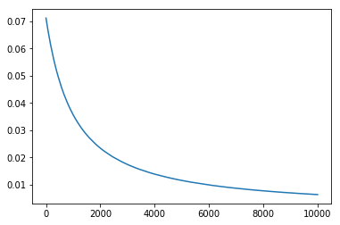
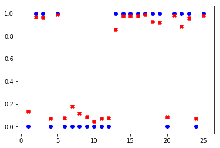

鸢尾花的二分类_v1.0
## 导包
import pandas as pd
import matplotlib.pyplot as plt
import numpy as np
import tensorflow as tf
from tensorflow.keras import layers
from sklearn.model_selection import train_test_split
## 超参数
epochs=10000
1. 提出问题
根据处理好的数据集iris_bi.data.csv,进行两种鸢尾花setosa和versicolor的分类。
2.导入新的数据集
datasets_path = 'data/iris_bi.data.csv'
iris = pd.read_csv(datasets_path,header=None)
print(iris.sample(5))
0 1 2
82 3.9 1.2 1
79 3.5 1.0 1
53 4.0 1.3 1
0 1.4 0.2 0
30 1.6 0.2 0
# 转换为np.array
iris = np.array(iris)
print(type(iris))
print(iris.shape)
<class 'numpy.ndarray'>
(100, 3)
# 可视化
plt.scatter(iris[:49,0],iris[:49,1],marker='x',c='red')
plt.scatter(iris[50:99,0],iris[50:99,1],marker='o',c='green')
<matplotlib.collections.PathCollection at 0x12a1a10f0>

# 拆分特征和标签
iris_X = iris[:,0:2]
iris_y = iris[:,-1]
print("特征集的形状：" + str(iris_X.shape))
print("标签集的形状：" + str(iris_y.shape))
特征集的形状：(100, 2)
标签集的形状：(100,)
# 拆分训练集和测试集
X_train,X_test,y_train,y_test = train_test_split(iris_X,iris_y,test_size=0.25)
print("训练特征集的形状：" + str(X_train.shape))
print("训练标签集的形状：" + str(y_train.shape))
print("测试特征集的形状：" + str(X_test.shape))
print("测试标签集的形状：" + str(y_test.shape))
训练特征集的形状：(75, 2)
训练标签集的形状：(75,)
测试特征集的形状：(25, 2)
测试标签集的形状：(25,)
2.训练模型
# 搭建模型
model = tf.keras.Sequential()
model.add(tf.keras.layers.Dense(units=1, input_dim=2,activation="sigmoid"))
model.summary() # 查看模型结构
_________________________________________________________________
Layer (type) Output Shape Param #
=================================================================
dense_1 (Dense) (None, 1) 3
=================================================================
Total params: 3
Trainable params: 3
Non-trainable params: 0
_________________________________________________________________
# 编译模型
model.compile(optimizer='sgd', loss='mse',metrics=['accuracy'])
# 训练模型
history = model.fit(X_train, y_train,epochs=epochs)
Epoch 1/10000
75/75 [==============================] - 0s 249us/step - loss: 0.0711 - acc: 1.0000
Epoch 2/10000
75/75 [==============================] - 0s 502us/step - loss: 0.0710 - acc: 1.0000
Epoch 3/10000
75/75 [==============================] - 0s 175us/step - loss: 0.0710 - acc: 1.0000
Epoch 4/10000
75/75 [==============================] - 0s 233us/step - loss: 0.0709 - acc: 1.0000
Epoch 5/10000
75/75 [==============================] - 0s 219us/step - loss: 0.0709 - acc: 1.0000
Epoch 6/10000
75/75 [==============================] - 0s 182us/step - loss: 0.0708 - acc: 1.0000
Epoch 7/10000
75/75 [==============================] - 0s 222us/step - loss: 0.0707 - acc: 1.0000
Epoch 8/10000
75/75 [==============================] - 0s 237us/step - loss: 0.0707 - acc: 1.0000
Epoch 9/10000
75/75 [==============================] - 0s 160us/step - loss: 0.0706 - acc: 1.0000
Epoch 10/10000
75/75 [==============================] - 0s 143us/step - loss: 0.0705 - acc: 1.0000
Epoch 11/10000
75/75 [==============================] - 0s 206us/step - loss: 0.0705 - acc: 1.0000
Epoch 12/10000
75/75 [==============================] - 0s 111us/step - loss: 0.0704 - acc: 1.0000
Epoch 13/10000
75/75 [==============================] - 0s 74us/step - loss: 0.0703 - acc: 1.0000
Epoch 14/10000
75/75 [==============================] - 0s 131us/step - loss: 0.0703 - acc: 1.0000
Epoch 15/10000
75/75 [==============================] - 0s 136us/step - loss: 0.0702 - acc: 1.0000
Epoch 16/10000
75/75 [==============================] - 0s 126us/step - loss: 0.0701 - acc: 1.0000
Epoch 17/10000
75/75 [==============================] - 0s 137us/step - loss: 0.0701 - acc: 1.0000
Epoch 18/10000
75/75 [==============================] - 0s 147us/step - loss: 0.0700 - acc: 1.0000
Epoch 19/10000
75/75 [==============================] - 0s 100us/step - loss: 0.0700 - acc: 1.0000
Epoch 20/10000
75/75 [==============================] - 0s 88us/step - loss: 0.0699 - acc: 1.0000
Epoch 21/10000
75/75 [==============================] - 0s 117us/step - loss: 0.0698 - acc: 1.0000
Epoch 22/10000
75/75 [==============================] - 0s 121us/step - loss: 0.0698 - acc: 1.0000
Epoch 23/10000
75/75 [==============================] - 0s 102us/step - loss: 0.0697 - acc: 1.0000
Epoch 24/10000
75/75 [==============================] - 0s 145us/step - loss: 0.0696 - acc: 1.0000
Epoch 25/10000
75/75 [==============================] - 0s 146us/step - loss: 0.0696 - acc: 1.0000
Epoch 26/10000
75/75 [==============================] - 0s 119us/step - loss: 0.0695 - acc: 1.0000
Epoch 27/10000
75/75 [==============================] - 0s 145us/step - loss: 0.0695 - acc: 1.0000
Epoch 28/10000
75/75 [==============================] - 0s 214us/step - loss: 0.0694 - acc: 1.0000
Epoch 29/10000
75/75 [==============================] - 0s 113us/step - loss: 0.0693 - acc: 1.0000
Epoch 30/10000
75/75 [==============================] - 0s 96us/step - loss: 0.0693 - acc: 1.0000
Epoch 31/10000
75/75 [==============================] - 0s 104us/step - loss: 0.0692 - acc: 1.0000
Epoch 32/10000
75/75 [==============================] - 0s 146us/step - loss: 0.0691 - acc: 1.0000
Epoch 33/10000
75/75 [==============================] - 0s 87us/step - loss: 0.0691 - acc: 1.0000
Epoch 34/10000
75/75 [==============================] - 0s 118us/step - loss: 0.0690 - acc: 1.0000
Epoch 35/10000
75/75 [==============================] - 0s 122us/step - loss: 0.0689 - acc: 1.0000
Epoch 36/10000
75/75 [==============================] - 0s 113us/step - loss: 0.0689 - acc: 1.0000
Epoch 37/10000
75/75 [==============================] - 0s 98us/step - loss: 0.0688 - acc: 1.0000
Epoch 38/10000
75/75 [==============================] - 0s 80us/step - loss: 0.0687 - acc: 1.0000
Epoch 39/10000
75/75 [==============================] - 0s 161us/step - loss: 0.0687 - acc: 1.0000
Epoch 40/10000
75/75 [==============================] - 0s 139us/step - loss: 0.0686 - acc: 1.0000
Epoch 41/10000
75/75 [==============================] - 0s 89us/step - loss: 0.0686 - acc: 1.0000
Epoch 42/10000
75/75 [==============================] - 0s 110us/step - loss: 0.0685 - acc: 1.0000
Epoch 43/10000
75/75 [==============================] - 0s 139us/step - loss: 0.0684 - acc: 1.0000
Epoch 44/10000
75/75 [==============================] - 0s 125us/step - loss: 0.0684 - acc: 1.0000
Epoch 45/10000
75/75 [==============================] - 0s 139us/step - loss: 0.0683 - acc: 1.0000
Epoch 46/10000
75/75 [==============================] - 0s 103us/step - loss: 0.0683 - acc: 1.0000
Epoch 47/10000
75/75 [==============================] - 0s 93us/step - loss: 0.0682 - acc: 1.0000
Epoch 48/10000
75/75 [==============================] - 0s 92us/step - loss: 0.0681 - acc: 1.0000
Epoch 49/10000
75/75 [==============================] - 0s 80us/step - loss: 0.0681 - acc: 1.0000
Epoch 50/10000
75/75 [==============================] - 0s 160us/step - loss: 0.0680 - acc: 1.0000
Epoch 51/10000
75/75 [==============================] - 0s 102us/step - loss: 0.0680 - acc: 1.0000
Epoch 52/10000
75/75 [==============================] - 0s 97us/step - loss: 0.0679 - acc: 1.0000
Epoch 53/10000
75/75 [==============================] - 0s 146us/step - loss: 0.0678 - acc: 1.0000
Epoch 54/10000
75/75 [==============================] - 0s 94us/step - loss: 0.0678 - acc: 1.0000
Epoch 55/10000
75/75 [==============================] - 0s 155us/step - loss: 0.0677 - acc: 1.0000
Epoch 56/10000
75/75 [==============================] - 0s 88us/step - loss: 0.0677 - acc: 1.0000
Epoch 57/10000
75/75 [==============================] - 0s 121us/step - loss: 0.0676 - acc: 1.0000
Epoch 58/10000
75/75 [==============================] - 0s 190us/step - loss: 0.0675 - acc: 1.0000
Epoch 59/10000
75/75 [==============================] - 0s 75us/step - loss: 0.0675 - acc: 1.0000
Epoch 60/10000
75/75 [==============================] - 0s 97us/step - loss: 0.0674 - acc: 1.0000
Epoch 61/10000
75/75 [==============================] - 0s 132us/step - loss: 0.0674 - acc: 1.0000
Epoch 62/10000
75/75 [==============================] - 0s 91us/step - loss: 0.0673 - acc: 1.0000
Epoch 63/10000
75/75 [==============================] - 0s 91us/step - loss: 0.0672 - acc: 1.0000
Epoch 64/10000
75/75 [==============================] - 0s 83us/step - loss: 0.0672 - acc: 1.0000
Epoch 65/10000
75/75 [==============================] - 0s 146us/step - loss: 0.0671 - acc: 1.0000
Epoch 66/10000
75/75 [==============================] - 0s 163us/step - loss: 0.0671 - acc: 1.0000
Epoch 67/10000
75/75 [==============================] - 0s 143us/step - loss: 0.0670 - acc: 1.0000
Epoch 68/10000
75/75 [==============================] - 0s 117us/step - loss: 0.0669 - acc: 1.0000
Epoch 69/10000
75/75 [==============================] - 0s 89us/step - loss: 0.0669 - acc: 1.0000
Epoch 70/10000
75/75 [==============================] - 0s 107us/step - loss: 0.0668 - acc: 1.0000
Epoch 71/10000
75/75 [==============================] - 0s 199us/step - loss: 0.0668 - acc: 1.0000
Epoch 72/10000
75/75 [==============================] - 0s 91us/step - loss: 0.0667 - acc: 1.0000
Epoch 73/10000
75/75 [==============================] - 0s 201us/step - loss: 0.0667 - acc: 1.0000
Epoch 74/10000
75/75 [==============================] - 0s 136us/step - loss: 0.0666 - acc: 1.0000
Epoch 75/10000
75/75 [==============================] - 0s 161us/step - loss: 0.0665 - acc: 1.0000
Epoch 76/10000
75/75 [==============================] - 0s 118us/step - loss: 0.0665 - acc: 1.0000
Epoch 77/10000
75/75 [==============================] - 0s 91us/step - loss: 0.0664 - acc: 1.0000
Epoch 78/10000
75/75 [==============================] - 0s 196us/step - loss: 0.0664 - acc: 1.0000
Epoch 79/10000
75/75 [==============================] - 0s 130us/step - loss: 0.0663 - acc: 1.0000
Epoch 80/10000
75/75 [==============================] - 0s 165us/step - loss: 0.0663 - acc: 1.0000
Epoch 81/10000
75/75 [==============================] - 0s 311us/step - loss: 0.0662 - acc: 1.0000
Epoch 82/10000
75/75 [==============================] - 0s 117us/step - loss: 0.0661 - acc: 1.0000
Epoch 83/10000
75/75 [==============================] - 0s 136us/step - loss: 0.0661 - acc: 1.0000
Epoch 84/10000
75/75 [==============================] - 0s 132us/step - loss: 0.0660 - acc: 1.0000
Epoch 85/10000
75/75 [==============================] - 0s 96us/step - loss: 0.0660 - acc: 1.0000
Epoch 86/10000
75/75 [==============================] - 0s 129us/step - loss: 0.0659 - acc: 1.0000
Epoch 87/10000
75/75 [==============================] - 0s 135us/step - loss: 0.0658 - acc: 1.0000
Epoch 88/10000
75/75 [==============================] - 0s 171us/step - loss: 0.0658 - acc: 1.0000
Epoch 89/10000
75/75 [==============================] - 0s 104us/step - loss: 0.0657 - acc: 1.0000
Epoch 90/10000
75/75 [==============================] - 0s 149us/step - loss: 0.0657 - acc: 1.0000
Epoch 91/10000
75/75 [==============================] - 0s 180us/step - loss: 0.0656 - acc: 1.0000
Epoch 92/10000
75/75 [==============================] - 0s 118us/step - loss: 0.0655 - acc: 1.0000
Epoch 93/10000
75/75 [==============================] - 0s 94us/step - loss: 0.0655 - acc: 1.0000
Epoch 94/10000
75/75 [==============================] - 0s 187us/step - loss: 0.0655 - acc: 1.0000
Epoch 95/10000
75/75 [==============================] - 0s 173us/step - loss: 0.0654 - acc: 1.0000
Epoch 96/10000
75/75 [==============================] - 0s 121us/step - loss: 0.0653 - acc: 1.0000
Epoch 97/10000
75/75 [==============================] - 0s 109us/step - loss: 0.0653 - acc: 1.0000
Epoch 98/10000
75/75 [==============================] - 0s 116us/step - loss: 0.0652 - acc: 1.0000
Epoch 99/10000
75/75 [==============================] - 0s 133us/step - loss: 0.0651 - acc: 1.0000
Epoch 100/10000
75/75 [==============================] - 0s 129us/step - loss: 0.0651 - acc: 1.0000
Epoch 101/10000
75/75 [==============================] - 0s 146us/step - loss: 0.0650 - acc: 1.0000
Epoch 102/10000
75/75 [==============================] - 0s 100us/step - loss: 0.0650 - acc: 1.0000
Epoch 103/10000
75/75 [==============================] - 0s 131us/step - loss: 0.0649 - acc: 1.0000
Epoch 104/10000
75/75 [==============================] - 0s 109us/step - loss: 0.0649 - acc: 1.0000
Epoch 105/10000
75/75 [==============================] - 0s 173us/step - loss: 0.0648 - acc: 1.0000
Epoch 106/10000
75/75 [==============================] - 0s 148us/step - loss: 0.0647 - acc: 1.0000
Epoch 107/10000
75/75 [==============================] - 0s 109us/step - loss: 0.0647 - acc: 1.0000
Epoch 108/10000
75/75 [==============================] - 0s 123us/step - loss: 0.0646 - acc: 1.0000
Epoch 109/10000
75/75 [==============================] - 0s 144us/step - loss: 0.0646 - acc: 1.0000
Epoch 110/10000
75/75 [==============================] - 0s 93us/step - loss: 0.0645 - acc: 1.0000
Epoch 111/10000
75/75 [==============================] - 0s 156us/step - loss: 0.0645 - acc: 1.0000
Epoch 112/10000
75/75 [==============================] - 0s 137us/step - loss: 0.0644 - acc: 1.0000
Epoch 113/10000
75/75 [==============================] - 0s 117us/step - loss: 0.0644 - acc: 1.0000
Epoch 114/10000
75/75 [==============================] - 0s 154us/step - loss: 0.0643 - acc: 1.0000
Epoch 115/10000
75/75 [==============================] - 0s 122us/step - loss: 0.0643 - acc: 1.0000
Epoch 116/10000
75/75 [==============================] - 0s 195us/step - loss: 0.0642 - acc: 1.0000
Epoch 117/10000
75/75 [==============================] - 0s 135us/step - loss: 0.0641 - acc: 1.0000
Epoch 118/10000
75/75 [==============================] - 0s 117us/step - loss: 0.0641 - acc: 1.0000
Epoch 119/10000
75/75 [==============================] - 0s 137us/step - loss: 0.0640 - acc: 1.0000
Epoch 120/10000
75/75 [==============================] - 0s 139us/step - loss: 0.0640 - acc: 1.0000
Epoch 121/10000
75/75 [==============================] - 0s 152us/step - loss: 0.0639 - acc: 1.0000
Epoch 122/10000
75/75 [==============================] - 0s 108us/step - loss: 0.0639 - acc: 1.0000
Epoch 123/10000
75/75 [==============================] - 0s 119us/step - loss: 0.0638 - acc: 1.0000
Epoch 124/10000
75/75 [==============================] - 0s 131us/step - loss: 0.0637 - acc: 1.0000
Epoch 125/10000
75/75 [==============================] - 0s 128us/step - loss: 0.0637 - acc: 1.0000
Epoch 126/10000
75/75 [==============================] - 0s 144us/step - loss: 0.0636 - acc: 1.0000
Epoch 127/10000
75/75 [==============================] - 0s 103us/step - loss: 0.0636 - acc: 1.0000
Epoch 128/10000
75/75 [==============================] - 0s 141us/step - loss: 0.0635 - acc: 1.0000
Epoch 129/10000
75/75 [==============================] - 0s 157us/step - loss: 0.0635 - acc: 1.0000
Epoch 130/10000
75/75 [==============================] - 0s 108us/step - loss: 0.0634 - acc: 1.0000
Epoch 131/10000
75/75 [==============================] - 0s 179us/step - loss: 0.0634 - acc: 1.0000
Epoch 132/10000
75/75 [==============================] - 0s 127us/step - loss: 0.0633 - acc: 1.0000
Epoch 133/10000
75/75 [==============================] - 0s 132us/step - loss: 0.0633 - acc: 1.0000
Epoch 134/10000
75/75 [==============================] - 0s 122us/step - loss: 0.0632 - acc: 1.0000
Epoch 135/10000
75/75 [==============================] - 0s 143us/step - loss: 0.0632 - acc: 1.0000
Epoch 136/10000
75/75 [==============================] - 0s 116us/step - loss: 0.0631 - acc: 1.0000
Epoch 137/10000
75/75 [==============================] - 0s 143us/step - loss: 0.0631 - acc: 1.0000
Epoch 138/10000
75/75 [==============================] - 0s 142us/step - loss: 0.0630 - acc: 1.0000
Epoch 139/10000
75/75 [==============================] - 0s 100us/step - loss: 0.0629 - acc: 1.0000
Epoch 140/10000
75/75 [==============================] - 0s 107us/step - loss: 0.0629 - acc: 1.0000
Epoch 141/10000
75/75 [==============================] - 0s 119us/step - loss: 0.0628 - acc: 1.0000
Epoch 142/10000
75/75 [==============================] - 0s 89us/step - loss: 0.0628 - acc: 1.0000
Epoch 143/10000
75/75 [==============================] - 0s 116us/step - loss: 0.0627 - acc: 1.0000
Epoch 144/10000
75/75 [==============================] - 0s 108us/step - loss: 0.0627 - acc: 1.0000
Epoch 145/10000
75/75 [==============================] - 0s 112us/step - loss: 0.0626 - acc: 1.0000
Epoch 146/10000
75/75 [==============================] - 0s 145us/step - loss: 0.0626 - acc: 1.0000
Epoch 147/10000
75/75 [==============================] - 0s 120us/step - loss: 0.0625 - acc: 1.0000
Epoch 148/10000
75/75 [==============================] - 0s 148us/step - loss: 0.0625 - acc: 1.0000
Epoch 149/10000
75/75 [==============================] - 0s 124us/step - loss: 0.0624 - acc: 1.0000
Epoch 150/10000
75/75 [==============================] - 0s 161us/step - loss: 0.0624 - acc: 1.0000
Epoch 151/10000
75/75 [==============================] - 0s 97us/step - loss: 0.0623 - acc: 1.0000
Epoch 152/10000
75/75 [==============================] - 0s 118us/step - loss: 0.0623 - acc: 1.0000
Epoch 153/10000
75/75 [==============================] - 0s 161us/step - loss: 0.0622 - acc: 1.0000
Epoch 154/10000
75/75 [==============================] - 0s 172us/step - loss: 0.0622 - acc: 1.0000
Epoch 155/10000
75/75 [==============================] - 0s 101us/step - loss: 0.0621 - acc: 1.0000
Epoch 156/10000
75/75 [==============================] - 0s 149us/step - loss: 0.0621 - acc: 1.0000
Epoch 157/10000
75/75 [==============================] - 0s 145us/step - loss: 0.0620 - acc: 1.0000
Epoch 158/10000
75/75 [==============================] - 0s 59us/step - loss: 0.0620 - acc: 1.0000
Epoch 159/10000
75/75 [==============================] - 0s 193us/step - loss: 0.0619 - acc: 1.0000
Epoch 160/10000
75/75 [==============================] - 0s 104us/step - loss: 0.0619 - acc: 1.0000
Epoch 161/10000
75/75 [==============================] - 0s 119us/step - loss: 0.0618 - acc: 1.0000
Epoch 162/10000
75/75 [==============================] - 0s 98us/step - loss: 0.0618 - acc: 1.0000
Epoch 163/10000
75/75 [==============================] - 0s 99us/step - loss: 0.0617 - acc: 1.0000
Epoch 164/10000
75/75 [==============================] - 0s 117us/step - loss: 0.0616 - acc: 1.0000
Epoch 165/10000
75/75 [==============================] - 0s 123us/step - loss: 0.0616 - acc: 1.0000
Epoch 166/10000
75/75 [==============================] - 0s 158us/step - loss: 0.0615 - acc: 1.0000
Epoch 167/10000
75/75 [==============================] - 0s 126us/step - loss: 0.0615 - acc: 1.0000
Epoch 168/10000
75/75 [==============================] - 0s 115us/step - loss: 0.0614 - acc: 1.0000
Epoch 169/10000
75/75 [==============================] - 0s 97us/step - loss: 0.0614 - acc: 1.0000
Epoch 170/10000
75/75 [==============================] - 0s 136us/step - loss: 0.0613 - acc: 1.0000
Epoch 171/10000
75/75 [==============================] - 0s 126us/step - loss: 0.0613 - acc: 1.0000
Epoch 172/10000
75/75 [==============================] - 0s 124us/step - loss: 0.0612 - acc: 1.0000
Epoch 173/10000
75/75 [==============================] - 0s 114us/step - loss: 0.0612 - acc: 1.0000
Epoch 174/10000
75/75 [==============================] - 0s 115us/step - loss: 0.0611 - acc: 1.0000
Epoch 175/10000
75/75 [==============================] - 0s 73us/step - loss: 0.0611 - acc: 1.0000
Epoch 176/10000
75/75 [==============================] - 0s 175us/step - loss: 0.0610 - acc: 1.0000
Epoch 177/10000
75/75 [==============================] - 0s 115us/step - loss: 0.0610 - acc: 1.0000
Epoch 178/10000
75/75 [==============================] - 0s 105us/step - loss: 0.0609 - acc: 1.0000
Epoch 179/10000
75/75 [==============================] - 0s 120us/step - loss: 0.0609 - acc: 1.0000
Epoch 180/10000
75/75 [==============================] - 0s 131us/step - loss: 0.0608 - acc: 1.0000
Epoch 181/10000
75/75 [==============================] - 0s 108us/step - loss: 0.0608 - acc: 1.0000
Epoch 182/10000
75/75 [==============================] - 0s 112us/step - loss: 0.0607 - acc: 1.0000
Epoch 183/10000
75/75 [==============================] - 0s 112us/step - loss: 0.0607 - acc: 1.0000
Epoch 184/10000
75/75 [==============================] - 0s 121us/step - loss: 0.0606 - acc: 1.0000
Epoch 185/10000
75/75 [==============================] - 0s 100us/step - loss: 0.0606 - acc: 1.0000
Epoch 186/10000
75/75 [==============================] - 0s 148us/step - loss: 0.0605 - acc: 1.0000
Epoch 187/10000
75/75 [==============================] - 0s 90us/step - loss: 0.0605 - acc: 1.0000
Epoch 188/10000
75/75 [==============================] - 0s 120us/step - loss: 0.0604 - acc: 1.0000
Epoch 189/10000
75/75 [==============================] - 0s 183us/step - loss: 0.0604 - acc: 1.0000
Epoch 190/10000
75/75 [==============================] - 0s 150us/step - loss: 0.0603 - acc: 1.0000
Epoch 191/10000
75/75 [==============================] - 0s 138us/step - loss: 0.0603 - acc: 1.0000
Epoch 192/10000
75/75 [==============================] - 0s 168us/step - loss: 0.0602 - acc: 1.0000
Epoch 193/10000
75/75 [==============================] - 0s 108us/step - loss: 0.0602 - acc: 1.0000
Epoch 194/10000
75/75 [==============================] - 0s 134us/step - loss: 0.0601 - acc: 1.0000
Epoch 195/10000
75/75 [==============================] - 0s 112us/step - loss: 0.0601 - acc: 1.0000
Epoch 196/10000
75/75 [==============================] - 0s 176us/step - loss: 0.0600 - acc: 1.0000
Epoch 197/10000
75/75 [==============================] - 0s 136us/step - loss: 0.0600 - acc: 1.0000
Epoch 198/10000
75/75 [==============================] - 0s 139us/step - loss: 0.0600 - acc: 1.0000
Epoch 199/10000
75/75 [==============================] - 0s 149us/step - loss: 0.0599 - acc: 1.0000
Epoch 200/10000
75/75 [==============================] - 0s 108us/step - loss: 0.0598 - acc: 1.0000
Epoch 201/10000
75/75 [==============================] - 0s 144us/step - loss: 0.0598 - acc: 1.0000
Epoch 202/10000
75/75 [==============================] - 0s 132us/step - loss: 0.0597 - acc: 1.0000
Epoch 203/10000
75/75 [==============================] - 0s 96us/step - loss: 0.0597 - acc: 1.0000
Epoch 204/10000
75/75 [==============================] - 0s 127us/step - loss: 0.0597 - acc: 1.0000
Epoch 205/10000
75/75 [==============================] - 0s 165us/step - loss: 0.0596 - acc: 1.0000
Epoch 206/10000
75/75 [==============================] - 0s 124us/step - loss: 0.0596 - acc: 1.0000
Epoch 207/10000
75/75 [==============================] - 0s 106us/step - loss: 0.0595 - acc: 1.0000
Epoch 208/10000
75/75 [==============================] - 0s 84us/step - loss: 0.0595 - acc: 1.0000
Epoch 209/10000
75/75 [==============================] - 0s 91us/step - loss: 0.0594 - acc: 1.0000
Epoch 210/10000
75/75 [==============================] - 0s 132us/step - loss: 0.0594 - acc: 1.0000
Epoch 211/10000
75/75 [==============================] - 0s 114us/step - loss: 0.0593 - acc: 1.0000
Epoch 212/10000
75/75 [==============================] - 0s 152us/step - loss: 0.0593 - acc: 1.0000
Epoch 213/10000
75/75 [==============================] - 0s 73us/step - loss: 0.0592 - acc: 1.0000
Epoch 214/10000
75/75 [==============================] - 0s 143us/step - loss: 0.0592 - acc: 1.0000
Epoch 215/10000
75/75 [==============================] - 0s 179us/step - loss: 0.0591 - acc: 1.0000
Epoch 216/10000
75/75 [==============================] - 0s 98us/step - loss: 0.0591 - acc: 1.0000
Epoch 217/10000
75/75 [==============================] - 0s 171us/step - loss: 0.0590 - acc: 1.0000
Epoch 218/10000
75/75 [==============================] - 0s 146us/step - loss: 0.0590 - acc: 1.0000
Epoch 219/10000
75/75 [==============================] - 0s 148us/step - loss: 0.0589 - acc: 1.0000
Epoch 220/10000
75/75 [==============================] - 0s 100us/step - loss: 0.0589 - acc: 1.0000
Epoch 221/10000
75/75 [==============================] - 0s 114us/step - loss: 0.0588 - acc: 1.0000
Epoch 222/10000
75/75 [==============================] - 0s 141us/step - loss: 0.0588 - acc: 1.0000
Epoch 223/10000
75/75 [==============================] - 0s 127us/step - loss: 0.0587 - acc: 1.0000
Epoch 224/10000
75/75 [==============================] - 0s 120us/step - loss: 0.0587 - acc: 1.0000
Epoch 225/10000
75/75 [==============================] - 0s 131us/step - loss: 0.0586 - acc: 1.0000
Epoch 226/10000
75/75 [==============================] - 0s 130us/step - loss: 0.0586 - acc: 1.0000
Epoch 227/10000
75/75 [==============================] - 0s 85us/step - loss: 0.0586 - acc: 1.0000
Epoch 228/10000
75/75 [==============================] - 0s 128us/step - loss: 0.0585 - acc: 1.0000
Epoch 229/10000
75/75 [==============================] - 0s 165us/step - loss: 0.0585 - acc: 1.0000
Epoch 230/10000
75/75 [==============================] - 0s 129us/step - loss: 0.0584 - acc: 1.0000
Epoch 231/10000
75/75 [==============================] - 0s 121us/step - loss: 0.0584 - acc: 1.0000
Epoch 232/10000
75/75 [==============================] - 0s 152us/step - loss: 0.0583 - acc: 1.0000
Epoch 233/10000
75/75 [==============================] - 0s 69us/step - loss: 0.0583 - acc: 1.0000
Epoch 234/10000
75/75 [==============================] - 0s 176us/step - loss: 0.0582 - acc: 1.0000
Epoch 235/10000
75/75 [==============================] - 0s 129us/step - loss: 0.0582 - acc: 1.0000
Epoch 236/10000
75/75 [==============================] - 0s 144us/step - loss: 0.0581 - acc: 1.0000
Epoch 237/10000
75/75 [==============================] - 0s 91us/step - loss: 0.0581 - acc: 1.0000
Epoch 238/10000
75/75 [==============================] - 0s 121us/step - loss: 0.0580 - acc: 1.0000
Epoch 239/10000
75/75 [==============================] - 0s 77us/step - loss: 0.0580 - acc: 1.0000
Epoch 240/10000
75/75 [==============================] - 0s 136us/step - loss: 0.0580 - acc: 1.0000
Epoch 241/10000
75/75 [==============================] - 0s 91us/step - loss: 0.0579 - acc: 1.0000
Epoch 242/10000
75/75 [==============================] - 0s 125us/step - loss: 0.0579 - acc: 1.0000
Epoch 243/10000
75/75 [==============================] - 0s 185us/step - loss: 0.0578 - acc: 1.0000
Epoch 244/10000
75/75 [==============================] - 0s 129us/step - loss: 0.0578 - acc: 1.0000
Epoch 245/10000
75/75 [==============================] - 0s 90us/step - loss: 0.0577 - acc: 1.0000
Epoch 246/10000
75/75 [==============================] - 0s 99us/step - loss: 0.0577 - acc: 1.0000
Epoch 247/10000
75/75 [==============================] - 0s 115us/step - loss: 0.0576 - acc: 1.0000
Epoch 248/10000
75/75 [==============================] - 0s 146us/step - loss: 0.0576 - acc: 1.0000
Epoch 249/10000
75/75 [==============================] - 0s 116us/step - loss: 0.0575 - acc: 1.0000
Epoch 250/10000
75/75 [==============================] - 0s 123us/step - loss: 0.0575 - acc: 1.0000
Epoch 251/10000
75/75 [==============================] - 0s 82us/step - loss: 0.0575 - acc: 1.0000
Epoch 252/10000
75/75 [==============================] - 0s 135us/step - loss: 0.0574 - acc: 1.0000
Epoch 253/10000
75/75 [==============================] - 0s 137us/step - loss: 0.0574 - acc: 1.0000
Epoch 254/10000
75/75 [==============================] - 0s 91us/step - loss: 0.0573 - acc: 1.0000
Epoch 255/10000
75/75 [==============================] - 0s 127us/step - loss: 0.0573 - acc: 1.0000
Epoch 256/10000
75/75 [==============================] - 0s 109us/step - loss: 0.0572 - acc: 1.0000
Epoch 257/10000
75/75 [==============================] - 0s 137us/step - loss: 0.0572 - acc: 1.0000
Epoch 258/10000
75/75 [==============================] - 0s 95us/step - loss: 0.0571 - acc: 1.0000
Epoch 259/10000
75/75 [==============================] - 0s 140us/step - loss: 0.0571 - acc: 1.0000
Epoch 260/10000
75/75 [==============================] - 0s 95us/step - loss: 0.0570 - acc: 1.0000
Epoch 261/10000
75/75 [==============================] - 0s 164us/step - loss: 0.0570 - acc: 1.0000
Epoch 262/10000
75/75 [==============================] - 0s 143us/step - loss: 0.0570 - acc: 1.0000
Epoch 263/10000
75/75 [==============================] - 0s 100us/step - loss: 0.0569 - acc: 1.0000
Epoch 264/10000
75/75 [==============================] - 0s 128us/step - loss: 0.0569 - acc: 1.0000
Epoch 265/10000
75/75 [==============================] - 0s 158us/step - loss: 0.0568 - acc: 1.0000
Epoch 266/10000
75/75 [==============================] - 0s 78us/step - loss: 0.0568 - acc: 1.0000
Epoch 267/10000
75/75 [==============================] - 0s 161us/step - loss: 0.0567 - acc: 1.0000
Epoch 268/10000
75/75 [==============================] - 0s 104us/step - loss: 0.0567 - acc: 1.0000
Epoch 269/10000
75/75 [==============================] - 0s 110us/step - loss: 0.0567 - acc: 1.0000
Epoch 270/10000
75/75 [==============================] - 0s 170us/step - loss: 0.0566 - acc: 1.0000
Epoch 271/10000
75/75 [==============================] - 0s 95us/step - loss: 0.0566 - acc: 1.0000
Epoch 272/10000
75/75 [==============================] - 0s 115us/step - loss: 0.0565 - acc: 1.0000
Epoch 273/10000
75/75 [==============================] - 0s 147us/step - loss: 0.0565 - acc: 1.0000
Epoch 274/10000
75/75 [==============================] - 0s 104us/step - loss: 0.0564 - acc: 1.0000
Epoch 275/10000
75/75 [==============================] - 0s 151us/step - loss: 0.0564 - acc: 1.0000
Epoch 276/10000
75/75 [==============================] - 0s 140us/step - loss: 0.0563 - acc: 1.0000
Epoch 277/10000
75/75 [==============================] - 0s 141us/step - loss: 0.0563 - acc: 1.0000
Epoch 278/10000
75/75 [==============================] - 0s 103us/step - loss: 0.0563 - acc: 1.0000
Epoch 279/10000
75/75 [==============================] - 0s 177us/step - loss: 0.0562 - acc: 1.0000
Epoch 280/10000
75/75 [==============================] - 0s 116us/step - loss: 0.0562 - acc: 1.0000
Epoch 281/10000
75/75 [==============================] - 0s 139us/step - loss: 0.0561 - acc: 1.0000
Epoch 282/10000
75/75 [==============================] - 0s 135us/step - loss: 0.0561 - acc: 1.0000
Epoch 283/10000
75/75 [==============================] - 0s 154us/step - loss: 0.0560 - acc: 1.0000
Epoch 284/10000
75/75 [==============================] - 0s 117us/step - loss: 0.0560 - acc: 1.0000
Epoch 285/10000
75/75 [==============================] - 0s 149us/step - loss: 0.0560 - acc: 1.0000
Epoch 286/10000
75/75 [==============================] - 0s 129us/step - loss: 0.0559 - acc: 1.0000
Epoch 287/10000
75/75 [==============================] - 0s 91us/step - loss: 0.0559 - acc: 1.0000
Epoch 288/10000
75/75 [==============================] - 0s 159us/step - loss: 0.0558 - acc: 1.0000
Epoch 289/10000
75/75 [==============================] - 0s 137us/step - loss: 0.0558 - acc: 1.0000
Epoch 290/10000
75/75 [==============================] - 0s 87us/step - loss: 0.0557 - acc: 1.0000
Epoch 291/10000
75/75 [==============================] - 0s 167us/step - loss: 0.0557 - acc: 1.0000
Epoch 292/10000
75/75 [==============================] - 0s 144us/step - loss: 0.0557 - acc: 1.0000
Epoch 293/10000
75/75 [==============================] - 0s 102us/step - loss: 0.0556 - acc: 1.0000
Epoch 294/10000
75/75 [==============================] - 0s 65us/step - loss: 0.0556 - acc: 1.0000
Epoch 295/10000
75/75 [==============================] - 0s 127us/step - loss: 0.0555 - acc: 1.0000
Epoch 296/10000
75/75 [==============================] - 0s 125us/step - loss: 0.0555 - acc: 1.0000
Epoch 297/10000
75/75 [==============================] - 0s 122us/step - loss: 0.0554 - acc: 1.0000
Epoch 298/10000
75/75 [==============================] - 0s 168us/step - loss: 0.0554 - acc: 1.0000
Epoch 299/10000
75/75 [==============================] - 0s 138us/step - loss: 0.0554 - acc: 1.0000
Epoch 300/10000
75/75 [==============================] - 0s 107us/step - loss: 0.0553 - acc: 1.0000
Epoch 301/10000
75/75 [==============================] - 0s 120us/step - loss: 0.0553 - acc: 1.0000
Epoch 302/10000
75/75 [==============================] - 0s 108us/step - loss: 0.0552 - acc: 1.0000
Epoch 303/10000
75/75 [==============================] - 0s 105us/step - loss: 0.0552 - acc: 1.0000
Epoch 304/10000
75/75 [==============================] - 0s 144us/step - loss: 0.0551 - acc: 1.0000
Epoch 305/10000
75/75 [==============================] - 0s 193us/step - loss: 0.0551 - acc: 1.0000
Epoch 306/10000
75/75 [==============================] - 0s 131us/step - loss: 0.0551 - acc: 1.0000
Epoch 307/10000
75/75 [==============================] - 0s 80us/step - loss: 0.0550 - acc: 1.0000
Epoch 308/10000
75/75 [==============================] - 0s 155us/step - loss: 0.0550 - acc: 1.0000
Epoch 309/10000
75/75 [==============================] - 0s 100us/step - loss: 0.0549 - acc: 1.0000
Epoch 310/10000
75/75 [==============================] - 0s 99us/step - loss: 0.0549 - acc: 1.0000
Epoch 311/10000
75/75 [==============================] - 0s 93us/step - loss: 0.0548 - acc: 1.0000
Epoch 312/10000
75/75 [==============================] - 0s 174us/step - loss: 0.0548 - acc: 1.0000
Epoch 313/10000
75/75 [==============================] - 0s 145us/step - loss: 0.0548 - acc: 1.0000
Epoch 314/10000
75/75 [==============================] - 0s 139us/step - loss: 0.0547 - acc: 1.0000
Epoch 315/10000
75/75 [==============================] - 0s 120us/step - loss: 0.0547 - acc: 1.0000
Epoch 316/10000
75/75 [==============================] - 0s 92us/step - loss: 0.0547 - acc: 1.0000
Epoch 317/10000
75/75 [==============================] - 0s 125us/step - loss: 0.0546 - acc: 1.0000
Epoch 318/10000
75/75 [==============================] - 0s 181us/step - loss: 0.0546 - acc: 1.0000
Epoch 319/10000
75/75 [==============================] - 0s 118us/step - loss: 0.0545 - acc: 1.0000
Epoch 320/10000
75/75 [==============================] - 0s 113us/step - loss: 0.0545 - acc: 1.0000
Epoch 321/10000
75/75 [==============================] - 0s 182us/step - loss: 0.0544 - acc: 1.0000
Epoch 322/10000
75/75 [==============================] - 0s 131us/step - loss: 0.0544 - acc: 1.0000
Epoch 323/10000
75/75 [==============================] - 0s 111us/step - loss: 0.0544 - acc: 1.0000
Epoch 324/10000
75/75 [==============================] - 0s 112us/step - loss: 0.0543 - acc: 1.0000
Epoch 325/10000
75/75 [==============================] - 0s 118us/step - loss: 0.0543 - acc: 1.0000
Epoch 326/10000
75/75 [==============================] - 0s 115us/step - loss: 0.0542 - acc: 1.0000
Epoch 327/10000
75/75 [==============================] - 0s 152us/step - loss: 0.0542 - acc: 1.0000
Epoch 328/10000
75/75 [==============================] - 0s 160us/step - loss: 0.0542 - acc: 1.0000
Epoch 329/10000
75/75 [==============================] - 0s 103us/step - loss: 0.0541 - acc: 1.0000
Epoch 330/10000
75/75 [==============================] - 0s 117us/step - loss: 0.0541 - acc: 1.0000
Epoch 331/10000
75/75 [==============================] - 0s 132us/step - loss: 0.0540 - acc: 1.0000
Epoch 332/10000
75/75 [==============================] - 0s 142us/step - loss: 0.0540 - acc: 1.0000
Epoch 333/10000
75/75 [==============================] - 0s 128us/step - loss: 0.0540 - acc: 1.0000
Epoch 334/10000
75/75 [==============================] - 0s 137us/step - loss: 0.0539 - acc: 1.0000
Epoch 335/10000
75/75 [==============================] - 0s 145us/step - loss: 0.0539 - acc: 1.0000
Epoch 336/10000
75/75 [==============================] - 0s 140us/step - loss: 0.0538 - acc: 1.0000
Epoch 337/10000
75/75 [==============================] - 0s 101us/step - loss: 0.0538 - acc: 1.0000
Epoch 338/10000
75/75 [==============================] - 0s 117us/step - loss: 0.0538 - acc: 1.0000
Epoch 339/10000
75/75 [==============================] - 0s 94us/step - loss: 0.0537 - acc: 1.0000
Epoch 340/10000
75/75 [==============================] - 0s 148us/step - loss: 0.0537 - acc: 1.0000
Epoch 341/10000
75/75 [==============================] - 0s 136us/step - loss: 0.0536 - acc: 1.0000
Epoch 342/10000
75/75 [==============================] - 0s 121us/step - loss: 0.0536 - acc: 1.0000
Epoch 343/10000
75/75 [==============================] - 0s 143us/step - loss: 0.0536 - acc: 1.0000
Epoch 344/10000
75/75 [==============================] - 0s 140us/step - loss: 0.0535 - acc: 1.0000
Epoch 345/10000
75/75 [==============================] - 0s 129us/step - loss: 0.0535 - acc: 1.0000
Epoch 346/10000
75/75 [==============================] - 0s 107us/step - loss: 0.0534 - acc: 1.0000
Epoch 347/10000
75/75 [==============================] - 0s 73us/step - loss: 0.0534 - acc: 1.0000
Epoch 348/10000
75/75 [==============================] - 0s 130us/step - loss: 0.0534 - acc: 1.0000
Epoch 349/10000
75/75 [==============================] - 0s 80us/step - loss: 0.0533 - acc: 1.0000
Epoch 350/10000
75/75 [==============================] - 0s 178us/step - loss: 0.0533 - acc: 1.0000
Epoch 351/10000
75/75 [==============================] - 0s 129us/step - loss: 0.0532 - acc: 1.0000
Epoch 352/10000
75/75 [==============================] - 0s 97us/step - loss: 0.0532 - acc: 1.0000
Epoch 353/10000
75/75 [==============================] - 0s 92us/step - loss: 0.0532 - acc: 1.0000
Epoch 354/10000
75/75 [==============================] - 0s 132us/step - loss: 0.0531 - acc: 1.0000
Epoch 355/10000
75/75 [==============================] - 0s 101us/step - loss: 0.0531 - acc: 1.0000
Epoch 356/10000
75/75 [==============================] - 0s 89us/step - loss: 0.0530 - acc: 1.0000
Epoch 357/10000
75/75 [==============================] - 0s 196us/step - loss: 0.0530 - acc: 1.0000
Epoch 358/10000
75/75 [==============================] - 0s 169us/step - loss: 0.0530 - acc: 1.0000
Epoch 359/10000
75/75 [==============================] - 0s 109us/step - loss: 0.0529 - acc: 1.0000
Epoch 360/10000
75/75 [==============================] - 0s 104us/step - loss: 0.0529 - acc: 1.0000
Epoch 361/10000
75/75 [==============================] - 0s 106us/step - loss: 0.0529 - acc: 1.0000
Epoch 362/10000
75/75 [==============================] - 0s 153us/step - loss: 0.0528 - acc: 1.0000
Epoch 363/10000
75/75 [==============================] - 0s 146us/step - loss: 0.0528 - acc: 1.0000
Epoch 364/10000
75/75 [==============================] - 0s 99us/step - loss: 0.0527 - acc: 1.0000
Epoch 365/10000
75/75 [==============================] - 0s 156us/step - loss: 0.0527 - acc: 1.0000
Epoch 366/10000
75/75 [==============================] - 0s 137us/step - loss: 0.0527 - acc: 1.0000
Epoch 367/10000
75/75 [==============================] - 0s 117us/step - loss: 0.0526 - acc: 1.0000
Epoch 368/10000
75/75 [==============================] - 0s 146us/step - loss: 0.0526 - acc: 1.0000
Epoch 369/10000
75/75 [==============================] - 0s 119us/step - loss: 0.0525 - acc: 1.0000
Epoch 370/10000
75/75 [==============================] - 0s 155us/step - loss: 0.0525 - acc: 1.0000
Epoch 371/10000
75/75 [==============================] - 0s 146us/step - loss: 0.0525 - acc: 1.0000
Epoch 372/10000
75/75 [==============================] - 0s 149us/step - loss: 0.0524 - acc: 1.0000
Epoch 373/10000
75/75 [==============================] - 0s 112us/step - loss: 0.0524 - acc: 1.0000
Epoch 374/10000
75/75 [==============================] - 0s 146us/step - loss: 0.0524 - acc: 1.0000
Epoch 375/10000
75/75 [==============================] - 0s 159us/step - loss: 0.0523 - acc: 1.0000
Epoch 376/10000
75/75 [==============================] - 0s 187us/step - loss: 0.0523 - acc: 1.0000
Epoch 377/10000
75/75 [==============================] - 0s 126us/step - loss: 0.0522 - acc: 1.0000
Epoch 378/10000
75/75 [==============================] - 0s 122us/step - loss: 0.0522 - acc: 1.0000
Epoch 379/10000
75/75 [==============================] - 0s 137us/step - loss: 0.0522 - acc: 1.0000
Epoch 380/10000
75/75 [==============================] - 0s 150us/step - loss: 0.0521 - acc: 1.0000
Epoch 381/10000
75/75 [==============================] - 0s 140us/step - loss: 0.0521 - acc: 1.0000
Epoch 382/10000
75/75 [==============================] - 0s 94us/step - loss: 0.0521 - acc: 1.0000
Epoch 383/10000
75/75 [==============================] - 0s 139us/step - loss: 0.0520 - acc: 1.0000
Epoch 384/10000
75/75 [==============================] - 0s 143us/step - loss: 0.0520 - acc: 1.0000
Epoch 385/10000
75/75 [==============================] - 0s 138us/step - loss: 0.0519 - acc: 1.0000
Epoch 386/10000
75/75 [==============================] - 0s 107us/step - loss: 0.0519 - acc: 1.0000
Epoch 387/10000
75/75 [==============================] - 0s 156us/step - loss: 0.0519 - acc: 1.0000
Epoch 388/10000
75/75 [==============================] - 0s 116us/step - loss: 0.0518 - acc: 1.0000
Epoch 389/10000
75/75 [==============================] - 0s 141us/step - loss: 0.0518 - acc: 1.0000
Epoch 390/10000
75/75 [==============================] - 0s 97us/step - loss: 0.0518 - acc: 1.0000
Epoch 391/10000
75/75 [==============================] - 0s 149us/step - loss: 0.0517 - acc: 1.0000
Epoch 392/10000
75/75 [==============================] - 0s 114us/step - loss: 0.0517 - acc: 1.0000
Epoch 393/10000
75/75 [==============================] - 0s 93us/step - loss: 0.0517 - acc: 1.0000
Epoch 394/10000
75/75 [==============================] - 0s 148us/step - loss: 0.0516 - acc: 1.0000
Epoch 395/10000
75/75 [==============================] - 0s 142us/step - loss: 0.0516 - acc: 1.0000
Epoch 396/10000
75/75 [==============================] - 0s 97us/step - loss: 0.0515 - acc: 1.0000
Epoch 397/10000
75/75 [==============================] - 0s 133us/step - loss: 0.0515 - acc: 1.0000
Epoch 398/10000
75/75 [==============================] - 0s 127us/step - loss: 0.0515 - acc: 1.0000
Epoch 399/10000
75/75 [==============================] - 0s 82us/step - loss: 0.0514 - acc: 1.0000
Epoch 400/10000
75/75 [==============================] - 0s 124us/step - loss: 0.0514 - acc: 1.0000
Epoch 401/10000
75/75 [==============================] - 0s 126us/step - loss: 0.0514 - acc: 1.0000
Epoch 402/10000
75/75 [==============================] - 0s 122us/step - loss: 0.0513 - acc: 1.0000
Epoch 403/10000
75/75 [==============================] - 0s 163us/step - loss: 0.0513 - acc: 1.0000
Epoch 404/10000
75/75 [==============================] - 0s 121us/step - loss: 0.0512 - acc: 1.0000
Epoch 405/10000
75/75 [==============================] - 0s 87us/step - loss: 0.0512 - acc: 1.0000
Epoch 406/10000
75/75 [==============================] - 0s 97us/step - loss: 0.0512 - acc: 1.0000
Epoch 407/10000
75/75 [==============================] - 0s 78us/step - loss: 0.0511 - acc: 1.0000
Epoch 408/10000
75/75 [==============================] - 0s 82us/step - loss: 0.0511 - acc: 1.0000
Epoch 409/10000
75/75 [==============================] - 0s 127us/step - loss: 0.0511 - acc: 1.0000
Epoch 410/10000
75/75 [==============================] - 0s 97us/step - loss: 0.0510 - acc: 1.0000
Epoch 411/10000
75/75 [==============================] - 0s 121us/step - loss: 0.0510 - acc: 1.0000
Epoch 412/10000
75/75 [==============================] - 0s 132us/step - loss: 0.0509 - acc: 1.0000
Epoch 413/10000
75/75 [==============================] - 0s 137us/step - loss: 0.0509 - acc: 1.0000
Epoch 414/10000
75/75 [==============================] - 0s 97us/step - loss: 0.0509 - acc: 1.0000
Epoch 415/10000
75/75 [==============================] - 0s 111us/step - loss: 0.0508 - acc: 1.0000
Epoch 416/10000
75/75 [==============================] - 0s 85us/step - loss: 0.0508 - acc: 1.0000
Epoch 417/10000
75/75 [==============================] - 0s 134us/step - loss: 0.0508 - acc: 1.0000
Epoch 418/10000
75/75 [==============================] - 0s 102us/step - loss: 0.0507 - acc: 1.0000
Epoch 419/10000
75/75 [==============================] - 0s 157us/step - loss: 0.0507 - acc: 1.0000
Epoch 420/10000
75/75 [==============================] - 0s 93us/step - loss: 0.0507 - acc: 1.0000
Epoch 421/10000
75/75 [==============================] - 0s 156us/step - loss: 0.0506 - acc: 1.0000
Epoch 422/10000
75/75 [==============================] - 0s 96us/step - loss: 0.0506 - acc: 1.0000
Epoch 423/10000
75/75 [==============================] - 0s 164us/step - loss: 0.0506 - acc: 1.0000
Epoch 424/10000
75/75 [==============================] - 0s 110us/step - loss: 0.0505 - acc: 1.0000
Epoch 425/10000
75/75 [==============================] - 0s 126us/step - loss: 0.0505 - acc: 1.0000
Epoch 426/10000
75/75 [==============================] - 0s 148us/step - loss: 0.0504 - acc: 1.0000
Epoch 427/10000
75/75 [==============================] - 0s 122us/step - loss: 0.0504 - acc: 1.0000
Epoch 428/10000
75/75 [==============================] - 0s 111us/step - loss: 0.0504 - acc: 1.0000
Epoch 429/10000
75/75 [==============================] - 0s 93us/step - loss: 0.0503 - acc: 1.0000
Epoch 430/10000
75/75 [==============================] - 0s 115us/step - loss: 0.0503 - acc: 1.0000
Epoch 431/10000
75/75 [==============================] - 0s 122us/step - loss: 0.0503 - acc: 1.0000
Epoch 432/10000
75/75 [==============================] - 0s 85us/step - loss: 0.0502 - acc: 1.0000
Epoch 433/10000
75/75 [==============================] - 0s 123us/step - loss: 0.0502 - acc: 1.0000
Epoch 434/10000
75/75 [==============================] - 0s 98us/step - loss: 0.0502 - acc: 1.0000
Epoch 435/10000
75/75 [==============================] - 0s 79us/step - loss: 0.0501 - acc: 1.0000
Epoch 436/10000
75/75 [==============================] - 0s 116us/step - loss: 0.0501 - acc: 1.0000
Epoch 437/10000
75/75 [==============================] - 0s 94us/step - loss: 0.0501 - acc: 1.0000
Epoch 438/10000
75/75 [==============================] - 0s 145us/step - loss: 0.0500 - acc: 1.0000
Epoch 439/10000
75/75 [==============================] - 0s 99us/step - loss: 0.0500 - acc: 1.0000
Epoch 440/10000
75/75 [==============================] - 0s 133us/step - loss: 0.0500 - acc: 1.0000
Epoch 441/10000
75/75 [==============================] - 0s 106us/step - loss: 0.0499 - acc: 1.0000
Epoch 442/10000
75/75 [==============================] - 0s 104us/step - loss: 0.0499 - acc: 1.0000
Epoch 443/10000
75/75 [==============================] - 0s 129us/step - loss: 0.0498 - acc: 1.0000
Epoch 444/10000
75/75 [==============================] - 0s 119us/step - loss: 0.0498 - acc: 1.0000
Epoch 445/10000
75/75 [==============================] - 0s 107us/step - loss: 0.0498 - acc: 1.0000
Epoch 446/10000
75/75 [==============================] - 0s 104us/step - loss: 0.0497 - acc: 1.0000
Epoch 447/10000
75/75 [==============================] - 0s 115us/step - loss: 0.0497 - acc: 1.0000
Epoch 448/10000
75/75 [==============================] - 0s 112us/step - loss: 0.0497 - acc: 1.0000
Epoch 449/10000
75/75 [==============================] - 0s 55us/step - loss: 0.0496 - acc: 1.0000
Epoch 450/10000
75/75 [==============================] - 0s 96us/step - loss: 0.0496 - acc: 1.0000
Epoch 451/10000
75/75 [==============================] - 0s 180us/step - loss: 0.0496 - acc: 1.0000
Epoch 452/10000
75/75 [==============================] - 0s 98us/step - loss: 0.0495 - acc: 1.0000
Epoch 453/10000
75/75 [==============================] - 0s 137us/step - loss: 0.0495 - acc: 1.0000
Epoch 454/10000
75/75 [==============================] - 0s 185us/step - loss: 0.0495 - acc: 1.0000
Epoch 455/10000
75/75 [==============================] - 0s 103us/step - loss: 0.0494 - acc: 1.0000
Epoch 456/10000
75/75 [==============================] - 0s 93us/step - loss: 0.0494 - acc: 1.0000
Epoch 457/10000
75/75 [==============================] - 0s 122us/step - loss: 0.0494 - acc: 1.0000
Epoch 458/10000
75/75 [==============================] - 0s 96us/step - loss: 0.0493 - acc: 1.0000
Epoch 459/10000
75/75 [==============================] - 0s 114us/step - loss: 0.0493 - acc: 1.0000
Epoch 460/10000
75/75 [==============================] - 0s 170us/step - loss: 0.0493 - acc: 1.0000
Epoch 461/10000
75/75 [==============================] - 0s 132us/step - loss: 0.0492 - acc: 1.0000
Epoch 462/10000
75/75 [==============================] - 0s 83us/step - loss: 0.0492 - acc: 1.0000
Epoch 463/10000
75/75 [==============================] - 0s 159us/step - loss: 0.0492 - acc: 1.0000
Epoch 464/10000
75/75 [==============================] - 0s 147us/step - loss: 0.0491 - acc: 1.0000
Epoch 465/10000
75/75 [==============================] - 0s 149us/step - loss: 0.0491 - acc: 1.0000
Epoch 466/10000
75/75 [==============================] - 0s 132us/step - loss: 0.0491 - acc: 1.0000
Epoch 467/10000
75/75 [==============================] - 0s 111us/step - loss: 0.0490 - acc: 1.0000
Epoch 468/10000
75/75 [==============================] - 0s 177us/step - loss: 0.0490 - acc: 1.0000
Epoch 469/10000
75/75 [==============================] - 0s 150us/step - loss: 0.0490 - acc: 1.0000
Epoch 470/10000
75/75 [==============================] - 0s 93us/step - loss: 0.0489 - acc: 1.0000
Epoch 471/10000
75/75 [==============================] - 0s 153us/step - loss: 0.0489 - acc: 1.0000
Epoch 472/10000
75/75 [==============================] - 0s 130us/step - loss: 0.0489 - acc: 1.0000
Epoch 473/10000
75/75 [==============================] - 0s 132us/step - loss: 0.0488 - acc: 1.0000
Epoch 474/10000
75/75 [==============================] - 0s 101us/step - loss: 0.0488 - acc: 1.0000
Epoch 475/10000
75/75 [==============================] - 0s 174us/step - loss: 0.0487 - acc: 1.0000
Epoch 476/10000
75/75 [==============================] - 0s 128us/step - loss: 0.0487 - acc: 1.0000
Epoch 477/10000
75/75 [==============================] - 0s 136us/step - loss: 0.0487 - acc: 1.0000
Epoch 478/10000
75/75 [==============================] - 0s 107us/step - loss: 0.0486 - acc: 1.0000
Epoch 479/10000
75/75 [==============================] - 0s 168us/step - loss: 0.0486 - acc: 1.0000
Epoch 480/10000
75/75 [==============================] - 0s 143us/step - loss: 0.0486 - acc: 1.0000
Epoch 481/10000
75/75 [==============================] - 0s 108us/step - loss: 0.0486 - acc: 1.0000
Epoch 482/10000
75/75 [==============================] - 0s 128us/step - loss: 0.0485 - acc: 1.0000
Epoch 483/10000
75/75 [==============================] - 0s 128us/step - loss: 0.0485 - acc: 1.0000
Epoch 484/10000
75/75 [==============================] - 0s 158us/step - loss: 0.0484 - acc: 1.0000
Epoch 485/10000
75/75 [==============================] - 0s 97us/step - loss: 0.0484 - acc: 1.0000
Epoch 486/10000
75/75 [==============================] - 0s 166us/step - loss: 0.0484 - acc: 1.0000
Epoch 487/10000
75/75 [==============================] - 0s 117us/step - loss: 0.0484 - acc: 1.0000
Epoch 488/10000
75/75 [==============================] - 0s 129us/step - loss: 0.0483 - acc: 1.0000
Epoch 489/10000
75/75 [==============================] - 0s 112us/step - loss: 0.0483 - acc: 1.0000
Epoch 490/10000
75/75 [==============================] - 0s 115us/step - loss: 0.0483 - acc: 1.0000
Epoch 491/10000
75/75 [==============================] - 0s 108us/step - loss: 0.0482 - acc: 1.0000
Epoch 492/10000
75/75 [==============================] - 0s 154us/step - loss: 0.0482 - acc: 1.0000
Epoch 493/10000
75/75 [==============================] - 0s 107us/step - loss: 0.0482 - acc: 1.0000
Epoch 494/10000
75/75 [==============================] - 0s 111us/step - loss: 0.0481 - acc: 1.0000
Epoch 495/10000
75/75 [==============================] - 0s 132us/step - loss: 0.0481 - acc: 1.0000
Epoch 496/10000
75/75 [==============================] - 0s 133us/step - loss: 0.0481 - acc: 1.0000
Epoch 497/10000
75/75 [==============================] - 0s 100us/step - loss: 0.0480 - acc: 1.0000
Epoch 498/10000
75/75 [==============================] - 0s 140us/step - loss: 0.0480 - acc: 1.0000
Epoch 499/10000
75/75 [==============================] - 0s 143us/step - loss: 0.0480 - acc: 1.0000
Epoch 500/10000
75/75 [==============================] - 0s 198us/step - loss: 0.0479 - acc: 1.0000
Epoch 501/10000
75/75 [==============================] - 0s 74us/step - loss: 0.0479 - acc: 1.0000
Epoch 502/10000
75/75 [==============================] - 0s 148us/step - loss: 0.0479 - acc: 1.0000
Epoch 503/10000
75/75 [==============================] - 0s 79us/step - loss: 0.0478 - acc: 1.0000
Epoch 504/10000
75/75 [==============================] - 0s 97us/step - loss: 0.0478 - acc: 1.0000
Epoch 505/10000
75/75 [==============================] - 0s 136us/step - loss: 0.0478 - acc: 1.0000
Epoch 506/10000
75/75 [==============================] - 0s 93us/step - loss: 0.0477 - acc: 1.0000
Epoch 507/10000
75/75 [==============================] - 0s 122us/step - loss: 0.0477 - acc: 1.0000
Epoch 508/10000
75/75 [==============================] - 0s 125us/step - loss: 0.0477 - acc: 1.0000
Epoch 509/10000
75/75 [==============================] - 0s 176us/step - loss: 0.0476 - acc: 1.0000
Epoch 510/10000
75/75 [==============================] - 0s 117us/step - loss: 0.0476 - acc: 1.0000
Epoch 511/10000
75/75 [==============================] - 0s 180us/step - loss: 0.0476 - acc: 1.0000
Epoch 512/10000
75/75 [==============================] - 0s 109us/step - loss: 0.0476 - acc: 1.0000
Epoch 513/10000
75/75 [==============================] - 0s 145us/step - loss: 0.0475 - acc: 1.0000
Epoch 514/10000
75/75 [==============================] - 0s 86us/step - loss: 0.0475 - acc: 1.0000
Epoch 515/10000
75/75 [==============================] - 0s 162us/step - loss: 0.0474 - acc: 1.0000
Epoch 516/10000
75/75 [==============================] - 0s 83us/step - loss: 0.0474 - acc: 1.0000
Epoch 517/10000
75/75 [==============================] - 0s 149us/step - loss: 0.0474 - acc: 1.0000
Epoch 518/10000
75/75 [==============================] - 0s 125us/step - loss: 0.0473 - acc: 1.0000
Epoch 519/10000
75/75 [==============================] - 0s 119us/step - loss: 0.0473 - acc: 1.0000
Epoch 520/10000
75/75 [==============================] - 0s 152us/step - loss: 0.0473 - acc: 1.0000
Epoch 521/10000
75/75 [==============================] - 0s 137us/step - loss: 0.0472 - acc: 1.0000
Epoch 522/10000
75/75 [==============================] - 0s 82us/step - loss: 0.0472 - acc: 1.0000
Epoch 523/10000
75/75 [==============================] - 0s 83us/step - loss: 0.0472 - acc: 1.0000
Epoch 524/10000
75/75 [==============================] - 0s 123us/step - loss: 0.0472 - acc: 1.0000
Epoch 525/10000
75/75 [==============================] - 0s 100us/step - loss: 0.0471 - acc: 1.0000
Epoch 526/10000
75/75 [==============================] - 0s 103us/step - loss: 0.0471 - acc: 1.0000
Epoch 527/10000
75/75 [==============================] - 0s 127us/step - loss: 0.0471 - acc: 1.0000
Epoch 528/10000
75/75 [==============================] - 0s 135us/step - loss: 0.0470 - acc: 1.0000
Epoch 529/10000
75/75 [==============================] - 0s 183us/step - loss: 0.0470 - acc: 1.0000
Epoch 530/10000
75/75 [==============================] - 0s 81us/step - loss: 0.0470 - acc: 1.0000
Epoch 531/10000
75/75 [==============================] - 0s 141us/step - loss: 0.0469 - acc: 1.0000
Epoch 532/10000
75/75 [==============================] - 0s 131us/step - loss: 0.0469 - acc: 1.0000
Epoch 533/10000
75/75 [==============================] - 0s 94us/step - loss: 0.0469 - acc: 1.0000
Epoch 534/10000
75/75 [==============================] - 0s 125us/step - loss: 0.0468 - acc: 1.0000
Epoch 535/10000
75/75 [==============================] - 0s 109us/step - loss: 0.0468 - acc: 1.0000
Epoch 536/10000
75/75 [==============================] - 0s 82us/step - loss: 0.0468 - acc: 1.0000
Epoch 537/10000
75/75 [==============================] - 0s 174us/step - loss: 0.0468 - acc: 1.0000
Epoch 538/10000
75/75 [==============================] - 0s 101us/step - loss: 0.0467 - acc: 1.0000
Epoch 539/10000
75/75 [==============================] - 0s 81us/step - loss: 0.0467 - acc: 1.0000
Epoch 540/10000
75/75 [==============================] - 0s 130us/step - loss: 0.0467 - acc: 1.0000
Epoch 541/10000
75/75 [==============================] - 0s 92us/step - loss: 0.0466 - acc: 1.0000
Epoch 542/10000
75/75 [==============================] - 0s 107us/step - loss: 0.0466 - acc: 1.0000
Epoch 543/10000
75/75 [==============================] - 0s 151us/step - loss: 0.0466 - acc: 1.0000
Epoch 544/10000
75/75 [==============================] - 0s 120us/step - loss: 0.0465 - acc: 1.0000
Epoch 545/10000
75/75 [==============================] - 0s 97us/step - loss: 0.0465 - acc: 1.0000
Epoch 546/10000
75/75 [==============================] - 0s 158us/step - loss: 0.0465 - acc: 1.0000
Epoch 547/10000
75/75 [==============================] - 0s 154us/step - loss: 0.0464 - acc: 1.0000
Epoch 548/10000
75/75 [==============================] - 0s 103us/step - loss: 0.0464 - acc: 1.0000
Epoch 549/10000
75/75 [==============================] - 0s 106us/step - loss: 0.0464 - acc: 1.0000
Epoch 550/10000
75/75 [==============================] - 0s 116us/step - loss: 0.0464 - acc: 1.0000
Epoch 551/10000
75/75 [==============================] - 0s 127us/step - loss: 0.0463 - acc: 1.0000
Epoch 552/10000
75/75 [==============================] - 0s 111us/step - loss: 0.0463 - acc: 1.0000
Epoch 553/10000
75/75 [==============================] - 0s 154us/step - loss: 0.0463 - acc: 1.0000
Epoch 554/10000
75/75 [==============================] - 0s 141us/step - loss: 0.0462 - acc: 1.0000
Epoch 555/10000
75/75 [==============================] - 0s 93us/step - loss: 0.0462 - acc: 1.0000
Epoch 556/10000
75/75 [==============================] - 0s 96us/step - loss: 0.0462 - acc: 1.0000
Epoch 557/10000
75/75 [==============================] - 0s 150us/step - loss: 0.0461 - acc: 1.0000
Epoch 558/10000
75/75 [==============================] - 0s 157us/step - loss: 0.0461 - acc: 1.0000
Epoch 559/10000
75/75 [==============================] - 0s 107us/step - loss: 0.0461 - acc: 1.0000
Epoch 560/10000
75/75 [==============================] - 0s 121us/step - loss: 0.0461 - acc: 1.0000
Epoch 561/10000
75/75 [==============================] - 0s 102us/step - loss: 0.0460 - acc: 1.0000
Epoch 562/10000
75/75 [==============================] - 0s 115us/step - loss: 0.0460 - acc: 1.0000
Epoch 563/10000
75/75 [==============================] - 0s 117us/step - loss: 0.0460 - acc: 1.0000
Epoch 564/10000
75/75 [==============================] - 0s 117us/step - loss: 0.0459 - acc: 1.0000
Epoch 565/10000
75/75 [==============================] - 0s 111us/step - loss: 0.0459 - acc: 1.0000
Epoch 566/10000
75/75 [==============================] - 0s 122us/step - loss: 0.0459 - acc: 1.0000
Epoch 567/10000
75/75 [==============================] - 0s 130us/step - loss: 0.0458 - acc: 1.0000
Epoch 568/10000
75/75 [==============================] - 0s 91us/step - loss: 0.0458 - acc: 1.0000
Epoch 569/10000
75/75 [==============================] - 0s 134us/step - loss: 0.0458 - acc: 1.0000
Epoch 570/10000
75/75 [==============================] - 0s 91us/step - loss: 0.0458 - acc: 1.0000
Epoch 571/10000
75/75 [==============================] - 0s 127us/step - loss: 0.0457 - acc: 1.0000
Epoch 572/10000
75/75 [==============================] - 0s 153us/step - loss: 0.0457 - acc: 1.0000
Epoch 573/10000
75/75 [==============================] - 0s 156us/step - loss: 0.0457 - acc: 1.0000
Epoch 574/10000
75/75 [==============================] - 0s 65us/step - loss: 0.0456 - acc: 1.0000
Epoch 575/10000
75/75 [==============================] - 0s 172us/step - loss: 0.0456 - acc: 1.0000
Epoch 576/10000
75/75 [==============================] - 0s 143us/step - loss: 0.0456 - acc: 1.0000
Epoch 577/10000
75/75 [==============================] - 0s 132us/step - loss: 0.0455 - acc: 1.0000
Epoch 578/10000
75/75 [==============================] - 0s 117us/step - loss: 0.0455 - acc: 1.0000
Epoch 579/10000
75/75 [==============================] - 0s 154us/step - loss: 0.0455 - acc: 1.0000
Epoch 580/10000
75/75 [==============================] - 0s 130us/step - loss: 0.0455 - acc: 1.0000
Epoch 581/10000
75/75 [==============================] - 0s 103us/step - loss: 0.0454 - acc: 1.0000
Epoch 582/10000
75/75 [==============================] - 0s 83us/step - loss: 0.0454 - acc: 1.0000
Epoch 583/10000
75/75 [==============================] - 0s 120us/step - loss: 0.0454 - acc: 1.0000
Epoch 584/10000
75/75 [==============================] - 0s 122us/step - loss: 0.0453 - acc: 1.0000
Epoch 585/10000
75/75 [==============================] - 0s 123us/step - loss: 0.0453 - acc: 1.0000
Epoch 586/10000
75/75 [==============================] - 0s 128us/step - loss: 0.0453 - acc: 1.0000
Epoch 587/10000
75/75 [==============================] - 0s 138us/step - loss: 0.0453 - acc: 1.0000
Epoch 588/10000
75/75 [==============================] - 0s 92us/step - loss: 0.0452 - acc: 1.0000
Epoch 589/10000
75/75 [==============================] - 0s 129us/step - loss: 0.0452 - acc: 1.0000
Epoch 590/10000
75/75 [==============================] - 0s 148us/step - loss: 0.0452 - acc: 1.0000
Epoch 591/10000
75/75 [==============================] - 0s 119us/step - loss: 0.0451 - acc: 1.0000
Epoch 592/10000
75/75 [==============================] - 0s 123us/step - loss: 0.0451 - acc: 1.0000
Epoch 593/10000
75/75 [==============================] - 0s 79us/step - loss: 0.0451 - acc: 1.0000
Epoch 594/10000
75/75 [==============================] - 0s 79us/step - loss: 0.0450 - acc: 1.0000
Epoch 595/10000
75/75 [==============================] - 0s 147us/step - loss: 0.0450 - acc: 1.0000
Epoch 596/10000
75/75 [==============================] - 0s 117us/step - loss: 0.0450 - acc: 1.0000
Epoch 597/10000
75/75 [==============================] - 0s 170us/step - loss: 0.0450 - acc: 1.0000
Epoch 598/10000
75/75 [==============================] - 0s 97us/step - loss: 0.0449 - acc: 1.0000
Epoch 599/10000
75/75 [==============================] - 0s 136us/step - loss: 0.0449 - acc: 1.0000
Epoch 600/10000
75/75 [==============================] - 0s 104us/step - loss: 0.0449 - acc: 1.0000
Epoch 601/10000
75/75 [==============================] - 0s 108us/step - loss: 0.0449 - acc: 1.0000
Epoch 602/10000
75/75 [==============================] - 0s 112us/step - loss: 0.0448 - acc: 1.0000
Epoch 603/10000
75/75 [==============================] - 0s 121us/step - loss: 0.0448 - acc: 1.0000
Epoch 604/10000
75/75 [==============================] - 0s 108us/step - loss: 0.0448 - acc: 1.0000
Epoch 605/10000
75/75 [==============================] - 0s 174us/step - loss: 0.0447 - acc: 1.0000
Epoch 606/10000
75/75 [==============================] - 0s 138us/step - loss: 0.0447 - acc: 1.0000
Epoch 607/10000
75/75 [==============================] - 0s 78us/step - loss: 0.0447 - acc: 1.0000
Epoch 608/10000
75/75 [==============================] - 0s 86us/step - loss: 0.0447 - acc: 1.0000
Epoch 609/10000
75/75 [==============================] - 0s 143us/step - loss: 0.0446 - acc: 1.0000
Epoch 610/10000
75/75 [==============================] - 0s 82us/step - loss: 0.0446 - acc: 1.0000
Epoch 611/10000
75/75 [==============================] - 0s 97us/step - loss: 0.0446 - acc: 1.0000
Epoch 612/10000
75/75 [==============================] - 0s 163us/step - loss: 0.0445 - acc: 1.0000
Epoch 613/10000
75/75 [==============================] - 0s 112us/step - loss: 0.0445 - acc: 1.0000
Epoch 614/10000
75/75 [==============================] - 0s 98us/step - loss: 0.0445 - acc: 1.0000
Epoch 615/10000
75/75 [==============================] - 0s 99us/step - loss: 0.0445 - acc: 1.0000
Epoch 616/10000
75/75 [==============================] - 0s 89us/step - loss: 0.0444 - acc: 1.0000
Epoch 617/10000
75/75 [==============================] - 0s 120us/step - loss: 0.0444 - acc: 1.0000
Epoch 618/10000
75/75 [==============================] - 0s 111us/step - loss: 0.0444 - acc: 1.0000
Epoch 619/10000
75/75 [==============================] - 0s 127us/step - loss: 0.0443 - acc: 1.0000
Epoch 620/10000
75/75 [==============================] - 0s 105us/step - loss: 0.0443 - acc: 1.0000
Epoch 621/10000
75/75 [==============================] - 0s 135us/step - loss: 0.0443 - acc: 1.0000
Epoch 622/10000
75/75 [==============================] - 0s 90us/step - loss: 0.0443 - acc: 1.0000
Epoch 623/10000
75/75 [==============================] - 0s 137us/step - loss: 0.0442 - acc: 1.0000
Epoch 624/10000
75/75 [==============================] - 0s 134us/step - loss: 0.0442 - acc: 1.0000
Epoch 625/10000
75/75 [==============================] - 0s 104us/step - loss: 0.0442 - acc: 1.0000
Epoch 626/10000
75/75 [==============================] - 0s 132us/step - loss: 0.0442 - acc: 1.0000
Epoch 627/10000
75/75 [==============================] - 0s 99us/step - loss: 0.0441 - acc: 1.0000
Epoch 628/10000
75/75 [==============================] - 0s 129us/step - loss: 0.0441 - acc: 1.0000
Epoch 629/10000
75/75 [==============================] - 0s 147us/step - loss: 0.0441 - acc: 1.0000
Epoch 630/10000
75/75 [==============================] - 0s 110us/step - loss: 0.0440 - acc: 1.0000
Epoch 631/10000
75/75 [==============================] - 0s 74us/step - loss: 0.0440 - acc: 1.0000
Epoch 632/10000
75/75 [==============================] - 0s 166us/step - loss: 0.0440 - acc: 1.0000
Epoch 633/10000
75/75 [==============================] - 0s 107us/step - loss: 0.0440 - acc: 1.0000
Epoch 634/10000
75/75 [==============================] - 0s 91us/step - loss: 0.0439 - acc: 1.0000
Epoch 635/10000
75/75 [==============================] - 0s 274us/step - loss: 0.0439 - acc: 1.0000
Epoch 636/10000
75/75 [==============================] - 0s 229us/step - loss: 0.0439 - acc: 1.0000
Epoch 637/10000
75/75 [==============================] - 0s 254us/step - loss: 0.0438 - acc: 1.0000
Epoch 638/10000
75/75 [==============================] - 0s 177us/step - loss: 0.0438 - acc: 1.0000
Epoch 639/10000
75/75 [==============================] - 0s 164us/step - loss: 0.0438 - acc: 1.0000
Epoch 640/10000
75/75 [==============================] - 0s 180us/step - loss: 0.0438 - acc: 1.0000
Epoch 641/10000
75/75 [==============================] - 0s 160us/step - loss: 0.0437 - acc: 1.0000
Epoch 642/10000
75/75 [==============================] - 0s 170us/step - loss: 0.0437 - acc: 1.0000
Epoch 643/10000
75/75 [==============================] - 0s 113us/step - loss: 0.0437 - acc: 1.0000
Epoch 644/10000
75/75 [==============================] - 0s 88us/step - loss: 0.0436 - acc: 1.0000
Epoch 645/10000
75/75 [==============================] - 0s 76us/step - loss: 0.0436 - acc: 1.0000
Epoch 646/10000
75/75 [==============================] - 0s 55us/step - loss: 0.0436 - acc: 1.0000
Epoch 647/10000
75/75 [==============================] - 0s 77us/step - loss: 0.0436 - acc: 1.0000
Epoch 648/10000
75/75 [==============================] - 0s 86us/step - loss: 0.0435 - acc: 1.0000
Epoch 649/10000
75/75 [==============================] - 0s 64us/step - loss: 0.0435 - acc: 1.0000
Epoch 650/10000
75/75 [==============================] - 0s 63us/step - loss: 0.0435 - acc: 1.0000
Epoch 651/10000
75/75 [==============================] - 0s 76us/step - loss: 0.0435 - acc: 1.0000
Epoch 652/10000
75/75 [==============================] - 0s 66us/step - loss: 0.0434 - acc: 1.0000
Epoch 653/10000
75/75 [==============================] - 0s 65us/step - loss: 0.0434 - acc: 1.0000
Epoch 654/10000
75/75 [==============================] - 0s 68us/step - loss: 0.0434 - acc: 1.0000
Epoch 655/10000
75/75 [==============================] - 0s 57us/step - loss: 0.0433 - acc: 1.0000
Epoch 656/10000
75/75 [==============================] - 0s 71us/step - loss: 0.0433 - acc: 1.0000
Epoch 657/10000
75/75 [==============================] - 0s 65us/step - loss: 0.0433 - acc: 1.0000
Epoch 658/10000
75/75 [==============================] - 0s 73us/step - loss: 0.0433 - acc: 1.0000
Epoch 659/10000
75/75 [==============================] - 0s 62us/step - loss: 0.0432 - acc: 1.0000
Epoch 660/10000
75/75 [==============================] - 0s 63us/step - loss: 0.0432 - acc: 1.0000
Epoch 661/10000
75/75 [==============================] - 0s 67us/step - loss: 0.0432 - acc: 1.0000
Epoch 662/10000
75/75 [==============================] - 0s 73us/step - loss: 0.0432 - acc: 1.0000
Epoch 663/10000
75/75 [==============================] - 0s 70us/step - loss: 0.0431 - acc: 1.0000
Epoch 664/10000
75/75 [==============================] - 0s 68us/step - loss: 0.0431 - acc: 1.0000
Epoch 665/10000
75/75 [==============================] - 0s 64us/step - loss: 0.0431 - acc: 1.0000
Epoch 666/10000
75/75 [==============================] - 0s 63us/step - loss: 0.0431 - acc: 1.0000
Epoch 667/10000
75/75 [==============================] - 0s 69us/step - loss: 0.0430 - acc: 1.0000
Epoch 668/10000
75/75 [==============================] - 0s 236us/step - loss: 0.0430 - acc: 1.0000
Epoch 669/10000
75/75 [==============================] - 0s 169us/step - loss: 0.0430 - acc: 1.0000
Epoch 670/10000
75/75 [==============================] - 0s 120us/step - loss: 0.0429 - acc: 1.0000
Epoch 671/10000
75/75 [==============================] - 0s 116us/step - loss: 0.0429 - acc: 1.0000
Epoch 672/10000
75/75 [==============================] - 0s 107us/step - loss: 0.0429 - acc: 1.0000
Epoch 673/10000
75/75 [==============================] - 0s 162us/step - loss: 0.0429 - acc: 1.0000
Epoch 674/10000
75/75 [==============================] - 0s 155us/step - loss: 0.0429 - acc: 1.0000
Epoch 675/10000
75/75 [==============================] - 0s 142us/step - loss: 0.0428 - acc: 1.0000
Epoch 676/10000
75/75 [==============================] - 0s 122us/step - loss: 0.0428 - acc: 1.0000
Epoch 677/10000
75/75 [==============================] - 0s 136us/step - loss: 0.0428 - acc: 1.0000
Epoch 678/10000
75/75 [==============================] - 0s 177us/step - loss: 0.0428 - acc: 1.0000
Epoch 679/10000
75/75 [==============================] - 0s 176us/step - loss: 0.0427 - acc: 1.0000
Epoch 680/10000
75/75 [==============================] - 0s 209us/step - loss: 0.0427 - acc: 1.0000
Epoch 681/10000
75/75 [==============================] - 0s 147us/step - loss: 0.0427 - acc: 1.0000
Epoch 682/10000
75/75 [==============================] - 0s 122us/step - loss: 0.0426 - acc: 1.0000
Epoch 683/10000
75/75 [==============================] - 0s 151us/step - loss: 0.0426 - acc: 1.0000
Epoch 684/10000
75/75 [==============================] - 0s 119us/step - loss: 0.0426 - acc: 1.0000
Epoch 685/10000
75/75 [==============================] - 0s 115us/step - loss: 0.0426 - acc: 1.0000
Epoch 686/10000
75/75 [==============================] - 0s 215us/step - loss: 0.0425 - acc: 1.0000
Epoch 687/10000
75/75 [==============================] - 0s 140us/step - loss: 0.0425 - acc: 1.0000
Epoch 688/10000
75/75 [==============================] - 0s 88us/step - loss: 0.0425 - acc: 1.0000
Epoch 689/10000
75/75 [==============================] - 0s 84us/step - loss: 0.0425 - acc: 1.0000
Epoch 690/10000
75/75 [==============================] - 0s 145us/step - loss: 0.0424 - acc: 1.0000
Epoch 691/10000
75/75 [==============================] - 0s 143us/step - loss: 0.0424 - acc: 1.0000
Epoch 692/10000
75/75 [==============================] - 0s 97us/step - loss: 0.0424 - acc: 1.0000
Epoch 693/10000
75/75 [==============================] - 0s 180us/step - loss: 0.0423 - acc: 1.0000
Epoch 694/10000
75/75 [==============================] - 0s 106us/step - loss: 0.0423 - acc: 1.0000
Epoch 695/10000
75/75 [==============================] - 0s 130us/step - loss: 0.0423 - acc: 1.0000
Epoch 696/10000
75/75 [==============================] - 0s 92us/step - loss: 0.0423 - acc: 1.0000
Epoch 697/10000
75/75 [==============================] - 0s 107us/step - loss: 0.0422 - acc: 1.0000
Epoch 698/10000
75/75 [==============================] - 0s 85us/step - loss: 0.0422 - acc: 1.0000
Epoch 699/10000
75/75 [==============================] - 0s 131us/step - loss: 0.0422 - acc: 1.0000
Epoch 700/10000
75/75 [==============================] - 0s 130us/step - loss: 0.0422 - acc: 1.0000
Epoch 701/10000
75/75 [==============================] - 0s 129us/step - loss: 0.0421 - acc: 1.0000
Epoch 702/10000
75/75 [==============================] - 0s 180us/step - loss: 0.0421 - acc: 1.0000
Epoch 703/10000
75/75 [==============================] - 0s 152us/step - loss: 0.0421 - acc: 1.0000
Epoch 704/10000
75/75 [==============================] - 0s 145us/step - loss: 0.0421 - acc: 1.0000
Epoch 705/10000
75/75 [==============================] - 0s 90us/step - loss: 0.0420 - acc: 1.0000
Epoch 706/10000
75/75 [==============================] - 0s 128us/step - loss: 0.0420 - acc: 1.0000
Epoch 707/10000
75/75 [==============================] - 0s 127us/step - loss: 0.0420 - acc: 1.0000
Epoch 708/10000
75/75 [==============================] - 0s 112us/step - loss: 0.0420 - acc: 1.0000
Epoch 709/10000
75/75 [==============================] - 0s 108us/step - loss: 0.0419 - acc: 1.0000
Epoch 710/10000
75/75 [==============================] - 0s 110us/step - loss: 0.0419 - acc: 1.0000
Epoch 711/10000
75/75 [==============================] - 0s 82us/step - loss: 0.0419 - acc: 1.0000
Epoch 712/10000
75/75 [==============================] - 0s 151us/step - loss: 0.0419 - acc: 1.0000
Epoch 713/10000
75/75 [==============================] - 0s 116us/step - loss: 0.0418 - acc: 1.0000
Epoch 714/10000
75/75 [==============================] - 0s 96us/step - loss: 0.0418 - acc: 1.0000
Epoch 715/10000
75/75 [==============================] - 0s 112us/step - loss: 0.0418 - acc: 1.0000
Epoch 716/10000
75/75 [==============================] - 0s 104us/step - loss: 0.0418 - acc: 1.0000
Epoch 717/10000
75/75 [==============================] - 0s 132us/step - loss: 0.0417 - acc: 1.0000
Epoch 718/10000
75/75 [==============================] - 0s 129us/step - loss: 0.0417 - acc: 1.0000
Epoch 719/10000
75/75 [==============================] - 0s 137us/step - loss: 0.0417 - acc: 1.0000
Epoch 720/10000
75/75 [==============================] - 0s 168us/step - loss: 0.0417 - acc: 1.0000
Epoch 721/10000
75/75 [==============================] - 0s 95us/step - loss: 0.0416 - acc: 1.0000
Epoch 722/10000
75/75 [==============================] - 0s 115us/step - loss: 0.0416 - acc: 1.0000
Epoch 723/10000
75/75 [==============================] - 0s 130us/step - loss: 0.0416 - acc: 1.0000
Epoch 724/10000
75/75 [==============================] - 0s 103us/step - loss: 0.0416 - acc: 1.0000
Epoch 725/10000
75/75 [==============================] - 0s 119us/step - loss: 0.0415 - acc: 1.0000
Epoch 726/10000
75/75 [==============================] - 0s 113us/step - loss: 0.0415 - acc: 1.0000
Epoch 727/10000
75/75 [==============================] - 0s 99us/step - loss: 0.0415 - acc: 1.0000
Epoch 728/10000
75/75 [==============================] - 0s 127us/step - loss: 0.0415 - acc: 1.0000
Epoch 729/10000
75/75 [==============================] - 0s 117us/step - loss: 0.0414 - acc: 1.0000
Epoch 730/10000
75/75 [==============================] - 0s 96us/step - loss: 0.0414 - acc: 1.0000
Epoch 731/10000
75/75 [==============================] - 0s 127us/step - loss: 0.0414 - acc: 1.0000
Epoch 732/10000
75/75 [==============================] - 0s 140us/step - loss: 0.0414 - acc: 1.0000
Epoch 733/10000
75/75 [==============================] - 0s 121us/step - loss: 0.0413 - acc: 1.0000
Epoch 734/10000
75/75 [==============================] - 0s 123us/step - loss: 0.0413 - acc: 1.0000
Epoch 735/10000
75/75 [==============================] - 0s 127us/step - loss: 0.0413 - acc: 1.0000
Epoch 736/10000
75/75 [==============================] - 0s 82us/step - loss: 0.0413 - acc: 1.0000
Epoch 737/10000
75/75 [==============================] - 0s 130us/step - loss: 0.0413 - acc: 1.0000
Epoch 738/10000
75/75 [==============================] - 0s 106us/step - loss: 0.0412 - acc: 1.0000
Epoch 739/10000
75/75 [==============================] - 0s 157us/step - loss: 0.0412 - acc: 1.0000
Epoch 740/10000
75/75 [==============================] - 0s 95us/step - loss: 0.0412 - acc: 1.0000
Epoch 741/10000
75/75 [==============================] - 0s 109us/step - loss: 0.0412 - acc: 1.0000
Epoch 742/10000
75/75 [==============================] - 0s 133us/step - loss: 0.0411 - acc: 1.0000
Epoch 743/10000
75/75 [==============================] - 0s 67us/step - loss: 0.0411 - acc: 1.0000
Epoch 744/10000
75/75 [==============================] - 0s 96us/step - loss: 0.0411 - acc: 1.0000
Epoch 745/10000
75/75 [==============================] - 0s 117us/step - loss: 0.0411 - acc: 1.0000
Epoch 746/10000
75/75 [==============================] - 0s 147us/step - loss: 0.0410 - acc: 1.0000
Epoch 747/10000
75/75 [==============================] - 0s 120us/step - loss: 0.0410 - acc: 1.0000
Epoch 748/10000
75/75 [==============================] - 0s 106us/step - loss: 0.0410 - acc: 1.0000
Epoch 749/10000
75/75 [==============================] - 0s 101us/step - loss: 0.0410 - acc: 1.0000
Epoch 750/10000
75/75 [==============================] - 0s 127us/step - loss: 0.0409 - acc: 1.0000
Epoch 751/10000
75/75 [==============================] - 0s 193us/step - loss: 0.0409 - acc: 1.0000
Epoch 752/10000
75/75 [==============================] - 0s 100us/step - loss: 0.0409 - acc: 1.0000
Epoch 753/10000
75/75 [==============================] - 0s 105us/step - loss: 0.0409 - acc: 1.0000
Epoch 754/10000
75/75 [==============================] - 0s 145us/step - loss: 0.0408 - acc: 1.0000
Epoch 755/10000
75/75 [==============================] - 0s 129us/step - loss: 0.0408 - acc: 1.0000
Epoch 756/10000
75/75 [==============================] - 0s 152us/step - loss: 0.0408 - acc: 1.0000
Epoch 757/10000
75/75 [==============================] - 0s 127us/step - loss: 0.0408 - acc: 1.0000
Epoch 758/10000
75/75 [==============================] - 0s 181us/step - loss: 0.0407 - acc: 1.0000
Epoch 759/10000
75/75 [==============================] - 0s 149us/step - loss: 0.0407 - acc: 1.0000
Epoch 760/10000
75/75 [==============================] - 0s 114us/step - loss: 0.0407 - acc: 1.0000
Epoch 761/10000
75/75 [==============================] - 0s 127us/step - loss: 0.0407 - acc: 1.0000
Epoch 762/10000
75/75 [==============================] - 0s 171us/step - loss: 0.0407 - acc: 1.0000
Epoch 763/10000
75/75 [==============================] - 0s 159us/step - loss: 0.0406 - acc: 1.0000
Epoch 764/10000
75/75 [==============================] - 0s 130us/step - loss: 0.0406 - acc: 1.0000
Epoch 765/10000
75/75 [==============================] - 0s 129us/step - loss: 0.0406 - acc: 1.0000
Epoch 766/10000
75/75 [==============================] - 0s 152us/step - loss: 0.0406 - acc: 1.0000
Epoch 767/10000
75/75 [==============================] - 0s 143us/step - loss: 0.0405 - acc: 1.0000
Epoch 768/10000
75/75 [==============================] - 0s 107us/step - loss: 0.0405 - acc: 1.0000
Epoch 769/10000
75/75 [==============================] - 0s 112us/step - loss: 0.0405 - acc: 1.0000
Epoch 770/10000
75/75 [==============================] - 0s 105us/step - loss: 0.0405 - acc: 1.0000
Epoch 771/10000
75/75 [==============================] - 0s 104us/step - loss: 0.0404 - acc: 1.0000
Epoch 772/10000
75/75 [==============================] - 0s 86us/step - loss: 0.0404 - acc: 1.0000
Epoch 773/10000
75/75 [==============================] - 0s 172us/step - loss: 0.0404 - acc: 1.0000
Epoch 774/10000
75/75 [==============================] - 0s 133us/step - loss: 0.0404 - acc: 1.0000
Epoch 775/10000
75/75 [==============================] - 0s 86us/step - loss: 0.0404 - acc: 1.0000
Epoch 776/10000
75/75 [==============================] - 0s 113us/step - loss: 0.0403 - acc: 1.0000
Epoch 777/10000
75/75 [==============================] - 0s 146us/step - loss: 0.0403 - acc: 1.0000
Epoch 778/10000
75/75 [==============================] - 0s 84us/step - loss: 0.0403 - acc: 1.0000
Epoch 779/10000
75/75 [==============================] - 0s 196us/step - loss: 0.0403 - acc: 1.0000
Epoch 780/10000
75/75 [==============================] - 0s 179us/step - loss: 0.0402 - acc: 1.0000
Epoch 781/10000
75/75 [==============================] - 0s 119us/step - loss: 0.0402 - acc: 1.0000
Epoch 782/10000
75/75 [==============================] - 0s 170us/step - loss: 0.0402 - acc: 1.0000
Epoch 783/10000
75/75 [==============================] - 0s 83us/step - loss: 0.0402 - acc: 1.0000
Epoch 784/10000
75/75 [==============================] - 0s 122us/step - loss: 0.0401 - acc: 1.0000
Epoch 785/10000
75/75 [==============================] - 0s 169us/step - loss: 0.0401 - acc: 1.0000
Epoch 786/10000
75/75 [==============================] - 0s 108us/step - loss: 0.0401 - acc: 1.0000
Epoch 787/10000
75/75 [==============================] - 0s 106us/step - loss: 0.0401 - acc: 1.0000
Epoch 788/10000
75/75 [==============================] - 0s 132us/step - loss: 0.0400 - acc: 1.0000
Epoch 789/10000
75/75 [==============================] - 0s 149us/step - loss: 0.0400 - acc: 1.0000
Epoch 790/10000
75/75 [==============================] - 0s 123us/step - loss: 0.0400 - acc: 1.0000
Epoch 791/10000
75/75 [==============================] - 0s 102us/step - loss: 0.0400 - acc: 1.0000
Epoch 792/10000
75/75 [==============================] - 0s 144us/step - loss: 0.0399 - acc: 1.0000
Epoch 793/10000
75/75 [==============================] - 0s 117us/step - loss: 0.0399 - acc: 1.0000
Epoch 794/10000
75/75 [==============================] - 0s 108us/step - loss: 0.0399 - acc: 1.0000
Epoch 795/10000
75/75 [==============================] - 0s 134us/step - loss: 0.0399 - acc: 1.0000
Epoch 796/10000
75/75 [==============================] - 0s 107us/step - loss: 0.0399 - acc: 1.0000
Epoch 797/10000
75/75 [==============================] - 0s 87us/step - loss: 0.0398 - acc: 1.0000
Epoch 798/10000
75/75 [==============================] - 0s 138us/step - loss: 0.0398 - acc: 1.0000
Epoch 799/10000
75/75 [==============================] - 0s 144us/step - loss: 0.0398 - acc: 1.0000
Epoch 800/10000
75/75 [==============================] - 0s 162us/step - loss: 0.0398 - acc: 1.0000
Epoch 801/10000
75/75 [==============================] - 0s 123us/step - loss: 0.0397 - acc: 1.0000
Epoch 802/10000
75/75 [==============================] - 0s 109us/step - loss: 0.0397 - acc: 1.0000
Epoch 803/10000
75/75 [==============================] - 0s 164us/step - loss: 0.0397 - acc: 1.0000
Epoch 804/10000
75/75 [==============================] - 0s 183us/step - loss: 0.0397 - acc: 1.0000
Epoch 805/10000
75/75 [==============================] - 0s 81us/step - loss: 0.0397 - acc: 1.0000
Epoch 806/10000
75/75 [==============================] - 0s 111us/step - loss: 0.0396 - acc: 1.0000
Epoch 807/10000
75/75 [==============================] - 0s 92us/step - loss: 0.0396 - acc: 1.0000
Epoch 808/10000
75/75 [==============================] - 0s 120us/step - loss: 0.0396 - acc: 1.0000
Epoch 809/10000
75/75 [==============================] - 0s 130us/step - loss: 0.0396 - acc: 1.0000
Epoch 810/10000
75/75 [==============================] - 0s 108us/step - loss: 0.0395 - acc: 1.0000
Epoch 811/10000
75/75 [==============================] - 0s 139us/step - loss: 0.0395 - acc: 1.0000
Epoch 812/10000
75/75 [==============================] - 0s 99us/step - loss: 0.0395 - acc: 1.0000
Epoch 813/10000
75/75 [==============================] - 0s 80us/step - loss: 0.0395 - acc: 1.0000
Epoch 814/10000
75/75 [==============================] - 0s 173us/step - loss: 0.0395 - acc: 1.0000
Epoch 815/10000
75/75 [==============================] - 0s 129us/step - loss: 0.0394 - acc: 1.0000
Epoch 816/10000
75/75 [==============================] - 0s 87us/step - loss: 0.0394 - acc: 1.0000
Epoch 817/10000
75/75 [==============================] - 0s 96us/step - loss: 0.0394 - acc: 1.0000
Epoch 818/10000
75/75 [==============================] - 0s 101us/step - loss: 0.0394 - acc: 1.0000
Epoch 819/10000
75/75 [==============================] - 0s 144us/step - loss: 0.0393 - acc: 1.0000
Epoch 820/10000
75/75 [==============================] - 0s 129us/step - loss: 0.0393 - acc: 1.0000
Epoch 821/10000
75/75 [==============================] - 0s 179us/step - loss: 0.0393 - acc: 1.0000
Epoch 822/10000
75/75 [==============================] - 0s 131us/step - loss: 0.0393 - acc: 1.0000
Epoch 823/10000
75/75 [==============================] - 0s 95us/step - loss: 0.0392 - acc: 1.0000
Epoch 824/10000
75/75 [==============================] - 0s 111us/step - loss: 0.0392 - acc: 1.0000
Epoch 825/10000
75/75 [==============================] - 0s 104us/step - loss: 0.0392 - acc: 1.0000
Epoch 826/10000
75/75 [==============================] - 0s 99us/step - loss: 0.0392 - acc: 1.0000
Epoch 827/10000
75/75 [==============================] - 0s 163us/step - loss: 0.0392 - acc: 1.0000
Epoch 828/10000
75/75 [==============================] - 0s 111us/step - loss: 0.0391 - acc: 1.0000
Epoch 829/10000
75/75 [==============================] - 0s 118us/step - loss: 0.0391 - acc: 1.0000
Epoch 830/10000
75/75 [==============================] - 0s 139us/step - loss: 0.0391 - acc: 1.0000
Epoch 831/10000
75/75 [==============================] - 0s 130us/step - loss: 0.0391 - acc: 1.0000
Epoch 832/10000
75/75 [==============================] - 0s 101us/step - loss: 0.0391 - acc: 1.0000
Epoch 833/10000
75/75 [==============================] - 0s 99us/step - loss: 0.0390 - acc: 1.0000
Epoch 834/10000
75/75 [==============================] - 0s 119us/step - loss: 0.0390 - acc: 1.0000
Epoch 835/10000
75/75 [==============================] - 0s 81us/step - loss: 0.0390 - acc: 1.0000
Epoch 836/10000
75/75 [==============================] - 0s 120us/step - loss: 0.0390 - acc: 1.0000
Epoch 837/10000
75/75 [==============================] - 0s 101us/step - loss: 0.0389 - acc: 1.0000
Epoch 838/10000
75/75 [==============================] - 0s 143us/step - loss: 0.0389 - acc: 1.0000
Epoch 839/10000
75/75 [==============================] - 0s 123us/step - loss: 0.0389 - acc: 1.0000
Epoch 840/10000
75/75 [==============================] - 0s 121us/step - loss: 0.0389 - acc: 1.0000
Epoch 841/10000
75/75 [==============================] - 0s 117us/step - loss: 0.0389 - acc: 1.0000
Epoch 842/10000
75/75 [==============================] - 0s 108us/step - loss: 0.0388 - acc: 1.0000
Epoch 843/10000
75/75 [==============================] - 0s 123us/step - loss: 0.0388 - acc: 1.0000
Epoch 844/10000
75/75 [==============================] - 0s 134us/step - loss: 0.0388 - acc: 1.0000
Epoch 845/10000
75/75 [==============================] - 0s 142us/step - loss: 0.0388 - acc: 1.0000
Epoch 846/10000
75/75 [==============================] - 0s 137us/step - loss: 0.0387 - acc: 1.0000
Epoch 847/10000
75/75 [==============================] - 0s 166us/step - loss: 0.0387 - acc: 1.0000
Epoch 848/10000
75/75 [==============================] - 0s 135us/step - loss: 0.0387 - acc: 1.0000
Epoch 849/10000
75/75 [==============================] - 0s 126us/step - loss: 0.0387 - acc: 1.0000
Epoch 850/10000
75/75 [==============================] - 0s 109us/step - loss: 0.0387 - acc: 1.0000
Epoch 851/10000
75/75 [==============================] - 0s 121us/step - loss: 0.0386 - acc: 1.0000
Epoch 852/10000
75/75 [==============================] - 0s 129us/step - loss: 0.0386 - acc: 1.0000
Epoch 853/10000
75/75 [==============================] - 0s 112us/step - loss: 0.0386 - acc: 1.0000
Epoch 854/10000
75/75 [==============================] - 0s 125us/step - loss: 0.0386 - acc: 1.0000
Epoch 855/10000
75/75 [==============================] - 0s 137us/step - loss: 0.0385 - acc: 1.0000
Epoch 856/10000
75/75 [==============================] - 0s 93us/step - loss: 0.0385 - acc: 1.0000
Epoch 857/10000
75/75 [==============================] - 0s 113us/step - loss: 0.0385 - acc: 1.0000
Epoch 858/10000
75/75 [==============================] - 0s 91us/step - loss: 0.0385 - acc: 1.0000
Epoch 859/10000
75/75 [==============================] - 0s 102us/step - loss: 0.0385 - acc: 1.0000
Epoch 860/10000
75/75 [==============================] - 0s 129us/step - loss: 0.0384 - acc: 1.0000
Epoch 861/10000
75/75 [==============================] - 0s 95us/step - loss: 0.0384 - acc: 1.0000
Epoch 862/10000
75/75 [==============================] - 0s 106us/step - loss: 0.0384 - acc: 1.0000
Epoch 863/10000
75/75 [==============================] - 0s 136us/step - loss: 0.0384 - acc: 1.0000
Epoch 864/10000
75/75 [==============================] - 0s 144us/step - loss: 0.0384 - acc: 1.0000
Epoch 865/10000
75/75 [==============================] - 0s 99us/step - loss: 0.0383 - acc: 1.0000
Epoch 866/10000
75/75 [==============================] - 0s 128us/step - loss: 0.0383 - acc: 1.0000
Epoch 867/10000
75/75 [==============================] - 0s 149us/step - loss: 0.0383 - acc: 1.0000
Epoch 868/10000
75/75 [==============================] - 0s 98us/step - loss: 0.0383 - acc: 1.0000
Epoch 869/10000
75/75 [==============================] - 0s 147us/step - loss: 0.0383 - acc: 1.0000
Epoch 870/10000
75/75 [==============================] - 0s 124us/step - loss: 0.0382 - acc: 1.0000
Epoch 871/10000
75/75 [==============================] - 0s 130us/step - loss: 0.0382 - acc: 1.0000
Epoch 872/10000
75/75 [==============================] - 0s 119us/step - loss: 0.0382 - acc: 1.0000
Epoch 873/10000
75/75 [==============================] - 0s 128us/step - loss: 0.0382 - acc: 1.0000
Epoch 874/10000
75/75 [==============================] - 0s 109us/step - loss: 0.0381 - acc: 1.0000
Epoch 875/10000
75/75 [==============================] - 0s 95us/step - loss: 0.0381 - acc: 1.0000
Epoch 876/10000
75/75 [==============================] - 0s 111us/step - loss: 0.0381 - acc: 1.0000
Epoch 877/10000
75/75 [==============================] - 0s 149us/step - loss: 0.0381 - acc: 1.0000
Epoch 878/10000
75/75 [==============================] - 0s 101us/step - loss: 0.0381 - acc: 1.0000
Epoch 879/10000
75/75 [==============================] - 0s 148us/step - loss: 0.0380 - acc: 1.0000
Epoch 880/10000
75/75 [==============================] - 0s 89us/step - loss: 0.0380 - acc: 1.0000
Epoch 881/10000
75/75 [==============================] - 0s 110us/step - loss: 0.0380 - acc: 1.0000
Epoch 882/10000
75/75 [==============================] - 0s 137us/step - loss: 0.0380 - acc: 1.0000
Epoch 883/10000
75/75 [==============================] - 0s 111us/step - loss: 0.0380 - acc: 1.0000
Epoch 884/10000
75/75 [==============================] - 0s 194us/step - loss: 0.0379 - acc: 1.0000
Epoch 885/10000
75/75 [==============================] - 0s 130us/step - loss: 0.0379 - acc: 1.0000
Epoch 886/10000
75/75 [==============================] - 0s 122us/step - loss: 0.0379 - acc: 1.0000
Epoch 887/10000
75/75 [==============================] - 0s 126us/step - loss: 0.0379 - acc: 1.0000
Epoch 888/10000
75/75 [==============================] - 0s 105us/step - loss: 0.0379 - acc: 1.0000
Epoch 889/10000
75/75 [==============================] - 0s 149us/step - loss: 0.0378 - acc: 1.0000
Epoch 890/10000
75/75 [==============================] - 0s 86us/step - loss: 0.0378 - acc: 1.0000
Epoch 891/10000
75/75 [==============================] - 0s 133us/step - loss: 0.0378 - acc: 1.0000
Epoch 892/10000
75/75 [==============================] - 0s 105us/step - loss: 0.0378 - acc: 1.0000
Epoch 893/10000
75/75 [==============================] - 0s 111us/step - loss: 0.0378 - acc: 1.0000
Epoch 894/10000
75/75 [==============================] - 0s 152us/step - loss: 0.0377 - acc: 1.0000
Epoch 895/10000
75/75 [==============================] - 0s 106us/step - loss: 0.0377 - acc: 1.0000
Epoch 896/10000
75/75 [==============================] - 0s 180us/step - loss: 0.0377 - acc: 1.0000
Epoch 897/10000
75/75 [==============================] - 0s 107us/step - loss: 0.0377 - acc: 1.0000
Epoch 898/10000
75/75 [==============================] - 0s 101us/step - loss: 0.0376 - acc: 1.0000
Epoch 899/10000
75/75 [==============================] - 0s 107us/step - loss: 0.0376 - acc: 1.0000
Epoch 900/10000
75/75 [==============================] - 0s 123us/step - loss: 0.0376 - acc: 1.0000
Epoch 901/10000
75/75 [==============================] - 0s 121us/step - loss: 0.0376 - acc: 1.0000
Epoch 902/10000
75/75 [==============================] - 0s 101us/step - loss: 0.0376 - acc: 1.0000
Epoch 903/10000
75/75 [==============================] - 0s 99us/step - loss: 0.0376 - acc: 1.0000
Epoch 904/10000
75/75 [==============================] - 0s 127us/step - loss: 0.0375 - acc: 1.0000
Epoch 905/10000
75/75 [==============================] - 0s 130us/step - loss: 0.0375 - acc: 1.0000
Epoch 906/10000
75/75 [==============================] - 0s 118us/step - loss: 0.0375 - acc: 1.0000
Epoch 907/10000
75/75 [==============================] - 0s 114us/step - loss: 0.0375 - acc: 1.0000
Epoch 908/10000
75/75 [==============================] - 0s 132us/step - loss: 0.0374 - acc: 1.0000
Epoch 909/10000
75/75 [==============================] - 0s 121us/step - loss: 0.0374 - acc: 1.0000
Epoch 910/10000
75/75 [==============================] - 0s 165us/step - loss: 0.0374 - acc: 1.0000
Epoch 911/10000
75/75 [==============================] - 0s 75us/step - loss: 0.0374 - acc: 1.0000
Epoch 912/10000
75/75 [==============================] - 0s 134us/step - loss: 0.0374 - acc: 1.0000
Epoch 913/10000
75/75 [==============================] - 0s 91us/step - loss: 0.0373 - acc: 1.0000
Epoch 914/10000
75/75 [==============================] - 0s 91us/step - loss: 0.0373 - acc: 1.0000
Epoch 915/10000
75/75 [==============================] - 0s 142us/step - loss: 0.0373 - acc: 1.0000
Epoch 916/10000
75/75 [==============================] - 0s 82us/step - loss: 0.0373 - acc: 1.0000
Epoch 917/10000
75/75 [==============================] - 0s 99us/step - loss: 0.0373 - acc: 1.0000
Epoch 918/10000
75/75 [==============================] - 0s 179us/step - loss: 0.0372 - acc: 1.0000
Epoch 919/10000
75/75 [==============================] - 0s 76us/step - loss: 0.0372 - acc: 1.0000
Epoch 920/10000
75/75 [==============================] - 0s 77us/step - loss: 0.0372 - acc: 1.0000
Epoch 921/10000
75/75 [==============================] - 0s 120us/step - loss: 0.0372 - acc: 1.0000
Epoch 922/10000
75/75 [==============================] - 0s 108us/step - loss: 0.0372 - acc: 1.0000
Epoch 923/10000
75/75 [==============================] - 0s 96us/step - loss: 0.0371 - acc: 1.0000
Epoch 924/10000
75/75 [==============================] - 0s 135us/step - loss: 0.0371 - acc: 1.0000
Epoch 925/10000
75/75 [==============================] - 0s 141us/step - loss: 0.0371 - acc: 1.0000
Epoch 926/10000
75/75 [==============================] - 0s 177us/step - loss: 0.0371 - acc: 1.0000
Epoch 927/10000
75/75 [==============================] - 0s 130us/step - loss: 0.0371 - acc: 1.0000
Epoch 928/10000
75/75 [==============================] - 0s 111us/step - loss: 0.0371 - acc: 1.0000
Epoch 929/10000
75/75 [==============================] - 0s 132us/step - loss: 0.0370 - acc: 1.0000
Epoch 930/10000
75/75 [==============================] - 0s 157us/step - loss: 0.0370 - acc: 1.0000
Epoch 931/10000
75/75 [==============================] - 0s 128us/step - loss: 0.0370 - acc: 1.0000
Epoch 932/10000
75/75 [==============================] - 0s 170us/step - loss: 0.0370 - acc: 1.0000
Epoch 933/10000
75/75 [==============================] - 0s 121us/step - loss: 0.0369 - acc: 1.0000
Epoch 934/10000
75/75 [==============================] - 0s 159us/step - loss: 0.0369 - acc: 1.0000
Epoch 935/10000
75/75 [==============================] - 0s 137us/step - loss: 0.0369 - acc: 1.0000
Epoch 936/10000
75/75 [==============================] - 0s 126us/step - loss: 0.0369 - acc: 1.0000
Epoch 937/10000
75/75 [==============================] - 0s 128us/step - loss: 0.0369 - acc: 1.0000
Epoch 938/10000
75/75 [==============================] - 0s 181us/step - loss: 0.0369 - acc: 1.0000
Epoch 939/10000
75/75 [==============================] - 0s 174us/step - loss: 0.0368 - acc: 1.0000
Epoch 940/10000
75/75 [==============================] - 0s 167us/step - loss: 0.0368 - acc: 1.0000
Epoch 941/10000
75/75 [==============================] - 0s 241us/step - loss: 0.0368 - acc: 1.0000
Epoch 942/10000
75/75 [==============================] - 0s 117us/step - loss: 0.0368 - acc: 1.0000
Epoch 943/10000
75/75 [==============================] - 0s 167us/step - loss: 0.0367 - acc: 1.0000
Epoch 944/10000
75/75 [==============================] - 0s 138us/step - loss: 0.0367 - acc: 1.0000
Epoch 945/10000
75/75 [==============================] - 0s 125us/step - loss: 0.0367 - acc: 1.0000
Epoch 946/10000
75/75 [==============================] - 0s 94us/step - loss: 0.0367 - acc: 1.0000
Epoch 947/10000
75/75 [==============================] - 0s 162us/step - loss: 0.0367 - acc: 1.0000
Epoch 948/10000
75/75 [==============================] - 0s 130us/step - loss: 0.0366 - acc: 1.0000
Epoch 949/10000
75/75 [==============================] - 0s 140us/step - loss: 0.0366 - acc: 1.0000
Epoch 950/10000
75/75 [==============================] - 0s 152us/step - loss: 0.0366 - acc: 1.0000
Epoch 951/10000
75/75 [==============================] - 0s 105us/step - loss: 0.0366 - acc: 1.0000
Epoch 952/10000
75/75 [==============================] - 0s 159us/step - loss: 0.0366 - acc: 1.0000
Epoch 953/10000
75/75 [==============================] - 0s 106us/step - loss: 0.0366 - acc: 1.0000
Epoch 954/10000
75/75 [==============================] - 0s 104us/step - loss: 0.0365 - acc: 1.0000
Epoch 955/10000
75/75 [==============================] - 0s 90us/step - loss: 0.0365 - acc: 1.0000
Epoch 956/10000
75/75 [==============================] - 0s 133us/step - loss: 0.0365 - acc: 1.0000
Epoch 957/10000
75/75 [==============================] - 0s 70us/step - loss: 0.0365 - acc: 1.0000
Epoch 958/10000
75/75 [==============================] - 0s 93us/step - loss: 0.0365 - acc: 1.0000
Epoch 959/10000
75/75 [==============================] - 0s 206us/step - loss: 0.0364 - acc: 1.0000
Epoch 960/10000
75/75 [==============================] - 0s 120us/step - loss: 0.0364 - acc: 1.0000
Epoch 961/10000
75/75 [==============================] - 0s 82us/step - loss: 0.0364 - acc: 1.0000
Epoch 962/10000
75/75 [==============================] - 0s 158us/step - loss: 0.0364 - acc: 1.0000
Epoch 963/10000
75/75 [==============================] - 0s 104us/step - loss: 0.0364 - acc: 1.0000
Epoch 964/10000
75/75 [==============================] - 0s 91us/step - loss: 0.0363 - acc: 1.0000
Epoch 965/10000
75/75 [==============================] - 0s 118us/step - loss: 0.0363 - acc: 1.0000
Epoch 966/10000
75/75 [==============================] - 0s 109us/step - loss: 0.0363 - acc: 1.0000
Epoch 967/10000
75/75 [==============================] - 0s 91us/step - loss: 0.0363 - acc: 1.0000
Epoch 968/10000
75/75 [==============================] - 0s 164us/step - loss: 0.0363 - acc: 1.0000
Epoch 969/10000
75/75 [==============================] - 0s 119us/step - loss: 0.0363 - acc: 1.0000
Epoch 970/10000
75/75 [==============================] - 0s 91us/step - loss: 0.0362 - acc: 1.0000
Epoch 971/10000
75/75 [==============================] - 0s 120us/step - loss: 0.0362 - acc: 1.0000
Epoch 972/10000
75/75 [==============================] - 0s 87us/step - loss: 0.0362 - acc: 1.0000
Epoch 973/10000
75/75 [==============================] - 0s 121us/step - loss: 0.0362 - acc: 1.0000
Epoch 974/10000
75/75 [==============================] - 0s 123us/step - loss: 0.0362 - acc: 1.0000
Epoch 975/10000
75/75 [==============================] - 0s 75us/step - loss: 0.0361 - acc: 1.0000
Epoch 976/10000
75/75 [==============================] - 0s 106us/step - loss: 0.0361 - acc: 1.0000
Epoch 977/10000
75/75 [==============================] - 0s 100us/step - loss: 0.0361 - acc: 1.0000
Epoch 978/10000
75/75 [==============================] - 0s 119us/step - loss: 0.0361 - acc: 1.0000
Epoch 979/10000
75/75 [==============================] - 0s 110us/step - loss: 0.0361 - acc: 1.0000
Epoch 980/10000
75/75 [==============================] - 0s 108us/step - loss: 0.0360 - acc: 1.0000
Epoch 981/10000
75/75 [==============================] - 0s 104us/step - loss: 0.0360 - acc: 1.0000
Epoch 982/10000
75/75 [==============================] - 0s 104us/step - loss: 0.0360 - acc: 1.0000
Epoch 983/10000
75/75 [==============================] - 0s 137us/step - loss: 0.0360 - acc: 1.0000
Epoch 984/10000
75/75 [==============================] - 0s 131us/step - loss: 0.0360 - acc: 1.0000
Epoch 985/10000
75/75 [==============================] - 0s 160us/step - loss: 0.0359 - acc: 1.0000
Epoch 986/10000
75/75 [==============================] - 0s 104us/step - loss: 0.0359 - acc: 1.0000
Epoch 987/10000
75/75 [==============================] - 0s 140us/step - loss: 0.0359 - acc: 1.0000
Epoch 988/10000
75/75 [==============================] - 0s 111us/step - loss: 0.0359 - acc: 1.0000
Epoch 989/10000
75/75 [==============================] - 0s 178us/step - loss: 0.0359 - acc: 1.0000
Epoch 990/10000
75/75 [==============================] - 0s 127us/step - loss: 0.0359 - acc: 1.0000
Epoch 991/10000
75/75 [==============================] - 0s 138us/step - loss: 0.0358 - acc: 1.0000
Epoch 992/10000
75/75 [==============================] - 0s 126us/step - loss: 0.0358 - acc: 1.0000
Epoch 993/10000
75/75 [==============================] - 0s 137us/step - loss: 0.0358 - acc: 1.0000
Epoch 994/10000
75/75 [==============================] - 0s 114us/step - loss: 0.0358 - acc: 1.0000
Epoch 995/10000
75/75 [==============================] - 0s 190us/step - loss: 0.0358 - acc: 1.0000
Epoch 996/10000
75/75 [==============================] - 0s 93us/step - loss: 0.0357 - acc: 1.0000
Epoch 997/10000
75/75 [==============================] - 0s 111us/step - loss: 0.0357 - acc: 1.0000
Epoch 998/10000
75/75 [==============================] - 0s 125us/step - loss: 0.0357 - acc: 1.0000
Epoch 999/10000
75/75 [==============================] - 0s 150us/step - loss: 0.0357 - acc: 1.0000
Epoch 1000/10000
75/75 [==============================] - 0s 156us/step - loss: 0.0357 - acc: 1.0000
Epoch 1001/10000
75/75 [==============================] - 0s 125us/step - loss: 0.0356 - acc: 1.0000
Epoch 1002/10000
75/75 [==============================] - 0s 124us/step - loss: 0.0356 - acc: 1.0000
Epoch 1003/10000
75/75 [==============================] - 0s 98us/step - loss: 0.0356 - acc: 1.0000
Epoch 1004/10000
75/75 [==============================] - 0s 95us/step - loss: 0.0356 - acc: 1.0000
Epoch 1005/10000
75/75 [==============================] - 0s 139us/step - loss: 0.0356 - acc: 1.0000
Epoch 1006/10000
75/75 [==============================] - 0s 98us/step - loss: 0.0356 - acc: 1.0000
Epoch 1007/10000
75/75 [==============================] - 0s 96us/step - loss: 0.0355 - acc: 1.0000
Epoch 1008/10000
75/75 [==============================] - 0s 98us/step - loss: 0.0355 - acc: 1.0000
Epoch 1009/10000
75/75 [==============================] - 0s 112us/step - loss: 0.0355 - acc: 1.0000
Epoch 1010/10000
75/75 [==============================] - 0s 111us/step - loss: 0.0355 - acc: 1.0000
Epoch 1011/10000
75/75 [==============================] - 0s 184us/step - loss: 0.0355 - acc: 1.0000
Epoch 1012/10000
75/75 [==============================] - 0s 149us/step - loss: 0.0354 - acc: 1.0000
Epoch 1013/10000
75/75 [==============================] - 0s 112us/step - loss: 0.0354 - acc: 1.0000
Epoch 1014/10000
75/75 [==============================] - 0s 106us/step - loss: 0.0354 - acc: 1.0000
Epoch 1015/10000
75/75 [==============================] - 0s 116us/step - loss: 0.0354 - acc: 1.0000
Epoch 1016/10000
75/75 [==============================] - 0s 164us/step - loss: 0.0354 - acc: 1.0000
Epoch 1017/10000
75/75 [==============================] - 0s 153us/step - loss: 0.0353 - acc: 1.0000
Epoch 1018/10000
75/75 [==============================] - 0s 163us/step - loss: 0.0353 - acc: 1.0000
Epoch 1019/10000
75/75 [==============================] - 0s 96us/step - loss: 0.0353 - acc: 1.0000
Epoch 1020/10000
75/75 [==============================] - 0s 128us/step - loss: 0.0353 - acc: 1.0000
Epoch 1021/10000
75/75 [==============================] - 0s 136us/step - loss: 0.0353 - acc: 1.0000
Epoch 1022/10000
75/75 [==============================] - 0s 101us/step - loss: 0.0353 - acc: 1.0000
Epoch 1023/10000
75/75 [==============================] - 0s 141us/step - loss: 0.0352 - acc: 1.0000
Epoch 1024/10000
75/75 [==============================] - 0s 101us/step - loss: 0.0352 - acc: 1.0000
Epoch 1025/10000
75/75 [==============================] - 0s 153us/step - loss: 0.0352 - acc: 1.0000
Epoch 1026/10000
75/75 [==============================] - 0s 145us/step - loss: 0.0352 - acc: 1.0000
Epoch 1027/10000
75/75 [==============================] - 0s 195us/step - loss: 0.0352 - acc: 1.0000
Epoch 1028/10000
75/75 [==============================] - 0s 106us/step - loss: 0.0352 - acc: 1.0000
Epoch 1029/10000
75/75 [==============================] - 0s 125us/step - loss: 0.0351 - acc: 1.0000
Epoch 1030/10000
75/75 [==============================] - 0s 149us/step - loss: 0.0351 - acc: 1.0000
Epoch 1031/10000
75/75 [==============================] - 0s 115us/step - loss: 0.0351 - acc: 1.0000
Epoch 1032/10000
75/75 [==============================] - 0s 118us/step - loss: 0.0351 - acc: 1.0000
Epoch 1033/10000
75/75 [==============================] - 0s 174us/step - loss: 0.0351 - acc: 1.0000
Epoch 1034/10000
75/75 [==============================] - 0s 119us/step - loss: 0.0350 - acc: 1.0000
Epoch 1035/10000
75/75 [==============================] - 0s 192us/step - loss: 0.0350 - acc: 1.0000
Epoch 1036/10000
75/75 [==============================] - 0s 101us/step - loss: 0.0350 - acc: 1.0000
Epoch 1037/10000
75/75 [==============================] - 0s 142us/step - loss: 0.0350 - acc: 1.0000
Epoch 1038/10000
75/75 [==============================] - 0s 125us/step - loss: 0.0350 - acc: 1.0000
Epoch 1039/10000
75/75 [==============================] - 0s 105us/step - loss: 0.0350 - acc: 1.0000
Epoch 1040/10000
75/75 [==============================] - 0s 127us/step - loss: 0.0349 - acc: 1.0000
Epoch 1041/10000
75/75 [==============================] - 0s 188us/step - loss: 0.0349 - acc: 1.0000
Epoch 1042/10000
75/75 [==============================] - 0s 139us/step - loss: 0.0349 - acc: 1.0000
Epoch 1043/10000
75/75 [==============================] - 0s 138us/step - loss: 0.0349 - acc: 1.0000
Epoch 1044/10000
75/75 [==============================] - 0s 189us/step - loss: 0.0349 - acc: 1.0000
Epoch 1045/10000
75/75 [==============================] - 0s 182us/step - loss: 0.0348 - acc: 1.0000
Epoch 1046/10000
75/75 [==============================] - 0s 132us/step - loss: 0.0348 - acc: 1.0000
Epoch 1047/10000
75/75 [==============================] - 0s 113us/step - loss: 0.0348 - acc: 1.0000
Epoch 1048/10000
75/75 [==============================] - 0s 170us/step - loss: 0.0348 - acc: 1.0000
Epoch 1049/10000
75/75 [==============================] - 0s 114us/step - loss: 0.0348 - acc: 1.0000
Epoch 1050/10000
75/75 [==============================] - 0s 142us/step - loss: 0.0348 - acc: 1.0000
Epoch 1051/10000
75/75 [==============================] - 0s 57us/step - loss: 0.0347 - acc: 1.0000
Epoch 1052/10000
75/75 [==============================] - 0s 145us/step - loss: 0.0347 - acc: 1.0000
Epoch 1053/10000
75/75 [==============================] - 0s 102us/step - loss: 0.0347 - acc: 1.0000
Epoch 1054/10000
75/75 [==============================] - 0s 126us/step - loss: 0.0347 - acc: 1.0000
Epoch 1055/10000
75/75 [==============================] - 0s 137us/step - loss: 0.0347 - acc: 1.0000
Epoch 1056/10000
75/75 [==============================] - 0s 273us/step - loss: 0.0347 - acc: 1.0000
Epoch 1057/10000
75/75 [==============================] - 0s 132us/step - loss: 0.0346 - acc: 1.0000
Epoch 1058/10000
75/75 [==============================] - 0s 115us/step - loss: 0.0346 - acc: 1.0000
Epoch 1059/10000
75/75 [==============================] - 0s 100us/step - loss: 0.0346 - acc: 1.0000
Epoch 1060/10000
75/75 [==============================] - 0s 80us/step - loss: 0.0346 - acc: 1.0000
Epoch 1061/10000
75/75 [==============================] - 0s 167us/step - loss: 0.0346 - acc: 1.0000
Epoch 1062/10000
75/75 [==============================] - 0s 87us/step - loss: 0.0345 - acc: 1.0000
Epoch 1063/10000
75/75 [==============================] - 0s 162us/step - loss: 0.0345 - acc: 1.0000
Epoch 1064/10000
75/75 [==============================] - 0s 131us/step - loss: 0.0345 - acc: 1.0000
Epoch 1065/10000
75/75 [==============================] - 0s 165us/step - loss: 0.0345 - acc: 1.0000
Epoch 1066/10000
75/75 [==============================] - 0s 102us/step - loss: 0.0345 - acc: 1.0000
Epoch 1067/10000
75/75 [==============================] - 0s 153us/step - loss: 0.0345 - acc: 1.0000
Epoch 1068/10000
75/75 [==============================] - 0s 148us/step - loss: 0.0344 - acc: 1.0000
Epoch 1069/10000
75/75 [==============================] - 0s 112us/step - loss: 0.0344 - acc: 1.0000
Epoch 1070/10000
75/75 [==============================] - 0s 122us/step - loss: 0.0344 - acc: 1.0000
Epoch 1071/10000
75/75 [==============================] - 0s 132us/step - loss: 0.0344 - acc: 1.0000
Epoch 1072/10000
75/75 [==============================] - 0s 112us/step - loss: 0.0344 - acc: 1.0000
Epoch 1073/10000
75/75 [==============================] - 0s 150us/step - loss: 0.0344 - acc: 1.0000
Epoch 1074/10000
75/75 [==============================] - 0s 131us/step - loss: 0.0343 - acc: 1.0000
Epoch 1075/10000
75/75 [==============================] - 0s 141us/step - loss: 0.0343 - acc: 1.0000
Epoch 1076/10000
75/75 [==============================] - 0s 98us/step - loss: 0.0343 - acc: 1.0000
Epoch 1077/10000
75/75 [==============================] - 0s 132us/step - loss: 0.0343 - acc: 1.0000
Epoch 1078/10000
75/75 [==============================] - 0s 109us/step - loss: 0.0343 - acc: 1.0000
Epoch 1079/10000
75/75 [==============================] - 0s 123us/step - loss: 0.0343 - acc: 1.0000
Epoch 1080/10000
75/75 [==============================] - 0s 108us/step - loss: 0.0342 - acc: 1.0000
Epoch 1081/10000
75/75 [==============================] - 0s 136us/step - loss: 0.0342 - acc: 1.0000
Epoch 1082/10000
75/75 [==============================] - 0s 102us/step - loss: 0.0342 - acc: 1.0000
Epoch 1083/10000
75/75 [==============================] - 0s 85us/step - loss: 0.0342 - acc: 1.0000
Epoch 1084/10000
75/75 [==============================] - 0s 204us/step - loss: 0.0342 - acc: 1.0000
Epoch 1085/10000
75/75 [==============================] - 0s 142us/step - loss: 0.0342 - acc: 1.0000
Epoch 1086/10000
75/75 [==============================] - 0s 116us/step - loss: 0.0341 - acc: 1.0000
Epoch 1087/10000
75/75 [==============================] - 0s 174us/step - loss: 0.0341 - acc: 1.0000
Epoch 1088/10000
75/75 [==============================] - 0s 114us/step - loss: 0.0341 - acc: 1.0000
Epoch 1089/10000
75/75 [==============================] - 0s 133us/step - loss: 0.0341 - acc: 1.0000
Epoch 1090/10000
75/75 [==============================] - 0s 127us/step - loss: 0.0341 - acc: 1.0000
Epoch 1091/10000
75/75 [==============================] - 0s 142us/step - loss: 0.0341 - acc: 1.0000
Epoch 1092/10000
75/75 [==============================] - 0s 124us/step - loss: 0.0340 - acc: 1.0000
Epoch 1093/10000
75/75 [==============================] - 0s 115us/step - loss: 0.0340 - acc: 1.0000
Epoch 1094/10000
75/75 [==============================] - 0s 128us/step - loss: 0.0340 - acc: 1.0000
Epoch 1095/10000
75/75 [==============================] - 0s 90us/step - loss: 0.0340 - acc: 1.0000
Epoch 1096/10000
75/75 [==============================] - 0s 121us/step - loss: 0.0340 - acc: 1.0000
Epoch 1097/10000
75/75 [==============================] - 0s 191us/step - loss: 0.0340 - acc: 1.0000
Epoch 1098/10000
75/75 [==============================] - 0s 120us/step - loss: 0.0339 - acc: 1.0000
Epoch 1099/10000
75/75 [==============================] - 0s 118us/step - loss: 0.0339 - acc: 1.0000
Epoch 1100/10000
75/75 [==============================] - 0s 169us/step - loss: 0.0339 - acc: 1.0000
Epoch 1101/10000
75/75 [==============================] - 0s 160us/step - loss: 0.0339 - acc: 1.0000
Epoch 1102/10000
75/75 [==============================] - 0s 147us/step - loss: 0.0339 - acc: 1.0000
Epoch 1103/10000
75/75 [==============================] - 0s 77us/step - loss: 0.0339 - acc: 1.0000
Epoch 1104/10000
75/75 [==============================] - 0s 136us/step - loss: 0.0338 - acc: 1.0000
Epoch 1105/10000
75/75 [==============================] - 0s 179us/step - loss: 0.0338 - acc: 1.0000
Epoch 1106/10000
75/75 [==============================] - 0s 151us/step - loss: 0.0338 - acc: 1.0000
Epoch 1107/10000
75/75 [==============================] - 0s 94us/step - loss: 0.0338 - acc: 1.0000
Epoch 1108/10000
75/75 [==============================] - 0s 185us/step - loss: 0.0338 - acc: 1.0000
Epoch 1109/10000
75/75 [==============================] - 0s 116us/step - loss: 0.0338 - acc: 1.0000
Epoch 1110/10000
75/75 [==============================] - 0s 93us/step - loss: 0.0337 - acc: 1.0000
Epoch 1111/10000
75/75 [==============================] - 0s 163us/step - loss: 0.0337 - acc: 1.0000
Epoch 1112/10000
75/75 [==============================] - 0s 87us/step - loss: 0.0337 - acc: 1.0000
Epoch 1113/10000
75/75 [==============================] - 0s 133us/step - loss: 0.0337 - acc: 1.0000
Epoch 1114/10000
75/75 [==============================] - 0s 101us/step - loss: 0.0337 - acc: 1.0000
Epoch 1115/10000
75/75 [==============================] - 0s 156us/step - loss: 0.0337 - acc: 1.0000
Epoch 1116/10000
75/75 [==============================] - 0s 135us/step - loss: 0.0336 - acc: 1.0000
Epoch 1117/10000
75/75 [==============================] - 0s 114us/step - loss: 0.0336 - acc: 1.0000
Epoch 1118/10000
75/75 [==============================] - 0s 98us/step - loss: 0.0336 - acc: 1.0000
Epoch 1119/10000
75/75 [==============================] - 0s 118us/step - loss: 0.0336 - acc: 1.0000
Epoch 1120/10000
75/75 [==============================] - 0s 92us/step - loss: 0.0336 - acc: 1.0000
Epoch 1121/10000
75/75 [==============================] - 0s 131us/step - loss: 0.0336 - acc: 1.0000
Epoch 1122/10000
75/75 [==============================] - 0s 101us/step - loss: 0.0335 - acc: 1.0000
Epoch 1123/10000
75/75 [==============================] - 0s 78us/step - loss: 0.0335 - acc: 1.0000
Epoch 1124/10000
75/75 [==============================] - 0s 91us/step - loss: 0.0335 - acc: 1.0000
Epoch 1125/10000
75/75 [==============================] - 0s 121us/step - loss: 0.0335 - acc: 1.0000
Epoch 1126/10000
75/75 [==============================] - 0s 135us/step - loss: 0.0335 - acc: 1.0000
Epoch 1127/10000
75/75 [==============================] - 0s 138us/step - loss: 0.0335 - acc: 1.0000
Epoch 1128/10000
75/75 [==============================] - 0s 83us/step - loss: 0.0335 - acc: 1.0000
Epoch 1129/10000
75/75 [==============================] - 0s 129us/step - loss: 0.0334 - acc: 1.0000
Epoch 1130/10000
75/75 [==============================] - 0s 120us/step - loss: 0.0334 - acc: 1.0000
Epoch 1131/10000
75/75 [==============================] - 0s 106us/step - loss: 0.0334 - acc: 1.0000
Epoch 1132/10000
75/75 [==============================] - 0s 117us/step - loss: 0.0334 - acc: 1.0000
Epoch 1133/10000
75/75 [==============================] - 0s 130us/step - loss: 0.0334 - acc: 1.0000
Epoch 1134/10000
75/75 [==============================] - 0s 100us/step - loss: 0.0333 - acc: 1.0000
Epoch 1135/10000
75/75 [==============================] - 0s 110us/step - loss: 0.0333 - acc: 1.0000
Epoch 1136/10000
75/75 [==============================] - 0s 133us/step - loss: 0.0333 - acc: 1.0000
Epoch 1137/10000
75/75 [==============================] - 0s 111us/step - loss: 0.0333 - acc: 1.0000
Epoch 1138/10000
75/75 [==============================] - 0s 127us/step - loss: 0.0333 - acc: 1.0000
Epoch 1139/10000
75/75 [==============================] - 0s 116us/step - loss: 0.0333 - acc: 1.0000
Epoch 1140/10000
75/75 [==============================] - 0s 68us/step - loss: 0.0333 - acc: 1.0000
Epoch 1141/10000
75/75 [==============================] - 0s 106us/step - loss: 0.0332 - acc: 1.0000
Epoch 1142/10000
75/75 [==============================] - 0s 79us/step - loss: 0.0332 - acc: 1.0000
Epoch 1143/10000
75/75 [==============================] - 0s 155us/step - loss: 0.0332 - acc: 1.0000
Epoch 1144/10000
75/75 [==============================] - 0s 123us/step - loss: 0.0332 - acc: 1.0000
Epoch 1145/10000
75/75 [==============================] - 0s 71us/step - loss: 0.0332 - acc: 1.0000
Epoch 1146/10000
75/75 [==============================] - 0s 134us/step - loss: 0.0331 - acc: 1.0000
Epoch 1147/10000
75/75 [==============================] - 0s 144us/step - loss: 0.0331 - acc: 1.0000
Epoch 1148/10000
75/75 [==============================] - 0s 138us/step - loss: 0.0331 - acc: 1.0000
Epoch 1149/10000
75/75 [==============================] - 0s 125us/step - loss: 0.0331 - acc: 1.0000
Epoch 1150/10000
75/75 [==============================] - 0s 110us/step - loss: 0.0331 - acc: 1.0000
Epoch 1151/10000
75/75 [==============================] - 0s 107us/step - loss: 0.0331 - acc: 1.0000
Epoch 1152/10000
75/75 [==============================] - 0s 183us/step - loss: 0.0331 - acc: 1.0000
Epoch 1153/10000
75/75 [==============================] - 0s 113us/step - loss: 0.0330 - acc: 1.0000
Epoch 1154/10000
75/75 [==============================] - 0s 108us/step - loss: 0.0330 - acc: 1.0000
Epoch 1155/10000
75/75 [==============================] - 0s 138us/step - loss: 0.0330 - acc: 1.0000
Epoch 1156/10000
75/75 [==============================] - 0s 97us/step - loss: 0.0330 - acc: 1.0000
Epoch 1157/10000
75/75 [==============================] - 0s 118us/step - loss: 0.0330 - acc: 1.0000
Epoch 1158/10000
75/75 [==============================] - 0s 161us/step - loss: 0.0330 - acc: 1.0000
Epoch 1159/10000
75/75 [==============================] - 0s 127us/step - loss: 0.0329 - acc: 1.0000
Epoch 1160/10000
75/75 [==============================] - 0s 121us/step - loss: 0.0329 - acc: 1.0000
Epoch 1161/10000
75/75 [==============================] - 0s 112us/step - loss: 0.0329 - acc: 1.0000
Epoch 1162/10000
75/75 [==============================] - 0s 159us/step - loss: 0.0329 - acc: 1.0000
Epoch 1163/10000
75/75 [==============================] - 0s 84us/step - loss: 0.0329 - acc: 1.0000
Epoch 1164/10000
75/75 [==============================] - 0s 119us/step - loss: 0.0329 - acc: 1.0000
Epoch 1165/10000
75/75 [==============================] - 0s 123us/step - loss: 0.0328 - acc: 1.0000
Epoch 1166/10000
75/75 [==============================] - 0s 137us/step - loss: 0.0328 - acc: 1.0000
Epoch 1167/10000
75/75 [==============================] - 0s 86us/step - loss: 0.0328 - acc: 1.0000
Epoch 1168/10000
75/75 [==============================] - 0s 152us/step - loss: 0.0328 - acc: 1.0000
Epoch 1169/10000
75/75 [==============================] - 0s 159us/step - loss: 0.0328 - acc: 1.0000
Epoch 1170/10000
75/75 [==============================] - 0s 109us/step - loss: 0.0328 - acc: 1.0000
Epoch 1171/10000
75/75 [==============================] - 0s 130us/step - loss: 0.0328 - acc: 1.0000
Epoch 1172/10000
75/75 [==============================] - 0s 130us/step - loss: 0.0327 - acc: 1.0000
Epoch 1173/10000
75/75 [==============================] - 0s 107us/step - loss: 0.0327 - acc: 1.0000
Epoch 1174/10000
75/75 [==============================] - 0s 128us/step - loss: 0.0327 - acc: 1.0000
Epoch 1175/10000
75/75 [==============================] - 0s 126us/step - loss: 0.0327 - acc: 1.0000
Epoch 1176/10000
75/75 [==============================] - 0s 117us/step - loss: 0.0327 - acc: 1.0000
Epoch 1177/10000
75/75 [==============================] - 0s 144us/step - loss: 0.0327 - acc: 1.0000
Epoch 1178/10000
75/75 [==============================] - 0s 116us/step - loss: 0.0326 - acc: 1.0000
Epoch 1179/10000
75/75 [==============================] - 0s 127us/step - loss: 0.0326 - acc: 1.0000
Epoch 1180/10000
75/75 [==============================] - 0s 141us/step - loss: 0.0326 - acc: 1.0000
Epoch 1181/10000
75/75 [==============================] - 0s 124us/step - loss: 0.0326 - acc: 1.0000
Epoch 1182/10000
75/75 [==============================] - 0s 142us/step - loss: 0.0326 - acc: 1.0000
Epoch 1183/10000
75/75 [==============================] - 0s 117us/step - loss: 0.0326 - acc: 1.0000
Epoch 1184/10000
75/75 [==============================] - 0s 104us/step - loss: 0.0325 - acc: 1.0000
Epoch 1185/10000
75/75 [==============================] - 0s 116us/step - loss: 0.0325 - acc: 1.0000
Epoch 1186/10000
75/75 [==============================] - 0s 149us/step - loss: 0.0325 - acc: 1.0000
Epoch 1187/10000
75/75 [==============================] - 0s 122us/step - loss: 0.0325 - acc: 1.0000
Epoch 1188/10000
75/75 [==============================] - 0s 106us/step - loss: 0.0325 - acc: 1.0000
Epoch 1189/10000
75/75 [==============================] - 0s 172us/step - loss: 0.0325 - acc: 1.0000
Epoch 1190/10000
75/75 [==============================] - 0s 162us/step - loss: 0.0325 - acc: 1.0000
Epoch 1191/10000
75/75 [==============================] - 0s 101us/step - loss: 0.0324 - acc: 1.0000
Epoch 1192/10000
75/75 [==============================] - 0s 84us/step - loss: 0.0324 - acc: 1.0000
Epoch 1193/10000
75/75 [==============================] - 0s 158us/step - loss: 0.0324 - acc: 1.0000
Epoch 1194/10000
75/75 [==============================] - 0s 123us/step - loss: 0.0324 - acc: 1.0000
Epoch 1195/10000
75/75 [==============================] - 0s 143us/step - loss: 0.0324 - acc: 1.0000
Epoch 1196/10000
75/75 [==============================] - 0s 95us/step - loss: 0.0324 - acc: 1.0000
Epoch 1197/10000
75/75 [==============================] - 0s 159us/step - loss: 0.0323 - acc: 1.0000
Epoch 1198/10000
75/75 [==============================] - 0s 124us/step - loss: 0.0323 - acc: 1.0000
Epoch 1199/10000
75/75 [==============================] - 0s 86us/step - loss: 0.0323 - acc: 1.0000
Epoch 1200/10000
75/75 [==============================] - 0s 122us/step - loss: 0.0323 - acc: 1.0000
Epoch 1201/10000
75/75 [==============================] - 0s 124us/step - loss: 0.0323 - acc: 1.0000
Epoch 1202/10000
75/75 [==============================] - 0s 86us/step - loss: 0.0323 - acc: 1.0000
Epoch 1203/10000
75/75 [==============================] - 0s 138us/step - loss: 0.0323 - acc: 1.0000
Epoch 1204/10000
75/75 [==============================] - 0s 88us/step - loss: 0.0322 - acc: 1.0000
Epoch 1205/10000
75/75 [==============================] - 0s 146us/step - loss: 0.0322 - acc: 1.0000
Epoch 1206/10000
75/75 [==============================] - 0s 126us/step - loss: 0.0322 - acc: 1.0000
Epoch 1207/10000
75/75 [==============================] - 0s 74us/step - loss: 0.0322 - acc: 1.0000
Epoch 1208/10000
75/75 [==============================] - 0s 134us/step - loss: 0.0322 - acc: 1.0000
Epoch 1209/10000
75/75 [==============================] - 0s 102us/step - loss: 0.0322 - acc: 1.0000
Epoch 1210/10000
75/75 [==============================] - 0s 118us/step - loss: 0.0321 - acc: 1.0000
Epoch 1211/10000
75/75 [==============================] - 0s 134us/step - loss: 0.0321 - acc: 1.0000
Epoch 1212/10000
75/75 [==============================] - 0s 124us/step - loss: 0.0321 - acc: 1.0000
Epoch 1213/10000
75/75 [==============================] - 0s 86us/step - loss: 0.0321 - acc: 1.0000
Epoch 1214/10000
75/75 [==============================] - 0s 115us/step - loss: 0.0321 - acc: 1.0000
Epoch 1215/10000
75/75 [==============================] - 0s 87us/step - loss: 0.0321 - acc: 1.0000
Epoch 1216/10000
75/75 [==============================] - 0s 119us/step - loss: 0.0321 - acc: 1.0000
Epoch 1217/10000
75/75 [==============================] - 0s 145us/step - loss: 0.0320 - acc: 1.0000
Epoch 1218/10000
75/75 [==============================] - 0s 97us/step - loss: 0.0320 - acc: 1.0000
Epoch 1219/10000
75/75 [==============================] - 0s 137us/step - loss: 0.0320 - acc: 1.0000
Epoch 1220/10000
75/75 [==============================] - 0s 108us/step - loss: 0.0320 - acc: 1.0000
Epoch 1221/10000
75/75 [==============================] - 0s 161us/step - loss: 0.0320 - acc: 1.0000
Epoch 1222/10000
75/75 [==============================] - 0s 99us/step - loss: 0.0320 - acc: 1.0000
Epoch 1223/10000
75/75 [==============================] - 0s 166us/step - loss: 0.0319 - acc: 1.0000
Epoch 1224/10000
75/75 [==============================] - 0s 121us/step - loss: 0.0319 - acc: 1.0000
Epoch 1225/10000
75/75 [==============================] - 0s 157us/step - loss: 0.0319 - acc: 1.0000
Epoch 1226/10000
75/75 [==============================] - 0s 86us/step - loss: 0.0319 - acc: 1.0000
Epoch 1227/10000
75/75 [==============================] - 0s 135us/step - loss: 0.0319 - acc: 1.0000
Epoch 1228/10000
75/75 [==============================] - 0s 151us/step - loss: 0.0319 - acc: 1.0000
Epoch 1229/10000
75/75 [==============================] - 0s 126us/step - loss: 0.0319 - acc: 1.0000
Epoch 1230/10000
75/75 [==============================] - 0s 96us/step - loss: 0.0318 - acc: 1.0000
Epoch 1231/10000
75/75 [==============================] - 0s 149us/step - loss: 0.0318 - acc: 1.0000
Epoch 1232/10000
75/75 [==============================] - 0s 113us/step - loss: 0.0318 - acc: 1.0000
Epoch 1233/10000
75/75 [==============================] - 0s 156us/step - loss: 0.0318 - acc: 1.0000
Epoch 1234/10000
75/75 [==============================] - 0s 92us/step - loss: 0.0318 - acc: 1.0000
Epoch 1235/10000
75/75 [==============================] - 0s 90us/step - loss: 0.0318 - acc: 1.0000
Epoch 1236/10000
75/75 [==============================] - 0s 132us/step - loss: 0.0318 - acc: 1.0000
Epoch 1237/10000
75/75 [==============================] - 0s 130us/step - loss: 0.0317 - acc: 1.0000
Epoch 1238/10000
75/75 [==============================] - 0s 101us/step - loss: 0.0317 - acc: 1.0000
Epoch 1239/10000
75/75 [==============================] - 0s 179us/step - loss: 0.0317 - acc: 1.0000
Epoch 1240/10000
75/75 [==============================] - 0s 133us/step - loss: 0.0317 - acc: 1.0000
Epoch 1241/10000
75/75 [==============================] - 0s 141us/step - loss: 0.0317 - acc: 1.0000
Epoch 1242/10000
75/75 [==============================] - 0s 123us/step - loss: 0.0317 - acc: 1.0000
Epoch 1243/10000
75/75 [==============================] - 0s 178us/step - loss: 0.0317 - acc: 1.0000
Epoch 1244/10000
75/75 [==============================] - 0s 99us/step - loss: 0.0316 - acc: 1.0000
Epoch 1245/10000
75/75 [==============================] - 0s 76us/step - loss: 0.0316 - acc: 1.0000
Epoch 1246/10000
75/75 [==============================] - 0s 132us/step - loss: 0.0316 - acc: 1.0000
Epoch 1247/10000
75/75 [==============================] - 0s 114us/step - loss: 0.0316 - acc: 1.0000
Epoch 1248/10000
75/75 [==============================] - 0s 120us/step - loss: 0.0316 - acc: 1.0000
Epoch 1249/10000
75/75 [==============================] - 0s 133us/step - loss: 0.0316 - acc: 1.0000
Epoch 1250/10000
75/75 [==============================] - 0s 90us/step - loss: 0.0315 - acc: 1.0000
Epoch 1251/10000
75/75 [==============================] - 0s 126us/step - loss: 0.0315 - acc: 1.0000
Epoch 1252/10000
75/75 [==============================] - 0s 134us/step - loss: 0.0315 - acc: 1.0000
Epoch 1253/10000
75/75 [==============================] - 0s 139us/step - loss: 0.0315 - acc: 1.0000
Epoch 1254/10000
75/75 [==============================] - 0s 110us/step - loss: 0.0315 - acc: 1.0000
Epoch 1255/10000
75/75 [==============================] - 0s 144us/step - loss: 0.0315 - acc: 1.0000
Epoch 1256/10000
75/75 [==============================] - 0s 113us/step - loss: 0.0315 - acc: 1.0000
Epoch 1257/10000
75/75 [==============================] - 0s 121us/step - loss: 0.0314 - acc: 1.0000
Epoch 1258/10000
75/75 [==============================] - 0s 126us/step - loss: 0.0314 - acc: 1.0000
Epoch 1259/10000
75/75 [==============================] - 0s 123us/step - loss: 0.0314 - acc: 1.0000
Epoch 1260/10000
75/75 [==============================] - 0s 145us/step - loss: 0.0314 - acc: 1.0000
Epoch 1261/10000
75/75 [==============================] - 0s 153us/step - loss: 0.0314 - acc: 1.0000
Epoch 1262/10000
75/75 [==============================] - 0s 106us/step - loss: 0.0314 - acc: 1.0000
Epoch 1263/10000
75/75 [==============================] - 0s 161us/step - loss: 0.0314 - acc: 1.0000
Epoch 1264/10000
75/75 [==============================] - 0s 112us/step - loss: 0.0313 - acc: 1.0000
Epoch 1265/10000
75/75 [==============================] - 0s 101us/step - loss: 0.0313 - acc: 1.0000
Epoch 1266/10000
75/75 [==============================] - 0s 132us/step - loss: 0.0313 - acc: 1.0000
Epoch 1267/10000
75/75 [==============================] - 0s 136us/step - loss: 0.0313 - acc: 1.0000
Epoch 1268/10000
75/75 [==============================] - 0s 138us/step - loss: 0.0313 - acc: 1.0000
Epoch 1269/10000
75/75 [==============================] - 0s 68us/step - loss: 0.0313 - acc: 1.0000
Epoch 1270/10000
75/75 [==============================] - 0s 149us/step - loss: 0.0313 - acc: 1.0000
Epoch 1271/10000
75/75 [==============================] - 0s 110us/step - loss: 0.0312 - acc: 1.0000
Epoch 1272/10000
75/75 [==============================] - 0s 78us/step - loss: 0.0312 - acc: 1.0000
Epoch 1273/10000
75/75 [==============================] - 0s 105us/step - loss: 0.0312 - acc: 1.0000
Epoch 1274/10000
75/75 [==============================] - 0s 63us/step - loss: 0.0312 - acc: 1.0000
Epoch 1275/10000
75/75 [==============================] - 0s 103us/step - loss: 0.0312 - acc: 1.0000
Epoch 1276/10000
75/75 [==============================] - 0s 108us/step - loss: 0.0312 - acc: 1.0000
Epoch 1277/10000
75/75 [==============================] - 0s 105us/step - loss: 0.0312 - acc: 1.0000
Epoch 1278/10000
75/75 [==============================] - 0s 190us/step - loss: 0.0311 - acc: 1.0000
Epoch 1279/10000
75/75 [==============================] - 0s 148us/step - loss: 0.0311 - acc: 1.0000
Epoch 1280/10000
75/75 [==============================] - 0s 123us/step - loss: 0.0311 - acc: 1.0000
Epoch 1281/10000
75/75 [==============================] - 0s 157us/step - loss: 0.0311 - acc: 1.0000
Epoch 1282/10000
75/75 [==============================] - 0s 188us/step - loss: 0.0311 - acc: 1.0000
Epoch 1283/10000
75/75 [==============================] - 0s 118us/step - loss: 0.0311 - acc: 1.0000
Epoch 1284/10000
75/75 [==============================] - 0s 123us/step - loss: 0.0311 - acc: 1.0000
Epoch 1285/10000
75/75 [==============================] - 0s 125us/step - loss: 0.0310 - acc: 1.0000
Epoch 1286/10000
75/75 [==============================] - 0s 170us/step - loss: 0.0310 - acc: 1.0000
Epoch 1287/10000
75/75 [==============================] - 0s 134us/step - loss: 0.0310 - acc: 1.0000
Epoch 1288/10000
75/75 [==============================] - 0s 114us/step - loss: 0.0310 - acc: 1.0000
Epoch 1289/10000
75/75 [==============================] - 0s 147us/step - loss: 0.0310 - acc: 1.0000
Epoch 1290/10000
75/75 [==============================] - 0s 136us/step - loss: 0.0310 - acc: 1.0000
Epoch 1291/10000
75/75 [==============================] - 0s 143us/step - loss: 0.0310 - acc: 1.0000
Epoch 1292/10000
75/75 [==============================] - 0s 136us/step - loss: 0.0309 - acc: 1.0000
Epoch 1293/10000
75/75 [==============================] - 0s 131us/step - loss: 0.0309 - acc: 1.0000
Epoch 1294/10000
75/75 [==============================] - 0s 120us/step - loss: 0.0309 - acc: 1.0000
Epoch 1295/10000
75/75 [==============================] - 0s 101us/step - loss: 0.0309 - acc: 1.0000
Epoch 1296/10000
75/75 [==============================] - 0s 148us/step - loss: 0.0309 - acc: 1.0000
Epoch 1297/10000
75/75 [==============================] - 0s 136us/step - loss: 0.0309 - acc: 1.0000
Epoch 1298/10000
75/75 [==============================] - 0s 120us/step - loss: 0.0309 - acc: 1.0000
Epoch 1299/10000
75/75 [==============================] - 0s 107us/step - loss: 0.0308 - acc: 1.0000
Epoch 1300/10000
75/75 [==============================] - 0s 126us/step - loss: 0.0308 - acc: 1.0000
Epoch 1301/10000
75/75 [==============================] - 0s 164us/step - loss: 0.0308 - acc: 1.0000
Epoch 1302/10000
75/75 [==============================] - 0s 179us/step - loss: 0.0308 - acc: 1.0000
Epoch 1303/10000
75/75 [==============================] - 0s 65us/step - loss: 0.0308 - acc: 1.0000
Epoch 1304/10000
75/75 [==============================] - 0s 161us/step - loss: 0.0308 - acc: 1.0000
Epoch 1305/10000
75/75 [==============================] - 0s 170us/step - loss: 0.0308 - acc: 1.0000
Epoch 1306/10000
75/75 [==============================] - 0s 178us/step - loss: 0.0308 - acc: 1.0000
Epoch 1307/10000
75/75 [==============================] - 0s 134us/step - loss: 0.0307 - acc: 1.0000
Epoch 1308/10000
75/75 [==============================] - 0s 152us/step - loss: 0.0307 - acc: 1.0000
Epoch 1309/10000
75/75 [==============================] - 0s 90us/step - loss: 0.0307 - acc: 1.0000
Epoch 1310/10000
75/75 [==============================] - 0s 132us/step - loss: 0.0307 - acc: 1.0000
Epoch 1311/10000
75/75 [==============================] - 0s 92us/step - loss: 0.0307 - acc: 1.0000
Epoch 1312/10000
75/75 [==============================] - 0s 127us/step - loss: 0.0307 - acc: 1.0000
Epoch 1313/10000
75/75 [==============================] - 0s 170us/step - loss: 0.0307 - acc: 1.0000
Epoch 1314/10000
75/75 [==============================] - 0s 116us/step - loss: 0.0306 - acc: 1.0000
Epoch 1315/10000
75/75 [==============================] - 0s 138us/step - loss: 0.0306 - acc: 1.0000
Epoch 1316/10000
75/75 [==============================] - 0s 132us/step - loss: 0.0306 - acc: 1.0000
Epoch 1317/10000
75/75 [==============================] - 0s 108us/step - loss: 0.0306 - acc: 1.0000
Epoch 1318/10000
75/75 [==============================] - 0s 88us/step - loss: 0.0306 - acc: 1.0000
Epoch 1319/10000
75/75 [==============================] - 0s 119us/step - loss: 0.0306 - acc: 1.0000
Epoch 1320/10000
75/75 [==============================] - 0s 135us/step - loss: 0.0306 - acc: 1.0000
Epoch 1321/10000
75/75 [==============================] - 0s 170us/step - loss: 0.0305 - acc: 1.0000
Epoch 1322/10000
75/75 [==============================] - 0s 107us/step - loss: 0.0305 - acc: 1.0000
Epoch 1323/10000
75/75 [==============================] - 0s 136us/step - loss: 0.0305 - acc: 1.0000
Epoch 1324/10000
75/75 [==============================] - 0s 130us/step - loss: 0.0305 - acc: 1.0000
Epoch 1325/10000
75/75 [==============================] - 0s 166us/step - loss: 0.0305 - acc: 1.0000
Epoch 1326/10000
75/75 [==============================] - 0s 116us/step - loss: 0.0305 - acc: 1.0000
Epoch 1327/10000
75/75 [==============================] - 0s 115us/step - loss: 0.0305 - acc: 1.0000
Epoch 1328/10000
75/75 [==============================] - 0s 114us/step - loss: 0.0304 - acc: 1.0000
Epoch 1329/10000
75/75 [==============================] - 0s 103us/step - loss: 0.0304 - acc: 1.0000
Epoch 1330/10000
75/75 [==============================] - 0s 125us/step - loss: 0.0304 - acc: 1.0000
Epoch 1331/10000
75/75 [==============================] - 0s 138us/step - loss: 0.0304 - acc: 1.0000
Epoch 1332/10000
75/75 [==============================] - 0s 80us/step - loss: 0.0304 - acc: 1.0000
Epoch 1333/10000
75/75 [==============================] - 0s 99us/step - loss: 0.0304 - acc: 1.0000
Epoch 1334/10000
75/75 [==============================] - 0s 151us/step - loss: 0.0304 - acc: 1.0000
Epoch 1335/10000
75/75 [==============================] - 0s 124us/step - loss: 0.0304 - acc: 1.0000
Epoch 1336/10000
75/75 [==============================] - 0s 99us/step - loss: 0.0303 - acc: 1.0000
Epoch 1337/10000
75/75 [==============================] - 0s 100us/step - loss: 0.0303 - acc: 1.0000
Epoch 1338/10000
75/75 [==============================] - 0s 109us/step - loss: 0.0303 - acc: 1.0000
Epoch 1339/10000
75/75 [==============================] - 0s 127us/step - loss: 0.0303 - acc: 1.0000
Epoch 1340/10000
75/75 [==============================] - 0s 115us/step - loss: 0.0303 - acc: 1.0000
Epoch 1341/10000
75/75 [==============================] - 0s 171us/step - loss: 0.0303 - acc: 1.0000
Epoch 1342/10000
75/75 [==============================] - 0s 115us/step - loss: 0.0303 - acc: 1.0000
Epoch 1343/10000
75/75 [==============================] - 0s 159us/step - loss: 0.0302 - acc: 1.0000
Epoch 1344/10000
75/75 [==============================] - 0s 149us/step - loss: 0.0302 - acc: 1.0000
Epoch 1345/10000
75/75 [==============================] - 0s 390us/step - loss: 0.0302 - acc: 1.0000
Epoch 1346/10000
75/75 [==============================] - 0s 231us/step - loss: 0.0302 - acc: 1.0000
Epoch 1347/10000
75/75 [==============================] - 0s 119us/step - loss: 0.0302 - acc: 1.0000
Epoch 1348/10000
75/75 [==============================] - 0s 131us/step - loss: 0.0302 - acc: 1.0000
Epoch 1349/10000
75/75 [==============================] - 0s 123us/step - loss: 0.0302 - acc: 1.0000
Epoch 1350/10000
75/75 [==============================] - 0s 136us/step - loss: 0.0302 - acc: 1.0000
Epoch 1351/10000
75/75 [==============================] - 0s 140us/step - loss: 0.0301 - acc: 1.0000
Epoch 1352/10000
75/75 [==============================] - 0s 153us/step - loss: 0.0301 - acc: 1.0000
Epoch 1353/10000
75/75 [==============================] - 0s 103us/step - loss: 0.0301 - acc: 1.0000
Epoch 1354/10000
75/75 [==============================] - 0s 141us/step - loss: 0.0301 - acc: 1.0000
Epoch 1355/10000
75/75 [==============================] - 0s 141us/step - loss: 0.0301 - acc: 1.0000
Epoch 1356/10000
75/75 [==============================] - 0s 95us/step - loss: 0.0301 - acc: 1.0000
Epoch 1357/10000
75/75 [==============================] - 0s 97us/step - loss: 0.0301 - acc: 1.0000
Epoch 1358/10000
75/75 [==============================] - 0s 136us/step - loss: 0.0300 - acc: 1.0000
Epoch 1359/10000
75/75 [==============================] - 0s 119us/step - loss: 0.0300 - acc: 1.0000
Epoch 1360/10000
75/75 [==============================] - 0s 118us/step - loss: 0.0300 - acc: 1.0000
Epoch 1361/10000
75/75 [==============================] - 0s 185us/step - loss: 0.0300 - acc: 1.0000
Epoch 1362/10000
75/75 [==============================] - 0s 122us/step - loss: 0.0300 - acc: 1.0000
Epoch 1363/10000
75/75 [==============================] - 0s 117us/step - loss: 0.0300 - acc: 1.0000
Epoch 1364/10000
75/75 [==============================] - 0s 137us/step - loss: 0.0300 - acc: 1.0000
Epoch 1365/10000
75/75 [==============================] - 0s 137us/step - loss: 0.0300 - acc: 1.0000
Epoch 1366/10000
75/75 [==============================] - 0s 104us/step - loss: 0.0299 - acc: 1.0000
Epoch 1367/10000
75/75 [==============================] - 0s 122us/step - loss: 0.0299 - acc: 1.0000
Epoch 1368/10000
75/75 [==============================] - 0s 140us/step - loss: 0.0299 - acc: 1.0000
Epoch 1369/10000
75/75 [==============================] - 0s 149us/step - loss: 0.0299 - acc: 1.0000
Epoch 1370/10000
75/75 [==============================] - 0s 105us/step - loss: 0.0299 - acc: 1.0000
Epoch 1371/10000
75/75 [==============================] - 0s 158us/step - loss: 0.0299 - acc: 1.0000
Epoch 1372/10000
75/75 [==============================] - 0s 112us/step - loss: 0.0299 - acc: 1.0000
Epoch 1373/10000
75/75 [==============================] - 0s 126us/step - loss: 0.0298 - acc: 1.0000
Epoch 1374/10000
75/75 [==============================] - 0s 117us/step - loss: 0.0298 - acc: 1.0000
Epoch 1375/10000
75/75 [==============================] - 0s 140us/step - loss: 0.0298 - acc: 1.0000
Epoch 1376/10000
75/75 [==============================] - 0s 94us/step - loss: 0.0298 - acc: 1.0000
Epoch 1377/10000
75/75 [==============================] - 0s 171us/step - loss: 0.0298 - acc: 1.0000
Epoch 1378/10000
75/75 [==============================] - 0s 247us/step - loss: 0.0298 - acc: 1.0000
Epoch 1379/10000
75/75 [==============================] - 0s 122us/step - loss: 0.0298 - acc: 1.0000
Epoch 1380/10000
75/75 [==============================] - 0s 137us/step - loss: 0.0298 - acc: 1.0000
Epoch 1381/10000
75/75 [==============================] - 0s 83us/step - loss: 0.0297 - acc: 1.0000
Epoch 1382/10000
75/75 [==============================] - 0s 109us/step - loss: 0.0297 - acc: 1.0000
Epoch 1383/10000
75/75 [==============================] - 0s 182us/step - loss: 0.0297 - acc: 1.0000
Epoch 1384/10000
75/75 [==============================] - 0s 83us/step - loss: 0.0297 - acc: 1.0000
Epoch 1385/10000
75/75 [==============================] - 0s 133us/step - loss: 0.0297 - acc: 1.0000
Epoch 1386/10000
75/75 [==============================] - 0s 123us/step - loss: 0.0297 - acc: 1.0000
Epoch 1387/10000
75/75 [==============================] - 0s 102us/step - loss: 0.0297 - acc: 1.0000
Epoch 1388/10000
75/75 [==============================] - 0s 137us/step - loss: 0.0297 - acc: 1.0000
Epoch 1389/10000
75/75 [==============================] - 0s 136us/step - loss: 0.0296 - acc: 1.0000
Epoch 1390/10000
75/75 [==============================] - 0s 134us/step - loss: 0.0296 - acc: 1.0000
Epoch 1391/10000
75/75 [==============================] - 0s 148us/step - loss: 0.0296 - acc: 1.0000
Epoch 1392/10000
75/75 [==============================] - 0s 166us/step - loss: 0.0296 - acc: 1.0000
Epoch 1393/10000
75/75 [==============================] - 0s 163us/step - loss: 0.0296 - acc: 1.0000
Epoch 1394/10000
75/75 [==============================] - 0s 88us/step - loss: 0.0296 - acc: 1.0000
Epoch 1395/10000
75/75 [==============================] - 0s 174us/step - loss: 0.0296 - acc: 1.0000
Epoch 1396/10000
75/75 [==============================] - 0s 143us/step - loss: 0.0296 - acc: 1.0000
Epoch 1397/10000
75/75 [==============================] - 0s 145us/step - loss: 0.0295 - acc: 1.0000
Epoch 1398/10000
75/75 [==============================] - 0s 161us/step - loss: 0.0295 - acc: 1.0000
Epoch 1399/10000
75/75 [==============================] - 0s 139us/step - loss: 0.0295 - acc: 1.0000
Epoch 1400/10000
75/75 [==============================] - 0s 114us/step - loss: 0.0295 - acc: 1.0000
Epoch 1401/10000
75/75 [==============================] - 0s 127us/step - loss: 0.0295 - acc: 1.0000
Epoch 1402/10000
75/75 [==============================] - 0s 139us/step - loss: 0.0295 - acc: 1.0000
Epoch 1403/10000
75/75 [==============================] - 0s 188us/step - loss: 0.0295 - acc: 1.0000
Epoch 1404/10000
75/75 [==============================] - 0s 116us/step - loss: 0.0294 - acc: 1.0000
Epoch 1405/10000
75/75 [==============================] - 0s 94us/step - loss: 0.0294 - acc: 1.0000
Epoch 1406/10000
75/75 [==============================] - 0s 94us/step - loss: 0.0294 - acc: 1.0000
Epoch 1407/10000
75/75 [==============================] - 0s 210us/step - loss: 0.0294 - acc: 1.0000
Epoch 1408/10000
75/75 [==============================] - 0s 152us/step - loss: 0.0294 - acc: 1.0000
Epoch 1409/10000
75/75 [==============================] - 0s 154us/step - loss: 0.0294 - acc: 1.0000
Epoch 1410/10000
75/75 [==============================] - 0s 200us/step - loss: 0.0294 - acc: 1.0000
Epoch 1411/10000
75/75 [==============================] - 0s 163us/step - loss: 0.0294 - acc: 1.0000
Epoch 1412/10000
75/75 [==============================] - 0s 179us/step - loss: 0.0294 - acc: 1.0000
Epoch 1413/10000
75/75 [==============================] - 0s 149us/step - loss: 0.0293 - acc: 1.0000
Epoch 1414/10000
75/75 [==============================] - 0s 139us/step - loss: 0.0293 - acc: 1.0000
Epoch 1415/10000
75/75 [==============================] - 0s 98us/step - loss: 0.0293 - acc: 1.0000
Epoch 1416/10000
75/75 [==============================] - 0s 157us/step - loss: 0.0293 - acc: 1.0000
Epoch 1417/10000
75/75 [==============================] - 0s 115us/step - loss: 0.0293 - acc: 1.0000
Epoch 1418/10000
75/75 [==============================] - 0s 105us/step - loss: 0.0293 - acc: 1.0000
Epoch 1419/10000
75/75 [==============================] - 0s 124us/step - loss: 0.0293 - acc: 1.0000
Epoch 1420/10000
75/75 [==============================] - 0s 176us/step - loss: 0.0292 - acc: 1.0000
Epoch 1421/10000
75/75 [==============================] - 0s 142us/step - loss: 0.0292 - acc: 1.0000
Epoch 1422/10000
75/75 [==============================] - 0s 118us/step - loss: 0.0292 - acc: 1.0000
Epoch 1423/10000
75/75 [==============================] - 0s 132us/step - loss: 0.0292 - acc: 1.0000
Epoch 1424/10000
75/75 [==============================] - 0s 129us/step - loss: 0.0292 - acc: 1.0000
Epoch 1425/10000
75/75 [==============================] - 0s 114us/step - loss: 0.0292 - acc: 1.0000
Epoch 1426/10000
75/75 [==============================] - 0s 167us/step - loss: 0.0292 - acc: 1.0000
Epoch 1427/10000
75/75 [==============================] - 0s 193us/step - loss: 0.0292 - acc: 1.0000
Epoch 1428/10000
75/75 [==============================] - 0s 96us/step - loss: 0.0291 - acc: 1.0000
Epoch 1429/10000
75/75 [==============================] - 0s 112us/step - loss: 0.0291 - acc: 1.0000
Epoch 1430/10000
75/75 [==============================] - 0s 101us/step - loss: 0.0291 - acc: 1.0000
Epoch 1431/10000
75/75 [==============================] - 0s 156us/step - loss: 0.0291 - acc: 1.0000
Epoch 1432/10000
75/75 [==============================] - 0s 109us/step - loss: 0.0291 - acc: 1.0000
Epoch 1433/10000
75/75 [==============================] - 0s 119us/step - loss: 0.0291 - acc: 1.0000
Epoch 1434/10000
75/75 [==============================] - 0s 141us/step - loss: 0.0291 - acc: 1.0000
Epoch 1435/10000
75/75 [==============================] - 0s 106us/step - loss: 0.0291 - acc: 1.0000
Epoch 1436/10000
75/75 [==============================] - 0s 156us/step - loss: 0.0290 - acc: 1.0000
Epoch 1437/10000
75/75 [==============================] - 0s 119us/step - loss: 0.0290 - acc: 1.0000
Epoch 1438/10000
75/75 [==============================] - 0s 104us/step - loss: 0.0290 - acc: 1.0000
Epoch 1439/10000
75/75 [==============================] - 0s 120us/step - loss: 0.0290 - acc: 1.0000
Epoch 1440/10000
75/75 [==============================] - 0s 128us/step - loss: 0.0290 - acc: 1.0000
Epoch 1441/10000
75/75 [==============================] - 0s 161us/step - loss: 0.0290 - acc: 1.0000
Epoch 1442/10000
75/75 [==============================] - 0s 142us/step - loss: 0.0290 - acc: 1.0000
Epoch 1443/10000
75/75 [==============================] - 0s 109us/step - loss: 0.0290 - acc: 1.0000
Epoch 1444/10000
75/75 [==============================] - 0s 131us/step - loss: 0.0289 - acc: 1.0000
Epoch 1445/10000
75/75 [==============================] - 0s 121us/step - loss: 0.0289 - acc: 1.0000
Epoch 1446/10000
75/75 [==============================] - 0s 143us/step - loss: 0.0289 - acc: 1.0000
Epoch 1447/10000
75/75 [==============================] - 0s 165us/step - loss: 0.0289 - acc: 1.0000
Epoch 1448/10000
75/75 [==============================] - 0s 123us/step - loss: 0.0289 - acc: 1.0000
Epoch 1449/10000
75/75 [==============================] - 0s 140us/step - loss: 0.0289 - acc: 1.0000
Epoch 1450/10000
75/75 [==============================] - 0s 102us/step - loss: 0.0289 - acc: 1.0000
Epoch 1451/10000
75/75 [==============================] - 0s 130us/step - loss: 0.0289 - acc: 1.0000
Epoch 1452/10000
75/75 [==============================] - 0s 124us/step - loss: 0.0289 - acc: 1.0000
Epoch 1453/10000
75/75 [==============================] - 0s 103us/step - loss: 0.0288 - acc: 1.0000
Epoch 1454/10000
75/75 [==============================] - 0s 164us/step - loss: 0.0288 - acc: 1.0000
Epoch 1455/10000
75/75 [==============================] - 0s 124us/step - loss: 0.0288 - acc: 1.0000
Epoch 1456/10000
75/75 [==============================] - 0s 153us/step - loss: 0.0288 - acc: 1.0000
Epoch 1457/10000
75/75 [==============================] - 0s 138us/step - loss: 0.0288 - acc: 1.0000
Epoch 1458/10000
75/75 [==============================] - 0s 102us/step - loss: 0.0288 - acc: 1.0000
Epoch 1459/10000
75/75 [==============================] - 0s 121us/step - loss: 0.0288 - acc: 1.0000
Epoch 1460/10000
75/75 [==============================] - 0s 77us/step - loss: 0.0288 - acc: 1.0000
Epoch 1461/10000
75/75 [==============================] - 0s 152us/step - loss: 0.0287 - acc: 1.0000
Epoch 1462/10000
75/75 [==============================] - 0s 85us/step - loss: 0.0287 - acc: 1.0000
Epoch 1463/10000
75/75 [==============================] - 0s 84us/step - loss: 0.0287 - acc: 1.0000
Epoch 1464/10000
75/75 [==============================] - 0s 153us/step - loss: 0.0287 - acc: 1.0000
Epoch 1465/10000
75/75 [==============================] - 0s 130us/step - loss: 0.0287 - acc: 1.0000
Epoch 1466/10000
75/75 [==============================] - 0s 87us/step - loss: 0.0287 - acc: 1.0000
Epoch 1467/10000
75/75 [==============================] - 0s 131us/step - loss: 0.0287 - acc: 1.0000
Epoch 1468/10000
75/75 [==============================] - 0s 78us/step - loss: 0.0287 - acc: 1.0000
Epoch 1469/10000
75/75 [==============================] - 0s 102us/step - loss: 0.0286 - acc: 1.0000
Epoch 1470/10000
75/75 [==============================] - 0s 162us/step - loss: 0.0286 - acc: 1.0000
Epoch 1471/10000
75/75 [==============================] - 0s 187us/step - loss: 0.0286 - acc: 1.0000
Epoch 1472/10000
75/75 [==============================] - 0s 136us/step - loss: 0.0286 - acc: 1.0000
Epoch 1473/10000
75/75 [==============================] - 0s 120us/step - loss: 0.0286 - acc: 1.0000
Epoch 1474/10000
75/75 [==============================] - 0s 148us/step - loss: 0.0286 - acc: 1.0000
Epoch 1475/10000
75/75 [==============================] - 0s 119us/step - loss: 0.0286 - acc: 1.0000
Epoch 1476/10000
75/75 [==============================] - 0s 96us/step - loss: 0.0286 - acc: 1.0000
Epoch 1477/10000
75/75 [==============================] - 0s 143us/step - loss: 0.0286 - acc: 1.0000
Epoch 1478/10000
75/75 [==============================] - 0s 103us/step - loss: 0.0285 - acc: 1.0000
Epoch 1479/10000
75/75 [==============================] - 0s 105us/step - loss: 0.0285 - acc: 1.0000
Epoch 1480/10000
75/75 [==============================] - 0s 123us/step - loss: 0.0285 - acc: 1.0000
Epoch 1481/10000
75/75 [==============================] - 0s 141us/step - loss: 0.0285 - acc: 1.0000
Epoch 1482/10000
75/75 [==============================] - 0s 159us/step - loss: 0.0285 - acc: 1.0000
Epoch 1483/10000
75/75 [==============================] - 0s 98us/step - loss: 0.0285 - acc: 1.0000
Epoch 1484/10000
75/75 [==============================] - 0s 160us/step - loss: 0.0285 - acc: 1.0000
Epoch 1485/10000
75/75 [==============================] - 0s 114us/step - loss: 0.0285 - acc: 1.0000
Epoch 1486/10000
75/75 [==============================] - 0s 115us/step - loss: 0.0284 - acc: 1.0000
Epoch 1487/10000
75/75 [==============================] - 0s 110us/step - loss: 0.0284 - acc: 1.0000
Epoch 1488/10000
75/75 [==============================] - 0s 131us/step - loss: 0.0284 - acc: 1.0000
Epoch 1489/10000
75/75 [==============================] - 0s 178us/step - loss: 0.0284 - acc: 1.0000
Epoch 1490/10000
75/75 [==============================] - 0s 133us/step - loss: 0.0284 - acc: 1.0000
Epoch 1491/10000
75/75 [==============================] - 0s 101us/step - loss: 0.0284 - acc: 1.0000
Epoch 1492/10000
75/75 [==============================] - 0s 165us/step - loss: 0.0284 - acc: 1.0000
Epoch 1493/10000
75/75 [==============================] - 0s 176us/step - loss: 0.0284 - acc: 1.0000
Epoch 1494/10000
75/75 [==============================] - 0s 93us/step - loss: 0.0283 - acc: 1.0000
Epoch 1495/10000
75/75 [==============================] - 0s 98us/step - loss: 0.0283 - acc: 1.0000
Epoch 1496/10000
75/75 [==============================] - 0s 128us/step - loss: 0.0283 - acc: 1.0000
Epoch 1497/10000
75/75 [==============================] - 0s 182us/step - loss: 0.0283 - acc: 1.0000
Epoch 1498/10000
75/75 [==============================] - 0s 115us/step - loss: 0.0283 - acc: 1.0000
Epoch 1499/10000
75/75 [==============================] - 0s 172us/step - loss: 0.0283 - acc: 1.0000
Epoch 1500/10000
75/75 [==============================] - 0s 115us/step - loss: 0.0283 - acc: 1.0000
Epoch 1501/10000
75/75 [==============================] - 0s 113us/step - loss: 0.0283 - acc: 1.0000
Epoch 1502/10000
75/75 [==============================] - 0s 176us/step - loss: 0.0283 - acc: 1.0000
Epoch 1503/10000
75/75 [==============================] - 0s 177us/step - loss: 0.0282 - acc: 1.0000
Epoch 1504/10000
75/75 [==============================] - 0s 156us/step - loss: 0.0282 - acc: 1.0000
Epoch 1505/10000
75/75 [==============================] - 0s 120us/step - loss: 0.0282 - acc: 1.0000
Epoch 1506/10000
75/75 [==============================] - 0s 197us/step - loss: 0.0282 - acc: 1.0000
Epoch 1507/10000
75/75 [==============================] - 0s 128us/step - loss: 0.0282 - acc: 1.0000
Epoch 1508/10000
75/75 [==============================] - 0s 133us/step - loss: 0.0282 - acc: 1.0000
Epoch 1509/10000
75/75 [==============================] - 0s 166us/step - loss: 0.0282 - acc: 1.0000
Epoch 1510/10000
75/75 [==============================] - 0s 101us/step - loss: 0.0282 - acc: 1.0000
Epoch 1511/10000
75/75 [==============================] - 0s 194us/step - loss: 0.0281 - acc: 1.0000
Epoch 1512/10000
75/75 [==============================] - 0s 126us/step - loss: 0.0281 - acc: 1.0000
Epoch 1513/10000
75/75 [==============================] - 0s 100us/step - loss: 0.0281 - acc: 1.0000
Epoch 1514/10000
75/75 [==============================] - 0s 133us/step - loss: 0.0281 - acc: 1.0000
Epoch 1515/10000
75/75 [==============================] - 0s 113us/step - loss: 0.0281 - acc: 1.0000
Epoch 1516/10000
75/75 [==============================] - 0s 104us/step - loss: 0.0281 - acc: 1.0000
Epoch 1517/10000
75/75 [==============================] - 0s 123us/step - loss: 0.0281 - acc: 1.0000
Epoch 1518/10000
75/75 [==============================] - 0s 136us/step - loss: 0.0281 - acc: 1.0000
Epoch 1519/10000
75/75 [==============================] - 0s 103us/step - loss: 0.0281 - acc: 1.0000
Epoch 1520/10000
75/75 [==============================] - 0s 112us/step - loss: 0.0280 - acc: 1.0000
Epoch 1521/10000
75/75 [==============================] - 0s 98us/step - loss: 0.0280 - acc: 1.0000
Epoch 1522/10000
75/75 [==============================] - 0s 125us/step - loss: 0.0280 - acc: 1.0000
Epoch 1523/10000
75/75 [==============================] - 0s 146us/step - loss: 0.0280 - acc: 1.0000
Epoch 1524/10000
75/75 [==============================] - 0s 147us/step - loss: 0.0280 - acc: 1.0000
Epoch 1525/10000
75/75 [==============================] - 0s 144us/step - loss: 0.0280 - acc: 1.0000
Epoch 1526/10000
75/75 [==============================] - 0s 141us/step - loss: 0.0280 - acc: 1.0000
Epoch 1527/10000
75/75 [==============================] - 0s 102us/step - loss: 0.0280 - acc: 1.0000
Epoch 1528/10000
75/75 [==============================] - 0s 146us/step - loss: 0.0280 - acc: 1.0000
Epoch 1529/10000
75/75 [==============================] - 0s 161us/step - loss: 0.0279 - acc: 1.0000
Epoch 1530/10000
75/75 [==============================] - 0s 107us/step - loss: 0.0279 - acc: 1.0000
Epoch 1531/10000
75/75 [==============================] - 0s 109us/step - loss: 0.0279 - acc: 1.0000
Epoch 1532/10000
75/75 [==============================] - 0s 130us/step - loss: 0.0279 - acc: 1.0000
Epoch 1533/10000
75/75 [==============================] - 0s 195us/step - loss: 0.0279 - acc: 1.0000
Epoch 1534/10000
75/75 [==============================] - 0s 160us/step - loss: 0.0279 - acc: 1.0000
Epoch 1535/10000
75/75 [==============================] - 0s 115us/step - loss: 0.0279 - acc: 1.0000
Epoch 1536/10000
75/75 [==============================] - 0s 113us/step - loss: 0.0279 - acc: 1.0000
Epoch 1537/10000
75/75 [==============================] - 0s 141us/step - loss: 0.0279 - acc: 1.0000
Epoch 1538/10000
75/75 [==============================] - 0s 188us/step - loss: 0.0278 - acc: 1.0000
Epoch 1539/10000
75/75 [==============================] - 0s 137us/step - loss: 0.0278 - acc: 1.0000
Epoch 1540/10000
75/75 [==============================] - 0s 164us/step - loss: 0.0278 - acc: 1.0000
Epoch 1541/10000
75/75 [==============================] - 0s 99us/step - loss: 0.0278 - acc: 1.0000
Epoch 1542/10000
75/75 [==============================] - 0s 195us/step - loss: 0.0278 - acc: 1.0000
Epoch 1543/10000
75/75 [==============================] - 0s 203us/step - loss: 0.0278 - acc: 1.0000
Epoch 1544/10000
75/75 [==============================] - 0s 105us/step - loss: 0.0278 - acc: 1.0000
Epoch 1545/10000
75/75 [==============================] - 0s 150us/step - loss: 0.0278 - acc: 1.0000
Epoch 1546/10000
75/75 [==============================] - 0s 164us/step - loss: 0.0277 - acc: 1.0000
Epoch 1547/10000
75/75 [==============================] - 0s 145us/step - loss: 0.0277 - acc: 1.0000
Epoch 1548/10000
75/75 [==============================] - 0s 129us/step - loss: 0.0277 - acc: 1.0000
Epoch 1549/10000
75/75 [==============================] - 0s 150us/step - loss: 0.0277 - acc: 1.0000
Epoch 1550/10000
75/75 [==============================] - 0s 139us/step - loss: 0.0277 - acc: 1.0000
Epoch 1551/10000
75/75 [==============================] - 0s 144us/step - loss: 0.0277 - acc: 1.0000
Epoch 1552/10000
75/75 [==============================] - 0s 171us/step - loss: 0.0277 - acc: 1.0000
Epoch 1553/10000
75/75 [==============================] - 0s 134us/step - loss: 0.0277 - acc: 1.0000
Epoch 1554/10000
75/75 [==============================] - 0s 115us/step - loss: 0.0277 - acc: 1.0000
Epoch 1555/10000
75/75 [==============================] - 0s 127us/step - loss: 0.0277 - acc: 1.0000
Epoch 1556/10000
75/75 [==============================] - 0s 119us/step - loss: 0.0276 - acc: 1.0000
Epoch 1557/10000
75/75 [==============================] - 0s 92us/step - loss: 0.0276 - acc: 1.0000
Epoch 1558/10000
75/75 [==============================] - 0s 121us/step - loss: 0.0276 - acc: 1.0000
Epoch 1559/10000
75/75 [==============================] - 0s 159us/step - loss: 0.0276 - acc: 1.0000
Epoch 1560/10000
75/75 [==============================] - 0s 120us/step - loss: 0.0276 - acc: 1.0000
Epoch 1561/10000
75/75 [==============================] - 0s 74us/step - loss: 0.0276 - acc: 1.0000
Epoch 1562/10000
75/75 [==============================] - 0s 95us/step - loss: 0.0276 - acc: 1.0000
Epoch 1563/10000
75/75 [==============================] - ETA: 0s - loss: 0.0284 - acc: 1.000 - 0s 141us/step - loss: 0.0276 - acc: 1.0000
Epoch 1564/10000
75/75 [==============================] - 0s 181us/step - loss: 0.0275 - acc: 1.0000
Epoch 1565/10000
75/75 [==============================] - 0s 112us/step - loss: 0.0275 - acc: 1.0000
Epoch 1566/10000
75/75 [==============================] - 0s 147us/step - loss: 0.0275 - acc: 1.0000
Epoch 1567/10000
75/75 [==============================] - 0s 148us/step - loss: 0.0275 - acc: 1.0000
Epoch 1568/10000
75/75 [==============================] - 0s 115us/step - loss: 0.0275 - acc: 1.0000
Epoch 1569/10000
75/75 [==============================] - 0s 139us/step - loss: 0.0275 - acc: 1.0000
Epoch 1570/10000
75/75 [==============================] - 0s 178us/step - loss: 0.0275 - acc: 1.0000
Epoch 1571/10000
75/75 [==============================] - 0s 148us/step - loss: 0.0275 - acc: 1.0000
Epoch 1572/10000
75/75 [==============================] - 0s 85us/step - loss: 0.0275 - acc: 1.0000
Epoch 1573/10000
75/75 [==============================] - 0s 84us/step - loss: 0.0275 - acc: 1.0000
Epoch 1574/10000
75/75 [==============================] - 0s 144us/step - loss: 0.0274 - acc: 1.0000
Epoch 1575/10000
75/75 [==============================] - 0s 131us/step - loss: 0.0274 - acc: 1.0000
Epoch 1576/10000
75/75 [==============================] - 0s 88us/step - loss: 0.0274 - acc: 1.0000
Epoch 1577/10000
75/75 [==============================] - 0s 151us/step - loss: 0.0274 - acc: 1.0000
Epoch 1578/10000
75/75 [==============================] - 0s 103us/step - loss: 0.0274 - acc: 1.0000
Epoch 1579/10000
75/75 [==============================] - 0s 150us/step - loss: 0.0274 - acc: 1.0000
Epoch 1580/10000
75/75 [==============================] - 0s 122us/step - loss: 0.0274 - acc: 1.0000
Epoch 1581/10000
75/75 [==============================] - 0s 77us/step - loss: 0.0274 - acc: 1.0000
Epoch 1582/10000
75/75 [==============================] - 0s 92us/step - loss: 0.0273 - acc: 1.0000
Epoch 1583/10000
75/75 [==============================] - 0s 95us/step - loss: 0.0273 - acc: 1.0000
Epoch 1584/10000
75/75 [==============================] - 0s 94us/step - loss: 0.0273 - acc: 1.0000
Epoch 1585/10000
75/75 [==============================] - 0s 120us/step - loss: 0.0273 - acc: 1.0000
Epoch 1586/10000
75/75 [==============================] - 0s 101us/step - loss: 0.0273 - acc: 1.0000
Epoch 1587/10000
75/75 [==============================] - 0s 123us/step - loss: 0.0273 - acc: 1.0000
Epoch 1588/10000
75/75 [==============================] - 0s 186us/step - loss: 0.0273 - acc: 1.0000
Epoch 1589/10000
75/75 [==============================] - 0s 134us/step - loss: 0.0273 - acc: 1.0000
Epoch 1590/10000
75/75 [==============================] - 0s 121us/step - loss: 0.0273 - acc: 1.0000
Epoch 1591/10000
75/75 [==============================] - 0s 96us/step - loss: 0.0273 - acc: 1.0000
Epoch 1592/10000
75/75 [==============================] - 0s 153us/step - loss: 0.0272 - acc: 1.0000
Epoch 1593/10000
75/75 [==============================] - 0s 133us/step - loss: 0.0272 - acc: 1.0000
Epoch 1594/10000
75/75 [==============================] - 0s 116us/step - loss: 0.0272 - acc: 1.0000
Epoch 1595/10000
75/75 [==============================] - 0s 147us/step - loss: 0.0272 - acc: 1.0000
Epoch 1596/10000
75/75 [==============================] - 0s 142us/step - loss: 0.0272 - acc: 1.0000
Epoch 1597/10000
75/75 [==============================] - 0s 121us/step - loss: 0.0272 - acc: 1.0000
Epoch 1598/10000
75/75 [==============================] - 0s 129us/step - loss: 0.0272 - acc: 1.0000
Epoch 1599/10000
75/75 [==============================] - 0s 185us/step - loss: 0.0272 - acc: 1.0000
Epoch 1600/10000
75/75 [==============================] - 0s 87us/step - loss: 0.0272 - acc: 1.0000
Epoch 1601/10000
75/75 [==============================] - 0s 105us/step - loss: 0.0271 - acc: 1.0000
Epoch 1602/10000
75/75 [==============================] - 0s 166us/step - loss: 0.0271 - acc: 1.0000
Epoch 1603/10000
75/75 [==============================] - 0s 68us/step - loss: 0.0271 - acc: 1.0000
Epoch 1604/10000
75/75 [==============================] - 0s 133us/step - loss: 0.0271 - acc: 1.0000
Epoch 1605/10000
75/75 [==============================] - 0s 168us/step - loss: 0.0271 - acc: 1.0000
Epoch 1606/10000
75/75 [==============================] - 0s 132us/step - loss: 0.0271 - acc: 1.0000
Epoch 1607/10000
75/75 [==============================] - 0s 156us/step - loss: 0.0271 - acc: 1.0000
Epoch 1608/10000
75/75 [==============================] - 0s 110us/step - loss: 0.0271 - acc: 1.0000
Epoch 1609/10000
75/75 [==============================] - 0s 120us/step - loss: 0.0271 - acc: 1.0000
Epoch 1610/10000
75/75 [==============================] - 0s 148us/step - loss: 0.0270 - acc: 1.0000
Epoch 1611/10000
75/75 [==============================] - 0s 69us/step - loss: 0.0270 - acc: 1.0000
Epoch 1612/10000
75/75 [==============================] - 0s 130us/step - loss: 0.0270 - acc: 1.0000
Epoch 1613/10000
75/75 [==============================] - 0s 132us/step - loss: 0.0270 - acc: 1.0000
Epoch 1614/10000
75/75 [==============================] - 0s 97us/step - loss: 0.0270 - acc: 1.0000
Epoch 1615/10000
75/75 [==============================] - 0s 125us/step - loss: 0.0270 - acc: 1.0000
Epoch 1616/10000
75/75 [==============================] - 0s 164us/step - loss: 0.0270 - acc: 1.0000
Epoch 1617/10000
75/75 [==============================] - 0s 108us/step - loss: 0.0270 - acc: 1.0000
Epoch 1618/10000
75/75 [==============================] - 0s 164us/step - loss: 0.0270 - acc: 1.0000
Epoch 1619/10000
75/75 [==============================] - 0s 101us/step - loss: 0.0269 - acc: 1.0000
Epoch 1620/10000
75/75 [==============================] - 0s 149us/step - loss: 0.0269 - acc: 1.0000
Epoch 1621/10000
75/75 [==============================] - 0s 105us/step - loss: 0.0269 - acc: 1.0000
Epoch 1622/10000
75/75 [==============================] - 0s 120us/step - loss: 0.0269 - acc: 1.0000
Epoch 1623/10000
75/75 [==============================] - 0s 90us/step - loss: 0.0269 - acc: 1.0000
Epoch 1624/10000
75/75 [==============================] - 0s 106us/step - loss: 0.0269 - acc: 1.0000
Epoch 1625/10000
75/75 [==============================] - 0s 171us/step - loss: 0.0269 - acc: 1.0000
Epoch 1626/10000
75/75 [==============================] - 0s 161us/step - loss: 0.0269 - acc: 1.0000
Epoch 1627/10000
75/75 [==============================] - 0s 135us/step - loss: 0.0269 - acc: 1.0000
Epoch 1628/10000
75/75 [==============================] - 0s 105us/step - loss: 0.0268 - acc: 1.0000
Epoch 1629/10000
75/75 [==============================] - 0s 136us/step - loss: 0.0268 - acc: 1.0000
Epoch 1630/10000
75/75 [==============================] - 0s 102us/step - loss: 0.0268 - acc: 1.0000
Epoch 1631/10000
75/75 [==============================] - 0s 124us/step - loss: 0.0268 - acc: 1.0000
Epoch 1632/10000
75/75 [==============================] - 0s 123us/step - loss: 0.0268 - acc: 1.0000
Epoch 1633/10000
75/75 [==============================] - 0s 125us/step - loss: 0.0268 - acc: 1.0000
Epoch 1634/10000
75/75 [==============================] - 0s 117us/step - loss: 0.0268 - acc: 1.0000
Epoch 1635/10000
75/75 [==============================] - 0s 118us/step - loss: 0.0268 - acc: 1.0000
Epoch 1636/10000
75/75 [==============================] - 0s 187us/step - loss: 0.0268 - acc: 1.0000
Epoch 1637/10000
75/75 [==============================] - 0s 150us/step - loss: 0.0268 - acc: 1.0000
Epoch 1638/10000
75/75 [==============================] - 0s 114us/step - loss: 0.0267 - acc: 1.0000
Epoch 1639/10000
75/75 [==============================] - 0s 99us/step - loss: 0.0267 - acc: 1.0000
Epoch 1640/10000
75/75 [==============================] - 0s 184us/step - loss: 0.0267 - acc: 1.0000
Epoch 1641/10000
75/75 [==============================] - 0s 163us/step - loss: 0.0267 - acc: 1.0000
Epoch 1642/10000
75/75 [==============================] - 0s 91us/step - loss: 0.0267 - acc: 1.0000
Epoch 1643/10000
75/75 [==============================] - 0s 192us/step - loss: 0.0267 - acc: 1.0000
Epoch 1644/10000
75/75 [==============================] - 0s 144us/step - loss: 0.0267 - acc: 1.0000
Epoch 1645/10000
75/75 [==============================] - 0s 117us/step - loss: 0.0267 - acc: 1.0000
Epoch 1646/10000
75/75 [==============================] - 0s 93us/step - loss: 0.0267 - acc: 1.0000
Epoch 1647/10000
75/75 [==============================] - 0s 161us/step - loss: 0.0267 - acc: 1.0000
Epoch 1648/10000
75/75 [==============================] - 0s 130us/step - loss: 0.0266 - acc: 1.0000
Epoch 1649/10000
75/75 [==============================] - 0s 158us/step - loss: 0.0266 - acc: 1.0000
Epoch 1650/10000
75/75 [==============================] - 0s 160us/step - loss: 0.0266 - acc: 1.0000
Epoch 1651/10000
75/75 [==============================] - 0s 115us/step - loss: 0.0266 - acc: 1.0000
Epoch 1652/10000
75/75 [==============================] - 0s 118us/step - loss: 0.0266 - acc: 1.0000
Epoch 1653/10000
75/75 [==============================] - 0s 166us/step - loss: 0.0266 - acc: 1.0000
Epoch 1654/10000
75/75 [==============================] - 0s 138us/step - loss: 0.0266 - acc: 1.0000
Epoch 1655/10000
75/75 [==============================] - 0s 187us/step - loss: 0.0266 - acc: 1.0000
Epoch 1656/10000
75/75 [==============================] - 0s 133us/step - loss: 0.0266 - acc: 1.0000
Epoch 1657/10000
75/75 [==============================] - 0s 160us/step - loss: 0.0265 - acc: 1.0000
Epoch 1658/10000
75/75 [==============================] - 0s 135us/step - loss: 0.0265 - acc: 1.0000
Epoch 1659/10000
75/75 [==============================] - 0s 180us/step - loss: 0.0265 - acc: 1.0000
Epoch 1660/10000
75/75 [==============================] - 0s 175us/step - loss: 0.0265 - acc: 1.0000
Epoch 1661/10000
75/75 [==============================] - 0s 153us/step - loss: 0.0265 - acc: 1.0000
Epoch 1662/10000
75/75 [==============================] - 0s 122us/step - loss: 0.0265 - acc: 1.0000
Epoch 1663/10000
75/75 [==============================] - 0s 163us/step - loss: 0.0265 - acc: 1.0000
Epoch 1664/10000
75/75 [==============================] - 0s 131us/step - loss: 0.0265 - acc: 1.0000
Epoch 1665/10000
75/75 [==============================] - 0s 174us/step - loss: 0.0265 - acc: 1.0000
Epoch 1666/10000
75/75 [==============================] - 0s 112us/step - loss: 0.0265 - acc: 1.0000
Epoch 1667/10000
75/75 [==============================] - 0s 159us/step - loss: 0.0264 - acc: 1.0000
Epoch 1668/10000
75/75 [==============================] - 0s 153us/step - loss: 0.0264 - acc: 1.0000
Epoch 1669/10000
75/75 [==============================] - 0s 136us/step - loss: 0.0264 - acc: 1.0000
Epoch 1670/10000
75/75 [==============================] - 0s 189us/step - loss: 0.0264 - acc: 1.0000
Epoch 1671/10000
75/75 [==============================] - 0s 137us/step - loss: 0.0264 - acc: 1.0000
Epoch 1672/10000
75/75 [==============================] - 0s 162us/step - loss: 0.0264 - acc: 1.0000
Epoch 1673/10000
75/75 [==============================] - 0s 133us/step - loss: 0.0264 - acc: 1.0000
Epoch 1674/10000
75/75 [==============================] - 0s 117us/step - loss: 0.0264 - acc: 1.0000
Epoch 1675/10000
75/75 [==============================] - 0s 146us/step - loss: 0.0264 - acc: 1.0000
Epoch 1676/10000
75/75 [==============================] - 0s 148us/step - loss: 0.0263 - acc: 1.0000
Epoch 1677/10000
75/75 [==============================] - 0s 125us/step - loss: 0.0263 - acc: 1.0000
Epoch 1678/10000
75/75 [==============================] - 0s 146us/step - loss: 0.0263 - acc: 1.0000
Epoch 1679/10000
75/75 [==============================] - 0s 119us/step - loss: 0.0263 - acc: 1.0000
Epoch 1680/10000
75/75 [==============================] - 0s 104us/step - loss: 0.0263 - acc: 1.0000
Epoch 1681/10000
75/75 [==============================] - 0s 155us/step - loss: 0.0263 - acc: 1.0000
Epoch 1682/10000
75/75 [==============================] - 0s 125us/step - loss: 0.0263 - acc: 1.0000
Epoch 1683/10000
75/75 [==============================] - 0s 152us/step - loss: 0.0263 - acc: 1.0000
Epoch 1684/10000
75/75 [==============================] - 0s 129us/step - loss: 0.0263 - acc: 1.0000
Epoch 1685/10000
75/75 [==============================] - 0s 94us/step - loss: 0.0263 - acc: 1.0000
Epoch 1686/10000
75/75 [==============================] - 0s 133us/step - loss: 0.0262 - acc: 1.0000
Epoch 1687/10000
75/75 [==============================] - 0s 142us/step - loss: 0.0262 - acc: 1.0000
Epoch 1688/10000
75/75 [==============================] - 0s 85us/step - loss: 0.0262 - acc: 1.0000
Epoch 1689/10000
75/75 [==============================] - 0s 150us/step - loss: 0.0262 - acc: 1.0000
Epoch 1690/10000
75/75 [==============================] - 0s 130us/step - loss: 0.0262 - acc: 1.0000
Epoch 1691/10000
75/75 [==============================] - 0s 112us/step - loss: 0.0262 - acc: 1.0000
Epoch 1692/10000
75/75 [==============================] - 0s 136us/step - loss: 0.0262 - acc: 1.0000
Epoch 1693/10000
75/75 [==============================] - 0s 202us/step - loss: 0.0262 - acc: 1.0000
Epoch 1694/10000
75/75 [==============================] - 0s 149us/step - loss: 0.0262 - acc: 1.0000
Epoch 1695/10000
75/75 [==============================] - 0s 125us/step - loss: 0.0262 - acc: 1.0000
Epoch 1696/10000
75/75 [==============================] - 0s 78us/step - loss: 0.0261 - acc: 1.0000
Epoch 1697/10000
75/75 [==============================] - 0s 138us/step - loss: 0.0261 - acc: 1.0000
Epoch 1698/10000
75/75 [==============================] - 0s 82us/step - loss: 0.0261 - acc: 1.0000
Epoch 1699/10000
75/75 [==============================] - 0s 160us/step - loss: 0.0261 - acc: 1.0000
Epoch 1700/10000
75/75 [==============================] - 0s 114us/step - loss: 0.0261 - acc: 1.0000
Epoch 1701/10000
75/75 [==============================] - 0s 114us/step - loss: 0.0261 - acc: 1.0000
Epoch 1702/10000
75/75 [==============================] - 0s 85us/step - loss: 0.0261 - acc: 1.0000
Epoch 1703/10000
75/75 [==============================] - 0s 180us/step - loss: 0.0261 - acc: 1.0000
Epoch 1704/10000
75/75 [==============================] - 0s 184us/step - loss: 0.0261 - acc: 1.0000
Epoch 1705/10000
75/75 [==============================] - 0s 151us/step - loss: 0.0261 - acc: 1.0000
Epoch 1706/10000
75/75 [==============================] - 0s 133us/step - loss: 0.0260 - acc: 1.0000
Epoch 1707/10000
75/75 [==============================] - 0s 109us/step - loss: 0.0260 - acc: 1.0000
Epoch 1708/10000
75/75 [==============================] - 0s 97us/step - loss: 0.0260 - acc: 1.0000
Epoch 1709/10000
75/75 [==============================] - 0s 134us/step - loss: 0.0260 - acc: 1.0000
Epoch 1710/10000
75/75 [==============================] - 0s 145us/step - loss: 0.0260 - acc: 1.0000
Epoch 1711/10000
75/75 [==============================] - 0s 112us/step - loss: 0.0260 - acc: 1.0000
Epoch 1712/10000
75/75 [==============================] - 0s 154us/step - loss: 0.0260 - acc: 1.0000
Epoch 1713/10000
75/75 [==============================] - 0s 170us/step - loss: 0.0260 - acc: 1.0000
Epoch 1714/10000
75/75 [==============================] - 0s 137us/step - loss: 0.0260 - acc: 1.0000
Epoch 1715/10000
75/75 [==============================] - 0s 178us/step - loss: 0.0260 - acc: 1.0000
Epoch 1716/10000
75/75 [==============================] - 0s 149us/step - loss: 0.0259 - acc: 1.0000
Epoch 1717/10000
75/75 [==============================] - 0s 150us/step - loss: 0.0259 - acc: 1.0000
Epoch 1718/10000
75/75 [==============================] - 0s 178us/step - loss: 0.0259 - acc: 1.0000
Epoch 1719/10000
75/75 [==============================] - 0s 143us/step - loss: 0.0259 - acc: 1.0000
Epoch 1720/10000
75/75 [==============================] - 0s 123us/step - loss: 0.0259 - acc: 1.0000
Epoch 1721/10000
75/75 [==============================] - 0s 137us/step - loss: 0.0259 - acc: 1.0000
Epoch 1722/10000
75/75 [==============================] - 0s 163us/step - loss: 0.0259 - acc: 1.0000
Epoch 1723/10000
75/75 [==============================] - 0s 162us/step - loss: 0.0259 - acc: 1.0000
Epoch 1724/10000
75/75 [==============================] - 0s 168us/step - loss: 0.0259 - acc: 1.0000
Epoch 1725/10000
75/75 [==============================] - 0s 186us/step - loss: 0.0259 - acc: 1.0000
Epoch 1726/10000
75/75 [==============================] - 0s 196us/step - loss: 0.0258 - acc: 1.0000
Epoch 1727/10000
75/75 [==============================] - 0s 159us/step - loss: 0.0258 - acc: 1.0000
Epoch 1728/10000
75/75 [==============================] - 0s 103us/step - loss: 0.0258 - acc: 1.0000
Epoch 1729/10000
75/75 [==============================] - 0s 160us/step - loss: 0.0258 - acc: 1.0000
Epoch 1730/10000
75/75 [==============================] - 0s 122us/step - loss: 0.0258 - acc: 1.0000
Epoch 1731/10000
75/75 [==============================] - 0s 176us/step - loss: 0.0258 - acc: 1.0000
Epoch 1732/10000
75/75 [==============================] - 0s 80us/step - loss: 0.0258 - acc: 1.0000
Epoch 1733/10000
75/75 [==============================] - 0s 122us/step - loss: 0.0258 - acc: 1.0000
Epoch 1734/10000
75/75 [==============================] - 0s 176us/step - loss: 0.0258 - acc: 1.0000
Epoch 1735/10000
75/75 [==============================] - 0s 169us/step - loss: 0.0258 - acc: 1.0000
Epoch 1736/10000
75/75 [==============================] - 0s 113us/step - loss: 0.0257 - acc: 1.0000
Epoch 1737/10000
75/75 [==============================] - 0s 140us/step - loss: 0.0257 - acc: 1.0000
Epoch 1738/10000
75/75 [==============================] - 0s 117us/step - loss: 0.0257 - acc: 1.0000
Epoch 1739/10000
75/75 [==============================] - 0s 132us/step - loss: 0.0257 - acc: 1.0000
Epoch 1740/10000
75/75 [==============================] - 0s 169us/step - loss: 0.0257 - acc: 1.0000
Epoch 1741/10000
75/75 [==============================] - 0s 131us/step - loss: 0.0257 - acc: 1.0000
Epoch 1742/10000
75/75 [==============================] - 0s 132us/step - loss: 0.0257 - acc: 1.0000
Epoch 1743/10000
75/75 [==============================] - 0s 125us/step - loss: 0.0257 - acc: 1.0000
Epoch 1744/10000
75/75 [==============================] - 0s 134us/step - loss: 0.0257 - acc: 1.0000
Epoch 1745/10000
75/75 [==============================] - 0s 155us/step - loss: 0.0257 - acc: 1.0000
Epoch 1746/10000
75/75 [==============================] - 0s 95us/step - loss: 0.0256 - acc: 1.0000
Epoch 1747/10000
75/75 [==============================] - 0s 183us/step - loss: 0.0256 - acc: 1.0000
Epoch 1748/10000
75/75 [==============================] - 0s 139us/step - loss: 0.0256 - acc: 1.0000
Epoch 1749/10000
75/75 [==============================] - 0s 142us/step - loss: 0.0256 - acc: 1.0000
Epoch 1750/10000
75/75 [==============================] - 0s 112us/step - loss: 0.0256 - acc: 1.0000
Epoch 1751/10000
75/75 [==============================] - 0s 107us/step - loss: 0.0256 - acc: 1.0000
Epoch 1752/10000
75/75 [==============================] - 0s 140us/step - loss: 0.0256 - acc: 1.0000
Epoch 1753/10000
75/75 [==============================] - 0s 99us/step - loss: 0.0256 - acc: 1.0000
Epoch 1754/10000
75/75 [==============================] - 0s 118us/step - loss: 0.0256 - acc: 1.0000
Epoch 1755/10000
75/75 [==============================] - 0s 83us/step - loss: 0.0256 - acc: 1.0000
Epoch 1756/10000
75/75 [==============================] - 0s 182us/step - loss: 0.0256 - acc: 1.0000
Epoch 1757/10000
75/75 [==============================] - 0s 115us/step - loss: 0.0255 - acc: 1.0000
Epoch 1758/10000
75/75 [==============================] - 0s 123us/step - loss: 0.0255 - acc: 1.0000
Epoch 1759/10000
75/75 [==============================] - 0s 115us/step - loss: 0.0255 - acc: 1.0000
Epoch 1760/10000
75/75 [==============================] - 0s 141us/step - loss: 0.0255 - acc: 1.0000
Epoch 1761/10000
75/75 [==============================] - 0s 86us/step - loss: 0.0255 - acc: 1.0000
Epoch 1762/10000
75/75 [==============================] - 0s 180us/step - loss: 0.0255 - acc: 1.0000
Epoch 1763/10000
75/75 [==============================] - 0s 147us/step - loss: 0.0255 - acc: 1.0000
Epoch 1764/10000
75/75 [==============================] - 0s 102us/step - loss: 0.0255 - acc: 1.0000
Epoch 1765/10000
75/75 [==============================] - 0s 163us/step - loss: 0.0255 - acc: 1.0000
Epoch 1766/10000
75/75 [==============================] - 0s 150us/step - loss: 0.0255 - acc: 1.0000
Epoch 1767/10000
75/75 [==============================] - 0s 155us/step - loss: 0.0255 - acc: 1.0000
Epoch 1768/10000
75/75 [==============================] - 0s 125us/step - loss: 0.0254 - acc: 1.0000
Epoch 1769/10000
75/75 [==============================] - 0s 167us/step - loss: 0.0254 - acc: 1.0000
Epoch 1770/10000
75/75 [==============================] - 0s 157us/step - loss: 0.0254 - acc: 1.0000
Epoch 1771/10000
75/75 [==============================] - 0s 180us/step - loss: 0.0254 - acc: 1.0000
Epoch 1772/10000
75/75 [==============================] - 0s 116us/step - loss: 0.0254 - acc: 1.0000
Epoch 1773/10000
75/75 [==============================] - 0s 126us/step - loss: 0.0254 - acc: 1.0000
Epoch 1774/10000
75/75 [==============================] - 0s 144us/step - loss: 0.0254 - acc: 1.0000
Epoch 1775/10000
75/75 [==============================] - 0s 102us/step - loss: 0.0254 - acc: 1.0000
Epoch 1776/10000
75/75 [==============================] - 0s 155us/step - loss: 0.0254 - acc: 1.0000
Epoch 1777/10000
75/75 [==============================] - 0s 100us/step - loss: 0.0254 - acc: 1.0000
Epoch 1778/10000
75/75 [==============================] - 0s 146us/step - loss: 0.0253 - acc: 1.0000
Epoch 1779/10000
75/75 [==============================] - 0s 79us/step - loss: 0.0253 - acc: 1.0000
Epoch 1780/10000
75/75 [==============================] - 0s 154us/step - loss: 0.0253 - acc: 1.0000
Epoch 1781/10000
75/75 [==============================] - 0s 116us/step - loss: 0.0253 - acc: 1.0000
Epoch 1782/10000
75/75 [==============================] - 0s 95us/step - loss: 0.0253 - acc: 1.0000
Epoch 1783/10000
75/75 [==============================] - 0s 234us/step - loss: 0.0253 - acc: 1.0000
Epoch 1784/10000
75/75 [==============================] - 0s 116us/step - loss: 0.0253 - acc: 1.0000
Epoch 1785/10000
75/75 [==============================] - 0s 70us/step - loss: 0.0253 - acc: 1.0000
Epoch 1786/10000
75/75 [==============================] - 0s 138us/step - loss: 0.0253 - acc: 1.0000
Epoch 1787/10000
75/75 [==============================] - 0s 138us/step - loss: 0.0253 - acc: 1.0000
Epoch 1788/10000
75/75 [==============================] - 0s 87us/step - loss: 0.0253 - acc: 1.0000
Epoch 1789/10000
75/75 [==============================] - 0s 140us/step - loss: 0.0252 - acc: 1.0000
Epoch 1790/10000
75/75 [==============================] - 0s 164us/step - loss: 0.0252 - acc: 1.0000
Epoch 1791/10000
75/75 [==============================] - 0s 136us/step - loss: 0.0252 - acc: 1.0000
Epoch 1792/10000
75/75 [==============================] - 0s 165us/step - loss: 0.0252 - acc: 1.0000
Epoch 1793/10000
75/75 [==============================] - 0s 121us/step - loss: 0.0252 - acc: 1.0000
Epoch 1794/10000
75/75 [==============================] - 0s 110us/step - loss: 0.0252 - acc: 1.0000
Epoch 1795/10000
75/75 [==============================] - 0s 100us/step - loss: 0.0252 - acc: 1.0000
Epoch 1796/10000
75/75 [==============================] - 0s 160us/step - loss: 0.0252 - acc: 1.0000
Epoch 1797/10000
75/75 [==============================] - 0s 135us/step - loss: 0.0252 - acc: 1.0000
Epoch 1798/10000
75/75 [==============================] - 0s 106us/step - loss: 0.0252 - acc: 1.0000
Epoch 1799/10000
75/75 [==============================] - 0s 116us/step - loss: 0.0251 - acc: 1.0000
Epoch 1800/10000
75/75 [==============================] - 0s 115us/step - loss: 0.0251 - acc: 1.0000
Epoch 1801/10000
75/75 [==============================] - 0s 144us/step - loss: 0.0251 - acc: 1.0000
Epoch 1802/10000
75/75 [==============================] - 0s 97us/step - loss: 0.0251 - acc: 1.0000
Epoch 1803/10000
75/75 [==============================] - 0s 132us/step - loss: 0.0251 - acc: 1.0000
Epoch 1804/10000
75/75 [==============================] - 0s 168us/step - loss: 0.0251 - acc: 1.0000
Epoch 1805/10000
75/75 [==============================] - 0s 142us/step - loss: 0.0251 - acc: 1.0000
Epoch 1806/10000
75/75 [==============================] - 0s 155us/step - loss: 0.0251 - acc: 1.0000
Epoch 1807/10000
75/75 [==============================] - 0s 94us/step - loss: 0.0251 - acc: 1.0000
Epoch 1808/10000
75/75 [==============================] - 0s 152us/step - loss: 0.0251 - acc: 1.0000
Epoch 1809/10000
75/75 [==============================] - 0s 170us/step - loss: 0.0251 - acc: 1.0000
Epoch 1810/10000
75/75 [==============================] - 0s 166us/step - loss: 0.0250 - acc: 1.0000
Epoch 1811/10000
75/75 [==============================] - 0s 122us/step - loss: 0.0250 - acc: 1.0000
Epoch 1812/10000
75/75 [==============================] - 0s 116us/step - loss: 0.0250 - acc: 1.0000
Epoch 1813/10000
75/75 [==============================] - 0s 126us/step - loss: 0.0250 - acc: 1.0000
Epoch 1814/10000
75/75 [==============================] - 0s 139us/step - loss: 0.0250 - acc: 1.0000
Epoch 1815/10000
75/75 [==============================] - 0s 131us/step - loss: 0.0250 - acc: 1.0000
Epoch 1816/10000
75/75 [==============================] - 0s 90us/step - loss: 0.0250 - acc: 1.0000
Epoch 1817/10000
75/75 [==============================] - 0s 164us/step - loss: 0.0250 - acc: 1.0000
Epoch 1818/10000
75/75 [==============================] - 0s 199us/step - loss: 0.0250 - acc: 1.0000
Epoch 1819/10000
75/75 [==============================] - 0s 185us/step - loss: 0.0250 - acc: 1.0000
Epoch 1820/10000
75/75 [==============================] - 0s 122us/step - loss: 0.0250 - acc: 1.0000
Epoch 1821/10000
75/75 [==============================] - 0s 174us/step - loss: 0.0249 - acc: 1.0000
Epoch 1822/10000
75/75 [==============================] - 0s 181us/step - loss: 0.0249 - acc: 1.0000
Epoch 1823/10000
75/75 [==============================] - 0s 167us/step - loss: 0.0249 - acc: 1.0000
Epoch 1824/10000
75/75 [==============================] - 0s 149us/step - loss: 0.0249 - acc: 1.0000
Epoch 1825/10000
75/75 [==============================] - 0s 114us/step - loss: 0.0249 - acc: 1.0000
Epoch 1826/10000
75/75 [==============================] - 0s 92us/step - loss: 0.0249 - acc: 1.0000
Epoch 1827/10000
75/75 [==============================] - 0s 157us/step - loss: 0.0249 - acc: 1.0000
Epoch 1828/10000
75/75 [==============================] - 0s 158us/step - loss: 0.0249 - acc: 1.0000
Epoch 1829/10000
75/75 [==============================] - 0s 176us/step - loss: 0.0249 - acc: 1.0000
Epoch 1830/10000
75/75 [==============================] - 0s 168us/step - loss: 0.0249 - acc: 1.0000
Epoch 1831/10000
75/75 [==============================] - 0s 152us/step - loss: 0.0249 - acc: 1.0000
Epoch 1832/10000
75/75 [==============================] - 0s 91us/step - loss: 0.0248 - acc: 1.0000
Epoch 1833/10000
75/75 [==============================] - 0s 172us/step - loss: 0.0248 - acc: 1.0000
Epoch 1834/10000
75/75 [==============================] - 0s 116us/step - loss: 0.0248 - acc: 1.0000
Epoch 1835/10000
75/75 [==============================] - 0s 97us/step - loss: 0.0248 - acc: 1.0000
Epoch 1836/10000
75/75 [==============================] - 0s 195us/step - loss: 0.0248 - acc: 1.0000
Epoch 1837/10000
75/75 [==============================] - 0s 103us/step - loss: 0.0248 - acc: 1.0000
Epoch 1838/10000
75/75 [==============================] - 0s 123us/step - loss: 0.0248 - acc: 1.0000
Epoch 1839/10000
75/75 [==============================] - 0s 105us/step - loss: 0.0248 - acc: 1.0000
Epoch 1840/10000
75/75 [==============================] - 0s 225us/step - loss: 0.0248 - acc: 1.0000
Epoch 1841/10000
75/75 [==============================] - 0s 124us/step - loss: 0.0248 - acc: 1.0000
Epoch 1842/10000
75/75 [==============================] - 0s 157us/step - loss: 0.0248 - acc: 1.0000
Epoch 1843/10000
75/75 [==============================] - 0s 162us/step - loss: 0.0247 - acc: 1.0000
Epoch 1844/10000
75/75 [==============================] - 0s 174us/step - loss: 0.0247 - acc: 1.0000
Epoch 1845/10000
75/75 [==============================] - 0s 136us/step - loss: 0.0247 - acc: 1.0000
Epoch 1846/10000
75/75 [==============================] - 0s 178us/step - loss: 0.0247 - acc: 1.0000
Epoch 1847/10000
75/75 [==============================] - 0s 187us/step - loss: 0.0247 - acc: 1.0000
Epoch 1848/10000
75/75 [==============================] - 0s 129us/step - loss: 0.0247 - acc: 1.0000
Epoch 1849/10000
75/75 [==============================] - 0s 132us/step - loss: 0.0247 - acc: 1.0000
Epoch 1850/10000
75/75 [==============================] - 0s 139us/step - loss: 0.0247 - acc: 1.0000
Epoch 1851/10000
75/75 [==============================] - 0s 168us/step - loss: 0.0247 - acc: 1.0000
Epoch 1852/10000
75/75 [==============================] - 0s 114us/step - loss: 0.0247 - acc: 1.0000
Epoch 1853/10000
75/75 [==============================] - 0s 148us/step - loss: 0.0247 - acc: 1.0000
Epoch 1854/10000
75/75 [==============================] - 0s 120us/step - loss: 0.0246 - acc: 1.0000
Epoch 1855/10000
75/75 [==============================] - 0s 110us/step - loss: 0.0246 - acc: 1.0000
Epoch 1856/10000
75/75 [==============================] - 0s 133us/step - loss: 0.0246 - acc: 1.0000
Epoch 1857/10000
75/75 [==============================] - 0s 181us/step - loss: 0.0246 - acc: 1.0000
Epoch 1858/10000
75/75 [==============================] - 0s 95us/step - loss: 0.0246 - acc: 1.0000
Epoch 1859/10000
75/75 [==============================] - 0s 115us/step - loss: 0.0246 - acc: 1.0000
Epoch 1860/10000
75/75 [==============================] - 0s 145us/step - loss: 0.0246 - acc: 1.0000
Epoch 1861/10000
75/75 [==============================] - 0s 183us/step - loss: 0.0246 - acc: 1.0000
Epoch 1862/10000
75/75 [==============================] - 0s 130us/step - loss: 0.0246 - acc: 1.0000
Epoch 1863/10000
75/75 [==============================] - 0s 140us/step - loss: 0.0246 - acc: 1.0000
Epoch 1864/10000
75/75 [==============================] - 0s 178us/step - loss: 0.0246 - acc: 1.0000
Epoch 1865/10000
75/75 [==============================] - 0s 150us/step - loss: 0.0245 - acc: 1.0000
Epoch 1866/10000
75/75 [==============================] - 0s 126us/step - loss: 0.0245 - acc: 1.0000
Epoch 1867/10000
75/75 [==============================] - 0s 163us/step - loss: 0.0245 - acc: 1.0000
Epoch 1868/10000
75/75 [==============================] - 0s 108us/step - loss: 0.0245 - acc: 1.0000
Epoch 1869/10000
75/75 [==============================] - 0s 131us/step - loss: 0.0245 - acc: 1.0000
Epoch 1870/10000
75/75 [==============================] - 0s 141us/step - loss: 0.0245 - acc: 1.0000
Epoch 1871/10000
75/75 [==============================] - 0s 159us/step - loss: 0.0245 - acc: 1.0000
Epoch 1872/10000
75/75 [==============================] - 0s 205us/step - loss: 0.0245 - acc: 1.0000
Epoch 1873/10000
75/75 [==============================] - 0s 145us/step - loss: 0.0245 - acc: 1.0000
Epoch 1874/10000
75/75 [==============================] - 0s 98us/step - loss: 0.0245 - acc: 1.0000
Epoch 1875/10000
75/75 [==============================] - 0s 117us/step - loss: 0.0245 - acc: 1.0000
Epoch 1876/10000
75/75 [==============================] - 0s 165us/step - loss: 0.0245 - acc: 1.0000
Epoch 1877/10000
75/75 [==============================] - 0s 164us/step - loss: 0.0244 - acc: 1.0000
Epoch 1878/10000
75/75 [==============================] - 0s 117us/step - loss: 0.0244 - acc: 1.0000
Epoch 1879/10000
75/75 [==============================] - 0s 156us/step - loss: 0.0244 - acc: 1.0000
Epoch 1880/10000
75/75 [==============================] - 0s 124us/step - loss: 0.0244 - acc: 1.0000
Epoch 1881/10000
75/75 [==============================] - 0s 135us/step - loss: 0.0244 - acc: 1.0000
Epoch 1882/10000
75/75 [==============================] - 0s 161us/step - loss: 0.0244 - acc: 1.0000
Epoch 1883/10000
75/75 [==============================] - 0s 104us/step - loss: 0.0244 - acc: 1.0000
Epoch 1884/10000
75/75 [==============================] - 0s 130us/step - loss: 0.0244 - acc: 1.0000
Epoch 1885/10000
75/75 [==============================] - 0s 156us/step - loss: 0.0244 - acc: 1.0000
Epoch 1886/10000
75/75 [==============================] - 0s 124us/step - loss: 0.0244 - acc: 1.0000
Epoch 1887/10000
75/75 [==============================] - 0s 120us/step - loss: 0.0244 - acc: 1.0000
Epoch 1888/10000
75/75 [==============================] - 0s 159us/step - loss: 0.0243 - acc: 1.0000
Epoch 1889/10000
75/75 [==============================] - 0s 106us/step - loss: 0.0243 - acc: 1.0000
Epoch 1890/10000
75/75 [==============================] - 0s 160us/step - loss: 0.0243 - acc: 1.0000
Epoch 1891/10000
75/75 [==============================] - 0s 153us/step - loss: 0.0243 - acc: 1.0000
Epoch 1892/10000
75/75 [==============================] - 0s 172us/step - loss: 0.0243 - acc: 1.0000
Epoch 1893/10000
75/75 [==============================] - 0s 188us/step - loss: 0.0243 - acc: 1.0000
Epoch 1894/10000
75/75 [==============================] - 0s 151us/step - loss: 0.0243 - acc: 1.0000
Epoch 1895/10000
75/75 [==============================] - 0s 177us/step - loss: 0.0243 - acc: 1.0000
Epoch 1896/10000
75/75 [==============================] - 0s 156us/step - loss: 0.0243 - acc: 1.0000
Epoch 1897/10000
75/75 [==============================] - 0s 165us/step - loss: 0.0243 - acc: 1.0000
Epoch 1898/10000
75/75 [==============================] - 0s 122us/step - loss: 0.0243 - acc: 1.0000
Epoch 1899/10000
75/75 [==============================] - 0s 137us/step - loss: 0.0243 - acc: 1.0000
Epoch 1900/10000
75/75 [==============================] - 0s 174us/step - loss: 0.0242 - acc: 1.0000
Epoch 1901/10000
75/75 [==============================] - 0s 136us/step - loss: 0.0242 - acc: 1.0000
Epoch 1902/10000
75/75 [==============================] - 0s 151us/step - loss: 0.0242 - acc: 1.0000
Epoch 1903/10000
75/75 [==============================] - 0s 100us/step - loss: 0.0242 - acc: 1.0000
Epoch 1904/10000
75/75 [==============================] - 0s 144us/step - loss: 0.0242 - acc: 1.0000
Epoch 1905/10000
75/75 [==============================] - 0s 125us/step - loss: 0.0242 - acc: 1.0000
Epoch 1906/10000
75/75 [==============================] - 0s 100us/step - loss: 0.0242 - acc: 1.0000
Epoch 1907/10000
75/75 [==============================] - 0s 116us/step - loss: 0.0242 - acc: 1.0000
Epoch 1908/10000
75/75 [==============================] - 0s 92us/step - loss: 0.0242 - acc: 1.0000
Epoch 1909/10000
75/75 [==============================] - 0s 102us/step - loss: 0.0242 - acc: 1.0000
Epoch 1910/10000
75/75 [==============================] - 0s 141us/step - loss: 0.0242 - acc: 1.0000
Epoch 1911/10000
75/75 [==============================] - 0s 101us/step - loss: 0.0241 - acc: 1.0000
Epoch 1912/10000
75/75 [==============================] - 0s 119us/step - loss: 0.0241 - acc: 1.0000
Epoch 1913/10000
75/75 [==============================] - 0s 112us/step - loss: 0.0241 - acc: 1.0000
Epoch 1914/10000
75/75 [==============================] - 0s 138us/step - loss: 0.0241 - acc: 1.0000
Epoch 1915/10000
75/75 [==============================] - 0s 93us/step - loss: 0.0241 - acc: 1.0000
Epoch 1916/10000
75/75 [==============================] - 0s 150us/step - loss: 0.0241 - acc: 1.0000
Epoch 1917/10000
75/75 [==============================] - 0s 75us/step - loss: 0.0241 - acc: 1.0000
Epoch 1918/10000
75/75 [==============================] - 0s 172us/step - loss: 0.0241 - acc: 1.0000
Epoch 1919/10000
75/75 [==============================] - 0s 151us/step - loss: 0.0241 - acc: 1.0000
Epoch 1920/10000
75/75 [==============================] - 0s 174us/step - loss: 0.0241 - acc: 1.0000
Epoch 1921/10000
75/75 [==============================] - 0s 127us/step - loss: 0.0241 - acc: 1.0000
Epoch 1922/10000
75/75 [==============================] - 0s 132us/step - loss: 0.0241 - acc: 1.0000
Epoch 1923/10000
75/75 [==============================] - 0s 220us/step - loss: 0.0240 - acc: 1.0000
Epoch 1924/10000
75/75 [==============================] - 0s 94us/step - loss: 0.0240 - acc: 1.0000
Epoch 1925/10000
75/75 [==============================] - 0s 106us/step - loss: 0.0240 - acc: 1.0000
Epoch 1926/10000
75/75 [==============================] - 0s 215us/step - loss: 0.0240 - acc: 1.0000
Epoch 1927/10000
75/75 [==============================] - 0s 105us/step - loss: 0.0240 - acc: 1.0000
Epoch 1928/10000
75/75 [==============================] - 0s 145us/step - loss: 0.0240 - acc: 1.0000
Epoch 1929/10000
75/75 [==============================] - 0s 100us/step - loss: 0.0240 - acc: 1.0000
Epoch 1930/10000
75/75 [==============================] - 0s 225us/step - loss: 0.0240 - acc: 1.0000
Epoch 1931/10000
75/75 [==============================] - 0s 124us/step - loss: 0.0240 - acc: 1.0000
Epoch 1932/10000
75/75 [==============================] - 0s 137us/step - loss: 0.0240 - acc: 1.0000
Epoch 1933/10000
75/75 [==============================] - 0s 154us/step - loss: 0.0240 - acc: 1.0000
Epoch 1934/10000
75/75 [==============================] - 0s 121us/step - loss: 0.0240 - acc: 1.0000
Epoch 1935/10000
75/75 [==============================] - 0s 172us/step - loss: 0.0239 - acc: 1.0000
Epoch 1936/10000
75/75 [==============================] - 0s 95us/step - loss: 0.0239 - acc: 1.0000
Epoch 1937/10000
75/75 [==============================] - 0s 119us/step - loss: 0.0239 - acc: 1.0000
Epoch 1938/10000
75/75 [==============================] - 0s 128us/step - loss: 0.0239 - acc: 1.0000
Epoch 1939/10000
75/75 [==============================] - 0s 99us/step - loss: 0.0239 - acc: 1.0000
Epoch 1940/10000
75/75 [==============================] - 0s 131us/step - loss: 0.0239 - acc: 1.0000
Epoch 1941/10000
75/75 [==============================] - 0s 159us/step - loss: 0.0239 - acc: 1.0000
Epoch 1942/10000
75/75 [==============================] - 0s 103us/step - loss: 0.0239 - acc: 1.0000
Epoch 1943/10000
75/75 [==============================] - 0s 140us/step - loss: 0.0239 - acc: 1.0000
Epoch 1944/10000
75/75 [==============================] - 0s 126us/step - loss: 0.0239 - acc: 1.0000
Epoch 1945/10000
75/75 [==============================] - 0s 108us/step - loss: 0.0239 - acc: 1.0000
Epoch 1946/10000
75/75 [==============================] - 0s 115us/step - loss: 0.0239 - acc: 1.0000
Epoch 1947/10000
75/75 [==============================] - 0s 99us/step - loss: 0.0239 - acc: 1.0000
Epoch 1948/10000
75/75 [==============================] - 0s 105us/step - loss: 0.0238 - acc: 1.0000
Epoch 1949/10000
75/75 [==============================] - 0s 124us/step - loss: 0.0238 - acc: 1.0000
Epoch 1950/10000
75/75 [==============================] - 0s 176us/step - loss: 0.0238 - acc: 1.0000
Epoch 1951/10000
75/75 [==============================] - 0s 121us/step - loss: 0.0238 - acc: 1.0000
Epoch 1952/10000
75/75 [==============================] - 0s 169us/step - loss: 0.0238 - acc: 1.0000
Epoch 1953/10000
75/75 [==============================] - 0s 94us/step - loss: 0.0238 - acc: 1.0000
Epoch 1954/10000
75/75 [==============================] - 0s 157us/step - loss: 0.0238 - acc: 1.0000
Epoch 1955/10000
75/75 [==============================] - 0s 144us/step - loss: 0.0238 - acc: 1.0000
Epoch 1956/10000
75/75 [==============================] - 0s 70us/step - loss: 0.0238 - acc: 1.0000
Epoch 1957/10000
75/75 [==============================] - 0s 93us/step - loss: 0.0238 - acc: 1.0000
Epoch 1958/10000
75/75 [==============================] - 0s 75us/step - loss: 0.0238 - acc: 1.0000
Epoch 1959/10000
75/75 [==============================] - 0s 196us/step - loss: 0.0237 - acc: 1.0000
Epoch 1960/10000
75/75 [==============================] - 0s 178us/step - loss: 0.0237 - acc: 1.0000
Epoch 1961/10000
75/75 [==============================] - 0s 122us/step - loss: 0.0237 - acc: 1.0000
Epoch 1962/10000
75/75 [==============================] - 0s 182us/step - loss: 0.0237 - acc: 1.0000
Epoch 1963/10000
75/75 [==============================] - 0s 98us/step - loss: 0.0237 - acc: 1.0000
Epoch 1964/10000
75/75 [==============================] - 0s 161us/step - loss: 0.0237 - acc: 1.0000
Epoch 1965/10000
75/75 [==============================] - 0s 129us/step - loss: 0.0237 - acc: 1.0000
Epoch 1966/10000
75/75 [==============================] - 0s 111us/step - loss: 0.0237 - acc: 1.0000
Epoch 1967/10000
75/75 [==============================] - 0s 149us/step - loss: 0.0237 - acc: 1.0000
Epoch 1968/10000
75/75 [==============================] - 0s 97us/step - loss: 0.0237 - acc: 1.0000
Epoch 1969/10000
75/75 [==============================] - 0s 113us/step - loss: 0.0237 - acc: 1.0000
Epoch 1970/10000
75/75 [==============================] - 0s 129us/step - loss: 0.0237 - acc: 1.0000
Epoch 1971/10000
75/75 [==============================] - 0s 118us/step - loss: 0.0237 - acc: 1.0000
Epoch 1972/10000
75/75 [==============================] - 0s 148us/step - loss: 0.0236 - acc: 1.0000
Epoch 1973/10000
75/75 [==============================] - 0s 130us/step - loss: 0.0236 - acc: 1.0000
Epoch 1974/10000
75/75 [==============================] - 0s 193us/step - loss: 0.0236 - acc: 1.0000
Epoch 1975/10000
75/75 [==============================] - 0s 148us/step - loss: 0.0236 - acc: 1.0000
Epoch 1976/10000
75/75 [==============================] - 0s 192us/step - loss: 0.0236 - acc: 1.0000
Epoch 1977/10000
75/75 [==============================] - 0s 160us/step - loss: 0.0236 - acc: 1.0000
Epoch 1978/10000
75/75 [==============================] - 0s 140us/step - loss: 0.0236 - acc: 1.0000
Epoch 1979/10000
75/75 [==============================] - 0s 176us/step - loss: 0.0236 - acc: 1.0000
Epoch 1980/10000
75/75 [==============================] - 0s 167us/step - loss: 0.0236 - acc: 1.0000
Epoch 1981/10000
75/75 [==============================] - 0s 173us/step - loss: 0.0236 - acc: 1.0000
Epoch 1982/10000
75/75 [==============================] - 0s 117us/step - loss: 0.0236 - acc: 1.0000
Epoch 1983/10000
75/75 [==============================] - 0s 145us/step - loss: 0.0236 - acc: 1.0000
Epoch 1984/10000
75/75 [==============================] - 0s 137us/step - loss: 0.0235 - acc: 1.0000
Epoch 1985/10000
75/75 [==============================] - 0s 154us/step - loss: 0.0235 - acc: 1.0000
Epoch 1986/10000
75/75 [==============================] - 0s 131us/step - loss: 0.0235 - acc: 1.0000
Epoch 1987/10000
75/75 [==============================] - 0s 173us/step - loss: 0.0235 - acc: 1.0000
Epoch 1988/10000
75/75 [==============================] - 0s 120us/step - loss: 0.0235 - acc: 1.0000
Epoch 1989/10000
75/75 [==============================] - 0s 112us/step - loss: 0.0235 - acc: 1.0000
Epoch 1990/10000
75/75 [==============================] - 0s 158us/step - loss: 0.0235 - acc: 1.0000
Epoch 1991/10000
75/75 [==============================] - 0s 220us/step - loss: 0.0235 - acc: 1.0000
Epoch 1992/10000
75/75 [==============================] - 0s 166us/step - loss: 0.0235 - acc: 1.0000
Epoch 1993/10000
75/75 [==============================] - 0s 97us/step - loss: 0.0235 - acc: 1.0000
Epoch 1994/10000
75/75 [==============================] - 0s 189us/step - loss: 0.0235 - acc: 1.0000
Epoch 1995/10000
75/75 [==============================] - 0s 225us/step - loss: 0.0235 - acc: 1.0000
Epoch 1996/10000
75/75 [==============================] - 0s 147us/step - loss: 0.0234 - acc: 1.0000
Epoch 1997/10000
75/75 [==============================] - 0s 185us/step - loss: 0.0234 - acc: 1.0000
Epoch 1998/10000
75/75 [==============================] - 0s 126us/step - loss: 0.0234 - acc: 1.0000
Epoch 1999/10000
75/75 [==============================] - 0s 84us/step - loss: 0.0234 - acc: 1.0000
Epoch 2000/10000
75/75 [==============================] - 0s 90us/step - loss: 0.0234 - acc: 1.0000
Epoch 2001/10000
75/75 [==============================] - 0s 199us/step - loss: 0.0234 - acc: 1.0000
Epoch 2002/10000
75/75 [==============================] - 0s 131us/step - loss: 0.0234 - acc: 1.0000
Epoch 2003/10000
75/75 [==============================] - 0s 125us/step - loss: 0.0234 - acc: 1.0000
Epoch 2004/10000
75/75 [==============================] - 0s 149us/step - loss: 0.0234 - acc: 1.0000
Epoch 2005/10000
75/75 [==============================] - 0s 131us/step - loss: 0.0234 - acc: 1.0000
Epoch 2006/10000
75/75 [==============================] - 0s 130us/step - loss: 0.0234 - acc: 1.0000
Epoch 2007/10000
75/75 [==============================] - 0s 108us/step - loss: 0.0234 - acc: 1.0000
Epoch 2008/10000
75/75 [==============================] - 0s 165us/step - loss: 0.0233 - acc: 1.0000
Epoch 2009/10000
75/75 [==============================] - 0s 132us/step - loss: 0.0233 - acc: 1.0000
Epoch 2010/10000
75/75 [==============================] - 0s 104us/step - loss: 0.0233 - acc: 1.0000
Epoch 2011/10000
75/75 [==============================] - 0s 148us/step - loss: 0.0233 - acc: 1.0000
Epoch 2012/10000
75/75 [==============================] - 0s 135us/step - loss: 0.0233 - acc: 1.0000
Epoch 2013/10000
75/75 [==============================] - 0s 139us/step - loss: 0.0233 - acc: 1.0000
Epoch 2014/10000
75/75 [==============================] - 0s 90us/step - loss: 0.0233 - acc: 1.0000
Epoch 2015/10000
75/75 [==============================] - 0s 173us/step - loss: 0.0233 - acc: 1.0000
Epoch 2016/10000
75/75 [==============================] - 0s 98us/step - loss: 0.0233 - acc: 1.0000
Epoch 2017/10000
75/75 [==============================] - 0s 193us/step - loss: 0.0233 - acc: 1.0000
Epoch 2018/10000
75/75 [==============================] - 0s 139us/step - loss: 0.0233 - acc: 1.0000
Epoch 2019/10000
75/75 [==============================] - 0s 127us/step - loss: 0.0233 - acc: 1.0000
Epoch 2020/10000
75/75 [==============================] - 0s 126us/step - loss: 0.0233 - acc: 1.0000
Epoch 2021/10000
75/75 [==============================] - 0s 127us/step - loss: 0.0232 - acc: 1.0000
Epoch 2022/10000
75/75 [==============================] - 0s 146us/step - loss: 0.0232 - acc: 1.0000
Epoch 2023/10000
75/75 [==============================] - 0s 140us/step - loss: 0.0232 - acc: 1.0000
Epoch 2024/10000
75/75 [==============================] - 0s 111us/step - loss: 0.0232 - acc: 1.0000
Epoch 2025/10000
75/75 [==============================] - 0s 96us/step - loss: 0.0232 - acc: 1.0000
Epoch 2026/10000
75/75 [==============================] - 0s 232us/step - loss: 0.0232 - acc: 1.0000
Epoch 2027/10000
75/75 [==============================] - 0s 125us/step - loss: 0.0232 - acc: 1.0000
Epoch 2028/10000
75/75 [==============================] - 0s 121us/step - loss: 0.0232 - acc: 1.0000
Epoch 2029/10000
75/75 [==============================] - 0s 94us/step - loss: 0.0232 - acc: 1.0000
Epoch 2030/10000
75/75 [==============================] - 0s 177us/step - loss: 0.0232 - acc: 1.0000
Epoch 2031/10000
75/75 [==============================] - 0s 99us/step - loss: 0.0232 - acc: 1.0000
Epoch 2032/10000
75/75 [==============================] - 0s 115us/step - loss: 0.0232 - acc: 1.0000
Epoch 2033/10000
75/75 [==============================] - 0s 79us/step - loss: 0.0231 - acc: 1.0000
Epoch 2034/10000
75/75 [==============================] - 0s 122us/step - loss: 0.0231 - acc: 1.0000
Epoch 2035/10000
75/75 [==============================] - 0s 83us/step - loss: 0.0231 - acc: 1.0000
Epoch 2036/10000
75/75 [==============================] - 0s 100us/step - loss: 0.0231 - acc: 1.0000
Epoch 2037/10000
75/75 [==============================] - 0s 98us/step - loss: 0.0231 - acc: 1.0000
Epoch 2038/10000
75/75 [==============================] - 0s 98us/step - loss: 0.0231 - acc: 1.0000
Epoch 2039/10000
75/75 [==============================] - 0s 98us/step - loss: 0.0231 - acc: 1.0000
Epoch 2040/10000
75/75 [==============================] - 0s 172us/step - loss: 0.0231 - acc: 1.0000
Epoch 2041/10000
75/75 [==============================] - 0s 106us/step - loss: 0.0231 - acc: 1.0000
Epoch 2042/10000
75/75 [==============================] - 0s 152us/step - loss: 0.0231 - acc: 1.0000
Epoch 2043/10000
75/75 [==============================] - 0s 107us/step - loss: 0.0231 - acc: 1.0000
Epoch 2044/10000
75/75 [==============================] - 0s 85us/step - loss: 0.0231 - acc: 1.0000
Epoch 2045/10000
75/75 [==============================] - 0s 125us/step - loss: 0.0230 - acc: 1.0000
Epoch 2046/10000
75/75 [==============================] - 0s 102us/step - loss: 0.0230 - acc: 1.0000
Epoch 2047/10000
75/75 [==============================] - 0s 118us/step - loss: 0.0230 - acc: 1.0000
Epoch 2048/10000
75/75 [==============================] - 0s 140us/step - loss: 0.0230 - acc: 1.0000
Epoch 2049/10000
75/75 [==============================] - 0s 84us/step - loss: 0.0230 - acc: 1.0000
Epoch 2050/10000
75/75 [==============================] - 0s 135us/step - loss: 0.0230 - acc: 1.0000
Epoch 2051/10000
75/75 [==============================] - 0s 162us/step - loss: 0.0230 - acc: 1.0000
Epoch 2052/10000
75/75 [==============================] - 0s 80us/step - loss: 0.0230 - acc: 1.0000
Epoch 2053/10000
75/75 [==============================] - 0s 121us/step - loss: 0.0230 - acc: 1.0000
Epoch 2054/10000
75/75 [==============================] - 0s 157us/step - loss: 0.0230 - acc: 1.0000
Epoch 2055/10000
75/75 [==============================] - 0s 100us/step - loss: 0.0230 - acc: 1.0000
Epoch 2056/10000
75/75 [==============================] - 0s 124us/step - loss: 0.0230 - acc: 1.0000
Epoch 2057/10000
75/75 [==============================] - 0s 229us/step - loss: 0.0230 - acc: 1.0000
Epoch 2058/10000
75/75 [==============================] - 0s 130us/step - loss: 0.0229 - acc: 1.0000
Epoch 2059/10000
75/75 [==============================] - 0s 107us/step - loss: 0.0229 - acc: 1.0000
Epoch 2060/10000
75/75 [==============================] - 0s 103us/step - loss: 0.0229 - acc: 1.0000
Epoch 2061/10000
75/75 [==============================] - 0s 108us/step - loss: 0.0229 - acc: 1.0000
Epoch 2062/10000
75/75 [==============================] - 0s 147us/step - loss: 0.0229 - acc: 1.0000
Epoch 2063/10000
75/75 [==============================] - 0s 93us/step - loss: 0.0229 - acc: 1.0000
Epoch 2064/10000
75/75 [==============================] - 0s 139us/step - loss: 0.0229 - acc: 1.0000
Epoch 2065/10000
75/75 [==============================] - 0s 146us/step - loss: 0.0229 - acc: 1.0000
Epoch 2066/10000
75/75 [==============================] - 0s 128us/step - loss: 0.0229 - acc: 1.0000
Epoch 2067/10000
75/75 [==============================] - 0s 144us/step - loss: 0.0229 - acc: 1.0000
Epoch 2068/10000
75/75 [==============================] - 0s 152us/step - loss: 0.0229 - acc: 1.0000
Epoch 2069/10000
75/75 [==============================] - 0s 141us/step - loss: 0.0229 - acc: 1.0000
Epoch 2070/10000
75/75 [==============================] - 0s 199us/step - loss: 0.0229 - acc: 1.0000
Epoch 2071/10000
75/75 [==============================] - 0s 181us/step - loss: 0.0228 - acc: 1.0000
Epoch 2072/10000
75/75 [==============================] - 0s 142us/step - loss: 0.0228 - acc: 1.0000
Epoch 2073/10000
75/75 [==============================] - 0s 131us/step - loss: 0.0228 - acc: 1.0000
Epoch 2074/10000
75/75 [==============================] - 0s 195us/step - loss: 0.0228 - acc: 1.0000
Epoch 2075/10000
75/75 [==============================] - 0s 134us/step - loss: 0.0228 - acc: 1.0000
Epoch 2076/10000
75/75 [==============================] - 0s 122us/step - loss: 0.0228 - acc: 1.0000
Epoch 2077/10000
75/75 [==============================] - 0s 154us/step - loss: 0.0228 - acc: 1.0000
Epoch 2078/10000
75/75 [==============================] - 0s 137us/step - loss: 0.0228 - acc: 1.0000
Epoch 2079/10000
75/75 [==============================] - 0s 106us/step - loss: 0.0228 - acc: 1.0000
Epoch 2080/10000
75/75 [==============================] - 0s 178us/step - loss: 0.0228 - acc: 1.0000
Epoch 2081/10000
75/75 [==============================] - 0s 230us/step - loss: 0.0228 - acc: 1.0000
Epoch 2082/10000
75/75 [==============================] - 0s 146us/step - loss: 0.0228 - acc: 1.0000
Epoch 2083/10000
75/75 [==============================] - 0s 95us/step - loss: 0.0228 - acc: 1.0000
Epoch 2084/10000
75/75 [==============================] - 0s 146us/step - loss: 0.0227 - acc: 1.0000
Epoch 2085/10000
75/75 [==============================] - 0s 89us/step - loss: 0.0227 - acc: 1.0000
Epoch 2086/10000
75/75 [==============================] - 0s 171us/step - loss: 0.0227 - acc: 1.0000
Epoch 2087/10000
75/75 [==============================] - 0s 109us/step - loss: 0.0227 - acc: 1.0000
Epoch 2088/10000
75/75 [==============================] - 0s 105us/step - loss: 0.0227 - acc: 1.0000
Epoch 2089/10000
75/75 [==============================] - 0s 149us/step - loss: 0.0227 - acc: 1.0000
Epoch 2090/10000
75/75 [==============================] - 0s 152us/step - loss: 0.0227 - acc: 1.0000
Epoch 2091/10000
75/75 [==============================] - 0s 145us/step - loss: 0.0227 - acc: 1.0000
Epoch 2092/10000
75/75 [==============================] - 0s 138us/step - loss: 0.0227 - acc: 1.0000
Epoch 2093/10000
75/75 [==============================] - 0s 166us/step - loss: 0.0227 - acc: 1.0000
Epoch 2094/10000
75/75 [==============================] - 0s 105us/step - loss: 0.0227 - acc: 1.0000
Epoch 2095/10000
75/75 [==============================] - 0s 182us/step - loss: 0.0227 - acc: 1.0000
Epoch 2096/10000
75/75 [==============================] - 0s 181us/step - loss: 0.0227 - acc: 1.0000
Epoch 2097/10000
75/75 [==============================] - 0s 198us/step - loss: 0.0226 - acc: 1.0000
Epoch 2098/10000
75/75 [==============================] - 0s 125us/step - loss: 0.0226 - acc: 1.0000
Epoch 2099/10000
75/75 [==============================] - 0s 90us/step - loss: 0.0226 - acc: 1.0000
Epoch 2100/10000
75/75 [==============================] - 0s 138us/step - loss: 0.0226 - acc: 1.0000
Epoch 2101/10000
75/75 [==============================] - 0s 141us/step - loss: 0.0226 - acc: 1.0000
Epoch 2102/10000
75/75 [==============================] - 0s 179us/step - loss: 0.0226 - acc: 1.0000
Epoch 2103/10000
75/75 [==============================] - 0s 101us/step - loss: 0.0226 - acc: 1.0000
Epoch 2104/10000
75/75 [==============================] - 0s 178us/step - loss: 0.0226 - acc: 1.0000
Epoch 2105/10000
75/75 [==============================] - 0s 132us/step - loss: 0.0226 - acc: 1.0000
Epoch 2106/10000
75/75 [==============================] - 0s 151us/step - loss: 0.0226 - acc: 1.0000
Epoch 2107/10000
75/75 [==============================] - 0s 148us/step - loss: 0.0226 - acc: 1.0000
Epoch 2108/10000
75/75 [==============================] - 0s 163us/step - loss: 0.0226 - acc: 1.0000
Epoch 2109/10000
75/75 [==============================] - 0s 104us/step - loss: 0.0226 - acc: 1.0000
Epoch 2110/10000
75/75 [==============================] - 0s 152us/step - loss: 0.0225 - acc: 1.0000
Epoch 2111/10000
75/75 [==============================] - 0s 113us/step - loss: 0.0225 - acc: 1.0000
Epoch 2112/10000
75/75 [==============================] - 0s 99us/step - loss: 0.0225 - acc: 1.0000
Epoch 2113/10000
75/75 [==============================] - 0s 174us/step - loss: 0.0225 - acc: 1.0000
Epoch 2114/10000
75/75 [==============================] - 0s 124us/step - loss: 0.0225 - acc: 1.0000
Epoch 2115/10000
75/75 [==============================] - 0s 191us/step - loss: 0.0225 - acc: 1.0000
Epoch 2116/10000
75/75 [==============================] - 0s 144us/step - loss: 0.0225 - acc: 1.0000
Epoch 2117/10000
75/75 [==============================] - 0s 184us/step - loss: 0.0225 - acc: 1.0000
Epoch 2118/10000
75/75 [==============================] - 0s 134us/step - loss: 0.0225 - acc: 1.0000
Epoch 2119/10000
75/75 [==============================] - 0s 152us/step - loss: 0.0225 - acc: 1.0000
Epoch 2120/10000
75/75 [==============================] - 0s 111us/step - loss: 0.0225 - acc: 1.0000
Epoch 2121/10000
75/75 [==============================] - 0s 175us/step - loss: 0.0225 - acc: 1.0000
Epoch 2122/10000
75/75 [==============================] - 0s 133us/step - loss: 0.0225 - acc: 1.0000
Epoch 2123/10000
75/75 [==============================] - 0s 195us/step - loss: 0.0225 - acc: 1.0000
Epoch 2124/10000
75/75 [==============================] - 0s 141us/step - loss: 0.0224 - acc: 1.0000
Epoch 2125/10000
75/75 [==============================] - 0s 121us/step - loss: 0.0224 - acc: 1.0000
Epoch 2126/10000
75/75 [==============================] - 0s 122us/step - loss: 0.0224 - acc: 1.0000
Epoch 2127/10000
75/75 [==============================] - 0s 120us/step - loss: 0.0224 - acc: 1.0000
Epoch 2128/10000
75/75 [==============================] - 0s 112us/step - loss: 0.0224 - acc: 1.0000
Epoch 2129/10000
75/75 [==============================] - 0s 101us/step - loss: 0.0224 - acc: 1.0000
Epoch 2130/10000
75/75 [==============================] - 0s 138us/step - loss: 0.0224 - acc: 1.0000
Epoch 2131/10000
75/75 [==============================] - 0s 151us/step - loss: 0.0224 - acc: 1.0000
Epoch 2132/10000
75/75 [==============================] - 0s 127us/step - loss: 0.0224 - acc: 1.0000
Epoch 2133/10000
75/75 [==============================] - 0s 110us/step - loss: 0.0224 - acc: 1.0000
Epoch 2134/10000
75/75 [==============================] - 0s 163us/step - loss: 0.0224 - acc: 1.0000
Epoch 2135/10000
75/75 [==============================] - 0s 102us/step - loss: 0.0224 - acc: 1.0000
Epoch 2136/10000
75/75 [==============================] - 0s 96us/step - loss: 0.0224 - acc: 1.0000
Epoch 2137/10000
75/75 [==============================] - 0s 114us/step - loss: 0.0223 - acc: 1.0000
Epoch 2138/10000
75/75 [==============================] - 0s 79us/step - loss: 0.0223 - acc: 1.0000
Epoch 2139/10000
75/75 [==============================] - 0s 121us/step - loss: 0.0223 - acc: 1.0000
Epoch 2140/10000
75/75 [==============================] - 0s 147us/step - loss: 0.0223 - acc: 1.0000
Epoch 2141/10000
75/75 [==============================] - 0s 120us/step - loss: 0.0223 - acc: 1.0000
Epoch 2142/10000
75/75 [==============================] - 0s 147us/step - loss: 0.0223 - acc: 1.0000
Epoch 2143/10000
75/75 [==============================] - 0s 175us/step - loss: 0.0223 - acc: 1.0000
Epoch 2144/10000
75/75 [==============================] - 0s 98us/step - loss: 0.0223 - acc: 1.0000
Epoch 2145/10000
75/75 [==============================] - 0s 142us/step - loss: 0.0223 - acc: 1.0000
Epoch 2146/10000
75/75 [==============================] - 0s 140us/step - loss: 0.0223 - acc: 1.0000
Epoch 2147/10000
75/75 [==============================] - 0s 130us/step - loss: 0.0223 - acc: 1.0000
Epoch 2148/10000
75/75 [==============================] - 0s 132us/step - loss: 0.0223 - acc: 1.0000
Epoch 2149/10000
75/75 [==============================] - 0s 98us/step - loss: 0.0223 - acc: 1.0000
Epoch 2150/10000
75/75 [==============================] - 0s 136us/step - loss: 0.0223 - acc: 1.0000
Epoch 2151/10000
75/75 [==============================] - 0s 143us/step - loss: 0.0222 - acc: 1.0000
Epoch 2152/10000
75/75 [==============================] - 0s 102us/step - loss: 0.0222 - acc: 1.0000
Epoch 2153/10000
75/75 [==============================] - 0s 186us/step - loss: 0.0222 - acc: 1.0000
Epoch 2154/10000
75/75 [==============================] - 0s 183us/step - loss: 0.0222 - acc: 1.0000
Epoch 2155/10000
75/75 [==============================] - 0s 134us/step - loss: 0.0222 - acc: 1.0000
Epoch 2156/10000
75/75 [==============================] - 0s 114us/step - loss: 0.0222 - acc: 1.0000
Epoch 2157/10000
75/75 [==============================] - 0s 108us/step - loss: 0.0222 - acc: 1.0000
Epoch 2158/10000
75/75 [==============================] - 0s 125us/step - loss: 0.0222 - acc: 1.0000
Epoch 2159/10000
75/75 [==============================] - 0s 92us/step - loss: 0.0222 - acc: 1.0000
Epoch 2160/10000
75/75 [==============================] - 0s 112us/step - loss: 0.0222 - acc: 1.0000
Epoch 2161/10000
75/75 [==============================] - 0s 112us/step - loss: 0.0222 - acc: 1.0000
Epoch 2162/10000
75/75 [==============================] - 0s 106us/step - loss: 0.0222 - acc: 1.0000
Epoch 2163/10000
75/75 [==============================] - 0s 132us/step - loss: 0.0222 - acc: 1.0000
Epoch 2164/10000
75/75 [==============================] - 0s 100us/step - loss: 0.0222 - acc: 1.0000
Epoch 2165/10000
75/75 [==============================] - 0s 157us/step - loss: 0.0221 - acc: 1.0000
Epoch 2166/10000
75/75 [==============================] - 0s 120us/step - loss: 0.0221 - acc: 1.0000
Epoch 2167/10000
75/75 [==============================] - 0s 154us/step - loss: 0.0221 - acc: 1.0000
Epoch 2168/10000
75/75 [==============================] - 0s 98us/step - loss: 0.0221 - acc: 1.0000
Epoch 2169/10000
75/75 [==============================] - 0s 142us/step - loss: 0.0221 - acc: 1.0000
Epoch 2170/10000
75/75 [==============================] - 0s 152us/step - loss: 0.0221 - acc: 1.0000
Epoch 2171/10000
75/75 [==============================] - 0s 77us/step - loss: 0.0221 - acc: 1.0000
Epoch 2172/10000
75/75 [==============================] - 0s 148us/step - loss: 0.0221 - acc: 1.0000
Epoch 2173/10000
75/75 [==============================] - 0s 162us/step - loss: 0.0221 - acc: 1.0000
Epoch 2174/10000
75/75 [==============================] - 0s 118us/step - loss: 0.0221 - acc: 1.0000
Epoch 2175/10000
75/75 [==============================] - 0s 178us/step - loss: 0.0221 - acc: 1.0000
Epoch 2176/10000
75/75 [==============================] - 0s 87us/step - loss: 0.0221 - acc: 1.0000
Epoch 2177/10000
75/75 [==============================] - 0s 165us/step - loss: 0.0221 - acc: 1.0000
Epoch 2178/10000
75/75 [==============================] - 0s 168us/step - loss: 0.0221 - acc: 1.0000
Epoch 2179/10000
75/75 [==============================] - 0s 129us/step - loss: 0.0220 - acc: 1.0000
Epoch 2180/10000
75/75 [==============================] - 0s 201us/step - loss: 0.0220 - acc: 1.0000
Epoch 2181/10000
75/75 [==============================] - 0s 165us/step - loss: 0.0220 - acc: 1.0000
Epoch 2182/10000
75/75 [==============================] - 0s 97us/step - loss: 0.0220 - acc: 1.0000
Epoch 2183/10000
75/75 [==============================] - 0s 156us/step - loss: 0.0220 - acc: 1.0000
Epoch 2184/10000
75/75 [==============================] - 0s 122us/step - loss: 0.0220 - acc: 1.0000
Epoch 2185/10000
75/75 [==============================] - 0s 161us/step - loss: 0.0220 - acc: 1.0000
Epoch 2186/10000
75/75 [==============================] - 0s 112us/step - loss: 0.0220 - acc: 1.0000
Epoch 2187/10000
75/75 [==============================] - 0s 117us/step - loss: 0.0220 - acc: 1.0000
Epoch 2188/10000
75/75 [==============================] - 0s 159us/step - loss: 0.0220 - acc: 1.0000
Epoch 2189/10000
75/75 [==============================] - 0s 158us/step - loss: 0.0220 - acc: 1.0000
Epoch 2190/10000
75/75 [==============================] - 0s 118us/step - loss: 0.0220 - acc: 1.0000
Epoch 2191/10000
75/75 [==============================] - 0s 108us/step - loss: 0.0220 - acc: 1.0000
Epoch 2192/10000
75/75 [==============================] - 0s 79us/step - loss: 0.0220 - acc: 1.0000
Epoch 2193/10000
75/75 [==============================] - 0s 146us/step - loss: 0.0219 - acc: 1.0000
Epoch 2194/10000
75/75 [==============================] - 0s 151us/step - loss: 0.0219 - acc: 1.0000
Epoch 2195/10000
75/75 [==============================] - 0s 147us/step - loss: 0.0219 - acc: 1.0000
Epoch 2196/10000
75/75 [==============================] - 0s 200us/step - loss: 0.0219 - acc: 1.0000
Epoch 2197/10000
75/75 [==============================] - 0s 168us/step - loss: 0.0219 - acc: 1.0000
Epoch 2198/10000
75/75 [==============================] - 0s 133us/step - loss: 0.0219 - acc: 1.0000
Epoch 2199/10000
75/75 [==============================] - 0s 131us/step - loss: 0.0219 - acc: 1.0000
Epoch 2200/10000
75/75 [==============================] - 0s 116us/step - loss: 0.0219 - acc: 1.0000
Epoch 2201/10000
75/75 [==============================] - 0s 169us/step - loss: 0.0219 - acc: 1.0000
Epoch 2202/10000
75/75 [==============================] - 0s 140us/step - loss: 0.0219 - acc: 1.0000
Epoch 2203/10000
75/75 [==============================] - 0s 123us/step - loss: 0.0219 - acc: 1.0000
Epoch 2204/10000
75/75 [==============================] - 0s 151us/step - loss: 0.0219 - acc: 1.0000
Epoch 2205/10000
75/75 [==============================] - 0s 135us/step - loss: 0.0219 - acc: 1.0000
Epoch 2206/10000
75/75 [==============================] - 0s 176us/step - loss: 0.0219 - acc: 1.0000
Epoch 2207/10000
75/75 [==============================] - 0s 116us/step - loss: 0.0218 - acc: 1.0000
Epoch 2208/10000
75/75 [==============================] - 0s 96us/step - loss: 0.0218 - acc: 1.0000
Epoch 2209/10000
75/75 [==============================] - 0s 110us/step - loss: 0.0218 - acc: 1.0000
Epoch 2210/10000
75/75 [==============================] - 0s 205us/step - loss: 0.0218 - acc: 1.0000
Epoch 2211/10000
75/75 [==============================] - 0s 145us/step - loss: 0.0218 - acc: 1.0000
Epoch 2212/10000
75/75 [==============================] - 0s 118us/step - loss: 0.0218 - acc: 1.0000
Epoch 2213/10000
75/75 [==============================] - 0s 132us/step - loss: 0.0218 - acc: 1.0000
Epoch 2214/10000
75/75 [==============================] - 0s 243us/step - loss: 0.0218 - acc: 1.0000
Epoch 2215/10000
75/75 [==============================] - 0s 110us/step - loss: 0.0218 - acc: 1.0000
Epoch 2216/10000
75/75 [==============================] - 0s 139us/step - loss: 0.0218 - acc: 1.0000
Epoch 2217/10000
75/75 [==============================] - 0s 134us/step - loss: 0.0218 - acc: 1.0000
Epoch 2218/10000
75/75 [==============================] - 0s 138us/step - loss: 0.0218 - acc: 1.0000
Epoch 2219/10000
75/75 [==============================] - 0s 92us/step - loss: 0.0218 - acc: 1.0000
Epoch 2220/10000
75/75 [==============================] - 0s 110us/step - loss: 0.0218 - acc: 1.0000
Epoch 2221/10000
75/75 [==============================] - 0s 112us/step - loss: 0.0217 - acc: 1.0000
Epoch 2222/10000
75/75 [==============================] - 0s 125us/step - loss: 0.0217 - acc: 1.0000
Epoch 2223/10000
75/75 [==============================] - 0s 112us/step - loss: 0.0217 - acc: 1.0000
Epoch 2224/10000
75/75 [==============================] - 0s 129us/step - loss: 0.0217 - acc: 1.0000
Epoch 2225/10000
75/75 [==============================] - 0s 166us/step - loss: 0.0217 - acc: 1.0000
Epoch 2226/10000
75/75 [==============================] - 0s 96us/step - loss: 0.0217 - acc: 1.0000
Epoch 2227/10000
75/75 [==============================] - 0s 130us/step - loss: 0.0217 - acc: 1.0000
Epoch 2228/10000
75/75 [==============================] - 0s 136us/step - loss: 0.0217 - acc: 1.0000
Epoch 2229/10000
75/75 [==============================] - 0s 119us/step - loss: 0.0217 - acc: 1.0000
Epoch 2230/10000
75/75 [==============================] - 0s 149us/step - loss: 0.0217 - acc: 1.0000
Epoch 2231/10000
75/75 [==============================] - 0s 103us/step - loss: 0.0217 - acc: 1.0000
Epoch 2232/10000
75/75 [==============================] - 0s 122us/step - loss: 0.0217 - acc: 1.0000
Epoch 2233/10000
75/75 [==============================] - 0s 166us/step - loss: 0.0217 - acc: 1.0000
Epoch 2234/10000
75/75 [==============================] - 0s 85us/step - loss: 0.0217 - acc: 1.0000
Epoch 2235/10000
75/75 [==============================] - 0s 161us/step - loss: 0.0217 - acc: 1.0000
Epoch 2236/10000
75/75 [==============================] - 0s 165us/step - loss: 0.0216 - acc: 1.0000
Epoch 2237/10000
75/75 [==============================] - 0s 101us/step - loss: 0.0216 - acc: 1.0000
Epoch 2238/10000
75/75 [==============================] - 0s 143us/step - loss: 0.0216 - acc: 1.0000
Epoch 2239/10000
75/75 [==============================] - 0s 119us/step - loss: 0.0216 - acc: 1.0000
Epoch 2240/10000
75/75 [==============================] - 0s 94us/step - loss: 0.0216 - acc: 1.0000
Epoch 2241/10000
75/75 [==============================] - 0s 118us/step - loss: 0.0216 - acc: 1.0000
Epoch 2242/10000
75/75 [==============================] - 0s 87us/step - loss: 0.0216 - acc: 1.0000
Epoch 2243/10000
75/75 [==============================] - 0s 128us/step - loss: 0.0216 - acc: 1.0000
Epoch 2244/10000
75/75 [==============================] - 0s 105us/step - loss: 0.0216 - acc: 1.0000
Epoch 2245/10000
75/75 [==============================] - 0s 157us/step - loss: 0.0216 - acc: 1.0000
Epoch 2246/10000
75/75 [==============================] - 0s 100us/step - loss: 0.0216 - acc: 1.0000
Epoch 2247/10000
75/75 [==============================] - 0s 108us/step - loss: 0.0216 - acc: 1.0000
Epoch 2248/10000
75/75 [==============================] - 0s 167us/step - loss: 0.0216 - acc: 1.0000
Epoch 2249/10000
75/75 [==============================] - 0s 102us/step - loss: 0.0216 - acc: 1.0000
Epoch 2250/10000
75/75 [==============================] - 0s 120us/step - loss: 0.0215 - acc: 1.0000
Epoch 2251/10000
75/75 [==============================] - 0s 153us/step - loss: 0.0215 - acc: 1.0000
Epoch 2252/10000
75/75 [==============================] - 0s 74us/step - loss: 0.0215 - acc: 1.0000
Epoch 2253/10000
75/75 [==============================] - 0s 117us/step - loss: 0.0215 - acc: 1.0000
Epoch 2254/10000
75/75 [==============================] - 0s 193us/step - loss: 0.0215 - acc: 1.0000
Epoch 2255/10000
75/75 [==============================] - 0s 98us/step - loss: 0.0215 - acc: 1.0000
Epoch 2256/10000
75/75 [==============================] - 0s 137us/step - loss: 0.0215 - acc: 1.0000
Epoch 2257/10000
75/75 [==============================] - 0s 166us/step - loss: 0.0215 - acc: 1.0000
Epoch 2258/10000
75/75 [==============================] - 0s 197us/step - loss: 0.0215 - acc: 1.0000
Epoch 2259/10000
75/75 [==============================] - 0s 168us/step - loss: 0.0215 - acc: 1.0000
Epoch 2260/10000
75/75 [==============================] - 0s 159us/step - loss: 0.0215 - acc: 1.0000
Epoch 2261/10000
75/75 [==============================] - 0s 160us/step - loss: 0.0215 - acc: 1.0000
Epoch 2262/10000
75/75 [==============================] - 0s 105us/step - loss: 0.0215 - acc: 1.0000
Epoch 2263/10000
75/75 [==============================] - 0s 146us/step - loss: 0.0215 - acc: 1.0000
Epoch 2264/10000
75/75 [==============================] - 0s 181us/step - loss: 0.0215 - acc: 1.0000
Epoch 2265/10000
75/75 [==============================] - 0s 146us/step - loss: 0.0214 - acc: 1.0000
Epoch 2266/10000
75/75 [==============================] - 0s 128us/step - loss: 0.0214 - acc: 1.0000
Epoch 2267/10000
75/75 [==============================] - 0s 107us/step - loss: 0.0214 - acc: 1.0000
Epoch 2268/10000
75/75 [==============================] - 0s 101us/step - loss: 0.0214 - acc: 1.0000
Epoch 2269/10000
75/75 [==============================] - 0s 262us/step - loss: 0.0214 - acc: 1.0000
Epoch 2270/10000
75/75 [==============================] - 0s 148us/step - loss: 0.0214 - acc: 1.0000
Epoch 2271/10000
75/75 [==============================] - 0s 109us/step - loss: 0.0214 - acc: 1.0000
Epoch 2272/10000
75/75 [==============================] - 0s 125us/step - loss: 0.0214 - acc: 1.0000
Epoch 2273/10000
75/75 [==============================] - 0s 230us/step - loss: 0.0214 - acc: 1.0000
Epoch 2274/10000
75/75 [==============================] - 0s 177us/step - loss: 0.0214 - acc: 1.0000
Epoch 2275/10000
75/75 [==============================] - 0s 187us/step - loss: 0.0214 - acc: 1.0000
Epoch 2276/10000
75/75 [==============================] - 0s 130us/step - loss: 0.0214 - acc: 1.0000
Epoch 2277/10000
75/75 [==============================] - 0s 179us/step - loss: 0.0214 - acc: 1.0000
Epoch 2278/10000
75/75 [==============================] - 0s 100us/step - loss: 0.0214 - acc: 1.0000
Epoch 2279/10000
75/75 [==============================] - 0s 207us/step - loss: 0.0214 - acc: 1.0000
Epoch 2280/10000
75/75 [==============================] - 0s 107us/step - loss: 0.0213 - acc: 1.0000
Epoch 2281/10000
75/75 [==============================] - 0s 215us/step - loss: 0.0213 - acc: 1.0000
Epoch 2282/10000
75/75 [==============================] - 0s 121us/step - loss: 0.0213 - acc: 1.0000
Epoch 2283/10000
75/75 [==============================] - 0s 186us/step - loss: 0.0213 - acc: 1.0000
Epoch 2284/10000
75/75 [==============================] - 0s 169us/step - loss: 0.0213 - acc: 1.0000
Epoch 2285/10000
75/75 [==============================] - 0s 114us/step - loss: 0.0213 - acc: 1.0000
Epoch 2286/10000
75/75 [==============================] - 0s 146us/step - loss: 0.0213 - acc: 1.0000
Epoch 2287/10000
75/75 [==============================] - 0s 143us/step - loss: 0.0213 - acc: 1.0000
Epoch 2288/10000
75/75 [==============================] - 0s 126us/step - loss: 0.0213 - acc: 1.0000
Epoch 2289/10000
75/75 [==============================] - 0s 167us/step - loss: 0.0213 - acc: 1.0000
Epoch 2290/10000
75/75 [==============================] - 0s 146us/step - loss: 0.0213 - acc: 1.0000
Epoch 2291/10000
75/75 [==============================] - 0s 167us/step - loss: 0.0213 - acc: 1.0000
Epoch 2292/10000
75/75 [==============================] - 0s 83us/step - loss: 0.0213 - acc: 1.0000
Epoch 2293/10000
75/75 [==============================] - 0s 124us/step - loss: 0.0213 - acc: 1.0000
Epoch 2294/10000
75/75 [==============================] - 0s 160us/step - loss: 0.0213 - acc: 1.0000
Epoch 2295/10000
75/75 [==============================] - 0s 112us/step - loss: 0.0212 - acc: 1.0000
Epoch 2296/10000
75/75 [==============================] - 0s 130us/step - loss: 0.0212 - acc: 1.0000
Epoch 2297/10000
75/75 [==============================] - 0s 163us/step - loss: 0.0212 - acc: 1.0000
Epoch 2298/10000
75/75 [==============================] - 0s 206us/step - loss: 0.0212 - acc: 1.0000
Epoch 2299/10000
75/75 [==============================] - 0s 99us/step - loss: 0.0212 - acc: 1.0000
Epoch 2300/10000
75/75 [==============================] - 0s 91us/step - loss: 0.0212 - acc: 1.0000
Epoch 2301/10000
75/75 [==============================] - 0s 138us/step - loss: 0.0212 - acc: 1.0000
Epoch 2302/10000
75/75 [==============================] - 0s 71us/step - loss: 0.0212 - acc: 1.0000
Epoch 2303/10000
75/75 [==============================] - 0s 71us/step - loss: 0.0212 - acc: 1.0000
Epoch 2304/10000
75/75 [==============================] - 0s 184us/step - loss: 0.0212 - acc: 1.0000
Epoch 2305/10000
75/75 [==============================] - 0s 138us/step - loss: 0.0212 - acc: 1.0000
Epoch 2306/10000
75/75 [==============================] - 0s 191us/step - loss: 0.0212 - acc: 1.0000
Epoch 2307/10000
75/75 [==============================] - 0s 221us/step - loss: 0.0212 - acc: 1.0000
Epoch 2308/10000
75/75 [==============================] - 0s 121us/step - loss: 0.0212 - acc: 1.0000
Epoch 2309/10000
75/75 [==============================] - 0s 176us/step - loss: 0.0212 - acc: 1.0000
Epoch 2310/10000
75/75 [==============================] - 0s 137us/step - loss: 0.0211 - acc: 1.0000
Epoch 2311/10000
75/75 [==============================] - 0s 152us/step - loss: 0.0211 - acc: 1.0000
Epoch 2312/10000
75/75 [==============================] - 0s 215us/step - loss: 0.0211 - acc: 1.0000
Epoch 2313/10000
75/75 [==============================] - 0s 181us/step - loss: 0.0211 - acc: 1.0000
Epoch 2314/10000
75/75 [==============================] - 0s 174us/step - loss: 0.0211 - acc: 1.0000
Epoch 2315/10000
75/75 [==============================] - 0s 148us/step - loss: 0.0211 - acc: 1.0000
Epoch 2316/10000
75/75 [==============================] - 0s 128us/step - loss: 0.0211 - acc: 1.0000
Epoch 2317/10000
75/75 [==============================] - 0s 195us/step - loss: 0.0211 - acc: 1.0000
Epoch 2318/10000
75/75 [==============================] - 0s 165us/step - loss: 0.0211 - acc: 1.0000
Epoch 2319/10000
75/75 [==============================] - 0s 124us/step - loss: 0.0211 - acc: 1.0000
Epoch 2320/10000
75/75 [==============================] - 0s 112us/step - loss: 0.0211 - acc: 1.0000
Epoch 2321/10000
75/75 [==============================] - 0s 182us/step - loss: 0.0211 - acc: 1.0000
Epoch 2322/10000
75/75 [==============================] - 0s 154us/step - loss: 0.0211 - acc: 1.0000
Epoch 2323/10000
75/75 [==============================] - 0s 110us/step - loss: 0.0211 - acc: 1.0000
Epoch 2324/10000
75/75 [==============================] - 0s 118us/step - loss: 0.0211 - acc: 1.0000
Epoch 2325/10000
75/75 [==============================] - 0s 101us/step - loss: 0.0210 - acc: 1.0000
Epoch 2326/10000
75/75 [==============================] - 0s 113us/step - loss: 0.0210 - acc: 1.0000
Epoch 2327/10000
75/75 [==============================] - 0s 99us/step - loss: 0.0210 - acc: 1.0000
Epoch 2328/10000
75/75 [==============================] - 0s 83us/step - loss: 0.0210 - acc: 1.0000
Epoch 2329/10000
75/75 [==============================] - 0s 116us/step - loss: 0.0210 - acc: 1.0000
Epoch 2330/10000
75/75 [==============================] - 0s 95us/step - loss: 0.0210 - acc: 1.0000
Epoch 2331/10000
75/75 [==============================] - 0s 143us/step - loss: 0.0210 - acc: 1.0000
Epoch 2332/10000
75/75 [==============================] - 0s 120us/step - loss: 0.0210 - acc: 1.0000
Epoch 2333/10000
75/75 [==============================] - 0s 119us/step - loss: 0.0210 - acc: 1.0000
Epoch 2334/10000
75/75 [==============================] - 0s 124us/step - loss: 0.0210 - acc: 1.0000
Epoch 2335/10000
75/75 [==============================] - 0s 104us/step - loss: 0.0210 - acc: 1.0000
Epoch 2336/10000
75/75 [==============================] - 0s 73us/step - loss: 0.0210 - acc: 1.0000
Epoch 2337/10000
75/75 [==============================] - 0s 157us/step - loss: 0.0210 - acc: 1.0000
Epoch 2338/10000
75/75 [==============================] - 0s 150us/step - loss: 0.0210 - acc: 1.0000
Epoch 2339/10000
75/75 [==============================] - 0s 141us/step - loss: 0.0210 - acc: 1.0000
Epoch 2340/10000
75/75 [==============================] - 0s 164us/step - loss: 0.0209 - acc: 1.0000
Epoch 2341/10000
75/75 [==============================] - 0s 71us/step - loss: 0.0209 - acc: 1.0000
Epoch 2342/10000
75/75 [==============================] - 0s 234us/step - loss: 0.0209 - acc: 1.0000
Epoch 2343/10000
75/75 [==============================] - 0s 72us/step - loss: 0.0209 - acc: 1.0000
Epoch 2344/10000
75/75 [==============================] - 0s 125us/step - loss: 0.0209 - acc: 1.0000
Epoch 2345/10000
75/75 [==============================] - 0s 154us/step - loss: 0.0209 - acc: 1.0000
Epoch 2346/10000
75/75 [==============================] - 0s 180us/step - loss: 0.0209 - acc: 1.0000
Epoch 2347/10000
75/75 [==============================] - 0s 95us/step - loss: 0.0209 - acc: 1.0000
Epoch 2348/10000
75/75 [==============================] - 0s 144us/step - loss: 0.0209 - acc: 1.0000
Epoch 2349/10000
75/75 [==============================] - 0s 150us/step - loss: 0.0209 - acc: 1.0000
Epoch 2350/10000
75/75 [==============================] - 0s 95us/step - loss: 0.0209 - acc: 1.0000
Epoch 2351/10000
75/75 [==============================] - 0s 160us/step - loss: 0.0209 - acc: 1.0000
Epoch 2352/10000
75/75 [==============================] - 0s 130us/step - loss: 0.0209 - acc: 1.0000
Epoch 2353/10000
75/75 [==============================] - 0s 154us/step - loss: 0.0209 - acc: 1.0000
Epoch 2354/10000
75/75 [==============================] - 0s 146us/step - loss: 0.0209 - acc: 1.0000
Epoch 2355/10000
75/75 [==============================] - 0s 184us/step - loss: 0.0209 - acc: 1.0000
Epoch 2356/10000
75/75 [==============================] - 0s 144us/step - loss: 0.0208 - acc: 1.0000
Epoch 2357/10000
75/75 [==============================] - 0s 98us/step - loss: 0.0208 - acc: 1.0000
Epoch 2358/10000
75/75 [==============================] - 0s 145us/step - loss: 0.0208 - acc: 1.0000
Epoch 2359/10000
75/75 [==============================] - 0s 130us/step - loss: 0.0208 - acc: 1.0000
Epoch 2360/10000
75/75 [==============================] - 0s 105us/step - loss: 0.0208 - acc: 1.0000
Epoch 2361/10000
75/75 [==============================] - 0s 146us/step - loss: 0.0208 - acc: 1.0000
Epoch 2362/10000
75/75 [==============================] - 0s 151us/step - loss: 0.0208 - acc: 1.0000
Epoch 2363/10000
75/75 [==============================] - 0s 120us/step - loss: 0.0208 - acc: 1.0000
Epoch 2364/10000
75/75 [==============================] - 0s 142us/step - loss: 0.0208 - acc: 1.0000
Epoch 2365/10000
75/75 [==============================] - 0s 120us/step - loss: 0.0208 - acc: 1.0000
Epoch 2366/10000
75/75 [==============================] - 0s 127us/step - loss: 0.0208 - acc: 1.0000
Epoch 2367/10000
75/75 [==============================] - 0s 133us/step - loss: 0.0208 - acc: 1.0000
Epoch 2368/10000
75/75 [==============================] - 0s 155us/step - loss: 0.0208 - acc: 1.0000
Epoch 2369/10000
75/75 [==============================] - 0s 111us/step - loss: 0.0208 - acc: 1.0000
Epoch 2370/10000
75/75 [==============================] - 0s 94us/step - loss: 0.0208 - acc: 1.0000
Epoch 2371/10000
75/75 [==============================] - 0s 133us/step - loss: 0.0207 - acc: 1.0000
Epoch 2372/10000
75/75 [==============================] - 0s 189us/step - loss: 0.0207 - acc: 1.0000
Epoch 2373/10000
75/75 [==============================] - 0s 145us/step - loss: 0.0207 - acc: 1.0000
Epoch 2374/10000
75/75 [==============================] - 0s 131us/step - loss: 0.0207 - acc: 1.0000
Epoch 2375/10000
75/75 [==============================] - 0s 170us/step - loss: 0.0207 - acc: 1.0000
Epoch 2376/10000
75/75 [==============================] - 0s 176us/step - loss: 0.0207 - acc: 1.0000
Epoch 2377/10000
75/75 [==============================] - 0s 82us/step - loss: 0.0207 - acc: 1.0000
Epoch 2378/10000
75/75 [==============================] - 0s 177us/step - loss: 0.0207 - acc: 1.0000
Epoch 2379/10000
75/75 [==============================] - 0s 144us/step - loss: 0.0207 - acc: 1.0000
Epoch 2380/10000
75/75 [==============================] - 0s 125us/step - loss: 0.0207 - acc: 1.0000
Epoch 2381/10000
75/75 [==============================] - 0s 113us/step - loss: 0.0207 - acc: 1.0000
Epoch 2382/10000
75/75 [==============================] - 0s 167us/step - loss: 0.0207 - acc: 1.0000
Epoch 2383/10000
75/75 [==============================] - 0s 120us/step - loss: 0.0207 - acc: 1.0000
Epoch 2384/10000
75/75 [==============================] - 0s 131us/step - loss: 0.0207 - acc: 1.0000
Epoch 2385/10000
75/75 [==============================] - 0s 144us/step - loss: 0.0207 - acc: 1.0000
Epoch 2386/10000
75/75 [==============================] - 0s 121us/step - loss: 0.0207 - acc: 1.0000
Epoch 2387/10000
75/75 [==============================] - 0s 165us/step - loss: 0.0206 - acc: 1.0000
Epoch 2388/10000
75/75 [==============================] - 0s 88us/step - loss: 0.0206 - acc: 1.0000
Epoch 2389/10000
75/75 [==============================] - 0s 101us/step - loss: 0.0206 - acc: 1.0000
Epoch 2390/10000
75/75 [==============================] - 0s 137us/step - loss: 0.0206 - acc: 1.0000
Epoch 2391/10000
75/75 [==============================] - 0s 143us/step - loss: 0.0206 - acc: 1.0000
Epoch 2392/10000
75/75 [==============================] - 0s 93us/step - loss: 0.0206 - acc: 1.0000
Epoch 2393/10000
75/75 [==============================] - 0s 184us/step - loss: 0.0206 - acc: 1.0000
Epoch 2394/10000
75/75 [==============================] - 0s 124us/step - loss: 0.0206 - acc: 1.0000
Epoch 2395/10000
75/75 [==============================] - 0s 125us/step - loss: 0.0206 - acc: 1.0000
Epoch 2396/10000
75/75 [==============================] - 0s 106us/step - loss: 0.0206 - acc: 1.0000
Epoch 2397/10000
75/75 [==============================] - 0s 107us/step - loss: 0.0206 - acc: 1.0000
Epoch 2398/10000
75/75 [==============================] - 0s 96us/step - loss: 0.0206 - acc: 1.0000
Epoch 2399/10000
75/75 [==============================] - 0s 107us/step - loss: 0.0206 - acc: 1.0000
Epoch 2400/10000
75/75 [==============================] - 0s 155us/step - loss: 0.0206 - acc: 1.0000
Epoch 2401/10000
75/75 [==============================] - 0s 119us/step - loss: 0.0206 - acc: 1.0000
Epoch 2402/10000
75/75 [==============================] - 0s 124us/step - loss: 0.0206 - acc: 1.0000
Epoch 2403/10000
75/75 [==============================] - 0s 139us/step - loss: 0.0205 - acc: 1.0000
Epoch 2404/10000
75/75 [==============================] - 0s 140us/step - loss: 0.0205 - acc: 1.0000
Epoch 2405/10000
75/75 [==============================] - 0s 115us/step - loss: 0.0205 - acc: 1.0000
Epoch 2406/10000
75/75 [==============================] - 0s 179us/step - loss: 0.0205 - acc: 1.0000
Epoch 2407/10000
75/75 [==============================] - 0s 124us/step - loss: 0.0205 - acc: 1.0000
Epoch 2408/10000
75/75 [==============================] - 0s 125us/step - loss: 0.0205 - acc: 1.0000
Epoch 2409/10000
75/75 [==============================] - 0s 110us/step - loss: 0.0205 - acc: 1.0000
Epoch 2410/10000
75/75 [==============================] - 0s 124us/step - loss: 0.0205 - acc: 1.0000
Epoch 2411/10000
75/75 [==============================] - 0s 125us/step - loss: 0.0205 - acc: 1.0000
Epoch 2412/10000
75/75 [==============================] - 0s 179us/step - loss: 0.0205 - acc: 1.0000
Epoch 2413/10000
75/75 [==============================] - 0s 89us/step - loss: 0.0205 - acc: 1.0000
Epoch 2414/10000
75/75 [==============================] - 0s 138us/step - loss: 0.0205 - acc: 1.0000
Epoch 2415/10000
75/75 [==============================] - 0s 139us/step - loss: 0.0205 - acc: 1.0000
Epoch 2416/10000
75/75 [==============================] - 0s 119us/step - loss: 0.0205 - acc: 1.0000
Epoch 2417/10000
75/75 [==============================] - 0s 95us/step - loss: 0.0205 - acc: 1.0000
Epoch 2418/10000
75/75 [==============================] - 0s 146us/step - loss: 0.0205 - acc: 1.0000
Epoch 2419/10000
75/75 [==============================] - 0s 163us/step - loss: 0.0204 - acc: 1.0000
Epoch 2420/10000
75/75 [==============================] - 0s 164us/step - loss: 0.0204 - acc: 1.0000
Epoch 2421/10000
75/75 [==============================] - 0s 124us/step - loss: 0.0204 - acc: 1.0000
Epoch 2422/10000
75/75 [==============================] - 0s 175us/step - loss: 0.0204 - acc: 1.0000
Epoch 2423/10000
75/75 [==============================] - 0s 143us/step - loss: 0.0204 - acc: 1.0000
Epoch 2424/10000
75/75 [==============================] - 0s 161us/step - loss: 0.0204 - acc: 1.0000
Epoch 2425/10000
75/75 [==============================] - 0s 126us/step - loss: 0.0204 - acc: 1.0000
Epoch 2426/10000
75/75 [==============================] - 0s 144us/step - loss: 0.0204 - acc: 1.0000
Epoch 2427/10000
75/75 [==============================] - 0s 125us/step - loss: 0.0204 - acc: 1.0000
Epoch 2428/10000
75/75 [==============================] - 0s 143us/step - loss: 0.0204 - acc: 1.0000
Epoch 2429/10000
75/75 [==============================] - 0s 160us/step - loss: 0.0204 - acc: 1.0000
Epoch 2430/10000
75/75 [==============================] - 0s 153us/step - loss: 0.0204 - acc: 1.0000
Epoch 2431/10000
75/75 [==============================] - 0s 104us/step - loss: 0.0204 - acc: 1.0000
Epoch 2432/10000
75/75 [==============================] - 0s 122us/step - loss: 0.0204 - acc: 1.0000
Epoch 2433/10000
75/75 [==============================] - 0s 136us/step - loss: 0.0204 - acc: 1.0000
Epoch 2434/10000
75/75 [==============================] - 0s 141us/step - loss: 0.0204 - acc: 1.0000
Epoch 2435/10000
75/75 [==============================] - 0s 175us/step - loss: 0.0203 - acc: 1.0000
Epoch 2436/10000
75/75 [==============================] - 0s 153us/step - loss: 0.0203 - acc: 1.0000
Epoch 2437/10000
75/75 [==============================] - 0s 158us/step - loss: 0.0203 - acc: 1.0000
Epoch 2438/10000
75/75 [==============================] - 0s 80us/step - loss: 0.0203 - acc: 1.0000
Epoch 2439/10000
75/75 [==============================] - 0s 126us/step - loss: 0.0203 - acc: 1.0000
Epoch 2440/10000
75/75 [==============================] - 0s 192us/step - loss: 0.0203 - acc: 1.0000
Epoch 2441/10000
75/75 [==============================] - 0s 75us/step - loss: 0.0203 - acc: 1.0000
Epoch 2442/10000
75/75 [==============================] - 0s 128us/step - loss: 0.0203 - acc: 1.0000
Epoch 2443/10000
75/75 [==============================] - 0s 95us/step - loss: 0.0203 - acc: 1.0000
Epoch 2444/10000
75/75 [==============================] - 0s 174us/step - loss: 0.0203 - acc: 1.0000
Epoch 2445/10000
75/75 [==============================] - 0s 98us/step - loss: 0.0203 - acc: 1.0000
Epoch 2446/10000
75/75 [==============================] - 0s 121us/step - loss: 0.0203 - acc: 1.0000
Epoch 2447/10000
75/75 [==============================] - 0s 113us/step - loss: 0.0203 - acc: 1.0000
Epoch 2448/10000
75/75 [==============================] - 0s 145us/step - loss: 0.0203 - acc: 1.0000
Epoch 2449/10000
75/75 [==============================] - 0s 113us/step - loss: 0.0203 - acc: 1.0000
Epoch 2450/10000
75/75 [==============================] - 0s 163us/step - loss: 0.0203 - acc: 1.0000
Epoch 2451/10000
75/75 [==============================] - 0s 174us/step - loss: 0.0203 - acc: 1.0000
Epoch 2452/10000
75/75 [==============================] - 0s 150us/step - loss: 0.0202 - acc: 1.0000
Epoch 2453/10000
75/75 [==============================] - 0s 135us/step - loss: 0.0202 - acc: 1.0000
Epoch 2454/10000
75/75 [==============================] - 0s 147us/step - loss: 0.0202 - acc: 1.0000
Epoch 2455/10000
75/75 [==============================] - 0s 121us/step - loss: 0.0202 - acc: 1.0000
Epoch 2456/10000
75/75 [==============================] - 0s 169us/step - loss: 0.0202 - acc: 1.0000
Epoch 2457/10000
75/75 [==============================] - 0s 122us/step - loss: 0.0202 - acc: 1.0000
Epoch 2458/10000
75/75 [==============================] - 0s 146us/step - loss: 0.0202 - acc: 1.0000
Epoch 2459/10000
75/75 [==============================] - 0s 157us/step - loss: 0.0202 - acc: 1.0000
Epoch 2460/10000
75/75 [==============================] - 0s 111us/step - loss: 0.0202 - acc: 1.0000
Epoch 2461/10000
75/75 [==============================] - 0s 83us/step - loss: 0.0202 - acc: 1.0000
Epoch 2462/10000
75/75 [==============================] - 0s 151us/step - loss: 0.0202 - acc: 1.0000
Epoch 2463/10000
75/75 [==============================] - 0s 121us/step - loss: 0.0202 - acc: 1.0000
Epoch 2464/10000
75/75 [==============================] - 0s 175us/step - loss: 0.0202 - acc: 1.0000
Epoch 2465/10000
75/75 [==============================] - 0s 109us/step - loss: 0.0202 - acc: 1.0000
Epoch 2466/10000
75/75 [==============================] - 0s 218us/step - loss: 0.0202 - acc: 1.0000
Epoch 2467/10000
75/75 [==============================] - 0s 136us/step - loss: 0.0202 - acc: 1.0000
Epoch 2468/10000
75/75 [==============================] - 0s 151us/step - loss: 0.0202 - acc: 1.0000
Epoch 2469/10000
75/75 [==============================] - 0s 172us/step - loss: 0.0201 - acc: 1.0000
Epoch 2470/10000
75/75 [==============================] - 0s 109us/step - loss: 0.0201 - acc: 1.0000
Epoch 2471/10000
75/75 [==============================] - 0s 138us/step - loss: 0.0201 - acc: 1.0000
Epoch 2472/10000
75/75 [==============================] - 0s 105us/step - loss: 0.0201 - acc: 1.0000
Epoch 2473/10000
75/75 [==============================] - 0s 109us/step - loss: 0.0201 - acc: 1.0000
Epoch 2474/10000
75/75 [==============================] - 0s 108us/step - loss: 0.0201 - acc: 1.0000
Epoch 2475/10000
75/75 [==============================] - 0s 157us/step - loss: 0.0201 - acc: 1.0000
Epoch 2476/10000
75/75 [==============================] - 0s 102us/step - loss: 0.0201 - acc: 1.0000
Epoch 2477/10000
75/75 [==============================] - 0s 152us/step - loss: 0.0201 - acc: 1.0000
Epoch 2478/10000
75/75 [==============================] - 0s 125us/step - loss: 0.0201 - acc: 1.0000
Epoch 2479/10000
75/75 [==============================] - 0s 95us/step - loss: 0.0201 - acc: 1.0000
Epoch 2480/10000
75/75 [==============================] - 0s 117us/step - loss: 0.0201 - acc: 1.0000
Epoch 2481/10000
75/75 [==============================] - 0s 103us/step - loss: 0.0201 - acc: 1.0000
Epoch 2482/10000
75/75 [==============================] - 0s 160us/step - loss: 0.0201 - acc: 1.0000
Epoch 2483/10000
75/75 [==============================] - 0s 156us/step - loss: 0.0201 - acc: 1.0000
Epoch 2484/10000
75/75 [==============================] - 0s 91us/step - loss: 0.0201 - acc: 1.0000
Epoch 2485/10000
75/75 [==============================] - 0s 207us/step - loss: 0.0200 - acc: 1.0000
Epoch 2486/10000
75/75 [==============================] - 0s 140us/step - loss: 0.0200 - acc: 1.0000
Epoch 2487/10000
75/75 [==============================] - 0s 129us/step - loss: 0.0200 - acc: 1.0000
Epoch 2488/10000
75/75 [==============================] - 0s 128us/step - loss: 0.0200 - acc: 1.0000
Epoch 2489/10000
75/75 [==============================] - 0s 141us/step - loss: 0.0200 - acc: 1.0000
Epoch 2490/10000
75/75 [==============================] - 0s 147us/step - loss: 0.0200 - acc: 1.0000
Epoch 2491/10000
75/75 [==============================] - 0s 141us/step - loss: 0.0200 - acc: 1.0000
Epoch 2492/10000
75/75 [==============================] - 0s 140us/step - loss: 0.0200 - acc: 1.0000
Epoch 2493/10000
75/75 [==============================] - 0s 91us/step - loss: 0.0200 - acc: 1.0000
Epoch 2494/10000
75/75 [==============================] - 0s 105us/step - loss: 0.0200 - acc: 1.0000
Epoch 2495/10000
75/75 [==============================] - 0s 105us/step - loss: 0.0200 - acc: 1.0000
Epoch 2496/10000
75/75 [==============================] - 0s 89us/step - loss: 0.0200 - acc: 1.0000
Epoch 2497/10000
75/75 [==============================] - 0s 86us/step - loss: 0.0200 - acc: 1.0000
Epoch 2498/10000
75/75 [==============================] - 0s 83us/step - loss: 0.0200 - acc: 1.0000
Epoch 2499/10000
75/75 [==============================] - 0s 100us/step - loss: 0.0200 - acc: 1.0000
Epoch 2500/10000
75/75 [==============================] - 0s 176us/step - loss: 0.0200 - acc: 1.0000
Epoch 2501/10000
75/75 [==============================] - 0s 121us/step - loss: 0.0200 - acc: 1.0000
Epoch 2502/10000
75/75 [==============================] - 0s 148us/step - loss: 0.0199 - acc: 1.0000
Epoch 2503/10000
75/75 [==============================] - 0s 112us/step - loss: 0.0199 - acc: 1.0000
Epoch 2504/10000
75/75 [==============================] - 0s 165us/step - loss: 0.0199 - acc: 1.0000
Epoch 2505/10000
75/75 [==============================] - 0s 171us/step - loss: 0.0199 - acc: 1.0000
Epoch 2506/10000
75/75 [==============================] - 0s 178us/step - loss: 0.0199 - acc: 1.0000
Epoch 2507/10000
75/75 [==============================] - 0s 145us/step - loss: 0.0199 - acc: 1.0000
Epoch 2508/10000
75/75 [==============================] - 0s 131us/step - loss: 0.0199 - acc: 1.0000
Epoch 2509/10000
75/75 [==============================] - 0s 188us/step - loss: 0.0199 - acc: 1.0000
Epoch 2510/10000
75/75 [==============================] - 0s 191us/step - loss: 0.0199 - acc: 1.0000
Epoch 2511/10000
75/75 [==============================] - 0s 121us/step - loss: 0.0199 - acc: 1.0000
Epoch 2512/10000
75/75 [==============================] - 0s 151us/step - loss: 0.0199 - acc: 1.0000
Epoch 2513/10000
75/75 [==============================] - 0s 167us/step - loss: 0.0199 - acc: 1.0000
Epoch 2514/10000
75/75 [==============================] - 0s 134us/step - loss: 0.0199 - acc: 1.0000
Epoch 2515/10000
75/75 [==============================] - 0s 70us/step - loss: 0.0199 - acc: 1.0000
Epoch 2516/10000
75/75 [==============================] - 0s 187us/step - loss: 0.0199 - acc: 1.0000
Epoch 2517/10000
75/75 [==============================] - 0s 133us/step - loss: 0.0199 - acc: 1.0000
Epoch 2518/10000
75/75 [==============================] - 0s 159us/step - loss: 0.0199 - acc: 1.0000
Epoch 2519/10000
75/75 [==============================] - 0s 112us/step - loss: 0.0199 - acc: 1.0000
Epoch 2520/10000
75/75 [==============================] - 0s 136us/step - loss: 0.0198 - acc: 1.0000
Epoch 2521/10000
75/75 [==============================] - 0s 145us/step - loss: 0.0198 - acc: 1.0000
Epoch 2522/10000
75/75 [==============================] - 0s 103us/step - loss: 0.0198 - acc: 1.0000
Epoch 2523/10000
75/75 [==============================] - 0s 122us/step - loss: 0.0198 - acc: 1.0000
Epoch 2524/10000
75/75 [==============================] - 0s 107us/step - loss: 0.0198 - acc: 1.0000
Epoch 2525/10000
75/75 [==============================] - 0s 108us/step - loss: 0.0198 - acc: 1.0000
Epoch 2526/10000
75/75 [==============================] - 0s 166us/step - loss: 0.0198 - acc: 1.0000
Epoch 2527/10000
75/75 [==============================] - 0s 148us/step - loss: 0.0198 - acc: 1.0000
Epoch 2528/10000
75/75 [==============================] - 0s 108us/step - loss: 0.0198 - acc: 1.0000
Epoch 2529/10000
75/75 [==============================] - 0s 128us/step - loss: 0.0198 - acc: 1.0000
Epoch 2530/10000
75/75 [==============================] - 0s 177us/step - loss: 0.0198 - acc: 1.0000
Epoch 2531/10000
75/75 [==============================] - 0s 127us/step - loss: 0.0198 - acc: 1.0000
Epoch 2532/10000
75/75 [==============================] - 0s 269us/step - loss: 0.0198 - acc: 1.0000
Epoch 2533/10000
75/75 [==============================] - 0s 109us/step - loss: 0.0198 - acc: 1.0000
Epoch 2534/10000
75/75 [==============================] - 0s 144us/step - loss: 0.0198 - acc: 1.0000
Epoch 2535/10000
75/75 [==============================] - 0s 133us/step - loss: 0.0198 - acc: 1.0000
Epoch 2536/10000
75/75 [==============================] - 0s 152us/step - loss: 0.0198 - acc: 1.0000
Epoch 2537/10000
75/75 [==============================] - 0s 168us/step - loss: 0.0197 - acc: 1.0000
Epoch 2538/10000
75/75 [==============================] - 0s 102us/step - loss: 0.0197 - acc: 1.0000
Epoch 2539/10000
75/75 [==============================] - 0s 156us/step - loss: 0.0197 - acc: 1.0000
Epoch 2540/10000
75/75 [==============================] - 0s 106us/step - loss: 0.0197 - acc: 1.0000
Epoch 2541/10000
75/75 [==============================] - 0s 114us/step - loss: 0.0197 - acc: 1.0000
Epoch 2542/10000
75/75 [==============================] - 0s 174us/step - loss: 0.0197 - acc: 1.0000
Epoch 2543/10000
75/75 [==============================] - 0s 116us/step - loss: 0.0197 - acc: 1.0000
Epoch 2544/10000
75/75 [==============================] - 0s 169us/step - loss: 0.0197 - acc: 1.0000
Epoch 2545/10000
75/75 [==============================] - 0s 121us/step - loss: 0.0197 - acc: 1.0000
Epoch 2546/10000
75/75 [==============================] - 0s 142us/step - loss: 0.0197 - acc: 1.0000
Epoch 2547/10000
75/75 [==============================] - 0s 107us/step - loss: 0.0197 - acc: 1.0000
Epoch 2548/10000
75/75 [==============================] - 0s 126us/step - loss: 0.0197 - acc: 1.0000
Epoch 2549/10000
75/75 [==============================] - 0s 164us/step - loss: 0.0197 - acc: 1.0000
Epoch 2550/10000
75/75 [==============================] - 0s 172us/step - loss: 0.0197 - acc: 1.0000
Epoch 2551/10000
75/75 [==============================] - 0s 118us/step - loss: 0.0197 - acc: 1.0000
Epoch 2552/10000
75/75 [==============================] - 0s 134us/step - loss: 0.0197 - acc: 1.0000
Epoch 2553/10000
75/75 [==============================] - 0s 144us/step - loss: 0.0197 - acc: 1.0000
Epoch 2554/10000
75/75 [==============================] - 0s 98us/step - loss: 0.0197 - acc: 1.0000
Epoch 2555/10000
75/75 [==============================] - 0s 153us/step - loss: 0.0196 - acc: 1.0000
Epoch 2556/10000
75/75 [==============================] - 0s 130us/step - loss: 0.0196 - acc: 1.0000
Epoch 2557/10000
75/75 [==============================] - 0s 101us/step - loss: 0.0196 - acc: 1.0000
Epoch 2558/10000
75/75 [==============================] - 0s 177us/step - loss: 0.0196 - acc: 1.0000
Epoch 2559/10000
75/75 [==============================] - 0s 98us/step - loss: 0.0196 - acc: 1.0000
Epoch 2560/10000
75/75 [==============================] - 0s 93us/step - loss: 0.0196 - acc: 1.0000
Epoch 2561/10000
75/75 [==============================] - 0s 138us/step - loss: 0.0196 - acc: 1.0000
Epoch 2562/10000
75/75 [==============================] - 0s 178us/step - loss: 0.0196 - acc: 1.0000
Epoch 2563/10000
75/75 [==============================] - 0s 172us/step - loss: 0.0196 - acc: 1.0000
Epoch 2564/10000
75/75 [==============================] - 0s 114us/step - loss: 0.0196 - acc: 1.0000
Epoch 2565/10000
75/75 [==============================] - 0s 127us/step - loss: 0.0196 - acc: 1.0000
Epoch 2566/10000
75/75 [==============================] - 0s 148us/step - loss: 0.0196 - acc: 1.0000
Epoch 2567/10000
75/75 [==============================] - 0s 137us/step - loss: 0.0196 - acc: 1.0000
Epoch 2568/10000
75/75 [==============================] - 0s 94us/step - loss: 0.0196 - acc: 1.0000
Epoch 2569/10000
75/75 [==============================] - 0s 178us/step - loss: 0.0196 - acc: 1.0000
Epoch 2570/10000
75/75 [==============================] - 0s 138us/step - loss: 0.0196 - acc: 1.0000
Epoch 2571/10000
75/75 [==============================] - 0s 155us/step - loss: 0.0196 - acc: 1.0000
Epoch 2572/10000
75/75 [==============================] - 0s 186us/step - loss: 0.0196 - acc: 1.0000
Epoch 2573/10000
75/75 [==============================] - 0s 119us/step - loss: 0.0195 - acc: 1.0000
Epoch 2574/10000
75/75 [==============================] - 0s 159us/step - loss: 0.0195 - acc: 1.0000
Epoch 2575/10000
75/75 [==============================] - 0s 107us/step - loss: 0.0195 - acc: 1.0000
Epoch 2576/10000
75/75 [==============================] - 0s 116us/step - loss: 0.0195 - acc: 1.0000
Epoch 2577/10000
75/75 [==============================] - 0s 140us/step - loss: 0.0195 - acc: 1.0000
Epoch 2578/10000
75/75 [==============================] - 0s 136us/step - loss: 0.0195 - acc: 1.0000
Epoch 2579/10000
75/75 [==============================] - 0s 150us/step - loss: 0.0195 - acc: 1.0000
Epoch 2580/10000
75/75 [==============================] - 0s 154us/step - loss: 0.0195 - acc: 1.0000
Epoch 2581/10000
75/75 [==============================] - 0s 114us/step - loss: 0.0195 - acc: 1.0000
Epoch 2582/10000
75/75 [==============================] - 0s 113us/step - loss: 0.0195 - acc: 1.0000
Epoch 2583/10000
75/75 [==============================] - 0s 116us/step - loss: 0.0195 - acc: 1.0000
Epoch 2584/10000
75/75 [==============================] - 0s 101us/step - loss: 0.0195 - acc: 1.0000
Epoch 2585/10000
75/75 [==============================] - 0s 161us/step - loss: 0.0195 - acc: 1.0000
Epoch 2586/10000
75/75 [==============================] - 0s 103us/step - loss: 0.0195 - acc: 1.0000
Epoch 2587/10000
75/75 [==============================] - 0s 107us/step - loss: 0.0195 - acc: 1.0000
Epoch 2588/10000
75/75 [==============================] - 0s 125us/step - loss: 0.0195 - acc: 1.0000
Epoch 2589/10000
75/75 [==============================] - 0s 137us/step - loss: 0.0195 - acc: 1.0000
Epoch 2590/10000
75/75 [==============================] - 0s 137us/step - loss: 0.0195 - acc: 1.0000
Epoch 2591/10000
75/75 [==============================] - 0s 100us/step - loss: 0.0194 - acc: 1.0000
Epoch 2592/10000
75/75 [==============================] - 0s 139us/step - loss: 0.0194 - acc: 1.0000
Epoch 2593/10000
75/75 [==============================] - 0s 133us/step - loss: 0.0194 - acc: 1.0000
Epoch 2594/10000
75/75 [==============================] - 0s 155us/step - loss: 0.0194 - acc: 1.0000
Epoch 2595/10000
75/75 [==============================] - 0s 161us/step - loss: 0.0194 - acc: 1.0000
Epoch 2596/10000
75/75 [==============================] - 0s 119us/step - loss: 0.0194 - acc: 1.0000
Epoch 2597/10000
75/75 [==============================] - 0s 117us/step - loss: 0.0194 - acc: 1.0000
Epoch 2598/10000
75/75 [==============================] - 0s 159us/step - loss: 0.0194 - acc: 1.0000
Epoch 2599/10000
75/75 [==============================] - 0s 108us/step - loss: 0.0194 - acc: 1.0000
Epoch 2600/10000
75/75 [==============================] - 0s 102us/step - loss: 0.0194 - acc: 1.0000
Epoch 2601/10000
75/75 [==============================] - 0s 124us/step - loss: 0.0194 - acc: 1.0000
Epoch 2602/10000
75/75 [==============================] - 0s 140us/step - loss: 0.0194 - acc: 1.0000
Epoch 2603/10000
75/75 [==============================] - 0s 102us/step - loss: 0.0194 - acc: 1.0000
Epoch 2604/10000
75/75 [==============================] - 0s 170us/step - loss: 0.0194 - acc: 1.0000
Epoch 2605/10000
75/75 [==============================] - 0s 125us/step - loss: 0.0194 - acc: 1.0000
Epoch 2606/10000
75/75 [==============================] - 0s 92us/step - loss: 0.0194 - acc: 1.0000
Epoch 2607/10000
75/75 [==============================] - 0s 174us/step - loss: 0.0194 - acc: 1.0000
Epoch 2608/10000
75/75 [==============================] - 0s 93us/step - loss: 0.0194 - acc: 1.0000
Epoch 2609/10000
75/75 [==============================] - 0s 146us/step - loss: 0.0193 - acc: 1.0000
Epoch 2610/10000
75/75 [==============================] - 0s 121us/step - loss: 0.0193 - acc: 1.0000
Epoch 2611/10000
75/75 [==============================] - 0s 134us/step - loss: 0.0193 - acc: 1.0000
Epoch 2612/10000
75/75 [==============================] - 0s 127us/step - loss: 0.0193 - acc: 1.0000
Epoch 2613/10000
75/75 [==============================] - 0s 145us/step - loss: 0.0193 - acc: 1.0000
Epoch 2614/10000
75/75 [==============================] - 0s 156us/step - loss: 0.0193 - acc: 1.0000
Epoch 2615/10000
75/75 [==============================] - 0s 96us/step - loss: 0.0193 - acc: 1.0000
Epoch 2616/10000
75/75 [==============================] - 0s 132us/step - loss: 0.0193 - acc: 1.0000
Epoch 2617/10000
75/75 [==============================] - 0s 96us/step - loss: 0.0193 - acc: 1.0000
Epoch 2618/10000
75/75 [==============================] - 0s 93us/step - loss: 0.0193 - acc: 1.0000
Epoch 2619/10000
75/75 [==============================] - 0s 96us/step - loss: 0.0193 - acc: 1.0000
Epoch 2620/10000
75/75 [==============================] - 0s 148us/step - loss: 0.0193 - acc: 1.0000
Epoch 2621/10000
75/75 [==============================] - 0s 222us/step - loss: 0.0193 - acc: 1.0000
Epoch 2622/10000
75/75 [==============================] - 0s 92us/step - loss: 0.0193 - acc: 1.0000
Epoch 2623/10000
75/75 [==============================] - 0s 107us/step - loss: 0.0193 - acc: 1.0000
Epoch 2624/10000
75/75 [==============================] - 0s 120us/step - loss: 0.0193 - acc: 1.0000
Epoch 2625/10000
75/75 [==============================] - 0s 173us/step - loss: 0.0193 - acc: 1.0000
Epoch 2626/10000
75/75 [==============================] - 0s 125us/step - loss: 0.0193 - acc: 1.0000
Epoch 2627/10000
75/75 [==============================] - 0s 113us/step - loss: 0.0193 - acc: 1.0000
Epoch 2628/10000
75/75 [==============================] - 0s 250us/step - loss: 0.0192 - acc: 1.0000
Epoch 2629/10000
75/75 [==============================] - 0s 198us/step - loss: 0.0192 - acc: 1.0000
Epoch 2630/10000
75/75 [==============================] - 0s 165us/step - loss: 0.0192 - acc: 1.0000
Epoch 2631/10000
75/75 [==============================] - 0s 178us/step - loss: 0.0192 - acc: 1.0000
Epoch 2632/10000
75/75 [==============================] - 0s 139us/step - loss: 0.0192 - acc: 1.0000
Epoch 2633/10000
75/75 [==============================] - 0s 142us/step - loss: 0.0192 - acc: 1.0000
Epoch 2634/10000
75/75 [==============================] - 0s 132us/step - loss: 0.0192 - acc: 1.0000
Epoch 2635/10000
75/75 [==============================] - 0s 106us/step - loss: 0.0192 - acc: 1.0000
Epoch 2636/10000
75/75 [==============================] - 0s 97us/step - loss: 0.0192 - acc: 1.0000
Epoch 2637/10000
75/75 [==============================] - 0s 118us/step - loss: 0.0192 - acc: 1.0000
Epoch 2638/10000
75/75 [==============================] - 0s 187us/step - loss: 0.0192 - acc: 1.0000
Epoch 2639/10000
75/75 [==============================] - 0s 140us/step - loss: 0.0192 - acc: 1.0000
Epoch 2640/10000
75/75 [==============================] - 0s 196us/step - loss: 0.0192 - acc: 1.0000
Epoch 2641/10000
75/75 [==============================] - 0s 227us/step - loss: 0.0192 - acc: 1.0000
Epoch 2642/10000
75/75 [==============================] - 0s 115us/step - loss: 0.0192 - acc: 1.0000
Epoch 2643/10000
75/75 [==============================] - 0s 111us/step - loss: 0.0192 - acc: 1.0000
Epoch 2644/10000
75/75 [==============================] - 0s 120us/step - loss: 0.0192 - acc: 1.0000
Epoch 2645/10000
75/75 [==============================] - 0s 138us/step - loss: 0.0191 - acc: 1.0000
Epoch 2646/10000
75/75 [==============================] - 0s 80us/step - loss: 0.0191 - acc: 1.0000
Epoch 2647/10000
75/75 [==============================] - 0s 254us/step - loss: 0.0191 - acc: 1.0000
Epoch 2648/10000
75/75 [==============================] - 0s 94us/step - loss: 0.0191 - acc: 1.0000
Epoch 2649/10000
75/75 [==============================] - 0s 274us/step - loss: 0.0191 - acc: 1.0000
Epoch 2650/10000
75/75 [==============================] - 0s 108us/step - loss: 0.0191 - acc: 1.0000
Epoch 2651/10000
75/75 [==============================] - 0s 99us/step - loss: 0.0191 - acc: 1.0000
Epoch 2652/10000
75/75 [==============================] - 0s 79us/step - loss: 0.0191 - acc: 1.0000
Epoch 2653/10000
75/75 [==============================] - 0s 96us/step - loss: 0.0191 - acc: 1.0000
Epoch 2654/10000
75/75 [==============================] - 0s 138us/step - loss: 0.0191 - acc: 1.0000
Epoch 2655/10000
75/75 [==============================] - 0s 141us/step - loss: 0.0191 - acc: 1.0000
Epoch 2656/10000
75/75 [==============================] - 0s 134us/step - loss: 0.0191 - acc: 1.0000
Epoch 2657/10000
75/75 [==============================] - 0s 205us/step - loss: 0.0191 - acc: 1.0000
Epoch 2658/10000
75/75 [==============================] - 0s 167us/step - loss: 0.0191 - acc: 1.0000
Epoch 2659/10000
75/75 [==============================] - 0s 112us/step - loss: 0.0191 - acc: 1.0000
Epoch 2660/10000
75/75 [==============================] - 0s 144us/step - loss: 0.0191 - acc: 1.0000
Epoch 2661/10000
75/75 [==============================] - 0s 105us/step - loss: 0.0191 - acc: 1.0000
Epoch 2662/10000
75/75 [==============================] - 0s 116us/step - loss: 0.0191 - acc: 1.0000
Epoch 2663/10000
75/75 [==============================] - 0s 137us/step - loss: 0.0191 - acc: 1.0000
Epoch 2664/10000
75/75 [==============================] - 0s 149us/step - loss: 0.0190 - acc: 1.0000
Epoch 2665/10000
75/75 [==============================] - 0s 227us/step - loss: 0.0190 - acc: 1.0000
Epoch 2666/10000
75/75 [==============================] - 0s 142us/step - loss: 0.0190 - acc: 1.0000
Epoch 2667/10000
75/75 [==============================] - 0s 139us/step - loss: 0.0190 - acc: 1.0000
Epoch 2668/10000
75/75 [==============================] - 0s 74us/step - loss: 0.0190 - acc: 1.0000
Epoch 2669/10000
75/75 [==============================] - 0s 152us/step - loss: 0.0190 - acc: 1.0000
Epoch 2670/10000
75/75 [==============================] - 0s 113us/step - loss: 0.0190 - acc: 1.0000
Epoch 2671/10000
75/75 [==============================] - 0s 160us/step - loss: 0.0190 - acc: 1.0000
Epoch 2672/10000
75/75 [==============================] - 0s 124us/step - loss: 0.0190 - acc: 1.0000
Epoch 2673/10000
75/75 [==============================] - 0s 200us/step - loss: 0.0190 - acc: 1.0000
Epoch 2674/10000
75/75 [==============================] - 0s 94us/step - loss: 0.0190 - acc: 1.0000
Epoch 2675/10000
75/75 [==============================] - 0s 169us/step - loss: 0.0190 - acc: 1.0000
Epoch 2676/10000
75/75 [==============================] - 0s 123us/step - loss: 0.0190 - acc: 1.0000
Epoch 2677/10000
75/75 [==============================] - 0s 86us/step - loss: 0.0190 - acc: 1.0000
Epoch 2678/10000
75/75 [==============================] - 0s 150us/step - loss: 0.0190 - acc: 1.0000
Epoch 2679/10000
75/75 [==============================] - 0s 93us/step - loss: 0.0190 - acc: 1.0000
Epoch 2680/10000
75/75 [==============================] - 0s 119us/step - loss: 0.0190 - acc: 1.0000
Epoch 2681/10000
75/75 [==============================] - 0s 133us/step - loss: 0.0190 - acc: 1.0000
Epoch 2682/10000
75/75 [==============================] - 0s 109us/step - loss: 0.0190 - acc: 1.0000
Epoch 2683/10000
75/75 [==============================] - 0s 152us/step - loss: 0.0189 - acc: 1.0000
Epoch 2684/10000
75/75 [==============================] - 0s 67us/step - loss: 0.0189 - acc: 1.0000
Epoch 2685/10000
75/75 [==============================] - 0s 187us/step - loss: 0.0189 - acc: 1.0000
Epoch 2686/10000
75/75 [==============================] - 0s 176us/step - loss: 0.0189 - acc: 1.0000
Epoch 2687/10000
75/75 [==============================] - 0s 101us/step - loss: 0.0189 - acc: 1.0000
Epoch 2688/10000
75/75 [==============================] - 0s 128us/step - loss: 0.0189 - acc: 1.0000
Epoch 2689/10000
75/75 [==============================] - 0s 108us/step - loss: 0.0189 - acc: 1.0000
Epoch 2690/10000
75/75 [==============================] - 0s 100us/step - loss: 0.0189 - acc: 1.0000
Epoch 2691/10000
75/75 [==============================] - 0s 80us/step - loss: 0.0189 - acc: 1.0000
Epoch 2692/10000
75/75 [==============================] - 0s 143us/step - loss: 0.0189 - acc: 1.0000
Epoch 2693/10000
75/75 [==============================] - 0s 103us/step - loss: 0.0189 - acc: 1.0000
Epoch 2694/10000
75/75 [==============================] - 0s 154us/step - loss: 0.0189 - acc: 1.0000
Epoch 2695/10000
75/75 [==============================] - 0s 127us/step - loss: 0.0189 - acc: 1.0000
Epoch 2696/10000
75/75 [==============================] - 0s 126us/step - loss: 0.0189 - acc: 1.0000
Epoch 2697/10000
75/75 [==============================] - 0s 92us/step - loss: 0.0189 - acc: 1.0000
Epoch 2698/10000
75/75 [==============================] - 0s 96us/step - loss: 0.0189 - acc: 1.0000
Epoch 2699/10000
75/75 [==============================] - 0s 145us/step - loss: 0.0189 - acc: 1.0000
Epoch 2700/10000
75/75 [==============================] - 0s 96us/step - loss: 0.0189 - acc: 1.0000
Epoch 2701/10000
75/75 [==============================] - 0s 98us/step - loss: 0.0189 - acc: 1.0000
Epoch 2702/10000
75/75 [==============================] - 0s 116us/step - loss: 0.0189 - acc: 1.0000
Epoch 2703/10000
75/75 [==============================] - 0s 133us/step - loss: 0.0188 - acc: 1.0000
Epoch 2704/10000
75/75 [==============================] - 0s 96us/step - loss: 0.0188 - acc: 1.0000
Epoch 2705/10000
75/75 [==============================] - 0s 96us/step - loss: 0.0188 - acc: 1.0000
Epoch 2706/10000
75/75 [==============================] - 0s 166us/step - loss: 0.0188 - acc: 1.0000
Epoch 2707/10000
75/75 [==============================] - 0s 143us/step - loss: 0.0188 - acc: 1.0000
Epoch 2708/10000
75/75 [==============================] - 0s 119us/step - loss: 0.0188 - acc: 1.0000
Epoch 2709/10000
75/75 [==============================] - 0s 85us/step - loss: 0.0188 - acc: 1.0000
Epoch 2710/10000
75/75 [==============================] - 0s 96us/step - loss: 0.0188 - acc: 1.0000
Epoch 2711/10000
75/75 [==============================] - 0s 126us/step - loss: 0.0188 - acc: 1.0000
Epoch 2712/10000
75/75 [==============================] - 0s 183us/step - loss: 0.0188 - acc: 1.0000
Epoch 2713/10000
75/75 [==============================] - 0s 183us/step - loss: 0.0188 - acc: 1.0000
Epoch 2714/10000
75/75 [==============================] - 0s 93us/step - loss: 0.0188 - acc: 1.0000
Epoch 2715/10000
75/75 [==============================] - 0s 105us/step - loss: 0.0188 - acc: 1.0000
Epoch 2716/10000
75/75 [==============================] - 0s 200us/step - loss: 0.0188 - acc: 1.0000
Epoch 2717/10000
75/75 [==============================] - 0s 123us/step - loss: 0.0188 - acc: 1.0000
Epoch 2718/10000
75/75 [==============================] - 0s 110us/step - loss: 0.0188 - acc: 1.0000
Epoch 2719/10000
75/75 [==============================] - 0s 101us/step - loss: 0.0188 - acc: 1.0000
Epoch 2720/10000
75/75 [==============================] - 0s 118us/step - loss: 0.0188 - acc: 1.0000
Epoch 2721/10000
75/75 [==============================] - 0s 124us/step - loss: 0.0188 - acc: 1.0000
Epoch 2722/10000
75/75 [==============================] - 0s 98us/step - loss: 0.0187 - acc: 1.0000
Epoch 2723/10000
75/75 [==============================] - 0s 81us/step - loss: 0.0187 - acc: 1.0000
Epoch 2724/10000
75/75 [==============================] - 0s 133us/step - loss: 0.0187 - acc: 1.0000
Epoch 2725/10000
75/75 [==============================] - 0s 130us/step - loss: 0.0187 - acc: 1.0000
Epoch 2726/10000
75/75 [==============================] - 0s 91us/step - loss: 0.0187 - acc: 1.0000
Epoch 2727/10000
75/75 [==============================] - 0s 121us/step - loss: 0.0187 - acc: 1.0000
Epoch 2728/10000
75/75 [==============================] - 0s 118us/step - loss: 0.0187 - acc: 1.0000
Epoch 2729/10000
75/75 [==============================] - 0s 108us/step - loss: 0.0187 - acc: 1.0000
Epoch 2730/10000
75/75 [==============================] - 0s 109us/step - loss: 0.0187 - acc: 1.0000
Epoch 2731/10000
75/75 [==============================] - 0s 92us/step - loss: 0.0187 - acc: 1.0000
Epoch 2732/10000
75/75 [==============================] - 0s 64us/step - loss: 0.0187 - acc: 1.0000
Epoch 2733/10000
75/75 [==============================] - 0s 69us/step - loss: 0.0187 - acc: 1.0000
Epoch 2734/10000
75/75 [==============================] - 0s 199us/step - loss: 0.0187 - acc: 1.0000
Epoch 2735/10000
75/75 [==============================] - 0s 150us/step - loss: 0.0187 - acc: 1.0000
Epoch 2736/10000
75/75 [==============================] - 0s 109us/step - loss: 0.0187 - acc: 1.0000
Epoch 2737/10000
75/75 [==============================] - 0s 89us/step - loss: 0.0187 - acc: 1.0000
Epoch 2738/10000
75/75 [==============================] - 0s 121us/step - loss: 0.0187 - acc: 1.0000
Epoch 2739/10000
75/75 [==============================] - 0s 139us/step - loss: 0.0187 - acc: 1.0000
Epoch 2740/10000
75/75 [==============================] - 0s 91us/step - loss: 0.0187 - acc: 1.0000
Epoch 2741/10000
75/75 [==============================] - 0s 120us/step - loss: 0.0186 - acc: 1.0000
Epoch 2742/10000
75/75 [==============================] - 0s 97us/step - loss: 0.0186 - acc: 1.0000
Epoch 2743/10000
75/75 [==============================] - 0s 92us/step - loss: 0.0186 - acc: 1.0000
Epoch 2744/10000
75/75 [==============================] - 0s 147us/step - loss: 0.0186 - acc: 1.0000
Epoch 2745/10000
75/75 [==============================] - 0s 123us/step - loss: 0.0186 - acc: 1.0000
Epoch 2746/10000
75/75 [==============================] - 0s 119us/step - loss: 0.0186 - acc: 1.0000
Epoch 2747/10000
75/75 [==============================] - 0s 105us/step - loss: 0.0186 - acc: 1.0000
Epoch 2748/10000
75/75 [==============================] - 0s 199us/step - loss: 0.0186 - acc: 1.0000
Epoch 2749/10000
75/75 [==============================] - 0s 129us/step - loss: 0.0186 - acc: 1.0000
Epoch 2750/10000
75/75 [==============================] - 0s 155us/step - loss: 0.0186 - acc: 1.0000
Epoch 2751/10000
75/75 [==============================] - 0s 138us/step - loss: 0.0186 - acc: 1.0000
Epoch 2752/10000
75/75 [==============================] - 0s 181us/step - loss: 0.0186 - acc: 1.0000
Epoch 2753/10000
75/75 [==============================] - 0s 136us/step - loss: 0.0186 - acc: 1.0000
Epoch 2754/10000
75/75 [==============================] - 0s 115us/step - loss: 0.0186 - acc: 1.0000
Epoch 2755/10000
75/75 [==============================] - 0s 92us/step - loss: 0.0186 - acc: 1.0000
Epoch 2756/10000
75/75 [==============================] - 0s 146us/step - loss: 0.0186 - acc: 1.0000
Epoch 2757/10000
75/75 [==============================] - 0s 114us/step - loss: 0.0186 - acc: 1.0000
Epoch 2758/10000
75/75 [==============================] - 0s 155us/step - loss: 0.0186 - acc: 1.0000
Epoch 2759/10000
75/75 [==============================] - 0s 170us/step - loss: 0.0186 - acc: 1.0000
Epoch 2760/10000
75/75 [==============================] - 0s 166us/step - loss: 0.0186 - acc: 1.0000
Epoch 2761/10000
75/75 [==============================] - 0s 136us/step - loss: 0.0185 - acc: 1.0000
Epoch 2762/10000
75/75 [==============================] - 0s 98us/step - loss: 0.0185 - acc: 1.0000
Epoch 2763/10000
75/75 [==============================] - 0s 135us/step - loss: 0.0185 - acc: 1.0000
Epoch 2764/10000
75/75 [==============================] - 0s 137us/step - loss: 0.0185 - acc: 1.0000
Epoch 2765/10000
75/75 [==============================] - 0s 152us/step - loss: 0.0185 - acc: 1.0000
Epoch 2766/10000
75/75 [==============================] - 0s 106us/step - loss: 0.0185 - acc: 1.0000
Epoch 2767/10000
75/75 [==============================] - 0s 126us/step - loss: 0.0185 - acc: 1.0000
Epoch 2768/10000
75/75 [==============================] - 0s 130us/step - loss: 0.0185 - acc: 1.0000
Epoch 2769/10000
75/75 [==============================] - 0s 81us/step - loss: 0.0185 - acc: 1.0000
Epoch 2770/10000
75/75 [==============================] - 0s 133us/step - loss: 0.0185 - acc: 1.0000
Epoch 2771/10000
75/75 [==============================] - 0s 132us/step - loss: 0.0185 - acc: 1.0000
Epoch 2772/10000
75/75 [==============================] - 0s 130us/step - loss: 0.0185 - acc: 1.0000
Epoch 2773/10000
75/75 [==============================] - 0s 71us/step - loss: 0.0185 - acc: 1.0000
Epoch 2774/10000
75/75 [==============================] - 0s 117us/step - loss: 0.0185 - acc: 1.0000
Epoch 2775/10000
75/75 [==============================] - 0s 98us/step - loss: 0.0185 - acc: 1.0000
Epoch 2776/10000
75/75 [==============================] - 0s 138us/step - loss: 0.0185 - acc: 1.0000
Epoch 2777/10000
75/75 [==============================] - 0s 137us/step - loss: 0.0185 - acc: 1.0000
Epoch 2778/10000
75/75 [==============================] - 0s 143us/step - loss: 0.0185 - acc: 1.0000
Epoch 2779/10000
75/75 [==============================] - 0s 147us/step - loss: 0.0185 - acc: 1.0000
Epoch 2780/10000
75/75 [==============================] - 0s 121us/step - loss: 0.0185 - acc: 1.0000
Epoch 2781/10000
75/75 [==============================] - 0s 116us/step - loss: 0.0184 - acc: 1.0000
Epoch 2782/10000
75/75 [==============================] - 0s 102us/step - loss: 0.0184 - acc: 1.0000
Epoch 2783/10000
75/75 [==============================] - 0s 143us/step - loss: 0.0184 - acc: 1.0000
Epoch 2784/10000
75/75 [==============================] - 0s 152us/step - loss: 0.0184 - acc: 1.0000
Epoch 2785/10000
75/75 [==============================] - 0s 141us/step - loss: 0.0184 - acc: 1.0000
Epoch 2786/10000
75/75 [==============================] - 0s 173us/step - loss: 0.0184 - acc: 1.0000
Epoch 2787/10000
75/75 [==============================] - 0s 178us/step - loss: 0.0184 - acc: 1.0000
Epoch 2788/10000
75/75 [==============================] - 0s 112us/step - loss: 0.0184 - acc: 1.0000
Epoch 2789/10000
75/75 [==============================] - 0s 148us/step - loss: 0.0184 - acc: 1.0000
Epoch 2790/10000
75/75 [==============================] - 0s 136us/step - loss: 0.0184 - acc: 1.0000
Epoch 2791/10000
75/75 [==============================] - 0s 132us/step - loss: 0.0184 - acc: 1.0000
Epoch 2792/10000
75/75 [==============================] - 0s 133us/step - loss: 0.0184 - acc: 1.0000
Epoch 2793/10000
75/75 [==============================] - 0s 109us/step - loss: 0.0184 - acc: 1.0000
Epoch 2794/10000
75/75 [==============================] - ETA: 0s - loss: 0.0188 - acc: 1.000 - 0s 155us/step - loss: 0.0184 - acc: 1.0000
Epoch 2795/10000
75/75 [==============================] - 0s 144us/step - loss: 0.0184 - acc: 1.0000
Epoch 2796/10000
75/75 [==============================] - 0s 84us/step - loss: 0.0184 - acc: 1.0000
Epoch 2797/10000
75/75 [==============================] - 0s 145us/step - loss: 0.0184 - acc: 1.0000
Epoch 2798/10000
75/75 [==============================] - 0s 127us/step - loss: 0.0184 - acc: 1.0000
Epoch 2799/10000
75/75 [==============================] - 0s 86us/step - loss: 0.0184 - acc: 1.0000
Epoch 2800/10000
75/75 [==============================] - 0s 201us/step - loss: 0.0184 - acc: 1.0000
Epoch 2801/10000
75/75 [==============================] - 0s 162us/step - loss: 0.0183 - acc: 1.0000
Epoch 2802/10000
75/75 [==============================] - 0s 139us/step - loss: 0.0183 - acc: 1.0000
Epoch 2803/10000
75/75 [==============================] - 0s 156us/step - loss: 0.0183 - acc: 1.0000
Epoch 2804/10000
75/75 [==============================] - 0s 115us/step - loss: 0.0183 - acc: 1.0000
Epoch 2805/10000
75/75 [==============================] - 0s 148us/step - loss: 0.0183 - acc: 1.0000
Epoch 2806/10000
75/75 [==============================] - 0s 136us/step - loss: 0.0183 - acc: 1.0000
Epoch 2807/10000
75/75 [==============================] - 0s 117us/step - loss: 0.0183 - acc: 1.0000
Epoch 2808/10000
75/75 [==============================] - 0s 91us/step - loss: 0.0183 - acc: 1.0000
Epoch 2809/10000
75/75 [==============================] - 0s 187us/step - loss: 0.0183 - acc: 1.0000
Epoch 2810/10000
75/75 [==============================] - 0s 110us/step - loss: 0.0183 - acc: 1.0000
Epoch 2811/10000
75/75 [==============================] - 0s 183us/step - loss: 0.0183 - acc: 1.0000
Epoch 2812/10000
75/75 [==============================] - 0s 120us/step - loss: 0.0183 - acc: 1.0000
Epoch 2813/10000
75/75 [==============================] - 0s 93us/step - loss: 0.0183 - acc: 1.0000
Epoch 2814/10000
75/75 [==============================] - 0s 143us/step - loss: 0.0183 - acc: 1.0000
Epoch 2815/10000
75/75 [==============================] - 0s 147us/step - loss: 0.0183 - acc: 1.0000
Epoch 2816/10000
75/75 [==============================] - 0s 110us/step - loss: 0.0183 - acc: 1.0000
Epoch 2817/10000
75/75 [==============================] - 0s 157us/step - loss: 0.0183 - acc: 1.0000
Epoch 2818/10000
75/75 [==============================] - 0s 102us/step - loss: 0.0183 - acc: 1.0000
Epoch 2819/10000
75/75 [==============================] - 0s 119us/step - loss: 0.0183 - acc: 1.0000
Epoch 2820/10000
75/75 [==============================] - 0s 174us/step - loss: 0.0183 - acc: 1.0000
Epoch 2821/10000
75/75 [==============================] - 0s 77us/step - loss: 0.0182 - acc: 1.0000
Epoch 2822/10000
75/75 [==============================] - 0s 114us/step - loss: 0.0182 - acc: 1.0000
Epoch 2823/10000
75/75 [==============================] - 0s 108us/step - loss: 0.0182 - acc: 1.0000
Epoch 2824/10000
75/75 [==============================] - 0s 111us/step - loss: 0.0182 - acc: 1.0000
Epoch 2825/10000
75/75 [==============================] - 0s 128us/step - loss: 0.0182 - acc: 1.0000
Epoch 2826/10000
75/75 [==============================] - 0s 134us/step - loss: 0.0182 - acc: 1.0000
Epoch 2827/10000
75/75 [==============================] - 0s 158us/step - loss: 0.0182 - acc: 1.0000
Epoch 2828/10000
75/75 [==============================] - 0s 112us/step - loss: 0.0182 - acc: 1.0000
Epoch 2829/10000
75/75 [==============================] - 0s 204us/step - loss: 0.0182 - acc: 1.0000
Epoch 2830/10000
75/75 [==============================] - 0s 147us/step - loss: 0.0182 - acc: 1.0000
Epoch 2831/10000
75/75 [==============================] - 0s 162us/step - loss: 0.0182 - acc: 1.0000
Epoch 2832/10000
75/75 [==============================] - 0s 138us/step - loss: 0.0182 - acc: 1.0000
Epoch 2833/10000
75/75 [==============================] - 0s 202us/step - loss: 0.0182 - acc: 1.0000
Epoch 2834/10000
75/75 [==============================] - 0s 158us/step - loss: 0.0182 - acc: 1.0000
Epoch 2835/10000
75/75 [==============================] - 0s 191us/step - loss: 0.0182 - acc: 1.0000
Epoch 2836/10000
75/75 [==============================] - 0s 140us/step - loss: 0.0182 - acc: 1.0000
Epoch 2837/10000
75/75 [==============================] - 0s 170us/step - loss: 0.0182 - acc: 1.0000
Epoch 2838/10000
75/75 [==============================] - 0s 158us/step - loss: 0.0182 - acc: 1.0000
Epoch 2839/10000
75/75 [==============================] - 0s 95us/step - loss: 0.0182 - acc: 1.0000
Epoch 2840/10000
75/75 [==============================] - 0s 157us/step - loss: 0.0182 - acc: 1.0000
Epoch 2841/10000
75/75 [==============================] - 0s 140us/step - loss: 0.0181 - acc: 1.0000
Epoch 2842/10000
75/75 [==============================] - 0s 126us/step - loss: 0.0181 - acc: 1.0000
Epoch 2843/10000
75/75 [==============================] - 0s 120us/step - loss: 0.0181 - acc: 1.0000
Epoch 2844/10000
75/75 [==============================] - 0s 131us/step - loss: 0.0181 - acc: 1.0000
Epoch 2845/10000
75/75 [==============================] - 0s 112us/step - loss: 0.0181 - acc: 1.0000
Epoch 2846/10000
75/75 [==============================] - 0s 144us/step - loss: 0.0181 - acc: 1.0000
Epoch 2847/10000
75/75 [==============================] - 0s 225us/step - loss: 0.0181 - acc: 1.0000
Epoch 2848/10000
75/75 [==============================] - 0s 131us/step - loss: 0.0181 - acc: 1.0000
Epoch 2849/10000
75/75 [==============================] - 0s 127us/step - loss: 0.0181 - acc: 1.0000
Epoch 2850/10000
75/75 [==============================] - 0s 137us/step - loss: 0.0181 - acc: 1.0000
Epoch 2851/10000
75/75 [==============================] - 0s 126us/step - loss: 0.0181 - acc: 1.0000
Epoch 2852/10000
75/75 [==============================] - 0s 116us/step - loss: 0.0181 - acc: 1.0000
Epoch 2853/10000
75/75 [==============================] - 0s 159us/step - loss: 0.0181 - acc: 1.0000
Epoch 2854/10000
75/75 [==============================] - 0s 162us/step - loss: 0.0181 - acc: 1.0000
Epoch 2855/10000
75/75 [==============================] - 0s 125us/step - loss: 0.0181 - acc: 1.0000
Epoch 2856/10000
75/75 [==============================] - 0s 142us/step - loss: 0.0181 - acc: 1.0000
Epoch 2857/10000
75/75 [==============================] - 0s 127us/step - loss: 0.0181 - acc: 1.0000
Epoch 2858/10000
75/75 [==============================] - 0s 131us/step - loss: 0.0181 - acc: 1.0000
Epoch 2859/10000
75/75 [==============================] - 0s 73us/step - loss: 0.0181 - acc: 1.0000
Epoch 2860/10000
75/75 [==============================] - 0s 184us/step - loss: 0.0181 - acc: 1.0000
Epoch 2861/10000
75/75 [==============================] - 0s 135us/step - loss: 0.0181 - acc: 1.0000
Epoch 2862/10000
75/75 [==============================] - 0s 117us/step - loss: 0.0181 - acc: 1.0000
Epoch 2863/10000
75/75 [==============================] - 0s 174us/step - loss: 0.0180 - acc: 1.0000
Epoch 2864/10000
75/75 [==============================] - 0s 84us/step - loss: 0.0180 - acc: 1.0000
Epoch 2865/10000
75/75 [==============================] - 0s 150us/step - loss: 0.0180 - acc: 1.0000
Epoch 2866/10000
75/75 [==============================] - 0s 181us/step - loss: 0.0180 - acc: 1.0000
Epoch 2867/10000
75/75 [==============================] - 0s 140us/step - loss: 0.0180 - acc: 1.0000
Epoch 2868/10000
75/75 [==============================] - 0s 173us/step - loss: 0.0180 - acc: 1.0000
Epoch 2869/10000
75/75 [==============================] - 0s 116us/step - loss: 0.0180 - acc: 1.0000
Epoch 2870/10000
75/75 [==============================] - 0s 175us/step - loss: 0.0180 - acc: 1.0000
Epoch 2871/10000
75/75 [==============================] - 0s 113us/step - loss: 0.0180 - acc: 1.0000
Epoch 2872/10000
75/75 [==============================] - 0s 141us/step - loss: 0.0180 - acc: 1.0000
Epoch 2873/10000
75/75 [==============================] - 0s 91us/step - loss: 0.0180 - acc: 1.0000
Epoch 2874/10000
75/75 [==============================] - 0s 160us/step - loss: 0.0180 - acc: 1.0000
Epoch 2875/10000
75/75 [==============================] - 0s 145us/step - loss: 0.0180 - acc: 1.0000
Epoch 2876/10000
75/75 [==============================] - 0s 100us/step - loss: 0.0180 - acc: 1.0000
Epoch 2877/10000
75/75 [==============================] - 0s 127us/step - loss: 0.0180 - acc: 1.0000
Epoch 2878/10000
75/75 [==============================] - 0s 124us/step - loss: 0.0180 - acc: 1.0000
Epoch 2879/10000
75/75 [==============================] - 0s 136us/step - loss: 0.0180 - acc: 1.0000
Epoch 2880/10000
75/75 [==============================] - 0s 121us/step - loss: 0.0180 - acc: 1.0000
Epoch 2881/10000
75/75 [==============================] - 0s 161us/step - loss: 0.0180 - acc: 1.0000
Epoch 2882/10000
75/75 [==============================] - 0s 113us/step - loss: 0.0180 - acc: 1.0000
Epoch 2883/10000
75/75 [==============================] - 0s 166us/step - loss: 0.0179 - acc: 1.0000
Epoch 2884/10000
75/75 [==============================] - 0s 111us/step - loss: 0.0179 - acc: 1.0000
Epoch 2885/10000
75/75 [==============================] - 0s 138us/step - loss: 0.0179 - acc: 1.0000
Epoch 2886/10000
75/75 [==============================] - 0s 144us/step - loss: 0.0179 - acc: 1.0000
Epoch 2887/10000
75/75 [==============================] - 0s 129us/step - loss: 0.0179 - acc: 1.0000
Epoch 2888/10000
75/75 [==============================] - 0s 129us/step - loss: 0.0179 - acc: 1.0000
Epoch 2889/10000
75/75 [==============================] - 0s 109us/step - loss: 0.0179 - acc: 1.0000
Epoch 2890/10000
75/75 [==============================] - 0s 163us/step - loss: 0.0179 - acc: 1.0000
Epoch 2891/10000
75/75 [==============================] - 0s 135us/step - loss: 0.0179 - acc: 1.0000
Epoch 2892/10000
75/75 [==============================] - 0s 127us/step - loss: 0.0179 - acc: 1.0000
Epoch 2893/10000
75/75 [==============================] - 0s 155us/step - loss: 0.0179 - acc: 1.0000
Epoch 2894/10000
75/75 [==============================] - 0s 153us/step - loss: 0.0179 - acc: 1.0000
Epoch 2895/10000
75/75 [==============================] - 0s 98us/step - loss: 0.0179 - acc: 1.0000
Epoch 2896/10000
75/75 [==============================] - 0s 151us/step - loss: 0.0179 - acc: 1.0000
Epoch 2897/10000
75/75 [==============================] - 0s 111us/step - loss: 0.0179 - acc: 1.0000
Epoch 2898/10000
75/75 [==============================] - 0s 215us/step - loss: 0.0179 - acc: 1.0000
Epoch 2899/10000
75/75 [==============================] - 0s 68us/step - loss: 0.0179 - acc: 1.0000
Epoch 2900/10000
75/75 [==============================] - 0s 127us/step - loss: 0.0179 - acc: 1.0000
Epoch 2901/10000
75/75 [==============================] - 0s 151us/step - loss: 0.0179 - acc: 1.0000
Epoch 2902/10000
75/75 [==============================] - 0s 112us/step - loss: 0.0179 - acc: 1.0000
Epoch 2903/10000
75/75 [==============================] - 0s 130us/step - loss: 0.0179 - acc: 1.0000
Epoch 2904/10000
75/75 [==============================] - 0s 213us/step - loss: 0.0179 - acc: 1.0000
Epoch 2905/10000
75/75 [==============================] - 0s 144us/step - loss: 0.0178 - acc: 1.0000
Epoch 2906/10000
75/75 [==============================] - 0s 116us/step - loss: 0.0178 - acc: 1.0000
Epoch 2907/10000
75/75 [==============================] - 0s 179us/step - loss: 0.0178 - acc: 1.0000
Epoch 2908/10000
75/75 [==============================] - 0s 118us/step - loss: 0.0178 - acc: 1.0000
Epoch 2909/10000
75/75 [==============================] - 0s 143us/step - loss: 0.0178 - acc: 1.0000
Epoch 2910/10000
75/75 [==============================] - 0s 175us/step - loss: 0.0178 - acc: 1.0000
Epoch 2911/10000
75/75 [==============================] - 0s 131us/step - loss: 0.0178 - acc: 1.0000
Epoch 2912/10000
75/75 [==============================] - 0s 113us/step - loss: 0.0178 - acc: 1.0000
Epoch 2913/10000
75/75 [==============================] - 0s 94us/step - loss: 0.0178 - acc: 1.0000
Epoch 2914/10000
75/75 [==============================] - 0s 139us/step - loss: 0.0178 - acc: 1.0000
Epoch 2915/10000
75/75 [==============================] - 0s 105us/step - loss: 0.0178 - acc: 1.0000
Epoch 2916/10000
75/75 [==============================] - 0s 166us/step - loss: 0.0178 - acc: 1.0000
Epoch 2917/10000
75/75 [==============================] - 0s 108us/step - loss: 0.0178 - acc: 1.0000
Epoch 2918/10000
75/75 [==============================] - 0s 129us/step - loss: 0.0178 - acc: 1.0000
Epoch 2919/10000
75/75 [==============================] - 0s 123us/step - loss: 0.0178 - acc: 1.0000
Epoch 2920/10000
75/75 [==============================] - 0s 153us/step - loss: 0.0178 - acc: 1.0000
Epoch 2921/10000
75/75 [==============================] - 0s 100us/step - loss: 0.0178 - acc: 1.0000
Epoch 2922/10000
75/75 [==============================] - 0s 217us/step - loss: 0.0178 - acc: 1.0000
Epoch 2923/10000
75/75 [==============================] - 0s 87us/step - loss: 0.0178 - acc: 1.0000
Epoch 2924/10000
75/75 [==============================] - 0s 132us/step - loss: 0.0178 - acc: 1.0000
Epoch 2925/10000
75/75 [==============================] - 0s 139us/step - loss: 0.0178 - acc: 1.0000
Epoch 2926/10000
75/75 [==============================] - 0s 116us/step - loss: 0.0177 - acc: 1.0000
Epoch 2927/10000
75/75 [==============================] - 0s 157us/step - loss: 0.0177 - acc: 1.0000
Epoch 2928/10000
75/75 [==============================] - 0s 62us/step - loss: 0.0177 - acc: 1.0000
Epoch 2929/10000
75/75 [==============================] - 0s 103us/step - loss: 0.0177 - acc: 1.0000
Epoch 2930/10000
75/75 [==============================] - 0s 120us/step - loss: 0.0177 - acc: 1.0000
Epoch 2931/10000
75/75 [==============================] - 0s 149us/step - loss: 0.0177 - acc: 1.0000
Epoch 2932/10000
75/75 [==============================] - 0s 139us/step - loss: 0.0177 - acc: 1.0000
Epoch 2933/10000
75/75 [==============================] - 0s 150us/step - loss: 0.0177 - acc: 1.0000
Epoch 2934/10000
75/75 [==============================] - 0s 135us/step - loss: 0.0177 - acc: 1.0000
Epoch 2935/10000
75/75 [==============================] - 0s 117us/step - loss: 0.0177 - acc: 1.0000
Epoch 2936/10000
75/75 [==============================] - 0s 129us/step - loss: 0.0177 - acc: 1.0000
Epoch 2937/10000
75/75 [==============================] - 0s 157us/step - loss: 0.0177 - acc: 1.0000
Epoch 2938/10000
75/75 [==============================] - 0s 85us/step - loss: 0.0177 - acc: 1.0000
Epoch 2939/10000
75/75 [==============================] - 0s 111us/step - loss: 0.0177 - acc: 1.0000
Epoch 2940/10000
75/75 [==============================] - 0s 102us/step - loss: 0.0177 - acc: 1.0000
Epoch 2941/10000
75/75 [==============================] - 0s 135us/step - loss: 0.0177 - acc: 1.0000
Epoch 2942/10000
75/75 [==============================] - 0s 128us/step - loss: 0.0177 - acc: 1.0000
Epoch 2943/10000
75/75 [==============================] - 0s 165us/step - loss: 0.0177 - acc: 1.0000
Epoch 2944/10000
75/75 [==============================] - 0s 223us/step - loss: 0.0177 - acc: 1.0000
Epoch 2945/10000
75/75 [==============================] - 0s 144us/step - loss: 0.0177 - acc: 1.0000
Epoch 2946/10000
75/75 [==============================] - 0s 116us/step - loss: 0.0177 - acc: 1.0000
Epoch 2947/10000
75/75 [==============================] - 0s 147us/step - loss: 0.0177 - acc: 1.0000
Epoch 2948/10000
75/75 [==============================] - 0s 131us/step - loss: 0.0176 - acc: 1.0000
Epoch 2949/10000
75/75 [==============================] - 0s 131us/step - loss: 0.0176 - acc: 1.0000
Epoch 2950/10000
75/75 [==============================] - 0s 138us/step - loss: 0.0176 - acc: 1.0000
Epoch 2951/10000
75/75 [==============================] - 0s 142us/step - loss: 0.0176 - acc: 1.0000
Epoch 2952/10000
75/75 [==============================] - 0s 122us/step - loss: 0.0176 - acc: 1.0000
Epoch 2953/10000
75/75 [==============================] - 0s 129us/step - loss: 0.0176 - acc: 1.0000
Epoch 2954/10000
75/75 [==============================] - 0s 89us/step - loss: 0.0176 - acc: 1.0000
Epoch 2955/10000
75/75 [==============================] - 0s 122us/step - loss: 0.0176 - acc: 1.0000
Epoch 2956/10000
75/75 [==============================] - 0s 147us/step - loss: 0.0176 - acc: 1.0000
Epoch 2957/10000
75/75 [==============================] - 0s 136us/step - loss: 0.0176 - acc: 1.0000
Epoch 2958/10000
75/75 [==============================] - 0s 102us/step - loss: 0.0176 - acc: 1.0000
Epoch 2959/10000
75/75 [==============================] - 0s 180us/step - loss: 0.0176 - acc: 1.0000
Epoch 2960/10000
75/75 [==============================] - 0s 133us/step - loss: 0.0176 - acc: 1.0000
Epoch 2961/10000
75/75 [==============================] - 0s 95us/step - loss: 0.0176 - acc: 1.0000
Epoch 2962/10000
75/75 [==============================] - 0s 109us/step - loss: 0.0176 - acc: 1.0000
Epoch 2963/10000
75/75 [==============================] - 0s 153us/step - loss: 0.0176 - acc: 1.0000
Epoch 2964/10000
75/75 [==============================] - 0s 190us/step - loss: 0.0176 - acc: 1.0000
Epoch 2965/10000
75/75 [==============================] - 0s 193us/step - loss: 0.0176 - acc: 1.0000
Epoch 2966/10000
75/75 [==============================] - 0s 169us/step - loss: 0.0176 - acc: 1.0000
Epoch 2967/10000
75/75 [==============================] - 0s 159us/step - loss: 0.0176 - acc: 1.0000
Epoch 2968/10000
75/75 [==============================] - 0s 154us/step - loss: 0.0176 - acc: 1.0000
Epoch 2969/10000
75/75 [==============================] - 0s 134us/step - loss: 0.0175 - acc: 1.0000
Epoch 2970/10000
75/75 [==============================] - 0s 141us/step - loss: 0.0175 - acc: 1.0000
Epoch 2971/10000
75/75 [==============================] - 0s 159us/step - loss: 0.0175 - acc: 1.0000
Epoch 2972/10000
75/75 [==============================] - 0s 120us/step - loss: 0.0175 - acc: 1.0000
Epoch 2973/10000
75/75 [==============================] - 0s 134us/step - loss: 0.0175 - acc: 1.0000
Epoch 2974/10000
75/75 [==============================] - 0s 76us/step - loss: 0.0175 - acc: 1.0000
Epoch 2975/10000
75/75 [==============================] - 0s 174us/step - loss: 0.0175 - acc: 1.0000
Epoch 2976/10000
75/75 [==============================] - 0s 126us/step - loss: 0.0175 - acc: 1.0000
Epoch 2977/10000
75/75 [==============================] - 0s 146us/step - loss: 0.0175 - acc: 1.0000
Epoch 2978/10000
75/75 [==============================] - 0s 115us/step - loss: 0.0175 - acc: 1.0000
Epoch 2979/10000
75/75 [==============================] - 0s 172us/step - loss: 0.0175 - acc: 1.0000
Epoch 2980/10000
75/75 [==============================] - 0s 134us/step - loss: 0.0175 - acc: 1.0000
Epoch 2981/10000
75/75 [==============================] - 0s 144us/step - loss: 0.0175 - acc: 1.0000
Epoch 2982/10000
75/75 [==============================] - 0s 136us/step - loss: 0.0175 - acc: 1.0000
Epoch 2983/10000
75/75 [==============================] - 0s 141us/step - loss: 0.0175 - acc: 1.0000
Epoch 2984/10000
75/75 [==============================] - 0s 116us/step - loss: 0.0175 - acc: 1.0000
Epoch 2985/10000
75/75 [==============================] - 0s 155us/step - loss: 0.0175 - acc: 1.0000
Epoch 2986/10000
75/75 [==============================] - 0s 134us/step - loss: 0.0175 - acc: 1.0000
Epoch 2987/10000
75/75 [==============================] - 0s 104us/step - loss: 0.0175 - acc: 1.0000
Epoch 2988/10000
75/75 [==============================] - 0s 129us/step - loss: 0.0175 - acc: 1.0000
Epoch 2989/10000
75/75 [==============================] - 0s 141us/step - loss: 0.0175 - acc: 1.0000
Epoch 2990/10000
75/75 [==============================] - 0s 166us/step - loss: 0.0175 - acc: 1.0000
Epoch 2991/10000
75/75 [==============================] - 0s 147us/step - loss: 0.0174 - acc: 1.0000
Epoch 2992/10000
75/75 [==============================] - 0s 182us/step - loss: 0.0174 - acc: 1.0000
Epoch 2993/10000
75/75 [==============================] - 0s 191us/step - loss: 0.0174 - acc: 1.0000
Epoch 2994/10000
75/75 [==============================] - 0s 122us/step - loss: 0.0174 - acc: 1.0000
Epoch 2995/10000
75/75 [==============================] - 0s 98us/step - loss: 0.0174 - acc: 1.0000
Epoch 2996/10000
75/75 [==============================] - 0s 144us/step - loss: 0.0174 - acc: 1.0000
Epoch 2997/10000
75/75 [==============================] - 0s 125us/step - loss: 0.0174 - acc: 1.0000
Epoch 2998/10000
75/75 [==============================] - 0s 157us/step - loss: 0.0174 - acc: 1.0000
Epoch 2999/10000
75/75 [==============================] - 0s 94us/step - loss: 0.0174 - acc: 1.0000
Epoch 3000/10000
75/75 [==============================] - 0s 189us/step - loss: 0.0174 - acc: 1.0000
Epoch 3001/10000
75/75 [==============================] - 0s 180us/step - loss: 0.0174 - acc: 1.0000
Epoch 3002/10000
75/75 [==============================] - 0s 105us/step - loss: 0.0174 - acc: 1.0000
Epoch 3003/10000
75/75 [==============================] - 0s 139us/step - loss: 0.0174 - acc: 1.0000
Epoch 3004/10000
75/75 [==============================] - 0s 103us/step - loss: 0.0174 - acc: 1.0000
Epoch 3005/10000
75/75 [==============================] - 0s 155us/step - loss: 0.0174 - acc: 1.0000
Epoch 3006/10000
75/75 [==============================] - 0s 143us/step - loss: 0.0174 - acc: 1.0000
Epoch 3007/10000
75/75 [==============================] - 0s 131us/step - loss: 0.0174 - acc: 1.0000
Epoch 3008/10000
75/75 [==============================] - 0s 127us/step - loss: 0.0174 - acc: 1.0000
Epoch 3009/10000
75/75 [==============================] - 0s 97us/step - loss: 0.0174 - acc: 1.0000
Epoch 3010/10000
75/75 [==============================] - 0s 128us/step - loss: 0.0174 - acc: 1.0000
Epoch 3011/10000
75/75 [==============================] - 0s 103us/step - loss: 0.0174 - acc: 1.0000
Epoch 3012/10000
75/75 [==============================] - 0s 153us/step - loss: 0.0174 - acc: 1.0000
Epoch 3013/10000
75/75 [==============================] - 0s 110us/step - loss: 0.0174 - acc: 1.0000
Epoch 3014/10000
75/75 [==============================] - 0s 166us/step - loss: 0.0173 - acc: 1.0000
Epoch 3015/10000
75/75 [==============================] - 0s 156us/step - loss: 0.0173 - acc: 1.0000
Epoch 3016/10000
75/75 [==============================] - 0s 103us/step - loss: 0.0173 - acc: 1.0000
Epoch 3017/10000
75/75 [==============================] - 0s 138us/step - loss: 0.0173 - acc: 1.0000
Epoch 3018/10000
75/75 [==============================] - 0s 122us/step - loss: 0.0173 - acc: 1.0000
Epoch 3019/10000
75/75 [==============================] - 0s 150us/step - loss: 0.0173 - acc: 1.0000
Epoch 3020/10000
75/75 [==============================] - 0s 131us/step - loss: 0.0173 - acc: 1.0000
Epoch 3021/10000
75/75 [==============================] - 0s 129us/step - loss: 0.0173 - acc: 1.0000
Epoch 3022/10000
75/75 [==============================] - 0s 96us/step - loss: 0.0173 - acc: 1.0000
Epoch 3023/10000
75/75 [==============================] - 0s 145us/step - loss: 0.0173 - acc: 1.0000
Epoch 3024/10000
75/75 [==============================] - 0s 107us/step - loss: 0.0173 - acc: 1.0000
Epoch 3025/10000
75/75 [==============================] - 0s 152us/step - loss: 0.0173 - acc: 1.0000
Epoch 3026/10000
75/75 [==============================] - 0s 77us/step - loss: 0.0173 - acc: 1.0000
Epoch 3027/10000
75/75 [==============================] - 0s 90us/step - loss: 0.0173 - acc: 1.0000
Epoch 3028/10000
75/75 [==============================] - 0s 173us/step - loss: 0.0173 - acc: 1.0000
Epoch 3029/10000
75/75 [==============================] - 0s 97us/step - loss: 0.0173 - acc: 1.0000
Epoch 3030/10000
75/75 [==============================] - 0s 105us/step - loss: 0.0173 - acc: 1.0000
Epoch 3031/10000
75/75 [==============================] - 0s 91us/step - loss: 0.0173 - acc: 1.0000
Epoch 3032/10000
75/75 [==============================] - 0s 164us/step - loss: 0.0173 - acc: 1.0000
Epoch 3033/10000
75/75 [==============================] - 0s 101us/step - loss: 0.0173 - acc: 1.0000
Epoch 3034/10000
75/75 [==============================] - 0s 137us/step - loss: 0.0173 - acc: 1.0000
Epoch 3035/10000
75/75 [==============================] - 0s 103us/step - loss: 0.0173 - acc: 1.0000
Epoch 3036/10000
75/75 [==============================] - 0s 107us/step - loss: 0.0172 - acc: 1.0000
Epoch 3037/10000
75/75 [==============================] - 0s 101us/step - loss: 0.0172 - acc: 1.0000
Epoch 3038/10000
75/75 [==============================] - 0s 91us/step - loss: 0.0172 - acc: 1.0000
Epoch 3039/10000
75/75 [==============================] - 0s 126us/step - loss: 0.0172 - acc: 1.0000
Epoch 3040/10000
75/75 [==============================] - 0s 114us/step - loss: 0.0172 - acc: 1.0000
Epoch 3041/10000
75/75 [==============================] - 0s 108us/step - loss: 0.0172 - acc: 1.0000
Epoch 3042/10000
75/75 [==============================] - 0s 101us/step - loss: 0.0172 - acc: 1.0000
Epoch 3043/10000
75/75 [==============================] - 0s 108us/step - loss: 0.0172 - acc: 1.0000
Epoch 3044/10000
75/75 [==============================] - 0s 82us/step - loss: 0.0172 - acc: 1.0000
Epoch 3045/10000
75/75 [==============================] - 0s 73us/step - loss: 0.0172 - acc: 1.0000
Epoch 3046/10000
75/75 [==============================] - 0s 166us/step - loss: 0.0172 - acc: 1.0000
Epoch 3047/10000
75/75 [==============================] - 0s 126us/step - loss: 0.0172 - acc: 1.0000
Epoch 3048/10000
75/75 [==============================] - 0s 111us/step - loss: 0.0172 - acc: 1.0000
Epoch 3049/10000
75/75 [==============================] - 0s 116us/step - loss: 0.0172 - acc: 1.0000
Epoch 3050/10000
75/75 [==============================] - 0s 110us/step - loss: 0.0172 - acc: 1.0000
Epoch 3051/10000
75/75 [==============================] - 0s 99us/step - loss: 0.0172 - acc: 1.0000
Epoch 3052/10000
75/75 [==============================] - 0s 103us/step - loss: 0.0172 - acc: 1.0000
Epoch 3053/10000
75/75 [==============================] - 0s 119us/step - loss: 0.0172 - acc: 1.0000
Epoch 3054/10000
75/75 [==============================] - 0s 94us/step - loss: 0.0172 - acc: 1.0000
Epoch 3055/10000
75/75 [==============================] - 0s 87us/step - loss: 0.0172 - acc: 1.0000
Epoch 3056/10000
75/75 [==============================] - 0s 127us/step - loss: 0.0172 - acc: 1.0000
Epoch 3057/10000
75/75 [==============================] - 0s 110us/step - loss: 0.0172 - acc: 1.0000
Epoch 3058/10000
75/75 [==============================] - 0s 100us/step - loss: 0.0172 - acc: 1.0000
Epoch 3059/10000
75/75 [==============================] - 0s 124us/step - loss: 0.0172 - acc: 1.0000
Epoch 3060/10000
75/75 [==============================] - 0s 118us/step - loss: 0.0171 - acc: 1.0000
Epoch 3061/10000
75/75 [==============================] - 0s 118us/step - loss: 0.0171 - acc: 1.0000
Epoch 3062/10000
75/75 [==============================] - 0s 166us/step - loss: 0.0171 - acc: 1.0000
Epoch 3063/10000
75/75 [==============================] - 0s 135us/step - loss: 0.0171 - acc: 1.0000
Epoch 3064/10000
75/75 [==============================] - 0s 119us/step - loss: 0.0171 - acc: 1.0000
Epoch 3065/10000
75/75 [==============================] - 0s 92us/step - loss: 0.0171 - acc: 1.0000
Epoch 3066/10000
75/75 [==============================] - 0s 158us/step - loss: 0.0171 - acc: 1.0000
Epoch 3067/10000
75/75 [==============================] - 0s 116us/step - loss: 0.0171 - acc: 1.0000
Epoch 3068/10000
75/75 [==============================] - 0s 95us/step - loss: 0.0171 - acc: 1.0000
Epoch 3069/10000
75/75 [==============================] - 0s 116us/step - loss: 0.0171 - acc: 1.0000
Epoch 3070/10000
75/75 [==============================] - 0s 133us/step - loss: 0.0171 - acc: 1.0000
Epoch 3071/10000
75/75 [==============================] - 0s 110us/step - loss: 0.0171 - acc: 1.0000
Epoch 3072/10000
75/75 [==============================] - 0s 106us/step - loss: 0.0171 - acc: 1.0000
Epoch 3073/10000
75/75 [==============================] - 0s 154us/step - loss: 0.0171 - acc: 1.0000
Epoch 3074/10000
75/75 [==============================] - 0s 84us/step - loss: 0.0171 - acc: 1.0000
Epoch 3075/10000
75/75 [==============================] - 0s 97us/step - loss: 0.0171 - acc: 1.0000
Epoch 3076/10000
75/75 [==============================] - 0s 132us/step - loss: 0.0171 - acc: 1.0000
Epoch 3077/10000
75/75 [==============================] - 0s 109us/step - loss: 0.0171 - acc: 1.0000
Epoch 3078/10000
75/75 [==============================] - 0s 100us/step - loss: 0.0171 - acc: 1.0000
Epoch 3079/10000
75/75 [==============================] - 0s 132us/step - loss: 0.0171 - acc: 1.0000
Epoch 3080/10000
75/75 [==============================] - 0s 111us/step - loss: 0.0171 - acc: 1.0000
Epoch 3081/10000
75/75 [==============================] - 0s 108us/step - loss: 0.0171 - acc: 1.0000
Epoch 3082/10000
75/75 [==============================] - 0s 78us/step - loss: 0.0170 - acc: 1.0000
Epoch 3083/10000
75/75 [==============================] - 0s 99us/step - loss: 0.0170 - acc: 1.0000
Epoch 3084/10000
75/75 [==============================] - 0s 94us/step - loss: 0.0170 - acc: 1.0000
Epoch 3085/10000
75/75 [==============================] - 0s 163us/step - loss: 0.0170 - acc: 1.0000
Epoch 3086/10000
75/75 [==============================] - 0s 123us/step - loss: 0.0170 - acc: 1.0000
Epoch 3087/10000
75/75 [==============================] - 0s 126us/step - loss: 0.0170 - acc: 1.0000
Epoch 3088/10000
75/75 [==============================] - 0s 120us/step - loss: 0.0170 - acc: 1.0000
Epoch 3089/10000
75/75 [==============================] - 0s 111us/step - loss: 0.0170 - acc: 1.0000
Epoch 3090/10000
75/75 [==============================] - 0s 81us/step - loss: 0.0170 - acc: 1.0000
Epoch 3091/10000
75/75 [==============================] - 0s 103us/step - loss: 0.0170 - acc: 1.0000
Epoch 3092/10000
75/75 [==============================] - 0s 152us/step - loss: 0.0170 - acc: 1.0000
Epoch 3093/10000
75/75 [==============================] - 0s 96us/step - loss: 0.0170 - acc: 1.0000
Epoch 3094/10000
75/75 [==============================] - 0s 98us/step - loss: 0.0170 - acc: 1.0000
Epoch 3095/10000
75/75 [==============================] - 0s 126us/step - loss: 0.0170 - acc: 1.0000
Epoch 3096/10000
75/75 [==============================] - 0s 80us/step - loss: 0.0170 - acc: 1.0000
Epoch 3097/10000
75/75 [==============================] - 0s 101us/step - loss: 0.0170 - acc: 1.0000
Epoch 3098/10000
75/75 [==============================] - 0s 90us/step - loss: 0.0170 - acc: 1.0000
Epoch 3099/10000
75/75 [==============================] - 0s 129us/step - loss: 0.0170 - acc: 1.0000
Epoch 3100/10000
75/75 [==============================] - 0s 109us/step - loss: 0.0170 - acc: 1.0000
Epoch 3101/10000
75/75 [==============================] - 0s 56us/step - loss: 0.0170 - acc: 1.0000
Epoch 3102/10000
75/75 [==============================] - 0s 98us/step - loss: 0.0170 - acc: 1.0000
Epoch 3103/10000
75/75 [==============================] - 0s 78us/step - loss: 0.0170 - acc: 1.0000
Epoch 3104/10000
75/75 [==============================] - 0s 102us/step - loss: 0.0170 - acc: 1.0000
Epoch 3105/10000
75/75 [==============================] - 0s 96us/step - loss: 0.0170 - acc: 1.0000
Epoch 3106/10000
75/75 [==============================] - 0s 130us/step - loss: 0.0169 - acc: 1.0000
Epoch 3107/10000
75/75 [==============================] - 0s 75us/step - loss: 0.0169 - acc: 1.0000
Epoch 3108/10000
75/75 [==============================] - 0s 117us/step - loss: 0.0169 - acc: 1.0000
Epoch 3109/10000
75/75 [==============================] - 0s 99us/step - loss: 0.0169 - acc: 1.0000
Epoch 3110/10000
75/75 [==============================] - 0s 169us/step - loss: 0.0169 - acc: 1.0000
Epoch 3111/10000
75/75 [==============================] - 0s 95us/step - loss: 0.0169 - acc: 1.0000
Epoch 3112/10000
75/75 [==============================] - 0s 149us/step - loss: 0.0169 - acc: 1.0000
Epoch 3113/10000
75/75 [==============================] - 0s 132us/step - loss: 0.0169 - acc: 1.0000
Epoch 3114/10000
75/75 [==============================] - 0s 62us/step - loss: 0.0169 - acc: 1.0000
Epoch 3115/10000
75/75 [==============================] - 0s 176us/step - loss: 0.0169 - acc: 1.0000
Epoch 3116/10000
75/75 [==============================] - 0s 201us/step - loss: 0.0169 - acc: 1.0000
Epoch 3117/10000
75/75 [==============================] - 0s 243us/step - loss: 0.0169 - acc: 1.0000
Epoch 3118/10000
75/75 [==============================] - 0s 176us/step - loss: 0.0169 - acc: 1.0000
Epoch 3119/10000
75/75 [==============================] - 0s 161us/step - loss: 0.0169 - acc: 1.0000
Epoch 3120/10000
75/75 [==============================] - 0s 178us/step - loss: 0.0169 - acc: 1.0000
Epoch 3121/10000
75/75 [==============================] - 0s 121us/step - loss: 0.0169 - acc: 1.0000
Epoch 3122/10000
75/75 [==============================] - 0s 149us/step - loss: 0.0169 - acc: 1.0000
Epoch 3123/10000
75/75 [==============================] - 0s 208us/step - loss: 0.0169 - acc: 1.0000
Epoch 3124/10000
75/75 [==============================] - 0s 162us/step - loss: 0.0169 - acc: 1.0000
Epoch 3125/10000
75/75 [==============================] - 0s 137us/step - loss: 0.0169 - acc: 1.0000
Epoch 3126/10000
75/75 [==============================] - 0s 113us/step - loss: 0.0169 - acc: 1.0000
Epoch 3127/10000
75/75 [==============================] - 0s 145us/step - loss: 0.0169 - acc: 1.0000
Epoch 3128/10000
75/75 [==============================] - 0s 172us/step - loss: 0.0169 - acc: 1.0000
Epoch 3129/10000
75/75 [==============================] - 0s 155us/step - loss: 0.0169 - acc: 1.0000
Epoch 3130/10000
75/75 [==============================] - 0s 139us/step - loss: 0.0168 - acc: 1.0000
Epoch 3131/10000
75/75 [==============================] - 0s 112us/step - loss: 0.0168 - acc: 1.0000
Epoch 3132/10000
75/75 [==============================] - 0s 95us/step - loss: 0.0168 - acc: 1.0000
Epoch 3133/10000
75/75 [==============================] - 0s 156us/step - loss: 0.0168 - acc: 1.0000
Epoch 3134/10000
75/75 [==============================] - 0s 118us/step - loss: 0.0168 - acc: 1.0000
Epoch 3135/10000
75/75 [==============================] - 0s 113us/step - loss: 0.0168 - acc: 1.0000
Epoch 3136/10000
75/75 [==============================] - 0s 97us/step - loss: 0.0168 - acc: 1.0000
Epoch 3137/10000
75/75 [==============================] - 0s 126us/step - loss: 0.0168 - acc: 1.0000
Epoch 3138/10000
75/75 [==============================] - 0s 156us/step - loss: 0.0168 - acc: 1.0000
Epoch 3139/10000
75/75 [==============================] - 0s 115us/step - loss: 0.0168 - acc: 1.0000
Epoch 3140/10000
75/75 [==============================] - 0s 153us/step - loss: 0.0168 - acc: 1.0000
Epoch 3141/10000
75/75 [==============================] - 0s 128us/step - loss: 0.0168 - acc: 1.0000
Epoch 3142/10000
75/75 [==============================] - 0s 107us/step - loss: 0.0168 - acc: 1.0000
Epoch 3143/10000
75/75 [==============================] - 0s 108us/step - loss: 0.0168 - acc: 1.0000
Epoch 3144/10000
75/75 [==============================] - 0s 94us/step - loss: 0.0168 - acc: 1.0000
Epoch 3145/10000
75/75 [==============================] - 0s 127us/step - loss: 0.0168 - acc: 1.0000
Epoch 3146/10000
75/75 [==============================] - 0s 101us/step - loss: 0.0168 - acc: 1.0000
Epoch 3147/10000
75/75 [==============================] - 0s 118us/step - loss: 0.0168 - acc: 1.0000
Epoch 3148/10000
75/75 [==============================] - 0s 93us/step - loss: 0.0168 - acc: 1.0000
Epoch 3149/10000
75/75 [==============================] - 0s 119us/step - loss: 0.0168 - acc: 1.0000
Epoch 3150/10000
75/75 [==============================] - 0s 158us/step - loss: 0.0168 - acc: 1.0000
Epoch 3151/10000
75/75 [==============================] - 0s 109us/step - loss: 0.0168 - acc: 1.0000
Epoch 3152/10000
75/75 [==============================] - 0s 112us/step - loss: 0.0168 - acc: 1.0000
Epoch 3153/10000
75/75 [==============================] - 0s 147us/step - loss: 0.0168 - acc: 1.0000
Epoch 3154/10000
75/75 [==============================] - 0s 166us/step - loss: 0.0167 - acc: 1.0000
Epoch 3155/10000
75/75 [==============================] - 0s 160us/step - loss: 0.0167 - acc: 1.0000
Epoch 3156/10000
75/75 [==============================] - 0s 92us/step - loss: 0.0167 - acc: 1.0000
Epoch 3157/10000
75/75 [==============================] - 0s 126us/step - loss: 0.0167 - acc: 1.0000
Epoch 3158/10000
75/75 [==============================] - 0s 92us/step - loss: 0.0167 - acc: 1.0000
Epoch 3159/10000
75/75 [==============================] - 0s 111us/step - loss: 0.0167 - acc: 1.0000
Epoch 3160/10000
75/75 [==============================] - 0s 139us/step - loss: 0.0167 - acc: 1.0000
Epoch 3161/10000
75/75 [==============================] - 0s 123us/step - loss: 0.0167 - acc: 1.0000
Epoch 3162/10000
75/75 [==============================] - 0s 130us/step - loss: 0.0167 - acc: 1.0000
Epoch 3163/10000
75/75 [==============================] - 0s 196us/step - loss: 0.0167 - acc: 1.0000
Epoch 3164/10000
75/75 [==============================] - 0s 95us/step - loss: 0.0167 - acc: 1.0000
Epoch 3165/10000
75/75 [==============================] - 0s 139us/step - loss: 0.0167 - acc: 1.0000
Epoch 3166/10000
75/75 [==============================] - 0s 131us/step - loss: 0.0167 - acc: 1.0000
Epoch 3167/10000
75/75 [==============================] - 0s 96us/step - loss: 0.0167 - acc: 1.0000
Epoch 3168/10000
75/75 [==============================] - 0s 166us/step - loss: 0.0167 - acc: 1.0000
Epoch 3169/10000
75/75 [==============================] - 0s 120us/step - loss: 0.0167 - acc: 1.0000
Epoch 3170/10000
75/75 [==============================] - 0s 75us/step - loss: 0.0167 - acc: 1.0000
Epoch 3171/10000
75/75 [==============================] - 0s 147us/step - loss: 0.0167 - acc: 1.0000
Epoch 3172/10000
75/75 [==============================] - 0s 130us/step - loss: 0.0167 - acc: 1.0000
Epoch 3173/10000
75/75 [==============================] - 0s 175us/step - loss: 0.0167 - acc: 1.0000
Epoch 3174/10000
75/75 [==============================] - 0s 115us/step - loss: 0.0167 - acc: 1.0000
Epoch 3175/10000
75/75 [==============================] - 0s 144us/step - loss: 0.0167 - acc: 1.0000
Epoch 3176/10000
75/75 [==============================] - 0s 134us/step - loss: 0.0167 - acc: 1.0000
Epoch 3177/10000
75/75 [==============================] - 0s 129us/step - loss: 0.0167 - acc: 1.0000
Epoch 3178/10000
75/75 [==============================] - 0s 67us/step - loss: 0.0167 - acc: 1.0000
Epoch 3179/10000
75/75 [==============================] - 0s 121us/step - loss: 0.0166 - acc: 1.0000
Epoch 3180/10000
75/75 [==============================] - 0s 163us/step - loss: 0.0166 - acc: 1.0000
Epoch 3181/10000
75/75 [==============================] - 0s 152us/step - loss: 0.0166 - acc: 1.0000
Epoch 3182/10000
75/75 [==============================] - 0s 99us/step - loss: 0.0166 - acc: 1.0000
Epoch 3183/10000
75/75 [==============================] - 0s 113us/step - loss: 0.0166 - acc: 1.0000
Epoch 3184/10000
75/75 [==============================] - 0s 103us/step - loss: 0.0166 - acc: 1.0000
Epoch 3185/10000
75/75 [==============================] - 0s 94us/step - loss: 0.0166 - acc: 1.0000
Epoch 3186/10000
75/75 [==============================] - 0s 85us/step - loss: 0.0166 - acc: 1.0000
Epoch 3187/10000
75/75 [==============================] - 0s 125us/step - loss: 0.0166 - acc: 1.0000
Epoch 3188/10000
75/75 [==============================] - 0s 153us/step - loss: 0.0166 - acc: 1.0000
Epoch 3189/10000
75/75 [==============================] - 0s 152us/step - loss: 0.0166 - acc: 1.0000
Epoch 3190/10000
75/75 [==============================] - 0s 128us/step - loss: 0.0166 - acc: 1.0000
Epoch 3191/10000
75/75 [==============================] - 0s 79us/step - loss: 0.0166 - acc: 1.0000
Epoch 3192/10000
75/75 [==============================] - 0s 106us/step - loss: 0.0166 - acc: 1.0000
Epoch 3193/10000
75/75 [==============================] - 0s 120us/step - loss: 0.0166 - acc: 1.0000
Epoch 3194/10000
75/75 [==============================] - 0s 93us/step - loss: 0.0166 - acc: 1.0000
Epoch 3195/10000
75/75 [==============================] - 0s 134us/step - loss: 0.0166 - acc: 1.0000
Epoch 3196/10000
75/75 [==============================] - 0s 109us/step - loss: 0.0166 - acc: 1.0000
Epoch 3197/10000
75/75 [==============================] - 0s 132us/step - loss: 0.0166 - acc: 1.0000
Epoch 3198/10000
75/75 [==============================] - 0s 104us/step - loss: 0.0166 - acc: 1.0000
Epoch 3199/10000
75/75 [==============================] - 0s 115us/step - loss: 0.0166 - acc: 1.0000
Epoch 3200/10000
75/75 [==============================] - 0s 97us/step - loss: 0.0166 - acc: 1.0000
Epoch 3201/10000
75/75 [==============================] - 0s 129us/step - loss: 0.0166 - acc: 1.0000
Epoch 3202/10000
75/75 [==============================] - 0s 241us/step - loss: 0.0166 - acc: 1.0000
Epoch 3203/10000
75/75 [==============================] - 0s 107us/step - loss: 0.0165 - acc: 1.0000
Epoch 3204/10000
75/75 [==============================] - 0s 119us/step - loss: 0.0165 - acc: 1.0000
Epoch 3205/10000
75/75 [==============================] - 0s 135us/step - loss: 0.0165 - acc: 1.0000
Epoch 3206/10000
75/75 [==============================] - 0s 110us/step - loss: 0.0165 - acc: 1.0000
Epoch 3207/10000
75/75 [==============================] - 0s 90us/step - loss: 0.0165 - acc: 1.0000
Epoch 3208/10000
75/75 [==============================] - 0s 73us/step - loss: 0.0165 - acc: 1.0000
Epoch 3209/10000
75/75 [==============================] - 0s 164us/step - loss: 0.0165 - acc: 1.0000
Epoch 3210/10000
75/75 [==============================] - 0s 149us/step - loss: 0.0165 - acc: 1.0000
Epoch 3211/10000
75/75 [==============================] - 0s 112us/step - loss: 0.0165 - acc: 1.0000
Epoch 3212/10000
75/75 [==============================] - 0s 207us/step - loss: 0.0165 - acc: 1.0000
Epoch 3213/10000
75/75 [==============================] - 0s 155us/step - loss: 0.0165 - acc: 1.0000
Epoch 3214/10000
75/75 [==============================] - 0s 117us/step - loss: 0.0165 - acc: 1.0000
Epoch 3215/10000
75/75 [==============================] - 0s 143us/step - loss: 0.0165 - acc: 1.0000
Epoch 3216/10000
75/75 [==============================] - 0s 132us/step - loss: 0.0165 - acc: 1.0000
Epoch 3217/10000
75/75 [==============================] - 0s 170us/step - loss: 0.0165 - acc: 1.0000
Epoch 3218/10000
75/75 [==============================] - 0s 153us/step - loss: 0.0165 - acc: 1.0000
Epoch 3219/10000
75/75 [==============================] - 0s 132us/step - loss: 0.0165 - acc: 1.0000
Epoch 3220/10000
75/75 [==============================] - 0s 102us/step - loss: 0.0165 - acc: 1.0000
Epoch 3221/10000
75/75 [==============================] - 0s 159us/step - loss: 0.0165 - acc: 1.0000
Epoch 3222/10000
75/75 [==============================] - 0s 179us/step - loss: 0.0165 - acc: 1.0000
Epoch 3223/10000
75/75 [==============================] - 0s 131us/step - loss: 0.0165 - acc: 1.0000
Epoch 3224/10000
75/75 [==============================] - 0s 133us/step - loss: 0.0165 - acc: 1.0000
Epoch 3225/10000
75/75 [==============================] - 0s 134us/step - loss: 0.0165 - acc: 1.0000
Epoch 3226/10000
75/75 [==============================] - 0s 108us/step - loss: 0.0165 - acc: 1.0000
Epoch 3227/10000
75/75 [==============================] - 0s 139us/step - loss: 0.0165 - acc: 1.0000
Epoch 3228/10000
75/75 [==============================] - 0s 140us/step - loss: 0.0165 - acc: 1.0000
Epoch 3229/10000
75/75 [==============================] - 0s 153us/step - loss: 0.0164 - acc: 1.0000
Epoch 3230/10000
75/75 [==============================] - 0s 118us/step - loss: 0.0164 - acc: 1.0000
Epoch 3231/10000
75/75 [==============================] - 0s 122us/step - loss: 0.0164 - acc: 1.0000
Epoch 3232/10000
75/75 [==============================] - 0s 143us/step - loss: 0.0164 - acc: 1.0000
Epoch 3233/10000
75/75 [==============================] - 0s 149us/step - loss: 0.0164 - acc: 1.0000
Epoch 3234/10000
75/75 [==============================] - 0s 165us/step - loss: 0.0164 - acc: 1.0000
Epoch 3235/10000
75/75 [==============================] - 0s 108us/step - loss: 0.0164 - acc: 1.0000
Epoch 3236/10000
75/75 [==============================] - 0s 199us/step - loss: 0.0164 - acc: 1.0000
Epoch 3237/10000
75/75 [==============================] - 0s 140us/step - loss: 0.0164 - acc: 1.0000
Epoch 3238/10000
75/75 [==============================] - 0s 145us/step - loss: 0.0164 - acc: 1.0000
Epoch 3239/10000
75/75 [==============================] - 0s 170us/step - loss: 0.0164 - acc: 1.0000
Epoch 3240/10000
75/75 [==============================] - 0s 216us/step - loss: 0.0164 - acc: 1.0000
Epoch 3241/10000
75/75 [==============================] - 0s 195us/step - loss: 0.0164 - acc: 1.0000
Epoch 3242/10000
75/75 [==============================] - 0s 172us/step - loss: 0.0164 - acc: 1.0000
Epoch 3243/10000
75/75 [==============================] - 0s 146us/step - loss: 0.0164 - acc: 1.0000
Epoch 3244/10000
75/75 [==============================] - 0s 140us/step - loss: 0.0164 - acc: 1.0000
Epoch 3245/10000
75/75 [==============================] - 0s 151us/step - loss: 0.0164 - acc: 1.0000
Epoch 3246/10000
75/75 [==============================] - 0s 128us/step - loss: 0.0164 - acc: 1.0000
Epoch 3247/10000
75/75 [==============================] - 0s 159us/step - loss: 0.0164 - acc: 1.0000
Epoch 3248/10000
75/75 [==============================] - 0s 86us/step - loss: 0.0164 - acc: 1.0000
Epoch 3249/10000
75/75 [==============================] - 0s 157us/step - loss: 0.0164 - acc: 1.0000
Epoch 3250/10000
75/75 [==============================] - 0s 126us/step - loss: 0.0164 - acc: 1.0000
Epoch 3251/10000
75/75 [==============================] - 0s 116us/step - loss: 0.0164 - acc: 1.0000
Epoch 3252/10000
75/75 [==============================] - 0s 127us/step - loss: 0.0164 - acc: 1.0000
Epoch 3253/10000
75/75 [==============================] - 0s 133us/step - loss: 0.0164 - acc: 1.0000
Epoch 3254/10000
75/75 [==============================] - 0s 94us/step - loss: 0.0163 - acc: 1.0000
Epoch 3255/10000
75/75 [==============================] - 0s 115us/step - loss: 0.0163 - acc: 1.0000
Epoch 3256/10000
75/75 [==============================] - 0s 122us/step - loss: 0.0163 - acc: 1.0000
Epoch 3257/10000
75/75 [==============================] - 0s 179us/step - loss: 0.0163 - acc: 1.0000
Epoch 3258/10000
75/75 [==============================] - 0s 155us/step - loss: 0.0163 - acc: 1.0000
Epoch 3259/10000
75/75 [==============================] - 0s 100us/step - loss: 0.0163 - acc: 1.0000
Epoch 3260/10000
75/75 [==============================] - 0s 162us/step - loss: 0.0163 - acc: 1.0000
Epoch 3261/10000
75/75 [==============================] - 0s 147us/step - loss: 0.0163 - acc: 1.0000
Epoch 3262/10000
75/75 [==============================] - 0s 114us/step - loss: 0.0163 - acc: 1.0000
Epoch 3263/10000
75/75 [==============================] - 0s 157us/step - loss: 0.0163 - acc: 1.0000
Epoch 3264/10000
75/75 [==============================] - 0s 130us/step - loss: 0.0163 - acc: 1.0000
Epoch 3265/10000
75/75 [==============================] - 0s 141us/step - loss: 0.0163 - acc: 1.0000
Epoch 3266/10000
75/75 [==============================] - 0s 117us/step - loss: 0.0163 - acc: 1.0000
Epoch 3267/10000
75/75 [==============================] - 0s 95us/step - loss: 0.0163 - acc: 1.0000
Epoch 3268/10000
75/75 [==============================] - 0s 207us/step - loss: 0.0163 - acc: 1.0000
Epoch 3269/10000
75/75 [==============================] - 0s 189us/step - loss: 0.0163 - acc: 1.0000
Epoch 3270/10000
75/75 [==============================] - 0s 119us/step - loss: 0.0163 - acc: 1.0000
Epoch 3271/10000
75/75 [==============================] - 0s 202us/step - loss: 0.0163 - acc: 1.0000
Epoch 3272/10000
75/75 [==============================] - 0s 190us/step - loss: 0.0163 - acc: 1.0000
Epoch 3273/10000
75/75 [==============================] - 0s 206us/step - loss: 0.0163 - acc: 1.0000
Epoch 3274/10000
75/75 [==============================] - 0s 128us/step - loss: 0.0163 - acc: 1.0000
Epoch 3275/10000
75/75 [==============================] - 0s 107us/step - loss: 0.0163 - acc: 1.0000
Epoch 3276/10000
75/75 [==============================] - 0s 117us/step - loss: 0.0163 - acc: 1.0000
Epoch 3277/10000
75/75 [==============================] - 0s 141us/step - loss: 0.0163 - acc: 1.0000
Epoch 3278/10000
75/75 [==============================] - 0s 188us/step - loss: 0.0163 - acc: 1.0000
Epoch 3279/10000
75/75 [==============================] - 0s 157us/step - loss: 0.0163 - acc: 1.0000
Epoch 3280/10000
75/75 [==============================] - 0s 164us/step - loss: 0.0162 - acc: 1.0000
Epoch 3281/10000
75/75 [==============================] - 0s 174us/step - loss: 0.0162 - acc: 1.0000
Epoch 3282/10000
75/75 [==============================] - 0s 86us/step - loss: 0.0162 - acc: 1.0000
Epoch 3283/10000
75/75 [==============================] - 0s 114us/step - loss: 0.0162 - acc: 1.0000
Epoch 3284/10000
75/75 [==============================] - 0s 161us/step - loss: 0.0162 - acc: 1.0000
Epoch 3285/10000
75/75 [==============================] - 0s 90us/step - loss: 0.0162 - acc: 1.0000
Epoch 3286/10000
75/75 [==============================] - 0s 113us/step - loss: 0.0162 - acc: 1.0000
Epoch 3287/10000
75/75 [==============================] - 0s 149us/step - loss: 0.0162 - acc: 1.0000
Epoch 3288/10000
75/75 [==============================] - 0s 109us/step - loss: 0.0162 - acc: 1.0000
Epoch 3289/10000
75/75 [==============================] - 0s 188us/step - loss: 0.0162 - acc: 1.0000
Epoch 3290/10000
75/75 [==============================] - 0s 146us/step - loss: 0.0162 - acc: 1.0000
Epoch 3291/10000
75/75 [==============================] - 0s 140us/step - loss: 0.0162 - acc: 1.0000
Epoch 3292/10000
75/75 [==============================] - 0s 161us/step - loss: 0.0162 - acc: 1.0000
Epoch 3293/10000
75/75 [==============================] - 0s 203us/step - loss: 0.0162 - acc: 1.0000
Epoch 3294/10000
75/75 [==============================] - 0s 157us/step - loss: 0.0162 - acc: 1.0000
Epoch 3295/10000
75/75 [==============================] - 0s 117us/step - loss: 0.0162 - acc: 1.0000
Epoch 3296/10000
75/75 [==============================] - 0s 90us/step - loss: 0.0162 - acc: 1.0000
Epoch 3297/10000
75/75 [==============================] - 0s 133us/step - loss: 0.0162 - acc: 1.0000
Epoch 3298/10000
75/75 [==============================] - 0s 131us/step - loss: 0.0162 - acc: 1.0000
Epoch 3299/10000
75/75 [==============================] - 0s 119us/step - loss: 0.0162 - acc: 1.0000
Epoch 3300/10000
75/75 [==============================] - 0s 87us/step - loss: 0.0162 - acc: 1.0000
Epoch 3301/10000
75/75 [==============================] - 0s 149us/step - loss: 0.0162 - acc: 1.0000
Epoch 3302/10000
75/75 [==============================] - 0s 143us/step - loss: 0.0162 - acc: 1.0000
Epoch 3303/10000
75/75 [==============================] - 0s 183us/step - loss: 0.0162 - acc: 1.0000
Epoch 3304/10000
75/75 [==============================] - 0s 152us/step - loss: 0.0162 - acc: 1.0000
Epoch 3305/10000
75/75 [==============================] - 0s 110us/step - loss: 0.0161 - acc: 1.0000
Epoch 3306/10000
75/75 [==============================] - 0s 194us/step - loss: 0.0161 - acc: 1.0000
Epoch 3307/10000
75/75 [==============================] - 0s 133us/step - loss: 0.0161 - acc: 1.0000
Epoch 3308/10000
75/75 [==============================] - 0s 135us/step - loss: 0.0161 - acc: 1.0000
Epoch 3309/10000
75/75 [==============================] - 0s 90us/step - loss: 0.0161 - acc: 1.0000
Epoch 3310/10000
75/75 [==============================] - 0s 177us/step - loss: 0.0161 - acc: 1.0000
Epoch 3311/10000
75/75 [==============================] - 0s 83us/step - loss: 0.0161 - acc: 1.0000
Epoch 3312/10000
75/75 [==============================] - 0s 131us/step - loss: 0.0161 - acc: 1.0000
Epoch 3313/10000
75/75 [==============================] - 0s 122us/step - loss: 0.0161 - acc: 1.0000
Epoch 3314/10000
75/75 [==============================] - 0s 74us/step - loss: 0.0161 - acc: 1.0000
Epoch 3315/10000
75/75 [==============================] - 0s 154us/step - loss: 0.0161 - acc: 1.0000
Epoch 3316/10000
75/75 [==============================] - 0s 153us/step - loss: 0.0161 - acc: 1.0000
Epoch 3317/10000
75/75 [==============================] - 0s 137us/step - loss: 0.0161 - acc: 1.0000
Epoch 3318/10000
75/75 [==============================] - 0s 137us/step - loss: 0.0161 - acc: 1.0000
Epoch 3319/10000
75/75 [==============================] - 0s 173us/step - loss: 0.0161 - acc: 1.0000
Epoch 3320/10000
75/75 [==============================] - 0s 92us/step - loss: 0.0161 - acc: 1.0000
Epoch 3321/10000
75/75 [==============================] - 0s 188us/step - loss: 0.0161 - acc: 1.0000
Epoch 3322/10000
75/75 [==============================] - 0s 111us/step - loss: 0.0161 - acc: 1.0000
Epoch 3323/10000
75/75 [==============================] - 0s 96us/step - loss: 0.0161 - acc: 1.0000
Epoch 3324/10000
75/75 [==============================] - 0s 123us/step - loss: 0.0161 - acc: 1.0000
Epoch 3325/10000
75/75 [==============================] - 0s 177us/step - loss: 0.0161 - acc: 1.0000
Epoch 3326/10000
75/75 [==============================] - 0s 126us/step - loss: 0.0161 - acc: 1.0000
Epoch 3327/10000
75/75 [==============================] - 0s 146us/step - loss: 0.0161 - acc: 1.0000
Epoch 3328/10000
75/75 [==============================] - 0s 102us/step - loss: 0.0161 - acc: 1.0000
Epoch 3329/10000
75/75 [==============================] - 0s 120us/step - loss: 0.0161 - acc: 1.0000
Epoch 3330/10000
75/75 [==============================] - 0s 122us/step - loss: 0.0161 - acc: 1.0000
Epoch 3331/10000
75/75 [==============================] - 0s 109us/step - loss: 0.0161 - acc: 1.0000
Epoch 3332/10000
75/75 [==============================] - 0s 129us/step - loss: 0.0160 - acc: 1.0000
Epoch 3333/10000
75/75 [==============================] - 0s 112us/step - loss: 0.0160 - acc: 1.0000
Epoch 3334/10000
75/75 [==============================] - 0s 115us/step - loss: 0.0160 - acc: 1.0000
Epoch 3335/10000
75/75 [==============================] - 0s 172us/step - loss: 0.0160 - acc: 1.0000
Epoch 3336/10000
75/75 [==============================] - 0s 108us/step - loss: 0.0160 - acc: 1.0000
Epoch 3337/10000
75/75 [==============================] - 0s 104us/step - loss: 0.0160 - acc: 1.0000
Epoch 3338/10000
75/75 [==============================] - 0s 121us/step - loss: 0.0160 - acc: 1.0000
Epoch 3339/10000
75/75 [==============================] - 0s 145us/step - loss: 0.0160 - acc: 1.0000
Epoch 3340/10000
75/75 [==============================] - 0s 73us/step - loss: 0.0160 - acc: 1.0000
Epoch 3341/10000
75/75 [==============================] - 0s 169us/step - loss: 0.0160 - acc: 1.0000
Epoch 3342/10000
75/75 [==============================] - 0s 73us/step - loss: 0.0160 - acc: 1.0000
Epoch 3343/10000
75/75 [==============================] - 0s 148us/step - loss: 0.0160 - acc: 1.0000
Epoch 3344/10000
75/75 [==============================] - 0s 90us/step - loss: 0.0160 - acc: 1.0000
Epoch 3345/10000
75/75 [==============================] - 0s 116us/step - loss: 0.0160 - acc: 1.0000
Epoch 3346/10000
75/75 [==============================] - 0s 100us/step - loss: 0.0160 - acc: 1.0000
Epoch 3347/10000
75/75 [==============================] - 0s 132us/step - loss: 0.0160 - acc: 1.0000
Epoch 3348/10000
75/75 [==============================] - 0s 142us/step - loss: 0.0160 - acc: 1.0000
Epoch 3349/10000
75/75 [==============================] - 0s 169us/step - loss: 0.0160 - acc: 1.0000
Epoch 3350/10000
75/75 [==============================] - 0s 169us/step - loss: 0.0160 - acc: 1.0000
Epoch 3351/10000
75/75 [==============================] - 0s 149us/step - loss: 0.0160 - acc: 1.0000
Epoch 3352/10000
75/75 [==============================] - 0s 141us/step - loss: 0.0160 - acc: 1.0000
Epoch 3353/10000
75/75 [==============================] - 0s 106us/step - loss: 0.0160 - acc: 1.0000
Epoch 3354/10000
75/75 [==============================] - 0s 106us/step - loss: 0.0160 - acc: 1.0000
Epoch 3355/10000
75/75 [==============================] - 0s 90us/step - loss: 0.0160 - acc: 1.0000
Epoch 3356/10000
75/75 [==============================] - 0s 106us/step - loss: 0.0160 - acc: 1.0000
Epoch 3357/10000
75/75 [==============================] - 0s 127us/step - loss: 0.0160 - acc: 1.0000
Epoch 3358/10000
75/75 [==============================] - 0s 161us/step - loss: 0.0159 - acc: 1.0000
Epoch 3359/10000
75/75 [==============================] - 0s 105us/step - loss: 0.0159 - acc: 1.0000
Epoch 3360/10000
75/75 [==============================] - 0s 82us/step - loss: 0.0159 - acc: 1.0000
Epoch 3361/10000
75/75 [==============================] - 0s 168us/step - loss: 0.0159 - acc: 1.0000
Epoch 3362/10000
75/75 [==============================] - 0s 89us/step - loss: 0.0159 - acc: 1.0000
Epoch 3363/10000
75/75 [==============================] - 0s 191us/step - loss: 0.0159 - acc: 1.0000
Epoch 3364/10000
75/75 [==============================] - 0s 138us/step - loss: 0.0159 - acc: 1.0000
Epoch 3365/10000
75/75 [==============================] - 0s 141us/step - loss: 0.0159 - acc: 1.0000
Epoch 3366/10000
75/75 [==============================] - 0s 151us/step - loss: 0.0159 - acc: 1.0000
Epoch 3367/10000
75/75 [==============================] - 0s 187us/step - loss: 0.0159 - acc: 1.0000
Epoch 3368/10000
75/75 [==============================] - 0s 136us/step - loss: 0.0159 - acc: 1.0000
Epoch 3369/10000
75/75 [==============================] - 0s 112us/step - loss: 0.0159 - acc: 1.0000
Epoch 3370/10000
75/75 [==============================] - 0s 100us/step - loss: 0.0159 - acc: 1.0000
Epoch 3371/10000
75/75 [==============================] - 0s 130us/step - loss: 0.0159 - acc: 1.0000
Epoch 3372/10000
75/75 [==============================] - 0s 220us/step - loss: 0.0159 - acc: 1.0000
Epoch 3373/10000
75/75 [==============================] - 0s 127us/step - loss: 0.0159 - acc: 1.0000
Epoch 3374/10000
75/75 [==============================] - 0s 131us/step - loss: 0.0159 - acc: 1.0000
Epoch 3375/10000
75/75 [==============================] - 0s 118us/step - loss: 0.0159 - acc: 1.0000
Epoch 3376/10000
75/75 [==============================] - 0s 115us/step - loss: 0.0159 - acc: 1.0000
Epoch 3377/10000
75/75 [==============================] - 0s 213us/step - loss: 0.0159 - acc: 1.0000
Epoch 3378/10000
75/75 [==============================] - 0s 170us/step - loss: 0.0159 - acc: 1.0000
Epoch 3379/10000
75/75 [==============================] - 0s 141us/step - loss: 0.0159 - acc: 1.0000
Epoch 3380/10000
75/75 [==============================] - 0s 156us/step - loss: 0.0159 - acc: 1.0000
Epoch 3381/10000
75/75 [==============================] - 0s 133us/step - loss: 0.0159 - acc: 1.0000
Epoch 3382/10000
75/75 [==============================] - 0s 147us/step - loss: 0.0159 - acc: 1.0000
Epoch 3383/10000
75/75 [==============================] - 0s 106us/step - loss: 0.0159 - acc: 1.0000
Epoch 3384/10000
75/75 [==============================] - 0s 176us/step - loss: 0.0159 - acc: 1.0000
Epoch 3385/10000
75/75 [==============================] - 0s 144us/step - loss: 0.0158 - acc: 1.0000
Epoch 3386/10000
75/75 [==============================] - 0s 128us/step - loss: 0.0158 - acc: 1.0000
Epoch 3387/10000
75/75 [==============================] - 0s 100us/step - loss: 0.0158 - acc: 1.0000
Epoch 3388/10000
75/75 [==============================] - 0s 193us/step - loss: 0.0158 - acc: 1.0000
Epoch 3389/10000
75/75 [==============================] - 0s 137us/step - loss: 0.0158 - acc: 1.0000
Epoch 3390/10000
75/75 [==============================] - 0s 128us/step - loss: 0.0158 - acc: 1.0000
Epoch 3391/10000
75/75 [==============================] - 0s 94us/step - loss: 0.0158 - acc: 1.0000
Epoch 3392/10000
75/75 [==============================] - 0s 99us/step - loss: 0.0158 - acc: 1.0000
Epoch 3393/10000
75/75 [==============================] - 0s 111us/step - loss: 0.0158 - acc: 1.0000
Epoch 3394/10000
75/75 [==============================] - 0s 139us/step - loss: 0.0158 - acc: 1.0000
Epoch 3395/10000
75/75 [==============================] - 0s 115us/step - loss: 0.0158 - acc: 1.0000
Epoch 3396/10000
75/75 [==============================] - 0s 163us/step - loss: 0.0158 - acc: 1.0000
Epoch 3397/10000
75/75 [==============================] - 0s 143us/step - loss: 0.0158 - acc: 1.0000
Epoch 3398/10000
75/75 [==============================] - 0s 141us/step - loss: 0.0158 - acc: 1.0000
Epoch 3399/10000
75/75 [==============================] - 0s 139us/step - loss: 0.0158 - acc: 1.0000
Epoch 3400/10000
75/75 [==============================] - 0s 146us/step - loss: 0.0158 - acc: 1.0000
Epoch 3401/10000
75/75 [==============================] - 0s 109us/step - loss: 0.0158 - acc: 1.0000
Epoch 3402/10000
75/75 [==============================] - 0s 105us/step - loss: 0.0158 - acc: 1.0000
Epoch 3403/10000
75/75 [==============================] - 0s 133us/step - loss: 0.0158 - acc: 1.0000
Epoch 3404/10000
75/75 [==============================] - 0s 138us/step - loss: 0.0158 - acc: 1.0000
Epoch 3405/10000
75/75 [==============================] - 0s 79us/step - loss: 0.0158 - acc: 1.0000
Epoch 3406/10000
75/75 [==============================] - 0s 185us/step - loss: 0.0158 - acc: 1.0000
Epoch 3407/10000
75/75 [==============================] - 0s 123us/step - loss: 0.0158 - acc: 1.0000
Epoch 3408/10000
75/75 [==============================] - 0s 186us/step - loss: 0.0158 - acc: 1.0000
Epoch 3409/10000
75/75 [==============================] - 0s 113us/step - loss: 0.0158 - acc: 1.0000
Epoch 3410/10000
75/75 [==============================] - 0s 146us/step - loss: 0.0158 - acc: 1.0000
Epoch 3411/10000
75/75 [==============================] - 0s 133us/step - loss: 0.0158 - acc: 1.0000
Epoch 3412/10000
75/75 [==============================] - 0s 206us/step - loss: 0.0158 - acc: 1.0000
Epoch 3413/10000
75/75 [==============================] - 0s 92us/step - loss: 0.0157 - acc: 1.0000
Epoch 3414/10000
75/75 [==============================] - 0s 86us/step - loss: 0.0157 - acc: 1.0000
Epoch 3415/10000
75/75 [==============================] - 0s 152us/step - loss: 0.0157 - acc: 1.0000
Epoch 3416/10000
75/75 [==============================] - 0s 191us/step - loss: 0.0157 - acc: 1.0000
Epoch 3417/10000
75/75 [==============================] - 0s 107us/step - loss: 0.0157 - acc: 1.0000
Epoch 3418/10000
75/75 [==============================] - 0s 127us/step - loss: 0.0157 - acc: 1.0000
Epoch 3419/10000
75/75 [==============================] - 0s 100us/step - loss: 0.0157 - acc: 1.0000
Epoch 3420/10000
75/75 [==============================] - 0s 117us/step - loss: 0.0157 - acc: 1.0000
Epoch 3421/10000
75/75 [==============================] - 0s 143us/step - loss: 0.0157 - acc: 1.0000
Epoch 3422/10000
75/75 [==============================] - 0s 114us/step - loss: 0.0157 - acc: 1.0000
Epoch 3423/10000
75/75 [==============================] - 0s 131us/step - loss: 0.0157 - acc: 1.0000
Epoch 3424/10000
75/75 [==============================] - 0s 147us/step - loss: 0.0157 - acc: 1.0000
Epoch 3425/10000
75/75 [==============================] - 0s 156us/step - loss: 0.0157 - acc: 1.0000
Epoch 3426/10000
75/75 [==============================] - 0s 116us/step - loss: 0.0157 - acc: 1.0000
Epoch 3427/10000
75/75 [==============================] - 0s 155us/step - loss: 0.0157 - acc: 1.0000
Epoch 3428/10000
75/75 [==============================] - 0s 108us/step - loss: 0.0157 - acc: 1.0000
Epoch 3429/10000
75/75 [==============================] - 0s 147us/step - loss: 0.0157 - acc: 1.0000
Epoch 3430/10000
75/75 [==============================] - 0s 106us/step - loss: 0.0157 - acc: 1.0000
Epoch 3431/10000
75/75 [==============================] - 0s 128us/step - loss: 0.0157 - acc: 1.0000
Epoch 3432/10000
75/75 [==============================] - 0s 155us/step - loss: 0.0157 - acc: 1.0000
Epoch 3433/10000
75/75 [==============================] - 0s 220us/step - loss: 0.0157 - acc: 1.0000
Epoch 3434/10000
75/75 [==============================] - 0s 133us/step - loss: 0.0157 - acc: 1.0000
Epoch 3435/10000
75/75 [==============================] - 0s 103us/step - loss: 0.0157 - acc: 1.0000
Epoch 3436/10000
75/75 [==============================] - 0s 149us/step - loss: 0.0157 - acc: 1.0000
Epoch 3437/10000
75/75 [==============================] - 0s 115us/step - loss: 0.0157 - acc: 1.0000
Epoch 3438/10000
75/75 [==============================] - 0s 78us/step - loss: 0.0157 - acc: 1.0000
Epoch 3439/10000
75/75 [==============================] - 0s 117us/step - loss: 0.0157 - acc: 1.0000
Epoch 3440/10000
75/75 [==============================] - 0s 179us/step - loss: 0.0157 - acc: 1.0000
Epoch 3441/10000
75/75 [==============================] - 0s 127us/step - loss: 0.0156 - acc: 1.0000
Epoch 3442/10000
75/75 [==============================] - 0s 183us/step - loss: 0.0156 - acc: 1.0000
Epoch 3443/10000
75/75 [==============================] - 0s 107us/step - loss: 0.0156 - acc: 1.0000
Epoch 3444/10000
75/75 [==============================] - 0s 121us/step - loss: 0.0156 - acc: 1.0000
Epoch 3445/10000
75/75 [==============================] - 0s 95us/step - loss: 0.0156 - acc: 1.0000
Epoch 3446/10000
75/75 [==============================] - 0s 126us/step - loss: 0.0156 - acc: 1.0000
Epoch 3447/10000
75/75 [==============================] - 0s 152us/step - loss: 0.0156 - acc: 1.0000
Epoch 3448/10000
75/75 [==============================] - 0s 139us/step - loss: 0.0156 - acc: 1.0000
Epoch 3449/10000
75/75 [==============================] - 0s 114us/step - loss: 0.0156 - acc: 1.0000
Epoch 3450/10000
75/75 [==============================] - 0s 116us/step - loss: 0.0156 - acc: 1.0000
Epoch 3451/10000
75/75 [==============================] - 0s 79us/step - loss: 0.0156 - acc: 1.0000
Epoch 3452/10000
75/75 [==============================] - 0s 166us/step - loss: 0.0156 - acc: 1.0000
Epoch 3453/10000
75/75 [==============================] - 0s 104us/step - loss: 0.0156 - acc: 1.0000
Epoch 3454/10000
75/75 [==============================] - 0s 143us/step - loss: 0.0156 - acc: 1.0000
Epoch 3455/10000
75/75 [==============================] - 0s 89us/step - loss: 0.0156 - acc: 1.0000
Epoch 3456/10000
75/75 [==============================] - 0s 131us/step - loss: 0.0156 - acc: 1.0000
Epoch 3457/10000
75/75 [==============================] - 0s 150us/step - loss: 0.0156 - acc: 1.0000
Epoch 3458/10000
75/75 [==============================] - 0s 176us/step - loss: 0.0156 - acc: 1.0000
Epoch 3459/10000
75/75 [==============================] - 0s 113us/step - loss: 0.0156 - acc: 1.0000
Epoch 3460/10000
75/75 [==============================] - 0s 106us/step - loss: 0.0156 - acc: 1.0000
Epoch 3461/10000
75/75 [==============================] - 0s 141us/step - loss: 0.0156 - acc: 1.0000
Epoch 3462/10000
75/75 [==============================] - 0s 95us/step - loss: 0.0156 - acc: 1.0000
Epoch 3463/10000
75/75 [==============================] - 0s 142us/step - loss: 0.0156 - acc: 1.0000
Epoch 3464/10000
75/75 [==============================] - 0s 134us/step - loss: 0.0156 - acc: 1.0000
Epoch 3465/10000
75/75 [==============================] - ETA: 0s - loss: 0.0162 - acc: 1.000 - 0s 86us/step - loss: 0.0156 - acc: 1.0000
Epoch 3466/10000
75/75 [==============================] - 0s 83us/step - loss: 0.0156 - acc: 1.0000
Epoch 3467/10000
75/75 [==============================] - 0s 94us/step - loss: 0.0156 - acc: 1.0000
Epoch 3468/10000
75/75 [==============================] - 0s 236us/step - loss: 0.0155 - acc: 1.0000
Epoch 3469/10000
75/75 [==============================] - 0s 108us/step - loss: 0.0155 - acc: 1.0000
Epoch 3470/10000
75/75 [==============================] - 0s 97us/step - loss: 0.0155 - acc: 1.0000
Epoch 3471/10000
75/75 [==============================] - 0s 146us/step - loss: 0.0155 - acc: 1.0000
Epoch 3472/10000
75/75 [==============================] - 0s 140us/step - loss: 0.0155 - acc: 1.0000
Epoch 3473/10000
75/75 [==============================] - 0s 145us/step - loss: 0.0155 - acc: 1.0000
Epoch 3474/10000
75/75 [==============================] - 0s 199us/step - loss: 0.0155 - acc: 1.0000
Epoch 3475/10000
75/75 [==============================] - 0s 103us/step - loss: 0.0155 - acc: 1.0000
Epoch 3476/10000
75/75 [==============================] - 0s 158us/step - loss: 0.0155 - acc: 1.0000
Epoch 3477/10000
75/75 [==============================] - 0s 198us/step - loss: 0.0155 - acc: 1.0000
Epoch 3478/10000
75/75 [==============================] - 0s 160us/step - loss: 0.0155 - acc: 1.0000
Epoch 3479/10000
75/75 [==============================] - 0s 155us/step - loss: 0.0155 - acc: 1.0000
Epoch 3480/10000
75/75 [==============================] - 0s 202us/step - loss: 0.0155 - acc: 1.0000
Epoch 3481/10000
75/75 [==============================] - 0s 142us/step - loss: 0.0155 - acc: 1.0000
Epoch 3482/10000
75/75 [==============================] - 0s 127us/step - loss: 0.0155 - acc: 1.0000
Epoch 3483/10000
75/75 [==============================] - 0s 87us/step - loss: 0.0155 - acc: 1.0000
Epoch 3484/10000
75/75 [==============================] - 0s 137us/step - loss: 0.0155 - acc: 1.0000
Epoch 3485/10000
75/75 [==============================] - 0s 154us/step - loss: 0.0155 - acc: 1.0000
Epoch 3486/10000
75/75 [==============================] - 0s 136us/step - loss: 0.0155 - acc: 1.0000
Epoch 3487/10000
75/75 [==============================] - 0s 119us/step - loss: 0.0155 - acc: 1.0000
Epoch 3488/10000
75/75 [==============================] - 0s 123us/step - loss: 0.0155 - acc: 1.0000
Epoch 3489/10000
75/75 [==============================] - 0s 134us/step - loss: 0.0155 - acc: 1.0000
Epoch 3490/10000
75/75 [==============================] - 0s 128us/step - loss: 0.0155 - acc: 1.0000
Epoch 3491/10000
75/75 [==============================] - 0s 119us/step - loss: 0.0155 - acc: 1.0000
Epoch 3492/10000
75/75 [==============================] - 0s 151us/step - loss: 0.0155 - acc: 1.0000
Epoch 3493/10000
75/75 [==============================] - 0s 181us/step - loss: 0.0155 - acc: 1.0000
Epoch 3494/10000
75/75 [==============================] - 0s 151us/step - loss: 0.0155 - acc: 1.0000
Epoch 3495/10000
75/75 [==============================] - 0s 167us/step - loss: 0.0155 - acc: 1.0000
Epoch 3496/10000
75/75 [==============================] - 0s 106us/step - loss: 0.0155 - acc: 1.0000
Epoch 3497/10000
75/75 [==============================] - 0s 104us/step - loss: 0.0154 - acc: 1.0000
Epoch 3498/10000
75/75 [==============================] - 0s 133us/step - loss: 0.0154 - acc: 1.0000
Epoch 3499/10000
75/75 [==============================] - 0s 162us/step - loss: 0.0154 - acc: 1.0000
Epoch 3500/10000
75/75 [==============================] - 0s 96us/step - loss: 0.0154 - acc: 1.0000
Epoch 3501/10000
75/75 [==============================] - 0s 191us/step - loss: 0.0154 - acc: 1.0000
Epoch 3502/10000
75/75 [==============================] - 0s 135us/step - loss: 0.0154 - acc: 1.0000
Epoch 3503/10000
75/75 [==============================] - 0s 111us/step - loss: 0.0154 - acc: 1.0000
Epoch 3504/10000
75/75 [==============================] - 0s 136us/step - loss: 0.0154 - acc: 1.0000
Epoch 3505/10000
75/75 [==============================] - 0s 128us/step - loss: 0.0154 - acc: 1.0000
Epoch 3506/10000
75/75 [==============================] - 0s 136us/step - loss: 0.0154 - acc: 1.0000
Epoch 3507/10000
75/75 [==============================] - 0s 111us/step - loss: 0.0154 - acc: 1.0000
Epoch 3508/10000
75/75 [==============================] - 0s 126us/step - loss: 0.0154 - acc: 1.0000
Epoch 3509/10000
75/75 [==============================] - 0s 170us/step - loss: 0.0154 - acc: 1.0000
Epoch 3510/10000
75/75 [==============================] - 0s 120us/step - loss: 0.0154 - acc: 1.0000
Epoch 3511/10000
75/75 [==============================] - 0s 127us/step - loss: 0.0154 - acc: 1.0000
Epoch 3512/10000
75/75 [==============================] - 0s 121us/step - loss: 0.0154 - acc: 1.0000
Epoch 3513/10000
75/75 [==============================] - 0s 128us/step - loss: 0.0154 - acc: 1.0000
Epoch 3514/10000
75/75 [==============================] - 0s 192us/step - loss: 0.0154 - acc: 1.0000
Epoch 3515/10000
75/75 [==============================] - 0s 188us/step - loss: 0.0154 - acc: 1.0000
Epoch 3516/10000
75/75 [==============================] - 0s 142us/step - loss: 0.0154 - acc: 1.0000
Epoch 3517/10000
75/75 [==============================] - 0s 136us/step - loss: 0.0154 - acc: 1.0000
Epoch 3518/10000
75/75 [==============================] - 0s 106us/step - loss: 0.0154 - acc: 1.0000
Epoch 3519/10000
75/75 [==============================] - 0s 208us/step - loss: 0.0154 - acc: 1.0000
Epoch 3520/10000
75/75 [==============================] - 0s 101us/step - loss: 0.0154 - acc: 1.0000
Epoch 3521/10000
75/75 [==============================] - 0s 120us/step - loss: 0.0154 - acc: 1.0000
Epoch 3522/10000
75/75 [==============================] - 0s 117us/step - loss: 0.0154 - acc: 1.0000
Epoch 3523/10000
75/75 [==============================] - 0s 89us/step - loss: 0.0154 - acc: 1.0000
Epoch 3524/10000
75/75 [==============================] - 0s 112us/step - loss: 0.0154 - acc: 1.0000
Epoch 3525/10000
75/75 [==============================] - 0s 142us/step - loss: 0.0154 - acc: 1.0000
Epoch 3526/10000
75/75 [==============================] - 0s 112us/step - loss: 0.0153 - acc: 1.0000
Epoch 3527/10000
75/75 [==============================] - 0s 185us/step - loss: 0.0153 - acc: 1.0000
Epoch 3528/10000
75/75 [==============================] - 0s 108us/step - loss: 0.0153 - acc: 1.0000
Epoch 3529/10000
75/75 [==============================] - 0s 117us/step - loss: 0.0153 - acc: 1.0000
Epoch 3530/10000
75/75 [==============================] - 0s 108us/step - loss: 0.0153 - acc: 1.0000
Epoch 3531/10000
75/75 [==============================] - 0s 142us/step - loss: 0.0153 - acc: 1.0000
Epoch 3532/10000
75/75 [==============================] - 0s 97us/step - loss: 0.0153 - acc: 1.0000
Epoch 3533/10000
75/75 [==============================] - 0s 124us/step - loss: 0.0153 - acc: 1.0000
Epoch 3534/10000
75/75 [==============================] - 0s 108us/step - loss: 0.0153 - acc: 1.0000
Epoch 3535/10000
75/75 [==============================] - 0s 154us/step - loss: 0.0153 - acc: 1.0000
Epoch 3536/10000
75/75 [==============================] - 0s 207us/step - loss: 0.0153 - acc: 1.0000
Epoch 3537/10000
75/75 [==============================] - 0s 97us/step - loss: 0.0153 - acc: 1.0000
Epoch 3538/10000
75/75 [==============================] - 0s 144us/step - loss: 0.0153 - acc: 1.0000
Epoch 3539/10000
75/75 [==============================] - 0s 128us/step - loss: 0.0153 - acc: 1.0000
Epoch 3540/10000
75/75 [==============================] - 0s 181us/step - loss: 0.0153 - acc: 1.0000
Epoch 3541/10000
75/75 [==============================] - 0s 137us/step - loss: 0.0153 - acc: 1.0000
Epoch 3542/10000
75/75 [==============================] - 0s 166us/step - loss: 0.0153 - acc: 1.0000
Epoch 3543/10000
75/75 [==============================] - 0s 100us/step - loss: 0.0153 - acc: 1.0000
Epoch 3544/10000
75/75 [==============================] - 0s 147us/step - loss: 0.0153 - acc: 1.0000
Epoch 3545/10000
75/75 [==============================] - 0s 101us/step - loss: 0.0153 - acc: 1.0000
Epoch 3546/10000
75/75 [==============================] - 0s 133us/step - loss: 0.0153 - acc: 1.0000
Epoch 3547/10000
75/75 [==============================] - 0s 121us/step - loss: 0.0153 - acc: 1.0000
Epoch 3548/10000
75/75 [==============================] - 0s 146us/step - loss: 0.0153 - acc: 1.0000
Epoch 3549/10000
75/75 [==============================] - 0s 163us/step - loss: 0.0153 - acc: 1.0000
Epoch 3550/10000
75/75 [==============================] - 0s 179us/step - loss: 0.0153 - acc: 1.0000
Epoch 3551/10000
75/75 [==============================] - 0s 134us/step - loss: 0.0153 - acc: 1.0000
Epoch 3552/10000
75/75 [==============================] - 0s 121us/step - loss: 0.0153 - acc: 1.0000
Epoch 3553/10000
75/75 [==============================] - 0s 142us/step - loss: 0.0153 - acc: 1.0000
Epoch 3554/10000
75/75 [==============================] - 0s 162us/step - loss: 0.0153 - acc: 1.0000
Epoch 3555/10000
75/75 [==============================] - 0s 132us/step - loss: 0.0152 - acc: 1.0000
Epoch 3556/10000
75/75 [==============================] - 0s 123us/step - loss: 0.0152 - acc: 1.0000
Epoch 3557/10000
75/75 [==============================] - 0s 96us/step - loss: 0.0152 - acc: 1.0000
Epoch 3558/10000
75/75 [==============================] - 0s 108us/step - loss: 0.0152 - acc: 1.0000
Epoch 3559/10000
75/75 [==============================] - 0s 120us/step - loss: 0.0152 - acc: 1.0000
Epoch 3560/10000
75/75 [==============================] - 0s 124us/step - loss: 0.0152 - acc: 1.0000
Epoch 3561/10000
75/75 [==============================] - 0s 129us/step - loss: 0.0152 - acc: 1.0000
Epoch 3562/10000
75/75 [==============================] - 0s 80us/step - loss: 0.0152 - acc: 1.0000
Epoch 3563/10000
75/75 [==============================] - 0s 117us/step - loss: 0.0152 - acc: 1.0000
Epoch 3564/10000
75/75 [==============================] - 0s 141us/step - loss: 0.0152 - acc: 1.0000
Epoch 3565/10000
75/75 [==============================] - 0s 177us/step - loss: 0.0152 - acc: 1.0000
Epoch 3566/10000
75/75 [==============================] - 0s 181us/step - loss: 0.0152 - acc: 1.0000
Epoch 3567/10000
75/75 [==============================] - 0s 147us/step - loss: 0.0152 - acc: 1.0000
Epoch 3568/10000
75/75 [==============================] - 0s 257us/step - loss: 0.0152 - acc: 1.0000
Epoch 3569/10000
75/75 [==============================] - 0s 151us/step - loss: 0.0152 - acc: 1.0000
Epoch 3570/10000
75/75 [==============================] - 0s 187us/step - loss: 0.0152 - acc: 1.0000
Epoch 3571/10000
75/75 [==============================] - 0s 159us/step - loss: 0.0152 - acc: 1.0000
Epoch 3572/10000
75/75 [==============================] - 0s 156us/step - loss: 0.0152 - acc: 1.0000
Epoch 3573/10000
75/75 [==============================] - 0s 152us/step - loss: 0.0152 - acc: 1.0000
Epoch 3574/10000
75/75 [==============================] - 0s 82us/step - loss: 0.0152 - acc: 1.0000
Epoch 3575/10000
75/75 [==============================] - 0s 187us/step - loss: 0.0152 - acc: 1.0000
Epoch 3576/10000
75/75 [==============================] - 0s 192us/step - loss: 0.0152 - acc: 1.0000
Epoch 3577/10000
75/75 [==============================] - 0s 96us/step - loss: 0.0152 - acc: 1.0000
Epoch 3578/10000
75/75 [==============================] - 0s 173us/step - loss: 0.0152 - acc: 1.0000
Epoch 3579/10000
75/75 [==============================] - 0s 163us/step - loss: 0.0152 - acc: 1.0000
Epoch 3580/10000
75/75 [==============================] - 0s 143us/step - loss: 0.0152 - acc: 1.0000
Epoch 3581/10000
75/75 [==============================] - 0s 111us/step - loss: 0.0152 - acc: 1.0000
Epoch 3582/10000
75/75 [==============================] - 0s 121us/step - loss: 0.0152 - acc: 1.0000
Epoch 3583/10000
75/75 [==============================] - 0s 137us/step - loss: 0.0152 - acc: 1.0000
Epoch 3584/10000
75/75 [==============================] - 0s 192us/step - loss: 0.0152 - acc: 1.0000
Epoch 3585/10000
75/75 [==============================] - 0s 114us/step - loss: 0.0151 - acc: 1.0000
Epoch 3586/10000
75/75 [==============================] - 0s 116us/step - loss: 0.0151 - acc: 1.0000
Epoch 3587/10000
75/75 [==============================] - 0s 115us/step - loss: 0.0151 - acc: 1.0000
Epoch 3588/10000
75/75 [==============================] - 0s 118us/step - loss: 0.0151 - acc: 1.0000
Epoch 3589/10000
75/75 [==============================] - 0s 185us/step - loss: 0.0151 - acc: 1.0000
Epoch 3590/10000
75/75 [==============================] - 0s 117us/step - loss: 0.0151 - acc: 1.0000
Epoch 3591/10000
75/75 [==============================] - 0s 174us/step - loss: 0.0151 - acc: 1.0000
Epoch 3592/10000
75/75 [==============================] - 0s 128us/step - loss: 0.0151 - acc: 1.0000
Epoch 3593/10000
75/75 [==============================] - 0s 129us/step - loss: 0.0151 - acc: 1.0000
Epoch 3594/10000
75/75 [==============================] - 0s 105us/step - loss: 0.0151 - acc: 1.0000
Epoch 3595/10000
75/75 [==============================] - 0s 146us/step - loss: 0.0151 - acc: 1.0000
Epoch 3596/10000
75/75 [==============================] - 0s 103us/step - loss: 0.0151 - acc: 1.0000
Epoch 3597/10000
75/75 [==============================] - 0s 137us/step - loss: 0.0151 - acc: 1.0000
Epoch 3598/10000
75/75 [==============================] - 0s 153us/step - loss: 0.0151 - acc: 1.0000
Epoch 3599/10000
75/75 [==============================] - 0s 147us/step - loss: 0.0151 - acc: 1.0000
Epoch 3600/10000
75/75 [==============================] - 0s 138us/step - loss: 0.0151 - acc: 1.0000
Epoch 3601/10000
75/75 [==============================] - 0s 185us/step - loss: 0.0151 - acc: 1.0000
Epoch 3602/10000
75/75 [==============================] - 0s 98us/step - loss: 0.0151 - acc: 1.0000
Epoch 3603/10000
75/75 [==============================] - 0s 161us/step - loss: 0.0151 - acc: 1.0000
Epoch 3604/10000
75/75 [==============================] - 0s 111us/step - loss: 0.0151 - acc: 1.0000
Epoch 3605/10000
75/75 [==============================] - 0s 128us/step - loss: 0.0151 - acc: 1.0000
Epoch 3606/10000
75/75 [==============================] - 0s 197us/step - loss: 0.0151 - acc: 1.0000
Epoch 3607/10000
75/75 [==============================] - 0s 82us/step - loss: 0.0151 - acc: 1.0000
Epoch 3608/10000
75/75 [==============================] - 0s 135us/step - loss: 0.0151 - acc: 1.0000
Epoch 3609/10000
75/75 [==============================] - 0s 184us/step - loss: 0.0151 - acc: 1.0000
Epoch 3610/10000
75/75 [==============================] - 0s 98us/step - loss: 0.0151 - acc: 1.0000
Epoch 3611/10000
75/75 [==============================] - 0s 73us/step - loss: 0.0151 - acc: 1.0000
Epoch 3612/10000
75/75 [==============================] - 0s 110us/step - loss: 0.0151 - acc: 1.0000
Epoch 3613/10000
75/75 [==============================] - 0s 131us/step - loss: 0.0151 - acc: 1.0000
Epoch 3614/10000
75/75 [==============================] - 0s 96us/step - loss: 0.0151 - acc: 1.0000
Epoch 3615/10000
75/75 [==============================] - 0s 118us/step - loss: 0.0150 - acc: 1.0000
Epoch 3616/10000
75/75 [==============================] - 0s 163us/step - loss: 0.0150 - acc: 1.0000
Epoch 3617/10000
75/75 [==============================] - 0s 111us/step - loss: 0.0150 - acc: 1.0000
Epoch 3618/10000
75/75 [==============================] - 0s 156us/step - loss: 0.0150 - acc: 1.0000
Epoch 3619/10000
75/75 [==============================] - 0s 116us/step - loss: 0.0150 - acc: 1.0000
Epoch 3620/10000
75/75 [==============================] - 0s 103us/step - loss: 0.0150 - acc: 1.0000
Epoch 3621/10000
75/75 [==============================] - 0s 109us/step - loss: 0.0150 - acc: 1.0000
Epoch 3622/10000
75/75 [==============================] - 0s 128us/step - loss: 0.0150 - acc: 1.0000
Epoch 3623/10000
75/75 [==============================] - 0s 154us/step - loss: 0.0150 - acc: 1.0000
Epoch 3624/10000
75/75 [==============================] - 0s 106us/step - loss: 0.0150 - acc: 1.0000
Epoch 3625/10000
75/75 [==============================] - 0s 114us/step - loss: 0.0150 - acc: 1.0000
Epoch 3626/10000
75/75 [==============================] - 0s 86us/step - loss: 0.0150 - acc: 1.0000
Epoch 3627/10000
75/75 [==============================] - 0s 111us/step - loss: 0.0150 - acc: 1.0000
Epoch 3628/10000
75/75 [==============================] - 0s 116us/step - loss: 0.0150 - acc: 1.0000
Epoch 3629/10000
75/75 [==============================] - 0s 136us/step - loss: 0.0150 - acc: 1.0000
Epoch 3630/10000
75/75 [==============================] - 0s 162us/step - loss: 0.0150 - acc: 1.0000
Epoch 3631/10000
75/75 [==============================] - 0s 85us/step - loss: 0.0150 - acc: 1.0000
Epoch 3632/10000
75/75 [==============================] - 0s 111us/step - loss: 0.0150 - acc: 1.0000
Epoch 3633/10000
75/75 [==============================] - 0s 155us/step - loss: 0.0150 - acc: 1.0000
Epoch 3634/10000
75/75 [==============================] - 0s 121us/step - loss: 0.0150 - acc: 1.0000
Epoch 3635/10000
75/75 [==============================] - 0s 104us/step - loss: 0.0150 - acc: 1.0000
Epoch 3636/10000
75/75 [==============================] - 0s 142us/step - loss: 0.0150 - acc: 1.0000
Epoch 3637/10000
75/75 [==============================] - 0s 147us/step - loss: 0.0150 - acc: 1.0000
Epoch 3638/10000
75/75 [==============================] - 0s 112us/step - loss: 0.0150 - acc: 1.0000
Epoch 3639/10000
75/75 [==============================] - 0s 111us/step - loss: 0.0150 - acc: 1.0000
Epoch 3640/10000
75/75 [==============================] - 0s 207us/step - loss: 0.0150 - acc: 1.0000
Epoch 3641/10000
75/75 [==============================] - 0s 100us/step - loss: 0.0150 - acc: 1.0000
Epoch 3642/10000
75/75 [==============================] - 0s 148us/step - loss: 0.0150 - acc: 1.0000
Epoch 3643/10000
75/75 [==============================] - 0s 124us/step - loss: 0.0150 - acc: 1.0000
Epoch 3644/10000
75/75 [==============================] - 0s 103us/step - loss: 0.0150 - acc: 1.0000
Epoch 3645/10000
75/75 [==============================] - 0s 112us/step - loss: 0.0149 - acc: 1.0000
Epoch 3646/10000
75/75 [==============================] - 0s 181us/step - loss: 0.0149 - acc: 1.0000
Epoch 3647/10000
75/75 [==============================] - 0s 102us/step - loss: 0.0149 - acc: 1.0000
Epoch 3648/10000
75/75 [==============================] - 0s 130us/step - loss: 0.0149 - acc: 1.0000
Epoch 3649/10000
75/75 [==============================] - 0s 133us/step - loss: 0.0149 - acc: 1.0000
Epoch 3650/10000
75/75 [==============================] - 0s 150us/step - loss: 0.0149 - acc: 1.0000
Epoch 3651/10000
75/75 [==============================] - 0s 82us/step - loss: 0.0149 - acc: 1.0000
Epoch 3652/10000
75/75 [==============================] - 0s 101us/step - loss: 0.0149 - acc: 1.0000
Epoch 3653/10000
75/75 [==============================] - 0s 199us/step - loss: 0.0149 - acc: 1.0000
Epoch 3654/10000
75/75 [==============================] - 0s 138us/step - loss: 0.0149 - acc: 1.0000
Epoch 3655/10000
75/75 [==============================] - 0s 88us/step - loss: 0.0149 - acc: 1.0000
Epoch 3656/10000
75/75 [==============================] - 0s 129us/step - loss: 0.0149 - acc: 1.0000
Epoch 3657/10000
75/75 [==============================] - 0s 170us/step - loss: 0.0149 - acc: 1.0000
Epoch 3658/10000
75/75 [==============================] - 0s 114us/step - loss: 0.0149 - acc: 1.0000
Epoch 3659/10000
75/75 [==============================] - 0s 96us/step - loss: 0.0149 - acc: 1.0000
Epoch 3660/10000
75/75 [==============================] - 0s 181us/step - loss: 0.0149 - acc: 1.0000
Epoch 3661/10000
75/75 [==============================] - 0s 131us/step - loss: 0.0149 - acc: 1.0000
Epoch 3662/10000
75/75 [==============================] - 0s 108us/step - loss: 0.0149 - acc: 1.0000
Epoch 3663/10000
75/75 [==============================] - 0s 123us/step - loss: 0.0149 - acc: 1.0000
Epoch 3664/10000
75/75 [==============================] - 0s 195us/step - loss: 0.0149 - acc: 1.0000
Epoch 3665/10000
75/75 [==============================] - 0s 145us/step - loss: 0.0149 - acc: 1.0000
Epoch 3666/10000
75/75 [==============================] - 0s 168us/step - loss: 0.0149 - acc: 1.0000
Epoch 3667/10000
75/75 [==============================] - 0s 123us/step - loss: 0.0149 - acc: 1.0000
Epoch 3668/10000
75/75 [==============================] - 0s 120us/step - loss: 0.0149 - acc: 1.0000
Epoch 3669/10000
75/75 [==============================] - 0s 153us/step - loss: 0.0149 - acc: 1.0000
Epoch 3670/10000
75/75 [==============================] - 0s 112us/step - loss: 0.0149 - acc: 1.0000
Epoch 3671/10000
75/75 [==============================] - 0s 149us/step - loss: 0.0149 - acc: 1.0000
Epoch 3672/10000
75/75 [==============================] - 0s 142us/step - loss: 0.0149 - acc: 1.0000
Epoch 3673/10000
75/75 [==============================] - 0s 96us/step - loss: 0.0149 - acc: 1.0000
Epoch 3674/10000
75/75 [==============================] - 0s 149us/step - loss: 0.0149 - acc: 1.0000
Epoch 3675/10000
75/75 [==============================] - 0s 178us/step - loss: 0.0149 - acc: 1.0000
Epoch 3676/10000
75/75 [==============================] - 0s 115us/step - loss: 0.0148 - acc: 1.0000
Epoch 3677/10000
75/75 [==============================] - 0s 166us/step - loss: 0.0148 - acc: 1.0000
Epoch 3678/10000
75/75 [==============================] - 0s 134us/step - loss: 0.0148 - acc: 1.0000
Epoch 3679/10000
75/75 [==============================] - 0s 128us/step - loss: 0.0148 - acc: 1.0000
Epoch 3680/10000
75/75 [==============================] - 0s 139us/step - loss: 0.0148 - acc: 1.0000
Epoch 3681/10000
75/75 [==============================] - 0s 178us/step - loss: 0.0148 - acc: 1.0000
Epoch 3682/10000
75/75 [==============================] - 0s 201us/step - loss: 0.0148 - acc: 1.0000
Epoch 3683/10000
75/75 [==============================] - 0s 114us/step - loss: 0.0148 - acc: 1.0000
Epoch 3684/10000
75/75 [==============================] - 0s 159us/step - loss: 0.0148 - acc: 1.0000
Epoch 3685/10000
75/75 [==============================] - 0s 175us/step - loss: 0.0148 - acc: 1.0000
Epoch 3686/10000
75/75 [==============================] - 0s 103us/step - loss: 0.0148 - acc: 1.0000
Epoch 3687/10000
75/75 [==============================] - 0s 186us/step - loss: 0.0148 - acc: 1.0000
Epoch 3688/10000
75/75 [==============================] - 0s 181us/step - loss: 0.0148 - acc: 1.0000
Epoch 3689/10000
75/75 [==============================] - 0s 172us/step - loss: 0.0148 - acc: 1.0000
Epoch 3690/10000
75/75 [==============================] - 0s 105us/step - loss: 0.0148 - acc: 1.0000
Epoch 3691/10000
75/75 [==============================] - 0s 165us/step - loss: 0.0148 - acc: 1.0000
Epoch 3692/10000
75/75 [==============================] - 0s 130us/step - loss: 0.0148 - acc: 1.0000
Epoch 3693/10000
75/75 [==============================] - 0s 146us/step - loss: 0.0148 - acc: 1.0000
Epoch 3694/10000
75/75 [==============================] - 0s 157us/step - loss: 0.0148 - acc: 1.0000
Epoch 3695/10000
75/75 [==============================] - 0s 118us/step - loss: 0.0148 - acc: 1.0000
Epoch 3696/10000
75/75 [==============================] - 0s 88us/step - loss: 0.0148 - acc: 1.0000
Epoch 3697/10000
75/75 [==============================] - 0s 139us/step - loss: 0.0148 - acc: 1.0000
Epoch 3698/10000
75/75 [==============================] - 0s 151us/step - loss: 0.0148 - acc: 1.0000
Epoch 3699/10000
75/75 [==============================] - 0s 150us/step - loss: 0.0148 - acc: 1.0000
Epoch 3700/10000
75/75 [==============================] - 0s 150us/step - loss: 0.0148 - acc: 1.0000
Epoch 3701/10000
75/75 [==============================] - 0s 184us/step - loss: 0.0148 - acc: 1.0000
Epoch 3702/10000
75/75 [==============================] - 0s 126us/step - loss: 0.0148 - acc: 1.0000
Epoch 3703/10000
75/75 [==============================] - 0s 185us/step - loss: 0.0148 - acc: 1.0000
Epoch 3704/10000
75/75 [==============================] - 0s 140us/step - loss: 0.0148 - acc: 1.0000
Epoch 3705/10000
75/75 [==============================] - 0s 149us/step - loss: 0.0148 - acc: 1.0000
Epoch 3706/10000
75/75 [==============================] - 0s 155us/step - loss: 0.0148 - acc: 1.0000
Epoch 3707/10000
75/75 [==============================] - 0s 194us/step - loss: 0.0147 - acc: 1.0000
Epoch 3708/10000
75/75 [==============================] - 0s 105us/step - loss: 0.0147 - acc: 1.0000
Epoch 3709/10000
75/75 [==============================] - 0s 100us/step - loss: 0.0147 - acc: 1.0000
Epoch 3710/10000
75/75 [==============================] - 0s 144us/step - loss: 0.0147 - acc: 1.0000
Epoch 3711/10000
75/75 [==============================] - 0s 92us/step - loss: 0.0147 - acc: 1.0000
Epoch 3712/10000
75/75 [==============================] - 0s 119us/step - loss: 0.0147 - acc: 1.0000
Epoch 3713/10000
75/75 [==============================] - 0s 126us/step - loss: 0.0147 - acc: 1.0000
Epoch 3714/10000
75/75 [==============================] - 0s 134us/step - loss: 0.0147 - acc: 1.0000
Epoch 3715/10000
75/75 [==============================] - 0s 135us/step - loss: 0.0147 - acc: 1.0000
Epoch 3716/10000
75/75 [==============================] - 0s 137us/step - loss: 0.0147 - acc: 1.0000
Epoch 3717/10000
75/75 [==============================] - 0s 137us/step - loss: 0.0147 - acc: 1.0000
Epoch 3718/10000
75/75 [==============================] - 0s 109us/step - loss: 0.0147 - acc: 1.0000
Epoch 3719/10000
75/75 [==============================] - 0s 115us/step - loss: 0.0147 - acc: 1.0000
Epoch 3720/10000
75/75 [==============================] - 0s 125us/step - loss: 0.0147 - acc: 1.0000
Epoch 3721/10000
75/75 [==============================] - 0s 128us/step - loss: 0.0147 - acc: 1.0000
Epoch 3722/10000
75/75 [==============================] - 0s 142us/step - loss: 0.0147 - acc: 1.0000
Epoch 3723/10000
75/75 [==============================] - 0s 110us/step - loss: 0.0147 - acc: 1.0000
Epoch 3724/10000
75/75 [==============================] - 0s 218us/step - loss: 0.0147 - acc: 1.0000
Epoch 3725/10000
75/75 [==============================] - 0s 91us/step - loss: 0.0147 - acc: 1.0000
Epoch 3726/10000
75/75 [==============================] - 0s 196us/step - loss: 0.0147 - acc: 1.0000
Epoch 3727/10000
75/75 [==============================] - 0s 180us/step - loss: 0.0147 - acc: 1.0000
Epoch 3728/10000
75/75 [==============================] - 0s 135us/step - loss: 0.0147 - acc: 1.0000
Epoch 3729/10000
75/75 [==============================] - 0s 111us/step - loss: 0.0147 - acc: 1.0000
Epoch 3730/10000
75/75 [==============================] - 0s 115us/step - loss: 0.0147 - acc: 1.0000
Epoch 3731/10000
75/75 [==============================] - 0s 117us/step - loss: 0.0147 - acc: 1.0000
Epoch 3732/10000
75/75 [==============================] - 0s 138us/step - loss: 0.0147 - acc: 1.0000
Epoch 3733/10000
75/75 [==============================] - 0s 152us/step - loss: 0.0147 - acc: 1.0000
Epoch 3734/10000
75/75 [==============================] - 0s 76us/step - loss: 0.0147 - acc: 1.0000
Epoch 3735/10000
75/75 [==============================] - 0s 115us/step - loss: 0.0147 - acc: 1.0000
Epoch 3736/10000
75/75 [==============================] - 0s 183us/step - loss: 0.0147 - acc: 1.0000
Epoch 3737/10000
75/75 [==============================] - 0s 77us/step - loss: 0.0147 - acc: 1.0000
Epoch 3738/10000
75/75 [==============================] - 0s 138us/step - loss: 0.0147 - acc: 1.0000
Epoch 3739/10000
75/75 [==============================] - 0s 118us/step - loss: 0.0147 - acc: 1.0000
Epoch 3740/10000
75/75 [==============================] - 0s 111us/step - loss: 0.0146 - acc: 1.0000
Epoch 3741/10000
75/75 [==============================] - 0s 129us/step - loss: 0.0146 - acc: 1.0000
Epoch 3742/10000
75/75 [==============================] - 0s 97us/step - loss: 0.0146 - acc: 1.0000
Epoch 3743/10000
75/75 [==============================] - 0s 147us/step - loss: 0.0146 - acc: 1.0000
Epoch 3744/10000
75/75 [==============================] - 0s 174us/step - loss: 0.0146 - acc: 1.0000
Epoch 3745/10000
75/75 [==============================] - 0s 124us/step - loss: 0.0146 - acc: 1.0000
Epoch 3746/10000
75/75 [==============================] - 0s 216us/step - loss: 0.0146 - acc: 1.0000
Epoch 3747/10000
75/75 [==============================] - 0s 145us/step - loss: 0.0146 - acc: 1.0000
Epoch 3748/10000
75/75 [==============================] - 0s 95us/step - loss: 0.0146 - acc: 1.0000
Epoch 3749/10000
75/75 [==============================] - 0s 149us/step - loss: 0.0146 - acc: 1.0000
Epoch 3750/10000
75/75 [==============================] - 0s 130us/step - loss: 0.0146 - acc: 1.0000
Epoch 3751/10000
75/75 [==============================] - 0s 133us/step - loss: 0.0146 - acc: 1.0000
Epoch 3752/10000
75/75 [==============================] - 0s 126us/step - loss: 0.0146 - acc: 1.0000
Epoch 3753/10000
75/75 [==============================] - 0s 98us/step - loss: 0.0146 - acc: 1.0000
Epoch 3754/10000
75/75 [==============================] - 0s 168us/step - loss: 0.0146 - acc: 1.0000
Epoch 3755/10000
75/75 [==============================] - 0s 106us/step - loss: 0.0146 - acc: 1.0000
Epoch 3756/10000
75/75 [==============================] - 0s 121us/step - loss: 0.0146 - acc: 1.0000
Epoch 3757/10000
75/75 [==============================] - 0s 154us/step - loss: 0.0146 - acc: 1.0000
Epoch 3758/10000
75/75 [==============================] - 0s 149us/step - loss: 0.0146 - acc: 1.0000
Epoch 3759/10000
75/75 [==============================] - 0s 111us/step - loss: 0.0146 - acc: 1.0000
Epoch 3760/10000
75/75 [==============================] - 0s 101us/step - loss: 0.0146 - acc: 1.0000
Epoch 3761/10000
75/75 [==============================] - 0s 180us/step - loss: 0.0146 - acc: 1.0000
Epoch 3762/10000
75/75 [==============================] - 0s 129us/step - loss: 0.0146 - acc: 1.0000
Epoch 3763/10000
75/75 [==============================] - 0s 99us/step - loss: 0.0146 - acc: 1.0000
Epoch 3764/10000
75/75 [==============================] - 0s 103us/step - loss: 0.0146 - acc: 1.0000
Epoch 3765/10000
75/75 [==============================] - 0s 129us/step - loss: 0.0146 - acc: 1.0000
Epoch 3766/10000
75/75 [==============================] - 0s 145us/step - loss: 0.0146 - acc: 1.0000
Epoch 3767/10000
75/75 [==============================] - 0s 111us/step - loss: 0.0146 - acc: 1.0000
Epoch 3768/10000
75/75 [==============================] - 0s 198us/step - loss: 0.0146 - acc: 1.0000
Epoch 3769/10000
75/75 [==============================] - 0s 120us/step - loss: 0.0146 - acc: 1.0000
Epoch 3770/10000
75/75 [==============================] - 0s 115us/step - loss: 0.0146 - acc: 1.0000
Epoch 3771/10000
75/75 [==============================] - 0s 148us/step - loss: 0.0146 - acc: 1.0000
Epoch 3772/10000
75/75 [==============================] - 0s 102us/step - loss: 0.0145 - acc: 1.0000
Epoch 3773/10000
75/75 [==============================] - 0s 151us/step - loss: 0.0145 - acc: 1.0000
Epoch 3774/10000
75/75 [==============================] - 0s 164us/step - loss: 0.0145 - acc: 1.0000
Epoch 3775/10000
75/75 [==============================] - 0s 110us/step - loss: 0.0145 - acc: 1.0000
Epoch 3776/10000
75/75 [==============================] - 0s 104us/step - loss: 0.0145 - acc: 1.0000
Epoch 3777/10000
75/75 [==============================] - 0s 154us/step - loss: 0.0145 - acc: 1.0000
Epoch 3778/10000
75/75 [==============================] - 0s 123us/step - loss: 0.0145 - acc: 1.0000
Epoch 3779/10000
75/75 [==============================] - 0s 130us/step - loss: 0.0145 - acc: 1.0000
Epoch 3780/10000
75/75 [==============================] - 0s 98us/step - loss: 0.0145 - acc: 1.0000
Epoch 3781/10000
75/75 [==============================] - 0s 116us/step - loss: 0.0145 - acc: 1.0000
Epoch 3782/10000
75/75 [==============================] - 0s 85us/step - loss: 0.0145 - acc: 1.0000
Epoch 3783/10000
75/75 [==============================] - 0s 97us/step - loss: 0.0145 - acc: 1.0000
Epoch 3784/10000
75/75 [==============================] - 0s 113us/step - loss: 0.0145 - acc: 1.0000
Epoch 3785/10000
75/75 [==============================] - 0s 121us/step - loss: 0.0145 - acc: 1.0000
Epoch 3786/10000
75/75 [==============================] - 0s 139us/step - loss: 0.0145 - acc: 1.0000
Epoch 3787/10000
75/75 [==============================] - 0s 156us/step - loss: 0.0145 - acc: 1.0000
Epoch 3788/10000
75/75 [==============================] - 0s 130us/step - loss: 0.0145 - acc: 1.0000
Epoch 3789/10000
75/75 [==============================] - 0s 145us/step - loss: 0.0145 - acc: 1.0000
Epoch 3790/10000
75/75 [==============================] - 0s 97us/step - loss: 0.0145 - acc: 1.0000
Epoch 3791/10000
75/75 [==============================] - 0s 97us/step - loss: 0.0145 - acc: 1.0000
Epoch 3792/10000
75/75 [==============================] - 0s 111us/step - loss: 0.0145 - acc: 1.0000
Epoch 3793/10000
75/75 [==============================] - 0s 141us/step - loss: 0.0145 - acc: 1.0000
Epoch 3794/10000
75/75 [==============================] - 0s 90us/step - loss: 0.0145 - acc: 1.0000
Epoch 3795/10000
75/75 [==============================] - 0s 120us/step - loss: 0.0145 - acc: 1.0000
Epoch 3796/10000
75/75 [==============================] - 0s 92us/step - loss: 0.0145 - acc: 1.0000
Epoch 3797/10000
75/75 [==============================] - 0s 127us/step - loss: 0.0145 - acc: 1.0000
Epoch 3798/10000
75/75 [==============================] - 0s 107us/step - loss: 0.0145 - acc: 1.0000
Epoch 3799/10000
75/75 [==============================] - 0s 102us/step - loss: 0.0145 - acc: 1.0000
Epoch 3800/10000
75/75 [==============================] - 0s 108us/step - loss: 0.0145 - acc: 1.0000
Epoch 3801/10000
75/75 [==============================] - 0s 136us/step - loss: 0.0145 - acc: 1.0000
Epoch 3802/10000
75/75 [==============================] - 0s 91us/step - loss: 0.0145 - acc: 1.0000
Epoch 3803/10000
75/75 [==============================] - 0s 100us/step - loss: 0.0145 - acc: 1.0000
Epoch 3804/10000
75/75 [==============================] - 0s 108us/step - loss: 0.0144 - acc: 1.0000
Epoch 3805/10000
75/75 [==============================] - 0s 111us/step - loss: 0.0144 - acc: 1.0000
Epoch 3806/10000
75/75 [==============================] - 0s 124us/step - loss: 0.0144 - acc: 1.0000
Epoch 3807/10000
75/75 [==============================] - 0s 116us/step - loss: 0.0144 - acc: 1.0000
Epoch 3808/10000
75/75 [==============================] - 0s 269us/step - loss: 0.0144 - acc: 1.0000
Epoch 3809/10000
75/75 [==============================] - 0s 159us/step - loss: 0.0144 - acc: 1.0000
Epoch 3810/10000
75/75 [==============================] - 0s 161us/step - loss: 0.0144 - acc: 1.0000
Epoch 3811/10000
75/75 [==============================] - 0s 119us/step - loss: 0.0144 - acc: 1.0000
Epoch 3812/10000
75/75 [==============================] - 0s 91us/step - loss: 0.0144 - acc: 1.0000
Epoch 3813/10000
75/75 [==============================] - 0s 126us/step - loss: 0.0144 - acc: 1.0000
Epoch 3814/10000
75/75 [==============================] - 0s 217us/step - loss: 0.0144 - acc: 1.0000
Epoch 3815/10000
75/75 [==============================] - 0s 118us/step - loss: 0.0144 - acc: 1.0000
Epoch 3816/10000
75/75 [==============================] - 0s 132us/step - loss: 0.0144 - acc: 1.0000
Epoch 3817/10000
75/75 [==============================] - 0s 131us/step - loss: 0.0144 - acc: 1.0000
Epoch 3818/10000
75/75 [==============================] - 0s 163us/step - loss: 0.0144 - acc: 1.0000
Epoch 3819/10000
75/75 [==============================] - 0s 133us/step - loss: 0.0144 - acc: 1.0000
Epoch 3820/10000
75/75 [==============================] - 0s 122us/step - loss: 0.0144 - acc: 1.0000
Epoch 3821/10000
75/75 [==============================] - 0s 140us/step - loss: 0.0144 - acc: 1.0000
Epoch 3822/10000
75/75 [==============================] - 0s 131us/step - loss: 0.0144 - acc: 1.0000
Epoch 3823/10000
75/75 [==============================] - 0s 125us/step - loss: 0.0144 - acc: 1.0000
Epoch 3824/10000
75/75 [==============================] - 0s 94us/step - loss: 0.0144 - acc: 1.0000
Epoch 3825/10000
75/75 [==============================] - 0s 153us/step - loss: 0.0144 - acc: 1.0000
Epoch 3826/10000
75/75 [==============================] - 0s 126us/step - loss: 0.0144 - acc: 1.0000
Epoch 3827/10000
75/75 [==============================] - 0s 162us/step - loss: 0.0144 - acc: 1.0000
Epoch 3828/10000
75/75 [==============================] - 0s 149us/step - loss: 0.0144 - acc: 1.0000
Epoch 3829/10000
75/75 [==============================] - 0s 142us/step - loss: 0.0144 - acc: 1.0000
Epoch 3830/10000
75/75 [==============================] - 0s 162us/step - loss: 0.0144 - acc: 1.0000
Epoch 3831/10000
75/75 [==============================] - 0s 151us/step - loss: 0.0144 - acc: 1.0000
Epoch 3832/10000
75/75 [==============================] - 0s 184us/step - loss: 0.0144 - acc: 1.0000
Epoch 3833/10000
75/75 [==============================] - 0s 94us/step - loss: 0.0144 - acc: 1.0000
Epoch 3834/10000
75/75 [==============================] - 0s 141us/step - loss: 0.0144 - acc: 1.0000
Epoch 3835/10000
75/75 [==============================] - 0s 170us/step - loss: 0.0144 - acc: 1.0000
Epoch 3836/10000
75/75 [==============================] - 0s 108us/step - loss: 0.0144 - acc: 1.0000
Epoch 3837/10000
75/75 [==============================] - 0s 75us/step - loss: 0.0143 - acc: 1.0000
Epoch 3838/10000
75/75 [==============================] - 0s 166us/step - loss: 0.0143 - acc: 1.0000
Epoch 3839/10000
75/75 [==============================] - 0s 83us/step - loss: 0.0143 - acc: 1.0000
Epoch 3840/10000
75/75 [==============================] - 0s 148us/step - loss: 0.0143 - acc: 1.0000
Epoch 3841/10000
75/75 [==============================] - 0s 88us/step - loss: 0.0143 - acc: 1.0000
Epoch 3842/10000
75/75 [==============================] - 0s 98us/step - loss: 0.0143 - acc: 1.0000
Epoch 3843/10000
75/75 [==============================] - 0s 127us/step - loss: 0.0143 - acc: 1.0000
Epoch 3844/10000
75/75 [==============================] - 0s 160us/step - loss: 0.0143 - acc: 1.0000
Epoch 3845/10000
75/75 [==============================] - 0s 137us/step - loss: 0.0143 - acc: 1.0000
Epoch 3846/10000
75/75 [==============================] - 0s 95us/step - loss: 0.0143 - acc: 1.0000
Epoch 3847/10000
75/75 [==============================] - 0s 172us/step - loss: 0.0143 - acc: 1.0000
Epoch 3848/10000
75/75 [==============================] - 0s 136us/step - loss: 0.0143 - acc: 1.0000
Epoch 3849/10000
75/75 [==============================] - 0s 102us/step - loss: 0.0143 - acc: 1.0000
Epoch 3850/10000
75/75 [==============================] - 0s 110us/step - loss: 0.0143 - acc: 1.0000
Epoch 3851/10000
75/75 [==============================] - 0s 121us/step - loss: 0.0143 - acc: 1.0000
Epoch 3852/10000
75/75 [==============================] - 0s 85us/step - loss: 0.0143 - acc: 1.0000
Epoch 3853/10000
75/75 [==============================] - 0s 77us/step - loss: 0.0143 - acc: 1.0000
Epoch 3854/10000
75/75 [==============================] - 0s 171us/step - loss: 0.0143 - acc: 1.0000
Epoch 3855/10000
75/75 [==============================] - 0s 113us/step - loss: 0.0143 - acc: 1.0000
Epoch 3856/10000
75/75 [==============================] - 0s 82us/step - loss: 0.0143 - acc: 1.0000
Epoch 3857/10000
75/75 [==============================] - 0s 116us/step - loss: 0.0143 - acc: 1.0000
Epoch 3858/10000
75/75 [==============================] - 0s 141us/step - loss: 0.0143 - acc: 1.0000
Epoch 3859/10000
75/75 [==============================] - 0s 80us/step - loss: 0.0143 - acc: 1.0000
Epoch 3860/10000
75/75 [==============================] - 0s 109us/step - loss: 0.0143 - acc: 1.0000
Epoch 3861/10000
75/75 [==============================] - 0s 128us/step - loss: 0.0143 - acc: 1.0000
Epoch 3862/10000
75/75 [==============================] - 0s 111us/step - loss: 0.0143 - acc: 1.0000
Epoch 3863/10000
75/75 [==============================] - 0s 234us/step - loss: 0.0143 - acc: 1.0000
Epoch 3864/10000
75/75 [==============================] - 0s 132us/step - loss: 0.0143 - acc: 1.0000
Epoch 3865/10000
75/75 [==============================] - 0s 190us/step - loss: 0.0143 - acc: 1.0000
Epoch 3866/10000
75/75 [==============================] - 0s 135us/step - loss: 0.0143 - acc: 1.0000
Epoch 3867/10000
75/75 [==============================] - 0s 161us/step - loss: 0.0143 - acc: 1.0000
Epoch 3868/10000
75/75 [==============================] - 0s 107us/step - loss: 0.0143 - acc: 1.0000
Epoch 3869/10000
75/75 [==============================] - 0s 167us/step - loss: 0.0143 - acc: 1.0000
Epoch 3870/10000
75/75 [==============================] - 0s 127us/step - loss: 0.0142 - acc: 1.0000
Epoch 3871/10000
75/75 [==============================] - 0s 102us/step - loss: 0.0142 - acc: 1.0000
Epoch 3872/10000
75/75 [==============================] - 0s 161us/step - loss: 0.0142 - acc: 1.0000
Epoch 3873/10000
75/75 [==============================] - 0s 96us/step - loss: 0.0142 - acc: 1.0000
Epoch 3874/10000
75/75 [==============================] - 0s 114us/step - loss: 0.0142 - acc: 1.0000
Epoch 3875/10000
75/75 [==============================] - 0s 97us/step - loss: 0.0142 - acc: 1.0000
Epoch 3876/10000
75/75 [==============================] - 0s 114us/step - loss: 0.0142 - acc: 1.0000
Epoch 3877/10000
75/75 [==============================] - 0s 166us/step - loss: 0.0142 - acc: 1.0000
Epoch 3878/10000
75/75 [==============================] - 0s 161us/step - loss: 0.0142 - acc: 1.0000
Epoch 3879/10000
75/75 [==============================] - 0s 180us/step - loss: 0.0142 - acc: 1.0000
Epoch 3880/10000
75/75 [==============================] - 0s 88us/step - loss: 0.0142 - acc: 1.0000
Epoch 3881/10000
75/75 [==============================] - 0s 156us/step - loss: 0.0142 - acc: 1.0000
Epoch 3882/10000
75/75 [==============================] - 0s 84us/step - loss: 0.0142 - acc: 1.0000
Epoch 3883/10000
75/75 [==============================] - 0s 114us/step - loss: 0.0142 - acc: 1.0000
Epoch 3884/10000
75/75 [==============================] - 0s 121us/step - loss: 0.0142 - acc: 1.0000
Epoch 3885/10000
75/75 [==============================] - 0s 158us/step - loss: 0.0142 - acc: 1.0000
Epoch 3886/10000
75/75 [==============================] - 0s 118us/step - loss: 0.0142 - acc: 1.0000
Epoch 3887/10000
75/75 [==============================] - 0s 103us/step - loss: 0.0142 - acc: 1.0000
Epoch 3888/10000
75/75 [==============================] - 0s 170us/step - loss: 0.0142 - acc: 1.0000
Epoch 3889/10000
75/75 [==============================] - 0s 96us/step - loss: 0.0142 - acc: 1.0000
Epoch 3890/10000
75/75 [==============================] - 0s 183us/step - loss: 0.0142 - acc: 1.0000
Epoch 3891/10000
75/75 [==============================] - 0s 170us/step - loss: 0.0142 - acc: 1.0000
Epoch 3892/10000
75/75 [==============================] - 0s 124us/step - loss: 0.0142 - acc: 1.0000
Epoch 3893/10000
75/75 [==============================] - 0s 151us/step - loss: 0.0142 - acc: 1.0000
Epoch 3894/10000
75/75 [==============================] - 0s 122us/step - loss: 0.0142 - acc: 1.0000
Epoch 3895/10000
75/75 [==============================] - 0s 115us/step - loss: 0.0142 - acc: 1.0000
Epoch 3896/10000
75/75 [==============================] - 0s 143us/step - loss: 0.0142 - acc: 1.0000
Epoch 3897/10000
75/75 [==============================] - 0s 145us/step - loss: 0.0142 - acc: 1.0000
Epoch 3898/10000
75/75 [==============================] - 0s 86us/step - loss: 0.0142 - acc: 1.0000
Epoch 3899/10000
75/75 [==============================] - 0s 164us/step - loss: 0.0142 - acc: 1.0000
Epoch 3900/10000
75/75 [==============================] - 0s 154us/step - loss: 0.0142 - acc: 1.0000
Epoch 3901/10000
75/75 [==============================] - 0s 127us/step - loss: 0.0142 - acc: 1.0000
Epoch 3902/10000
75/75 [==============================] - 0s 164us/step - loss: 0.0142 - acc: 1.0000
Epoch 3903/10000
75/75 [==============================] - 0s 77us/step - loss: 0.0142 - acc: 1.0000
Epoch 3904/10000
75/75 [==============================] - 0s 146us/step - loss: 0.0142 - acc: 1.0000
Epoch 3905/10000
75/75 [==============================] - 0s 179us/step - loss: 0.0141 - acc: 1.0000
Epoch 3906/10000
75/75 [==============================] - 0s 144us/step - loss: 0.0141 - acc: 1.0000
Epoch 3907/10000
75/75 [==============================] - 0s 144us/step - loss: 0.0141 - acc: 1.0000
Epoch 3908/10000
75/75 [==============================] - 0s 152us/step - loss: 0.0141 - acc: 1.0000
Epoch 3909/10000
75/75 [==============================] - 0s 93us/step - loss: 0.0141 - acc: 1.0000
Epoch 3910/10000
75/75 [==============================] - 0s 159us/step - loss: 0.0141 - acc: 1.0000
Epoch 3911/10000
75/75 [==============================] - 0s 190us/step - loss: 0.0141 - acc: 1.0000
Epoch 3912/10000
75/75 [==============================] - 0s 112us/step - loss: 0.0141 - acc: 1.0000
Epoch 3913/10000
75/75 [==============================] - 0s 150us/step - loss: 0.0141 - acc: 1.0000
Epoch 3914/10000
75/75 [==============================] - 0s 106us/step - loss: 0.0141 - acc: 1.0000
Epoch 3915/10000
75/75 [==============================] - 0s 225us/step - loss: 0.0141 - acc: 1.0000
Epoch 3916/10000
75/75 [==============================] - 0s 105us/step - loss: 0.0141 - acc: 1.0000
Epoch 3917/10000
75/75 [==============================] - 0s 104us/step - loss: 0.0141 - acc: 1.0000
Epoch 3918/10000
75/75 [==============================] - 0s 132us/step - loss: 0.0141 - acc: 1.0000
Epoch 3919/10000
75/75 [==============================] - 0s 113us/step - loss: 0.0141 - acc: 1.0000
Epoch 3920/10000
75/75 [==============================] - 0s 113us/step - loss: 0.0141 - acc: 1.0000
Epoch 3921/10000
75/75 [==============================] - 0s 127us/step - loss: 0.0141 - acc: 1.0000
Epoch 3922/10000
75/75 [==============================] - 0s 164us/step - loss: 0.0141 - acc: 1.0000
Epoch 3923/10000
75/75 [==============================] - 0s 133us/step - loss: 0.0141 - acc: 1.0000
Epoch 3924/10000
75/75 [==============================] - 0s 85us/step - loss: 0.0141 - acc: 1.0000
Epoch 3925/10000
75/75 [==============================] - 0s 120us/step - loss: 0.0141 - acc: 1.0000
Epoch 3926/10000
75/75 [==============================] - 0s 165us/step - loss: 0.0141 - acc: 1.0000
Epoch 3927/10000
75/75 [==============================] - 0s 106us/step - loss: 0.0141 - acc: 1.0000
Epoch 3928/10000
75/75 [==============================] - 0s 173us/step - loss: 0.0141 - acc: 1.0000
Epoch 3929/10000
75/75 [==============================] - 0s 154us/step - loss: 0.0141 - acc: 1.0000
Epoch 3930/10000
75/75 [==============================] - 0s 128us/step - loss: 0.0141 - acc: 1.0000
Epoch 3931/10000
75/75 [==============================] - 0s 99us/step - loss: 0.0141 - acc: 1.0000
Epoch 3932/10000
75/75 [==============================] - 0s 141us/step - loss: 0.0141 - acc: 1.0000
Epoch 3933/10000
75/75 [==============================] - 0s 151us/step - loss: 0.0141 - acc: 1.0000
Epoch 3934/10000
75/75 [==============================] - 0s 163us/step - loss: 0.0141 - acc: 1.0000
Epoch 3935/10000
75/75 [==============================] - 0s 103us/step - loss: 0.0141 - acc: 1.0000
Epoch 3936/10000
75/75 [==============================] - 0s 154us/step - loss: 0.0141 - acc: 1.0000
Epoch 3937/10000
75/75 [==============================] - 0s 112us/step - loss: 0.0141 - acc: 1.0000
Epoch 3938/10000
75/75 [==============================] - 0s 116us/step - loss: 0.0141 - acc: 1.0000
Epoch 3939/10000
75/75 [==============================] - 0s 143us/step - loss: 0.0141 - acc: 1.0000
Epoch 3940/10000
75/75 [==============================] - 0s 116us/step - loss: 0.0140 - acc: 1.0000
Epoch 3941/10000
75/75 [==============================] - 0s 135us/step - loss: 0.0140 - acc: 1.0000
Epoch 3942/10000
75/75 [==============================] - 0s 109us/step - loss: 0.0140 - acc: 1.0000
Epoch 3943/10000
75/75 [==============================] - 0s 99us/step - loss: 0.0140 - acc: 1.0000
Epoch 3944/10000
75/75 [==============================] - 0s 171us/step - loss: 0.0140 - acc: 1.0000
Epoch 3945/10000
75/75 [==============================] - 0s 133us/step - loss: 0.0140 - acc: 1.0000
Epoch 3946/10000
75/75 [==============================] - 0s 122us/step - loss: 0.0140 - acc: 1.0000
Epoch 3947/10000
75/75 [==============================] - 0s 78us/step - loss: 0.0140 - acc: 1.0000
Epoch 3948/10000
75/75 [==============================] - 0s 80us/step - loss: 0.0140 - acc: 1.0000
Epoch 3949/10000
75/75 [==============================] - 0s 187us/step - loss: 0.0140 - acc: 1.0000
Epoch 3950/10000
75/75 [==============================] - 0s 95us/step - loss: 0.0140 - acc: 1.0000
Epoch 3951/10000
75/75 [==============================] - 0s 158us/step - loss: 0.0140 - acc: 1.0000
Epoch 3952/10000
75/75 [==============================] - 0s 170us/step - loss: 0.0140 - acc: 1.0000
Epoch 3953/10000
75/75 [==============================] - 0s 138us/step - loss: 0.0140 - acc: 1.0000
Epoch 3954/10000
75/75 [==============================] - 0s 133us/step - loss: 0.0140 - acc: 1.0000
Epoch 3955/10000
75/75 [==============================] - 0s 101us/step - loss: 0.0140 - acc: 1.0000
Epoch 3956/10000
75/75 [==============================] - 0s 222us/step - loss: 0.0140 - acc: 1.0000
Epoch 3957/10000
75/75 [==============================] - 0s 169us/step - loss: 0.0140 - acc: 1.0000
Epoch 3958/10000
75/75 [==============================] - 0s 123us/step - loss: 0.0140 - acc: 1.0000
Epoch 3959/10000
75/75 [==============================] - 0s 140us/step - loss: 0.0140 - acc: 1.0000
Epoch 3960/10000
75/75 [==============================] - 0s 123us/step - loss: 0.0140 - acc: 1.0000
Epoch 3961/10000
75/75 [==============================] - 0s 86us/step - loss: 0.0140 - acc: 1.0000
Epoch 3962/10000
75/75 [==============================] - 0s 134us/step - loss: 0.0140 - acc: 1.0000
Epoch 3963/10000
75/75 [==============================] - 0s 93us/step - loss: 0.0140 - acc: 1.0000
Epoch 3964/10000
75/75 [==============================] - 0s 136us/step - loss: 0.0140 - acc: 1.0000
Epoch 3965/10000
75/75 [==============================] - 0s 145us/step - loss: 0.0140 - acc: 1.0000
Epoch 3966/10000
75/75 [==============================] - 0s 96us/step - loss: 0.0140 - acc: 1.0000
Epoch 3967/10000
75/75 [==============================] - 0s 128us/step - loss: 0.0140 - acc: 1.0000
Epoch 3968/10000
75/75 [==============================] - 0s 140us/step - loss: 0.0140 - acc: 1.0000
Epoch 3969/10000
75/75 [==============================] - 0s 111us/step - loss: 0.0140 - acc: 1.0000
Epoch 3970/10000
75/75 [==============================] - 0s 140us/step - loss: 0.0140 - acc: 1.0000
Epoch 3971/10000
75/75 [==============================] - 0s 130us/step - loss: 0.0140 - acc: 1.0000
Epoch 3972/10000
75/75 [==============================] - 0s 152us/step - loss: 0.0140 - acc: 1.0000
Epoch 3973/10000
75/75 [==============================] - 0s 230us/step - loss: 0.0140 - acc: 1.0000
Epoch 3974/10000
75/75 [==============================] - 0s 119us/step - loss: 0.0140 - acc: 1.0000
Epoch 3975/10000
75/75 [==============================] - 0s 184us/step - loss: 0.0139 - acc: 1.0000
Epoch 3976/10000
75/75 [==============================] - 0s 191us/step - loss: 0.0139 - acc: 1.0000
Epoch 3977/10000
75/75 [==============================] - 0s 167us/step - loss: 0.0139 - acc: 1.0000
Epoch 3978/10000
75/75 [==============================] - 0s 105us/step - loss: 0.0139 - acc: 1.0000
Epoch 3979/10000
75/75 [==============================] - 0s 139us/step - loss: 0.0139 - acc: 1.0000
Epoch 3980/10000
75/75 [==============================] - 0s 145us/step - loss: 0.0139 - acc: 1.0000
Epoch 3981/10000
75/75 [==============================] - 0s 112us/step - loss: 0.0139 - acc: 1.0000
Epoch 3982/10000
75/75 [==============================] - 0s 105us/step - loss: 0.0139 - acc: 1.0000
Epoch 3983/10000
75/75 [==============================] - 0s 122us/step - loss: 0.0139 - acc: 1.0000
Epoch 3984/10000
75/75 [==============================] - 0s 94us/step - loss: 0.0139 - acc: 1.0000
Epoch 3985/10000
75/75 [==============================] - 0s 129us/step - loss: 0.0139 - acc: 1.0000
Epoch 3986/10000
75/75 [==============================] - 0s 122us/step - loss: 0.0139 - acc: 1.0000
Epoch 3987/10000
75/75 [==============================] - 0s 104us/step - loss: 0.0139 - acc: 1.0000
Epoch 3988/10000
75/75 [==============================] - 0s 155us/step - loss: 0.0139 - acc: 1.0000
Epoch 3989/10000
75/75 [==============================] - 0s 108us/step - loss: 0.0139 - acc: 1.0000
Epoch 3990/10000
75/75 [==============================] - 0s 197us/step - loss: 0.0139 - acc: 1.0000
Epoch 3991/10000
75/75 [==============================] - 0s 130us/step - loss: 0.0139 - acc: 1.0000
Epoch 3992/10000
75/75 [==============================] - 0s 153us/step - loss: 0.0139 - acc: 1.0000
Epoch 3993/10000
75/75 [==============================] - 0s 168us/step - loss: 0.0139 - acc: 1.0000
Epoch 3994/10000
75/75 [==============================] - 0s 105us/step - loss: 0.0139 - acc: 1.0000
Epoch 3995/10000
75/75 [==============================] - 0s 126us/step - loss: 0.0139 - acc: 1.0000
Epoch 3996/10000
75/75 [==============================] - 0s 225us/step - loss: 0.0139 - acc: 1.0000
Epoch 3997/10000
75/75 [==============================] - 0s 158us/step - loss: 0.0139 - acc: 1.0000
Epoch 3998/10000
75/75 [==============================] - 0s 148us/step - loss: 0.0139 - acc: 1.0000
Epoch 3999/10000
75/75 [==============================] - 0s 221us/step - loss: 0.0139 - acc: 1.0000
Epoch 4000/10000
75/75 [==============================] - 0s 150us/step - loss: 0.0139 - acc: 1.0000
Epoch 4001/10000
75/75 [==============================] - 0s 125us/step - loss: 0.0139 - acc: 1.0000
Epoch 4002/10000
75/75 [==============================] - 0s 187us/step - loss: 0.0139 - acc: 1.0000
Epoch 4003/10000
75/75 [==============================] - 0s 149us/step - loss: 0.0139 - acc: 1.0000
Epoch 4004/10000
75/75 [==============================] - 0s 118us/step - loss: 0.0139 - acc: 1.0000
Epoch 4005/10000
75/75 [==============================] - 0s 129us/step - loss: 0.0139 - acc: 1.0000
Epoch 4006/10000
75/75 [==============================] - 0s 147us/step - loss: 0.0139 - acc: 1.0000
Epoch 4007/10000
75/75 [==============================] - 0s 161us/step - loss: 0.0139 - acc: 1.0000
Epoch 4008/10000
75/75 [==============================] - 0s 182us/step - loss: 0.0139 - acc: 1.0000
Epoch 4009/10000
75/75 [==============================] - 0s 104us/step - loss: 0.0139 - acc: 1.0000
Epoch 4010/10000
75/75 [==============================] - 0s 159us/step - loss: 0.0139 - acc: 1.0000
Epoch 4011/10000
75/75 [==============================] - 0s 171us/step - loss: 0.0138 - acc: 1.0000
Epoch 4012/10000
75/75 [==============================] - 0s 137us/step - loss: 0.0138 - acc: 1.0000
Epoch 4013/10000
75/75 [==============================] - 0s 107us/step - loss: 0.0138 - acc: 1.0000
Epoch 4014/10000
75/75 [==============================] - 0s 159us/step - loss: 0.0138 - acc: 1.0000
Epoch 4015/10000
75/75 [==============================] - 0s 148us/step - loss: 0.0138 - acc: 1.0000
Epoch 4016/10000
75/75 [==============================] - 0s 169us/step - loss: 0.0138 - acc: 1.0000
Epoch 4017/10000
75/75 [==============================] - 0s 98us/step - loss: 0.0138 - acc: 1.0000
Epoch 4018/10000
75/75 [==============================] - 0s 131us/step - loss: 0.0138 - acc: 1.0000
Epoch 4019/10000
75/75 [==============================] - 0s 110us/step - loss: 0.0138 - acc: 1.0000
Epoch 4020/10000
75/75 [==============================] - 0s 140us/step - loss: 0.0138 - acc: 1.0000
Epoch 4021/10000
75/75 [==============================] - 0s 130us/step - loss: 0.0138 - acc: 1.0000
Epoch 4022/10000
75/75 [==============================] - 0s 123us/step - loss: 0.0138 - acc: 1.0000
Epoch 4023/10000
75/75 [==============================] - 0s 226us/step - loss: 0.0138 - acc: 1.0000
Epoch 4024/10000
75/75 [==============================] - 0s 111us/step - loss: 0.0138 - acc: 1.0000
Epoch 4025/10000
75/75 [==============================] - 0s 201us/step - loss: 0.0138 - acc: 1.0000
Epoch 4026/10000
75/75 [==============================] - 0s 178us/step - loss: 0.0138 - acc: 1.0000
Epoch 4027/10000
75/75 [==============================] - 0s 131us/step - loss: 0.0138 - acc: 1.0000
Epoch 4028/10000
75/75 [==============================] - 0s 168us/step - loss: 0.0138 - acc: 1.0000
Epoch 4029/10000
75/75 [==============================] - 0s 142us/step - loss: 0.0138 - acc: 1.0000
Epoch 4030/10000
75/75 [==============================] - 0s 188us/step - loss: 0.0138 - acc: 1.0000
Epoch 4031/10000
75/75 [==============================] - 0s 195us/step - loss: 0.0138 - acc: 1.0000
Epoch 4032/10000
75/75 [==============================] - 0s 113us/step - loss: 0.0138 - acc: 1.0000
Epoch 4033/10000
75/75 [==============================] - 0s 87us/step - loss: 0.0138 - acc: 1.0000
Epoch 4034/10000
75/75 [==============================] - 0s 216us/step - loss: 0.0138 - acc: 1.0000
Epoch 4035/10000
75/75 [==============================] - 0s 142us/step - loss: 0.0138 - acc: 1.0000
Epoch 4036/10000
75/75 [==============================] - 0s 128us/step - loss: 0.0138 - acc: 1.0000
Epoch 4037/10000
75/75 [==============================] - 0s 147us/step - loss: 0.0138 - acc: 1.0000
Epoch 4038/10000
75/75 [==============================] - 0s 131us/step - loss: 0.0138 - acc: 1.0000
Epoch 4039/10000
75/75 [==============================] - 0s 157us/step - loss: 0.0138 - acc: 1.0000
Epoch 4040/10000
75/75 [==============================] - 0s 132us/step - loss: 0.0138 - acc: 1.0000
Epoch 4041/10000
75/75 [==============================] - 0s 115us/step - loss: 0.0138 - acc: 1.0000
Epoch 4042/10000
75/75 [==============================] - 0s 165us/step - loss: 0.0138 - acc: 1.0000
Epoch 4043/10000
75/75 [==============================] - 0s 90us/step - loss: 0.0138 - acc: 1.0000
Epoch 4044/10000
75/75 [==============================] - 0s 88us/step - loss: 0.0138 - acc: 1.0000
Epoch 4045/10000
75/75 [==============================] - 0s 120us/step - loss: 0.0138 - acc: 1.0000
Epoch 4046/10000
75/75 [==============================] - 0s 152us/step - loss: 0.0137 - acc: 1.0000
Epoch 4047/10000
75/75 [==============================] - 0s 80us/step - loss: 0.0137 - acc: 1.0000
Epoch 4048/10000
75/75 [==============================] - 0s 151us/step - loss: 0.0137 - acc: 1.0000
Epoch 4049/10000
75/75 [==============================] - 0s 99us/step - loss: 0.0137 - acc: 1.0000
Epoch 4050/10000
75/75 [==============================] - 0s 136us/step - loss: 0.0137 - acc: 1.0000
Epoch 4051/10000
75/75 [==============================] - 0s 104us/step - loss: 0.0137 - acc: 1.0000
Epoch 4052/10000
75/75 [==============================] - 0s 121us/step - loss: 0.0137 - acc: 1.0000
Epoch 4053/10000
75/75 [==============================] - 0s 117us/step - loss: 0.0137 - acc: 1.0000
Epoch 4054/10000
75/75 [==============================] - 0s 74us/step - loss: 0.0137 - acc: 1.0000
Epoch 4055/10000
75/75 [==============================] - 0s 151us/step - loss: 0.0137 - acc: 1.0000
Epoch 4056/10000
75/75 [==============================] - 0s 138us/step - loss: 0.0137 - acc: 1.0000
Epoch 4057/10000
75/75 [==============================] - 0s 88us/step - loss: 0.0137 - acc: 1.0000
Epoch 4058/10000
75/75 [==============================] - 0s 151us/step - loss: 0.0137 - acc: 1.0000
Epoch 4059/10000
75/75 [==============================] - 0s 126us/step - loss: 0.0137 - acc: 1.0000
Epoch 4060/10000
75/75 [==============================] - 0s 109us/step - loss: 0.0137 - acc: 1.0000
Epoch 4061/10000
75/75 [==============================] - 0s 123us/step - loss: 0.0137 - acc: 1.0000
Epoch 4062/10000
75/75 [==============================] - 0s 176us/step - loss: 0.0137 - acc: 1.0000
Epoch 4063/10000
75/75 [==============================] - 0s 131us/step - loss: 0.0137 - acc: 1.0000
Epoch 4064/10000
75/75 [==============================] - 0s 168us/step - loss: 0.0137 - acc: 1.0000
Epoch 4065/10000
75/75 [==============================] - 0s 112us/step - loss: 0.0137 - acc: 1.0000
Epoch 4066/10000
75/75 [==============================] - 0s 119us/step - loss: 0.0137 - acc: 1.0000
Epoch 4067/10000
75/75 [==============================] - 0s 137us/step - loss: 0.0137 - acc: 1.0000
Epoch 4068/10000
75/75 [==============================] - 0s 123us/step - loss: 0.0137 - acc: 1.0000
Epoch 4069/10000
75/75 [==============================] - 0s 114us/step - loss: 0.0137 - acc: 1.0000
Epoch 4070/10000
75/75 [==============================] - 0s 160us/step - loss: 0.0137 - acc: 1.0000
Epoch 4071/10000
75/75 [==============================] - 0s 127us/step - loss: 0.0137 - acc: 1.0000
Epoch 4072/10000
75/75 [==============================] - 0s 125us/step - loss: 0.0137 - acc: 1.0000
Epoch 4073/10000
75/75 [==============================] - 0s 131us/step - loss: 0.0137 - acc: 1.0000
Epoch 4074/10000
75/75 [==============================] - 0s 136us/step - loss: 0.0137 - acc: 1.0000
Epoch 4075/10000
75/75 [==============================] - 0s 109us/step - loss: 0.0137 - acc: 1.0000
Epoch 4076/10000
75/75 [==============================] - 0s 118us/step - loss: 0.0137 - acc: 1.0000
Epoch 4077/10000
75/75 [==============================] - 0s 122us/step - loss: 0.0137 - acc: 1.0000
Epoch 4078/10000
75/75 [==============================] - 0s 108us/step - loss: 0.0137 - acc: 1.0000
Epoch 4079/10000
75/75 [==============================] - 0s 149us/step - loss: 0.0137 - acc: 1.0000
Epoch 4080/10000
75/75 [==============================] - 0s 96us/step - loss: 0.0137 - acc: 1.0000
Epoch 4081/10000
75/75 [==============================] - 0s 155us/step - loss: 0.0137 - acc: 1.0000
Epoch 4082/10000
75/75 [==============================] - 0s 132us/step - loss: 0.0137 - acc: 1.0000
Epoch 4083/10000
75/75 [==============================] - 0s 158us/step - loss: 0.0136 - acc: 1.0000
Epoch 4084/10000
75/75 [==============================] - 0s 190us/step - loss: 0.0136 - acc: 1.0000
Epoch 4085/10000
75/75 [==============================] - 0s 100us/step - loss: 0.0136 - acc: 1.0000
Epoch 4086/10000
75/75 [==============================] - 0s 154us/step - loss: 0.0136 - acc: 1.0000
Epoch 4087/10000
75/75 [==============================] - 0s 106us/step - loss: 0.0136 - acc: 1.0000
Epoch 4088/10000
75/75 [==============================] - 0s 194us/step - loss: 0.0136 - acc: 1.0000
Epoch 4089/10000
75/75 [==============================] - 0s 129us/step - loss: 0.0136 - acc: 1.0000
Epoch 4090/10000
75/75 [==============================] - 0s 153us/step - loss: 0.0136 - acc: 1.0000
Epoch 4091/10000
75/75 [==============================] - 0s 159us/step - loss: 0.0136 - acc: 1.0000
Epoch 4092/10000
75/75 [==============================] - 0s 161us/step - loss: 0.0136 - acc: 1.0000
Epoch 4093/10000
75/75 [==============================] - 0s 103us/step - loss: 0.0136 - acc: 1.0000
Epoch 4094/10000
75/75 [==============================] - 0s 101us/step - loss: 0.0136 - acc: 1.0000
Epoch 4095/10000
75/75 [==============================] - 0s 176us/step - loss: 0.0136 - acc: 1.0000
Epoch 4096/10000
75/75 [==============================] - 0s 209us/step - loss: 0.0136 - acc: 1.0000
Epoch 4097/10000
75/75 [==============================] - 0s 146us/step - loss: 0.0136 - acc: 1.0000
Epoch 4098/10000
75/75 [==============================] - 0s 146us/step - loss: 0.0136 - acc: 1.0000
Epoch 4099/10000
75/75 [==============================] - 0s 85us/step - loss: 0.0136 - acc: 1.0000
Epoch 4100/10000
75/75 [==============================] - 0s 110us/step - loss: 0.0136 - acc: 1.0000
Epoch 4101/10000
75/75 [==============================] - 0s 167us/step - loss: 0.0136 - acc: 1.0000
Epoch 4102/10000
75/75 [==============================] - 0s 131us/step - loss: 0.0136 - acc: 1.0000
Epoch 4103/10000
75/75 [==============================] - 0s 104us/step - loss: 0.0136 - acc: 1.0000
Epoch 4104/10000
75/75 [==============================] - 0s 151us/step - loss: 0.0136 - acc: 1.0000
Epoch 4105/10000
75/75 [==============================] - 0s 174us/step - loss: 0.0136 - acc: 1.0000
Epoch 4106/10000
75/75 [==============================] - 0s 137us/step - loss: 0.0136 - acc: 1.0000
Epoch 4107/10000
75/75 [==============================] - 0s 166us/step - loss: 0.0136 - acc: 1.0000
Epoch 4108/10000
75/75 [==============================] - 0s 135us/step - loss: 0.0136 - acc: 1.0000
Epoch 4109/10000
75/75 [==============================] - 0s 131us/step - loss: 0.0136 - acc: 1.0000
Epoch 4110/10000
75/75 [==============================] - 0s 141us/step - loss: 0.0136 - acc: 1.0000
Epoch 4111/10000
75/75 [==============================] - 0s 96us/step - loss: 0.0136 - acc: 1.0000
Epoch 4112/10000
75/75 [==============================] - 0s 125us/step - loss: 0.0136 - acc: 1.0000
Epoch 4113/10000
75/75 [==============================] - 0s 94us/step - loss: 0.0136 - acc: 1.0000
Epoch 4114/10000
75/75 [==============================] - 0s 135us/step - loss: 0.0136 - acc: 1.0000
Epoch 4115/10000
75/75 [==============================] - 0s 132us/step - loss: 0.0136 - acc: 1.0000
Epoch 4116/10000
75/75 [==============================] - 0s 95us/step - loss: 0.0136 - acc: 1.0000
Epoch 4117/10000
75/75 [==============================] - 0s 141us/step - loss: 0.0136 - acc: 1.0000
Epoch 4118/10000
75/75 [==============================] - 0s 112us/step - loss: 0.0136 - acc: 1.0000
Epoch 4119/10000
75/75 [==============================] - 0s 107us/step - loss: 0.0136 - acc: 1.0000
Epoch 4120/10000
75/75 [==============================] - 0s 202us/step - loss: 0.0135 - acc: 1.0000
Epoch 4121/10000
75/75 [==============================] - 0s 138us/step - loss: 0.0135 - acc: 1.0000
Epoch 4122/10000
75/75 [==============================] - 0s 186us/step - loss: 0.0135 - acc: 1.0000
Epoch 4123/10000
75/75 [==============================] - 0s 80us/step - loss: 0.0135 - acc: 1.0000
Epoch 4124/10000
75/75 [==============================] - 0s 149us/step - loss: 0.0135 - acc: 1.0000
Epoch 4125/10000
75/75 [==============================] - 0s 162us/step - loss: 0.0135 - acc: 1.0000
Epoch 4126/10000
75/75 [==============================] - 0s 119us/step - loss: 0.0135 - acc: 1.0000
Epoch 4127/10000
75/75 [==============================] - 0s 185us/step - loss: 0.0135 - acc: 1.0000
Epoch 4128/10000
75/75 [==============================] - 0s 169us/step - loss: 0.0135 - acc: 1.0000
Epoch 4129/10000
75/75 [==============================] - 0s 106us/step - loss: 0.0135 - acc: 1.0000
Epoch 4130/10000
75/75 [==============================] - 0s 140us/step - loss: 0.0135 - acc: 1.0000
Epoch 4131/10000
75/75 [==============================] - 0s 157us/step - loss: 0.0135 - acc: 1.0000
Epoch 4132/10000
75/75 [==============================] - 0s 150us/step - loss: 0.0135 - acc: 1.0000
Epoch 4133/10000
75/75 [==============================] - 0s 126us/step - loss: 0.0135 - acc: 1.0000
Epoch 4134/10000
75/75 [==============================] - 0s 98us/step - loss: 0.0135 - acc: 1.0000
Epoch 4135/10000
75/75 [==============================] - 0s 154us/step - loss: 0.0135 - acc: 1.0000
Epoch 4136/10000
75/75 [==============================] - 0s 186us/step - loss: 0.0135 - acc: 1.0000
Epoch 4137/10000
75/75 [==============================] - 0s 111us/step - loss: 0.0135 - acc: 1.0000
Epoch 4138/10000
75/75 [==============================] - 0s 188us/step - loss: 0.0135 - acc: 1.0000
Epoch 4139/10000
75/75 [==============================] - 0s 90us/step - loss: 0.0135 - acc: 1.0000
Epoch 4140/10000
75/75 [==============================] - 0s 109us/step - loss: 0.0135 - acc: 1.0000
Epoch 4141/10000
75/75 [==============================] - 0s 140us/step - loss: 0.0135 - acc: 1.0000
Epoch 4142/10000
75/75 [==============================] - 0s 94us/step - loss: 0.0135 - acc: 1.0000
Epoch 4143/10000
75/75 [==============================] - 0s 164us/step - loss: 0.0135 - acc: 1.0000
Epoch 4144/10000
75/75 [==============================] - 0s 104us/step - loss: 0.0135 - acc: 1.0000
Epoch 4145/10000
75/75 [==============================] - 0s 113us/step - loss: 0.0135 - acc: 1.0000
Epoch 4146/10000
75/75 [==============================] - 0s 146us/step - loss: 0.0135 - acc: 1.0000
Epoch 4147/10000
75/75 [==============================] - 0s 119us/step - loss: 0.0135 - acc: 1.0000
Epoch 4148/10000
75/75 [==============================] - 0s 113us/step - loss: 0.0135 - acc: 1.0000
Epoch 4149/10000
75/75 [==============================] - 0s 128us/step - loss: 0.0135 - acc: 1.0000
Epoch 4150/10000
75/75 [==============================] - 0s 97us/step - loss: 0.0135 - acc: 1.0000
Epoch 4151/10000
75/75 [==============================] - 0s 122us/step - loss: 0.0135 - acc: 1.0000
Epoch 4152/10000
75/75 [==============================] - 0s 133us/step - loss: 0.0135 - acc: 1.0000
Epoch 4153/10000
75/75 [==============================] - 0s 79us/step - loss: 0.0135 - acc: 1.0000
Epoch 4154/10000
75/75 [==============================] - 0s 131us/step - loss: 0.0135 - acc: 1.0000
Epoch 4155/10000
75/75 [==============================] - 0s 140us/step - loss: 0.0135 - acc: 1.0000
Epoch 4156/10000
75/75 [==============================] - 0s 121us/step - loss: 0.0135 - acc: 1.0000
Epoch 4157/10000
75/75 [==============================] - 0s 140us/step - loss: 0.0135 - acc: 1.0000
Epoch 4158/10000
75/75 [==============================] - 0s 159us/step - loss: 0.0134 - acc: 1.0000
Epoch 4159/10000
75/75 [==============================] - 0s 129us/step - loss: 0.0134 - acc: 1.0000
Epoch 4160/10000
75/75 [==============================] - 0s 113us/step - loss: 0.0134 - acc: 1.0000
Epoch 4161/10000
75/75 [==============================] - 0s 139us/step - loss: 0.0134 - acc: 1.0000
Epoch 4162/10000
75/75 [==============================] - 0s 133us/step - loss: 0.0134 - acc: 1.0000
Epoch 4163/10000
75/75 [==============================] - 0s 159us/step - loss: 0.0134 - acc: 1.0000
Epoch 4164/10000
75/75 [==============================] - 0s 78us/step - loss: 0.0134 - acc: 1.0000
Epoch 4165/10000
75/75 [==============================] - 0s 129us/step - loss: 0.0134 - acc: 1.0000
Epoch 4166/10000
75/75 [==============================] - 0s 130us/step - loss: 0.0134 - acc: 1.0000
Epoch 4167/10000
75/75 [==============================] - 0s 128us/step - loss: 0.0134 - acc: 1.0000
Epoch 4168/10000
75/75 [==============================] - 0s 168us/step - loss: 0.0134 - acc: 1.0000
Epoch 4169/10000
75/75 [==============================] - 0s 135us/step - loss: 0.0134 - acc: 1.0000
Epoch 4170/10000
75/75 [==============================] - 0s 132us/step - loss: 0.0134 - acc: 1.0000
Epoch 4171/10000
75/75 [==============================] - 0s 127us/step - loss: 0.0134 - acc: 1.0000
Epoch 4172/10000
75/75 [==============================] - 0s 140us/step - loss: 0.0134 - acc: 1.0000
Epoch 4173/10000
75/75 [==============================] - 0s 157us/step - loss: 0.0134 - acc: 1.0000
Epoch 4174/10000
75/75 [==============================] - 0s 89us/step - loss: 0.0134 - acc: 1.0000
Epoch 4175/10000
75/75 [==============================] - 0s 118us/step - loss: 0.0134 - acc: 1.0000
Epoch 4176/10000
75/75 [==============================] - 0s 196us/step - loss: 0.0134 - acc: 1.0000
Epoch 4177/10000
75/75 [==============================] - 0s 93us/step - loss: 0.0134 - acc: 1.0000
Epoch 4178/10000
75/75 [==============================] - 0s 166us/step - loss: 0.0134 - acc: 1.0000
Epoch 4179/10000
75/75 [==============================] - 0s 160us/step - loss: 0.0134 - acc: 1.0000
Epoch 4180/10000
75/75 [==============================] - 0s 86us/step - loss: 0.0134 - acc: 1.0000
Epoch 4181/10000
75/75 [==============================] - 0s 120us/step - loss: 0.0134 - acc: 1.0000
Epoch 4182/10000
75/75 [==============================] - 0s 116us/step - loss: 0.0134 - acc: 1.0000
Epoch 4183/10000
75/75 [==============================] - 0s 133us/step - loss: 0.0134 - acc: 1.0000
Epoch 4184/10000
75/75 [==============================] - 0s 104us/step - loss: 0.0134 - acc: 1.0000
Epoch 4185/10000
75/75 [==============================] - 0s 115us/step - loss: 0.0134 - acc: 1.0000
Epoch 4186/10000
75/75 [==============================] - 0s 107us/step - loss: 0.0134 - acc: 1.0000
Epoch 4187/10000
75/75 [==============================] - 0s 92us/step - loss: 0.0134 - acc: 1.0000
Epoch 4188/10000
75/75 [==============================] - 0s 126us/step - loss: 0.0134 - acc: 1.0000
Epoch 4189/10000
75/75 [==============================] - 0s 173us/step - loss: 0.0134 - acc: 1.0000
Epoch 4190/10000
75/75 [==============================] - 0s 116us/step - loss: 0.0134 - acc: 1.0000
Epoch 4191/10000
75/75 [==============================] - 0s 163us/step - loss: 0.0134 - acc: 1.0000
Epoch 4192/10000
75/75 [==============================] - 0s 173us/step - loss: 0.0134 - acc: 1.0000
Epoch 4193/10000
75/75 [==============================] - 0s 96us/step - loss: 0.0134 - acc: 1.0000
Epoch 4194/10000
75/75 [==============================] - 0s 158us/step - loss: 0.0134 - acc: 1.0000
Epoch 4195/10000
75/75 [==============================] - 0s 92us/step - loss: 0.0134 - acc: 1.0000
Epoch 4196/10000
75/75 [==============================] - 0s 151us/step - loss: 0.0133 - acc: 1.0000
Epoch 4197/10000
75/75 [==============================] - 0s 172us/step - loss: 0.0133 - acc: 1.0000
Epoch 4198/10000
75/75 [==============================] - 0s 164us/step - loss: 0.0133 - acc: 1.0000
Epoch 4199/10000
75/75 [==============================] - 0s 93us/step - loss: 0.0133 - acc: 1.0000
Epoch 4200/10000
75/75 [==============================] - 0s 137us/step - loss: 0.0133 - acc: 1.0000
Epoch 4201/10000
75/75 [==============================] - 0s 120us/step - loss: 0.0133 - acc: 1.0000
Epoch 4202/10000
75/75 [==============================] - 0s 124us/step - loss: 0.0133 - acc: 1.0000
Epoch 4203/10000
75/75 [==============================] - 0s 145us/step - loss: 0.0133 - acc: 1.0000
Epoch 4204/10000
75/75 [==============================] - 0s 165us/step - loss: 0.0133 - acc: 1.0000
Epoch 4205/10000
75/75 [==============================] - 0s 163us/step - loss: 0.0133 - acc: 1.0000
Epoch 4206/10000
75/75 [==============================] - 0s 124us/step - loss: 0.0133 - acc: 1.0000
Epoch 4207/10000
75/75 [==============================] - 0s 110us/step - loss: 0.0133 - acc: 1.0000
Epoch 4208/10000
75/75 [==============================] - 0s 111us/step - loss: 0.0133 - acc: 1.0000
Epoch 4209/10000
75/75 [==============================] - 0s 95us/step - loss: 0.0133 - acc: 1.0000
Epoch 4210/10000
75/75 [==============================] - 0s 115us/step - loss: 0.0133 - acc: 1.0000
Epoch 4211/10000
75/75 [==============================] - 0s 129us/step - loss: 0.0133 - acc: 1.0000
Epoch 4212/10000
75/75 [==============================] - 0s 138us/step - loss: 0.0133 - acc: 1.0000
Epoch 4213/10000
75/75 [==============================] - 0s 146us/step - loss: 0.0133 - acc: 1.0000
Epoch 4214/10000
75/75 [==============================] - 0s 133us/step - loss: 0.0133 - acc: 1.0000
Epoch 4215/10000
75/75 [==============================] - 0s 166us/step - loss: 0.0133 - acc: 1.0000
Epoch 4216/10000
75/75 [==============================] - 0s 162us/step - loss: 0.0133 - acc: 1.0000
Epoch 4217/10000
75/75 [==============================] - 0s 119us/step - loss: 0.0133 - acc: 1.0000
Epoch 4218/10000
75/75 [==============================] - 0s 243us/step - loss: 0.0133 - acc: 1.0000
Epoch 4219/10000
75/75 [==============================] - 0s 124us/step - loss: 0.0133 - acc: 1.0000
Epoch 4220/10000
75/75 [==============================] - 0s 133us/step - loss: 0.0133 - acc: 1.0000
Epoch 4221/10000
75/75 [==============================] - 0s 91us/step - loss: 0.0133 - acc: 1.0000
Epoch 4222/10000
75/75 [==============================] - 0s 183us/step - loss: 0.0133 - acc: 1.0000
Epoch 4223/10000
75/75 [==============================] - 0s 133us/step - loss: 0.0133 - acc: 1.0000
Epoch 4224/10000
75/75 [==============================] - 0s 136us/step - loss: 0.0133 - acc: 1.0000
Epoch 4225/10000
75/75 [==============================] - 0s 142us/step - loss: 0.0133 - acc: 1.0000
Epoch 4226/10000
75/75 [==============================] - 0s 105us/step - loss: 0.0133 - acc: 1.0000
Epoch 4227/10000
75/75 [==============================] - 0s 93us/step - loss: 0.0133 - acc: 1.0000
Epoch 4228/10000
75/75 [==============================] - 0s 119us/step - loss: 0.0133 - acc: 1.0000
Epoch 4229/10000
75/75 [==============================] - 0s 153us/step - loss: 0.0133 - acc: 1.0000
Epoch 4230/10000
75/75 [==============================] - 0s 121us/step - loss: 0.0133 - acc: 1.0000
Epoch 4231/10000
75/75 [==============================] - 0s 103us/step - loss: 0.0133 - acc: 1.0000
Epoch 4232/10000
75/75 [==============================] - 0s 124us/step - loss: 0.0133 - acc: 1.0000
Epoch 4233/10000
75/75 [==============================] - 0s 160us/step - loss: 0.0133 - acc: 1.0000
Epoch 4234/10000
75/75 [==============================] - 0s 113us/step - loss: 0.0133 - acc: 1.0000
Epoch 4235/10000
75/75 [==============================] - 0s 100us/step - loss: 0.0132 - acc: 1.0000
Epoch 4236/10000
75/75 [==============================] - 0s 194us/step - loss: 0.0132 - acc: 1.0000
Epoch 4237/10000
75/75 [==============================] - 0s 128us/step - loss: 0.0132 - acc: 1.0000
Epoch 4238/10000
75/75 [==============================] - 0s 141us/step - loss: 0.0132 - acc: 1.0000
Epoch 4239/10000
75/75 [==============================] - 0s 116us/step - loss: 0.0132 - acc: 1.0000
Epoch 4240/10000
75/75 [==============================] - 0s 127us/step - loss: 0.0132 - acc: 1.0000
Epoch 4241/10000
75/75 [==============================] - 0s 126us/step - loss: 0.0132 - acc: 1.0000
Epoch 4242/10000
75/75 [==============================] - 0s 178us/step - loss: 0.0132 - acc: 1.0000
Epoch 4243/10000
75/75 [==============================] - 0s 116us/step - loss: 0.0132 - acc: 1.0000
Epoch 4244/10000
75/75 [==============================] - 0s 196us/step - loss: 0.0132 - acc: 1.0000
Epoch 4245/10000
75/75 [==============================] - 0s 99us/step - loss: 0.0132 - acc: 1.0000
Epoch 4246/10000
75/75 [==============================] - 0s 138us/step - loss: 0.0132 - acc: 1.0000
Epoch 4247/10000
75/75 [==============================] - 0s 95us/step - loss: 0.0132 - acc: 1.0000
Epoch 4248/10000
75/75 [==============================] - 0s 160us/step - loss: 0.0132 - acc: 1.0000
Epoch 4249/10000
75/75 [==============================] - 0s 109us/step - loss: 0.0132 - acc: 1.0000
Epoch 4250/10000
75/75 [==============================] - 0s 131us/step - loss: 0.0132 - acc: 1.0000
Epoch 4251/10000
75/75 [==============================] - 0s 118us/step - loss: 0.0132 - acc: 1.0000
Epoch 4252/10000
75/75 [==============================] - 0s 189us/step - loss: 0.0132 - acc: 1.0000
Epoch 4253/10000
75/75 [==============================] - 0s 105us/step - loss: 0.0132 - acc: 1.0000
Epoch 4254/10000
75/75 [==============================] - 0s 133us/step - loss: 0.0132 - acc: 1.0000
Epoch 4255/10000
75/75 [==============================] - 0s 119us/step - loss: 0.0132 - acc: 1.0000
Epoch 4256/10000
75/75 [==============================] - 0s 146us/step - loss: 0.0132 - acc: 1.0000
Epoch 4257/10000
75/75 [==============================] - 0s 93us/step - loss: 0.0132 - acc: 1.0000
Epoch 4258/10000
75/75 [==============================] - 0s 162us/step - loss: 0.0132 - acc: 1.0000
Epoch 4259/10000
75/75 [==============================] - 0s 216us/step - loss: 0.0132 - acc: 1.0000
Epoch 4260/10000
75/75 [==============================] - 0s 188us/step - loss: 0.0132 - acc: 1.0000
Epoch 4261/10000
75/75 [==============================] - 0s 131us/step - loss: 0.0132 - acc: 1.0000
Epoch 4262/10000
75/75 [==============================] - 0s 143us/step - loss: 0.0132 - acc: 1.0000
Epoch 4263/10000
75/75 [==============================] - 0s 114us/step - loss: 0.0132 - acc: 1.0000
Epoch 4264/10000
75/75 [==============================] - 0s 162us/step - loss: 0.0132 - acc: 1.0000
Epoch 4265/10000
75/75 [==============================] - 0s 107us/step - loss: 0.0132 - acc: 1.0000
Epoch 4266/10000
75/75 [==============================] - 0s 226us/step - loss: 0.0132 - acc: 1.0000
Epoch 4267/10000
75/75 [==============================] - 0s 164us/step - loss: 0.0132 - acc: 1.0000
Epoch 4268/10000
75/75 [==============================] - 0s 130us/step - loss: 0.0132 - acc: 1.0000
Epoch 4269/10000
75/75 [==============================] - 0s 118us/step - loss: 0.0132 - acc: 1.0000
Epoch 4270/10000
75/75 [==============================] - 0s 124us/step - loss: 0.0132 - acc: 1.0000
Epoch 4271/10000
75/75 [==============================] - 0s 105us/step - loss: 0.0132 - acc: 1.0000
Epoch 4272/10000
75/75 [==============================] - 0s 219us/step - loss: 0.0132 - acc: 1.0000
Epoch 4273/10000
75/75 [==============================] - 0s 136us/step - loss: 0.0132 - acc: 1.0000
Epoch 4274/10000
75/75 [==============================] - 0s 124us/step - loss: 0.0131 - acc: 1.0000
Epoch 4275/10000
75/75 [==============================] - 0s 104us/step - loss: 0.0132 - acc: 1.0000
Epoch 4276/10000
75/75 [==============================] - 0s 233us/step - loss: 0.0131 - acc: 1.0000
Epoch 4277/10000
75/75 [==============================] - 0s 176us/step - loss: 0.0131 - acc: 1.0000
Epoch 4278/10000
75/75 [==============================] - 0s 122us/step - loss: 0.0131 - acc: 1.0000
Epoch 4279/10000
75/75 [==============================] - 0s 118us/step - loss: 0.0131 - acc: 1.0000
Epoch 4280/10000
75/75 [==============================] - 0s 109us/step - loss: 0.0131 - acc: 1.0000
Epoch 4281/10000
75/75 [==============================] - 0s 155us/step - loss: 0.0131 - acc: 1.0000
Epoch 4282/10000
75/75 [==============================] - 0s 109us/step - loss: 0.0131 - acc: 1.0000
Epoch 4283/10000
75/75 [==============================] - 0s 154us/step - loss: 0.0131 - acc: 1.0000
Epoch 4284/10000
75/75 [==============================] - 0s 85us/step - loss: 0.0131 - acc: 1.0000
Epoch 4285/10000
75/75 [==============================] - 0s 123us/step - loss: 0.0131 - acc: 1.0000
Epoch 4286/10000
75/75 [==============================] - 0s 137us/step - loss: 0.0131 - acc: 1.0000
Epoch 4287/10000
75/75 [==============================] - 0s 124us/step - loss: 0.0131 - acc: 1.0000
Epoch 4288/10000
75/75 [==============================] - 0s 150us/step - loss: 0.0131 - acc: 1.0000
Epoch 4289/10000
75/75 [==============================] - 0s 108us/step - loss: 0.0131 - acc: 1.0000
Epoch 4290/10000
75/75 [==============================] - 0s 120us/step - loss: 0.0131 - acc: 1.0000
Epoch 4291/10000
75/75 [==============================] - 0s 144us/step - loss: 0.0131 - acc: 1.0000
Epoch 4292/10000
75/75 [==============================] - 0s 107us/step - loss: 0.0131 - acc: 1.0000
Epoch 4293/10000
75/75 [==============================] - 0s 133us/step - loss: 0.0131 - acc: 1.0000
Epoch 4294/10000
75/75 [==============================] - 0s 104us/step - loss: 0.0131 - acc: 1.0000
Epoch 4295/10000
75/75 [==============================] - 0s 68us/step - loss: 0.0131 - acc: 1.0000
Epoch 4296/10000
75/75 [==============================] - 0s 128us/step - loss: 0.0131 - acc: 1.0000
Epoch 4297/10000
75/75 [==============================] - 0s 128us/step - loss: 0.0131 - acc: 1.0000
Epoch 4298/10000
75/75 [==============================] - 0s 132us/step - loss: 0.0131 - acc: 1.0000
Epoch 4299/10000
75/75 [==============================] - 0s 131us/step - loss: 0.0131 - acc: 1.0000
Epoch 4300/10000
75/75 [==============================] - 0s 111us/step - loss: 0.0131 - acc: 1.0000
Epoch 4301/10000
75/75 [==============================] - 0s 103us/step - loss: 0.0131 - acc: 1.0000
Epoch 4302/10000
75/75 [==============================] - 0s 164us/step - loss: 0.0131 - acc: 1.0000
Epoch 4303/10000
75/75 [==============================] - 0s 135us/step - loss: 0.0131 - acc: 1.0000
Epoch 4304/10000
75/75 [==============================] - 0s 130us/step - loss: 0.0131 - acc: 1.0000
Epoch 4305/10000
75/75 [==============================] - 0s 149us/step - loss: 0.0131 - acc: 1.0000
Epoch 4306/10000
75/75 [==============================] - 0s 150us/step - loss: 0.0131 - acc: 1.0000
Epoch 4307/10000
75/75 [==============================] - 0s 102us/step - loss: 0.0131 - acc: 1.0000
Epoch 4308/10000
75/75 [==============================] - 0s 99us/step - loss: 0.0131 - acc: 1.0000
Epoch 4309/10000
75/75 [==============================] - 0s 150us/step - loss: 0.0131 - acc: 1.0000
Epoch 4310/10000
75/75 [==============================] - 0s 143us/step - loss: 0.0131 - acc: 1.0000
Epoch 4311/10000
75/75 [==============================] - 0s 136us/step - loss: 0.0131 - acc: 1.0000
Epoch 4312/10000
75/75 [==============================] - 0s 118us/step - loss: 0.0131 - acc: 1.0000
Epoch 4313/10000
75/75 [==============================] - 0s 123us/step - loss: 0.0131 - acc: 1.0000
Epoch 4314/10000
75/75 [==============================] - 0s 177us/step - loss: 0.0130 - acc: 1.0000
Epoch 4315/10000
75/75 [==============================] - 0s 112us/step - loss: 0.0130 - acc: 1.0000
Epoch 4316/10000
75/75 [==============================] - 0s 99us/step - loss: 0.0130 - acc: 1.0000
Epoch 4317/10000
75/75 [==============================] - 0s 209us/step - loss: 0.0130 - acc: 1.0000
Epoch 4318/10000
75/75 [==============================] - 0s 97us/step - loss: 0.0130 - acc: 1.0000
Epoch 4319/10000
75/75 [==============================] - 0s 119us/step - loss: 0.0130 - acc: 1.0000
Epoch 4320/10000
75/75 [==============================] - 0s 132us/step - loss: 0.0130 - acc: 1.0000
Epoch 4321/10000
75/75 [==============================] - 0s 95us/step - loss: 0.0130 - acc: 1.0000
Epoch 4322/10000
75/75 [==============================] - 0s 144us/step - loss: 0.0130 - acc: 1.0000
Epoch 4323/10000
75/75 [==============================] - 0s 205us/step - loss: 0.0130 - acc: 1.0000
Epoch 4324/10000
75/75 [==============================] - 0s 165us/step - loss: 0.0130 - acc: 1.0000
Epoch 4325/10000
75/75 [==============================] - 0s 239us/step - loss: 0.0130 - acc: 1.0000
Epoch 4326/10000
75/75 [==============================] - 0s 172us/step - loss: 0.0130 - acc: 1.0000
Epoch 4327/10000
75/75 [==============================] - 0s 103us/step - loss: 0.0130 - acc: 1.0000
Epoch 4328/10000
75/75 [==============================] - 0s 136us/step - loss: 0.0130 - acc: 1.0000
Epoch 4329/10000
75/75 [==============================] - 0s 109us/step - loss: 0.0130 - acc: 1.0000
Epoch 4330/10000
75/75 [==============================] - 0s 141us/step - loss: 0.0130 - acc: 1.0000
Epoch 4331/10000
75/75 [==============================] - 0s 166us/step - loss: 0.0130 - acc: 1.0000
Epoch 4332/10000
75/75 [==============================] - 0s 161us/step - loss: 0.0130 - acc: 1.0000
Epoch 4333/10000
75/75 [==============================] - 0s 121us/step - loss: 0.0130 - acc: 1.0000
Epoch 4334/10000
75/75 [==============================] - 0s 131us/step - loss: 0.0130 - acc: 1.0000
Epoch 4335/10000
75/75 [==============================] - 0s 174us/step - loss: 0.0130 - acc: 1.0000
Epoch 4336/10000
75/75 [==============================] - 0s 125us/step - loss: 0.0130 - acc: 1.0000
Epoch 4337/10000
75/75 [==============================] - 0s 121us/step - loss: 0.0130 - acc: 1.0000
Epoch 4338/10000
75/75 [==============================] - 0s 146us/step - loss: 0.0130 - acc: 1.0000
Epoch 4339/10000
75/75 [==============================] - 0s 112us/step - loss: 0.0130 - acc: 1.0000
Epoch 4340/10000
75/75 [==============================] - 0s 160us/step - loss: 0.0130 - acc: 1.0000
Epoch 4341/10000
75/75 [==============================] - 0s 119us/step - loss: 0.0130 - acc: 1.0000
Epoch 4342/10000
75/75 [==============================] - 0s 105us/step - loss: 0.0130 - acc: 1.0000
Epoch 4343/10000
75/75 [==============================] - 0s 97us/step - loss: 0.0130 - acc: 1.0000
Epoch 4344/10000
75/75 [==============================] - 0s 122us/step - loss: 0.0130 - acc: 1.0000
Epoch 4345/10000
75/75 [==============================] - 0s 122us/step - loss: 0.0130 - acc: 1.0000
Epoch 4346/10000
75/75 [==============================] - 0s 126us/step - loss: 0.0130 - acc: 1.0000
Epoch 4347/10000
75/75 [==============================] - 0s 132us/step - loss: 0.0130 - acc: 1.0000
Epoch 4348/10000
75/75 [==============================] - 0s 146us/step - loss: 0.0130 - acc: 1.0000
Epoch 4349/10000
75/75 [==============================] - 0s 142us/step - loss: 0.0130 - acc: 1.0000
Epoch 4350/10000
75/75 [==============================] - 0s 177us/step - loss: 0.0130 - acc: 1.0000
Epoch 4351/10000
75/75 [==============================] - 0s 166us/step - loss: 0.0130 - acc: 1.0000
Epoch 4352/10000
75/75 [==============================] - 0s 116us/step - loss: 0.0130 - acc: 1.0000
Epoch 4353/10000
75/75 [==============================] - 0s 136us/step - loss: 0.0130 - acc: 1.0000
Epoch 4354/10000
75/75 [==============================] - 0s 112us/step - loss: 0.0130 - acc: 1.0000
Epoch 4355/10000
75/75 [==============================] - 0s 113us/step - loss: 0.0129 - acc: 1.0000
Epoch 4356/10000
75/75 [==============================] - 0s 181us/step - loss: 0.0129 - acc: 1.0000
Epoch 4357/10000
75/75 [==============================] - 0s 143us/step - loss: 0.0129 - acc: 1.0000
Epoch 4358/10000
75/75 [==============================] - 0s 77us/step - loss: 0.0129 - acc: 1.0000
Epoch 4359/10000
75/75 [==============================] - 0s 150us/step - loss: 0.0129 - acc: 1.0000
Epoch 4360/10000
75/75 [==============================] - 0s 113us/step - loss: 0.0129 - acc: 1.0000
Epoch 4361/10000
75/75 [==============================] - 0s 105us/step - loss: 0.0129 - acc: 1.0000
Epoch 4362/10000
75/75 [==============================] - 0s 126us/step - loss: 0.0129 - acc: 1.0000
Epoch 4363/10000
75/75 [==============================] - 0s 132us/step - loss: 0.0129 - acc: 1.0000
Epoch 4364/10000
75/75 [==============================] - 0s 133us/step - loss: 0.0129 - acc: 1.0000
Epoch 4365/10000
75/75 [==============================] - 0s 138us/step - loss: 0.0129 - acc: 1.0000
Epoch 4366/10000
75/75 [==============================] - 0s 147us/step - loss: 0.0129 - acc: 1.0000
Epoch 4367/10000
75/75 [==============================] - 0s 102us/step - loss: 0.0129 - acc: 1.0000
Epoch 4368/10000
75/75 [==============================] - 0s 158us/step - loss: 0.0129 - acc: 1.0000
Epoch 4369/10000
75/75 [==============================] - 0s 176us/step - loss: 0.0129 - acc: 1.0000
Epoch 4370/10000
75/75 [==============================] - 0s 102us/step - loss: 0.0129 - acc: 1.0000
Epoch 4371/10000
75/75 [==============================] - 0s 173us/step - loss: 0.0129 - acc: 1.0000
Epoch 4372/10000
75/75 [==============================] - 0s 134us/step - loss: 0.0129 - acc: 1.0000
Epoch 4373/10000
75/75 [==============================] - 0s 166us/step - loss: 0.0129 - acc: 1.0000
Epoch 4374/10000
75/75 [==============================] - 0s 159us/step - loss: 0.0129 - acc: 1.0000
Epoch 4375/10000
75/75 [==============================] - 0s 126us/step - loss: 0.0129 - acc: 1.0000
Epoch 4376/10000
75/75 [==============================] - 0s 100us/step - loss: 0.0129 - acc: 1.0000
Epoch 4377/10000
75/75 [==============================] - 0s 152us/step - loss: 0.0129 - acc: 1.0000
Epoch 4378/10000
75/75 [==============================] - 0s 71us/step - loss: 0.0129 - acc: 1.0000
Epoch 4379/10000
75/75 [==============================] - 0s 137us/step - loss: 0.0129 - acc: 1.0000
Epoch 4380/10000
75/75 [==============================] - 0s 156us/step - loss: 0.0129 - acc: 1.0000
Epoch 4381/10000
75/75 [==============================] - 0s 177us/step - loss: 0.0129 - acc: 1.0000
Epoch 4382/10000
75/75 [==============================] - 0s 115us/step - loss: 0.0129 - acc: 1.0000
Epoch 4383/10000
75/75 [==============================] - 0s 109us/step - loss: 0.0129 - acc: 1.0000
Epoch 4384/10000
75/75 [==============================] - 0s 136us/step - loss: 0.0129 - acc: 1.0000
Epoch 4385/10000
75/75 [==============================] - 0s 127us/step - loss: 0.0129 - acc: 1.0000
Epoch 4386/10000
75/75 [==============================] - 0s 121us/step - loss: 0.0129 - acc: 1.0000
Epoch 4387/10000
75/75 [==============================] - 0s 111us/step - loss: 0.0129 - acc: 1.0000
Epoch 4388/10000
75/75 [==============================] - 0s 133us/step - loss: 0.0129 - acc: 1.0000
Epoch 4389/10000
75/75 [==============================] - 0s 134us/step - loss: 0.0129 - acc: 1.0000
Epoch 4390/10000
75/75 [==============================] - 0s 126us/step - loss: 0.0129 - acc: 1.0000
Epoch 4391/10000
75/75 [==============================] - 0s 115us/step - loss: 0.0129 - acc: 1.0000
Epoch 4392/10000
75/75 [==============================] - 0s 132us/step - loss: 0.0129 - acc: 1.0000
Epoch 4393/10000
75/75 [==============================] - 0s 137us/step - loss: 0.0129 - acc: 1.0000
Epoch 4394/10000
75/75 [==============================] - 0s 122us/step - loss: 0.0129 - acc: 1.0000
Epoch 4395/10000
75/75 [==============================] - 0s 123us/step - loss: 0.0129 - acc: 1.0000
Epoch 4396/10000
75/75 [==============================] - 0s 129us/step - loss: 0.0129 - acc: 1.0000
Epoch 4397/10000
75/75 [==============================] - 0s 126us/step - loss: 0.0128 - acc: 1.0000
Epoch 4398/10000
75/75 [==============================] - 0s 144us/step - loss: 0.0128 - acc: 1.0000
Epoch 4399/10000
75/75 [==============================] - 0s 149us/step - loss: 0.0128 - acc: 1.0000
Epoch 4400/10000
75/75 [==============================] - 0s 154us/step - loss: 0.0128 - acc: 1.0000
Epoch 4401/10000
75/75 [==============================] - 0s 163us/step - loss: 0.0128 - acc: 1.0000
Epoch 4402/10000
75/75 [==============================] - 0s 142us/step - loss: 0.0128 - acc: 1.0000
Epoch 4403/10000
75/75 [==============================] - 0s 141us/step - loss: 0.0128 - acc: 1.0000
Epoch 4404/10000
75/75 [==============================] - 0s 116us/step - loss: 0.0128 - acc: 1.0000
Epoch 4405/10000
75/75 [==============================] - 0s 82us/step - loss: 0.0128 - acc: 1.0000
Epoch 4406/10000
75/75 [==============================] - 0s 140us/step - loss: 0.0128 - acc: 1.0000
Epoch 4407/10000
75/75 [==============================] - 0s 129us/step - loss: 0.0128 - acc: 1.0000
Epoch 4408/10000
75/75 [==============================] - 0s 163us/step - loss: 0.0128 - acc: 1.0000
Epoch 4409/10000
75/75 [==============================] - 0s 136us/step - loss: 0.0128 - acc: 1.0000
Epoch 4410/10000
75/75 [==============================] - 0s 111us/step - loss: 0.0128 - acc: 1.0000
Epoch 4411/10000
75/75 [==============================] - 0s 117us/step - loss: 0.0128 - acc: 1.0000
Epoch 4412/10000
75/75 [==============================] - 0s 132us/step - loss: 0.0128 - acc: 1.0000
Epoch 4413/10000
75/75 [==============================] - 0s 120us/step - loss: 0.0128 - acc: 1.0000
Epoch 4414/10000
75/75 [==============================] - 0s 148us/step - loss: 0.0128 - acc: 1.0000
Epoch 4415/10000
75/75 [==============================] - 0s 150us/step - loss: 0.0128 - acc: 1.0000
Epoch 4416/10000
75/75 [==============================] - 0s 152us/step - loss: 0.0128 - acc: 1.0000
Epoch 4417/10000
75/75 [==============================] - 0s 139us/step - loss: 0.0128 - acc: 1.0000
Epoch 4418/10000
75/75 [==============================] - 0s 121us/step - loss: 0.0128 - acc: 1.0000
Epoch 4419/10000
75/75 [==============================] - 0s 100us/step - loss: 0.0128 - acc: 1.0000
Epoch 4420/10000
75/75 [==============================] - 0s 134us/step - loss: 0.0128 - acc: 1.0000
Epoch 4421/10000
75/75 [==============================] - 0s 95us/step - loss: 0.0128 - acc: 1.0000
Epoch 4422/10000
75/75 [==============================] - 0s 130us/step - loss: 0.0128 - acc: 1.0000
Epoch 4423/10000
75/75 [==============================] - 0s 89us/step - loss: 0.0128 - acc: 1.0000
Epoch 4424/10000
75/75 [==============================] - 0s 73us/step - loss: 0.0128 - acc: 1.0000
Epoch 4425/10000
75/75 [==============================] - 0s 111us/step - loss: 0.0128 - acc: 1.0000
Epoch 4426/10000
75/75 [==============================] - 0s 78us/step - loss: 0.0128 - acc: 1.0000
Epoch 4427/10000
75/75 [==============================] - 0s 192us/step - loss: 0.0128 - acc: 1.0000
Epoch 4428/10000
75/75 [==============================] - 0s 114us/step - loss: 0.0128 - acc: 1.0000
Epoch 4429/10000
75/75 [==============================] - 0s 88us/step - loss: 0.0128 - acc: 1.0000
Epoch 4430/10000
75/75 [==============================] - 0s 104us/step - loss: 0.0128 - acc: 1.0000
Epoch 4431/10000
75/75 [==============================] - 0s 103us/step - loss: 0.0128 - acc: 1.0000
Epoch 4432/10000
75/75 [==============================] - 0s 78us/step - loss: 0.0128 - acc: 1.0000
Epoch 4433/10000
75/75 [==============================] - 0s 127us/step - loss: 0.0128 - acc: 1.0000
Epoch 4434/10000
75/75 [==============================] - 0s 139us/step - loss: 0.0128 - acc: 1.0000
Epoch 4435/10000
75/75 [==============================] - 0s 111us/step - loss: 0.0128 - acc: 1.0000
Epoch 4436/10000
75/75 [==============================] - 0s 143us/step - loss: 0.0128 - acc: 1.0000
Epoch 4437/10000
75/75 [==============================] - 0s 85us/step - loss: 0.0128 - acc: 1.0000
Epoch 4438/10000
75/75 [==============================] - 0s 76us/step - loss: 0.0128 - acc: 1.0000
Epoch 4439/10000
75/75 [==============================] - 0s 96us/step - loss: 0.0127 - acc: 1.0000
Epoch 4440/10000
75/75 [==============================] - 0s 135us/step - loss: 0.0127 - acc: 1.0000
Epoch 4441/10000
75/75 [==============================] - 0s 84us/step - loss: 0.0127 - acc: 1.0000
Epoch 4442/10000
75/75 [==============================] - 0s 98us/step - loss: 0.0127 - acc: 1.0000
Epoch 4443/10000
75/75 [==============================] - 0s 118us/step - loss: 0.0127 - acc: 1.0000
Epoch 4444/10000
75/75 [==============================] - 0s 102us/step - loss: 0.0127 - acc: 1.0000
Epoch 4445/10000
75/75 [==============================] - 0s 88us/step - loss: 0.0127 - acc: 1.0000
Epoch 4446/10000
75/75 [==============================] - 0s 111us/step - loss: 0.0127 - acc: 1.0000
Epoch 4447/10000
75/75 [==============================] - 0s 177us/step - loss: 0.0127 - acc: 1.0000
Epoch 4448/10000
75/75 [==============================] - 0s 78us/step - loss: 0.0127 - acc: 1.0000
Epoch 4449/10000
75/75 [==============================] - 0s 125us/step - loss: 0.0127 - acc: 1.0000
Epoch 4450/10000
75/75 [==============================] - 0s 117us/step - loss: 0.0127 - acc: 1.0000
Epoch 4451/10000
75/75 [==============================] - 0s 71us/step - loss: 0.0127 - acc: 1.0000
Epoch 4452/10000
75/75 [==============================] - 0s 126us/step - loss: 0.0127 - acc: 1.0000
Epoch 4453/10000
75/75 [==============================] - 0s 103us/step - loss: 0.0127 - acc: 1.0000
Epoch 4454/10000
75/75 [==============================] - 0s 96us/step - loss: 0.0127 - acc: 1.0000
Epoch 4455/10000
75/75 [==============================] - 0s 170us/step - loss: 0.0127 - acc: 1.0000
Epoch 4456/10000
75/75 [==============================] - 0s 97us/step - loss: 0.0127 - acc: 1.0000
Epoch 4457/10000
75/75 [==============================] - 0s 126us/step - loss: 0.0127 - acc: 1.0000
Epoch 4458/10000
75/75 [==============================] - 0s 158us/step - loss: 0.0127 - acc: 1.0000
Epoch 4459/10000
75/75 [==============================] - 0s 91us/step - loss: 0.0127 - acc: 1.0000
Epoch 4460/10000
75/75 [==============================] - 0s 98us/step - loss: 0.0127 - acc: 1.0000
Epoch 4461/10000
75/75 [==============================] - 0s 102us/step - loss: 0.0127 - acc: 1.0000
Epoch 4462/10000
75/75 [==============================] - 0s 145us/step - loss: 0.0127 - acc: 1.0000
Epoch 4463/10000
75/75 [==============================] - 0s 88us/step - loss: 0.0127 - acc: 1.0000
Epoch 4464/10000
75/75 [==============================] - 0s 110us/step - loss: 0.0127 - acc: 1.0000
Epoch 4465/10000
75/75 [==============================] - 0s 119us/step - loss: 0.0127 - acc: 1.0000
Epoch 4466/10000
75/75 [==============================] - 0s 110us/step - loss: 0.0127 - acc: 1.0000
Epoch 4467/10000
75/75 [==============================] - 0s 128us/step - loss: 0.0127 - acc: 1.0000
Epoch 4468/10000
75/75 [==============================] - 0s 110us/step - loss: 0.0127 - acc: 1.0000
Epoch 4469/10000
75/75 [==============================] - 0s 116us/step - loss: 0.0127 - acc: 1.0000
Epoch 4470/10000
75/75 [==============================] - 0s 121us/step - loss: 0.0127 - acc: 1.0000
Epoch 4471/10000
75/75 [==============================] - 0s 114us/step - loss: 0.0127 - acc: 1.0000
Epoch 4472/10000
75/75 [==============================] - 0s 94us/step - loss: 0.0127 - acc: 1.0000
Epoch 4473/10000
75/75 [==============================] - 0s 94us/step - loss: 0.0127 - acc: 1.0000
Epoch 4474/10000
75/75 [==============================] - 0s 162us/step - loss: 0.0127 - acc: 1.0000
Epoch 4475/10000
75/75 [==============================] - 0s 133us/step - loss: 0.0127 - acc: 1.0000
Epoch 4476/10000
75/75 [==============================] - 0s 154us/step - loss: 0.0127 - acc: 1.0000
Epoch 4477/10000
75/75 [==============================] - 0s 97us/step - loss: 0.0127 - acc: 1.0000
Epoch 4478/10000
75/75 [==============================] - 0s 123us/step - loss: 0.0127 - acc: 1.0000
Epoch 4479/10000
75/75 [==============================] - 0s 98us/step - loss: 0.0127 - acc: 1.0000
Epoch 4480/10000
75/75 [==============================] - 0s 109us/step - loss: 0.0127 - acc: 1.0000
Epoch 4481/10000
75/75 [==============================] - 0s 163us/step - loss: 0.0127 - acc: 1.0000
Epoch 4482/10000
75/75 [==============================] - 0s 106us/step - loss: 0.0126 - acc: 1.0000
Epoch 4483/10000
75/75 [==============================] - 0s 105us/step - loss: 0.0126 - acc: 1.0000
Epoch 4484/10000
75/75 [==============================] - 0s 86us/step - loss: 0.0126 - acc: 1.0000
Epoch 4485/10000
75/75 [==============================] - 0s 92us/step - loss: 0.0126 - acc: 1.0000
Epoch 4486/10000
75/75 [==============================] - 0s 160us/step - loss: 0.0126 - acc: 1.0000
Epoch 4487/10000
75/75 [==============================] - 0s 78us/step - loss: 0.0126 - acc: 1.0000
Epoch 4488/10000
75/75 [==============================] - 0s 125us/step - loss: 0.0126 - acc: 1.0000
Epoch 4489/10000
75/75 [==============================] - 0s 171us/step - loss: 0.0126 - acc: 1.0000
Epoch 4490/10000
75/75 [==============================] - 0s 121us/step - loss: 0.0126 - acc: 1.0000
Epoch 4491/10000
75/75 [==============================] - 0s 70us/step - loss: 0.0126 - acc: 1.0000
Epoch 4492/10000
75/75 [==============================] - 0s 173us/step - loss: 0.0126 - acc: 1.0000
Epoch 4493/10000
75/75 [==============================] - 0s 108us/step - loss: 0.0126 - acc: 1.0000
Epoch 4494/10000
75/75 [==============================] - 0s 160us/step - loss: 0.0126 - acc: 1.0000
Epoch 4495/10000
75/75 [==============================] - 0s 152us/step - loss: 0.0126 - acc: 1.0000
Epoch 4496/10000
75/75 [==============================] - 0s 86us/step - loss: 0.0126 - acc: 1.0000
Epoch 4497/10000
75/75 [==============================] - 0s 151us/step - loss: 0.0126 - acc: 1.0000
Epoch 4498/10000
75/75 [==============================] - 0s 136us/step - loss: 0.0126 - acc: 1.0000
Epoch 4499/10000
75/75 [==============================] - 0s 144us/step - loss: 0.0126 - acc: 1.0000
Epoch 4500/10000
75/75 [==============================] - 0s 92us/step - loss: 0.0126 - acc: 1.0000
Epoch 4501/10000
75/75 [==============================] - 0s 100us/step - loss: 0.0126 - acc: 1.0000
Epoch 4502/10000
75/75 [==============================] - 0s 102us/step - loss: 0.0126 - acc: 1.0000
Epoch 4503/10000
75/75 [==============================] - 0s 116us/step - loss: 0.0126 - acc: 1.0000
Epoch 4504/10000
75/75 [==============================] - 0s 112us/step - loss: 0.0126 - acc: 1.0000
Epoch 4505/10000
75/75 [==============================] - 0s 116us/step - loss: 0.0126 - acc: 1.0000
Epoch 4506/10000
75/75 [==============================] - 0s 118us/step - loss: 0.0126 - acc: 1.0000
Epoch 4507/10000
75/75 [==============================] - 0s 103us/step - loss: 0.0126 - acc: 1.0000
Epoch 4508/10000
75/75 [==============================] - 0s 133us/step - loss: 0.0126 - acc: 1.0000
Epoch 4509/10000
75/75 [==============================] - 0s 122us/step - loss: 0.0126 - acc: 1.0000
Epoch 4510/10000
75/75 [==============================] - 0s 136us/step - loss: 0.0126 - acc: 1.0000
Epoch 4511/10000
75/75 [==============================] - 0s 163us/step - loss: 0.0126 - acc: 1.0000
Epoch 4512/10000
75/75 [==============================] - 0s 139us/step - loss: 0.0126 - acc: 1.0000
Epoch 4513/10000
75/75 [==============================] - 0s 87us/step - loss: 0.0126 - acc: 1.0000
Epoch 4514/10000
75/75 [==============================] - 0s 130us/step - loss: 0.0126 - acc: 1.0000
Epoch 4515/10000
75/75 [==============================] - 0s 88us/step - loss: 0.0126 - acc: 1.0000
Epoch 4516/10000
75/75 [==============================] - 0s 94us/step - loss: 0.0126 - acc: 1.0000
Epoch 4517/10000
75/75 [==============================] - 0s 112us/step - loss: 0.0126 - acc: 1.0000
Epoch 4518/10000
75/75 [==============================] - 0s 92us/step - loss: 0.0126 - acc: 1.0000
Epoch 4519/10000
75/75 [==============================] - 0s 153us/step - loss: 0.0126 - acc: 1.0000
Epoch 4520/10000
75/75 [==============================] - 0s 155us/step - loss: 0.0126 - acc: 1.0000
Epoch 4521/10000
75/75 [==============================] - 0s 121us/step - loss: 0.0126 - acc: 1.0000
Epoch 4522/10000
75/75 [==============================] - 0s 156us/step - loss: 0.0126 - acc: 1.0000
Epoch 4523/10000
75/75 [==============================] - 0s 74us/step - loss: 0.0126 - acc: 1.0000
Epoch 4524/10000
75/75 [==============================] - 0s 124us/step - loss: 0.0126 - acc: 1.0000
Epoch 4525/10000
75/75 [==============================] - 0s 167us/step - loss: 0.0125 - acc: 1.0000
Epoch 4526/10000
75/75 [==============================] - 0s 68us/step - loss: 0.0125 - acc: 1.0000
Epoch 4527/10000
75/75 [==============================] - 0s 121us/step - loss: 0.0125 - acc: 1.0000
Epoch 4528/10000
75/75 [==============================] - 0s 124us/step - loss: 0.0125 - acc: 1.0000
Epoch 4529/10000
75/75 [==============================] - 0s 92us/step - loss: 0.0125 - acc: 1.0000
Epoch 4530/10000
75/75 [==============================] - 0s 137us/step - loss: 0.0125 - acc: 1.0000
Epoch 4531/10000
75/75 [==============================] - 0s 113us/step - loss: 0.0125 - acc: 1.0000
Epoch 4532/10000
75/75 [==============================] - 0s 116us/step - loss: 0.0125 - acc: 1.0000
Epoch 4533/10000
75/75 [==============================] - 0s 118us/step - loss: 0.0125 - acc: 1.0000
Epoch 4534/10000
75/75 [==============================] - 0s 165us/step - loss: 0.0125 - acc: 1.0000
Epoch 4535/10000
75/75 [==============================] - 0s 125us/step - loss: 0.0125 - acc: 1.0000
Epoch 4536/10000
75/75 [==============================] - 0s 133us/step - loss: 0.0125 - acc: 1.0000
Epoch 4537/10000
75/75 [==============================] - 0s 198us/step - loss: 0.0125 - acc: 1.0000
Epoch 4538/10000
75/75 [==============================] - 0s 138us/step - loss: 0.0125 - acc: 1.0000
Epoch 4539/10000
75/75 [==============================] - 0s 174us/step - loss: 0.0125 - acc: 1.0000
Epoch 4540/10000
75/75 [==============================] - 0s 164us/step - loss: 0.0125 - acc: 1.0000
Epoch 4541/10000
75/75 [==============================] - 0s 159us/step - loss: 0.0125 - acc: 1.0000
Epoch 4542/10000
75/75 [==============================] - 0s 152us/step - loss: 0.0125 - acc: 1.0000
Epoch 4543/10000
75/75 [==============================] - 0s 125us/step - loss: 0.0125 - acc: 1.0000
Epoch 4544/10000
75/75 [==============================] - 0s 152us/step - loss: 0.0125 - acc: 1.0000
Epoch 4545/10000
75/75 [==============================] - 0s 148us/step - loss: 0.0125 - acc: 1.0000
Epoch 4546/10000
75/75 [==============================] - 0s 158us/step - loss: 0.0125 - acc: 1.0000
Epoch 4547/10000
75/75 [==============================] - 0s 118us/step - loss: 0.0125 - acc: 1.0000
Epoch 4548/10000
75/75 [==============================] - 0s 181us/step - loss: 0.0125 - acc: 1.0000
Epoch 4549/10000
75/75 [==============================] - 0s 241us/step - loss: 0.0125 - acc: 1.0000
Epoch 4550/10000
75/75 [==============================] - 0s 98us/step - loss: 0.0125 - acc: 1.0000
Epoch 4551/10000
75/75 [==============================] - 0s 160us/step - loss: 0.0125 - acc: 1.0000
Epoch 4552/10000
75/75 [==============================] - 0s 109us/step - loss: 0.0125 - acc: 1.0000
Epoch 4553/10000
75/75 [==============================] - 0s 170us/step - loss: 0.0125 - acc: 1.0000
Epoch 4554/10000
75/75 [==============================] - 0s 164us/step - loss: 0.0125 - acc: 1.0000
Epoch 4555/10000
75/75 [==============================] - 0s 155us/step - loss: 0.0125 - acc: 1.0000
Epoch 4556/10000
75/75 [==============================] - 0s 200us/step - loss: 0.0125 - acc: 1.0000
Epoch 4557/10000
75/75 [==============================] - 0s 132us/step - loss: 0.0125 - acc: 1.0000
Epoch 4558/10000
75/75 [==============================] - 0s 128us/step - loss: 0.0125 - acc: 1.0000
Epoch 4559/10000
75/75 [==============================] - 0s 134us/step - loss: 0.0125 - acc: 1.0000
Epoch 4560/10000
75/75 [==============================] - 0s 112us/step - loss: 0.0125 - acc: 1.0000
Epoch 4561/10000
75/75 [==============================] - 0s 124us/step - loss: 0.0125 - acc: 1.0000
Epoch 4562/10000
75/75 [==============================] - 0s 102us/step - loss: 0.0125 - acc: 1.0000
Epoch 4563/10000
75/75 [==============================] - 0s 137us/step - loss: 0.0125 - acc: 1.0000
Epoch 4564/10000
75/75 [==============================] - 0s 132us/step - loss: 0.0125 - acc: 1.0000
Epoch 4565/10000
75/75 [==============================] - 0s 192us/step - loss: 0.0125 - acc: 1.0000
Epoch 4566/10000
75/75 [==============================] - 0s 186us/step - loss: 0.0125 - acc: 1.0000
Epoch 4567/10000
75/75 [==============================] - 0s 114us/step - loss: 0.0125 - acc: 1.0000
Epoch 4568/10000
75/75 [==============================] - 0s 148us/step - loss: 0.0125 - acc: 1.0000
Epoch 4569/10000
75/75 [==============================] - 0s 216us/step - loss: 0.0124 - acc: 1.0000
Epoch 4570/10000
75/75 [==============================] - 0s 121us/step - loss: 0.0124 - acc: 1.0000
Epoch 4571/10000
75/75 [==============================] - 0s 181us/step - loss: 0.0124 - acc: 1.0000
Epoch 4572/10000
75/75 [==============================] - 0s 145us/step - loss: 0.0124 - acc: 1.0000
Epoch 4573/10000
75/75 [==============================] - 0s 207us/step - loss: 0.0124 - acc: 1.0000
Epoch 4574/10000
75/75 [==============================] - 0s 131us/step - loss: 0.0124 - acc: 1.0000
Epoch 4575/10000
75/75 [==============================] - 0s 99us/step - loss: 0.0124 - acc: 1.0000
Epoch 4576/10000
75/75 [==============================] - 0s 134us/step - loss: 0.0124 - acc: 1.0000
Epoch 4577/10000
75/75 [==============================] - 0s 149us/step - loss: 0.0124 - acc: 1.0000
Epoch 4578/10000
75/75 [==============================] - 0s 135us/step - loss: 0.0124 - acc: 1.0000
Epoch 4579/10000
75/75 [==============================] - 0s 133us/step - loss: 0.0124 - acc: 1.0000
Epoch 4580/10000
75/75 [==============================] - 0s 141us/step - loss: 0.0124 - acc: 1.0000
Epoch 4581/10000
75/75 [==============================] - 0s 138us/step - loss: 0.0124 - acc: 1.0000
Epoch 4582/10000
75/75 [==============================] - 0s 112us/step - loss: 0.0124 - acc: 1.0000
Epoch 4583/10000
75/75 [==============================] - 0s 77us/step - loss: 0.0124 - acc: 1.0000
Epoch 4584/10000
75/75 [==============================] - 0s 114us/step - loss: 0.0124 - acc: 1.0000
Epoch 4585/10000
75/75 [==============================] - 0s 153us/step - loss: 0.0124 - acc: 1.0000
Epoch 4586/10000
75/75 [==============================] - 0s 130us/step - loss: 0.0124 - acc: 1.0000
Epoch 4587/10000
75/75 [==============================] - 0s 187us/step - loss: 0.0124 - acc: 1.0000
Epoch 4588/10000
75/75 [==============================] - 0s 196us/step - loss: 0.0124 - acc: 1.0000
Epoch 4589/10000
75/75 [==============================] - 0s 146us/step - loss: 0.0124 - acc: 1.0000
Epoch 4590/10000
75/75 [==============================] - 0s 124us/step - loss: 0.0124 - acc: 1.0000
Epoch 4591/10000
75/75 [==============================] - 0s 135us/step - loss: 0.0124 - acc: 1.0000
Epoch 4592/10000
75/75 [==============================] - 0s 74us/step - loss: 0.0124 - acc: 1.0000
Epoch 4593/10000
75/75 [==============================] - 0s 114us/step - loss: 0.0124 - acc: 1.0000
Epoch 4594/10000
75/75 [==============================] - 0s 125us/step - loss: 0.0124 - acc: 1.0000
Epoch 4595/10000
75/75 [==============================] - 0s 111us/step - loss: 0.0124 - acc: 1.0000
Epoch 4596/10000
75/75 [==============================] - 0s 164us/step - loss: 0.0124 - acc: 1.0000
Epoch 4597/10000
75/75 [==============================] - 0s 117us/step - loss: 0.0124 - acc: 1.0000
Epoch 4598/10000
75/75 [==============================] - 0s 157us/step - loss: 0.0124 - acc: 1.0000
Epoch 4599/10000
75/75 [==============================] - 0s 124us/step - loss: 0.0124 - acc: 1.0000
Epoch 4600/10000
75/75 [==============================] - 0s 162us/step - loss: 0.0124 - acc: 1.0000
Epoch 4601/10000
75/75 [==============================] - 0s 127us/step - loss: 0.0124 - acc: 1.0000
Epoch 4602/10000
75/75 [==============================] - 0s 130us/step - loss: 0.0124 - acc: 1.0000
Epoch 4603/10000
75/75 [==============================] - 0s 168us/step - loss: 0.0124 - acc: 1.0000
Epoch 4604/10000
75/75 [==============================] - 0s 144us/step - loss: 0.0124 - acc: 1.0000
Epoch 4605/10000
75/75 [==============================] - 0s 135us/step - loss: 0.0124 - acc: 1.0000
Epoch 4606/10000
75/75 [==============================] - 0s 149us/step - loss: 0.0124 - acc: 1.0000
Epoch 4607/10000
75/75 [==============================] - 0s 127us/step - loss: 0.0124 - acc: 1.0000
Epoch 4608/10000
75/75 [==============================] - 0s 126us/step - loss: 0.0124 - acc: 1.0000
Epoch 4609/10000
75/75 [==============================] - 0s 91us/step - loss: 0.0124 - acc: 1.0000
Epoch 4610/10000
75/75 [==============================] - 0s 157us/step - loss: 0.0124 - acc: 1.0000
Epoch 4611/10000
75/75 [==============================] - 0s 195us/step - loss: 0.0124 - acc: 1.0000
Epoch 4612/10000
75/75 [==============================] - 0s 141us/step - loss: 0.0124 - acc: 1.0000
Epoch 4613/10000
75/75 [==============================] - 0s 107us/step - loss: 0.0124 - acc: 1.0000
Epoch 4614/10000
75/75 [==============================] - 0s 178us/step - loss: 0.0123 - acc: 1.0000
Epoch 4615/10000
75/75 [==============================] - 0s 105us/step - loss: 0.0123 - acc: 1.0000
Epoch 4616/10000
75/75 [==============================] - 0s 170us/step - loss: 0.0123 - acc: 1.0000
Epoch 4617/10000
75/75 [==============================] - 0s 102us/step - loss: 0.0123 - acc: 1.0000
Epoch 4618/10000
75/75 [==============================] - 0s 157us/step - loss: 0.0123 - acc: 1.0000
Epoch 4619/10000
75/75 [==============================] - 0s 121us/step - loss: 0.0123 - acc: 1.0000
Epoch 4620/10000
75/75 [==============================] - 0s 144us/step - loss: 0.0123 - acc: 1.0000
Epoch 4621/10000
75/75 [==============================] - 0s 122us/step - loss: 0.0123 - acc: 1.0000
Epoch 4622/10000
75/75 [==============================] - 0s 153us/step - loss: 0.0123 - acc: 1.0000
Epoch 4623/10000
75/75 [==============================] - 0s 128us/step - loss: 0.0123 - acc: 1.0000
Epoch 4624/10000
75/75 [==============================] - 0s 145us/step - loss: 0.0123 - acc: 1.0000
Epoch 4625/10000
75/75 [==============================] - 0s 109us/step - loss: 0.0123 - acc: 1.0000
Epoch 4626/10000
75/75 [==============================] - 0s 87us/step - loss: 0.0123 - acc: 1.0000
Epoch 4627/10000
75/75 [==============================] - 0s 117us/step - loss: 0.0123 - acc: 1.0000
Epoch 4628/10000
75/75 [==============================] - 0s 146us/step - loss: 0.0123 - acc: 1.0000
Epoch 4629/10000
75/75 [==============================] - 0s 91us/step - loss: 0.0123 - acc: 1.0000
Epoch 4630/10000
75/75 [==============================] - 0s 107us/step - loss: 0.0123 - acc: 1.0000
Epoch 4631/10000
75/75 [==============================] - 0s 145us/step - loss: 0.0123 - acc: 1.0000
Epoch 4632/10000
75/75 [==============================] - 0s 118us/step - loss: 0.0123 - acc: 1.0000
Epoch 4633/10000
75/75 [==============================] - 0s 170us/step - loss: 0.0123 - acc: 1.0000
Epoch 4634/10000
75/75 [==============================] - 0s 87us/step - loss: 0.0123 - acc: 1.0000
Epoch 4635/10000
75/75 [==============================] - 0s 204us/step - loss: 0.0123 - acc: 1.0000
Epoch 4636/10000
75/75 [==============================] - 0s 126us/step - loss: 0.0123 - acc: 1.0000
Epoch 4637/10000
75/75 [==============================] - 0s 116us/step - loss: 0.0123 - acc: 1.0000
Epoch 4638/10000
75/75 [==============================] - 0s 134us/step - loss: 0.0123 - acc: 1.0000
Epoch 4639/10000
75/75 [==============================] - 0s 122us/step - loss: 0.0123 - acc: 1.0000
Epoch 4640/10000
75/75 [==============================] - 0s 99us/step - loss: 0.0123 - acc: 1.0000
Epoch 4641/10000
75/75 [==============================] - 0s 189us/step - loss: 0.0123 - acc: 1.0000
Epoch 4642/10000
75/75 [==============================] - 0s 111us/step - loss: 0.0123 - acc: 1.0000
Epoch 4643/10000
75/75 [==============================] - 0s 122us/step - loss: 0.0123 - acc: 1.0000
Epoch 4644/10000
75/75 [==============================] - 0s 68us/step - loss: 0.0123 - acc: 1.0000
Epoch 4645/10000
75/75 [==============================] - 0s 90us/step - loss: 0.0123 - acc: 1.0000
Epoch 4646/10000
75/75 [==============================] - 0s 93us/step - loss: 0.0123 - acc: 1.0000
Epoch 4647/10000
75/75 [==============================] - 0s 118us/step - loss: 0.0123 - acc: 1.0000
Epoch 4648/10000
75/75 [==============================] - 0s 107us/step - loss: 0.0123 - acc: 1.0000
Epoch 4649/10000
75/75 [==============================] - 0s 154us/step - loss: 0.0123 - acc: 1.0000
Epoch 4650/10000
75/75 [==============================] - 0s 109us/step - loss: 0.0123 - acc: 1.0000
Epoch 4651/10000
75/75 [==============================] - 0s 112us/step - loss: 0.0123 - acc: 1.0000
Epoch 4652/10000
75/75 [==============================] - 0s 198us/step - loss: 0.0123 - acc: 1.0000
Epoch 4653/10000
75/75 [==============================] - 0s 67us/step - loss: 0.0123 - acc: 1.0000
Epoch 4654/10000
75/75 [==============================] - 0s 94us/step - loss: 0.0123 - acc: 1.0000
Epoch 4655/10000
75/75 [==============================] - 0s 202us/step - loss: 0.0123 - acc: 1.0000
Epoch 4656/10000
75/75 [==============================] - 0s 100us/step - loss: 0.0123 - acc: 1.0000
Epoch 4657/10000
75/75 [==============================] - 0s 139us/step - loss: 0.0123 - acc: 1.0000
Epoch 4658/10000
75/75 [==============================] - 0s 104us/step - loss: 0.0123 - acc: 1.0000
Epoch 4659/10000
75/75 [==============================] - 0s 119us/step - loss: 0.0123 - acc: 1.0000
Epoch 4660/10000
75/75 [==============================] - 0s 135us/step - loss: 0.0122 - acc: 1.0000
Epoch 4661/10000
75/75 [==============================] - 0s 141us/step - loss: 0.0122 - acc: 1.0000
Epoch 4662/10000
75/75 [==============================] - 0s 101us/step - loss: 0.0122 - acc: 1.0000
Epoch 4663/10000
75/75 [==============================] - 0s 128us/step - loss: 0.0122 - acc: 1.0000
Epoch 4664/10000
75/75 [==============================] - 0s 130us/step - loss: 0.0122 - acc: 1.0000
Epoch 4665/10000
75/75 [==============================] - 0s 147us/step - loss: 0.0122 - acc: 1.0000
Epoch 4666/10000
75/75 [==============================] - 0s 141us/step - loss: 0.0122 - acc: 1.0000
Epoch 4667/10000
75/75 [==============================] - 0s 155us/step - loss: 0.0122 - acc: 1.0000
Epoch 4668/10000
75/75 [==============================] - 0s 145us/step - loss: 0.0122 - acc: 1.0000
Epoch 4669/10000
75/75 [==============================] - 0s 134us/step - loss: 0.0122 - acc: 1.0000
Epoch 4670/10000
75/75 [==============================] - 0s 116us/step - loss: 0.0122 - acc: 1.0000
Epoch 4671/10000
75/75 [==============================] - 0s 112us/step - loss: 0.0122 - acc: 1.0000
Epoch 4672/10000
75/75 [==============================] - 0s 158us/step - loss: 0.0122 - acc: 1.0000
Epoch 4673/10000
75/75 [==============================] - 0s 122us/step - loss: 0.0122 - acc: 1.0000
Epoch 4674/10000
75/75 [==============================] - 0s 149us/step - loss: 0.0122 - acc: 1.0000
Epoch 4675/10000
75/75 [==============================] - 0s 106us/step - loss: 0.0122 - acc: 1.0000
Epoch 4676/10000
75/75 [==============================] - 0s 196us/step - loss: 0.0122 - acc: 1.0000
Epoch 4677/10000
75/75 [==============================] - 0s 146us/step - loss: 0.0122 - acc: 1.0000
Epoch 4678/10000
75/75 [==============================] - 0s 151us/step - loss: 0.0122 - acc: 1.0000
Epoch 4679/10000
75/75 [==============================] - 0s 157us/step - loss: 0.0122 - acc: 1.0000
Epoch 4680/10000
75/75 [==============================] - 0s 144us/step - loss: 0.0122 - acc: 1.0000
Epoch 4681/10000
75/75 [==============================] - 0s 133us/step - loss: 0.0122 - acc: 1.0000
Epoch 4682/10000
75/75 [==============================] - 0s 113us/step - loss: 0.0122 - acc: 1.0000
Epoch 4683/10000
75/75 [==============================] - 0s 152us/step - loss: 0.0122 - acc: 1.0000
Epoch 4684/10000
75/75 [==============================] - 0s 161us/step - loss: 0.0122 - acc: 1.0000
Epoch 4685/10000
75/75 [==============================] - 0s 134us/step - loss: 0.0122 - acc: 1.0000
Epoch 4686/10000
75/75 [==============================] - 0s 84us/step - loss: 0.0122 - acc: 1.0000
Epoch 4687/10000
75/75 [==============================] - 0s 164us/step - loss: 0.0122 - acc: 1.0000
Epoch 4688/10000
75/75 [==============================] - 0s 140us/step - loss: 0.0122 - acc: 1.0000
Epoch 4689/10000
75/75 [==============================] - 0s 130us/step - loss: 0.0122 - acc: 1.0000
Epoch 4690/10000
75/75 [==============================] - 0s 106us/step - loss: 0.0122 - acc: 1.0000
Epoch 4691/10000
75/75 [==============================] - 0s 145us/step - loss: 0.0122 - acc: 1.0000
Epoch 4692/10000
75/75 [==============================] - 0s 153us/step - loss: 0.0122 - acc: 1.0000
Epoch 4693/10000
75/75 [==============================] - 0s 123us/step - loss: 0.0122 - acc: 1.0000
Epoch 4694/10000
75/75 [==============================] - 0s 160us/step - loss: 0.0122 - acc: 1.0000
Epoch 4695/10000
75/75 [==============================] - 0s 104us/step - loss: 0.0122 - acc: 1.0000
Epoch 4696/10000
75/75 [==============================] - 0s 161us/step - loss: 0.0122 - acc: 1.0000
Epoch 4697/10000
75/75 [==============================] - 0s 151us/step - loss: 0.0122 - acc: 1.0000
Epoch 4698/10000
75/75 [==============================] - 0s 162us/step - loss: 0.0122 - acc: 1.0000
Epoch 4699/10000
75/75 [==============================] - 0s 136us/step - loss: 0.0122 - acc: 1.0000
Epoch 4700/10000
75/75 [==============================] - 0s 220us/step - loss: 0.0122 - acc: 1.0000
Epoch 4701/10000
75/75 [==============================] - 0s 79us/step - loss: 0.0122 - acc: 1.0000
Epoch 4702/10000
75/75 [==============================] - 0s 108us/step - loss: 0.0122 - acc: 1.0000
Epoch 4703/10000
75/75 [==============================] - 0s 146us/step - loss: 0.0122 - acc: 1.0000
Epoch 4704/10000
75/75 [==============================] - 0s 180us/step - loss: 0.0122 - acc: 1.0000
Epoch 4705/10000
75/75 [==============================] - 0s 163us/step - loss: 0.0122 - acc: 1.0000
Epoch 4706/10000
75/75 [==============================] - 0s 96us/step - loss: 0.0122 - acc: 1.0000
Epoch 4707/10000
75/75 [==============================] - 0s 112us/step - loss: 0.0121 - acc: 1.0000
Epoch 4708/10000
75/75 [==============================] - 0s 126us/step - loss: 0.0121 - acc: 1.0000
Epoch 4709/10000
75/75 [==============================] - 0s 156us/step - loss: 0.0121 - acc: 1.0000
Epoch 4710/10000
75/75 [==============================] - 0s 158us/step - loss: 0.0121 - acc: 1.0000
Epoch 4711/10000
75/75 [==============================] - 0s 199us/step - loss: 0.0121 - acc: 1.0000
Epoch 4712/10000
75/75 [==============================] - 0s 111us/step - loss: 0.0121 - acc: 1.0000
Epoch 4713/10000
75/75 [==============================] - 0s 142us/step - loss: 0.0121 - acc: 1.0000
Epoch 4714/10000
75/75 [==============================] - 0s 115us/step - loss: 0.0121 - acc: 1.0000
Epoch 4715/10000
75/75 [==============================] - 0s 101us/step - loss: 0.0121 - acc: 1.0000
Epoch 4716/10000
75/75 [==============================] - 0s 201us/step - loss: 0.0121 - acc: 1.0000
Epoch 4717/10000
75/75 [==============================] - 0s 192us/step - loss: 0.0121 - acc: 1.0000
Epoch 4718/10000
75/75 [==============================] - 0s 199us/step - loss: 0.0121 - acc: 1.0000
Epoch 4719/10000
75/75 [==============================] - 0s 106us/step - loss: 0.0121 - acc: 1.0000
Epoch 4720/10000
75/75 [==============================] - 0s 103us/step - loss: 0.0121 - acc: 1.0000
Epoch 4721/10000
75/75 [==============================] - 0s 172us/step - loss: 0.0121 - acc: 1.0000
Epoch 4722/10000
75/75 [==============================] - 0s 122us/step - loss: 0.0121 - acc: 1.0000
Epoch 4723/10000
75/75 [==============================] - 0s 139us/step - loss: 0.0121 - acc: 1.0000
Epoch 4724/10000
75/75 [==============================] - 0s 140us/step - loss: 0.0121 - acc: 1.0000
Epoch 4725/10000
75/75 [==============================] - 0s 138us/step - loss: 0.0121 - acc: 1.0000
Epoch 4726/10000
75/75 [==============================] - 0s 73us/step - loss: 0.0121 - acc: 1.0000
Epoch 4727/10000
75/75 [==============================] - 0s 184us/step - loss: 0.0121 - acc: 1.0000
Epoch 4728/10000
75/75 [==============================] - 0s 121us/step - loss: 0.0121 - acc: 1.0000
Epoch 4729/10000
75/75 [==============================] - 0s 89us/step - loss: 0.0121 - acc: 1.0000
Epoch 4730/10000
75/75 [==============================] - 0s 157us/step - loss: 0.0121 - acc: 1.0000
Epoch 4731/10000
75/75 [==============================] - 0s 137us/step - loss: 0.0121 - acc: 1.0000
Epoch 4732/10000
75/75 [==============================] - 0s 104us/step - loss: 0.0121 - acc: 1.0000
Epoch 4733/10000
75/75 [==============================] - 0s 92us/step - loss: 0.0121 - acc: 1.0000
Epoch 4734/10000
75/75 [==============================] - 0s 145us/step - loss: 0.0121 - acc: 1.0000
Epoch 4735/10000
75/75 [==============================] - 0s 98us/step - loss: 0.0121 - acc: 1.0000
Epoch 4736/10000
75/75 [==============================] - 0s 176us/step - loss: 0.0121 - acc: 1.0000
Epoch 4737/10000
75/75 [==============================] - 0s 117us/step - loss: 0.0121 - acc: 1.0000
Epoch 4738/10000
75/75 [==============================] - 0s 171us/step - loss: 0.0121 - acc: 1.0000
Epoch 4739/10000
75/75 [==============================] - 0s 124us/step - loss: 0.0121 - acc: 1.0000
Epoch 4740/10000
75/75 [==============================] - 0s 92us/step - loss: 0.0121 - acc: 1.0000
Epoch 4741/10000
75/75 [==============================] - 0s 137us/step - loss: 0.0121 - acc: 1.0000
Epoch 4742/10000
75/75 [==============================] - 0s 99us/step - loss: 0.0121 - acc: 1.0000
Epoch 4743/10000
75/75 [==============================] - 0s 114us/step - loss: 0.0121 - acc: 1.0000
Epoch 4744/10000
75/75 [==============================] - 0s 117us/step - loss: 0.0121 - acc: 1.0000
Epoch 4745/10000
75/75 [==============================] - 0s 86us/step - loss: 0.0121 - acc: 1.0000
Epoch 4746/10000
75/75 [==============================] - 0s 93us/step - loss: 0.0121 - acc: 1.0000
Epoch 4747/10000
75/75 [==============================] - 0s 66us/step - loss: 0.0121 - acc: 1.0000
Epoch 4748/10000
75/75 [==============================] - 0s 208us/step - loss: 0.0121 - acc: 1.0000
Epoch 4749/10000
75/75 [==============================] - 0s 107us/step - loss: 0.0121 - acc: 1.0000
Epoch 4750/10000
75/75 [==============================] - 0s 83us/step - loss: 0.0121 - acc: 1.0000
Epoch 4751/10000
75/75 [==============================] - 0s 97us/step - loss: 0.0121 - acc: 1.0000
Epoch 4752/10000
75/75 [==============================] - 0s 125us/step - loss: 0.0121 - acc: 1.0000
Epoch 4753/10000
75/75 [==============================] - 0s 102us/step - loss: 0.0121 - acc: 1.0000
Epoch 4754/10000
75/75 [==============================] - 0s 95us/step - loss: 0.0120 - acc: 1.0000
Epoch 4755/10000
75/75 [==============================] - 0s 113us/step - loss: 0.0120 - acc: 1.0000
Epoch 4756/10000
75/75 [==============================] - 0s 114us/step - loss: 0.0120 - acc: 1.0000
Epoch 4757/10000
75/75 [==============================] - 0s 114us/step - loss: 0.0120 - acc: 1.0000
Epoch 4758/10000
75/75 [==============================] - 0s 112us/step - loss: 0.0120 - acc: 1.0000
Epoch 4759/10000
75/75 [==============================] - 0s 151us/step - loss: 0.0120 - acc: 1.0000
Epoch 4760/10000
75/75 [==============================] - 0s 101us/step - loss: 0.0120 - acc: 1.0000
Epoch 4761/10000
75/75 [==============================] - 0s 106us/step - loss: 0.0120 - acc: 1.0000
Epoch 4762/10000
75/75 [==============================] - 0s 107us/step - loss: 0.0120 - acc: 1.0000
Epoch 4763/10000
75/75 [==============================] - 0s 89us/step - loss: 0.0120 - acc: 1.0000
Epoch 4764/10000
75/75 [==============================] - 0s 131us/step - loss: 0.0120 - acc: 1.0000
Epoch 4765/10000
75/75 [==============================] - 0s 102us/step - loss: 0.0120 - acc: 1.0000
Epoch 4766/10000
75/75 [==============================] - 0s 185us/step - loss: 0.0120 - acc: 1.0000
Epoch 4767/10000
75/75 [==============================] - 0s 120us/step - loss: 0.0120 - acc: 1.0000
Epoch 4768/10000
75/75 [==============================] - 0s 138us/step - loss: 0.0120 - acc: 1.0000
Epoch 4769/10000
75/75 [==============================] - 0s 146us/step - loss: 0.0120 - acc: 1.0000
Epoch 4770/10000
75/75 [==============================] - 0s 94us/step - loss: 0.0120 - acc: 1.0000
Epoch 4771/10000
75/75 [==============================] - 0s 185us/step - loss: 0.0120 - acc: 1.0000
Epoch 4772/10000
75/75 [==============================] - 0s 61us/step - loss: 0.0120 - acc: 1.0000
Epoch 4773/10000
75/75 [==============================] - 0s 74us/step - loss: 0.0120 - acc: 1.0000
Epoch 4774/10000
75/75 [==============================] - 0s 164us/step - loss: 0.0120 - acc: 1.0000
Epoch 4775/10000
75/75 [==============================] - 0s 157us/step - loss: 0.0120 - acc: 1.0000
Epoch 4776/10000
75/75 [==============================] - 0s 106us/step - loss: 0.0120 - acc: 1.0000
Epoch 4777/10000
75/75 [==============================] - 0s 124us/step - loss: 0.0120 - acc: 1.0000
Epoch 4778/10000
75/75 [==============================] - 0s 61us/step - loss: 0.0120 - acc: 1.0000
Epoch 4779/10000
75/75 [==============================] - 0s 83us/step - loss: 0.0120 - acc: 1.0000
Epoch 4780/10000
75/75 [==============================] - 0s 191us/step - loss: 0.0120 - acc: 1.0000
Epoch 4781/10000
75/75 [==============================] - 0s 101us/step - loss: 0.0120 - acc: 1.0000
Epoch 4782/10000
75/75 [==============================] - 0s 148us/step - loss: 0.0120 - acc: 1.0000
Epoch 4783/10000
75/75 [==============================] - 0s 120us/step - loss: 0.0120 - acc: 1.0000
Epoch 4784/10000
75/75 [==============================] - 0s 93us/step - loss: 0.0120 - acc: 1.0000
Epoch 4785/10000
75/75 [==============================] - 0s 185us/step - loss: 0.0120 - acc: 1.0000
Epoch 4786/10000
75/75 [==============================] - 0s 122us/step - loss: 0.0120 - acc: 1.0000
Epoch 4787/10000
75/75 [==============================] - 0s 173us/step - loss: 0.0120 - acc: 1.0000
Epoch 4788/10000
75/75 [==============================] - 0s 104us/step - loss: 0.0120 - acc: 1.0000
Epoch 4789/10000
75/75 [==============================] - 0s 130us/step - loss: 0.0120 - acc: 1.0000
Epoch 4790/10000
75/75 [==============================] - 0s 94us/step - loss: 0.0120 - acc: 1.0000
Epoch 4791/10000
75/75 [==============================] - 0s 150us/step - loss: 0.0120 - acc: 1.0000
Epoch 4792/10000
75/75 [==============================] - 0s 141us/step - loss: 0.0120 - acc: 1.0000
Epoch 4793/10000
75/75 [==============================] - 0s 188us/step - loss: 0.0120 - acc: 1.0000
Epoch 4794/10000
75/75 [==============================] - 0s 132us/step - loss: 0.0120 - acc: 1.0000
Epoch 4795/10000
75/75 [==============================] - 0s 110us/step - loss: 0.0120 - acc: 1.0000
Epoch 4796/10000
75/75 [==============================] - 0s 126us/step - loss: 0.0120 - acc: 1.0000
Epoch 4797/10000
75/75 [==============================] - 0s 123us/step - loss: 0.0120 - acc: 1.0000
Epoch 4798/10000
75/75 [==============================] - 0s 167us/step - loss: 0.0120 - acc: 1.0000
Epoch 4799/10000
75/75 [==============================] - 0s 119us/step - loss: 0.0120 - acc: 1.0000
Epoch 4800/10000
75/75 [==============================] - 0s 86us/step - loss: 0.0120 - acc: 1.0000
Epoch 4801/10000
75/75 [==============================] - 0s 125us/step - loss: 0.0120 - acc: 1.0000
Epoch 4802/10000
75/75 [==============================] - 0s 130us/step - loss: 0.0119 - acc: 1.0000
Epoch 4803/10000
75/75 [==============================] - 0s 92us/step - loss: 0.0119 - acc: 1.0000
Epoch 4804/10000
75/75 [==============================] - 0s 188us/step - loss: 0.0119 - acc: 1.0000
Epoch 4805/10000
75/75 [==============================] - 0s 177us/step - loss: 0.0119 - acc: 1.0000
Epoch 4806/10000
75/75 [==============================] - 0s 161us/step - loss: 0.0119 - acc: 1.0000
Epoch 4807/10000
75/75 [==============================] - 0s 118us/step - loss: 0.0119 - acc: 1.0000
Epoch 4808/10000
75/75 [==============================] - 0s 95us/step - loss: 0.0119 - acc: 1.0000
Epoch 4809/10000
75/75 [==============================] - 0s 140us/step - loss: 0.0119 - acc: 1.0000
Epoch 4810/10000
75/75 [==============================] - 0s 137us/step - loss: 0.0119 - acc: 1.0000
Epoch 4811/10000
75/75 [==============================] - 0s 100us/step - loss: 0.0119 - acc: 1.0000
Epoch 4812/10000
75/75 [==============================] - 0s 173us/step - loss: 0.0119 - acc: 1.0000
Epoch 4813/10000
75/75 [==============================] - 0s 118us/step - loss: 0.0119 - acc: 1.0000
Epoch 4814/10000
75/75 [==============================] - 0s 167us/step - loss: 0.0119 - acc: 1.0000
Epoch 4815/10000
75/75 [==============================] - 0s 100us/step - loss: 0.0119 - acc: 1.0000
Epoch 4816/10000
75/75 [==============================] - 0s 138us/step - loss: 0.0119 - acc: 1.0000
Epoch 4817/10000
75/75 [==============================] - 0s 150us/step - loss: 0.0119 - acc: 1.0000
Epoch 4818/10000
75/75 [==============================] - 0s 80us/step - loss: 0.0119 - acc: 1.0000
Epoch 4819/10000
75/75 [==============================] - 0s 114us/step - loss: 0.0119 - acc: 1.0000
Epoch 4820/10000
75/75 [==============================] - 0s 93us/step - loss: 0.0119 - acc: 1.0000
Epoch 4821/10000
75/75 [==============================] - 0s 117us/step - loss: 0.0119 - acc: 1.0000
Epoch 4822/10000
75/75 [==============================] - 0s 103us/step - loss: 0.0119 - acc: 1.0000
Epoch 4823/10000
75/75 [==============================] - 0s 88us/step - loss: 0.0119 - acc: 1.0000
Epoch 4824/10000
75/75 [==============================] - 0s 95us/step - loss: 0.0119 - acc: 1.0000
Epoch 4825/10000
75/75 [==============================] - 0s 123us/step - loss: 0.0119 - acc: 1.0000
Epoch 4826/10000
75/75 [==============================] - 0s 99us/step - loss: 0.0119 - acc: 1.0000
Epoch 4827/10000
75/75 [==============================] - 0s 129us/step - loss: 0.0119 - acc: 1.0000
Epoch 4828/10000
75/75 [==============================] - 0s 83us/step - loss: 0.0119 - acc: 1.0000
Epoch 4829/10000
75/75 [==============================] - 0s 79us/step - loss: 0.0119 - acc: 1.0000
Epoch 4830/10000
75/75 [==============================] - 0s 101us/step - loss: 0.0119 - acc: 1.0000
Epoch 4831/10000
75/75 [==============================] - 0s 83us/step - loss: 0.0119 - acc: 1.0000
Epoch 4832/10000
75/75 [==============================] - 0s 131us/step - loss: 0.0119 - acc: 1.0000
Epoch 4833/10000
75/75 [==============================] - 0s 140us/step - loss: 0.0119 - acc: 1.0000
Epoch 4834/10000
75/75 [==============================] - 0s 85us/step - loss: 0.0119 - acc: 1.0000
Epoch 4835/10000
75/75 [==============================] - 0s 82us/step - loss: 0.0119 - acc: 1.0000
Epoch 4836/10000
75/75 [==============================] - 0s 106us/step - loss: 0.0119 - acc: 1.0000
Epoch 4837/10000
75/75 [==============================] - 0s 131us/step - loss: 0.0119 - acc: 1.0000
Epoch 4838/10000
75/75 [==============================] - 0s 89us/step - loss: 0.0119 - acc: 1.0000
Epoch 4839/10000
75/75 [==============================] - 0s 106us/step - loss: 0.0119 - acc: 1.0000
Epoch 4840/10000
75/75 [==============================] - 0s 84us/step - loss: 0.0119 - acc: 1.0000
Epoch 4841/10000
75/75 [==============================] - 0s 135us/step - loss: 0.0119 - acc: 1.0000
Epoch 4842/10000
75/75 [==============================] - 0s 83us/step - loss: 0.0119 - acc: 1.0000
Epoch 4843/10000
75/75 [==============================] - 0s 93us/step - loss: 0.0119 - acc: 1.0000
Epoch 4844/10000
75/75 [==============================] - 0s 133us/step - loss: 0.0119 - acc: 1.0000
Epoch 4845/10000
75/75 [==============================] - 0s 95us/step - loss: 0.0119 - acc: 1.0000
Epoch 4846/10000
75/75 [==============================] - 0s 115us/step - loss: 0.0119 - acc: 1.0000
Epoch 4847/10000
75/75 [==============================] - 0s 101us/step - loss: 0.0119 - acc: 1.0000
Epoch 4848/10000
75/75 [==============================] - 0s 109us/step - loss: 0.0119 - acc: 1.0000
Epoch 4849/10000
75/75 [==============================] - 0s 168us/step - loss: 0.0119 - acc: 1.0000
Epoch 4850/10000
75/75 [==============================] - 0s 158us/step - loss: 0.0119 - acc: 1.0000
Epoch 4851/10000
75/75 [==============================] - 0s 103us/step - loss: 0.0118 - acc: 1.0000
Epoch 4852/10000
75/75 [==============================] - 0s 117us/step - loss: 0.0118 - acc: 1.0000
Epoch 4853/10000
75/75 [==============================] - 0s 165us/step - loss: 0.0118 - acc: 1.0000
Epoch 4854/10000
75/75 [==============================] - 0s 131us/step - loss: 0.0118 - acc: 1.0000
Epoch 4855/10000
75/75 [==============================] - 0s 142us/step - loss: 0.0118 - acc: 1.0000
Epoch 4856/10000
75/75 [==============================] - 0s 169us/step - loss: 0.0118 - acc: 1.0000
Epoch 4857/10000
75/75 [==============================] - 0s 102us/step - loss: 0.0118 - acc: 1.0000
Epoch 4858/10000
75/75 [==============================] - 0s 179us/step - loss: 0.0118 - acc: 1.0000
Epoch 4859/10000
75/75 [==============================] - 0s 109us/step - loss: 0.0118 - acc: 1.0000
Epoch 4860/10000
75/75 [==============================] - 0s 181us/step - loss: 0.0118 - acc: 1.0000
Epoch 4861/10000
75/75 [==============================] - 0s 134us/step - loss: 0.0118 - acc: 1.0000
Epoch 4862/10000
75/75 [==============================] - 0s 146us/step - loss: 0.0118 - acc: 1.0000
Epoch 4863/10000
75/75 [==============================] - 0s 133us/step - loss: 0.0118 - acc: 1.0000
Epoch 4864/10000
75/75 [==============================] - 0s 115us/step - loss: 0.0118 - acc: 1.0000
Epoch 4865/10000
75/75 [==============================] - 0s 94us/step - loss: 0.0118 - acc: 1.0000
Epoch 4866/10000
75/75 [==============================] - 0s 116us/step - loss: 0.0118 - acc: 1.0000
Epoch 4867/10000
75/75 [==============================] - 0s 130us/step - loss: 0.0118 - acc: 1.0000
Epoch 4868/10000
75/75 [==============================] - 0s 193us/step - loss: 0.0118 - acc: 1.0000
Epoch 4869/10000
75/75 [==============================] - 0s 117us/step - loss: 0.0118 - acc: 1.0000
Epoch 4870/10000
75/75 [==============================] - 0s 115us/step - loss: 0.0118 - acc: 1.0000
Epoch 4871/10000
75/75 [==============================] - 0s 109us/step - loss: 0.0118 - acc: 1.0000
Epoch 4872/10000
75/75 [==============================] - 0s 105us/step - loss: 0.0118 - acc: 1.0000
Epoch 4873/10000
75/75 [==============================] - 0s 99us/step - loss: 0.0118 - acc: 1.0000
Epoch 4874/10000
75/75 [==============================] - 0s 193us/step - loss: 0.0118 - acc: 1.0000
Epoch 4875/10000
75/75 [==============================] - 0s 120us/step - loss: 0.0118 - acc: 1.0000
Epoch 4876/10000
75/75 [==============================] - 0s 122us/step - loss: 0.0118 - acc: 1.0000
Epoch 4877/10000
75/75 [==============================] - 0s 92us/step - loss: 0.0118 - acc: 1.0000
Epoch 4878/10000
75/75 [==============================] - 0s 143us/step - loss: 0.0118 - acc: 1.0000
Epoch 4879/10000
75/75 [==============================] - 0s 123us/step - loss: 0.0118 - acc: 1.0000
Epoch 4880/10000
75/75 [==============================] - 0s 190us/step - loss: 0.0118 - acc: 1.0000
Epoch 4881/10000
75/75 [==============================] - 0s 124us/step - loss: 0.0118 - acc: 1.0000
Epoch 4882/10000
75/75 [==============================] - 0s 142us/step - loss: 0.0118 - acc: 1.0000
Epoch 4883/10000
75/75 [==============================] - 0s 131us/step - loss: 0.0118 - acc: 1.0000
Epoch 4884/10000
75/75 [==============================] - 0s 131us/step - loss: 0.0118 - acc: 1.0000
Epoch 4885/10000
75/75 [==============================] - 0s 130us/step - loss: 0.0118 - acc: 1.0000
Epoch 4886/10000
75/75 [==============================] - 0s 94us/step - loss: 0.0118 - acc: 1.0000
Epoch 4887/10000
75/75 [==============================] - 0s 105us/step - loss: 0.0118 - acc: 1.0000
Epoch 4888/10000
75/75 [==============================] - 0s 154us/step - loss: 0.0118 - acc: 1.0000
Epoch 4889/10000
75/75 [==============================] - 0s 99us/step - loss: 0.0118 - acc: 1.0000
Epoch 4890/10000
75/75 [==============================] - 0s 168us/step - loss: 0.0118 - acc: 1.0000
Epoch 4891/10000
75/75 [==============================] - 0s 67us/step - loss: 0.0118 - acc: 1.0000
Epoch 4892/10000
75/75 [==============================] - 0s 161us/step - loss: 0.0118 - acc: 1.0000
Epoch 4893/10000
75/75 [==============================] - 0s 127us/step - loss: 0.0118 - acc: 1.0000
Epoch 4894/10000
75/75 [==============================] - 0s 155us/step - loss: 0.0118 - acc: 1.0000
Epoch 4895/10000
75/75 [==============================] - 0s 115us/step - loss: 0.0118 - acc: 1.0000
Epoch 4896/10000
75/75 [==============================] - 0s 119us/step - loss: 0.0118 - acc: 1.0000
Epoch 4897/10000
75/75 [==============================] - 0s 123us/step - loss: 0.0118 - acc: 1.0000
Epoch 4898/10000
75/75 [==============================] - 0s 88us/step - loss: 0.0118 - acc: 1.0000
Epoch 4899/10000
75/75 [==============================] - 0s 123us/step - loss: 0.0118 - acc: 1.0000
Epoch 4900/10000
75/75 [==============================] - 0s 107us/step - loss: 0.0118 - acc: 1.0000
Epoch 4901/10000
75/75 [==============================] - 0s 86us/step - loss: 0.0117 - acc: 1.0000
Epoch 4902/10000
75/75 [==============================] - 0s 162us/step - loss: 0.0117 - acc: 1.0000
Epoch 4903/10000
75/75 [==============================] - 0s 138us/step - loss: 0.0117 - acc: 1.0000
Epoch 4904/10000
75/75 [==============================] - 0s 98us/step - loss: 0.0117 - acc: 1.0000
Epoch 4905/10000
75/75 [==============================] - 0s 121us/step - loss: 0.0117 - acc: 1.0000
Epoch 4906/10000
75/75 [==============================] - 0s 156us/step - loss: 0.0117 - acc: 1.0000
Epoch 4907/10000
75/75 [==============================] - 0s 79us/step - loss: 0.0117 - acc: 1.0000
Epoch 4908/10000
75/75 [==============================] - 0s 106us/step - loss: 0.0117 - acc: 1.0000
Epoch 4909/10000
75/75 [==============================] - 0s 177us/step - loss: 0.0117 - acc: 1.0000
Epoch 4910/10000
75/75 [==============================] - 0s 129us/step - loss: 0.0117 - acc: 1.0000
Epoch 4911/10000
75/75 [==============================] - 0s 164us/step - loss: 0.0117 - acc: 1.0000
Epoch 4912/10000
75/75 [==============================] - 0s 123us/step - loss: 0.0117 - acc: 1.0000
Epoch 4913/10000
75/75 [==============================] - 0s 139us/step - loss: 0.0117 - acc: 1.0000
Epoch 4914/10000
75/75 [==============================] - 0s 146us/step - loss: 0.0117 - acc: 1.0000
Epoch 4915/10000
75/75 [==============================] - 0s 102us/step - loss: 0.0117 - acc: 1.0000
Epoch 4916/10000
75/75 [==============================] - 0s 150us/step - loss: 0.0117 - acc: 1.0000
Epoch 4917/10000
75/75 [==============================] - 0s 91us/step - loss: 0.0117 - acc: 1.0000
Epoch 4918/10000
75/75 [==============================] - 0s 141us/step - loss: 0.0117 - acc: 1.0000
Epoch 4919/10000
75/75 [==============================] - 0s 135us/step - loss: 0.0117 - acc: 1.0000
Epoch 4920/10000
75/75 [==============================] - 0s 69us/step - loss: 0.0117 - acc: 1.0000
Epoch 4921/10000
75/75 [==============================] - 0s 96us/step - loss: 0.0117 - acc: 1.0000
Epoch 4922/10000
75/75 [==============================] - 0s 107us/step - loss: 0.0117 - acc: 1.0000
Epoch 4923/10000
75/75 [==============================] - 0s 111us/step - loss: 0.0117 - acc: 1.0000
Epoch 4924/10000
75/75 [==============================] - 0s 128us/step - loss: 0.0117 - acc: 1.0000
Epoch 4925/10000
75/75 [==============================] - 0s 179us/step - loss: 0.0117 - acc: 1.0000
Epoch 4926/10000
75/75 [==============================] - 0s 165us/step - loss: 0.0117 - acc: 1.0000
Epoch 4927/10000
75/75 [==============================] - 0s 132us/step - loss: 0.0117 - acc: 1.0000
Epoch 4928/10000
75/75 [==============================] - 0s 142us/step - loss: 0.0117 - acc: 1.0000
Epoch 4929/10000
75/75 [==============================] - 0s 128us/step - loss: 0.0117 - acc: 1.0000
Epoch 4930/10000
75/75 [==============================] - 0s 198us/step - loss: 0.0117 - acc: 1.0000
Epoch 4931/10000
75/75 [==============================] - 0s 140us/step - loss: 0.0117 - acc: 1.0000
Epoch 4932/10000
75/75 [==============================] - 0s 131us/step - loss: 0.0117 - acc: 1.0000
Epoch 4933/10000
75/75 [==============================] - 0s 159us/step - loss: 0.0117 - acc: 1.0000
Epoch 4934/10000
75/75 [==============================] - 0s 114us/step - loss: 0.0117 - acc: 1.0000
Epoch 4935/10000
75/75 [==============================] - 0s 153us/step - loss: 0.0117 - acc: 1.0000
Epoch 4936/10000
75/75 [==============================] - 0s 149us/step - loss: 0.0117 - acc: 1.0000
Epoch 4937/10000
75/75 [==============================] - 0s 86us/step - loss: 0.0117 - acc: 1.0000
Epoch 4938/10000
75/75 [==============================] - 0s 175us/step - loss: 0.0117 - acc: 1.0000
Epoch 4939/10000
75/75 [==============================] - 0s 155us/step - loss: 0.0117 - acc: 1.0000
Epoch 4940/10000
75/75 [==============================] - 0s 151us/step - loss: 0.0117 - acc: 1.0000
Epoch 4941/10000
75/75 [==============================] - 0s 121us/step - loss: 0.0117 - acc: 1.0000
Epoch 4942/10000
75/75 [==============================] - 0s 142us/step - loss: 0.0117 - acc: 1.0000
Epoch 4943/10000
75/75 [==============================] - 0s 179us/step - loss: 0.0117 - acc: 1.0000
Epoch 4944/10000
75/75 [==============================] - 0s 180us/step - loss: 0.0117 - acc: 1.0000
Epoch 4945/10000
75/75 [==============================] - 0s 110us/step - loss: 0.0117 - acc: 1.0000
Epoch 4946/10000
75/75 [==============================] - 0s 146us/step - loss: 0.0117 - acc: 1.0000
Epoch 4947/10000
75/75 [==============================] - 0s 155us/step - loss: 0.0117 - acc: 1.0000
Epoch 4948/10000
75/75 [==============================] - 0s 101us/step - loss: 0.0117 - acc: 1.0000
Epoch 4949/10000
75/75 [==============================] - 0s 213us/step - loss: 0.0117 - acc: 1.0000
Epoch 4950/10000
75/75 [==============================] - 0s 115us/step - loss: 0.0117 - acc: 1.0000
Epoch 4951/10000
75/75 [==============================] - 0s 157us/step - loss: 0.0116 - acc: 1.0000
Epoch 4952/10000
75/75 [==============================] - 0s 121us/step - loss: 0.0116 - acc: 1.0000
Epoch 4953/10000
75/75 [==============================] - 0s 173us/step - loss: 0.0116 - acc: 1.0000
Epoch 4954/10000
75/75 [==============================] - 0s 214us/step - loss: 0.0116 - acc: 1.0000
Epoch 4955/10000
75/75 [==============================] - 0s 232us/step - loss: 0.0116 - acc: 1.0000
Epoch 4956/10000
75/75 [==============================] - 0s 106us/step - loss: 0.0116 - acc: 1.0000
Epoch 4957/10000
75/75 [==============================] - 0s 145us/step - loss: 0.0116 - acc: 1.0000
Epoch 4958/10000
75/75 [==============================] - 0s 152us/step - loss: 0.0116 - acc: 1.0000
Epoch 4959/10000
75/75 [==============================] - 0s 174us/step - loss: 0.0116 - acc: 1.0000
Epoch 4960/10000
75/75 [==============================] - 0s 152us/step - loss: 0.0116 - acc: 1.0000
Epoch 4961/10000
75/75 [==============================] - 0s 101us/step - loss: 0.0116 - acc: 1.0000
Epoch 4962/10000
75/75 [==============================] - 0s 179us/step - loss: 0.0116 - acc: 1.0000
Epoch 4963/10000
75/75 [==============================] - 0s 100us/step - loss: 0.0116 - acc: 1.0000
Epoch 4964/10000
75/75 [==============================] - 0s 111us/step - loss: 0.0116 - acc: 1.0000
Epoch 4965/10000
75/75 [==============================] - 0s 146us/step - loss: 0.0116 - acc: 1.0000
Epoch 4966/10000
75/75 [==============================] - 0s 64us/step - loss: 0.0116 - acc: 1.0000
Epoch 4967/10000
75/75 [==============================] - 0s 198us/step - loss: 0.0116 - acc: 1.0000
Epoch 4968/10000
75/75 [==============================] - 0s 120us/step - loss: 0.0116 - acc: 1.0000
Epoch 4969/10000
75/75 [==============================] - 0s 102us/step - loss: 0.0116 - acc: 1.0000
Epoch 4970/10000
75/75 [==============================] - 0s 108us/step - loss: 0.0116 - acc: 1.0000
Epoch 4971/10000
75/75 [==============================] - 0s 155us/step - loss: 0.0116 - acc: 1.0000
Epoch 4972/10000
75/75 [==============================] - 0s 89us/step - loss: 0.0116 - acc: 1.0000
Epoch 4973/10000
75/75 [==============================] - 0s 82us/step - loss: 0.0116 - acc: 1.0000
Epoch 4974/10000
75/75 [==============================] - 0s 180us/step - loss: 0.0116 - acc: 1.0000
Epoch 4975/10000
75/75 [==============================] - 0s 106us/step - loss: 0.0116 - acc: 1.0000
Epoch 4976/10000
75/75 [==============================] - 0s 184us/step - loss: 0.0116 - acc: 1.0000
Epoch 4977/10000
75/75 [==============================] - 0s 163us/step - loss: 0.0116 - acc: 1.0000
Epoch 4978/10000
75/75 [==============================] - 0s 153us/step - loss: 0.0116 - acc: 1.0000
Epoch 4979/10000
75/75 [==============================] - 0s 97us/step - loss: 0.0116 - acc: 1.0000
Epoch 4980/10000
75/75 [==============================] - 0s 114us/step - loss: 0.0116 - acc: 1.0000
Epoch 4981/10000
75/75 [==============================] - 0s 147us/step - loss: 0.0116 - acc: 1.0000
Epoch 4982/10000
75/75 [==============================] - 0s 191us/step - loss: 0.0116 - acc: 1.0000
Epoch 4983/10000
75/75 [==============================] - 0s 89us/step - loss: 0.0116 - acc: 1.0000
Epoch 4984/10000
75/75 [==============================] - 0s 151us/step - loss: 0.0116 - acc: 1.0000
Epoch 4985/10000
75/75 [==============================] - 0s 144us/step - loss: 0.0116 - acc: 1.0000
Epoch 4986/10000
75/75 [==============================] - 0s 89us/step - loss: 0.0116 - acc: 1.0000
Epoch 4987/10000
75/75 [==============================] - 0s 180us/step - loss: 0.0116 - acc: 1.0000
Epoch 4988/10000
75/75 [==============================] - 0s 108us/step - loss: 0.0116 - acc: 1.0000
Epoch 4989/10000
75/75 [==============================] - 0s 85us/step - loss: 0.0116 - acc: 1.0000
Epoch 4990/10000
75/75 [==============================] - 0s 115us/step - loss: 0.0116 - acc: 1.0000
Epoch 4991/10000
75/75 [==============================] - 0s 120us/step - loss: 0.0116 - acc: 1.0000
Epoch 4992/10000
75/75 [==============================] - 0s 139us/step - loss: 0.0116 - acc: 1.0000
Epoch 4993/10000
75/75 [==============================] - 0s 84us/step - loss: 0.0116 - acc: 1.0000
Epoch 4994/10000
75/75 [==============================] - 0s 179us/step - loss: 0.0116 - acc: 1.0000
Epoch 4995/10000
75/75 [==============================] - 0s 134us/step - loss: 0.0116 - acc: 1.0000
Epoch 4996/10000
75/75 [==============================] - 0s 144us/step - loss: 0.0116 - acc: 1.0000
Epoch 4997/10000
75/75 [==============================] - 0s 69us/step - loss: 0.0116 - acc: 1.0000
Epoch 4998/10000
75/75 [==============================] - 0s 118us/step - loss: 0.0116 - acc: 1.0000
Epoch 4999/10000
75/75 [==============================] - 0s 156us/step - loss: 0.0116 - acc: 1.0000
Epoch 5000/10000
75/75 [==============================] - 0s 99us/step - loss: 0.0116 - acc: 1.0000
Epoch 5001/10000
75/75 [==============================] - 0s 132us/step - loss: 0.0116 - acc: 1.0000
Epoch 5002/10000
75/75 [==============================] - 0s 125us/step - loss: 0.0116 - acc: 1.0000
Epoch 5003/10000
75/75 [==============================] - 0s 89us/step - loss: 0.0115 - acc: 1.0000
Epoch 5004/10000
75/75 [==============================] - 0s 112us/step - loss: 0.0115 - acc: 1.0000
Epoch 5005/10000
75/75 [==============================] - 0s 114us/step - loss: 0.0115 - acc: 1.0000
Epoch 5006/10000
75/75 [==============================] - 0s 145us/step - loss: 0.0115 - acc: 1.0000
Epoch 5007/10000
75/75 [==============================] - 0s 121us/step - loss: 0.0115 - acc: 1.0000
Epoch 5008/10000
75/75 [==============================] - 0s 78us/step - loss: 0.0115 - acc: 1.0000
Epoch 5009/10000
75/75 [==============================] - 0s 192us/step - loss: 0.0115 - acc: 1.0000
Epoch 5010/10000
75/75 [==============================] - 0s 84us/step - loss: 0.0115 - acc: 1.0000
Epoch 5011/10000
75/75 [==============================] - 0s 129us/step - loss: 0.0115 - acc: 1.0000
Epoch 5012/10000
75/75 [==============================] - 0s 152us/step - loss: 0.0115 - acc: 1.0000
Epoch 5013/10000
75/75 [==============================] - 0s 55us/step - loss: 0.0115 - acc: 1.0000
Epoch 5014/10000
75/75 [==============================] - 0s 90us/step - loss: 0.0115 - acc: 1.0000
Epoch 5015/10000
75/75 [==============================] - 0s 142us/step - loss: 0.0115 - acc: 1.0000
Epoch 5016/10000
75/75 [==============================] - 0s 134us/step - loss: 0.0115 - acc: 1.0000
Epoch 5017/10000
75/75 [==============================] - 0s 189us/step - loss: 0.0115 - acc: 1.0000
Epoch 5018/10000
75/75 [==============================] - 0s 108us/step - loss: 0.0115 - acc: 1.0000
Epoch 5019/10000
75/75 [==============================] - 0s 108us/step - loss: 0.0115 - acc: 1.0000
Epoch 5020/10000
75/75 [==============================] - 0s 112us/step - loss: 0.0115 - acc: 1.0000
Epoch 5021/10000
75/75 [==============================] - 0s 152us/step - loss: 0.0115 - acc: 1.0000
Epoch 5022/10000
75/75 [==============================] - 0s 125us/step - loss: 0.0115 - acc: 1.0000
Epoch 5023/10000
75/75 [==============================] - 0s 155us/step - loss: 0.0115 - acc: 1.0000
Epoch 5024/10000
75/75 [==============================] - 0s 79us/step - loss: 0.0115 - acc: 1.0000
Epoch 5025/10000
75/75 [==============================] - 0s 135us/step - loss: 0.0115 - acc: 1.0000
Epoch 5026/10000
75/75 [==============================] - 0s 107us/step - loss: 0.0115 - acc: 1.0000
Epoch 5027/10000
75/75 [==============================] - 0s 94us/step - loss: 0.0115 - acc: 1.0000
Epoch 5028/10000
75/75 [==============================] - 0s 156us/step - loss: 0.0115 - acc: 1.0000
Epoch 5029/10000
75/75 [==============================] - 0s 113us/step - loss: 0.0115 - acc: 1.0000
Epoch 5030/10000
75/75 [==============================] - 0s 114us/step - loss: 0.0115 - acc: 1.0000
Epoch 5031/10000
75/75 [==============================] - 0s 176us/step - loss: 0.0115 - acc: 1.0000
Epoch 5032/10000
75/75 [==============================] - 0s 122us/step - loss: 0.0115 - acc: 1.0000
Epoch 5033/10000
75/75 [==============================] - 0s 155us/step - loss: 0.0115 - acc: 1.0000
Epoch 5034/10000
75/75 [==============================] - 0s 150us/step - loss: 0.0115 - acc: 1.0000
Epoch 5035/10000
75/75 [==============================] - 0s 108us/step - loss: 0.0115 - acc: 1.0000
Epoch 5036/10000
75/75 [==============================] - 0s 70us/step - loss: 0.0115 - acc: 1.0000
Epoch 5037/10000
75/75 [==============================] - 0s 162us/step - loss: 0.0115 - acc: 1.0000
Epoch 5038/10000
75/75 [==============================] - 0s 144us/step - loss: 0.0115 - acc: 1.0000
Epoch 5039/10000
75/75 [==============================] - 0s 130us/step - loss: 0.0115 - acc: 1.0000
Epoch 5040/10000
75/75 [==============================] - 0s 112us/step - loss: 0.0115 - acc: 1.0000
Epoch 5041/10000
75/75 [==============================] - 0s 68us/step - loss: 0.0115 - acc: 1.0000
Epoch 5042/10000
75/75 [==============================] - 0s 154us/step - loss: 0.0115 - acc: 1.0000
Epoch 5043/10000
75/75 [==============================] - 0s 116us/step - loss: 0.0115 - acc: 1.0000
Epoch 5044/10000
75/75 [==============================] - 0s 95us/step - loss: 0.0115 - acc: 1.0000
Epoch 5045/10000
75/75 [==============================] - 0s 159us/step - loss: 0.0115 - acc: 1.0000
Epoch 5046/10000
75/75 [==============================] - 0s 108us/step - loss: 0.0115 - acc: 1.0000
Epoch 5047/10000
75/75 [==============================] - 0s 131us/step - loss: 0.0115 - acc: 1.0000
Epoch 5048/10000
75/75 [==============================] - 0s 93us/step - loss: 0.0115 - acc: 1.0000
Epoch 5049/10000
75/75 [==============================] - 0s 195us/step - loss: 0.0115 - acc: 1.0000
Epoch 5050/10000
75/75 [==============================] - 0s 122us/step - loss: 0.0115 - acc: 1.0000
Epoch 5051/10000
75/75 [==============================] - 0s 138us/step - loss: 0.0115 - acc: 1.0000
Epoch 5052/10000
75/75 [==============================] - 0s 148us/step - loss: 0.0115 - acc: 1.0000
Epoch 5053/10000
75/75 [==============================] - 0s 119us/step - loss: 0.0115 - acc: 1.0000
Epoch 5054/10000
75/75 [==============================] - 0s 129us/step - loss: 0.0115 - acc: 1.0000
Epoch 5055/10000
75/75 [==============================] - 0s 145us/step - loss: 0.0114 - acc: 1.0000
Epoch 5056/10000
75/75 [==============================] - 0s 176us/step - loss: 0.0114 - acc: 1.0000
Epoch 5057/10000
75/75 [==============================] - 0s 109us/step - loss: 0.0114 - acc: 1.0000
Epoch 5058/10000
75/75 [==============================] - 0s 155us/step - loss: 0.0114 - acc: 1.0000
Epoch 5059/10000
75/75 [==============================] - 0s 86us/step - loss: 0.0114 - acc: 1.0000
Epoch 5060/10000
75/75 [==============================] - 0s 111us/step - loss: 0.0114 - acc: 1.0000
Epoch 5061/10000
75/75 [==============================] - 0s 83us/step - loss: 0.0114 - acc: 1.0000
Epoch 5062/10000
75/75 [==============================] - 0s 167us/step - loss: 0.0114 - acc: 1.0000
Epoch 5063/10000
75/75 [==============================] - 0s 124us/step - loss: 0.0114 - acc: 1.0000
Epoch 5064/10000
75/75 [==============================] - 0s 138us/step - loss: 0.0114 - acc: 1.0000
Epoch 5065/10000
75/75 [==============================] - 0s 104us/step - loss: 0.0114 - acc: 1.0000
Epoch 5066/10000
75/75 [==============================] - 0s 177us/step - loss: 0.0114 - acc: 1.0000
Epoch 5067/10000
75/75 [==============================] - 0s 182us/step - loss: 0.0114 - acc: 1.0000
Epoch 5068/10000
75/75 [==============================] - 0s 125us/step - loss: 0.0114 - acc: 1.0000
Epoch 5069/10000
75/75 [==============================] - 0s 144us/step - loss: 0.0114 - acc: 1.0000
Epoch 5070/10000
75/75 [==============================] - 0s 179us/step - loss: 0.0114 - acc: 1.0000
Epoch 5071/10000
75/75 [==============================] - 0s 98us/step - loss: 0.0114 - acc: 1.0000
Epoch 5072/10000
75/75 [==============================] - 0s 162us/step - loss: 0.0114 - acc: 1.0000
Epoch 5073/10000
75/75 [==============================] - 0s 149us/step - loss: 0.0114 - acc: 1.0000
Epoch 5074/10000
75/75 [==============================] - 0s 152us/step - loss: 0.0114 - acc: 1.0000
Epoch 5075/10000
75/75 [==============================] - 0s 127us/step - loss: 0.0114 - acc: 1.0000
Epoch 5076/10000
75/75 [==============================] - 0s 132us/step - loss: 0.0114 - acc: 1.0000
Epoch 5077/10000
75/75 [==============================] - 0s 135us/step - loss: 0.0114 - acc: 1.0000
Epoch 5078/10000
75/75 [==============================] - 0s 131us/step - loss: 0.0114 - acc: 1.0000
Epoch 5079/10000
75/75 [==============================] - 0s 100us/step - loss: 0.0114 - acc: 1.0000
Epoch 5080/10000
75/75 [==============================] - 0s 111us/step - loss: 0.0114 - acc: 1.0000
Epoch 5081/10000
75/75 [==============================] - 0s 102us/step - loss: 0.0114 - acc: 1.0000
Epoch 5082/10000
75/75 [==============================] - 0s 65us/step - loss: 0.0114 - acc: 1.0000
Epoch 5083/10000
75/75 [==============================] - 0s 179us/step - loss: 0.0114 - acc: 1.0000
Epoch 5084/10000
75/75 [==============================] - 0s 128us/step - loss: 0.0114 - acc: 1.0000
Epoch 5085/10000
75/75 [==============================] - 0s 116us/step - loss: 0.0114 - acc: 1.0000
Epoch 5086/10000
75/75 [==============================] - 0s 96us/step - loss: 0.0114 - acc: 1.0000
Epoch 5087/10000
75/75 [==============================] - 0s 285us/step - loss: 0.0114 - acc: 1.0000
Epoch 5088/10000
75/75 [==============================] - 0s 88us/step - loss: 0.0114 - acc: 1.0000
Epoch 5089/10000
75/75 [==============================] - 0s 159us/step - loss: 0.0114 - acc: 1.0000
Epoch 5090/10000
75/75 [==============================] - 0s 145us/step - loss: 0.0114 - acc: 1.0000
Epoch 5091/10000
75/75 [==============================] - 0s 157us/step - loss: 0.0114 - acc: 1.0000
Epoch 5092/10000
75/75 [==============================] - 0s 95us/step - loss: 0.0114 - acc: 1.0000
Epoch 5093/10000
75/75 [==============================] - 0s 146us/step - loss: 0.0114 - acc: 1.0000
Epoch 5094/10000
75/75 [==============================] - 0s 118us/step - loss: 0.0114 - acc: 1.0000
Epoch 5095/10000
75/75 [==============================] - 0s 104us/step - loss: 0.0114 - acc: 1.0000
Epoch 5096/10000
75/75 [==============================] - 0s 148us/step - loss: 0.0114 - acc: 1.0000
Epoch 5097/10000
75/75 [==============================] - 0s 119us/step - loss: 0.0114 - acc: 1.0000
Epoch 5098/10000
75/75 [==============================] - 0s 133us/step - loss: 0.0114 - acc: 1.0000
Epoch 5099/10000
75/75 [==============================] - 0s 144us/step - loss: 0.0114 - acc: 1.0000
Epoch 5100/10000
75/75 [==============================] - 0s 116us/step - loss: 0.0114 - acc: 1.0000
Epoch 5101/10000
75/75 [==============================] - 0s 159us/step - loss: 0.0114 - acc: 1.0000
Epoch 5102/10000
75/75 [==============================] - 0s 123us/step - loss: 0.0114 - acc: 1.0000
Epoch 5103/10000
75/75 [==============================] - 0s 102us/step - loss: 0.0114 - acc: 1.0000
Epoch 5104/10000
75/75 [==============================] - 0s 105us/step - loss: 0.0114 - acc: 1.0000
Epoch 5105/10000
75/75 [==============================] - 0s 126us/step - loss: 0.0114 - acc: 1.0000
Epoch 5106/10000
75/75 [==============================] - 0s 58us/step - loss: 0.0114 - acc: 1.0000
Epoch 5107/10000
75/75 [==============================] - 0s 131us/step - loss: 0.0114 - acc: 1.0000
Epoch 5108/10000
75/75 [==============================] - 0s 81us/step - loss: 0.0114 - acc: 1.0000
Epoch 5109/10000
75/75 [==============================] - 0s 156us/step - loss: 0.0113 - acc: 1.0000
Epoch 5110/10000
75/75 [==============================] - 0s 109us/step - loss: 0.0113 - acc: 1.0000
Epoch 5111/10000
75/75 [==============================] - 0s 112us/step - loss: 0.0113 - acc: 1.0000
Epoch 5112/10000
75/75 [==============================] - 0s 181us/step - loss: 0.0113 - acc: 1.0000
Epoch 5113/10000
75/75 [==============================] - 0s 93us/step - loss: 0.0113 - acc: 1.0000
Epoch 5114/10000
75/75 [==============================] - 0s 128us/step - loss: 0.0113 - acc: 1.0000
Epoch 5115/10000
75/75 [==============================] - 0s 132us/step - loss: 0.0113 - acc: 1.0000
Epoch 5116/10000
75/75 [==============================] - 0s 97us/step - loss: 0.0113 - acc: 1.0000
Epoch 5117/10000
75/75 [==============================] - 0s 183us/step - loss: 0.0113 - acc: 1.0000
Epoch 5118/10000
75/75 [==============================] - 0s 119us/step - loss: 0.0113 - acc: 1.0000
Epoch 5119/10000
75/75 [==============================] - 0s 105us/step - loss: 0.0113 - acc: 1.0000
Epoch 5120/10000
75/75 [==============================] - 0s 144us/step - loss: 0.0113 - acc: 1.0000
Epoch 5121/10000
75/75 [==============================] - 0s 141us/step - loss: 0.0113 - acc: 1.0000
Epoch 5122/10000
75/75 [==============================] - 0s 138us/step - loss: 0.0113 - acc: 1.0000
Epoch 5123/10000
75/75 [==============================] - 0s 160us/step - loss: 0.0113 - acc: 1.0000
Epoch 5124/10000
75/75 [==============================] - 0s 113us/step - loss: 0.0113 - acc: 1.0000
Epoch 5125/10000
75/75 [==============================] - 0s 131us/step - loss: 0.0113 - acc: 1.0000
Epoch 5126/10000
75/75 [==============================] - 0s 130us/step - loss: 0.0113 - acc: 1.0000
Epoch 5127/10000
75/75 [==============================] - 0s 144us/step - loss: 0.0113 - acc: 1.0000
Epoch 5128/10000
75/75 [==============================] - 0s 102us/step - loss: 0.0113 - acc: 1.0000
Epoch 5129/10000
75/75 [==============================] - 0s 133us/step - loss: 0.0113 - acc: 1.0000
Epoch 5130/10000
75/75 [==============================] - 0s 90us/step - loss: 0.0113 - acc: 1.0000
Epoch 5131/10000
75/75 [==============================] - 0s 100us/step - loss: 0.0113 - acc: 1.0000
Epoch 5132/10000
75/75 [==============================] - 0s 128us/step - loss: 0.0113 - acc: 1.0000
Epoch 5133/10000
75/75 [==============================] - 0s 139us/step - loss: 0.0113 - acc: 1.0000
Epoch 5134/10000
75/75 [==============================] - 0s 99us/step - loss: 0.0113 - acc: 1.0000
Epoch 5135/10000
75/75 [==============================] - 0s 133us/step - loss: 0.0113 - acc: 1.0000
Epoch 5136/10000
75/75 [==============================] - 0s 142us/step - loss: 0.0113 - acc: 1.0000
Epoch 5137/10000
75/75 [==============================] - 0s 128us/step - loss: 0.0113 - acc: 1.0000
Epoch 5138/10000
75/75 [==============================] - 0s 119us/step - loss: 0.0113 - acc: 1.0000
Epoch 5139/10000
75/75 [==============================] - 0s 134us/step - loss: 0.0113 - acc: 1.0000
Epoch 5140/10000
75/75 [==============================] - 0s 137us/step - loss: 0.0113 - acc: 1.0000
Epoch 5141/10000
75/75 [==============================] - 0s 94us/step - loss: 0.0113 - acc: 1.0000
Epoch 5142/10000
75/75 [==============================] - 0s 114us/step - loss: 0.0113 - acc: 1.0000
Epoch 5143/10000
75/75 [==============================] - 0s 153us/step - loss: 0.0113 - acc: 1.0000
Epoch 5144/10000
75/75 [==============================] - 0s 84us/step - loss: 0.0113 - acc: 1.0000
Epoch 5145/10000
75/75 [==============================] - 0s 88us/step - loss: 0.0113 - acc: 1.0000
Epoch 5146/10000
75/75 [==============================] - 0s 88us/step - loss: 0.0113 - acc: 1.0000
Epoch 5147/10000
75/75 [==============================] - 0s 106us/step - loss: 0.0113 - acc: 1.0000
Epoch 5148/10000
75/75 [==============================] - 0s 58us/step - loss: 0.0113 - acc: 1.0000
Epoch 5149/10000
75/75 [==============================] - 0s 124us/step - loss: 0.0113 - acc: 1.0000
Epoch 5150/10000
75/75 [==============================] - 0s 132us/step - loss: 0.0113 - acc: 1.0000
Epoch 5151/10000
75/75 [==============================] - 0s 118us/step - loss: 0.0113 - acc: 1.0000
Epoch 5152/10000
75/75 [==============================] - 0s 95us/step - loss: 0.0113 - acc: 1.0000
Epoch 5153/10000
75/75 [==============================] - 0s 158us/step - loss: 0.0113 - acc: 1.0000
Epoch 5154/10000
75/75 [==============================] - 0s 149us/step - loss: 0.0113 - acc: 1.0000
Epoch 5155/10000
75/75 [==============================] - 0s 146us/step - loss: 0.0113 - acc: 1.0000
Epoch 5156/10000
75/75 [==============================] - 0s 132us/step - loss: 0.0113 - acc: 1.0000
Epoch 5157/10000
75/75 [==============================] - 0s 103us/step - loss: 0.0113 - acc: 1.0000
Epoch 5158/10000
75/75 [==============================] - 0s 153us/step - loss: 0.0113 - acc: 1.0000
Epoch 5159/10000
75/75 [==============================] - 0s 109us/step - loss: 0.0113 - acc: 1.0000
Epoch 5160/10000
75/75 [==============================] - 0s 84us/step - loss: 0.0113 - acc: 1.0000
Epoch 5161/10000
75/75 [==============================] - 0s 217us/step - loss: 0.0113 - acc: 1.0000
Epoch 5162/10000
75/75 [==============================] - 0s 160us/step - loss: 0.0113 - acc: 1.0000
Epoch 5163/10000
75/75 [==============================] - 0s 151us/step - loss: 0.0112 - acc: 1.0000
Epoch 5164/10000
75/75 [==============================] - 0s 120us/step - loss: 0.0112 - acc: 1.0000
Epoch 5165/10000
75/75 [==============================] - 0s 146us/step - loss: 0.0112 - acc: 1.0000
Epoch 5166/10000
75/75 [==============================] - 0s 149us/step - loss: 0.0112 - acc: 1.0000
Epoch 5167/10000
75/75 [==============================] - 0s 166us/step - loss: 0.0112 - acc: 1.0000
Epoch 5168/10000
75/75 [==============================] - 0s 161us/step - loss: 0.0112 - acc: 1.0000
Epoch 5169/10000
75/75 [==============================] - 0s 137us/step - loss: 0.0112 - acc: 1.0000
Epoch 5170/10000
75/75 [==============================] - 0s 123us/step - loss: 0.0112 - acc: 1.0000
Epoch 5171/10000
75/75 [==============================] - 0s 135us/step - loss: 0.0112 - acc: 1.0000
Epoch 5172/10000
75/75 [==============================] - 0s 133us/step - loss: 0.0112 - acc: 1.0000
Epoch 5173/10000
75/75 [==============================] - 0s 109us/step - loss: 0.0112 - acc: 1.0000
Epoch 5174/10000
75/75 [==============================] - 0s 118us/step - loss: 0.0112 - acc: 1.0000
Epoch 5175/10000
75/75 [==============================] - 0s 112us/step - loss: 0.0112 - acc: 1.0000
Epoch 5176/10000
75/75 [==============================] - 0s 152us/step - loss: 0.0112 - acc: 1.0000
Epoch 5177/10000
75/75 [==============================] - 0s 134us/step - loss: 0.0112 - acc: 1.0000
Epoch 5178/10000
75/75 [==============================] - 0s 109us/step - loss: 0.0112 - acc: 1.0000
Epoch 5179/10000
75/75 [==============================] - 0s 169us/step - loss: 0.0112 - acc: 1.0000
Epoch 5180/10000
75/75 [==============================] - 0s 91us/step - loss: 0.0112 - acc: 1.0000
Epoch 5181/10000
75/75 [==============================] - 0s 131us/step - loss: 0.0112 - acc: 1.0000
Epoch 5182/10000
75/75 [==============================] - 0s 113us/step - loss: 0.0112 - acc: 1.0000
Epoch 5183/10000
75/75 [==============================] - 0s 101us/step - loss: 0.0112 - acc: 1.0000
Epoch 5184/10000
75/75 [==============================] - 0s 135us/step - loss: 0.0112 - acc: 1.0000
Epoch 5185/10000
75/75 [==============================] - 0s 178us/step - loss: 0.0112 - acc: 1.0000
Epoch 5186/10000
75/75 [==============================] - 0s 116us/step - loss: 0.0112 - acc: 1.0000
Epoch 5187/10000
75/75 [==============================] - 0s 121us/step - loss: 0.0112 - acc: 1.0000
Epoch 5188/10000
75/75 [==============================] - 0s 143us/step - loss: 0.0112 - acc: 1.0000
Epoch 5189/10000
75/75 [==============================] - 0s 157us/step - loss: 0.0112 - acc: 1.0000
Epoch 5190/10000
75/75 [==============================] - 0s 88us/step - loss: 0.0112 - acc: 1.0000
Epoch 5191/10000
75/75 [==============================] - 0s 159us/step - loss: 0.0112 - acc: 1.0000
Epoch 5192/10000
75/75 [==============================] - 0s 102us/step - loss: 0.0112 - acc: 1.0000
Epoch 5193/10000
75/75 [==============================] - 0s 84us/step - loss: 0.0112 - acc: 1.0000
Epoch 5194/10000
75/75 [==============================] - 0s 178us/step - loss: 0.0112 - acc: 1.0000
Epoch 5195/10000
75/75 [==============================] - 0s 145us/step - loss: 0.0112 - acc: 1.0000
Epoch 5196/10000
75/75 [==============================] - 0s 131us/step - loss: 0.0112 - acc: 1.0000
Epoch 5197/10000
75/75 [==============================] - 0s 132us/step - loss: 0.0112 - acc: 1.0000
Epoch 5198/10000
75/75 [==============================] - 0s 88us/step - loss: 0.0112 - acc: 1.0000
Epoch 5199/10000
75/75 [==============================] - 0s 100us/step - loss: 0.0112 - acc: 1.0000
Epoch 5200/10000
75/75 [==============================] - 0s 146us/step - loss: 0.0112 - acc: 1.0000
Epoch 5201/10000
75/75 [==============================] - 0s 140us/step - loss: 0.0112 - acc: 1.0000
Epoch 5202/10000
75/75 [==============================] - 0s 114us/step - loss: 0.0112 - acc: 1.0000
Epoch 5203/10000
75/75 [==============================] - 0s 69us/step - loss: 0.0112 - acc: 1.0000
Epoch 5204/10000
75/75 [==============================] - 0s 166us/step - loss: 0.0112 - acc: 1.0000
Epoch 5205/10000
75/75 [==============================] - 0s 108us/step - loss: 0.0112 - acc: 1.0000
Epoch 5206/10000
75/75 [==============================] - 0s 140us/step - loss: 0.0112 - acc: 1.0000
Epoch 5207/10000
75/75 [==============================] - 0s 98us/step - loss: 0.0112 - acc: 1.0000
Epoch 5208/10000
75/75 [==============================] - 0s 182us/step - loss: 0.0112 - acc: 1.0000
Epoch 5209/10000
75/75 [==============================] - 0s 105us/step - loss: 0.0112 - acc: 1.0000
Epoch 5210/10000
75/75 [==============================] - 0s 68us/step - loss: 0.0112 - acc: 1.0000
Epoch 5211/10000
75/75 [==============================] - 0s 137us/step - loss: 0.0112 - acc: 1.0000
Epoch 5212/10000
75/75 [==============================] - 0s 118us/step - loss: 0.0112 - acc: 1.0000
Epoch 5213/10000
75/75 [==============================] - 0s 88us/step - loss: 0.0112 - acc: 1.0000
Epoch 5214/10000
75/75 [==============================] - 0s 105us/step - loss: 0.0112 - acc: 1.0000
Epoch 5215/10000
75/75 [==============================] - 0s 141us/step - loss: 0.0112 - acc: 1.0000
Epoch 5216/10000
75/75 [==============================] - 0s 136us/step - loss: 0.0112 - acc: 1.0000
Epoch 5217/10000
75/75 [==============================] - 0s 63us/step - loss: 0.0111 - acc: 1.0000
Epoch 5218/10000
75/75 [==============================] - 0s 136us/step - loss: 0.0111 - acc: 1.0000
Epoch 5219/10000
75/75 [==============================] - 0s 148us/step - loss: 0.0111 - acc: 1.0000
Epoch 5220/10000
75/75 [==============================] - 0s 68us/step - loss: 0.0111 - acc: 1.0000
Epoch 5221/10000
75/75 [==============================] - 0s 65us/step - loss: 0.0111 - acc: 1.0000
Epoch 5222/10000
75/75 [==============================] - 0s 155us/step - loss: 0.0111 - acc: 1.0000
Epoch 5223/10000
75/75 [==============================] - 0s 133us/step - loss: 0.0111 - acc: 1.0000
Epoch 5224/10000
75/75 [==============================] - 0s 101us/step - loss: 0.0111 - acc: 1.0000
Epoch 5225/10000
75/75 [==============================] - 0s 108us/step - loss: 0.0111 - acc: 1.0000
Epoch 5226/10000
75/75 [==============================] - 0s 126us/step - loss: 0.0111 - acc: 1.0000
Epoch 5227/10000
75/75 [==============================] - 0s 69us/step - loss: 0.0111 - acc: 1.0000
Epoch 5228/10000
75/75 [==============================] - 0s 120us/step - loss: 0.0111 - acc: 1.0000
Epoch 5229/10000
75/75 [==============================] - 0s 154us/step - loss: 0.0111 - acc: 1.0000
Epoch 5230/10000
75/75 [==============================] - 0s 88us/step - loss: 0.0111 - acc: 1.0000
Epoch 5231/10000
75/75 [==============================] - 0s 113us/step - loss: 0.0111 - acc: 1.0000
Epoch 5232/10000
75/75 [==============================] - 0s 152us/step - loss: 0.0111 - acc: 1.0000
Epoch 5233/10000
75/75 [==============================] - 0s 76us/step - loss: 0.0111 - acc: 1.0000
Epoch 5234/10000
75/75 [==============================] - 0s 114us/step - loss: 0.0111 - acc: 1.0000
Epoch 5235/10000
75/75 [==============================] - 0s 179us/step - loss: 0.0111 - acc: 1.0000
Epoch 5236/10000
75/75 [==============================] - 0s 83us/step - loss: 0.0111 - acc: 1.0000
Epoch 5237/10000
75/75 [==============================] - 0s 91us/step - loss: 0.0111 - acc: 1.0000
Epoch 5238/10000
75/75 [==============================] - 0s 109us/step - loss: 0.0111 - acc: 1.0000
Epoch 5239/10000
75/75 [==============================] - 0s 87us/step - loss: 0.0111 - acc: 1.0000
Epoch 5240/10000
75/75 [==============================] - 0s 152us/step - loss: 0.0111 - acc: 1.0000
Epoch 5241/10000
75/75 [==============================] - 0s 168us/step - loss: 0.0111 - acc: 1.0000
Epoch 5242/10000
75/75 [==============================] - 0s 129us/step - loss: 0.0111 - acc: 1.0000
Epoch 5243/10000
75/75 [==============================] - 0s 119us/step - loss: 0.0111 - acc: 1.0000
Epoch 5244/10000
75/75 [==============================] - 0s 140us/step - loss: 0.0111 - acc: 1.0000
Epoch 5245/10000
75/75 [==============================] - 0s 139us/step - loss: 0.0111 - acc: 1.0000
Epoch 5246/10000
75/75 [==============================] - 0s 97us/step - loss: 0.0111 - acc: 1.0000
Epoch 5247/10000
75/75 [==============================] - 0s 137us/step - loss: 0.0111 - acc: 1.0000
Epoch 5248/10000
75/75 [==============================] - 0s 161us/step - loss: 0.0111 - acc: 1.0000
Epoch 5249/10000
75/75 [==============================] - 0s 111us/step - loss: 0.0111 - acc: 1.0000
Epoch 5250/10000
75/75 [==============================] - 0s 60us/step - loss: 0.0111 - acc: 1.0000
Epoch 5251/10000
75/75 [==============================] - 0s 132us/step - loss: 0.0111 - acc: 1.0000
Epoch 5252/10000
75/75 [==============================] - 0s 110us/step - loss: 0.0111 - acc: 1.0000
Epoch 5253/10000
75/75 [==============================] - 0s 120us/step - loss: 0.0111 - acc: 1.0000
Epoch 5254/10000
75/75 [==============================] - 0s 163us/step - loss: 0.0111 - acc: 1.0000
Epoch 5255/10000
75/75 [==============================] - 0s 85us/step - loss: 0.0111 - acc: 1.0000
Epoch 5256/10000
75/75 [==============================] - 0s 108us/step - loss: 0.0111 - acc: 1.0000
Epoch 5257/10000
75/75 [==============================] - 0s 144us/step - loss: 0.0111 - acc: 1.0000
Epoch 5258/10000
75/75 [==============================] - 0s 148us/step - loss: 0.0111 - acc: 1.0000
Epoch 5259/10000
75/75 [==============================] - 0s 136us/step - loss: 0.0111 - acc: 1.0000
Epoch 5260/10000
75/75 [==============================] - 0s 94us/step - loss: 0.0111 - acc: 1.0000
Epoch 5261/10000
75/75 [==============================] - 0s 209us/step - loss: 0.0111 - acc: 1.0000
Epoch 5262/10000
75/75 [==============================] - 0s 106us/step - loss: 0.0111 - acc: 1.0000
Epoch 5263/10000
75/75 [==============================] - 0s 156us/step - loss: 0.0111 - acc: 1.0000
Epoch 5264/10000
75/75 [==============================] - 0s 131us/step - loss: 0.0111 - acc: 1.0000
Epoch 5265/10000
75/75 [==============================] - 0s 167us/step - loss: 0.0111 - acc: 1.0000
Epoch 5266/10000
75/75 [==============================] - 0s 118us/step - loss: 0.0111 - acc: 1.0000
Epoch 5267/10000
75/75 [==============================] - 0s 167us/step - loss: 0.0111 - acc: 1.0000
Epoch 5268/10000
75/75 [==============================] - 0s 185us/step - loss: 0.0111 - acc: 1.0000
Epoch 5269/10000
75/75 [==============================] - 0s 154us/step - loss: 0.0111 - acc: 1.0000
Epoch 5270/10000
75/75 [==============================] - 0s 138us/step - loss: 0.0111 - acc: 1.0000
Epoch 5271/10000
75/75 [==============================] - 0s 126us/step - loss: 0.0111 - acc: 1.0000
Epoch 5272/10000
75/75 [==============================] - 0s 94us/step - loss: 0.0111 - acc: 1.0000
Epoch 5273/10000
75/75 [==============================] - 0s 114us/step - loss: 0.0111 - acc: 1.0000
Epoch 5274/10000
75/75 [==============================] - 0s 145us/step - loss: 0.0110 - acc: 1.0000
Epoch 5275/10000
75/75 [==============================] - 0s 131us/step - loss: 0.0110 - acc: 1.0000
Epoch 5276/10000
75/75 [==============================] - 0s 57us/step - loss: 0.0110 - acc: 1.0000
Epoch 5277/10000
75/75 [==============================] - 0s 91us/step - loss: 0.0110 - acc: 1.0000
Epoch 5278/10000
75/75 [==============================] - 0s 151us/step - loss: 0.0110 - acc: 1.0000
Epoch 5279/10000
75/75 [==============================] - 0s 151us/step - loss: 0.0110 - acc: 1.0000
Epoch 5280/10000
75/75 [==============================] - 0s 134us/step - loss: 0.0110 - acc: 1.0000
Epoch 5281/10000
75/75 [==============================] - 0s 109us/step - loss: 0.0110 - acc: 1.0000
Epoch 5282/10000
75/75 [==============================] - 0s 99us/step - loss: 0.0110 - acc: 1.0000
Epoch 5283/10000
75/75 [==============================] - 0s 211us/step - loss: 0.0110 - acc: 1.0000
Epoch 5284/10000
75/75 [==============================] - 0s 159us/step - loss: 0.0110 - acc: 1.0000
Epoch 5285/10000
75/75 [==============================] - 0s 144us/step - loss: 0.0110 - acc: 1.0000
Epoch 5286/10000
75/75 [==============================] - 0s 103us/step - loss: 0.0110 - acc: 1.0000
Epoch 5287/10000
75/75 [==============================] - 0s 188us/step - loss: 0.0110 - acc: 1.0000
Epoch 5288/10000
75/75 [==============================] - 0s 101us/step - loss: 0.0110 - acc: 1.0000
Epoch 5289/10000
75/75 [==============================] - 0s 112us/step - loss: 0.0110 - acc: 1.0000
Epoch 5290/10000
75/75 [==============================] - 0s 144us/step - loss: 0.0110 - acc: 1.0000
Epoch 5291/10000
75/75 [==============================] - 0s 95us/step - loss: 0.0110 - acc: 1.0000
Epoch 5292/10000
75/75 [==============================] - 0s 137us/step - loss: 0.0110 - acc: 1.0000
Epoch 5293/10000
75/75 [==============================] - 0s 112us/step - loss: 0.0110 - acc: 1.0000
Epoch 5294/10000
75/75 [==============================] - 0s 99us/step - loss: 0.0110 - acc: 1.0000
Epoch 5295/10000
75/75 [==============================] - 0s 203us/step - loss: 0.0110 - acc: 1.0000
Epoch 5296/10000
75/75 [==============================] - 0s 141us/step - loss: 0.0110 - acc: 1.0000
Epoch 5297/10000
75/75 [==============================] - 0s 123us/step - loss: 0.0110 - acc: 1.0000
Epoch 5298/10000
75/75 [==============================] - 0s 179us/step - loss: 0.0110 - acc: 1.0000
Epoch 5299/10000
75/75 [==============================] - 0s 128us/step - loss: 0.0110 - acc: 1.0000
Epoch 5300/10000
75/75 [==============================] - 0s 169us/step - loss: 0.0110 - acc: 1.0000
Epoch 5301/10000
75/75 [==============================] - 0s 107us/step - loss: 0.0110 - acc: 1.0000
Epoch 5302/10000
75/75 [==============================] - 0s 174us/step - loss: 0.0110 - acc: 1.0000
Epoch 5303/10000
75/75 [==============================] - 0s 130us/step - loss: 0.0110 - acc: 1.0000
Epoch 5304/10000
75/75 [==============================] - 0s 68us/step - loss: 0.0110 - acc: 1.0000
Epoch 5305/10000
75/75 [==============================] - 0s 127us/step - loss: 0.0110 - acc: 1.0000
Epoch 5306/10000
75/75 [==============================] - 0s 150us/step - loss: 0.0110 - acc: 1.0000
Epoch 5307/10000
75/75 [==============================] - 0s 90us/step - loss: 0.0110 - acc: 1.0000
Epoch 5308/10000
75/75 [==============================] - 0s 118us/step - loss: 0.0110 - acc: 1.0000
Epoch 5309/10000
75/75 [==============================] - 0s 97us/step - loss: 0.0110 - acc: 1.0000
Epoch 5310/10000
75/75 [==============================] - 0s 94us/step - loss: 0.0110 - acc: 1.0000
Epoch 5311/10000
75/75 [==============================] - 0s 94us/step - loss: 0.0110 - acc: 1.0000
Epoch 5312/10000
75/75 [==============================] - 0s 200us/step - loss: 0.0110 - acc: 1.0000
Epoch 5313/10000
75/75 [==============================] - 0s 150us/step - loss: 0.0110 - acc: 1.0000
Epoch 5314/10000
75/75 [==============================] - 0s 101us/step - loss: 0.0110 - acc: 1.0000
Epoch 5315/10000
75/75 [==============================] - 0s 134us/step - loss: 0.0110 - acc: 1.0000
Epoch 5316/10000
75/75 [==============================] - 0s 108us/step - loss: 0.0110 - acc: 1.0000
Epoch 5317/10000
75/75 [==============================] - 0s 118us/step - loss: 0.0110 - acc: 1.0000
Epoch 5318/10000
75/75 [==============================] - 0s 202us/step - loss: 0.0110 - acc: 1.0000
Epoch 5319/10000
75/75 [==============================] - 0s 81us/step - loss: 0.0110 - acc: 1.0000
Epoch 5320/10000
75/75 [==============================] - 0s 132us/step - loss: 0.0110 - acc: 1.0000
Epoch 5321/10000
75/75 [==============================] - 0s 137us/step - loss: 0.0110 - acc: 1.0000
Epoch 5322/10000
75/75 [==============================] - 0s 126us/step - loss: 0.0110 - acc: 1.0000
Epoch 5323/10000
75/75 [==============================] - 0s 211us/step - loss: 0.0110 - acc: 1.0000
Epoch 5324/10000
75/75 [==============================] - 0s 89us/step - loss: 0.0110 - acc: 1.0000
Epoch 5325/10000
75/75 [==============================] - 0s 164us/step - loss: 0.0110 - acc: 1.0000
Epoch 5326/10000
75/75 [==============================] - 0s 186us/step - loss: 0.0110 - acc: 1.0000
Epoch 5327/10000
75/75 [==============================] - 0s 122us/step - loss: 0.0110 - acc: 1.0000
Epoch 5328/10000
75/75 [==============================] - 0s 115us/step - loss: 0.0110 - acc: 1.0000
Epoch 5329/10000
75/75 [==============================] - 0s 97us/step - loss: 0.0110 - acc: 1.0000
Epoch 5330/10000
75/75 [==============================] - 0s 110us/step - loss: 0.0110 - acc: 1.0000
Epoch 5331/10000
75/75 [==============================] - 0s 117us/step - loss: 0.0110 - acc: 1.0000
Epoch 5332/10000
75/75 [==============================] - 0s 93us/step - loss: 0.0109 - acc: 1.0000
Epoch 5333/10000
75/75 [==============================] - 0s 154us/step - loss: 0.0109 - acc: 1.0000
Epoch 5334/10000
75/75 [==============================] - 0s 111us/step - loss: 0.0109 - acc: 1.0000
Epoch 5335/10000
75/75 [==============================] - 0s 191us/step - loss: 0.0109 - acc: 1.0000
Epoch 5336/10000
75/75 [==============================] - 0s 135us/step - loss: 0.0109 - acc: 1.0000
Epoch 5337/10000
75/75 [==============================] - 0s 119us/step - loss: 0.0109 - acc: 1.0000
Epoch 5338/10000
75/75 [==============================] - 0s 68us/step - loss: 0.0109 - acc: 1.0000
Epoch 5339/10000
75/75 [==============================] - 0s 156us/step - loss: 0.0109 - acc: 1.0000
Epoch 5340/10000
75/75 [==============================] - 0s 107us/step - loss: 0.0109 - acc: 1.0000
Epoch 5341/10000
75/75 [==============================] - 0s 161us/step - loss: 0.0109 - acc: 1.0000
Epoch 5342/10000
75/75 [==============================] - 0s 68us/step - loss: 0.0109 - acc: 1.0000
Epoch 5343/10000
75/75 [==============================] - 0s 148us/step - loss: 0.0109 - acc: 1.0000
Epoch 5344/10000
75/75 [==============================] - 0s 111us/step - loss: 0.0109 - acc: 1.0000
Epoch 5345/10000
75/75 [==============================] - 0s 97us/step - loss: 0.0109 - acc: 1.0000
Epoch 5346/10000
75/75 [==============================] - 0s 158us/step - loss: 0.0109 - acc: 1.0000
Epoch 5347/10000
75/75 [==============================] - 0s 134us/step - loss: 0.0109 - acc: 1.0000
Epoch 5348/10000
75/75 [==============================] - 0s 81us/step - loss: 0.0109 - acc: 1.0000
Epoch 5349/10000
75/75 [==============================] - 0s 162us/step - loss: 0.0109 - acc: 1.0000
Epoch 5350/10000
75/75 [==============================] - 0s 138us/step - loss: 0.0109 - acc: 1.0000
Epoch 5351/10000
75/75 [==============================] - 0s 89us/step - loss: 0.0109 - acc: 1.0000
Epoch 5352/10000
75/75 [==============================] - 0s 86us/step - loss: 0.0109 - acc: 1.0000
Epoch 5353/10000
75/75 [==============================] - 0s 125us/step - loss: 0.0109 - acc: 1.0000
Epoch 5354/10000
75/75 [==============================] - 0s 69us/step - loss: 0.0109 - acc: 1.0000
Epoch 5355/10000
75/75 [==============================] - 0s 164us/step - loss: 0.0109 - acc: 1.0000
Epoch 5356/10000
75/75 [==============================] - 0s 120us/step - loss: 0.0109 - acc: 1.0000
Epoch 5357/10000
75/75 [==============================] - 0s 132us/step - loss: 0.0109 - acc: 1.0000
Epoch 5358/10000
75/75 [==============================] - 0s 152us/step - loss: 0.0109 - acc: 1.0000
Epoch 5359/10000
75/75 [==============================] - 0s 81us/step - loss: 0.0109 - acc: 1.0000
Epoch 5360/10000
75/75 [==============================] - 0s 153us/step - loss: 0.0109 - acc: 1.0000
Epoch 5361/10000
75/75 [==============================] - 0s 132us/step - loss: 0.0109 - acc: 1.0000
Epoch 5362/10000
75/75 [==============================] - 0s 103us/step - loss: 0.0109 - acc: 1.0000
Epoch 5363/10000
75/75 [==============================] - 0s 155us/step - loss: 0.0109 - acc: 1.0000
Epoch 5364/10000
75/75 [==============================] - 0s 124us/step - loss: 0.0109 - acc: 1.0000
Epoch 5365/10000
75/75 [==============================] - 0s 149us/step - loss: 0.0109 - acc: 1.0000
Epoch 5366/10000
75/75 [==============================] - 0s 188us/step - loss: 0.0109 - acc: 1.0000
Epoch 5367/10000
75/75 [==============================] - 0s 163us/step - loss: 0.0109 - acc: 1.0000
Epoch 5368/10000
75/75 [==============================] - 0s 118us/step - loss: 0.0109 - acc: 1.0000
Epoch 5369/10000
75/75 [==============================] - 0s 156us/step - loss: 0.0109 - acc: 1.0000
Epoch 5370/10000
75/75 [==============================] - 0s 138us/step - loss: 0.0109 - acc: 1.0000
Epoch 5371/10000
75/75 [==============================] - 0s 122us/step - loss: 0.0109 - acc: 1.0000
Epoch 5372/10000
75/75 [==============================] - 0s 138us/step - loss: 0.0109 - acc: 1.0000
Epoch 5373/10000
75/75 [==============================] - 0s 111us/step - loss: 0.0109 - acc: 1.0000
Epoch 5374/10000
75/75 [==============================] - 0s 137us/step - loss: 0.0109 - acc: 1.0000
Epoch 5375/10000
75/75 [==============================] - 0s 106us/step - loss: 0.0109 - acc: 1.0000
Epoch 5376/10000
75/75 [==============================] - 0s 57us/step - loss: 0.0109 - acc: 1.0000
Epoch 5377/10000
75/75 [==============================] - 0s 138us/step - loss: 0.0109 - acc: 1.0000
Epoch 5378/10000
75/75 [==============================] - 0s 168us/step - loss: 0.0109 - acc: 1.0000
Epoch 5379/10000
75/75 [==============================] - 0s 133us/step - loss: 0.0109 - acc: 1.0000
Epoch 5380/10000
75/75 [==============================] - 0s 178us/step - loss: 0.0109 - acc: 1.0000
Epoch 5381/10000
75/75 [==============================] - 0s 122us/step - loss: 0.0109 - acc: 1.0000
Epoch 5382/10000
75/75 [==============================] - 0s 190us/step - loss: 0.0109 - acc: 1.0000
Epoch 5383/10000
75/75 [==============================] - 0s 149us/step - loss: 0.0109 - acc: 1.0000
Epoch 5384/10000
75/75 [==============================] - 0s 115us/step - loss: 0.0109 - acc: 1.0000
Epoch 5385/10000
75/75 [==============================] - 0s 155us/step - loss: 0.0109 - acc: 1.0000
Epoch 5386/10000
75/75 [==============================] - 0s 89us/step - loss: 0.0109 - acc: 1.0000
Epoch 5387/10000
75/75 [==============================] - 0s 169us/step - loss: 0.0109 - acc: 1.0000
Epoch 5388/10000
75/75 [==============================] - 0s 148us/step - loss: 0.0109 - acc: 1.0000
Epoch 5389/10000
75/75 [==============================] - 0s 193us/step - loss: 0.0109 - acc: 1.0000
Epoch 5390/10000
75/75 [==============================] - 0s 128us/step - loss: 0.0109 - acc: 1.0000
Epoch 5391/10000
75/75 [==============================] - 0s 144us/step - loss: 0.0108 - acc: 1.0000
Epoch 5392/10000
75/75 [==============================] - 0s 167us/step - loss: 0.0108 - acc: 1.0000
Epoch 5393/10000
75/75 [==============================] - 0s 121us/step - loss: 0.0108 - acc: 1.0000
Epoch 5394/10000
75/75 [==============================] - 0s 172us/step - loss: 0.0108 - acc: 1.0000
Epoch 5395/10000
75/75 [==============================] - 0s 149us/step - loss: 0.0108 - acc: 1.0000
Epoch 5396/10000
75/75 [==============================] - 0s 117us/step - loss: 0.0108 - acc: 1.0000
Epoch 5397/10000
75/75 [==============================] - 0s 234us/step - loss: 0.0108 - acc: 1.0000
Epoch 5398/10000
75/75 [==============================] - 0s 142us/step - loss: 0.0108 - acc: 1.0000
Epoch 5399/10000
75/75 [==============================] - 0s 146us/step - loss: 0.0108 - acc: 1.0000
Epoch 5400/10000
75/75 [==============================] - 0s 101us/step - loss: 0.0108 - acc: 1.0000
Epoch 5401/10000
75/75 [==============================] - 0s 157us/step - loss: 0.0108 - acc: 1.0000
Epoch 5402/10000
75/75 [==============================] - 0s 239us/step - loss: 0.0108 - acc: 1.0000
Epoch 5403/10000
75/75 [==============================] - 0s 110us/step - loss: 0.0108 - acc: 1.0000
Epoch 5404/10000
75/75 [==============================] - 0s 135us/step - loss: 0.0108 - acc: 1.0000
Epoch 5405/10000
75/75 [==============================] - 0s 200us/step - loss: 0.0108 - acc: 1.0000
Epoch 5406/10000
75/75 [==============================] - 0s 121us/step - loss: 0.0108 - acc: 1.0000
Epoch 5407/10000
75/75 [==============================] - 0s 176us/step - loss: 0.0108 - acc: 1.0000
Epoch 5408/10000
75/75 [==============================] - 0s 138us/step - loss: 0.0108 - acc: 1.0000
Epoch 5409/10000
75/75 [==============================] - 0s 115us/step - loss: 0.0108 - acc: 1.0000
Epoch 5410/10000
75/75 [==============================] - 0s 138us/step - loss: 0.0108 - acc: 1.0000
Epoch 5411/10000
75/75 [==============================] - 0s 107us/step - loss: 0.0108 - acc: 1.0000
Epoch 5412/10000
75/75 [==============================] - 0s 129us/step - loss: 0.0108 - acc: 1.0000
Epoch 5413/10000
75/75 [==============================] - 0s 115us/step - loss: 0.0108 - acc: 1.0000
Epoch 5414/10000
75/75 [==============================] - 0s 117us/step - loss: 0.0108 - acc: 1.0000
Epoch 5415/10000
75/75 [==============================] - 0s 97us/step - loss: 0.0108 - acc: 1.0000
Epoch 5416/10000
75/75 [==============================] - 0s 137us/step - loss: 0.0108 - acc: 1.0000
Epoch 5417/10000
75/75 [==============================] - 0s 136us/step - loss: 0.0108 - acc: 1.0000
Epoch 5418/10000
75/75 [==============================] - 0s 109us/step - loss: 0.0108 - acc: 1.0000
Epoch 5419/10000
75/75 [==============================] - 0s 113us/step - loss: 0.0108 - acc: 1.0000
Epoch 5420/10000
75/75 [==============================] - 0s 144us/step - loss: 0.0108 - acc: 1.0000
Epoch 5421/10000
75/75 [==============================] - 0s 138us/step - loss: 0.0108 - acc: 1.0000
Epoch 5422/10000
75/75 [==============================] - 0s 63us/step - loss: 0.0108 - acc: 1.0000
Epoch 5423/10000
75/75 [==============================] - 0s 112us/step - loss: 0.0108 - acc: 1.0000
Epoch 5424/10000
75/75 [==============================] - 0s 122us/step - loss: 0.0108 - acc: 1.0000
Epoch 5425/10000
75/75 [==============================] - 0s 198us/step - loss: 0.0108 - acc: 1.0000
Epoch 5426/10000
75/75 [==============================] - 0s 231us/step - loss: 0.0108 - acc: 1.0000
Epoch 5427/10000
75/75 [==============================] - 0s 137us/step - loss: 0.0108 - acc: 1.0000
Epoch 5428/10000
75/75 [==============================] - 0s 93us/step - loss: 0.0108 - acc: 1.0000
Epoch 5429/10000
75/75 [==============================] - 0s 186us/step - loss: 0.0108 - acc: 1.0000
Epoch 5430/10000
75/75 [==============================] - 0s 115us/step - loss: 0.0108 - acc: 1.0000
Epoch 5431/10000
75/75 [==============================] - 0s 124us/step - loss: 0.0108 - acc: 1.0000
Epoch 5432/10000
75/75 [==============================] - 0s 165us/step - loss: 0.0108 - acc: 1.0000
Epoch 5433/10000
75/75 [==============================] - 0s 117us/step - loss: 0.0108 - acc: 1.0000
Epoch 5434/10000
75/75 [==============================] - 0s 118us/step - loss: 0.0108 - acc: 1.0000
Epoch 5435/10000
75/75 [==============================] - 0s 139us/step - loss: 0.0108 - acc: 1.0000
Epoch 5436/10000
75/75 [==============================] - 0s 158us/step - loss: 0.0108 - acc: 1.0000
Epoch 5437/10000
75/75 [==============================] - 0s 110us/step - loss: 0.0108 - acc: 1.0000
Epoch 5438/10000
75/75 [==============================] - 0s 116us/step - loss: 0.0108 - acc: 1.0000
Epoch 5439/10000
75/75 [==============================] - 0s 150us/step - loss: 0.0108 - acc: 1.0000
Epoch 5440/10000
75/75 [==============================] - 0s 114us/step - loss: 0.0108 - acc: 1.0000
Epoch 5441/10000
75/75 [==============================] - 0s 275us/step - loss: 0.0108 - acc: 1.0000
Epoch 5442/10000
75/75 [==============================] - 0s 84us/step - loss: 0.0108 - acc: 1.0000
Epoch 5443/10000
75/75 [==============================] - 0s 167us/step - loss: 0.0108 - acc: 1.0000
Epoch 5444/10000
75/75 [==============================] - 0s 114us/step - loss: 0.0108 - acc: 1.0000
Epoch 5445/10000
75/75 [==============================] - 0s 114us/step - loss: 0.0108 - acc: 1.0000
Epoch 5446/10000
75/75 [==============================] - 0s 126us/step - loss: 0.0108 - acc: 1.0000
Epoch 5447/10000
75/75 [==============================] - 0s 93us/step - loss: 0.0108 - acc: 1.0000
Epoch 5448/10000
75/75 [==============================] - 0s 149us/step - loss: 0.0108 - acc: 1.0000
Epoch 5449/10000
75/75 [==============================] - 0s 175us/step - loss: 0.0108 - acc: 1.0000
Epoch 5450/10000
75/75 [==============================] - 0s 95us/step - loss: 0.0107 - acc: 1.0000
Epoch 5451/10000
75/75 [==============================] - 0s 179us/step - loss: 0.0107 - acc: 1.0000
Epoch 5452/10000
75/75 [==============================] - 0s 92us/step - loss: 0.0107 - acc: 1.0000
Epoch 5453/10000
75/75 [==============================] - 0s 101us/step - loss: 0.0107 - acc: 1.0000
Epoch 5454/10000
75/75 [==============================] - 0s 82us/step - loss: 0.0107 - acc: 1.0000
Epoch 5455/10000
75/75 [==============================] - 0s 145us/step - loss: 0.0107 - acc: 1.0000
Epoch 5456/10000
75/75 [==============================] - 0s 109us/step - loss: 0.0107 - acc: 1.0000
Epoch 5457/10000
75/75 [==============================] - 0s 88us/step - loss: 0.0107 - acc: 1.0000
Epoch 5458/10000
75/75 [==============================] - 0s 145us/step - loss: 0.0107 - acc: 1.0000
Epoch 5459/10000
75/75 [==============================] - 0s 106us/step - loss: 0.0107 - acc: 1.0000
Epoch 5460/10000
75/75 [==============================] - 0s 113us/step - loss: 0.0107 - acc: 1.0000
Epoch 5461/10000
75/75 [==============================] - 0s 164us/step - loss: 0.0107 - acc: 1.0000
Epoch 5462/10000
75/75 [==============================] - 0s 132us/step - loss: 0.0107 - acc: 1.0000
Epoch 5463/10000
75/75 [==============================] - 0s 181us/step - loss: 0.0107 - acc: 1.0000
Epoch 5464/10000
75/75 [==============================] - 0s 101us/step - loss: 0.0107 - acc: 1.0000
Epoch 5465/10000
75/75 [==============================] - 0s 134us/step - loss: 0.0107 - acc: 1.0000
Epoch 5466/10000
75/75 [==============================] - 0s 123us/step - loss: 0.0107 - acc: 1.0000
Epoch 5467/10000
75/75 [==============================] - 0s 163us/step - loss: 0.0107 - acc: 1.0000
Epoch 5468/10000
75/75 [==============================] - 0s 128us/step - loss: 0.0107 - acc: 1.0000
Epoch 5469/10000
75/75 [==============================] - 0s 138us/step - loss: 0.0107 - acc: 1.0000
Epoch 5470/10000
75/75 [==============================] - 0s 153us/step - loss: 0.0107 - acc: 1.0000
Epoch 5471/10000
75/75 [==============================] - 0s 142us/step - loss: 0.0107 - acc: 1.0000
Epoch 5472/10000
75/75 [==============================] - 0s 103us/step - loss: 0.0107 - acc: 1.0000
Epoch 5473/10000
75/75 [==============================] - 0s 144us/step - loss: 0.0107 - acc: 1.0000
Epoch 5474/10000
75/75 [==============================] - 0s 145us/step - loss: 0.0107 - acc: 1.0000
Epoch 5475/10000
75/75 [==============================] - 0s 91us/step - loss: 0.0107 - acc: 1.0000
Epoch 5476/10000
75/75 [==============================] - 0s 107us/step - loss: 0.0107 - acc: 1.0000
Epoch 5477/10000
75/75 [==============================] - 0s 153us/step - loss: 0.0107 - acc: 1.0000
Epoch 5478/10000
75/75 [==============================] - 0s 183us/step - loss: 0.0107 - acc: 1.0000
Epoch 5479/10000
75/75 [==============================] - 0s 100us/step - loss: 0.0107 - acc: 1.0000
Epoch 5480/10000
75/75 [==============================] - 0s 100us/step - loss: 0.0107 - acc: 1.0000
Epoch 5481/10000
75/75 [==============================] - 0s 157us/step - loss: 0.0107 - acc: 1.0000
Epoch 5482/10000
75/75 [==============================] - 0s 174us/step - loss: 0.0107 - acc: 1.0000
Epoch 5483/10000
75/75 [==============================] - 0s 60us/step - loss: 0.0107 - acc: 1.0000
Epoch 5484/10000
75/75 [==============================] - 0s 134us/step - loss: 0.0107 - acc: 1.0000
Epoch 5485/10000
75/75 [==============================] - 0s 107us/step - loss: 0.0107 - acc: 1.0000
Epoch 5486/10000
75/75 [==============================] - 0s 112us/step - loss: 0.0107 - acc: 1.0000
Epoch 5487/10000
75/75 [==============================] - 0s 138us/step - loss: 0.0107 - acc: 1.0000
Epoch 5488/10000
75/75 [==============================] - 0s 159us/step - loss: 0.0107 - acc: 1.0000
Epoch 5489/10000
75/75 [==============================] - 0s 117us/step - loss: 0.0107 - acc: 1.0000
Epoch 5490/10000
75/75 [==============================] - 0s 137us/step - loss: 0.0107 - acc: 1.0000
Epoch 5491/10000
75/75 [==============================] - 0s 116us/step - loss: 0.0107 - acc: 1.0000
Epoch 5492/10000
75/75 [==============================] - 0s 128us/step - loss: 0.0107 - acc: 1.0000
Epoch 5493/10000
75/75 [==============================] - 0s 142us/step - loss: 0.0107 - acc: 1.0000
Epoch 5494/10000
75/75 [==============================] - 0s 118us/step - loss: 0.0107 - acc: 1.0000
Epoch 5495/10000
75/75 [==============================] - 0s 97us/step - loss: 0.0107 - acc: 1.0000
Epoch 5496/10000
75/75 [==============================] - 0s 136us/step - loss: 0.0107 - acc: 1.0000
Epoch 5497/10000
75/75 [==============================] - 0s 114us/step - loss: 0.0107 - acc: 1.0000
Epoch 5498/10000
75/75 [==============================] - 0s 122us/step - loss: 0.0107 - acc: 1.0000
Epoch 5499/10000
75/75 [==============================] - 0s 145us/step - loss: 0.0107 - acc: 1.0000
Epoch 5500/10000
75/75 [==============================] - 0s 99us/step - loss: 0.0107 - acc: 1.0000
Epoch 5501/10000
75/75 [==============================] - 0s 124us/step - loss: 0.0107 - acc: 1.0000
Epoch 5502/10000
75/75 [==============================] - 0s 131us/step - loss: 0.0107 - acc: 1.0000
Epoch 5503/10000
75/75 [==============================] - 0s 120us/step - loss: 0.0107 - acc: 1.0000
Epoch 5504/10000
75/75 [==============================] - 0s 97us/step - loss: 0.0107 - acc: 1.0000
Epoch 5505/10000
75/75 [==============================] - 0s 120us/step - loss: 0.0107 - acc: 1.0000
Epoch 5506/10000
75/75 [==============================] - 0s 98us/step - loss: 0.0107 - acc: 1.0000
Epoch 5507/10000
75/75 [==============================] - 0s 121us/step - loss: 0.0107 - acc: 1.0000
Epoch 5508/10000
75/75 [==============================] - 0s 198us/step - loss: 0.0107 - acc: 1.0000
Epoch 5509/10000
75/75 [==============================] - 0s 241us/step - loss: 0.0107 - acc: 1.0000
Epoch 5510/10000
75/75 [==============================] - 0s 104us/step - loss: 0.0107 - acc: 1.0000
Epoch 5511/10000
75/75 [==============================] - 0s 136us/step - loss: 0.0106 - acc: 1.0000
Epoch 5512/10000
75/75 [==============================] - 0s 201us/step - loss: 0.0106 - acc: 1.0000
Epoch 5513/10000
75/75 [==============================] - 0s 119us/step - loss: 0.0106 - acc: 1.0000
Epoch 5514/10000
75/75 [==============================] - 0s 95us/step - loss: 0.0106 - acc: 1.0000
Epoch 5515/10000
75/75 [==============================] - 0s 157us/step - loss: 0.0106 - acc: 1.0000
Epoch 5516/10000
75/75 [==============================] - 0s 131us/step - loss: 0.0106 - acc: 1.0000
Epoch 5517/10000
75/75 [==============================] - 0s 77us/step - loss: 0.0106 - acc: 1.0000
Epoch 5518/10000
75/75 [==============================] - 0s 125us/step - loss: 0.0106 - acc: 1.0000
Epoch 5519/10000
75/75 [==============================] - 0s 98us/step - loss: 0.0106 - acc: 1.0000
Epoch 5520/10000
75/75 [==============================] - 0s 121us/step - loss: 0.0106 - acc: 1.0000
Epoch 5521/10000
75/75 [==============================] - 0s 142us/step - loss: 0.0106 - acc: 1.0000
Epoch 5522/10000
75/75 [==============================] - 0s 130us/step - loss: 0.0106 - acc: 1.0000
Epoch 5523/10000
75/75 [==============================] - 0s 133us/step - loss: 0.0106 - acc: 1.0000
Epoch 5524/10000
75/75 [==============================] - 0s 96us/step - loss: 0.0106 - acc: 1.0000
Epoch 5525/10000
75/75 [==============================] - 0s 156us/step - loss: 0.0106 - acc: 1.0000
Epoch 5526/10000
75/75 [==============================] - 0s 149us/step - loss: 0.0106 - acc: 1.0000
Epoch 5527/10000
75/75 [==============================] - 0s 170us/step - loss: 0.0106 - acc: 1.0000
Epoch 5528/10000
75/75 [==============================] - 0s 148us/step - loss: 0.0106 - acc: 1.0000
Epoch 5529/10000
75/75 [==============================] - 0s 105us/step - loss: 0.0106 - acc: 1.0000
Epoch 5530/10000
75/75 [==============================] - 0s 89us/step - loss: 0.0106 - acc: 1.0000
Epoch 5531/10000
75/75 [==============================] - 0s 177us/step - loss: 0.0106 - acc: 1.0000
Epoch 5532/10000
75/75 [==============================] - 0s 98us/step - loss: 0.0106 - acc: 1.0000
Epoch 5533/10000
75/75 [==============================] - 0s 134us/step - loss: 0.0106 - acc: 1.0000
Epoch 5534/10000
75/75 [==============================] - 0s 145us/step - loss: 0.0106 - acc: 1.0000
Epoch 5535/10000
75/75 [==============================] - 0s 138us/step - loss: 0.0106 - acc: 1.0000
Epoch 5536/10000
75/75 [==============================] - 0s 104us/step - loss: 0.0106 - acc: 1.0000
Epoch 5537/10000
75/75 [==============================] - 0s 126us/step - loss: 0.0106 - acc: 1.0000
Epoch 5538/10000
75/75 [==============================] - 0s 133us/step - loss: 0.0106 - acc: 1.0000
Epoch 5539/10000
75/75 [==============================] - 0s 116us/step - loss: 0.0106 - acc: 1.0000
Epoch 5540/10000
75/75 [==============================] - 0s 146us/step - loss: 0.0106 - acc: 1.0000
Epoch 5541/10000
75/75 [==============================] - 0s 95us/step - loss: 0.0106 - acc: 1.0000
Epoch 5542/10000
75/75 [==============================] - 0s 147us/step - loss: 0.0106 - acc: 1.0000
Epoch 5543/10000
75/75 [==============================] - 0s 111us/step - loss: 0.0106 - acc: 1.0000
Epoch 5544/10000
75/75 [==============================] - 0s 140us/step - loss: 0.0106 - acc: 1.0000
Epoch 5545/10000
75/75 [==============================] - 0s 76us/step - loss: 0.0106 - acc: 1.0000
Epoch 5546/10000
75/75 [==============================] - 0s 116us/step - loss: 0.0106 - acc: 1.0000
Epoch 5547/10000
75/75 [==============================] - 0s 103us/step - loss: 0.0106 - acc: 1.0000
Epoch 5548/10000
75/75 [==============================] - 0s 118us/step - loss: 0.0106 - acc: 1.0000
Epoch 5549/10000
75/75 [==============================] - 0s 126us/step - loss: 0.0106 - acc: 1.0000
Epoch 5550/10000
75/75 [==============================] - 0s 124us/step - loss: 0.0106 - acc: 1.0000
Epoch 5551/10000
75/75 [==============================] - 0s 112us/step - loss: 0.0106 - acc: 1.0000
Epoch 5552/10000
75/75 [==============================] - 0s 130us/step - loss: 0.0106 - acc: 1.0000
Epoch 5553/10000
75/75 [==============================] - 0s 104us/step - loss: 0.0106 - acc: 1.0000
Epoch 5554/10000
75/75 [==============================] - 0s 121us/step - loss: 0.0106 - acc: 1.0000
Epoch 5555/10000
75/75 [==============================] - 0s 107us/step - loss: 0.0106 - acc: 1.0000
Epoch 5556/10000
75/75 [==============================] - 0s 121us/step - loss: 0.0106 - acc: 1.0000
Epoch 5557/10000
75/75 [==============================] - 0s 129us/step - loss: 0.0106 - acc: 1.0000
Epoch 5558/10000
75/75 [==============================] - 0s 153us/step - loss: 0.0106 - acc: 1.0000
Epoch 5559/10000
75/75 [==============================] - 0s 88us/step - loss: 0.0106 - acc: 1.0000
Epoch 5560/10000
75/75 [==============================] - 0s 99us/step - loss: 0.0106 - acc: 1.0000
Epoch 5561/10000
75/75 [==============================] - 0s 93us/step - loss: 0.0106 - acc: 1.0000
Epoch 5562/10000
75/75 [==============================] - 0s 124us/step - loss: 0.0106 - acc: 1.0000
Epoch 5563/10000
75/75 [==============================] - 0s 100us/step - loss: 0.0106 - acc: 1.0000
Epoch 5564/10000
75/75 [==============================] - 0s 80us/step - loss: 0.0106 - acc: 1.0000
Epoch 5565/10000
75/75 [==============================] - 0s 127us/step - loss: 0.0106 - acc: 1.0000
Epoch 5566/10000
75/75 [==============================] - 0s 82us/step - loss: 0.0106 - acc: 1.0000
Epoch 5567/10000
75/75 [==============================] - 0s 114us/step - loss: 0.0106 - acc: 1.0000
Epoch 5568/10000
75/75 [==============================] - 0s 97us/step - loss: 0.0106 - acc: 1.0000
Epoch 5569/10000
75/75 [==============================] - 0s 167us/step - loss: 0.0106 - acc: 1.0000
Epoch 5570/10000
75/75 [==============================] - 0s 109us/step - loss: 0.0106 - acc: 1.0000
Epoch 5571/10000
75/75 [==============================] - 0s 101us/step - loss: 0.0106 - acc: 1.0000
Epoch 5572/10000
75/75 [==============================] - 0s 128us/step - loss: 0.0106 - acc: 1.0000
Epoch 5573/10000
75/75 [==============================] - 0s 237us/step - loss: 0.0105 - acc: 1.0000
Epoch 5574/10000
75/75 [==============================] - 0s 125us/step - loss: 0.0105 - acc: 1.0000
Epoch 5575/10000
75/75 [==============================] - 0s 99us/step - loss: 0.0105 - acc: 1.0000
Epoch 5576/10000
75/75 [==============================] - 0s 133us/step - loss: 0.0105 - acc: 1.0000
Epoch 5577/10000
75/75 [==============================] - 0s 105us/step - loss: 0.0105 - acc: 1.0000
Epoch 5578/10000
75/75 [==============================] - 0s 100us/step - loss: 0.0105 - acc: 1.0000
Epoch 5579/10000
75/75 [==============================] - 0s 126us/step - loss: 0.0105 - acc: 1.0000
Epoch 5580/10000
75/75 [==============================] - 0s 122us/step - loss: 0.0105 - acc: 1.0000
Epoch 5581/10000
75/75 [==============================] - 0s 94us/step - loss: 0.0105 - acc: 1.0000
Epoch 5582/10000
75/75 [==============================] - 0s 170us/step - loss: 0.0105 - acc: 1.0000
Epoch 5583/10000
75/75 [==============================] - 0s 109us/step - loss: 0.0105 - acc: 1.0000
Epoch 5584/10000
75/75 [==============================] - 0s 79us/step - loss: 0.0105 - acc: 1.0000
Epoch 5585/10000
75/75 [==============================] - 0s 108us/step - loss: 0.0105 - acc: 1.0000
Epoch 5586/10000
75/75 [==============================] - 0s 127us/step - loss: 0.0105 - acc: 1.0000
Epoch 5587/10000
75/75 [==============================] - 0s 114us/step - loss: 0.0105 - acc: 1.0000
Epoch 5588/10000
75/75 [==============================] - 0s 119us/step - loss: 0.0105 - acc: 1.0000
Epoch 5589/10000
75/75 [==============================] - 0s 115us/step - loss: 0.0105 - acc: 1.0000
Epoch 5590/10000
75/75 [==============================] - 0s 136us/step - loss: 0.0105 - acc: 1.0000
Epoch 5591/10000
75/75 [==============================] - 0s 122us/step - loss: 0.0105 - acc: 1.0000
Epoch 5592/10000
75/75 [==============================] - 0s 54us/step - loss: 0.0105 - acc: 1.0000
Epoch 5593/10000
75/75 [==============================] - 0s 104us/step - loss: 0.0105 - acc: 1.0000
Epoch 5594/10000
75/75 [==============================] - 0s 106us/step - loss: 0.0105 - acc: 1.0000
Epoch 5595/10000
75/75 [==============================] - 0s 97us/step - loss: 0.0105 - acc: 1.0000
Epoch 5596/10000
75/75 [==============================] - 0s 157us/step - loss: 0.0105 - acc: 1.0000
Epoch 5597/10000
75/75 [==============================] - 0s 120us/step - loss: 0.0105 - acc: 1.0000
Epoch 5598/10000
75/75 [==============================] - 0s 71us/step - loss: 0.0105 - acc: 1.0000
Epoch 5599/10000
75/75 [==============================] - 0s 155us/step - loss: 0.0105 - acc: 1.0000
Epoch 5600/10000
75/75 [==============================] - 0s 108us/step - loss: 0.0105 - acc: 1.0000
Epoch 5601/10000
75/75 [==============================] - 0s 85us/step - loss: 0.0105 - acc: 1.0000
Epoch 5602/10000
75/75 [==============================] - 0s 114us/step - loss: 0.0105 - acc: 1.0000
Epoch 5603/10000
75/75 [==============================] - 0s 123us/step - loss: 0.0105 - acc: 1.0000
Epoch 5604/10000
75/75 [==============================] - 0s 133us/step - loss: 0.0105 - acc: 1.0000
Epoch 5605/10000
75/75 [==============================] - 0s 100us/step - loss: 0.0105 - acc: 1.0000
Epoch 5606/10000
75/75 [==============================] - 0s 120us/step - loss: 0.0105 - acc: 1.0000
Epoch 5607/10000
75/75 [==============================] - 0s 146us/step - loss: 0.0105 - acc: 1.0000
Epoch 5608/10000
75/75 [==============================] - 0s 151us/step - loss: 0.0105 - acc: 1.0000
Epoch 5609/10000
75/75 [==============================] - 0s 127us/step - loss: 0.0105 - acc: 1.0000
Epoch 5610/10000
75/75 [==============================] - 0s 151us/step - loss: 0.0105 - acc: 1.0000
Epoch 5611/10000
75/75 [==============================] - 0s 113us/step - loss: 0.0105 - acc: 1.0000
Epoch 5612/10000
75/75 [==============================] - 0s 76us/step - loss: 0.0105 - acc: 1.0000
Epoch 5613/10000
75/75 [==============================] - 0s 123us/step - loss: 0.0105 - acc: 1.0000
Epoch 5614/10000
75/75 [==============================] - 0s 122us/step - loss: 0.0105 - acc: 1.0000
Epoch 5615/10000
75/75 [==============================] - 0s 99us/step - loss: 0.0105 - acc: 1.0000
Epoch 5616/10000
75/75 [==============================] - 0s 119us/step - loss: 0.0105 - acc: 1.0000
Epoch 5617/10000
75/75 [==============================] - 0s 86us/step - loss: 0.0105 - acc: 1.0000
Epoch 5618/10000
75/75 [==============================] - 0s 78us/step - loss: 0.0105 - acc: 1.0000
Epoch 5619/10000
75/75 [==============================] - 0s 115us/step - loss: 0.0105 - acc: 1.0000
Epoch 5620/10000
75/75 [==============================] - 0s 115us/step - loss: 0.0105 - acc: 1.0000
Epoch 5621/10000
75/75 [==============================] - 0s 102us/step - loss: 0.0105 - acc: 1.0000
Epoch 5622/10000
75/75 [==============================] - 0s 130us/step - loss: 0.0105 - acc: 1.0000
Epoch 5623/10000
75/75 [==============================] - 0s 133us/step - loss: 0.0105 - acc: 1.0000
Epoch 5624/10000
75/75 [==============================] - 0s 167us/step - loss: 0.0105 - acc: 1.0000
Epoch 5625/10000
75/75 [==============================] - 0s 130us/step - loss: 0.0105 - acc: 1.0000
Epoch 5626/10000
75/75 [==============================] - 0s 132us/step - loss: 0.0105 - acc: 1.0000
Epoch 5627/10000
75/75 [==============================] - 0s 112us/step - loss: 0.0105 - acc: 1.0000
Epoch 5628/10000
75/75 [==============================] - 0s 98us/step - loss: 0.0105 - acc: 1.0000
Epoch 5629/10000
75/75 [==============================] - 0s 162us/step - loss: 0.0105 - acc: 1.0000
Epoch 5630/10000
75/75 [==============================] - 0s 148us/step - loss: 0.0105 - acc: 1.0000
Epoch 5631/10000
75/75 [==============================] - 0s 115us/step - loss: 0.0105 - acc: 1.0000
Epoch 5632/10000
75/75 [==============================] - 0s 93us/step - loss: 0.0105 - acc: 1.0000
Epoch 5633/10000
75/75 [==============================] - 0s 82us/step - loss: 0.0105 - acc: 1.0000
Epoch 5634/10000
75/75 [==============================] - 0s 76us/step - loss: 0.0105 - acc: 1.0000
Epoch 5635/10000
75/75 [==============================] - 0s 93us/step - loss: 0.0105 - acc: 1.0000
Epoch 5636/10000
75/75 [==============================] - 0s 183us/step - loss: 0.0105 - acc: 1.0000
Epoch 5637/10000
75/75 [==============================] - 0s 148us/step - loss: 0.0104 - acc: 1.0000
Epoch 5638/10000
75/75 [==============================] - 0s 101us/step - loss: 0.0104 - acc: 1.0000
Epoch 5639/10000
75/75 [==============================] - 0s 120us/step - loss: 0.0104 - acc: 1.0000
Epoch 5640/10000
75/75 [==============================] - 0s 89us/step - loss: 0.0104 - acc: 1.0000
Epoch 5641/10000
75/75 [==============================] - 0s 127us/step - loss: 0.0104 - acc: 1.0000
Epoch 5642/10000
75/75 [==============================] - 0s 133us/step - loss: 0.0104 - acc: 1.0000
Epoch 5643/10000
75/75 [==============================] - 0s 87us/step - loss: 0.0104 - acc: 1.0000
Epoch 5644/10000
75/75 [==============================] - 0s 135us/step - loss: 0.0104 - acc: 1.0000
Epoch 5645/10000
75/75 [==============================] - 0s 106us/step - loss: 0.0104 - acc: 1.0000
Epoch 5646/10000
75/75 [==============================] - 0s 91us/step - loss: 0.0104 - acc: 1.0000
Epoch 5647/10000
75/75 [==============================] - 0s 87us/step - loss: 0.0104 - acc: 1.0000
Epoch 5648/10000
75/75 [==============================] - 0s 96us/step - loss: 0.0104 - acc: 1.0000
Epoch 5649/10000
75/75 [==============================] - 0s 125us/step - loss: 0.0104 - acc: 1.0000
Epoch 5650/10000
75/75 [==============================] - 0s 104us/step - loss: 0.0104 - acc: 1.0000
Epoch 5651/10000
75/75 [==============================] - 0s 138us/step - loss: 0.0104 - acc: 1.0000
Epoch 5652/10000
75/75 [==============================] - 0s 107us/step - loss: 0.0104 - acc: 1.0000
Epoch 5653/10000
75/75 [==============================] - 0s 160us/step - loss: 0.0104 - acc: 1.0000
Epoch 5654/10000
75/75 [==============================] - 0s 95us/step - loss: 0.0104 - acc: 1.0000
Epoch 5655/10000
75/75 [==============================] - 0s 110us/step - loss: 0.0104 - acc: 1.0000
Epoch 5656/10000
75/75 [==============================] - 0s 88us/step - loss: 0.0104 - acc: 1.0000
Epoch 5657/10000
75/75 [==============================] - 0s 120us/step - loss: 0.0104 - acc: 1.0000
Epoch 5658/10000
75/75 [==============================] - 0s 110us/step - loss: 0.0104 - acc: 1.0000
Epoch 5659/10000
75/75 [==============================] - 0s 58us/step - loss: 0.0104 - acc: 1.0000
Epoch 5660/10000
75/75 [==============================] - 0s 187us/step - loss: 0.0104 - acc: 1.0000
Epoch 5661/10000
75/75 [==============================] - 0s 59us/step - loss: 0.0104 - acc: 1.0000
Epoch 5662/10000
75/75 [==============================] - 0s 71us/step - loss: 0.0104 - acc: 1.0000
Epoch 5663/10000
75/75 [==============================] - 0s 145us/step - loss: 0.0104 - acc: 1.0000
Epoch 5664/10000
75/75 [==============================] - 0s 153us/step - loss: 0.0104 - acc: 1.0000
Epoch 5665/10000
75/75 [==============================] - 0s 246us/step - loss: 0.0104 - acc: 1.0000
Epoch 5666/10000
75/75 [==============================] - 0s 158us/step - loss: 0.0104 - acc: 1.0000
Epoch 5667/10000
75/75 [==============================] - 0s 183us/step - loss: 0.0104 - acc: 1.0000
Epoch 5668/10000
75/75 [==============================] - 0s 106us/step - loss: 0.0104 - acc: 1.0000
Epoch 5669/10000
75/75 [==============================] - 0s 238us/step - loss: 0.0104 - acc: 1.0000
Epoch 5670/10000
75/75 [==============================] - 0s 306us/step - loss: 0.0104 - acc: 1.0000
Epoch 5671/10000
75/75 [==============================] - 0s 139us/step - loss: 0.0104 - acc: 1.0000
Epoch 5672/10000
75/75 [==============================] - 0s 174us/step - loss: 0.0104 - acc: 1.0000
Epoch 5673/10000
75/75 [==============================] - 0s 99us/step - loss: 0.0104 - acc: 1.0000
Epoch 5674/10000
75/75 [==============================] - 0s 96us/step - loss: 0.0104 - acc: 1.0000
Epoch 5675/10000
75/75 [==============================] - 0s 120us/step - loss: 0.0104 - acc: 1.0000
Epoch 5676/10000
75/75 [==============================] - 0s 102us/step - loss: 0.0104 - acc: 1.0000
Epoch 5677/10000
75/75 [==============================] - 0s 131us/step - loss: 0.0104 - acc: 1.0000
Epoch 5678/10000
75/75 [==============================] - 0s 129us/step - loss: 0.0104 - acc: 1.0000
Epoch 5679/10000
75/75 [==============================] - 0s 78us/step - loss: 0.0104 - acc: 1.0000
Epoch 5680/10000
75/75 [==============================] - 0s 101us/step - loss: 0.0104 - acc: 1.0000
Epoch 5681/10000
75/75 [==============================] - 0s 112us/step - loss: 0.0104 - acc: 1.0000
Epoch 5682/10000
75/75 [==============================] - 0s 122us/step - loss: 0.0104 - acc: 1.0000
Epoch 5683/10000
75/75 [==============================] - 0s 133us/step - loss: 0.0104 - acc: 1.0000
Epoch 5684/10000
75/75 [==============================] - 0s 135us/step - loss: 0.0104 - acc: 1.0000
Epoch 5685/10000
75/75 [==============================] - 0s 62us/step - loss: 0.0104 - acc: 1.0000
Epoch 5686/10000
75/75 [==============================] - 0s 83us/step - loss: 0.0104 - acc: 1.0000
Epoch 5687/10000
75/75 [==============================] - 0s 136us/step - loss: 0.0104 - acc: 1.0000
Epoch 5688/10000
75/75 [==============================] - 0s 117us/step - loss: 0.0104 - acc: 1.0000
Epoch 5689/10000
75/75 [==============================] - 0s 133us/step - loss: 0.0104 - acc: 1.0000
Epoch 5690/10000
75/75 [==============================] - 0s 120us/step - loss: 0.0104 - acc: 1.0000
Epoch 5691/10000
75/75 [==============================] - 0s 140us/step - loss: 0.0104 - acc: 1.0000
Epoch 5692/10000
75/75 [==============================] - 0s 135us/step - loss: 0.0104 - acc: 1.0000
Epoch 5693/10000
75/75 [==============================] - 0s 113us/step - loss: 0.0104 - acc: 1.0000
Epoch 5694/10000
75/75 [==============================] - 0s 94us/step - loss: 0.0104 - acc: 1.0000
Epoch 5695/10000
75/75 [==============================] - 0s 173us/step - loss: 0.0104 - acc: 1.0000
Epoch 5696/10000
75/75 [==============================] - 0s 109us/step - loss: 0.0104 - acc: 1.0000
Epoch 5697/10000
75/75 [==============================] - 0s 187us/step - loss: 0.0104 - acc: 1.0000
Epoch 5698/10000
75/75 [==============================] - 0s 106us/step - loss: 0.0104 - acc: 1.0000
Epoch 5699/10000
75/75 [==============================] - 0s 163us/step - loss: 0.0104 - acc: 1.0000
Epoch 5700/10000
75/75 [==============================] - 0s 109us/step - loss: 0.0104 - acc: 1.0000
Epoch 5701/10000
75/75 [==============================] - 0s 154us/step - loss: 0.0103 - acc: 1.0000
Epoch 5702/10000
75/75 [==============================] - 0s 105us/step - loss: 0.0103 - acc: 1.0000
Epoch 5703/10000
75/75 [==============================] - 0s 154us/step - loss: 0.0103 - acc: 1.0000
Epoch 5704/10000
75/75 [==============================] - 0s 118us/step - loss: 0.0103 - acc: 1.0000
Epoch 5705/10000
75/75 [==============================] - 0s 112us/step - loss: 0.0103 - acc: 1.0000
Epoch 5706/10000
75/75 [==============================] - 0s 101us/step - loss: 0.0103 - acc: 1.0000
Epoch 5707/10000
75/75 [==============================] - 0s 113us/step - loss: 0.0103 - acc: 1.0000
Epoch 5708/10000
75/75 [==============================] - 0s 102us/step - loss: 0.0103 - acc: 1.0000
Epoch 5709/10000
75/75 [==============================] - 0s 198us/step - loss: 0.0103 - acc: 1.0000
Epoch 5710/10000
75/75 [==============================] - 0s 111us/step - loss: 0.0103 - acc: 1.0000
Epoch 5711/10000
75/75 [==============================] - 0s 124us/step - loss: 0.0103 - acc: 1.0000
Epoch 5712/10000
75/75 [==============================] - 0s 193us/step - loss: 0.0103 - acc: 1.0000
Epoch 5713/10000
75/75 [==============================] - 0s 97us/step - loss: 0.0103 - acc: 1.0000
Epoch 5714/10000
75/75 [==============================] - 0s 112us/step - loss: 0.0103 - acc: 1.0000
Epoch 5715/10000
75/75 [==============================] - 0s 95us/step - loss: 0.0103 - acc: 1.0000
Epoch 5716/10000
75/75 [==============================] - 0s 134us/step - loss: 0.0103 - acc: 1.0000
Epoch 5717/10000
75/75 [==============================] - 0s 111us/step - loss: 0.0103 - acc: 1.0000
Epoch 5718/10000
75/75 [==============================] - 0s 109us/step - loss: 0.0103 - acc: 1.0000
Epoch 5719/10000
75/75 [==============================] - 0s 102us/step - loss: 0.0103 - acc: 1.0000
Epoch 5720/10000
75/75 [==============================] - 0s 126us/step - loss: 0.0103 - acc: 1.0000
Epoch 5721/10000
75/75 [==============================] - 0s 110us/step - loss: 0.0103 - acc: 1.0000
Epoch 5722/10000
75/75 [==============================] - 0s 227us/step - loss: 0.0103 - acc: 1.0000
Epoch 5723/10000
75/75 [==============================] - 0s 178us/step - loss: 0.0103 - acc: 1.0000
Epoch 5724/10000
75/75 [==============================] - 0s 84us/step - loss: 0.0103 - acc: 1.0000
Epoch 5725/10000
75/75 [==============================] - 0s 158us/step - loss: 0.0103 - acc: 1.0000
Epoch 5726/10000
75/75 [==============================] - 0s 89us/step - loss: 0.0103 - acc: 1.0000
Epoch 5727/10000
75/75 [==============================] - 0s 103us/step - loss: 0.0103 - acc: 1.0000
Epoch 5728/10000
75/75 [==============================] - 0s 89us/step - loss: 0.0103 - acc: 1.0000
Epoch 5729/10000
75/75 [==============================] - 0s 131us/step - loss: 0.0103 - acc: 1.0000
Epoch 5730/10000
75/75 [==============================] - 0s 95us/step - loss: 0.0103 - acc: 1.0000
Epoch 5731/10000
75/75 [==============================] - 0s 263us/step - loss: 0.0103 - acc: 1.0000
Epoch 5732/10000
75/75 [==============================] - 0s 149us/step - loss: 0.0103 - acc: 1.0000
Epoch 5733/10000
75/75 [==============================] - 0s 126us/step - loss: 0.0103 - acc: 1.0000
Epoch 5734/10000
75/75 [==============================] - 0s 95us/step - loss: 0.0103 - acc: 1.0000
Epoch 5735/10000
75/75 [==============================] - 0s 98us/step - loss: 0.0103 - acc: 1.0000
Epoch 5736/10000
75/75 [==============================] - 0s 133us/step - loss: 0.0103 - acc: 1.0000
Epoch 5737/10000
75/75 [==============================] - 0s 85us/step - loss: 0.0103 - acc: 1.0000
Epoch 5738/10000
75/75 [==============================] - 0s 95us/step - loss: 0.0103 - acc: 1.0000
Epoch 5739/10000
75/75 [==============================] - 0s 122us/step - loss: 0.0103 - acc: 1.0000
Epoch 5740/10000
75/75 [==============================] - 0s 112us/step - loss: 0.0103 - acc: 1.0000
Epoch 5741/10000
75/75 [==============================] - 0s 178us/step - loss: 0.0103 - acc: 1.0000
Epoch 5742/10000
75/75 [==============================] - 0s 144us/step - loss: 0.0103 - acc: 1.0000
Epoch 5743/10000
75/75 [==============================] - 0s 82us/step - loss: 0.0103 - acc: 1.0000
Epoch 5744/10000
75/75 [==============================] - 0s 127us/step - loss: 0.0103 - acc: 1.0000
Epoch 5745/10000
75/75 [==============================] - 0s 130us/step - loss: 0.0103 - acc: 1.0000
Epoch 5746/10000
75/75 [==============================] - 0s 95us/step - loss: 0.0103 - acc: 1.0000
Epoch 5747/10000
75/75 [==============================] - 0s 99us/step - loss: 0.0103 - acc: 1.0000
Epoch 5748/10000
75/75 [==============================] - 0s 111us/step - loss: 0.0103 - acc: 1.0000
Epoch 5749/10000
75/75 [==============================] - 0s 106us/step - loss: 0.0103 - acc: 1.0000
Epoch 5750/10000
75/75 [==============================] - 0s 126us/step - loss: 0.0103 - acc: 1.0000
Epoch 5751/10000
75/75 [==============================] - 0s 109us/step - loss: 0.0103 - acc: 1.0000
Epoch 5752/10000
75/75 [==============================] - 0s 114us/step - loss: 0.0103 - acc: 1.0000
Epoch 5753/10000
75/75 [==============================] - 0s 171us/step - loss: 0.0103 - acc: 1.0000
Epoch 5754/10000
75/75 [==============================] - 0s 97us/step - loss: 0.0103 - acc: 1.0000
Epoch 5755/10000
75/75 [==============================] - 0s 125us/step - loss: 0.0103 - acc: 1.0000
Epoch 5756/10000
75/75 [==============================] - 0s 135us/step - loss: 0.0103 - acc: 1.0000
Epoch 5757/10000
75/75 [==============================] - 0s 121us/step - loss: 0.0103 - acc: 1.0000
Epoch 5758/10000
75/75 [==============================] - 0s 104us/step - loss: 0.0103 - acc: 1.0000
Epoch 5759/10000
75/75 [==============================] - 0s 144us/step - loss: 0.0103 - acc: 1.0000
Epoch 5760/10000
75/75 [==============================] - 0s 106us/step - loss: 0.0103 - acc: 1.0000
Epoch 5761/10000
75/75 [==============================] - 0s 113us/step - loss: 0.0103 - acc: 1.0000
Epoch 5762/10000
75/75 [==============================] - 0s 127us/step - loss: 0.0103 - acc: 1.0000
Epoch 5763/10000
75/75 [==============================] - 0s 85us/step - loss: 0.0103 - acc: 1.0000
Epoch 5764/10000
75/75 [==============================] - 0s 114us/step - loss: 0.0103 - acc: 1.0000
Epoch 5765/10000
75/75 [==============================] - 0s 125us/step - loss: 0.0103 - acc: 1.0000
Epoch 5766/10000
75/75 [==============================] - 0s 84us/step - loss: 0.0103 - acc: 1.0000
Epoch 5767/10000
75/75 [==============================] - 0s 96us/step - loss: 0.0103 - acc: 1.0000
Epoch 5768/10000
75/75 [==============================] - 0s 137us/step - loss: 0.0102 - acc: 1.0000
Epoch 5769/10000
75/75 [==============================] - 0s 123us/step - loss: 0.0102 - acc: 1.0000
Epoch 5770/10000
75/75 [==============================] - 0s 159us/step - loss: 0.0102 - acc: 1.0000
Epoch 5771/10000
75/75 [==============================] - 0s 106us/step - loss: 0.0102 - acc: 1.0000
Epoch 5772/10000
75/75 [==============================] - 0s 130us/step - loss: 0.0102 - acc: 1.0000
Epoch 5773/10000
75/75 [==============================] - 0s 89us/step - loss: 0.0102 - acc: 1.0000
Epoch 5774/10000
75/75 [==============================] - 0s 99us/step - loss: 0.0102 - acc: 1.0000
Epoch 5775/10000
75/75 [==============================] - 0s 103us/step - loss: 0.0102 - acc: 1.0000
Epoch 5776/10000
75/75 [==============================] - 0s 152us/step - loss: 0.0102 - acc: 1.0000
Epoch 5777/10000
75/75 [==============================] - 0s 124us/step - loss: 0.0102 - acc: 1.0000
Epoch 5778/10000
75/75 [==============================] - 0s 99us/step - loss: 0.0102 - acc: 1.0000
Epoch 5779/10000
75/75 [==============================] - 0s 130us/step - loss: 0.0102 - acc: 1.0000
Epoch 5780/10000
75/75 [==============================] - 0s 150us/step - loss: 0.0102 - acc: 1.0000
Epoch 5781/10000
75/75 [==============================] - 0s 137us/step - loss: 0.0102 - acc: 1.0000
Epoch 5782/10000
75/75 [==============================] - 0s 114us/step - loss: 0.0102 - acc: 1.0000
Epoch 5783/10000
75/75 [==============================] - 0s 148us/step - loss: 0.0102 - acc: 1.0000
Epoch 5784/10000
75/75 [==============================] - 0s 153us/step - loss: 0.0102 - acc: 1.0000
Epoch 5785/10000
75/75 [==============================] - 0s 90us/step - loss: 0.0102 - acc: 1.0000
Epoch 5786/10000
75/75 [==============================] - 0s 178us/step - loss: 0.0102 - acc: 1.0000
Epoch 5787/10000
75/75 [==============================] - 0s 75us/step - loss: 0.0102 - acc: 1.0000
Epoch 5788/10000
75/75 [==============================] - 0s 120us/step - loss: 0.0102 - acc: 1.0000
Epoch 5789/10000
75/75 [==============================] - 0s 120us/step - loss: 0.0102 - acc: 1.0000
Epoch 5790/10000
75/75 [==============================] - 0s 99us/step - loss: 0.0102 - acc: 1.0000
Epoch 5791/10000
75/75 [==============================] - 0s 70us/step - loss: 0.0102 - acc: 1.0000
Epoch 5792/10000
75/75 [==============================] - 0s 136us/step - loss: 0.0102 - acc: 1.0000
Epoch 5793/10000
75/75 [==============================] - 0s 75us/step - loss: 0.0102 - acc: 1.0000
Epoch 5794/10000
75/75 [==============================] - 0s 161us/step - loss: 0.0102 - acc: 1.0000
Epoch 5795/10000
75/75 [==============================] - 0s 132us/step - loss: 0.0102 - acc: 1.0000
Epoch 5796/10000
75/75 [==============================] - 0s 91us/step - loss: 0.0102 - acc: 1.0000
Epoch 5797/10000
75/75 [==============================] - 0s 123us/step - loss: 0.0102 - acc: 1.0000
Epoch 5798/10000
75/75 [==============================] - 0s 121us/step - loss: 0.0102 - acc: 1.0000
Epoch 5799/10000
75/75 [==============================] - 0s 119us/step - loss: 0.0102 - acc: 1.0000
Epoch 5800/10000
75/75 [==============================] - 0s 155us/step - loss: 0.0102 - acc: 1.0000
Epoch 5801/10000
75/75 [==============================] - 0s 120us/step - loss: 0.0102 - acc: 1.0000
Epoch 5802/10000
75/75 [==============================] - 0s 121us/step - loss: 0.0102 - acc: 1.0000
Epoch 5803/10000
75/75 [==============================] - 0s 156us/step - loss: 0.0102 - acc: 1.0000
Epoch 5804/10000
75/75 [==============================] - 0s 97us/step - loss: 0.0102 - acc: 1.0000
Epoch 5805/10000
75/75 [==============================] - 0s 91us/step - loss: 0.0102 - acc: 1.0000
Epoch 5806/10000
75/75 [==============================] - 0s 135us/step - loss: 0.0102 - acc: 1.0000
Epoch 5807/10000
75/75 [==============================] - 0s 88us/step - loss: 0.0102 - acc: 1.0000
Epoch 5808/10000
75/75 [==============================] - 0s 165us/step - loss: 0.0102 - acc: 1.0000
Epoch 5809/10000
75/75 [==============================] - 0s 151us/step - loss: 0.0102 - acc: 1.0000
Epoch 5810/10000
75/75 [==============================] - 0s 109us/step - loss: 0.0102 - acc: 1.0000
Epoch 5811/10000
75/75 [==============================] - 0s 164us/step - loss: 0.0102 - acc: 1.0000
Epoch 5812/10000
75/75 [==============================] - 0s 99us/step - loss: 0.0102 - acc: 1.0000
Epoch 5813/10000
75/75 [==============================] - 0s 133us/step - loss: 0.0102 - acc: 1.0000
Epoch 5814/10000
75/75 [==============================] - 0s 156us/step - loss: 0.0102 - acc: 1.0000
Epoch 5815/10000
75/75 [==============================] - 0s 116us/step - loss: 0.0102 - acc: 1.0000
Epoch 5816/10000
75/75 [==============================] - 0s 86us/step - loss: 0.0102 - acc: 1.0000
Epoch 5817/10000
75/75 [==============================] - 0s 93us/step - loss: 0.0102 - acc: 1.0000
Epoch 5818/10000
75/75 [==============================] - 0s 166us/step - loss: 0.0102 - acc: 1.0000
Epoch 5819/10000
75/75 [==============================] - 0s 89us/step - loss: 0.0102 - acc: 1.0000
Epoch 5820/10000
75/75 [==============================] - 0s 159us/step - loss: 0.0102 - acc: 1.0000
Epoch 5821/10000
75/75 [==============================] - 0s 83us/step - loss: 0.0102 - acc: 1.0000
Epoch 5822/10000
75/75 [==============================] - 0s 119us/step - loss: 0.0102 - acc: 1.0000
Epoch 5823/10000
75/75 [==============================] - 0s 100us/step - loss: 0.0102 - acc: 1.0000
Epoch 5824/10000
75/75 [==============================] - 0s 123us/step - loss: 0.0102 - acc: 1.0000
Epoch 5825/10000
75/75 [==============================] - 0s 123us/step - loss: 0.0102 - acc: 1.0000
Epoch 5826/10000
75/75 [==============================] - 0s 112us/step - loss: 0.0102 - acc: 1.0000
Epoch 5827/10000
75/75 [==============================] - 0s 126us/step - loss: 0.0102 - acc: 1.0000
Epoch 5828/10000
75/75 [==============================] - 0s 135us/step - loss: 0.0102 - acc: 1.0000
Epoch 5829/10000
75/75 [==============================] - 0s 102us/step - loss: 0.0102 - acc: 1.0000
Epoch 5830/10000
75/75 [==============================] - 0s 117us/step - loss: 0.0102 - acc: 1.0000
Epoch 5831/10000
75/75 [==============================] - 0s 156us/step - loss: 0.0102 - acc: 1.0000
Epoch 5832/10000
75/75 [==============================] - 0s 101us/step - loss: 0.0102 - acc: 1.0000
Epoch 5833/10000
75/75 [==============================] - 0s 144us/step - loss: 0.0102 - acc: 1.0000
Epoch 5834/10000
75/75 [==============================] - 0s 65us/step - loss: 0.0102 - acc: 1.0000
Epoch 5835/10000
75/75 [==============================] - 0s 134us/step - loss: 0.0101 - acc: 1.0000
Epoch 5836/10000
75/75 [==============================] - 0s 168us/step - loss: 0.0101 - acc: 1.0000
Epoch 5837/10000
75/75 [==============================] - 0s 96us/step - loss: 0.0101 - acc: 1.0000
Epoch 5838/10000
75/75 [==============================] - 0s 116us/step - loss: 0.0101 - acc: 1.0000
Epoch 5839/10000
75/75 [==============================] - 0s 106us/step - loss: 0.0101 - acc: 1.0000
Epoch 5840/10000
75/75 [==============================] - 0s 97us/step - loss: 0.0101 - acc: 1.0000
Epoch 5841/10000
75/75 [==============================] - 0s 141us/step - loss: 0.0101 - acc: 1.0000
Epoch 5842/10000
75/75 [==============================] - 0s 126us/step - loss: 0.0101 - acc: 1.0000
Epoch 5843/10000
75/75 [==============================] - 0s 95us/step - loss: 0.0101 - acc: 1.0000
Epoch 5844/10000
75/75 [==============================] - 0s 154us/step - loss: 0.0101 - acc: 1.0000
Epoch 5845/10000
75/75 [==============================] - 0s 102us/step - loss: 0.0101 - acc: 1.0000
Epoch 5846/10000
75/75 [==============================] - 0s 89us/step - loss: 0.0101 - acc: 1.0000
Epoch 5847/10000
75/75 [==============================] - 0s 149us/step - loss: 0.0101 - acc: 1.0000
Epoch 5848/10000
75/75 [==============================] - 0s 125us/step - loss: 0.0101 - acc: 1.0000
Epoch 5849/10000
75/75 [==============================] - 0s 91us/step - loss: 0.0101 - acc: 1.0000
Epoch 5850/10000
75/75 [==============================] - 0s 156us/step - loss: 0.0101 - acc: 1.0000
Epoch 5851/10000
75/75 [==============================] - 0s 111us/step - loss: 0.0101 - acc: 1.0000
Epoch 5852/10000
75/75 [==============================] - 0s 102us/step - loss: 0.0101 - acc: 1.0000
Epoch 5853/10000
75/75 [==============================] - 0s 140us/step - loss: 0.0101 - acc: 1.0000
Epoch 5854/10000
75/75 [==============================] - 0s 120us/step - loss: 0.0101 - acc: 1.0000
Epoch 5855/10000
75/75 [==============================] - 0s 89us/step - loss: 0.0101 - acc: 1.0000
Epoch 5856/10000
75/75 [==============================] - 0s 156us/step - loss: 0.0101 - acc: 1.0000
Epoch 5857/10000
75/75 [==============================] - 0s 161us/step - loss: 0.0101 - acc: 1.0000
Epoch 5858/10000
75/75 [==============================] - 0s 108us/step - loss: 0.0101 - acc: 1.0000
Epoch 5859/10000
75/75 [==============================] - 0s 98us/step - loss: 0.0101 - acc: 1.0000
Epoch 5860/10000
75/75 [==============================] - 0s 104us/step - loss: 0.0101 - acc: 1.0000
Epoch 5861/10000
75/75 [==============================] - 0s 120us/step - loss: 0.0101 - acc: 1.0000
Epoch 5862/10000
75/75 [==============================] - 0s 140us/step - loss: 0.0101 - acc: 1.0000
Epoch 5863/10000
75/75 [==============================] - 0s 110us/step - loss: 0.0101 - acc: 1.0000
Epoch 5864/10000
75/75 [==============================] - 0s 142us/step - loss: 0.0101 - acc: 1.0000
Epoch 5865/10000
75/75 [==============================] - 0s 158us/step - loss: 0.0101 - acc: 1.0000
Epoch 5866/10000
75/75 [==============================] - 0s 201us/step - loss: 0.0101 - acc: 1.0000
Epoch 5867/10000
75/75 [==============================] - 0s 128us/step - loss: 0.0101 - acc: 1.0000
Epoch 5868/10000
75/75 [==============================] - 0s 103us/step - loss: 0.0101 - acc: 1.0000
Epoch 5869/10000
75/75 [==============================] - 0s 161us/step - loss: 0.0101 - acc: 1.0000
Epoch 5870/10000
75/75 [==============================] - 0s 153us/step - loss: 0.0101 - acc: 1.0000
Epoch 5871/10000
75/75 [==============================] - 0s 136us/step - loss: 0.0101 - acc: 1.0000
Epoch 5872/10000
75/75 [==============================] - 0s 62us/step - loss: 0.0101 - acc: 1.0000
Epoch 5873/10000
75/75 [==============================] - 0s 130us/step - loss: 0.0101 - acc: 1.0000
Epoch 5874/10000
75/75 [==============================] - 0s 90us/step - loss: 0.0101 - acc: 1.0000
Epoch 5875/10000
75/75 [==============================] - 0s 108us/step - loss: 0.0101 - acc: 1.0000
Epoch 5876/10000
75/75 [==============================] - 0s 108us/step - loss: 0.0101 - acc: 1.0000
Epoch 5877/10000
75/75 [==============================] - 0s 128us/step - loss: 0.0101 - acc: 1.0000
Epoch 5878/10000
75/75 [==============================] - 0s 162us/step - loss: 0.0101 - acc: 1.0000
Epoch 5879/10000
75/75 [==============================] - 0s 153us/step - loss: 0.0101 - acc: 1.0000
Epoch 5880/10000
75/75 [==============================] - 0s 101us/step - loss: 0.0101 - acc: 1.0000
Epoch 5881/10000
75/75 [==============================] - 0s 129us/step - loss: 0.0101 - acc: 1.0000
Epoch 5882/10000
75/75 [==============================] - 0s 92us/step - loss: 0.0101 - acc: 1.0000
Epoch 5883/10000
75/75 [==============================] - 0s 101us/step - loss: 0.0101 - acc: 1.0000
Epoch 5884/10000
75/75 [==============================] - 0s 86us/step - loss: 0.0101 - acc: 1.0000
Epoch 5885/10000
75/75 [==============================] - 0s 112us/step - loss: 0.0101 - acc: 1.0000
Epoch 5886/10000
75/75 [==============================] - 0s 162us/step - loss: 0.0101 - acc: 1.0000
Epoch 5887/10000
75/75 [==============================] - 0s 112us/step - loss: 0.0101 - acc: 1.0000
Epoch 5888/10000
75/75 [==============================] - 0s 111us/step - loss: 0.0101 - acc: 1.0000
Epoch 5889/10000
75/75 [==============================] - 0s 97us/step - loss: 0.0101 - acc: 1.0000
Epoch 5890/10000
75/75 [==============================] - 0s 164us/step - loss: 0.0101 - acc: 1.0000
Epoch 5891/10000
75/75 [==============================] - 0s 114us/step - loss: 0.0101 - acc: 1.0000
Epoch 5892/10000
75/75 [==============================] - 0s 145us/step - loss: 0.0101 - acc: 1.0000
Epoch 5893/10000
75/75 [==============================] - 0s 92us/step - loss: 0.0101 - acc: 1.0000
Epoch 5894/10000
75/75 [==============================] - 0s 170us/step - loss: 0.0101 - acc: 1.0000
Epoch 5895/10000
75/75 [==============================] - 0s 118us/step - loss: 0.0101 - acc: 1.0000
Epoch 5896/10000
75/75 [==============================] - 0s 56us/step - loss: 0.0101 - acc: 1.0000
Epoch 5897/10000
75/75 [==============================] - 0s 172us/step - loss: 0.0101 - acc: 1.0000
Epoch 5898/10000
75/75 [==============================] - 0s 103us/step - loss: 0.0101 - acc: 1.0000
Epoch 5899/10000
75/75 [==============================] - 0s 101us/step - loss: 0.0101 - acc: 1.0000
Epoch 5900/10000
75/75 [==============================] - 0s 111us/step - loss: 0.0101 - acc: 1.0000
Epoch 5901/10000
75/75 [==============================] - 0s 91us/step - loss: 0.0101 - acc: 1.0000
Epoch 5902/10000
75/75 [==============================] - 0s 132us/step - loss: 0.0101 - acc: 1.0000
Epoch 5903/10000
75/75 [==============================] - 0s 153us/step - loss: 0.0100 - acc: 1.0000
Epoch 5904/10000
75/75 [==============================] - 0s 152us/step - loss: 0.0100 - acc: 1.0000
Epoch 5905/10000
75/75 [==============================] - 0s 100us/step - loss: 0.0100 - acc: 1.0000
Epoch 5906/10000
75/75 [==============================] - 0s 146us/step - loss: 0.0100 - acc: 1.0000
Epoch 5907/10000
75/75 [==============================] - 0s 105us/step - loss: 0.0100 - acc: 1.0000
Epoch 5908/10000
75/75 [==============================] - 0s 112us/step - loss: 0.0100 - acc: 1.0000
Epoch 5909/10000
75/75 [==============================] - 0s 92us/step - loss: 0.0100 - acc: 1.0000
Epoch 5910/10000
75/75 [==============================] - 0s 155us/step - loss: 0.0100 - acc: 1.0000
Epoch 5911/10000
75/75 [==============================] - 0s 113us/step - loss: 0.0100 - acc: 1.0000
Epoch 5912/10000
75/75 [==============================] - 0s 124us/step - loss: 0.0100 - acc: 1.0000
Epoch 5913/10000
75/75 [==============================] - 0s 126us/step - loss: 0.0100 - acc: 1.0000
Epoch 5914/10000
75/75 [==============================] - 0s 135us/step - loss: 0.0100 - acc: 1.0000
Epoch 5915/10000
75/75 [==============================] - 0s 68us/step - loss: 0.0100 - acc: 1.0000
Epoch 5916/10000
75/75 [==============================] - 0s 161us/step - loss: 0.0100 - acc: 1.0000
Epoch 5917/10000
75/75 [==============================] - 0s 97us/step - loss: 0.0100 - acc: 1.0000
Epoch 5918/10000
75/75 [==============================] - 0s 114us/step - loss: 0.0100 - acc: 1.0000
Epoch 5919/10000
75/75 [==============================] - 0s 74us/step - loss: 0.0100 - acc: 1.0000
Epoch 5920/10000
75/75 [==============================] - 0s 91us/step - loss: 0.0100 - acc: 1.0000
Epoch 5921/10000
75/75 [==============================] - 0s 234us/step - loss: 0.0100 - acc: 1.0000
Epoch 5922/10000
75/75 [==============================] - 0s 88us/step - loss: 0.0100 - acc: 1.0000
Epoch 5923/10000
75/75 [==============================] - 0s 95us/step - loss: 0.0100 - acc: 1.0000
Epoch 5924/10000
75/75 [==============================] - 0s 105us/step - loss: 0.0100 - acc: 1.0000
Epoch 5925/10000
75/75 [==============================] - 0s 66us/step - loss: 0.0100 - acc: 1.0000
Epoch 5926/10000
75/75 [==============================] - 0s 120us/step - loss: 0.0100 - acc: 1.0000
Epoch 5927/10000
75/75 [==============================] - 0s 170us/step - loss: 0.0100 - acc: 1.0000
Epoch 5928/10000
75/75 [==============================] - 0s 137us/step - loss: 0.0100 - acc: 1.0000
Epoch 5929/10000
75/75 [==============================] - 0s 120us/step - loss: 0.0100 - acc: 1.0000
Epoch 5930/10000
75/75 [==============================] - 0s 107us/step - loss: 0.0100 - acc: 1.0000
Epoch 5931/10000
75/75 [==============================] - 0s 165us/step - loss: 0.0100 - acc: 1.0000
Epoch 5932/10000
75/75 [==============================] - 0s 142us/step - loss: 0.0100 - acc: 1.0000
Epoch 5933/10000
75/75 [==============================] - 0s 131us/step - loss: 0.0100 - acc: 1.0000
Epoch 5934/10000
75/75 [==============================] - 0s 166us/step - loss: 0.0100 - acc: 1.0000
Epoch 5935/10000
75/75 [==============================] - 0s 109us/step - loss: 0.0100 - acc: 1.0000
Epoch 5936/10000
75/75 [==============================] - 0s 152us/step - loss: 0.0100 - acc: 1.0000
Epoch 5937/10000
75/75 [==============================] - 0s 82us/step - loss: 0.0100 - acc: 1.0000
Epoch 5938/10000
75/75 [==============================] - 0s 162us/step - loss: 0.0100 - acc: 1.0000
Epoch 5939/10000
75/75 [==============================] - 0s 96us/step - loss: 0.0100 - acc: 1.0000
Epoch 5940/10000
75/75 [==============================] - 0s 80us/step - loss: 0.0100 - acc: 1.0000
Epoch 5941/10000
75/75 [==============================] - 0s 116us/step - loss: 0.0100 - acc: 1.0000
Epoch 5942/10000
75/75 [==============================] - 0s 111us/step - loss: 0.0100 - acc: 1.0000
Epoch 5943/10000
75/75 [==============================] - 0s 124us/step - loss: 0.0100 - acc: 1.0000
Epoch 5944/10000
75/75 [==============================] - 0s 94us/step - loss: 0.0100 - acc: 1.0000
Epoch 5945/10000
75/75 [==============================] - 0s 149us/step - loss: 0.0100 - acc: 1.0000
Epoch 5946/10000
75/75 [==============================] - 0s 89us/step - loss: 0.0100 - acc: 1.0000
Epoch 5947/10000
75/75 [==============================] - 0s 164us/step - loss: 0.0100 - acc: 1.0000
Epoch 5948/10000
75/75 [==============================] - 0s 159us/step - loss: 0.0100 - acc: 1.0000
Epoch 5949/10000
75/75 [==============================] - 0s 167us/step - loss: 0.0100 - acc: 1.0000
Epoch 5950/10000
75/75 [==============================] - 0s 161us/step - loss: 0.0100 - acc: 1.0000
Epoch 5951/10000
75/75 [==============================] - 0s 104us/step - loss: 0.0100 - acc: 1.0000
Epoch 5952/10000
75/75 [==============================] - 0s 93us/step - loss: 0.0100 - acc: 1.0000
Epoch 5953/10000
75/75 [==============================] - 0s 128us/step - loss: 0.0100 - acc: 1.0000
Epoch 5954/10000
75/75 [==============================] - 0s 80us/step - loss: 0.0100 - acc: 1.0000
Epoch 5955/10000
75/75 [==============================] - 0s 120us/step - loss: 0.0100 - acc: 1.0000
Epoch 5956/10000
75/75 [==============================] - 0s 120us/step - loss: 0.0100 - acc: 1.0000
Epoch 5957/10000
75/75 [==============================] - 0s 117us/step - loss: 0.0100 - acc: 1.0000
Epoch 5958/10000
75/75 [==============================] - 0s 87us/step - loss: 0.0100 - acc: 1.0000
Epoch 5959/10000
75/75 [==============================] - 0s 125us/step - loss: 0.0100 - acc: 1.0000
Epoch 5960/10000
75/75 [==============================] - 0s 124us/step - loss: 0.0100 - acc: 1.0000
Epoch 5961/10000
75/75 [==============================] - 0s 125us/step - loss: 0.0100 - acc: 1.0000
Epoch 5962/10000
75/75 [==============================] - 0s 126us/step - loss: 0.0100 - acc: 1.0000
Epoch 5963/10000
75/75 [==============================] - 0s 144us/step - loss: 0.0100 - acc: 1.0000
Epoch 5964/10000
75/75 [==============================] - 0s 97us/step - loss: 0.0100 - acc: 1.0000
Epoch 5965/10000
75/75 [==============================] - 0s 93us/step - loss: 0.0100 - acc: 1.0000
Epoch 5966/10000
75/75 [==============================] - 0s 68us/step - loss: 0.0100 - acc: 1.0000
Epoch 5967/10000
75/75 [==============================] - 0s 133us/step - loss: 0.0100 - acc: 1.0000
Epoch 5968/10000
75/75 [==============================] - 0s 81us/step - loss: 0.0100 - acc: 1.0000
Epoch 5969/10000
75/75 [==============================] - 0s 134us/step - loss: 0.0100 - acc: 1.0000
Epoch 5970/10000
75/75 [==============================] - 0s 119us/step - loss: 0.0100 - acc: 1.0000
Epoch 5971/10000
75/75 [==============================] - 0s 112us/step - loss: 0.0100 - acc: 1.0000
Epoch 5972/10000
75/75 [==============================] - 0s 137us/step - loss: 0.0100 - acc: 1.0000
Epoch 5973/10000
75/75 [==============================] - 0s 137us/step - loss: 0.0100 - acc: 1.0000
Epoch 5974/10000
75/75 [==============================] - 0s 124us/step - loss: 0.0099 - acc: 1.0000
Epoch 5975/10000
75/75 [==============================] - 0s 97us/step - loss: 0.0100 - acc: 1.0000
Epoch 5976/10000
75/75 [==============================] - 0s 152us/step - loss: 0.0099 - acc: 1.0000
Epoch 5977/10000
75/75 [==============================] - 0s 92us/step - loss: 0.0099 - acc: 1.0000
Epoch 5978/10000
75/75 [==============================] - 0s 122us/step - loss: 0.0099 - acc: 1.0000
Epoch 5979/10000
75/75 [==============================] - 0s 191us/step - loss: 0.0099 - acc: 1.0000
Epoch 5980/10000
75/75 [==============================] - 0s 132us/step - loss: 0.0099 - acc: 1.0000
Epoch 5981/10000
75/75 [==============================] - 0s 130us/step - loss: 0.0099 - acc: 1.0000
Epoch 5982/10000
75/75 [==============================] - 0s 99us/step - loss: 0.0099 - acc: 1.0000
Epoch 5983/10000
75/75 [==============================] - 0s 91us/step - loss: 0.0099 - acc: 1.0000
Epoch 5984/10000
75/75 [==============================] - 0s 118us/step - loss: 0.0099 - acc: 1.0000
Epoch 5985/10000
75/75 [==============================] - 0s 123us/step - loss: 0.0099 - acc: 1.0000
Epoch 5986/10000
75/75 [==============================] - 0s 122us/step - loss: 0.0099 - acc: 1.0000
Epoch 5987/10000
75/75 [==============================] - 0s 112us/step - loss: 0.0099 - acc: 1.0000
Epoch 5988/10000
75/75 [==============================] - 0s 155us/step - loss: 0.0099 - acc: 1.0000
Epoch 5989/10000
75/75 [==============================] - 0s 77us/step - loss: 0.0099 - acc: 1.0000
Epoch 5990/10000
75/75 [==============================] - 0s 138us/step - loss: 0.0099 - acc: 1.0000
Epoch 5991/10000
75/75 [==============================] - 0s 106us/step - loss: 0.0099 - acc: 1.0000
Epoch 5992/10000
75/75 [==============================] - 0s 158us/step - loss: 0.0099 - acc: 1.0000
Epoch 5993/10000
75/75 [==============================] - 0s 92us/step - loss: 0.0099 - acc: 1.0000
Epoch 5994/10000
75/75 [==============================] - 0s 111us/step - loss: 0.0099 - acc: 1.0000
Epoch 5995/10000
75/75 [==============================] - 0s 99us/step - loss: 0.0099 - acc: 1.0000
Epoch 5996/10000
75/75 [==============================] - 0s 130us/step - loss: 0.0099 - acc: 1.0000
Epoch 5997/10000
75/75 [==============================] - 0s 106us/step - loss: 0.0099 - acc: 1.0000
Epoch 5998/10000
75/75 [==============================] - 0s 103us/step - loss: 0.0099 - acc: 1.0000
Epoch 5999/10000
75/75 [==============================] - 0s 131us/step - loss: 0.0099 - acc: 1.0000
Epoch 6000/10000
75/75 [==============================] - 0s 111us/step - loss: 0.0099 - acc: 1.0000
Epoch 6001/10000
75/75 [==============================] - 0s 203us/step - loss: 0.0099 - acc: 1.0000
Epoch 6002/10000
75/75 [==============================] - 0s 61us/step - loss: 0.0099 - acc: 1.0000
Epoch 6003/10000
75/75 [==============================] - 0s 98us/step - loss: 0.0099 - acc: 1.0000
Epoch 6004/10000
75/75 [==============================] - 0s 131us/step - loss: 0.0099 - acc: 1.0000
Epoch 6005/10000
75/75 [==============================] - 0s 68us/step - loss: 0.0099 - acc: 1.0000
Epoch 6006/10000
75/75 [==============================] - 0s 105us/step - loss: 0.0099 - acc: 1.0000
Epoch 6007/10000
75/75 [==============================] - 0s 94us/step - loss: 0.0099 - acc: 1.0000
Epoch 6008/10000
75/75 [==============================] - 0s 125us/step - loss: 0.0099 - acc: 1.0000
Epoch 6009/10000
75/75 [==============================] - 0s 125us/step - loss: 0.0099 - acc: 1.0000
Epoch 6010/10000
75/75 [==============================] - 0s 132us/step - loss: 0.0099 - acc: 1.0000
Epoch 6011/10000
75/75 [==============================] - 0s 107us/step - loss: 0.0099 - acc: 1.0000
Epoch 6012/10000
75/75 [==============================] - 0s 100us/step - loss: 0.0099 - acc: 1.0000
Epoch 6013/10000
75/75 [==============================] - 0s 103us/step - loss: 0.0099 - acc: 1.0000
Epoch 6014/10000
75/75 [==============================] - 0s 117us/step - loss: 0.0099 - acc: 1.0000
Epoch 6015/10000
75/75 [==============================] - 0s 93us/step - loss: 0.0099 - acc: 1.0000
Epoch 6016/10000
75/75 [==============================] - 0s 74us/step - loss: 0.0099 - acc: 1.0000
Epoch 6017/10000
75/75 [==============================] - 0s 143us/step - loss: 0.0099 - acc: 1.0000
Epoch 6018/10000
75/75 [==============================] - 0s 104us/step - loss: 0.0099 - acc: 1.0000
Epoch 6019/10000
75/75 [==============================] - 0s 137us/step - loss: 0.0099 - acc: 1.0000
Epoch 6020/10000
75/75 [==============================] - 0s 132us/step - loss: 0.0099 - acc: 1.0000
Epoch 6021/10000
75/75 [==============================] - 0s 57us/step - loss: 0.0099 - acc: 1.0000
Epoch 6022/10000
75/75 [==============================] - 0s 164us/step - loss: 0.0099 - acc: 1.0000
Epoch 6023/10000
75/75 [==============================] - 0s 170us/step - loss: 0.0099 - acc: 1.0000
Epoch 6024/10000
75/75 [==============================] - 0s 74us/step - loss: 0.0099 - acc: 1.0000
Epoch 6025/10000
75/75 [==============================] - 0s 149us/step - loss: 0.0099 - acc: 1.0000
Epoch 6026/10000
75/75 [==============================] - 0s 104us/step - loss: 0.0099 - acc: 1.0000
Epoch 6027/10000
75/75 [==============================] - 0s 79us/step - loss: 0.0099 - acc: 1.0000
Epoch 6028/10000
75/75 [==============================] - 0s 137us/step - loss: 0.0099 - acc: 1.0000
Epoch 6029/10000
75/75 [==============================] - 0s 92us/step - loss: 0.0099 - acc: 1.0000
Epoch 6030/10000
75/75 [==============================] - 0s 118us/step - loss: 0.0099 - acc: 1.0000
Epoch 6031/10000
75/75 [==============================] - 0s 120us/step - loss: 0.0099 - acc: 1.0000
Epoch 6032/10000
75/75 [==============================] - 0s 117us/step - loss: 0.0099 - acc: 1.0000
Epoch 6033/10000
75/75 [==============================] - 0s 157us/step - loss: 0.0099 - acc: 1.0000
Epoch 6034/10000
75/75 [==============================] - 0s 121us/step - loss: 0.0099 - acc: 1.0000
Epoch 6035/10000
75/75 [==============================] - 0s 87us/step - loss: 0.0099 - acc: 1.0000
Epoch 6036/10000
75/75 [==============================] - 0s 95us/step - loss: 0.0099 - acc: 1.0000
Epoch 6037/10000
75/75 [==============================] - 0s 177us/step - loss: 0.0099 - acc: 1.0000
Epoch 6038/10000
75/75 [==============================] - 0s 91us/step - loss: 0.0099 - acc: 1.0000
Epoch 6039/10000
75/75 [==============================] - 0s 132us/step - loss: 0.0099 - acc: 1.0000
Epoch 6040/10000
75/75 [==============================] - 0s 109us/step - loss: 0.0099 - acc: 1.0000
Epoch 6041/10000
75/75 [==============================] - 0s 66us/step - loss: 0.0099 - acc: 1.0000
Epoch 6042/10000
75/75 [==============================] - 0s 142us/step - loss: 0.0099 - acc: 1.0000
Epoch 6043/10000
75/75 [==============================] - 0s 128us/step - loss: 0.0099 - acc: 1.0000
Epoch 6044/10000
75/75 [==============================] - 0s 100us/step - loss: 0.0099 - acc: 1.0000
Epoch 6045/10000
75/75 [==============================] - 0s 145us/step - loss: 0.0098 - acc: 1.0000
Epoch 6046/10000
75/75 [==============================] - 0s 170us/step - loss: 0.0098 - acc: 1.0000
Epoch 6047/10000
75/75 [==============================] - 0s 94us/step - loss: 0.0098 - acc: 1.0000
Epoch 6048/10000
75/75 [==============================] - 0s 96us/step - loss: 0.0098 - acc: 1.0000
Epoch 6049/10000
75/75 [==============================] - 0s 155us/step - loss: 0.0098 - acc: 1.0000
Epoch 6050/10000
75/75 [==============================] - 0s 82us/step - loss: 0.0098 - acc: 1.0000
Epoch 6051/10000
75/75 [==============================] - 0s 143us/step - loss: 0.0098 - acc: 1.0000
Epoch 6052/10000
75/75 [==============================] - 0s 137us/step - loss: 0.0098 - acc: 1.0000
Epoch 6053/10000
75/75 [==============================] - 0s 83us/step - loss: 0.0098 - acc: 1.0000
Epoch 6054/10000
75/75 [==============================] - 0s 126us/step - loss: 0.0098 - acc: 1.0000
Epoch 6055/10000
75/75 [==============================] - 0s 118us/step - loss: 0.0098 - acc: 1.0000
Epoch 6056/10000
75/75 [==============================] - 0s 150us/step - loss: 0.0098 - acc: 1.0000
Epoch 6057/10000
75/75 [==============================] - 0s 68us/step - loss: 0.0098 - acc: 1.0000
Epoch 6058/10000
75/75 [==============================] - 0s 133us/step - loss: 0.0098 - acc: 1.0000
Epoch 6059/10000
75/75 [==============================] - 0s 89us/step - loss: 0.0098 - acc: 1.0000
Epoch 6060/10000
75/75 [==============================] - 0s 96us/step - loss: 0.0098 - acc: 1.0000
Epoch 6061/10000
75/75 [==============================] - 0s 152us/step - loss: 0.0098 - acc: 1.0000
Epoch 6062/10000
75/75 [==============================] - 0s 79us/step - loss: 0.0098 - acc: 1.0000
Epoch 6063/10000
75/75 [==============================] - 0s 94us/step - loss: 0.0098 - acc: 1.0000
Epoch 6064/10000
75/75 [==============================] - 0s 81us/step - loss: 0.0098 - acc: 1.0000
Epoch 6065/10000
75/75 [==============================] - 0s 92us/step - loss: 0.0098 - acc: 1.0000
Epoch 6066/10000
75/75 [==============================] - 0s 99us/step - loss: 0.0098 - acc: 1.0000
Epoch 6067/10000
75/75 [==============================] - 0s 151us/step - loss: 0.0098 - acc: 1.0000
Epoch 6068/10000
75/75 [==============================] - 0s 164us/step - loss: 0.0098 - acc: 1.0000
Epoch 6069/10000
75/75 [==============================] - 0s 104us/step - loss: 0.0098 - acc: 1.0000
Epoch 6070/10000
75/75 [==============================] - 0s 136us/step - loss: 0.0098 - acc: 1.0000
Epoch 6071/10000
75/75 [==============================] - 0s 137us/step - loss: 0.0098 - acc: 1.0000
Epoch 6072/10000
75/75 [==============================] - 0s 146us/step - loss: 0.0098 - acc: 1.0000
Epoch 6073/10000
75/75 [==============================] - 0s 78us/step - loss: 0.0098 - acc: 1.0000
Epoch 6074/10000
75/75 [==============================] - 0s 135us/step - loss: 0.0098 - acc: 1.0000
Epoch 6075/10000
75/75 [==============================] - 0s 106us/step - loss: 0.0098 - acc: 1.0000
Epoch 6076/10000
75/75 [==============================] - 0s 116us/step - loss: 0.0098 - acc: 1.0000
Epoch 6077/10000
75/75 [==============================] - 0s 105us/step - loss: 0.0098 - acc: 1.0000
Epoch 6078/10000
75/75 [==============================] - 0s 161us/step - loss: 0.0098 - acc: 1.0000
Epoch 6079/10000
75/75 [==============================] - 0s 93us/step - loss: 0.0098 - acc: 1.0000
Epoch 6080/10000
75/75 [==============================] - 0s 99us/step - loss: 0.0098 - acc: 1.0000
Epoch 6081/10000
75/75 [==============================] - 0s 90us/step - loss: 0.0098 - acc: 1.0000
Epoch 6082/10000
75/75 [==============================] - 0s 92us/step - loss: 0.0098 - acc: 1.0000
Epoch 6083/10000
75/75 [==============================] - 0s 170us/step - loss: 0.0098 - acc: 1.0000
Epoch 6084/10000
75/75 [==============================] - 0s 110us/step - loss: 0.0098 - acc: 1.0000
Epoch 6085/10000
75/75 [==============================] - 0s 108us/step - loss: 0.0098 - acc: 1.0000
Epoch 6086/10000
75/75 [==============================] - 0s 56us/step - loss: 0.0098 - acc: 1.0000
Epoch 6087/10000
75/75 [==============================] - 0s 142us/step - loss: 0.0098 - acc: 1.0000
Epoch 6088/10000
75/75 [==============================] - 0s 118us/step - loss: 0.0098 - acc: 1.0000
Epoch 6089/10000
75/75 [==============================] - 0s 102us/step - loss: 0.0098 - acc: 1.0000
Epoch 6090/10000
75/75 [==============================] - 0s 155us/step - loss: 0.0098 - acc: 1.0000
Epoch 6091/10000
75/75 [==============================] - 0s 106us/step - loss: 0.0098 - acc: 1.0000
Epoch 6092/10000
75/75 [==============================] - 0s 87us/step - loss: 0.0098 - acc: 1.0000
Epoch 6093/10000
75/75 [==============================] - 0s 133us/step - loss: 0.0098 - acc: 1.0000
Epoch 6094/10000
75/75 [==============================] - 0s 80us/step - loss: 0.0098 - acc: 1.0000
Epoch 6095/10000
75/75 [==============================] - 0s 79us/step - loss: 0.0098 - acc: 1.0000
Epoch 6096/10000
75/75 [==============================] - 0s 109us/step - loss: 0.0098 - acc: 1.0000
Epoch 6097/10000
75/75 [==============================] - 0s 124us/step - loss: 0.0098 - acc: 1.0000
Epoch 6098/10000
75/75 [==============================] - 0s 126us/step - loss: 0.0098 - acc: 1.0000
Epoch 6099/10000
75/75 [==============================] - 0s 104us/step - loss: 0.0098 - acc: 1.0000
Epoch 6100/10000
75/75 [==============================] - 0s 81us/step - loss: 0.0098 - acc: 1.0000
Epoch 6101/10000
75/75 [==============================] - 0s 125us/step - loss: 0.0098 - acc: 1.0000
Epoch 6102/10000
75/75 [==============================] - 0s 137us/step - loss: 0.0098 - acc: 1.0000
Epoch 6103/10000
75/75 [==============================] - 0s 96us/step - loss: 0.0098 - acc: 1.0000
Epoch 6104/10000
75/75 [==============================] - 0s 86us/step - loss: 0.0098 - acc: 1.0000
Epoch 6105/10000
75/75 [==============================] - 0s 138us/step - loss: 0.0098 - acc: 1.0000
Epoch 6106/10000
75/75 [==============================] - 0s 79us/step - loss: 0.0098 - acc: 1.0000
Epoch 6107/10000
75/75 [==============================] - 0s 102us/step - loss: 0.0098 - acc: 1.0000
Epoch 6108/10000
75/75 [==============================] - 0s 152us/step - loss: 0.0098 - acc: 1.0000
Epoch 6109/10000
75/75 [==============================] - 0s 88us/step - loss: 0.0098 - acc: 1.0000
Epoch 6110/10000
75/75 [==============================] - 0s 93us/step - loss: 0.0098 - acc: 1.0000
Epoch 6111/10000
75/75 [==============================] - 0s 84us/step - loss: 0.0098 - acc: 1.0000
Epoch 6112/10000
75/75 [==============================] - 0s 108us/step - loss: 0.0098 - acc: 1.0000
Epoch 6113/10000
75/75 [==============================] - 0s 128us/step - loss: 0.0098 - acc: 1.0000
Epoch 6114/10000
75/75 [==============================] - 0s 157us/step - loss: 0.0098 - acc: 1.0000
Epoch 6115/10000
75/75 [==============================] - 0s 143us/step - loss: 0.0098 - acc: 1.0000
Epoch 6116/10000
75/75 [==============================] - 0s 139us/step - loss: 0.0098 - acc: 1.0000
Epoch 6117/10000
75/75 [==============================] - 0s 118us/step - loss: 0.0098 - acc: 1.0000
Epoch 6118/10000
75/75 [==============================] - 0s 116us/step - loss: 0.0097 - acc: 1.0000
Epoch 6119/10000
75/75 [==============================] - 0s 92us/step - loss: 0.0097 - acc: 1.0000
Epoch 6120/10000
75/75 [==============================] - 0s 80us/step - loss: 0.0097 - acc: 1.0000
Epoch 6121/10000
75/75 [==============================] - 0s 105us/step - loss: 0.0097 - acc: 1.0000
Epoch 6122/10000
75/75 [==============================] - 0s 88us/step - loss: 0.0097 - acc: 1.0000
Epoch 6123/10000
75/75 [==============================] - 0s 153us/step - loss: 0.0097 - acc: 1.0000
Epoch 6124/10000
75/75 [==============================] - 0s 157us/step - loss: 0.0097 - acc: 1.0000
Epoch 6125/10000
75/75 [==============================] - 0s 114us/step - loss: 0.0097 - acc: 1.0000
Epoch 6126/10000
75/75 [==============================] - 0s 121us/step - loss: 0.0097 - acc: 1.0000
Epoch 6127/10000
75/75 [==============================] - 0s 126us/step - loss: 0.0097 - acc: 1.0000
Epoch 6128/10000
75/75 [==============================] - 0s 134us/step - loss: 0.0097 - acc: 1.0000
Epoch 6129/10000
75/75 [==============================] - 0s 95us/step - loss: 0.0097 - acc: 1.0000
Epoch 6130/10000
75/75 [==============================] - 0s 153us/step - loss: 0.0097 - acc: 1.0000
Epoch 6131/10000
75/75 [==============================] - 0s 125us/step - loss: 0.0097 - acc: 1.0000
Epoch 6132/10000
75/75 [==============================] - 0s 142us/step - loss: 0.0097 - acc: 1.0000
Epoch 6133/10000
75/75 [==============================] - 0s 148us/step - loss: 0.0097 - acc: 1.0000
Epoch 6134/10000
75/75 [==============================] - 0s 172us/step - loss: 0.0097 - acc: 1.0000
Epoch 6135/10000
75/75 [==============================] - 0s 120us/step - loss: 0.0097 - acc: 1.0000
Epoch 6136/10000
75/75 [==============================] - 0s 102us/step - loss: 0.0097 - acc: 1.0000
Epoch 6137/10000
75/75 [==============================] - 0s 120us/step - loss: 0.0097 - acc: 1.0000
Epoch 6138/10000
75/75 [==============================] - 0s 159us/step - loss: 0.0097 - acc: 1.0000
Epoch 6139/10000
75/75 [==============================] - 0s 114us/step - loss: 0.0097 - acc: 1.0000
Epoch 6140/10000
75/75 [==============================] - 0s 144us/step - loss: 0.0097 - acc: 1.0000
Epoch 6141/10000
75/75 [==============================] - 0s 127us/step - loss: 0.0097 - acc: 1.0000
Epoch 6142/10000
75/75 [==============================] - 0s 125us/step - loss: 0.0097 - acc: 1.0000
Epoch 6143/10000
75/75 [==============================] - 0s 142us/step - loss: 0.0097 - acc: 1.0000
Epoch 6144/10000
75/75 [==============================] - 0s 155us/step - loss: 0.0097 - acc: 1.0000
Epoch 6145/10000
75/75 [==============================] - 0s 121us/step - loss: 0.0097 - acc: 1.0000
Epoch 6146/10000
75/75 [==============================] - 0s 131us/step - loss: 0.0097 - acc: 1.0000
Epoch 6147/10000
75/75 [==============================] - 0s 90us/step - loss: 0.0097 - acc: 1.0000
Epoch 6148/10000
75/75 [==============================] - 0s 127us/step - loss: 0.0097 - acc: 1.0000
Epoch 6149/10000
75/75 [==============================] - 0s 183us/step - loss: 0.0097 - acc: 1.0000
Epoch 6150/10000
75/75 [==============================] - 0s 126us/step - loss: 0.0097 - acc: 1.0000
Epoch 6151/10000
75/75 [==============================] - 0s 126us/step - loss: 0.0097 - acc: 1.0000
Epoch 6152/10000
75/75 [==============================] - 0s 119us/step - loss: 0.0097 - acc: 1.0000
Epoch 6153/10000
75/75 [==============================] - 0s 106us/step - loss: 0.0097 - acc: 1.0000
Epoch 6154/10000
75/75 [==============================] - 0s 90us/step - loss: 0.0097 - acc: 1.0000
Epoch 6155/10000
75/75 [==============================] - 0s 102us/step - loss: 0.0097 - acc: 1.0000
Epoch 6156/10000
75/75 [==============================] - 0s 93us/step - loss: 0.0097 - acc: 1.0000
Epoch 6157/10000
75/75 [==============================] - 0s 123us/step - loss: 0.0097 - acc: 1.0000
Epoch 6158/10000
75/75 [==============================] - 0s 65us/step - loss: 0.0097 - acc: 1.0000
Epoch 6159/10000
75/75 [==============================] - 0s 121us/step - loss: 0.0097 - acc: 1.0000
Epoch 6160/10000
75/75 [==============================] - 0s 69us/step - loss: 0.0097 - acc: 1.0000
Epoch 6161/10000
75/75 [==============================] - 0s 161us/step - loss: 0.0097 - acc: 1.0000
Epoch 6162/10000
75/75 [==============================] - 0s 75us/step - loss: 0.0097 - acc: 1.0000
Epoch 6163/10000
75/75 [==============================] - 0s 136us/step - loss: 0.0097 - acc: 1.0000
Epoch 6164/10000
75/75 [==============================] - 0s 113us/step - loss: 0.0097 - acc: 1.0000
Epoch 6165/10000
75/75 [==============================] - 0s 100us/step - loss: 0.0097 - acc: 1.0000
Epoch 6166/10000
75/75 [==============================] - 0s 90us/step - loss: 0.0097 - acc: 1.0000
Epoch 6167/10000
75/75 [==============================] - 0s 77us/step - loss: 0.0097 - acc: 1.0000
Epoch 6168/10000
75/75 [==============================] - 0s 119us/step - loss: 0.0097 - acc: 1.0000
Epoch 6169/10000
75/75 [==============================] - 0s 109us/step - loss: 0.0097 - acc: 1.0000
Epoch 6170/10000
75/75 [==============================] - 0s 155us/step - loss: 0.0097 - acc: 1.0000
Epoch 6171/10000
75/75 [==============================] - 0s 103us/step - loss: 0.0097 - acc: 1.0000
Epoch 6172/10000
75/75 [==============================] - 0s 98us/step - loss: 0.0097 - acc: 1.0000
Epoch 6173/10000
75/75 [==============================] - 0s 135us/step - loss: 0.0097 - acc: 1.0000
Epoch 6174/10000
75/75 [==============================] - 0s 116us/step - loss: 0.0097 - acc: 1.0000
Epoch 6175/10000
75/75 [==============================] - 0s 166us/step - loss: 0.0097 - acc: 1.0000
Epoch 6176/10000
75/75 [==============================] - 0s 89us/step - loss: 0.0097 - acc: 1.0000
Epoch 6177/10000
75/75 [==============================] - 0s 159us/step - loss: 0.0097 - acc: 1.0000
Epoch 6178/10000
75/75 [==============================] - 0s 107us/step - loss: 0.0097 - acc: 1.0000
Epoch 6179/10000
75/75 [==============================] - 0s 77us/step - loss: 0.0097 - acc: 1.0000
Epoch 6180/10000
75/75 [==============================] - 0s 131us/step - loss: 0.0097 - acc: 1.0000
Epoch 6181/10000
75/75 [==============================] - 0s 122us/step - loss: 0.0097 - acc: 1.0000
Epoch 6182/10000
75/75 [==============================] - 0s 77us/step - loss: 0.0097 - acc: 1.0000
Epoch 6183/10000
75/75 [==============================] - 0s 156us/step - loss: 0.0097 - acc: 1.0000
Epoch 6184/10000
75/75 [==============================] - 0s 83us/step - loss: 0.0097 - acc: 1.0000
Epoch 6185/10000
75/75 [==============================] - 0s 177us/step - loss: 0.0097 - acc: 1.0000
Epoch 6186/10000
75/75 [==============================] - 0s 108us/step - loss: 0.0097 - acc: 1.0000
Epoch 6187/10000
75/75 [==============================] - 0s 124us/step - loss: 0.0097 - acc: 1.0000
Epoch 6188/10000
75/75 [==============================] - 0s 125us/step - loss: 0.0097 - acc: 1.0000
Epoch 6189/10000
75/75 [==============================] - 0s 166us/step - loss: 0.0097 - acc: 1.0000
Epoch 6190/10000
75/75 [==============================] - 0s 78us/step - loss: 0.0097 - acc: 1.0000
Epoch 6191/10000
75/75 [==============================] - 0s 129us/step - loss: 0.0097 - acc: 1.0000
Epoch 6192/10000
75/75 [==============================] - 0s 134us/step - loss: 0.0097 - acc: 1.0000
Epoch 6193/10000
75/75 [==============================] - 0s 134us/step - loss: 0.0096 - acc: 1.0000
Epoch 6194/10000
75/75 [==============================] - 0s 143us/step - loss: 0.0096 - acc: 1.0000
Epoch 6195/10000
75/75 [==============================] - 0s 151us/step - loss: 0.0096 - acc: 1.0000
Epoch 6196/10000
75/75 [==============================] - 0s 81us/step - loss: 0.0096 - acc: 1.0000
Epoch 6197/10000
75/75 [==============================] - 0s 150us/step - loss: 0.0096 - acc: 1.0000
Epoch 6198/10000
75/75 [==============================] - 0s 52us/step - loss: 0.0096 - acc: 1.0000
Epoch 6199/10000
75/75 [==============================] - 0s 159us/step - loss: 0.0096 - acc: 1.0000
Epoch 6200/10000
75/75 [==============================] - 0s 112us/step - loss: 0.0096 - acc: 1.0000
Epoch 6201/10000
75/75 [==============================] - 0s 83us/step - loss: 0.0096 - acc: 1.0000
Epoch 6202/10000
75/75 [==============================] - 0s 95us/step - loss: 0.0096 - acc: 1.0000
Epoch 6203/10000
75/75 [==============================] - 0s 131us/step - loss: 0.0096 - acc: 1.0000
Epoch 6204/10000
75/75 [==============================] - 0s 115us/step - loss: 0.0096 - acc: 1.0000
Epoch 6205/10000
75/75 [==============================] - 0s 64us/step - loss: 0.0096 - acc: 1.0000
Epoch 6206/10000
75/75 [==============================] - 0s 149us/step - loss: 0.0096 - acc: 1.0000
Epoch 6207/10000
75/75 [==============================] - 0s 131us/step - loss: 0.0096 - acc: 1.0000
Epoch 6208/10000
75/75 [==============================] - 0s 132us/step - loss: 0.0096 - acc: 1.0000
Epoch 6209/10000
75/75 [==============================] - 0s 97us/step - loss: 0.0096 - acc: 1.0000
Epoch 6210/10000
75/75 [==============================] - 0s 121us/step - loss: 0.0096 - acc: 1.0000
Epoch 6211/10000
75/75 [==============================] - 0s 129us/step - loss: 0.0096 - acc: 1.0000
Epoch 6212/10000
75/75 [==============================] - 0s 112us/step - loss: 0.0096 - acc: 1.0000
Epoch 6213/10000
75/75 [==============================] - 0s 74us/step - loss: 0.0096 - acc: 1.0000
Epoch 6214/10000
75/75 [==============================] - 0s 135us/step - loss: 0.0096 - acc: 1.0000
Epoch 6215/10000
75/75 [==============================] - 0s 89us/step - loss: 0.0096 - acc: 1.0000
Epoch 6216/10000
75/75 [==============================] - 0s 108us/step - loss: 0.0096 - acc: 1.0000
Epoch 6217/10000
75/75 [==============================] - 0s 88us/step - loss: 0.0096 - acc: 1.0000
Epoch 6218/10000
75/75 [==============================] - 0s 131us/step - loss: 0.0096 - acc: 1.0000
Epoch 6219/10000
75/75 [==============================] - 0s 119us/step - loss: 0.0096 - acc: 1.0000
Epoch 6220/10000
75/75 [==============================] - 0s 109us/step - loss: 0.0096 - acc: 1.0000
Epoch 6221/10000
75/75 [==============================] - 0s 140us/step - loss: 0.0096 - acc: 1.0000
Epoch 6222/10000
75/75 [==============================] - 0s 141us/step - loss: 0.0096 - acc: 1.0000
Epoch 6223/10000
75/75 [==============================] - 0s 70us/step - loss: 0.0096 - acc: 1.0000
Epoch 6224/10000
75/75 [==============================] - 0s 139us/step - loss: 0.0096 - acc: 1.0000
Epoch 6225/10000
75/75 [==============================] - 0s 100us/step - loss: 0.0096 - acc: 1.0000
Epoch 6226/10000
75/75 [==============================] - 0s 107us/step - loss: 0.0096 - acc: 1.0000
Epoch 6227/10000
75/75 [==============================] - 0s 90us/step - loss: 0.0096 - acc: 1.0000
Epoch 6228/10000
75/75 [==============================] - 0s 75us/step - loss: 0.0096 - acc: 1.0000
Epoch 6229/10000
75/75 [==============================] - 0s 178us/step - loss: 0.0096 - acc: 1.0000
Epoch 6230/10000
75/75 [==============================] - 0s 130us/step - loss: 0.0096 - acc: 1.0000
Epoch 6231/10000
75/75 [==============================] - 0s 216us/step - loss: 0.0096 - acc: 1.0000
Epoch 6232/10000
75/75 [==============================] - 0s 174us/step - loss: 0.0096 - acc: 1.0000
Epoch 6233/10000
75/75 [==============================] - 0s 135us/step - loss: 0.0096 - acc: 1.0000
Epoch 6234/10000
75/75 [==============================] - 0s 157us/step - loss: 0.0096 - acc: 1.0000
Epoch 6235/10000
75/75 [==============================] - 0s 182us/step - loss: 0.0096 - acc: 1.0000
Epoch 6236/10000
75/75 [==============================] - 0s 115us/step - loss: 0.0096 - acc: 1.0000
Epoch 6237/10000
75/75 [==============================] - 0s 92us/step - loss: 0.0096 - acc: 1.0000
Epoch 6238/10000
75/75 [==============================] - 0s 152us/step - loss: 0.0096 - acc: 1.0000
Epoch 6239/10000
75/75 [==============================] - 0s 137us/step - loss: 0.0096 - acc: 1.0000
Epoch 6240/10000
75/75 [==============================] - 0s 131us/step - loss: 0.0096 - acc: 1.0000
Epoch 6241/10000
75/75 [==============================] - 0s 77us/step - loss: 0.0096 - acc: 1.0000
Epoch 6242/10000
75/75 [==============================] - 0s 111us/step - loss: 0.0096 - acc: 1.0000
Epoch 6243/10000
75/75 [==============================] - 0s 116us/step - loss: 0.0096 - acc: 1.0000
Epoch 6244/10000
75/75 [==============================] - 0s 170us/step - loss: 0.0096 - acc: 1.0000
Epoch 6245/10000
75/75 [==============================] - 0s 85us/step - loss: 0.0096 - acc: 1.0000
Epoch 6246/10000
75/75 [==============================] - 0s 84us/step - loss: 0.0096 - acc: 1.0000
Epoch 6247/10000
75/75 [==============================] - 0s 111us/step - loss: 0.0096 - acc: 1.0000
Epoch 6248/10000
75/75 [==============================] - 0s 106us/step - loss: 0.0096 - acc: 1.0000
Epoch 6249/10000
75/75 [==============================] - 0s 95us/step - loss: 0.0096 - acc: 1.0000
Epoch 6250/10000
75/75 [==============================] - 0s 87us/step - loss: 0.0096 - acc: 1.0000
Epoch 6251/10000
75/75 [==============================] - 0s 120us/step - loss: 0.0096 - acc: 1.0000
Epoch 6252/10000
75/75 [==============================] - 0s 73us/step - loss: 0.0096 - acc: 1.0000
Epoch 6253/10000
75/75 [==============================] - 0s 139us/step - loss: 0.0096 - acc: 1.0000
Epoch 6254/10000
75/75 [==============================] - 0s 132us/step - loss: 0.0096 - acc: 1.0000
Epoch 6255/10000
75/75 [==============================] - 0s 174us/step - loss: 0.0096 - acc: 1.0000
Epoch 6256/10000
75/75 [==============================] - 0s 106us/step - loss: 0.0096 - acc: 1.0000
Epoch 6257/10000
75/75 [==============================] - 0s 98us/step - loss: 0.0096 - acc: 1.0000
Epoch 6258/10000
75/75 [==============================] - 0s 118us/step - loss: 0.0096 - acc: 1.0000
Epoch 6259/10000
75/75 [==============================] - 0s 95us/step - loss: 0.0096 - acc: 1.0000
Epoch 6260/10000
75/75 [==============================] - 0s 192us/step - loss: 0.0096 - acc: 1.0000
Epoch 6261/10000
75/75 [==============================] - 0s 57us/step - loss: 0.0096 - acc: 1.0000
Epoch 6262/10000
75/75 [==============================] - 0s 71us/step - loss: 0.0096 - acc: 1.0000
Epoch 6263/10000
75/75 [==============================] - 0s 133us/step - loss: 0.0096 - acc: 1.0000
Epoch 6264/10000
75/75 [==============================] - 0s 104us/step - loss: 0.0096 - acc: 1.0000
Epoch 6265/10000
75/75 [==============================] - 0s 102us/step - loss: 0.0096 - acc: 1.0000
Epoch 6266/10000
75/75 [==============================] - 0s 113us/step - loss: 0.0096 - acc: 1.0000
Epoch 6267/10000
75/75 [==============================] - 0s 72us/step - loss: 0.0096 - acc: 1.0000
Epoch 6268/10000
75/75 [==============================] - 0s 90us/step - loss: 0.0096 - acc: 1.0000
Epoch 6269/10000
75/75 [==============================] - 0s 73us/step - loss: 0.0095 - acc: 1.0000
Epoch 6270/10000
75/75 [==============================] - 0s 168us/step - loss: 0.0095 - acc: 1.0000
Epoch 6271/10000
75/75 [==============================] - 0s 119us/step - loss: 0.0095 - acc: 1.0000
Epoch 6272/10000
75/75 [==============================] - 0s 141us/step - loss: 0.0095 - acc: 1.0000
Epoch 6273/10000
75/75 [==============================] - 0s 103us/step - loss: 0.0095 - acc: 1.0000
Epoch 6274/10000
75/75 [==============================] - 0s 131us/step - loss: 0.0095 - acc: 1.0000
Epoch 6275/10000
75/75 [==============================] - 0s 109us/step - loss: 0.0095 - acc: 1.0000
Epoch 6276/10000
75/75 [==============================] - 0s 139us/step - loss: 0.0095 - acc: 1.0000
Epoch 6277/10000
75/75 [==============================] - 0s 147us/step - loss: 0.0095 - acc: 1.0000
Epoch 6278/10000
75/75 [==============================] - 0s 107us/step - loss: 0.0095 - acc: 1.0000
Epoch 6279/10000
75/75 [==============================] - 0s 96us/step - loss: 0.0095 - acc: 1.0000
Epoch 6280/10000
75/75 [==============================] - 0s 151us/step - loss: 0.0095 - acc: 1.0000
Epoch 6281/10000
75/75 [==============================] - 0s 106us/step - loss: 0.0095 - acc: 1.0000
Epoch 6282/10000
75/75 [==============================] - 0s 136us/step - loss: 0.0095 - acc: 1.0000
Epoch 6283/10000
75/75 [==============================] - 0s 156us/step - loss: 0.0095 - acc: 1.0000
Epoch 6284/10000
75/75 [==============================] - 0s 85us/step - loss: 0.0095 - acc: 1.0000
Epoch 6285/10000
75/75 [==============================] - 0s 133us/step - loss: 0.0095 - acc: 1.0000
Epoch 6286/10000
75/75 [==============================] - 0s 79us/step - loss: 0.0095 - acc: 1.0000
Epoch 6287/10000
75/75 [==============================] - 0s 200us/step - loss: 0.0095 - acc: 1.0000
Epoch 6288/10000
75/75 [==============================] - 0s 131us/step - loss: 0.0095 - acc: 1.0000
Epoch 6289/10000
75/75 [==============================] - 0s 123us/step - loss: 0.0095 - acc: 1.0000
Epoch 6290/10000
75/75 [==============================] - 0s 62us/step - loss: 0.0095 - acc: 1.0000
Epoch 6291/10000
75/75 [==============================] - 0s 127us/step - loss: 0.0095 - acc: 1.0000
Epoch 6292/10000
75/75 [==============================] - 0s 93us/step - loss: 0.0095 - acc: 1.0000
Epoch 6293/10000
75/75 [==============================] - 0s 100us/step - loss: 0.0095 - acc: 1.0000
Epoch 6294/10000
75/75 [==============================] - 0s 140us/step - loss: 0.0095 - acc: 1.0000
Epoch 6295/10000
75/75 [==============================] - 0s 75us/step - loss: 0.0095 - acc: 1.0000
Epoch 6296/10000
75/75 [==============================] - 0s 150us/step - loss: 0.0095 - acc: 1.0000
Epoch 6297/10000
75/75 [==============================] - 0s 104us/step - loss: 0.0095 - acc: 1.0000
Epoch 6298/10000
75/75 [==============================] - 0s 73us/step - loss: 0.0095 - acc: 1.0000
Epoch 6299/10000
75/75 [==============================] - 0s 178us/step - loss: 0.0095 - acc: 1.0000
Epoch 6300/10000
75/75 [==============================] - 0s 107us/step - loss: 0.0095 - acc: 1.0000
Epoch 6301/10000
75/75 [==============================] - 0s 113us/step - loss: 0.0095 - acc: 1.0000
Epoch 6302/10000
75/75 [==============================] - 0s 140us/step - loss: 0.0095 - acc: 1.0000
Epoch 6303/10000
75/75 [==============================] - 0s 161us/step - loss: 0.0095 - acc: 1.0000
Epoch 6304/10000
75/75 [==============================] - 0s 117us/step - loss: 0.0095 - acc: 1.0000
Epoch 6305/10000
75/75 [==============================] - 0s 117us/step - loss: 0.0095 - acc: 1.0000
Epoch 6306/10000
75/75 [==============================] - 0s 121us/step - loss: 0.0095 - acc: 1.0000
Epoch 6307/10000
75/75 [==============================] - 0s 124us/step - loss: 0.0095 - acc: 1.0000
Epoch 6308/10000
75/75 [==============================] - 0s 118us/step - loss: 0.0095 - acc: 1.0000
Epoch 6309/10000
75/75 [==============================] - 0s 114us/step - loss: 0.0095 - acc: 1.0000
Epoch 6310/10000
75/75 [==============================] - 0s 103us/step - loss: 0.0095 - acc: 1.0000
Epoch 6311/10000
75/75 [==============================] - 0s 105us/step - loss: 0.0095 - acc: 1.0000
Epoch 6312/10000
75/75 [==============================] - 0s 133us/step - loss: 0.0095 - acc: 1.0000
Epoch 6313/10000
75/75 [==============================] - 0s 135us/step - loss: 0.0095 - acc: 1.0000
Epoch 6314/10000
75/75 [==============================] - 0s 122us/step - loss: 0.0095 - acc: 1.0000
Epoch 6315/10000
75/75 [==============================] - 0s 87us/step - loss: 0.0095 - acc: 1.0000
Epoch 6316/10000
75/75 [==============================] - 0s 114us/step - loss: 0.0095 - acc: 1.0000
Epoch 6317/10000
75/75 [==============================] - 0s 93us/step - loss: 0.0095 - acc: 1.0000
Epoch 6318/10000
75/75 [==============================] - 0s 100us/step - loss: 0.0095 - acc: 1.0000
Epoch 6319/10000
75/75 [==============================] - 0s 196us/step - loss: 0.0095 - acc: 1.0000
Epoch 6320/10000
75/75 [==============================] - 0s 105us/step - loss: 0.0095 - acc: 1.0000
Epoch 6321/10000
75/75 [==============================] - 0s 132us/step - loss: 0.0095 - acc: 1.0000
Epoch 6322/10000
75/75 [==============================] - 0s 124us/step - loss: 0.0095 - acc: 1.0000
Epoch 6323/10000
75/75 [==============================] - 0s 89us/step - loss: 0.0095 - acc: 1.0000
Epoch 6324/10000
75/75 [==============================] - 0s 126us/step - loss: 0.0095 - acc: 1.0000
Epoch 6325/10000
75/75 [==============================] - 0s 161us/step - loss: 0.0095 - acc: 1.0000
Epoch 6326/10000
75/75 [==============================] - 0s 106us/step - loss: 0.0095 - acc: 1.0000
Epoch 6327/10000
75/75 [==============================] - 0s 125us/step - loss: 0.0095 - acc: 1.0000
Epoch 6328/10000
75/75 [==============================] - 0s 126us/step - loss: 0.0095 - acc: 1.0000
Epoch 6329/10000
75/75 [==============================] - 0s 180us/step - loss: 0.0095 - acc: 1.0000
Epoch 6330/10000
75/75 [==============================] - 0s 78us/step - loss: 0.0095 - acc: 1.0000
Epoch 6331/10000
75/75 [==============================] - 0s 107us/step - loss: 0.0095 - acc: 1.0000
Epoch 6332/10000
75/75 [==============================] - 0s 107us/step - loss: 0.0095 - acc: 1.0000
Epoch 6333/10000
75/75 [==============================] - 0s 158us/step - loss: 0.0095 - acc: 1.0000
Epoch 6334/10000
75/75 [==============================] - 0s 89us/step - loss: 0.0095 - acc: 1.0000
Epoch 6335/10000
75/75 [==============================] - 0s 158us/step - loss: 0.0095 - acc: 1.0000
Epoch 6336/10000
75/75 [==============================] - 0s 95us/step - loss: 0.0095 - acc: 1.0000
Epoch 6337/10000
75/75 [==============================] - 0s 133us/step - loss: 0.0095 - acc: 1.0000
Epoch 6338/10000
75/75 [==============================] - 0s 101us/step - loss: 0.0095 - acc: 1.0000
Epoch 6339/10000
75/75 [==============================] - 0s 84us/step - loss: 0.0095 - acc: 1.0000
Epoch 6340/10000
75/75 [==============================] - 0s 103us/step - loss: 0.0095 - acc: 1.0000
Epoch 6341/10000
75/75 [==============================] - 0s 129us/step - loss: 0.0095 - acc: 1.0000
Epoch 6342/10000
75/75 [==============================] - 0s 92us/step - loss: 0.0095 - acc: 1.0000
Epoch 6343/10000
75/75 [==============================] - 0s 108us/step - loss: 0.0095 - acc: 1.0000
Epoch 6344/10000
75/75 [==============================] - 0s 121us/step - loss: 0.0095 - acc: 1.0000
Epoch 6345/10000
75/75 [==============================] - 0s 82us/step - loss: 0.0095 - acc: 1.0000
Epoch 6346/10000
75/75 [==============================] - 0s 119us/step - loss: 0.0095 - acc: 1.0000
Epoch 6347/10000
75/75 [==============================] - 0s 132us/step - loss: 0.0094 - acc: 1.0000
Epoch 6348/10000
75/75 [==============================] - 0s 124us/step - loss: 0.0094 - acc: 1.0000
Epoch 6349/10000
75/75 [==============================] - 0s 105us/step - loss: 0.0094 - acc: 1.0000
Epoch 6350/10000
75/75 [==============================] - 0s 132us/step - loss: 0.0094 - acc: 1.0000
Epoch 6351/10000
75/75 [==============================] - 0s 77us/step - loss: 0.0094 - acc: 1.0000
Epoch 6352/10000
75/75 [==============================] - 0s 165us/step - loss: 0.0094 - acc: 1.0000
Epoch 6353/10000
75/75 [==============================] - 0s 97us/step - loss: 0.0094 - acc: 1.0000
Epoch 6354/10000
75/75 [==============================] - 0s 113us/step - loss: 0.0094 - acc: 1.0000
Epoch 6355/10000
75/75 [==============================] - 0s 111us/step - loss: 0.0094 - acc: 1.0000
Epoch 6356/10000
75/75 [==============================] - 0s 53us/step - loss: 0.0094 - acc: 1.0000
Epoch 6357/10000
75/75 [==============================] - 0s 163us/step - loss: 0.0094 - acc: 1.0000
Epoch 6358/10000
75/75 [==============================] - 0s 144us/step - loss: 0.0094 - acc: 1.0000
Epoch 6359/10000
75/75 [==============================] - 0s 88us/step - loss: 0.0094 - acc: 1.0000
Epoch 6360/10000
75/75 [==============================] - 0s 97us/step - loss: 0.0094 - acc: 1.0000
Epoch 6361/10000
75/75 [==============================] - 0s 113us/step - loss: 0.0094 - acc: 1.0000
Epoch 6362/10000
75/75 [==============================] - 0s 116us/step - loss: 0.0094 - acc: 1.0000
Epoch 6363/10000
75/75 [==============================] - 0s 136us/step - loss: 0.0094 - acc: 1.0000
Epoch 6364/10000
75/75 [==============================] - 0s 115us/step - loss: 0.0094 - acc: 1.0000
Epoch 6365/10000
75/75 [==============================] - 0s 108us/step - loss: 0.0094 - acc: 1.0000
Epoch 6366/10000
75/75 [==============================] - 0s 111us/step - loss: 0.0094 - acc: 1.0000
Epoch 6367/10000
75/75 [==============================] - 0s 119us/step - loss: 0.0094 - acc: 1.0000
Epoch 6368/10000
75/75 [==============================] - 0s 160us/step - loss: 0.0094 - acc: 1.0000
Epoch 6369/10000
75/75 [==============================] - 0s 131us/step - loss: 0.0094 - acc: 1.0000
Epoch 6370/10000
75/75 [==============================] - 0s 66us/step - loss: 0.0094 - acc: 1.0000
Epoch 6371/10000
75/75 [==============================] - 0s 124us/step - loss: 0.0094 - acc: 1.0000
Epoch 6372/10000
75/75 [==============================] - 0s 148us/step - loss: 0.0094 - acc: 1.0000
Epoch 6373/10000
75/75 [==============================] - 0s 100us/step - loss: 0.0094 - acc: 1.0000
Epoch 6374/10000
75/75 [==============================] - 0s 163us/step - loss: 0.0094 - acc: 1.0000
Epoch 6375/10000
75/75 [==============================] - 0s 130us/step - loss: 0.0094 - acc: 1.0000
Epoch 6376/10000
75/75 [==============================] - 0s 105us/step - loss: 0.0094 - acc: 1.0000
Epoch 6377/10000
75/75 [==============================] - 0s 119us/step - loss: 0.0094 - acc: 1.0000
Epoch 6378/10000
75/75 [==============================] - 0s 129us/step - loss: 0.0094 - acc: 1.0000
Epoch 6379/10000
75/75 [==============================] - 0s 102us/step - loss: 0.0094 - acc: 1.0000
Epoch 6380/10000
75/75 [==============================] - 0s 143us/step - loss: 0.0094 - acc: 1.0000
Epoch 6381/10000
75/75 [==============================] - 0s 114us/step - loss: 0.0094 - acc: 1.0000
Epoch 6382/10000
75/75 [==============================] - 0s 190us/step - loss: 0.0094 - acc: 1.0000
Epoch 6383/10000
75/75 [==============================] - 0s 128us/step - loss: 0.0094 - acc: 1.0000
Epoch 6384/10000
75/75 [==============================] - 0s 86us/step - loss: 0.0094 - acc: 1.0000
Epoch 6385/10000
75/75 [==============================] - 0s 113us/step - loss: 0.0094 - acc: 1.0000
Epoch 6386/10000
75/75 [==============================] - 0s 123us/step - loss: 0.0094 - acc: 1.0000
Epoch 6387/10000
75/75 [==============================] - 0s 130us/step - loss: 0.0094 - acc: 1.0000
Epoch 6388/10000
75/75 [==============================] - 0s 126us/step - loss: 0.0094 - acc: 1.0000
Epoch 6389/10000
75/75 [==============================] - 0s 100us/step - loss: 0.0094 - acc: 1.0000
Epoch 6390/10000
75/75 [==============================] - 0s 88us/step - loss: 0.0094 - acc: 1.0000
Epoch 6391/10000
75/75 [==============================] - 0s 117us/step - loss: 0.0094 - acc: 1.0000
Epoch 6392/10000
75/75 [==============================] - 0s 133us/step - loss: 0.0094 - acc: 1.0000
Epoch 6393/10000
75/75 [==============================] - 0s 157us/step - loss: 0.0094 - acc: 1.0000
Epoch 6394/10000
75/75 [==============================] - 0s 128us/step - loss: 0.0094 - acc: 1.0000
Epoch 6395/10000
75/75 [==============================] - 0s 102us/step - loss: 0.0094 - acc: 1.0000
Epoch 6396/10000
75/75 [==============================] - 0s 131us/step - loss: 0.0094 - acc: 1.0000
Epoch 6397/10000
75/75 [==============================] - 0s 91us/step - loss: 0.0094 - acc: 1.0000
Epoch 6398/10000
75/75 [==============================] - 0s 95us/step - loss: 0.0094 - acc: 1.0000
Epoch 6399/10000
75/75 [==============================] - 0s 75us/step - loss: 0.0094 - acc: 1.0000
Epoch 6400/10000
75/75 [==============================] - 0s 91us/step - loss: 0.0094 - acc: 1.0000
Epoch 6401/10000
75/75 [==============================] - 0s 118us/step - loss: 0.0094 - acc: 1.0000
Epoch 6402/10000
75/75 [==============================] - 0s 120us/step - loss: 0.0094 - acc: 1.0000
Epoch 6403/10000
75/75 [==============================] - 0s 127us/step - loss: 0.0094 - acc: 1.0000
Epoch 6404/10000
75/75 [==============================] - 0s 91us/step - loss: 0.0094 - acc: 1.0000
Epoch 6405/10000
75/75 [==============================] - 0s 143us/step - loss: 0.0094 - acc: 1.0000
Epoch 6406/10000
75/75 [==============================] - 0s 99us/step - loss: 0.0094 - acc: 1.0000
Epoch 6407/10000
75/75 [==============================] - 0s 57us/step - loss: 0.0094 - acc: 1.0000
Epoch 6408/10000
75/75 [==============================] - 0s 162us/step - loss: 0.0094 - acc: 1.0000
Epoch 6409/10000
75/75 [==============================] - 0s 137us/step - loss: 0.0094 - acc: 1.0000
Epoch 6410/10000
75/75 [==============================] - 0s 121us/step - loss: 0.0094 - acc: 1.0000
Epoch 6411/10000
75/75 [==============================] - 0s 111us/step - loss: 0.0094 - acc: 1.0000
Epoch 6412/10000
75/75 [==============================] - 0s 107us/step - loss: 0.0094 - acc: 1.0000
Epoch 6413/10000
75/75 [==============================] - 0s 118us/step - loss: 0.0094 - acc: 1.0000
Epoch 6414/10000
75/75 [==============================] - 0s 94us/step - loss: 0.0094 - acc: 1.0000
Epoch 6415/10000
75/75 [==============================] - 0s 125us/step - loss: 0.0094 - acc: 1.0000
Epoch 6416/10000
75/75 [==============================] - 0s 89us/step - loss: 0.0094 - acc: 1.0000
Epoch 6417/10000
75/75 [==============================] - 0s 70us/step - loss: 0.0094 - acc: 1.0000
Epoch 6418/10000
75/75 [==============================] - 0s 151us/step - loss: 0.0094 - acc: 1.0000
Epoch 6419/10000
75/75 [==============================] - 0s 73us/step - loss: 0.0094 - acc: 1.0000
Epoch 6420/10000
75/75 [==============================] - 0s 122us/step - loss: 0.0094 - acc: 1.0000
Epoch 6421/10000
75/75 [==============================] - 0s 145us/step - loss: 0.0094 - acc: 1.0000
Epoch 6422/10000
75/75 [==============================] - 0s 115us/step - loss: 0.0094 - acc: 1.0000
Epoch 6423/10000
75/75 [==============================] - 0s 163us/step - loss: 0.0094 - acc: 1.0000
Epoch 6424/10000
75/75 [==============================] - 0s 114us/step - loss: 0.0094 - acc: 1.0000
Epoch 6425/10000
75/75 [==============================] - 0s 96us/step - loss: 0.0093 - acc: 1.0000
Epoch 6426/10000
75/75 [==============================] - 0s 111us/step - loss: 0.0093 - acc: 1.0000
Epoch 6427/10000
75/75 [==============================] - 0s 120us/step - loss: 0.0093 - acc: 1.0000
Epoch 6428/10000
75/75 [==============================] - 0s 95us/step - loss: 0.0093 - acc: 1.0000
Epoch 6429/10000
75/75 [==============================] - 0s 109us/step - loss: 0.0093 - acc: 1.0000
Epoch 6430/10000
75/75 [==============================] - 0s 104us/step - loss: 0.0093 - acc: 1.0000
Epoch 6431/10000
75/75 [==============================] - 0s 89us/step - loss: 0.0093 - acc: 1.0000
Epoch 6432/10000
75/75 [==============================] - 0s 123us/step - loss: 0.0093 - acc: 1.0000
Epoch 6433/10000
75/75 [==============================] - 0s 137us/step - loss: 0.0093 - acc: 1.0000
Epoch 6434/10000
75/75 [==============================] - 0s 116us/step - loss: 0.0093 - acc: 1.0000
Epoch 6435/10000
75/75 [==============================] - 0s 115us/step - loss: 0.0093 - acc: 1.0000
Epoch 6436/10000
75/75 [==============================] - 0s 128us/step - loss: 0.0093 - acc: 1.0000
Epoch 6437/10000
75/75 [==============================] - 0s 105us/step - loss: 0.0093 - acc: 1.0000
Epoch 6438/10000
75/75 [==============================] - 0s 114us/step - loss: 0.0093 - acc: 1.0000
Epoch 6439/10000
75/75 [==============================] - 0s 151us/step - loss: 0.0093 - acc: 1.0000
Epoch 6440/10000
75/75 [==============================] - 0s 135us/step - loss: 0.0093 - acc: 1.0000
Epoch 6441/10000
75/75 [==============================] - 0s 118us/step - loss: 0.0093 - acc: 1.0000
Epoch 6442/10000
75/75 [==============================] - 0s 160us/step - loss: 0.0093 - acc: 1.0000
Epoch 6443/10000
75/75 [==============================] - 0s 126us/step - loss: 0.0093 - acc: 1.0000
Epoch 6444/10000
75/75 [==============================] - 0s 148us/step - loss: 0.0093 - acc: 1.0000
Epoch 6445/10000
75/75 [==============================] - 0s 124us/step - loss: 0.0093 - acc: 1.0000
Epoch 6446/10000
75/75 [==============================] - 0s 105us/step - loss: 0.0093 - acc: 1.0000
Epoch 6447/10000
75/75 [==============================] - 0s 156us/step - loss: 0.0093 - acc: 1.0000
Epoch 6448/10000
75/75 [==============================] - 0s 111us/step - loss: 0.0093 - acc: 1.0000
Epoch 6449/10000
75/75 [==============================] - 0s 98us/step - loss: 0.0093 - acc: 1.0000
Epoch 6450/10000
75/75 [==============================] - 0s 130us/step - loss: 0.0093 - acc: 1.0000
Epoch 6451/10000
75/75 [==============================] - 0s 126us/step - loss: 0.0093 - acc: 1.0000
Epoch 6452/10000
75/75 [==============================] - 0s 142us/step - loss: 0.0093 - acc: 1.0000
Epoch 6453/10000
75/75 [==============================] - 0s 123us/step - loss: 0.0093 - acc: 1.0000
Epoch 6454/10000
75/75 [==============================] - 0s 158us/step - loss: 0.0093 - acc: 1.0000
Epoch 6455/10000
75/75 [==============================] - 0s 107us/step - loss: 0.0093 - acc: 1.0000
Epoch 6456/10000
75/75 [==============================] - 0s 129us/step - loss: 0.0093 - acc: 1.0000
Epoch 6457/10000
75/75 [==============================] - 0s 167us/step - loss: 0.0093 - acc: 1.0000
Epoch 6458/10000
75/75 [==============================] - 0s 139us/step - loss: 0.0093 - acc: 1.0000
Epoch 6459/10000
75/75 [==============================] - 0s 128us/step - loss: 0.0093 - acc: 1.0000
Epoch 6460/10000
75/75 [==============================] - 0s 91us/step - loss: 0.0093 - acc: 1.0000
Epoch 6461/10000
75/75 [==============================] - 0s 96us/step - loss: 0.0093 - acc: 1.0000
Epoch 6462/10000
75/75 [==============================] - 0s 99us/step - loss: 0.0093 - acc: 1.0000
Epoch 6463/10000
75/75 [==============================] - 0s 109us/step - loss: 0.0093 - acc: 1.0000
Epoch 6464/10000
75/75 [==============================] - 0s 83us/step - loss: 0.0093 - acc: 1.0000
Epoch 6465/10000
75/75 [==============================] - 0s 179us/step - loss: 0.0093 - acc: 1.0000
Epoch 6466/10000
75/75 [==============================] - 0s 108us/step - loss: 0.0093 - acc: 1.0000
Epoch 6467/10000
75/75 [==============================] - 0s 177us/step - loss: 0.0093 - acc: 1.0000
Epoch 6468/10000
75/75 [==============================] - 0s 88us/step - loss: 0.0093 - acc: 1.0000
Epoch 6469/10000
75/75 [==============================] - 0s 100us/step - loss: 0.0093 - acc: 1.0000
Epoch 6470/10000
75/75 [==============================] - 0s 121us/step - loss: 0.0093 - acc: 1.0000
Epoch 6471/10000
75/75 [==============================] - 0s 111us/step - loss: 0.0093 - acc: 1.0000
Epoch 6472/10000
75/75 [==============================] - 0s 76us/step - loss: 0.0093 - acc: 1.0000
Epoch 6473/10000
75/75 [==============================] - 0s 154us/step - loss: 0.0093 - acc: 1.0000
Epoch 6474/10000
75/75 [==============================] - 0s 109us/step - loss: 0.0093 - acc: 1.0000
Epoch 6475/10000
75/75 [==============================] - 0s 165us/step - loss: 0.0093 - acc: 1.0000
Epoch 6476/10000
75/75 [==============================] - 0s 114us/step - loss: 0.0093 - acc: 1.0000
Epoch 6477/10000
75/75 [==============================] - 0s 152us/step - loss: 0.0093 - acc: 1.0000
Epoch 6478/10000
75/75 [==============================] - 0s 164us/step - loss: 0.0093 - acc: 1.0000
Epoch 6479/10000
75/75 [==============================] - 0s 140us/step - loss: 0.0093 - acc: 1.0000
Epoch 6480/10000
75/75 [==============================] - 0s 78us/step - loss: 0.0093 - acc: 1.0000
Epoch 6481/10000
75/75 [==============================] - 0s 105us/step - loss: 0.0093 - acc: 1.0000
Epoch 6482/10000
75/75 [==============================] - 0s 98us/step - loss: 0.0093 - acc: 1.0000
Epoch 6483/10000
75/75 [==============================] - 0s 129us/step - loss: 0.0093 - acc: 1.0000
Epoch 6484/10000
75/75 [==============================] - 0s 151us/step - loss: 0.0093 - acc: 1.0000
Epoch 6485/10000
75/75 [==============================] - 0s 121us/step - loss: 0.0093 - acc: 1.0000
Epoch 6486/10000
75/75 [==============================] - 0s 142us/step - loss: 0.0093 - acc: 1.0000
Epoch 6487/10000
75/75 [==============================] - 0s 79us/step - loss: 0.0093 - acc: 1.0000
Epoch 6488/10000
75/75 [==============================] - 0s 101us/step - loss: 0.0093 - acc: 1.0000
Epoch 6489/10000
75/75 [==============================] - 0s 166us/step - loss: 0.0093 - acc: 1.0000
Epoch 6490/10000
75/75 [==============================] - 0s 102us/step - loss: 0.0093 - acc: 1.0000
Epoch 6491/10000
75/75 [==============================] - 0s 168us/step - loss: 0.0093 - acc: 1.0000
Epoch 6492/10000
75/75 [==============================] - 0s 105us/step - loss: 0.0093 - acc: 1.0000
Epoch 6493/10000
75/75 [==============================] - 0s 175us/step - loss: 0.0093 - acc: 1.0000
Epoch 6494/10000
75/75 [==============================] - 0s 109us/step - loss: 0.0093 - acc: 1.0000
Epoch 6495/10000
75/75 [==============================] - 0s 118us/step - loss: 0.0093 - acc: 1.0000
Epoch 6496/10000
75/75 [==============================] - 0s 142us/step - loss: 0.0093 - acc: 1.0000
Epoch 6497/10000
75/75 [==============================] - 0s 115us/step - loss: 0.0093 - acc: 1.0000
Epoch 6498/10000
75/75 [==============================] - 0s 130us/step - loss: 0.0093 - acc: 1.0000
Epoch 6499/10000
75/75 [==============================] - 0s 101us/step - loss: 0.0093 - acc: 1.0000
Epoch 6500/10000
75/75 [==============================] - 0s 54us/step - loss: 0.0093 - acc: 1.0000
Epoch 6501/10000
75/75 [==============================] - 0s 132us/step - loss: 0.0093 - acc: 1.0000
Epoch 6502/10000
75/75 [==============================] - 0s 100us/step - loss: 0.0093 - acc: 1.0000
Epoch 6503/10000
75/75 [==============================] - 0s 109us/step - loss: 0.0093 - acc: 1.0000
Epoch 6504/10000
75/75 [==============================] - 0s 152us/step - loss: 0.0093 - acc: 1.0000
Epoch 6505/10000
75/75 [==============================] - 0s 91us/step - loss: 0.0093 - acc: 1.0000
Epoch 6506/10000
75/75 [==============================] - 0s 149us/step - loss: 0.0093 - acc: 1.0000
Epoch 6507/10000
75/75 [==============================] - 0s 113us/step - loss: 0.0092 - acc: 1.0000
Epoch 6508/10000
75/75 [==============================] - 0s 115us/step - loss: 0.0092 - acc: 1.0000
Epoch 6509/10000
75/75 [==============================] - 0s 150us/step - loss: 0.0092 - acc: 1.0000
Epoch 6510/10000
75/75 [==============================] - 0s 111us/step - loss: 0.0092 - acc: 1.0000
Epoch 6511/10000
75/75 [==============================] - 0s 121us/step - loss: 0.0092 - acc: 1.0000
Epoch 6512/10000
75/75 [==============================] - 0s 153us/step - loss: 0.0092 - acc: 1.0000
Epoch 6513/10000
75/75 [==============================] - 0s 138us/step - loss: 0.0092 - acc: 1.0000
Epoch 6514/10000
75/75 [==============================] - 0s 134us/step - loss: 0.0092 - acc: 1.0000
Epoch 6515/10000
75/75 [==============================] - 0s 120us/step - loss: 0.0092 - acc: 1.0000
Epoch 6516/10000
75/75 [==============================] - 0s 122us/step - loss: 0.0092 - acc: 1.0000
Epoch 6517/10000
75/75 [==============================] - 0s 142us/step - loss: 0.0092 - acc: 1.0000
Epoch 6518/10000
75/75 [==============================] - 0s 111us/step - loss: 0.0092 - acc: 1.0000
Epoch 6519/10000
75/75 [==============================] - 0s 119us/step - loss: 0.0092 - acc: 1.0000
Epoch 6520/10000
75/75 [==============================] - 0s 155us/step - loss: 0.0092 - acc: 1.0000
Epoch 6521/10000
75/75 [==============================] - 0s 95us/step - loss: 0.0092 - acc: 1.0000
Epoch 6522/10000
75/75 [==============================] - 0s 117us/step - loss: 0.0092 - acc: 1.0000
Epoch 6523/10000
75/75 [==============================] - 0s 153us/step - loss: 0.0092 - acc: 1.0000
Epoch 6524/10000
75/75 [==============================] - 0s 112us/step - loss: 0.0092 - acc: 1.0000
Epoch 6525/10000
75/75 [==============================] - 0s 130us/step - loss: 0.0092 - acc: 1.0000
Epoch 6526/10000
75/75 [==============================] - 0s 73us/step - loss: 0.0092 - acc: 1.0000
Epoch 6527/10000
75/75 [==============================] - 0s 99us/step - loss: 0.0092 - acc: 1.0000
Epoch 6528/10000
75/75 [==============================] - 0s 166us/step - loss: 0.0092 - acc: 1.0000
Epoch 6529/10000
75/75 [==============================] - 0s 108us/step - loss: 0.0092 - acc: 1.0000
Epoch 6530/10000
75/75 [==============================] - 0s 137us/step - loss: 0.0092 - acc: 1.0000
Epoch 6531/10000
75/75 [==============================] - 0s 151us/step - loss: 0.0092 - acc: 1.0000
Epoch 6532/10000
75/75 [==============================] - 0s 127us/step - loss: 0.0092 - acc: 1.0000
Epoch 6533/10000
75/75 [==============================] - 0s 160us/step - loss: 0.0092 - acc: 1.0000
Epoch 6534/10000
75/75 [==============================] - 0s 143us/step - loss: 0.0092 - acc: 1.0000
Epoch 6535/10000
75/75 [==============================] - 0s 113us/step - loss: 0.0092 - acc: 1.0000
Epoch 6536/10000
75/75 [==============================] - 0s 159us/step - loss: 0.0092 - acc: 1.0000
Epoch 6537/10000
75/75 [==============================] - 0s 96us/step - loss: 0.0092 - acc: 1.0000
Epoch 6538/10000
75/75 [==============================] - 0s 163us/step - loss: 0.0092 - acc: 1.0000
Epoch 6539/10000
75/75 [==============================] - 0s 135us/step - loss: 0.0092 - acc: 1.0000
Epoch 6540/10000
75/75 [==============================] - 0s 117us/step - loss: 0.0092 - acc: 1.0000
Epoch 6541/10000
75/75 [==============================] - 0s 93us/step - loss: 0.0092 - acc: 1.0000
Epoch 6542/10000
75/75 [==============================] - 0s 110us/step - loss: 0.0092 - acc: 1.0000
Epoch 6543/10000
75/75 [==============================] - 0s 150us/step - loss: 0.0092 - acc: 1.0000
Epoch 6544/10000
75/75 [==============================] - 0s 121us/step - loss: 0.0092 - acc: 1.0000
Epoch 6545/10000
75/75 [==============================] - 0s 97us/step - loss: 0.0092 - acc: 1.0000
Epoch 6546/10000
75/75 [==============================] - 0s 114us/step - loss: 0.0092 - acc: 1.0000
Epoch 6547/10000
75/75 [==============================] - 0s 127us/step - loss: 0.0092 - acc: 1.0000
Epoch 6548/10000
75/75 [==============================] - 0s 116us/step - loss: 0.0092 - acc: 1.0000
Epoch 6549/10000
75/75 [==============================] - 0s 86us/step - loss: 0.0092 - acc: 1.0000
Epoch 6550/10000
75/75 [==============================] - 0s 116us/step - loss: 0.0092 - acc: 1.0000
Epoch 6551/10000
75/75 [==============================] - 0s 115us/step - loss: 0.0092 - acc: 1.0000
Epoch 6552/10000
75/75 [==============================] - 0s 125us/step - loss: 0.0092 - acc: 1.0000
Epoch 6553/10000
75/75 [==============================] - 0s 151us/step - loss: 0.0092 - acc: 1.0000
Epoch 6554/10000
75/75 [==============================] - 0s 174us/step - loss: 0.0092 - acc: 1.0000
Epoch 6555/10000
75/75 [==============================] - 0s 117us/step - loss: 0.0092 - acc: 1.0000
Epoch 6556/10000
75/75 [==============================] - 0s 122us/step - loss: 0.0092 - acc: 1.0000
Epoch 6557/10000
75/75 [==============================] - 0s 98us/step - loss: 0.0092 - acc: 1.0000
Epoch 6558/10000
75/75 [==============================] - 0s 155us/step - loss: 0.0092 - acc: 1.0000
Epoch 6559/10000
75/75 [==============================] - 0s 109us/step - loss: 0.0092 - acc: 1.0000
Epoch 6560/10000
75/75 [==============================] - 0s 91us/step - loss: 0.0092 - acc: 1.0000
Epoch 6561/10000
75/75 [==============================] - 0s 172us/step - loss: 0.0092 - acc: 1.0000
Epoch 6562/10000
75/75 [==============================] - 0s 143us/step - loss: 0.0092 - acc: 1.0000
Epoch 6563/10000
75/75 [==============================] - 0s 79us/step - loss: 0.0092 - acc: 1.0000
Epoch 6564/10000
75/75 [==============================] - 0s 110us/step - loss: 0.0092 - acc: 1.0000
Epoch 6565/10000
75/75 [==============================] - 0s 164us/step - loss: 0.0092 - acc: 1.0000
Epoch 6566/10000
75/75 [==============================] - 0s 140us/step - loss: 0.0092 - acc: 1.0000
Epoch 6567/10000
75/75 [==============================] - 0s 183us/step - loss: 0.0092 - acc: 1.0000
Epoch 6568/10000
75/75 [==============================] - 0s 95us/step - loss: 0.0092 - acc: 1.0000
Epoch 6569/10000
75/75 [==============================] - 0s 144us/step - loss: 0.0092 - acc: 1.0000
Epoch 6570/10000
75/75 [==============================] - 0s 97us/step - loss: 0.0092 - acc: 1.0000
Epoch 6571/10000
75/75 [==============================] - 0s 101us/step - loss: 0.0092 - acc: 1.0000
Epoch 6572/10000
75/75 [==============================] - 0s 86us/step - loss: 0.0092 - acc: 1.0000
Epoch 6573/10000
75/75 [==============================] - 0s 234us/step - loss: 0.0092 - acc: 1.0000
Epoch 6574/10000
75/75 [==============================] - 0s 153us/step - loss: 0.0092 - acc: 1.0000
Epoch 6575/10000
75/75 [==============================] - 0s 152us/step - loss: 0.0092 - acc: 1.0000
Epoch 6576/10000
75/75 [==============================] - 0s 191us/step - loss: 0.0092 - acc: 1.0000
Epoch 6577/10000
75/75 [==============================] - 0s 125us/step - loss: 0.0092 - acc: 1.0000
Epoch 6578/10000
75/75 [==============================] - 0s 130us/step - loss: 0.0092 - acc: 1.0000
Epoch 6579/10000
75/75 [==============================] - 0s 220us/step - loss: 0.0092 - acc: 1.0000
Epoch 6580/10000
75/75 [==============================] - 0s 134us/step - loss: 0.0092 - acc: 1.0000
Epoch 6581/10000
75/75 [==============================] - 0s 143us/step - loss: 0.0092 - acc: 1.0000
Epoch 6582/10000
75/75 [==============================] - 0s 145us/step - loss: 0.0092 - acc: 1.0000
Epoch 6583/10000
75/75 [==============================] - 0s 160us/step - loss: 0.0092 - acc: 1.0000
Epoch 6584/10000
75/75 [==============================] - 0s 128us/step - loss: 0.0092 - acc: 1.0000
Epoch 6585/10000
75/75 [==============================] - 0s 110us/step - loss: 0.0092 - acc: 1.0000
Epoch 6586/10000
75/75 [==============================] - 0s 174us/step - loss: 0.0092 - acc: 1.0000
Epoch 6587/10000
75/75 [==============================] - 0s 176us/step - loss: 0.0092 - acc: 1.0000
Epoch 6588/10000
75/75 [==============================] - 0s 123us/step - loss: 0.0092 - acc: 1.0000
Epoch 6589/10000
75/75 [==============================] - 0s 171us/step - loss: 0.0092 - acc: 1.0000
Epoch 6590/10000
75/75 [==============================] - 0s 106us/step - loss: 0.0092 - acc: 1.0000
Epoch 6591/10000
75/75 [==============================] - 0s 216us/step - loss: 0.0091 - acc: 1.0000
Epoch 6592/10000
75/75 [==============================] - 0s 112us/step - loss: 0.0091 - acc: 1.0000
Epoch 6593/10000
75/75 [==============================] - 0s 100us/step - loss: 0.0091 - acc: 1.0000
Epoch 6594/10000
75/75 [==============================] - 0s 97us/step - loss: 0.0091 - acc: 1.0000
Epoch 6595/10000
75/75 [==============================] - 0s 106us/step - loss: 0.0091 - acc: 1.0000
Epoch 6596/10000
75/75 [==============================] - 0s 134us/step - loss: 0.0091 - acc: 1.0000
Epoch 6597/10000
75/75 [==============================] - 0s 137us/step - loss: 0.0091 - acc: 1.0000
Epoch 6598/10000
75/75 [==============================] - 0s 211us/step - loss: 0.0091 - acc: 1.0000
Epoch 6599/10000
75/75 [==============================] - 0s 131us/step - loss: 0.0091 - acc: 1.0000
Epoch 6600/10000
75/75 [==============================] - 0s 125us/step - loss: 0.0091 - acc: 1.0000
Epoch 6601/10000
75/75 [==============================] - 0s 134us/step - loss: 0.0091 - acc: 1.0000
Epoch 6602/10000
75/75 [==============================] - 0s 154us/step - loss: 0.0091 - acc: 1.0000
Epoch 6603/10000
75/75 [==============================] - 0s 92us/step - loss: 0.0091 - acc: 1.0000
Epoch 6604/10000
75/75 [==============================] - 0s 179us/step - loss: 0.0091 - acc: 1.0000
Epoch 6605/10000
75/75 [==============================] - 0s 111us/step - loss: 0.0091 - acc: 1.0000
Epoch 6606/10000
75/75 [==============================] - 0s 105us/step - loss: 0.0091 - acc: 1.0000
Epoch 6607/10000
75/75 [==============================] - 0s 121us/step - loss: 0.0091 - acc: 1.0000
Epoch 6608/10000
75/75 [==============================] - 0s 173us/step - loss: 0.0091 - acc: 1.0000
Epoch 6609/10000
75/75 [==============================] - 0s 137us/step - loss: 0.0091 - acc: 1.0000
Epoch 6610/10000
75/75 [==============================] - 0s 142us/step - loss: 0.0091 - acc: 1.0000
Epoch 6611/10000
75/75 [==============================] - 0s 105us/step - loss: 0.0091 - acc: 1.0000
Epoch 6612/10000
75/75 [==============================] - 0s 135us/step - loss: 0.0091 - acc: 1.0000
Epoch 6613/10000
75/75 [==============================] - 0s 137us/step - loss: 0.0091 - acc: 1.0000
Epoch 6614/10000
75/75 [==============================] - 0s 129us/step - loss: 0.0091 - acc: 1.0000
Epoch 6615/10000
75/75 [==============================] - 0s 190us/step - loss: 0.0091 - acc: 1.0000
Epoch 6616/10000
75/75 [==============================] - 0s 138us/step - loss: 0.0091 - acc: 1.0000
Epoch 6617/10000
75/75 [==============================] - 0s 134us/step - loss: 0.0091 - acc: 1.0000
Epoch 6618/10000
75/75 [==============================] - ETA: 0s - loss: 0.0065 - acc: 1.000 - 0s 193us/step - loss: 0.0091 - acc: 1.0000
Epoch 6619/10000
75/75 [==============================] - 0s 121us/step - loss: 0.0091 - acc: 1.0000
Epoch 6620/10000
75/75 [==============================] - 0s 142us/step - loss: 0.0091 - acc: 1.0000
Epoch 6621/10000
75/75 [==============================] - 0s 111us/step - loss: 0.0091 - acc: 1.0000
Epoch 6622/10000
75/75 [==============================] - 0s 115us/step - loss: 0.0091 - acc: 1.0000
Epoch 6623/10000
75/75 [==============================] - 0s 121us/step - loss: 0.0091 - acc: 1.0000
Epoch 6624/10000
75/75 [==============================] - 0s 161us/step - loss: 0.0091 - acc: 1.0000
Epoch 6625/10000
75/75 [==============================] - 0s 83us/step - loss: 0.0091 - acc: 1.0000
Epoch 6626/10000
75/75 [==============================] - 0s 175us/step - loss: 0.0091 - acc: 1.0000
Epoch 6627/10000
75/75 [==============================] - 0s 117us/step - loss: 0.0091 - acc: 1.0000
Epoch 6628/10000
75/75 [==============================] - 0s 116us/step - loss: 0.0091 - acc: 1.0000
Epoch 6629/10000
75/75 [==============================] - 0s 165us/step - loss: 0.0091 - acc: 1.0000
Epoch 6630/10000
75/75 [==============================] - 0s 142us/step - loss: 0.0091 - acc: 1.0000
Epoch 6631/10000
75/75 [==============================] - 0s 98us/step - loss: 0.0091 - acc: 1.0000
Epoch 6632/10000
75/75 [==============================] - 0s 140us/step - loss: 0.0091 - acc: 1.0000
Epoch 6633/10000
75/75 [==============================] - 0s 160us/step - loss: 0.0091 - acc: 1.0000
Epoch 6634/10000
75/75 [==============================] - 0s 124us/step - loss: 0.0091 - acc: 1.0000
Epoch 6635/10000
75/75 [==============================] - 0s 154us/step - loss: 0.0091 - acc: 1.0000
Epoch 6636/10000
75/75 [==============================] - 0s 132us/step - loss: 0.0091 - acc: 1.0000
Epoch 6637/10000
75/75 [==============================] - 0s 110us/step - loss: 0.0091 - acc: 1.0000
Epoch 6638/10000
75/75 [==============================] - 0s 230us/step - loss: 0.0091 - acc: 1.0000
Epoch 6639/10000
75/75 [==============================] - 0s 120us/step - loss: 0.0091 - acc: 1.0000
Epoch 6640/10000
75/75 [==============================] - 0s 187us/step - loss: 0.0091 - acc: 1.0000
Epoch 6641/10000
75/75 [==============================] - 0s 127us/step - loss: 0.0091 - acc: 1.0000
Epoch 6642/10000
75/75 [==============================] - 0s 115us/step - loss: 0.0091 - acc: 1.0000
Epoch 6643/10000
75/75 [==============================] - 0s 116us/step - loss: 0.0091 - acc: 1.0000
Epoch 6644/10000
75/75 [==============================] - 0s 158us/step - loss: 0.0091 - acc: 1.0000
Epoch 6645/10000
75/75 [==============================] - 0s 110us/step - loss: 0.0091 - acc: 1.0000
Epoch 6646/10000
75/75 [==============================] - 0s 147us/step - loss: 0.0091 - acc: 1.0000
Epoch 6647/10000
75/75 [==============================] - 0s 107us/step - loss: 0.0091 - acc: 1.0000
Epoch 6648/10000
75/75 [==============================] - 0s 108us/step - loss: 0.0091 - acc: 1.0000
Epoch 6649/10000
75/75 [==============================] - 0s 156us/step - loss: 0.0091 - acc: 1.0000
Epoch 6650/10000
75/75 [==============================] - 0s 150us/step - loss: 0.0091 - acc: 1.0000
Epoch 6651/10000
75/75 [==============================] - 0s 63us/step - loss: 0.0091 - acc: 1.0000
Epoch 6652/10000
75/75 [==============================] - 0s 121us/step - loss: 0.0091 - acc: 1.0000
Epoch 6653/10000
75/75 [==============================] - 0s 146us/step - loss: 0.0091 - acc: 1.0000
Epoch 6654/10000
75/75 [==============================] - 0s 142us/step - loss: 0.0091 - acc: 1.0000
Epoch 6655/10000
75/75 [==============================] - 0s 141us/step - loss: 0.0091 - acc: 1.0000
Epoch 6656/10000
75/75 [==============================] - 0s 91us/step - loss: 0.0091 - acc: 1.0000
Epoch 6657/10000
75/75 [==============================] - 0s 114us/step - loss: 0.0091 - acc: 1.0000
Epoch 6658/10000
75/75 [==============================] - 0s 93us/step - loss: 0.0091 - acc: 1.0000
Epoch 6659/10000
75/75 [==============================] - 0s 101us/step - loss: 0.0091 - acc: 1.0000
Epoch 6660/10000
75/75 [==============================] - 0s 132us/step - loss: 0.0091 - acc: 1.0000
Epoch 6661/10000
75/75 [==============================] - 0s 166us/step - loss: 0.0091 - acc: 1.0000
Epoch 6662/10000
75/75 [==============================] - 0s 114us/step - loss: 0.0091 - acc: 1.0000
Epoch 6663/10000
75/75 [==============================] - 0s 102us/step - loss: 0.0091 - acc: 1.0000
Epoch 6664/10000
75/75 [==============================] - 0s 143us/step - loss: 0.0091 - acc: 1.0000
Epoch 6665/10000
75/75 [==============================] - 0s 113us/step - loss: 0.0091 - acc: 1.0000
Epoch 6666/10000
75/75 [==============================] - 0s 137us/step - loss: 0.0091 - acc: 1.0000
Epoch 6667/10000
75/75 [==============================] - 0s 118us/step - loss: 0.0091 - acc: 1.0000
Epoch 6668/10000
75/75 [==============================] - 0s 83us/step - loss: 0.0091 - acc: 1.0000
Epoch 6669/10000
75/75 [==============================] - 0s 204us/step - loss: 0.0091 - acc: 1.0000
Epoch 6670/10000
75/75 [==============================] - 0s 108us/step - loss: 0.0091 - acc: 1.0000
Epoch 6671/10000
75/75 [==============================] - 0s 149us/step - loss: 0.0091 - acc: 1.0000
Epoch 6672/10000
75/75 [==============================] - 0s 93us/step - loss: 0.0091 - acc: 1.0000
Epoch 6673/10000
75/75 [==============================] - 0s 182us/step - loss: 0.0091 - acc: 1.0000
Epoch 6674/10000
75/75 [==============================] - 0s 194us/step - loss: 0.0091 - acc: 1.0000
Epoch 6675/10000
75/75 [==============================] - 0s 126us/step - loss: 0.0090 - acc: 1.0000
Epoch 6676/10000
75/75 [==============================] - 0s 127us/step - loss: 0.0090 - acc: 1.0000
Epoch 6677/10000
75/75 [==============================] - 0s 149us/step - loss: 0.0090 - acc: 1.0000
Epoch 6678/10000
75/75 [==============================] - 0s 115us/step - loss: 0.0090 - acc: 1.0000
Epoch 6679/10000
75/75 [==============================] - 0s 142us/step - loss: 0.0090 - acc: 1.0000
Epoch 6680/10000
75/75 [==============================] - 0s 114us/step - loss: 0.0090 - acc: 1.0000
Epoch 6681/10000
75/75 [==============================] - 0s 102us/step - loss: 0.0090 - acc: 1.0000
Epoch 6682/10000
75/75 [==============================] - 0s 182us/step - loss: 0.0090 - acc: 1.0000
Epoch 6683/10000
75/75 [==============================] - 0s 127us/step - loss: 0.0090 - acc: 1.0000
Epoch 6684/10000
75/75 [==============================] - 0s 127us/step - loss: 0.0090 - acc: 1.0000
Epoch 6685/10000
75/75 [==============================] - 0s 87us/step - loss: 0.0090 - acc: 1.0000
Epoch 6686/10000
75/75 [==============================] - 0s 167us/step - loss: 0.0090 - acc: 1.0000
Epoch 6687/10000
75/75 [==============================] - 0s 128us/step - loss: 0.0090 - acc: 1.0000
Epoch 6688/10000
75/75 [==============================] - 0s 86us/step - loss: 0.0090 - acc: 1.0000
Epoch 6689/10000
75/75 [==============================] - 0s 109us/step - loss: 0.0090 - acc: 1.0000
Epoch 6690/10000
75/75 [==============================] - 0s 167us/step - loss: 0.0090 - acc: 1.0000
Epoch 6691/10000
75/75 [==============================] - 0s 120us/step - loss: 0.0090 - acc: 1.0000
Epoch 6692/10000
75/75 [==============================] - 0s 141us/step - loss: 0.0090 - acc: 1.0000
Epoch 6693/10000
75/75 [==============================] - 0s 105us/step - loss: 0.0090 - acc: 1.0000
Epoch 6694/10000
75/75 [==============================] - 0s 83us/step - loss: 0.0090 - acc: 1.0000
Epoch 6695/10000
75/75 [==============================] - 0s 156us/step - loss: 0.0090 - acc: 1.0000
Epoch 6696/10000
75/75 [==============================] - 0s 81us/step - loss: 0.0090 - acc: 1.0000
Epoch 6697/10000
75/75 [==============================] - 0s 122us/step - loss: 0.0090 - acc: 1.0000
Epoch 6698/10000
75/75 [==============================] - 0s 172us/step - loss: 0.0090 - acc: 1.0000
Epoch 6699/10000
75/75 [==============================] - 0s 134us/step - loss: 0.0090 - acc: 1.0000
Epoch 6700/10000
75/75 [==============================] - 0s 98us/step - loss: 0.0090 - acc: 1.0000
Epoch 6701/10000
75/75 [==============================] - 0s 92us/step - loss: 0.0090 - acc: 1.0000
Epoch 6702/10000
75/75 [==============================] - 0s 122us/step - loss: 0.0090 - acc: 1.0000
Epoch 6703/10000
75/75 [==============================] - 0s 119us/step - loss: 0.0090 - acc: 1.0000
Epoch 6704/10000
75/75 [==============================] - 0s 100us/step - loss: 0.0090 - acc: 1.0000
Epoch 6705/10000
75/75 [==============================] - 0s 115us/step - loss: 0.0090 - acc: 1.0000
Epoch 6706/10000
75/75 [==============================] - 0s 184us/step - loss: 0.0090 - acc: 1.0000
Epoch 6707/10000
75/75 [==============================] - 0s 69us/step - loss: 0.0090 - acc: 1.0000
Epoch 6708/10000
75/75 [==============================] - 0s 140us/step - loss: 0.0090 - acc: 1.0000
Epoch 6709/10000
75/75 [==============================] - 0s 133us/step - loss: 0.0090 - acc: 1.0000
Epoch 6710/10000
75/75 [==============================] - 0s 89us/step - loss: 0.0090 - acc: 1.0000
Epoch 6711/10000
75/75 [==============================] - 0s 134us/step - loss: 0.0090 - acc: 1.0000
Epoch 6712/10000
75/75 [==============================] - 0s 208us/step - loss: 0.0090 - acc: 1.0000
Epoch 6713/10000
75/75 [==============================] - 0s 136us/step - loss: 0.0090 - acc: 1.0000
Epoch 6714/10000
75/75 [==============================] - 0s 108us/step - loss: 0.0090 - acc: 1.0000
Epoch 6715/10000
75/75 [==============================] - 0s 125us/step - loss: 0.0090 - acc: 1.0000
Epoch 6716/10000
75/75 [==============================] - 0s 130us/step - loss: 0.0090 - acc: 1.0000
Epoch 6717/10000
75/75 [==============================] - 0s 98us/step - loss: 0.0090 - acc: 1.0000
Epoch 6718/10000
75/75 [==============================] - 0s 63us/step - loss: 0.0090 - acc: 1.0000
Epoch 6719/10000
75/75 [==============================] - 0s 149us/step - loss: 0.0090 - acc: 1.0000
Epoch 6720/10000
75/75 [==============================] - 0s 129us/step - loss: 0.0090 - acc: 1.0000
Epoch 6721/10000
75/75 [==============================] - 0s 157us/step - loss: 0.0090 - acc: 1.0000
Epoch 6722/10000
75/75 [==============================] - 0s 92us/step - loss: 0.0090 - acc: 1.0000
Epoch 6723/10000
75/75 [==============================] - 0s 107us/step - loss: 0.0090 - acc: 1.0000
Epoch 6724/10000
75/75 [==============================] - 0s 149us/step - loss: 0.0090 - acc: 1.0000
Epoch 6725/10000
75/75 [==============================] - 0s 110us/step - loss: 0.0090 - acc: 1.0000
Epoch 6726/10000
75/75 [==============================] - 0s 118us/step - loss: 0.0090 - acc: 1.0000
Epoch 6727/10000
75/75 [==============================] - 0s 95us/step - loss: 0.0090 - acc: 1.0000
Epoch 6728/10000
75/75 [==============================] - 0s 149us/step - loss: 0.0090 - acc: 1.0000
Epoch 6729/10000
75/75 [==============================] - 0s 181us/step - loss: 0.0090 - acc: 1.0000
Epoch 6730/10000
75/75 [==============================] - 0s 129us/step - loss: 0.0090 - acc: 1.0000
Epoch 6731/10000
75/75 [==============================] - 0s 191us/step - loss: 0.0090 - acc: 1.0000
Epoch 6732/10000
75/75 [==============================] - 0s 97us/step - loss: 0.0090 - acc: 1.0000
Epoch 6733/10000
75/75 [==============================] - 0s 134us/step - loss: 0.0090 - acc: 1.0000
Epoch 6734/10000
75/75 [==============================] - 0s 110us/step - loss: 0.0090 - acc: 1.0000
Epoch 6735/10000
75/75 [==============================] - 0s 171us/step - loss: 0.0090 - acc: 1.0000
Epoch 6736/10000
75/75 [==============================] - 0s 140us/step - loss: 0.0090 - acc: 1.0000
Epoch 6737/10000
75/75 [==============================] - 0s 160us/step - loss: 0.0090 - acc: 1.0000
Epoch 6738/10000
75/75 [==============================] - 0s 158us/step - loss: 0.0090 - acc: 1.0000
Epoch 6739/10000
75/75 [==============================] - 0s 102us/step - loss: 0.0090 - acc: 1.0000
Epoch 6740/10000
75/75 [==============================] - 0s 126us/step - loss: 0.0090 - acc: 1.0000
Epoch 6741/10000
75/75 [==============================] - 0s 90us/step - loss: 0.0090 - acc: 1.0000
Epoch 6742/10000
75/75 [==============================] - 0s 180us/step - loss: 0.0090 - acc: 1.0000
Epoch 6743/10000
75/75 [==============================] - 0s 145us/step - loss: 0.0090 - acc: 1.0000
Epoch 6744/10000
75/75 [==============================] - 0s 99us/step - loss: 0.0090 - acc: 1.0000
Epoch 6745/10000
75/75 [==============================] - 0s 76us/step - loss: 0.0090 - acc: 1.0000
Epoch 6746/10000
75/75 [==============================] - 0s 113us/step - loss: 0.0090 - acc: 1.0000
Epoch 6747/10000
75/75 [==============================] - 0s 83us/step - loss: 0.0090 - acc: 1.0000
Epoch 6748/10000
75/75 [==============================] - 0s 120us/step - loss: 0.0090 - acc: 1.0000
Epoch 6749/10000
75/75 [==============================] - 0s 129us/step - loss: 0.0090 - acc: 1.0000
Epoch 6750/10000
75/75 [==============================] - 0s 108us/step - loss: 0.0090 - acc: 1.0000
Epoch 6751/10000
75/75 [==============================] - 0s 80us/step - loss: 0.0090 - acc: 1.0000
Epoch 6752/10000
75/75 [==============================] - 0s 125us/step - loss: 0.0090 - acc: 1.0000
Epoch 6753/10000
75/75 [==============================] - 0s 109us/step - loss: 0.0090 - acc: 1.0000
Epoch 6754/10000
75/75 [==============================] - 0s 215us/step - loss: 0.0090 - acc: 1.0000
Epoch 6755/10000
75/75 [==============================] - 0s 147us/step - loss: 0.0090 - acc: 1.0000
Epoch 6756/10000
75/75 [==============================] - 0s 105us/step - loss: 0.0090 - acc: 1.0000
Epoch 6757/10000
75/75 [==============================] - 0s 143us/step - loss: 0.0090 - acc: 1.0000
Epoch 6758/10000
75/75 [==============================] - 0s 136us/step - loss: 0.0090 - acc: 1.0000
Epoch 6759/10000
75/75 [==============================] - 0s 260us/step - loss: 0.0090 - acc: 1.0000
Epoch 6760/10000
75/75 [==============================] - 0s 121us/step - loss: 0.0090 - acc: 1.0000
Epoch 6761/10000
75/75 [==============================] - 0s 130us/step - loss: 0.0090 - acc: 1.0000
Epoch 6762/10000
75/75 [==============================] - 0s 103us/step - loss: 0.0090 - acc: 1.0000
Epoch 6763/10000
75/75 [==============================] - 0s 156us/step - loss: 0.0089 - acc: 1.0000
Epoch 6764/10000
75/75 [==============================] - 0s 160us/step - loss: 0.0089 - acc: 1.0000
Epoch 6765/10000
75/75 [==============================] - 0s 122us/step - loss: 0.0089 - acc: 1.0000
Epoch 6766/10000
75/75 [==============================] - 0s 163us/step - loss: 0.0089 - acc: 1.0000
Epoch 6767/10000
75/75 [==============================] - 0s 216us/step - loss: 0.0089 - acc: 1.0000
Epoch 6768/10000
75/75 [==============================] - 0s 109us/step - loss: 0.0089 - acc: 1.0000
Epoch 6769/10000
75/75 [==============================] - 0s 243us/step - loss: 0.0089 - acc: 1.0000
Epoch 6770/10000
75/75 [==============================] - 0s 177us/step - loss: 0.0089 - acc: 1.0000
Epoch 6771/10000
75/75 [==============================] - 0s 148us/step - loss: 0.0089 - acc: 1.0000
Epoch 6772/10000
75/75 [==============================] - 0s 189us/step - loss: 0.0089 - acc: 1.0000
Epoch 6773/10000
75/75 [==============================] - 0s 140us/step - loss: 0.0089 - acc: 1.0000
Epoch 6774/10000
75/75 [==============================] - 0s 136us/step - loss: 0.0089 - acc: 1.0000
Epoch 6775/10000
75/75 [==============================] - 0s 101us/step - loss: 0.0089 - acc: 1.0000
Epoch 6776/10000
75/75 [==============================] - 0s 118us/step - loss: 0.0089 - acc: 1.0000
Epoch 6777/10000
75/75 [==============================] - 0s 138us/step - loss: 0.0089 - acc: 1.0000
Epoch 6778/10000
75/75 [==============================] - 0s 111us/step - loss: 0.0089 - acc: 1.0000
Epoch 6779/10000
75/75 [==============================] - 0s 108us/step - loss: 0.0089 - acc: 1.0000
Epoch 6780/10000
75/75 [==============================] - 0s 140us/step - loss: 0.0089 - acc: 1.0000
Epoch 6781/10000
75/75 [==============================] - 0s 143us/step - loss: 0.0089 - acc: 1.0000
Epoch 6782/10000
75/75 [==============================] - 0s 105us/step - loss: 0.0089 - acc: 1.0000
Epoch 6783/10000
75/75 [==============================] - 0s 100us/step - loss: 0.0089 - acc: 1.0000
Epoch 6784/10000
75/75 [==============================] - 0s 132us/step - loss: 0.0089 - acc: 1.0000
Epoch 6785/10000
75/75 [==============================] - 0s 162us/step - loss: 0.0089 - acc: 1.0000
Epoch 6786/10000
75/75 [==============================] - 0s 96us/step - loss: 0.0089 - acc: 1.0000
Epoch 6787/10000
75/75 [==============================] - 0s 137us/step - loss: 0.0089 - acc: 1.0000
Epoch 6788/10000
75/75 [==============================] - 0s 133us/step - loss: 0.0089 - acc: 1.0000
Epoch 6789/10000
75/75 [==============================] - 0s 138us/step - loss: 0.0089 - acc: 1.0000
Epoch 6790/10000
75/75 [==============================] - 0s 98us/step - loss: 0.0089 - acc: 1.0000
Epoch 6791/10000
75/75 [==============================] - 0s 218us/step - loss: 0.0089 - acc: 1.0000
Epoch 6792/10000
75/75 [==============================] - 0s 139us/step - loss: 0.0089 - acc: 1.0000
Epoch 6793/10000
75/75 [==============================] - 0s 108us/step - loss: 0.0089 - acc: 1.0000
Epoch 6794/10000
75/75 [==============================] - 0s 134us/step - loss: 0.0089 - acc: 1.0000
Epoch 6795/10000
75/75 [==============================] - 0s 171us/step - loss: 0.0089 - acc: 1.0000
Epoch 6796/10000
75/75 [==============================] - 0s 100us/step - loss: 0.0089 - acc: 1.0000
Epoch 6797/10000
75/75 [==============================] - 0s 124us/step - loss: 0.0089 - acc: 1.0000
Epoch 6798/10000
75/75 [==============================] - 0s 138us/step - loss: 0.0089 - acc: 1.0000
Epoch 6799/10000
75/75 [==============================] - 0s 92us/step - loss: 0.0089 - acc: 1.0000
Epoch 6800/10000
75/75 [==============================] - 0s 136us/step - loss: 0.0089 - acc: 1.0000
Epoch 6801/10000
75/75 [==============================] - 0s 106us/step - loss: 0.0089 - acc: 1.0000
Epoch 6802/10000
75/75 [==============================] - 0s 89us/step - loss: 0.0089 - acc: 1.0000
Epoch 6803/10000
75/75 [==============================] - 0s 173us/step - loss: 0.0089 - acc: 1.0000
Epoch 6804/10000
75/75 [==============================] - 0s 59us/step - loss: 0.0089 - acc: 1.0000
Epoch 6805/10000
75/75 [==============================] - 0s 95us/step - loss: 0.0089 - acc: 1.0000
Epoch 6806/10000
75/75 [==============================] - 0s 179us/step - loss: 0.0089 - acc: 1.0000
Epoch 6807/10000
75/75 [==============================] - 0s 169us/step - loss: 0.0089 - acc: 1.0000
Epoch 6808/10000
75/75 [==============================] - 0s 105us/step - loss: 0.0089 - acc: 1.0000
Epoch 6809/10000
75/75 [==============================] - 0s 95us/step - loss: 0.0089 - acc: 1.0000
Epoch 6810/10000
75/75 [==============================] - 0s 89us/step - loss: 0.0089 - acc: 1.0000
Epoch 6811/10000
75/75 [==============================] - 0s 182us/step - loss: 0.0089 - acc: 1.0000
Epoch 6812/10000
75/75 [==============================] - 0s 111us/step - loss: 0.0089 - acc: 1.0000
Epoch 6813/10000
75/75 [==============================] - 0s 103us/step - loss: 0.0089 - acc: 1.0000
Epoch 6814/10000
75/75 [==============================] - 0s 108us/step - loss: 0.0089 - acc: 1.0000
Epoch 6815/10000
75/75 [==============================] - 0s 95us/step - loss: 0.0089 - acc: 1.0000
Epoch 6816/10000
75/75 [==============================] - 0s 119us/step - loss: 0.0089 - acc: 1.0000
Epoch 6817/10000
75/75 [==============================] - 0s 71us/step - loss: 0.0089 - acc: 1.0000
Epoch 6818/10000
75/75 [==============================] - 0s 179us/step - loss: 0.0089 - acc: 1.0000
Epoch 6819/10000
75/75 [==============================] - 0s 87us/step - loss: 0.0089 - acc: 1.0000
Epoch 6820/10000
75/75 [==============================] - 0s 75us/step - loss: 0.0089 - acc: 1.0000
Epoch 6821/10000
75/75 [==============================] - 0s 176us/step - loss: 0.0089 - acc: 1.0000
Epoch 6822/10000
75/75 [==============================] - 0s 175us/step - loss: 0.0089 - acc: 1.0000
Epoch 6823/10000
75/75 [==============================] - 0s 101us/step - loss: 0.0089 - acc: 1.0000
Epoch 6824/10000
75/75 [==============================] - 0s 125us/step - loss: 0.0089 - acc: 1.0000
Epoch 6825/10000
75/75 [==============================] - 0s 92us/step - loss: 0.0089 - acc: 1.0000
Epoch 6826/10000
75/75 [==============================] - 0s 135us/step - loss: 0.0089 - acc: 1.0000
Epoch 6827/10000
75/75 [==============================] - 0s 107us/step - loss: 0.0089 - acc: 1.0000
Epoch 6828/10000
75/75 [==============================] - 0s 92us/step - loss: 0.0089 - acc: 1.0000
Epoch 6829/10000
75/75 [==============================] - 0s 73us/step - loss: 0.0089 - acc: 1.0000
Epoch 6830/10000
75/75 [==============================] - 0s 96us/step - loss: 0.0089 - acc: 1.0000
Epoch 6831/10000
75/75 [==============================] - 0s 90us/step - loss: 0.0089 - acc: 1.0000
Epoch 6832/10000
75/75 [==============================] - 0s 56us/step - loss: 0.0089 - acc: 1.0000
Epoch 6833/10000
75/75 [==============================] - 0s 114us/step - loss: 0.0089 - acc: 1.0000
Epoch 6834/10000
75/75 [==============================] - 0s 76us/step - loss: 0.0089 - acc: 1.0000
Epoch 6835/10000
75/75 [==============================] - 0s 123us/step - loss: 0.0089 - acc: 1.0000
Epoch 6836/10000
75/75 [==============================] - 0s 126us/step - loss: 0.0089 - acc: 1.0000
Epoch 6837/10000
75/75 [==============================] - 0s 133us/step - loss: 0.0089 - acc: 1.0000
Epoch 6838/10000
75/75 [==============================] - 0s 119us/step - loss: 0.0089 - acc: 1.0000
Epoch 6839/10000
75/75 [==============================] - 0s 135us/step - loss: 0.0089 - acc: 1.0000
Epoch 6840/10000
75/75 [==============================] - 0s 109us/step - loss: 0.0089 - acc: 1.0000
Epoch 6841/10000
75/75 [==============================] - 0s 115us/step - loss: 0.0089 - acc: 1.0000
Epoch 6842/10000
75/75 [==============================] - 0s 100us/step - loss: 0.0089 - acc: 1.0000
Epoch 6843/10000
75/75 [==============================] - 0s 98us/step - loss: 0.0089 - acc: 1.0000
Epoch 6844/10000
75/75 [==============================] - 0s 138us/step - loss: 0.0089 - acc: 1.0000
Epoch 6845/10000
75/75 [==============================] - 0s 150us/step - loss: 0.0089 - acc: 1.0000
Epoch 6846/10000
75/75 [==============================] - 0s 104us/step - loss: 0.0089 - acc: 1.0000
Epoch 6847/10000
75/75 [==============================] - 0s 125us/step - loss: 0.0089 - acc: 1.0000
Epoch 6848/10000
75/75 [==============================] - 0s 119us/step - loss: 0.0089 - acc: 1.0000
Epoch 6849/10000
75/75 [==============================] - 0s 88us/step - loss: 0.0089 - acc: 1.0000
Epoch 6850/10000
75/75 [==============================] - 0s 170us/step - loss: 0.0089 - acc: 1.0000
Epoch 6851/10000
75/75 [==============================] - 0s 178us/step - loss: 0.0088 - acc: 1.0000
Epoch 6852/10000
75/75 [==============================] - 0s 123us/step - loss: 0.0088 - acc: 1.0000
Epoch 6853/10000
75/75 [==============================] - 0s 104us/step - loss: 0.0088 - acc: 1.0000
Epoch 6854/10000
75/75 [==============================] - 0s 103us/step - loss: 0.0088 - acc: 1.0000
Epoch 6855/10000
75/75 [==============================] - 0s 93us/step - loss: 0.0088 - acc: 1.0000
Epoch 6856/10000
75/75 [==============================] - 0s 84us/step - loss: 0.0088 - acc: 1.0000
Epoch 6857/10000
75/75 [==============================] - 0s 131us/step - loss: 0.0088 - acc: 1.0000
Epoch 6858/10000
75/75 [==============================] - 0s 89us/step - loss: 0.0088 - acc: 1.0000
Epoch 6859/10000
75/75 [==============================] - 0s 91us/step - loss: 0.0088 - acc: 1.0000
Epoch 6860/10000
75/75 [==============================] - 0s 157us/step - loss: 0.0088 - acc: 1.0000
Epoch 6861/10000
75/75 [==============================] - 0s 104us/step - loss: 0.0088 - acc: 1.0000
Epoch 6862/10000
75/75 [==============================] - 0s 141us/step - loss: 0.0088 - acc: 1.0000
Epoch 6863/10000
75/75 [==============================] - 0s 150us/step - loss: 0.0088 - acc: 1.0000
Epoch 6864/10000
75/75 [==============================] - 0s 92us/step - loss: 0.0088 - acc: 1.0000
Epoch 6865/10000
75/75 [==============================] - 0s 67us/step - loss: 0.0088 - acc: 1.0000
Epoch 6866/10000
75/75 [==============================] - 0s 71us/step - loss: 0.0088 - acc: 1.0000
Epoch 6867/10000
75/75 [==============================] - 0s 193us/step - loss: 0.0088 - acc: 1.0000
Epoch 6868/10000
75/75 [==============================] - 0s 122us/step - loss: 0.0088 - acc: 1.0000
Epoch 6869/10000
75/75 [==============================] - 0s 143us/step - loss: 0.0088 - acc: 1.0000
Epoch 6870/10000
75/75 [==============================] - 0s 122us/step - loss: 0.0088 - acc: 1.0000
Epoch 6871/10000
75/75 [==============================] - 0s 162us/step - loss: 0.0088 - acc: 1.0000
Epoch 6872/10000
75/75 [==============================] - 0s 132us/step - loss: 0.0088 - acc: 1.0000
Epoch 6873/10000
75/75 [==============================] - 0s 138us/step - loss: 0.0088 - acc: 1.0000
Epoch 6874/10000
75/75 [==============================] - 0s 163us/step - loss: 0.0088 - acc: 1.0000
Epoch 6875/10000
75/75 [==============================] - 0s 119us/step - loss: 0.0088 - acc: 1.0000
Epoch 6876/10000
75/75 [==============================] - 0s 137us/step - loss: 0.0088 - acc: 1.0000
Epoch 6877/10000
75/75 [==============================] - 0s 108us/step - loss: 0.0088 - acc: 1.0000
Epoch 6878/10000
75/75 [==============================] - 0s 161us/step - loss: 0.0088 - acc: 1.0000
Epoch 6879/10000
75/75 [==============================] - 0s 98us/step - loss: 0.0088 - acc: 1.0000
Epoch 6880/10000
75/75 [==============================] - 0s 182us/step - loss: 0.0088 - acc: 1.0000
Epoch 6881/10000
75/75 [==============================] - 0s 101us/step - loss: 0.0088 - acc: 1.0000
Epoch 6882/10000
75/75 [==============================] - 0s 122us/step - loss: 0.0088 - acc: 1.0000
Epoch 6883/10000
75/75 [==============================] - 0s 163us/step - loss: 0.0088 - acc: 1.0000
Epoch 6884/10000
75/75 [==============================] - 0s 127us/step - loss: 0.0088 - acc: 1.0000
Epoch 6885/10000
75/75 [==============================] - 0s 135us/step - loss: 0.0088 - acc: 1.0000
Epoch 6886/10000
75/75 [==============================] - 0s 90us/step - loss: 0.0088 - acc: 1.0000
Epoch 6887/10000
75/75 [==============================] - 0s 171us/step - loss: 0.0088 - acc: 1.0000
Epoch 6888/10000
75/75 [==============================] - 0s 165us/step - loss: 0.0088 - acc: 1.0000
Epoch 6889/10000
75/75 [==============================] - 0s 100us/step - loss: 0.0088 - acc: 1.0000
Epoch 6890/10000
75/75 [==============================] - 0s 102us/step - loss: 0.0088 - acc: 1.0000
Epoch 6891/10000
75/75 [==============================] - 0s 169us/step - loss: 0.0088 - acc: 1.0000
Epoch 6892/10000
75/75 [==============================] - 0s 120us/step - loss: 0.0088 - acc: 1.0000
Epoch 6893/10000
75/75 [==============================] - 0s 122us/step - loss: 0.0088 - acc: 1.0000
Epoch 6894/10000
75/75 [==============================] - 0s 97us/step - loss: 0.0088 - acc: 1.0000
Epoch 6895/10000
75/75 [==============================] - 0s 109us/step - loss: 0.0088 - acc: 1.0000
Epoch 6896/10000
75/75 [==============================] - 0s 121us/step - loss: 0.0088 - acc: 1.0000
Epoch 6897/10000
75/75 [==============================] - 0s 116us/step - loss: 0.0088 - acc: 1.0000
Epoch 6898/10000
75/75 [==============================] - 0s 123us/step - loss: 0.0088 - acc: 1.0000
Epoch 6899/10000
75/75 [==============================] - 0s 133us/step - loss: 0.0088 - acc: 1.0000
Epoch 6900/10000
75/75 [==============================] - 0s 149us/step - loss: 0.0088 - acc: 1.0000
Epoch 6901/10000
75/75 [==============================] - 0s 107us/step - loss: 0.0088 - acc: 1.0000
Epoch 6902/10000
75/75 [==============================] - 0s 117us/step - loss: 0.0088 - acc: 1.0000
Epoch 6903/10000
75/75 [==============================] - 0s 173us/step - loss: 0.0088 - acc: 1.0000
Epoch 6904/10000
75/75 [==============================] - 0s 112us/step - loss: 0.0088 - acc: 1.0000
Epoch 6905/10000
75/75 [==============================] - 0s 129us/step - loss: 0.0088 - acc: 1.0000
Epoch 6906/10000
75/75 [==============================] - 0s 181us/step - loss: 0.0088 - acc: 1.0000
Epoch 6907/10000
75/75 [==============================] - 0s 175us/step - loss: 0.0088 - acc: 1.0000
Epoch 6908/10000
75/75 [==============================] - 0s 155us/step - loss: 0.0088 - acc: 1.0000
Epoch 6909/10000
75/75 [==============================] - 0s 163us/step - loss: 0.0088 - acc: 1.0000
Epoch 6910/10000
75/75 [==============================] - 0s 142us/step - loss: 0.0088 - acc: 1.0000
Epoch 6911/10000
75/75 [==============================] - 0s 138us/step - loss: 0.0088 - acc: 1.0000
Epoch 6912/10000
75/75 [==============================] - 0s 112us/step - loss: 0.0088 - acc: 1.0000
Epoch 6913/10000
75/75 [==============================] - 0s 108us/step - loss: 0.0088 - acc: 1.0000
Epoch 6914/10000
75/75 [==============================] - 0s 174us/step - loss: 0.0088 - acc: 1.0000
Epoch 6915/10000
75/75 [==============================] - 0s 126us/step - loss: 0.0088 - acc: 1.0000
Epoch 6916/10000
75/75 [==============================] - 0s 174us/step - loss: 0.0088 - acc: 1.0000
Epoch 6917/10000
75/75 [==============================] - 0s 74us/step - loss: 0.0088 - acc: 1.0000
Epoch 6918/10000
75/75 [==============================] - 0s 112us/step - loss: 0.0088 - acc: 1.0000
Epoch 6919/10000
75/75 [==============================] - 0s 138us/step - loss: 0.0088 - acc: 1.0000
Epoch 6920/10000
75/75 [==============================] - 0s 154us/step - loss: 0.0088 - acc: 1.0000
Epoch 6921/10000
75/75 [==============================] - 0s 145us/step - loss: 0.0088 - acc: 1.0000
Epoch 6922/10000
75/75 [==============================] - 0s 69us/step - loss: 0.0088 - acc: 1.0000
Epoch 6923/10000
75/75 [==============================] - 0s 149us/step - loss: 0.0088 - acc: 1.0000
Epoch 6924/10000
75/75 [==============================] - 0s 98us/step - loss: 0.0088 - acc: 1.0000
Epoch 6925/10000
75/75 [==============================] - 0s 157us/step - loss: 0.0088 - acc: 1.0000
Epoch 6926/10000
75/75 [==============================] - 0s 103us/step - loss: 0.0088 - acc: 1.0000
Epoch 6927/10000
75/75 [==============================] - 0s 188us/step - loss: 0.0088 - acc: 1.0000
Epoch 6928/10000
75/75 [==============================] - 0s 148us/step - loss: 0.0088 - acc: 1.0000
Epoch 6929/10000
75/75 [==============================] - 0s 134us/step - loss: 0.0088 - acc: 1.0000
Epoch 6930/10000
75/75 [==============================] - 0s 124us/step - loss: 0.0088 - acc: 1.0000
Epoch 6931/10000
75/75 [==============================] - 0s 186us/step - loss: 0.0088 - acc: 1.0000
Epoch 6932/10000
75/75 [==============================] - 0s 191us/step - loss: 0.0088 - acc: 1.0000
Epoch 6933/10000
75/75 [==============================] - 0s 156us/step - loss: 0.0088 - acc: 1.0000
Epoch 6934/10000
75/75 [==============================] - 0s 199us/step - loss: 0.0088 - acc: 1.0000
Epoch 6935/10000
75/75 [==============================] - 0s 169us/step - loss: 0.0088 - acc: 1.0000
Epoch 6936/10000
75/75 [==============================] - 0s 142us/step - loss: 0.0088 - acc: 1.0000
Epoch 6937/10000
75/75 [==============================] - 0s 117us/step - loss: 0.0088 - acc: 1.0000
Epoch 6938/10000
75/75 [==============================] - 0s 151us/step - loss: 0.0088 - acc: 1.0000
Epoch 6939/10000
75/75 [==============================] - 0s 118us/step - loss: 0.0088 - acc: 1.0000
Epoch 6940/10000
75/75 [==============================] - 0s 138us/step - loss: 0.0088 - acc: 1.0000
Epoch 6941/10000
75/75 [==============================] - 0s 196us/step - loss: 0.0088 - acc: 1.0000
Epoch 6942/10000
75/75 [==============================] - 0s 103us/step - loss: 0.0087 - acc: 1.0000
Epoch 6943/10000
75/75 [==============================] - 0s 166us/step - loss: 0.0087 - acc: 1.0000
Epoch 6944/10000
75/75 [==============================] - 0s 189us/step - loss: 0.0087 - acc: 1.0000
Epoch 6945/10000
75/75 [==============================] - 0s 198us/step - loss: 0.0087 - acc: 1.0000
Epoch 6946/10000
75/75 [==============================] - 0s 190us/step - loss: 0.0087 - acc: 1.0000
Epoch 6947/10000
75/75 [==============================] - 0s 164us/step - loss: 0.0087 - acc: 1.0000
Epoch 6948/10000
75/75 [==============================] - 0s 134us/step - loss: 0.0087 - acc: 1.0000
Epoch 6949/10000
75/75 [==============================] - 0s 156us/step - loss: 0.0087 - acc: 1.0000
Epoch 6950/10000
75/75 [==============================] - 0s 179us/step - loss: 0.0087 - acc: 1.0000
Epoch 6951/10000
75/75 [==============================] - 0s 188us/step - loss: 0.0087 - acc: 1.0000
Epoch 6952/10000
75/75 [==============================] - 0s 126us/step - loss: 0.0087 - acc: 1.0000
Epoch 6953/10000
75/75 [==============================] - 0s 127us/step - loss: 0.0087 - acc: 1.0000
Epoch 6954/10000
75/75 [==============================] - 0s 128us/step - loss: 0.0087 - acc: 1.0000
Epoch 6955/10000
75/75 [==============================] - 0s 217us/step - loss: 0.0087 - acc: 1.0000
Epoch 6956/10000
75/75 [==============================] - 0s 199us/step - loss: 0.0087 - acc: 1.0000
Epoch 6957/10000
75/75 [==============================] - 0s 114us/step - loss: 0.0087 - acc: 1.0000
Epoch 6958/10000
75/75 [==============================] - 0s 176us/step - loss: 0.0087 - acc: 1.0000
Epoch 6959/10000
75/75 [==============================] - 0s 179us/step - loss: 0.0087 - acc: 1.0000
Epoch 6960/10000
75/75 [==============================] - 0s 105us/step - loss: 0.0087 - acc: 1.0000
Epoch 6961/10000
75/75 [==============================] - 0s 174us/step - loss: 0.0087 - acc: 1.0000
Epoch 6962/10000
75/75 [==============================] - 0s 124us/step - loss: 0.0087 - acc: 1.0000
Epoch 6963/10000
75/75 [==============================] - 0s 119us/step - loss: 0.0087 - acc: 1.0000
Epoch 6964/10000
75/75 [==============================] - 0s 138us/step - loss: 0.0087 - acc: 1.0000
Epoch 6965/10000
75/75 [==============================] - 0s 130us/step - loss: 0.0087 - acc: 1.0000
Epoch 6966/10000
75/75 [==============================] - 0s 164us/step - loss: 0.0087 - acc: 1.0000
Epoch 6967/10000
75/75 [==============================] - 0s 140us/step - loss: 0.0087 - acc: 1.0000
Epoch 6968/10000
75/75 [==============================] - 0s 136us/step - loss: 0.0087 - acc: 1.0000
Epoch 6969/10000
75/75 [==============================] - 0s 106us/step - loss: 0.0087 - acc: 1.0000
Epoch 6970/10000
75/75 [==============================] - 0s 96us/step - loss: 0.0087 - acc: 1.0000
Epoch 6971/10000
75/75 [==============================] - 0s 170us/step - loss: 0.0087 - acc: 1.0000
Epoch 6972/10000
75/75 [==============================] - 0s 96us/step - loss: 0.0087 - acc: 1.0000
Epoch 6973/10000
75/75 [==============================] - 0s 141us/step - loss: 0.0087 - acc: 1.0000
Epoch 6974/10000
75/75 [==============================] - 0s 115us/step - loss: 0.0087 - acc: 1.0000
Epoch 6975/10000
75/75 [==============================] - 0s 136us/step - loss: 0.0087 - acc: 1.0000
Epoch 6976/10000
75/75 [==============================] - 0s 165us/step - loss: 0.0087 - acc: 1.0000
Epoch 6977/10000
75/75 [==============================] - 0s 149us/step - loss: 0.0087 - acc: 1.0000
Epoch 6978/10000
75/75 [==============================] - 0s 174us/step - loss: 0.0087 - acc: 1.0000
Epoch 6979/10000
75/75 [==============================] - 0s 200us/step - loss: 0.0087 - acc: 1.0000
Epoch 6980/10000
75/75 [==============================] - 0s 82us/step - loss: 0.0087 - acc: 1.0000
Epoch 6981/10000
75/75 [==============================] - 0s 137us/step - loss: 0.0087 - acc: 1.0000
Epoch 6982/10000
75/75 [==============================] - 0s 146us/step - loss: 0.0087 - acc: 1.0000
Epoch 6983/10000
75/75 [==============================] - 0s 105us/step - loss: 0.0087 - acc: 1.0000
Epoch 6984/10000
75/75 [==============================] - 0s 167us/step - loss: 0.0087 - acc: 1.0000
Epoch 6985/10000
75/75 [==============================] - 0s 130us/step - loss: 0.0087 - acc: 1.0000
Epoch 6986/10000
75/75 [==============================] - 0s 161us/step - loss: 0.0087 - acc: 1.0000
Epoch 6987/10000
75/75 [==============================] - 0s 106us/step - loss: 0.0087 - acc: 1.0000
Epoch 6988/10000
75/75 [==============================] - 0s 146us/step - loss: 0.0087 - acc: 1.0000
Epoch 6989/10000
75/75 [==============================] - 0s 140us/step - loss: 0.0087 - acc: 1.0000
Epoch 6990/10000
75/75 [==============================] - 0s 103us/step - loss: 0.0087 - acc: 1.0000
Epoch 6991/10000
75/75 [==============================] - 0s 103us/step - loss: 0.0087 - acc: 1.0000
Epoch 6992/10000
75/75 [==============================] - 0s 144us/step - loss: 0.0087 - acc: 1.0000
Epoch 6993/10000
75/75 [==============================] - 0s 90us/step - loss: 0.0087 - acc: 1.0000
Epoch 6994/10000
75/75 [==============================] - 0s 166us/step - loss: 0.0087 - acc: 1.0000
Epoch 6995/10000
75/75 [==============================] - 0s 124us/step - loss: 0.0087 - acc: 1.0000
Epoch 6996/10000
75/75 [==============================] - 0s 97us/step - loss: 0.0087 - acc: 1.0000
Epoch 6997/10000
75/75 [==============================] - 0s 149us/step - loss: 0.0087 - acc: 1.0000
Epoch 6998/10000
75/75 [==============================] - 0s 133us/step - loss: 0.0087 - acc: 1.0000
Epoch 6999/10000
75/75 [==============================] - 0s 141us/step - loss: 0.0087 - acc: 1.0000
Epoch 7000/10000
75/75 [==============================] - 0s 147us/step - loss: 0.0087 - acc: 1.0000
Epoch 7001/10000
75/75 [==============================] - 0s 155us/step - loss: 0.0087 - acc: 1.0000
Epoch 7002/10000
75/75 [==============================] - 0s 153us/step - loss: 0.0087 - acc: 1.0000
Epoch 7003/10000
75/75 [==============================] - 0s 102us/step - loss: 0.0087 - acc: 1.0000
Epoch 7004/10000
75/75 [==============================] - 0s 92us/step - loss: 0.0087 - acc: 1.0000
Epoch 7005/10000
75/75 [==============================] - 0s 154us/step - loss: 0.0087 - acc: 1.0000
Epoch 7006/10000
75/75 [==============================] - 0s 117us/step - loss: 0.0087 - acc: 1.0000
Epoch 7007/10000
75/75 [==============================] - 0s 106us/step - loss: 0.0087 - acc: 1.0000
Epoch 7008/10000
75/75 [==============================] - 0s 123us/step - loss: 0.0087 - acc: 1.0000
Epoch 7009/10000
75/75 [==============================] - 0s 81us/step - loss: 0.0087 - acc: 1.0000
Epoch 7010/10000
75/75 [==============================] - 0s 125us/step - loss: 0.0087 - acc: 1.0000
Epoch 7011/10000
75/75 [==============================] - 0s 95us/step - loss: 0.0087 - acc: 1.0000
Epoch 7012/10000
75/75 [==============================] - 0s 82us/step - loss: 0.0087 - acc: 1.0000
Epoch 7013/10000
75/75 [==============================] - 0s 134us/step - loss: 0.0087 - acc: 1.0000
Epoch 7014/10000
75/75 [==============================] - 0s 122us/step - loss: 0.0087 - acc: 1.0000
Epoch 7015/10000
75/75 [==============================] - 0s 92us/step - loss: 0.0087 - acc: 1.0000
Epoch 7016/10000
75/75 [==============================] - 0s 131us/step - loss: 0.0087 - acc: 1.0000
Epoch 7017/10000
75/75 [==============================] - 0s 112us/step - loss: 0.0087 - acc: 1.0000
Epoch 7018/10000
75/75 [==============================] - 0s 110us/step - loss: 0.0087 - acc: 1.0000
Epoch 7019/10000
75/75 [==============================] - 0s 148us/step - loss: 0.0087 - acc: 1.0000
Epoch 7020/10000
75/75 [==============================] - 0s 137us/step - loss: 0.0087 - acc: 1.0000
Epoch 7021/10000
75/75 [==============================] - 0s 111us/step - loss: 0.0087 - acc: 1.0000
Epoch 7022/10000
75/75 [==============================] - 0s 135us/step - loss: 0.0087 - acc: 1.0000
Epoch 7023/10000
75/75 [==============================] - 0s 100us/step - loss: 0.0087 - acc: 1.0000
Epoch 7024/10000
75/75 [==============================] - 0s 129us/step - loss: 0.0087 - acc: 1.0000
Epoch 7025/10000
75/75 [==============================] - 0s 125us/step - loss: 0.0087 - acc: 1.0000
Epoch 7026/10000
75/75 [==============================] - 0s 149us/step - loss: 0.0087 - acc: 1.0000
Epoch 7027/10000
75/75 [==============================] - 0s 156us/step - loss: 0.0087 - acc: 1.0000
Epoch 7028/10000
75/75 [==============================] - 0s 116us/step - loss: 0.0087 - acc: 1.0000
Epoch 7029/10000
75/75 [==============================] - 0s 121us/step - loss: 0.0087 - acc: 1.0000
Epoch 7030/10000
75/75 [==============================] - 0s 138us/step - loss: 0.0087 - acc: 1.0000
Epoch 7031/10000
75/75 [==============================] - 0s 85us/step - loss: 0.0087 - acc: 1.0000
Epoch 7032/10000
75/75 [==============================] - 0s 70us/step - loss: 0.0087 - acc: 1.0000
Epoch 7033/10000
75/75 [==============================] - 0s 129us/step - loss: 0.0087 - acc: 1.0000
Epoch 7034/10000
75/75 [==============================] - 0s 141us/step - loss: 0.0087 - acc: 1.0000
Epoch 7035/10000
75/75 [==============================] - 0s 141us/step - loss: 0.0086 - acc: 1.0000
Epoch 7036/10000
75/75 [==============================] - 0s 132us/step - loss: 0.0086 - acc: 1.0000
Epoch 7037/10000
75/75 [==============================] - 0s 163us/step - loss: 0.0086 - acc: 1.0000
Epoch 7038/10000
75/75 [==============================] - 0s 150us/step - loss: 0.0086 - acc: 1.0000
Epoch 7039/10000
75/75 [==============================] - 0s 101us/step - loss: 0.0086 - acc: 1.0000
Epoch 7040/10000
75/75 [==============================] - 0s 198us/step - loss: 0.0086 - acc: 1.0000
Epoch 7041/10000
75/75 [==============================] - 0s 157us/step - loss: 0.0086 - acc: 1.0000
Epoch 7042/10000
75/75 [==============================] - 0s 89us/step - loss: 0.0086 - acc: 1.0000
Epoch 7043/10000
75/75 [==============================] - 0s 112us/step - loss: 0.0086 - acc: 1.0000
Epoch 7044/10000
75/75 [==============================] - 0s 128us/step - loss: 0.0086 - acc: 1.0000
Epoch 7045/10000
75/75 [==============================] - 0s 106us/step - loss: 0.0086 - acc: 1.0000
Epoch 7046/10000
75/75 [==============================] - 0s 148us/step - loss: 0.0086 - acc: 1.0000
Epoch 7047/10000
75/75 [==============================] - 0s 86us/step - loss: 0.0086 - acc: 1.0000
Epoch 7048/10000
75/75 [==============================] - 0s 106us/step - loss: 0.0086 - acc: 1.0000
Epoch 7049/10000
75/75 [==============================] - 0s 152us/step - loss: 0.0086 - acc: 1.0000
Epoch 7050/10000
75/75 [==============================] - 0s 88us/step - loss: 0.0086 - acc: 1.0000
Epoch 7051/10000
75/75 [==============================] - 0s 86us/step - loss: 0.0086 - acc: 1.0000
Epoch 7052/10000
75/75 [==============================] - 0s 148us/step - loss: 0.0086 - acc: 1.0000
Epoch 7053/10000
75/75 [==============================] - 0s 136us/step - loss: 0.0086 - acc: 1.0000
Epoch 7054/10000
75/75 [==============================] - 0s 110us/step - loss: 0.0086 - acc: 1.0000
Epoch 7055/10000
75/75 [==============================] - 0s 106us/step - loss: 0.0086 - acc: 1.0000
Epoch 7056/10000
75/75 [==============================] - 0s 114us/step - loss: 0.0086 - acc: 1.0000
Epoch 7057/10000
75/75 [==============================] - 0s 97us/step - loss: 0.0086 - acc: 1.0000
Epoch 7058/10000
75/75 [==============================] - 0s 86us/step - loss: 0.0086 - acc: 1.0000
Epoch 7059/10000
75/75 [==============================] - 0s 117us/step - loss: 0.0086 - acc: 1.0000
Epoch 7060/10000
75/75 [==============================] - 0s 113us/step - loss: 0.0086 - acc: 1.0000
Epoch 7061/10000
75/75 [==============================] - 0s 155us/step - loss: 0.0086 - acc: 1.0000
Epoch 7062/10000
75/75 [==============================] - 0s 127us/step - loss: 0.0086 - acc: 1.0000
Epoch 7063/10000
75/75 [==============================] - 0s 111us/step - loss: 0.0086 - acc: 1.0000
Epoch 7064/10000
75/75 [==============================] - 0s 121us/step - loss: 0.0086 - acc: 1.0000
Epoch 7065/10000
75/75 [==============================] - 0s 120us/step - loss: 0.0086 - acc: 1.0000
Epoch 7066/10000
75/75 [==============================] - 0s 128us/step - loss: 0.0086 - acc: 1.0000
Epoch 7067/10000
75/75 [==============================] - 0s 108us/step - loss: 0.0086 - acc: 1.0000
Epoch 7068/10000
75/75 [==============================] - 0s 147us/step - loss: 0.0086 - acc: 1.0000
Epoch 7069/10000
75/75 [==============================] - 0s 111us/step - loss: 0.0086 - acc: 1.0000
Epoch 7070/10000
75/75 [==============================] - 0s 178us/step - loss: 0.0086 - acc: 1.0000
Epoch 7071/10000
75/75 [==============================] - 0s 105us/step - loss: 0.0086 - acc: 1.0000
Epoch 7072/10000
75/75 [==============================] - 0s 105us/step - loss: 0.0086 - acc: 1.0000
Epoch 7073/10000
75/75 [==============================] - 0s 178us/step - loss: 0.0086 - acc: 1.0000
Epoch 7074/10000
75/75 [==============================] - 0s 114us/step - loss: 0.0086 - acc: 1.0000
Epoch 7075/10000
75/75 [==============================] - 0s 66us/step - loss: 0.0086 - acc: 1.0000
Epoch 7076/10000
75/75 [==============================] - 0s 154us/step - loss: 0.0086 - acc: 1.0000
Epoch 7077/10000
75/75 [==============================] - 0s 121us/step - loss: 0.0086 - acc: 1.0000
Epoch 7078/10000
75/75 [==============================] - 0s 101us/step - loss: 0.0086 - acc: 1.0000
Epoch 7079/10000
75/75 [==============================] - 0s 104us/step - loss: 0.0086 - acc: 1.0000
Epoch 7080/10000
75/75 [==============================] - 0s 166us/step - loss: 0.0086 - acc: 1.0000
Epoch 7081/10000
75/75 [==============================] - 0s 120us/step - loss: 0.0086 - acc: 1.0000
Epoch 7082/10000
75/75 [==============================] - 0s 66us/step - loss: 0.0086 - acc: 1.0000
Epoch 7083/10000
75/75 [==============================] - 0s 146us/step - loss: 0.0086 - acc: 1.0000
Epoch 7084/10000
75/75 [==============================] - 0s 156us/step - loss: 0.0086 - acc: 1.0000
Epoch 7085/10000
75/75 [==============================] - 0s 89us/step - loss: 0.0086 - acc: 1.0000
Epoch 7086/10000
75/75 [==============================] - 0s 127us/step - loss: 0.0086 - acc: 1.0000
Epoch 7087/10000
75/75 [==============================] - 0s 145us/step - loss: 0.0086 - acc: 1.0000
Epoch 7088/10000
75/75 [==============================] - 0s 76us/step - loss: 0.0086 - acc: 1.0000
Epoch 7089/10000
75/75 [==============================] - 0s 136us/step - loss: 0.0086 - acc: 1.0000
Epoch 7090/10000
75/75 [==============================] - 0s 182us/step - loss: 0.0086 - acc: 1.0000
Epoch 7091/10000
75/75 [==============================] - 0s 153us/step - loss: 0.0086 - acc: 1.0000
Epoch 7092/10000
75/75 [==============================] - 0s 101us/step - loss: 0.0086 - acc: 1.0000
Epoch 7093/10000
75/75 [==============================] - 0s 111us/step - loss: 0.0086 - acc: 1.0000
Epoch 7094/10000
75/75 [==============================] - 0s 138us/step - loss: 0.0086 - acc: 1.0000
Epoch 7095/10000
75/75 [==============================] - 0s 155us/step - loss: 0.0086 - acc: 1.0000
Epoch 7096/10000
75/75 [==============================] - 0s 143us/step - loss: 0.0086 - acc: 1.0000
Epoch 7097/10000
75/75 [==============================] - 0s 123us/step - loss: 0.0086 - acc: 1.0000
Epoch 7098/10000
75/75 [==============================] - 0s 150us/step - loss: 0.0086 - acc: 1.0000
Epoch 7099/10000
75/75 [==============================] - 0s 184us/step - loss: 0.0086 - acc: 1.0000
Epoch 7100/10000
75/75 [==============================] - 0s 191us/step - loss: 0.0086 - acc: 1.0000
Epoch 7101/10000
75/75 [==============================] - 0s 178us/step - loss: 0.0086 - acc: 1.0000
Epoch 7102/10000
75/75 [==============================] - 0s 238us/step - loss: 0.0086 - acc: 1.0000
Epoch 7103/10000
75/75 [==============================] - 0s 149us/step - loss: 0.0086 - acc: 1.0000
Epoch 7104/10000
75/75 [==============================] - 0s 148us/step - loss: 0.0086 - acc: 1.0000
Epoch 7105/10000
75/75 [==============================] - 0s 98us/step - loss: 0.0086 - acc: 1.0000
Epoch 7106/10000
75/75 [==============================] - 0s 138us/step - loss: 0.0086 - acc: 1.0000
Epoch 7107/10000
75/75 [==============================] - 0s 147us/step - loss: 0.0086 - acc: 1.0000
Epoch 7108/10000
75/75 [==============================] - 0s 132us/step - loss: 0.0086 - acc: 1.0000
Epoch 7109/10000
75/75 [==============================] - 0s 121us/step - loss: 0.0086 - acc: 1.0000
Epoch 7110/10000
75/75 [==============================] - 0s 152us/step - loss: 0.0086 - acc: 1.0000
Epoch 7111/10000
75/75 [==============================] - 0s 110us/step - loss: 0.0086 - acc: 1.0000
Epoch 7112/10000
75/75 [==============================] - 0s 145us/step - loss: 0.0086 - acc: 1.0000
Epoch 7113/10000
75/75 [==============================] - 0s 105us/step - loss: 0.0086 - acc: 1.0000
Epoch 7114/10000
75/75 [==============================] - 0s 132us/step - loss: 0.0086 - acc: 1.0000
Epoch 7115/10000
75/75 [==============================] - 0s 161us/step - loss: 0.0086 - acc: 1.0000
Epoch 7116/10000
75/75 [==============================] - 0s 155us/step - loss: 0.0086 - acc: 1.0000
Epoch 7117/10000
75/75 [==============================] - 0s 139us/step - loss: 0.0086 - acc: 1.0000
Epoch 7118/10000
75/75 [==============================] - 0s 146us/step - loss: 0.0086 - acc: 1.0000
Epoch 7119/10000
75/75 [==============================] - 0s 129us/step - loss: 0.0086 - acc: 1.0000
Epoch 7120/10000
75/75 [==============================] - 0s 110us/step - loss: 0.0086 - acc: 1.0000
Epoch 7121/10000
75/75 [==============================] - 0s 134us/step - loss: 0.0086 - acc: 1.0000
Epoch 7122/10000
75/75 [==============================] - 0s 209us/step - loss: 0.0086 - acc: 1.0000
Epoch 7123/10000
75/75 [==============================] - 0s 149us/step - loss: 0.0086 - acc: 1.0000
Epoch 7124/10000
75/75 [==============================] - 0s 111us/step - loss: 0.0086 - acc: 1.0000
Epoch 7125/10000
75/75 [==============================] - 0s 91us/step - loss: 0.0086 - acc: 1.0000
Epoch 7126/10000
75/75 [==============================] - 0s 176us/step - loss: 0.0086 - acc: 1.0000
Epoch 7127/10000
75/75 [==============================] - 0s 79us/step - loss: 0.0086 - acc: 1.0000
Epoch 7128/10000
75/75 [==============================] - 0s 130us/step - loss: 0.0086 - acc: 1.0000
Epoch 7129/10000
75/75 [==============================] - 0s 112us/step - loss: 0.0086 - acc: 1.0000
Epoch 7130/10000
75/75 [==============================] - 0s 115us/step - loss: 0.0086 - acc: 1.0000
Epoch 7131/10000
75/75 [==============================] - 0s 111us/step - loss: 0.0085 - acc: 1.0000
Epoch 7132/10000
75/75 [==============================] - 0s 71us/step - loss: 0.0085 - acc: 1.0000
Epoch 7133/10000
75/75 [==============================] - 0s 117us/step - loss: 0.0085 - acc: 1.0000
Epoch 7134/10000
75/75 [==============================] - 0s 127us/step - loss: 0.0085 - acc: 1.0000
Epoch 7135/10000
75/75 [==============================] - 0s 117us/step - loss: 0.0085 - acc: 1.0000
Epoch 7136/10000
75/75 [==============================] - 0s 72us/step - loss: 0.0085 - acc: 1.0000
Epoch 7137/10000
75/75 [==============================] - 0s 101us/step - loss: 0.0085 - acc: 1.0000
Epoch 7138/10000
75/75 [==============================] - 0s 139us/step - loss: 0.0085 - acc: 1.0000
Epoch 7139/10000
75/75 [==============================] - 0s 143us/step - loss: 0.0085 - acc: 1.0000
Epoch 7140/10000
75/75 [==============================] - 0s 149us/step - loss: 0.0085 - acc: 1.0000
Epoch 7141/10000
75/75 [==============================] - 0s 101us/step - loss: 0.0085 - acc: 1.0000
Epoch 7142/10000
75/75 [==============================] - 0s 131us/step - loss: 0.0085 - acc: 1.0000
Epoch 7143/10000
75/75 [==============================] - 0s 132us/step - loss: 0.0085 - acc: 1.0000
Epoch 7144/10000
75/75 [==============================] - 0s 189us/step - loss: 0.0085 - acc: 1.0000
Epoch 7145/10000
75/75 [==============================] - 0s 129us/step - loss: 0.0085 - acc: 1.0000
Epoch 7146/10000
75/75 [==============================] - 0s 96us/step - loss: 0.0085 - acc: 1.0000
Epoch 7147/10000
75/75 [==============================] - 0s 138us/step - loss: 0.0085 - acc: 1.0000
Epoch 7148/10000
75/75 [==============================] - 0s 100us/step - loss: 0.0085 - acc: 1.0000
Epoch 7149/10000
75/75 [==============================] - 0s 90us/step - loss: 0.0085 - acc: 1.0000
Epoch 7150/10000
75/75 [==============================] - 0s 143us/step - loss: 0.0085 - acc: 1.0000
Epoch 7151/10000
75/75 [==============================] - 0s 120us/step - loss: 0.0085 - acc: 1.0000
Epoch 7152/10000
75/75 [==============================] - 0s 87us/step - loss: 0.0085 - acc: 1.0000
Epoch 7153/10000
75/75 [==============================] - 0s 149us/step - loss: 0.0085 - acc: 1.0000
Epoch 7154/10000
75/75 [==============================] - 0s 108us/step - loss: 0.0085 - acc: 1.0000
Epoch 7155/10000
75/75 [==============================] - 0s 147us/step - loss: 0.0085 - acc: 1.0000
Epoch 7156/10000
75/75 [==============================] - 0s 108us/step - loss: 0.0085 - acc: 1.0000
Epoch 7157/10000
75/75 [==============================] - 0s 253us/step - loss: 0.0085 - acc: 1.0000
Epoch 7158/10000
75/75 [==============================] - 0s 74us/step - loss: 0.0085 - acc: 1.0000
Epoch 7159/10000
75/75 [==============================] - 0s 107us/step - loss: 0.0085 - acc: 1.0000
Epoch 7160/10000
75/75 [==============================] - 0s 95us/step - loss: 0.0085 - acc: 1.0000
Epoch 7161/10000
75/75 [==============================] - 0s 144us/step - loss: 0.0085 - acc: 1.0000
Epoch 7162/10000
75/75 [==============================] - 0s 122us/step - loss: 0.0085 - acc: 1.0000
Epoch 7163/10000
75/75 [==============================] - 0s 145us/step - loss: 0.0085 - acc: 1.0000
Epoch 7164/10000
75/75 [==============================] - 0s 180us/step - loss: 0.0085 - acc: 1.0000
Epoch 7165/10000
75/75 [==============================] - 0s 177us/step - loss: 0.0085 - acc: 1.0000
Epoch 7166/10000
75/75 [==============================] - 0s 231us/step - loss: 0.0085 - acc: 1.0000
Epoch 7167/10000
75/75 [==============================] - 0s 138us/step - loss: 0.0085 - acc: 1.0000
Epoch 7168/10000
75/75 [==============================] - 0s 153us/step - loss: 0.0085 - acc: 1.0000
Epoch 7169/10000
75/75 [==============================] - 0s 134us/step - loss: 0.0085 - acc: 1.0000
Epoch 7170/10000
75/75 [==============================] - 0s 128us/step - loss: 0.0085 - acc: 1.0000
Epoch 7171/10000
75/75 [==============================] - 0s 97us/step - loss: 0.0085 - acc: 1.0000
Epoch 7172/10000
75/75 [==============================] - 0s 99us/step - loss: 0.0085 - acc: 1.0000
Epoch 7173/10000
75/75 [==============================] - 0s 163us/step - loss: 0.0085 - acc: 1.0000
Epoch 7174/10000
75/75 [==============================] - 0s 207us/step - loss: 0.0085 - acc: 1.0000
Epoch 7175/10000
75/75 [==============================] - 0s 155us/step - loss: 0.0085 - acc: 1.0000
Epoch 7176/10000
75/75 [==============================] - 0s 133us/step - loss: 0.0085 - acc: 1.0000
Epoch 7177/10000
75/75 [==============================] - 0s 154us/step - loss: 0.0085 - acc: 1.0000
Epoch 7178/10000
75/75 [==============================] - 0s 128us/step - loss: 0.0085 - acc: 1.0000
Epoch 7179/10000
75/75 [==============================] - 0s 80us/step - loss: 0.0085 - acc: 1.0000
Epoch 7180/10000
75/75 [==============================] - 0s 132us/step - loss: 0.0085 - acc: 1.0000
Epoch 7181/10000
75/75 [==============================] - 0s 114us/step - loss: 0.0085 - acc: 1.0000
Epoch 7182/10000
75/75 [==============================] - 0s 88us/step - loss: 0.0085 - acc: 1.0000
Epoch 7183/10000
75/75 [==============================] - 0s 133us/step - loss: 0.0085 - acc: 1.0000
Epoch 7184/10000
75/75 [==============================] - 0s 81us/step - loss: 0.0085 - acc: 1.0000
Epoch 7185/10000
75/75 [==============================] - 0s 101us/step - loss: 0.0085 - acc: 1.0000
Epoch 7186/10000
75/75 [==============================] - 0s 118us/step - loss: 0.0085 - acc: 1.0000
Epoch 7187/10000
75/75 [==============================] - 0s 99us/step - loss: 0.0085 - acc: 1.0000
Epoch 7188/10000
75/75 [==============================] - 0s 87us/step - loss: 0.0085 - acc: 1.0000
Epoch 7189/10000
75/75 [==============================] - 0s 144us/step - loss: 0.0085 - acc: 1.0000
Epoch 7190/10000
75/75 [==============================] - 0s 105us/step - loss: 0.0085 - acc: 1.0000
Epoch 7191/10000
75/75 [==============================] - 0s 114us/step - loss: 0.0085 - acc: 1.0000
Epoch 7192/10000
75/75 [==============================] - 0s 128us/step - loss: 0.0085 - acc: 1.0000
Epoch 7193/10000
75/75 [==============================] - 0s 114us/step - loss: 0.0085 - acc: 1.0000
Epoch 7194/10000
75/75 [==============================] - 0s 148us/step - loss: 0.0085 - acc: 1.0000
Epoch 7195/10000
75/75 [==============================] - 0s 76us/step - loss: 0.0085 - acc: 1.0000
Epoch 7196/10000
75/75 [==============================] - 0s 83us/step - loss: 0.0085 - acc: 1.0000
Epoch 7197/10000
75/75 [==============================] - 0s 104us/step - loss: 0.0085 - acc: 1.0000
Epoch 7198/10000
75/75 [==============================] - 0s 125us/step - loss: 0.0085 - acc: 1.0000
Epoch 7199/10000
75/75 [==============================] - 0s 122us/step - loss: 0.0085 - acc: 1.0000
Epoch 7200/10000
75/75 [==============================] - 0s 63us/step - loss: 0.0085 - acc: 1.0000
Epoch 7201/10000
75/75 [==============================] - 0s 141us/step - loss: 0.0085 - acc: 1.0000
Epoch 7202/10000
75/75 [==============================] - 0s 150us/step - loss: 0.0085 - acc: 1.0000
Epoch 7203/10000
75/75 [==============================] - 0s 110us/step - loss: 0.0085 - acc: 1.0000
Epoch 7204/10000
75/75 [==============================] - 0s 146us/step - loss: 0.0085 - acc: 1.0000
Epoch 7205/10000
75/75 [==============================] - 0s 127us/step - loss: 0.0085 - acc: 1.0000
Epoch 7206/10000
75/75 [==============================] - 0s 114us/step - loss: 0.0085 - acc: 1.0000
Epoch 7207/10000
75/75 [==============================] - 0s 132us/step - loss: 0.0085 - acc: 1.0000
Epoch 7208/10000
75/75 [==============================] - 0s 93us/step - loss: 0.0085 - acc: 1.0000
Epoch 7209/10000
75/75 [==============================] - 0s 98us/step - loss: 0.0085 - acc: 1.0000
Epoch 7210/10000
75/75 [==============================] - 0s 107us/step - loss: 0.0085 - acc: 1.0000
Epoch 7211/10000
75/75 [==============================] - 0s 113us/step - loss: 0.0085 - acc: 1.0000
Epoch 7212/10000
75/75 [==============================] - 0s 124us/step - loss: 0.0085 - acc: 1.0000
Epoch 7213/10000
75/75 [==============================] - 0s 87us/step - loss: 0.0085 - acc: 1.0000
Epoch 7214/10000
75/75 [==============================] - 0s 118us/step - loss: 0.0085 - acc: 1.0000
Epoch 7215/10000
75/75 [==============================] - 0s 89us/step - loss: 0.0085 - acc: 1.0000
Epoch 7216/10000
75/75 [==============================] - 0s 104us/step - loss: 0.0085 - acc: 1.0000
Epoch 7217/10000
75/75 [==============================] - 0s 123us/step - loss: 0.0085 - acc: 1.0000
Epoch 7218/10000
75/75 [==============================] - 0s 112us/step - loss: 0.0085 - acc: 1.0000
Epoch 7219/10000
75/75 [==============================] - 0s 124us/step - loss: 0.0085 - acc: 1.0000
Epoch 7220/10000
75/75 [==============================] - 0s 112us/step - loss: 0.0085 - acc: 1.0000
Epoch 7221/10000
75/75 [==============================] - 0s 153us/step - loss: 0.0085 - acc: 1.0000
Epoch 7222/10000
75/75 [==============================] - 0s 113us/step - loss: 0.0085 - acc: 1.0000
Epoch 7223/10000
75/75 [==============================] - 0s 142us/step - loss: 0.0085 - acc: 1.0000
Epoch 7224/10000
75/75 [==============================] - 0s 104us/step - loss: 0.0085 - acc: 1.0000
Epoch 7225/10000
75/75 [==============================] - 0s 104us/step - loss: 0.0085 - acc: 1.0000
Epoch 7226/10000
75/75 [==============================] - 0s 102us/step - loss: 0.0085 - acc: 1.0000
Epoch 7227/10000
75/75 [==============================] - 0s 79us/step - loss: 0.0085 - acc: 1.0000
Epoch 7228/10000
75/75 [==============================] - 0s 107us/step - loss: 0.0085 - acc: 1.0000
Epoch 7229/10000
75/75 [==============================] - 0s 126us/step - loss: 0.0085 - acc: 1.0000
Epoch 7230/10000
75/75 [==============================] - 0s 136us/step - loss: 0.0085 - acc: 1.0000
Epoch 7231/10000
75/75 [==============================] - 0s 133us/step - loss: 0.0084 - acc: 1.0000
Epoch 7232/10000
75/75 [==============================] - 0s 125us/step - loss: 0.0084 - acc: 1.0000
Epoch 7233/10000
75/75 [==============================] - 0s 77us/step - loss: 0.0084 - acc: 1.0000
Epoch 7234/10000
75/75 [==============================] - 0s 127us/step - loss: 0.0084 - acc: 1.0000
Epoch 7235/10000
75/75 [==============================] - 0s 82us/step - loss: 0.0084 - acc: 1.0000
Epoch 7236/10000
75/75 [==============================] - 0s 148us/step - loss: 0.0084 - acc: 1.0000
Epoch 7237/10000
75/75 [==============================] - 0s 105us/step - loss: 0.0084 - acc: 1.0000
Epoch 7238/10000
75/75 [==============================] - 0s 84us/step - loss: 0.0084 - acc: 1.0000
Epoch 7239/10000
75/75 [==============================] - 0s 136us/step - loss: 0.0084 - acc: 1.0000
Epoch 7240/10000
75/75 [==============================] - 0s 87us/step - loss: 0.0084 - acc: 1.0000
Epoch 7241/10000
75/75 [==============================] - 0s 102us/step - loss: 0.0084 - acc: 1.0000
Epoch 7242/10000
75/75 [==============================] - 0s 74us/step - loss: 0.0084 - acc: 1.0000
Epoch 7243/10000
75/75 [==============================] - 0s 109us/step - loss: 0.0084 - acc: 1.0000
Epoch 7244/10000
75/75 [==============================] - 0s 110us/step - loss: 0.0084 - acc: 1.0000
Epoch 7245/10000
75/75 [==============================] - 0s 120us/step - loss: 0.0084 - acc: 1.0000
Epoch 7246/10000
75/75 [==============================] - 0s 139us/step - loss: 0.0084 - acc: 1.0000
Epoch 7247/10000
75/75 [==============================] - 0s 96us/step - loss: 0.0084 - acc: 1.0000
Epoch 7248/10000
75/75 [==============================] - 0s 106us/step - loss: 0.0084 - acc: 1.0000
Epoch 7249/10000
75/75 [==============================] - 0s 136us/step - loss: 0.0084 - acc: 1.0000
Epoch 7250/10000
75/75 [==============================] - 0s 98us/step - loss: 0.0084 - acc: 1.0000
Epoch 7251/10000
75/75 [==============================] - 0s 99us/step - loss: 0.0084 - acc: 1.0000
Epoch 7252/10000
75/75 [==============================] - 0s 125us/step - loss: 0.0084 - acc: 1.0000
Epoch 7253/10000
75/75 [==============================] - 0s 125us/step - loss: 0.0084 - acc: 1.0000
Epoch 7254/10000
75/75 [==============================] - 0s 84us/step - loss: 0.0084 - acc: 1.0000
Epoch 7255/10000
75/75 [==============================] - 0s 87us/step - loss: 0.0084 - acc: 1.0000
Epoch 7256/10000
75/75 [==============================] - 0s 87us/step - loss: 0.0084 - acc: 1.0000
Epoch 7257/10000
75/75 [==============================] - 0s 129us/step - loss: 0.0084 - acc: 1.0000
Epoch 7258/10000
75/75 [==============================] - 0s 96us/step - loss: 0.0084 - acc: 1.0000
Epoch 7259/10000
75/75 [==============================] - 0s 140us/step - loss: 0.0084 - acc: 1.0000
Epoch 7260/10000
75/75 [==============================] - 0s 123us/step - loss: 0.0084 - acc: 1.0000
Epoch 7261/10000
75/75 [==============================] - 0s 119us/step - loss: 0.0084 - acc: 1.0000
Epoch 7262/10000
75/75 [==============================] - 0s 125us/step - loss: 0.0084 - acc: 1.0000
Epoch 7263/10000
75/75 [==============================] - 0s 95us/step - loss: 0.0084 - acc: 1.0000
Epoch 7264/10000
75/75 [==============================] - 0s 123us/step - loss: 0.0084 - acc: 1.0000
Epoch 7265/10000
75/75 [==============================] - 0s 64us/step - loss: 0.0084 - acc: 1.0000
Epoch 7266/10000
75/75 [==============================] - 0s 106us/step - loss: 0.0084 - acc: 1.0000
Epoch 7267/10000
75/75 [==============================] - 0s 84us/step - loss: 0.0084 - acc: 1.0000
Epoch 7268/10000
75/75 [==============================] - 0s 95us/step - loss: 0.0084 - acc: 1.0000
Epoch 7269/10000
75/75 [==============================] - 0s 112us/step - loss: 0.0084 - acc: 1.0000
Epoch 7270/10000
75/75 [==============================] - 0s 117us/step - loss: 0.0084 - acc: 1.0000
Epoch 7271/10000
75/75 [==============================] - 0s 98us/step - loss: 0.0084 - acc: 1.0000
Epoch 7272/10000
75/75 [==============================] - 0s 139us/step - loss: 0.0084 - acc: 1.0000
Epoch 7273/10000
75/75 [==============================] - 0s 101us/step - loss: 0.0084 - acc: 1.0000
Epoch 7274/10000
75/75 [==============================] - 0s 122us/step - loss: 0.0084 - acc: 1.0000
Epoch 7275/10000
75/75 [==============================] - 0s 122us/step - loss: 0.0084 - acc: 1.0000
Epoch 7276/10000
75/75 [==============================] - 0s 79us/step - loss: 0.0084 - acc: 1.0000
Epoch 7277/10000
75/75 [==============================] - 0s 100us/step - loss: 0.0084 - acc: 1.0000
Epoch 7278/10000
75/75 [==============================] - 0s 128us/step - loss: 0.0084 - acc: 1.0000
Epoch 7279/10000
75/75 [==============================] - 0s 84us/step - loss: 0.0084 - acc: 1.0000
Epoch 7280/10000
75/75 [==============================] - 0s 106us/step - loss: 0.0084 - acc: 1.0000
Epoch 7281/10000
75/75 [==============================] - 0s 160us/step - loss: 0.0084 - acc: 1.0000
Epoch 7282/10000
75/75 [==============================] - 0s 129us/step - loss: 0.0084 - acc: 1.0000
Epoch 7283/10000
75/75 [==============================] - 0s 89us/step - loss: 0.0084 - acc: 1.0000
Epoch 7284/10000
75/75 [==============================] - 0s 122us/step - loss: 0.0084 - acc: 1.0000
Epoch 7285/10000
75/75 [==============================] - 0s 127us/step - loss: 0.0084 - acc: 1.0000
Epoch 7286/10000
75/75 [==============================] - 0s 135us/step - loss: 0.0084 - acc: 1.0000
Epoch 7287/10000
75/75 [==============================] - 0s 175us/step - loss: 0.0084 - acc: 1.0000
Epoch 7288/10000
75/75 [==============================] - 0s 122us/step - loss: 0.0084 - acc: 1.0000
Epoch 7289/10000
75/75 [==============================] - 0s 143us/step - loss: 0.0084 - acc: 1.0000
Epoch 7290/10000
75/75 [==============================] - 0s 108us/step - loss: 0.0084 - acc: 1.0000
Epoch 7291/10000
75/75 [==============================] - 0s 71us/step - loss: 0.0084 - acc: 1.0000
Epoch 7292/10000
75/75 [==============================] - 0s 137us/step - loss: 0.0084 - acc: 1.0000
Epoch 7293/10000
75/75 [==============================] - 0s 103us/step - loss: 0.0084 - acc: 1.0000
Epoch 7294/10000
75/75 [==============================] - 0s 73us/step - loss: 0.0084 - acc: 1.0000
Epoch 7295/10000
75/75 [==============================] - 0s 101us/step - loss: 0.0084 - acc: 1.0000
Epoch 7296/10000
75/75 [==============================] - 0s 173us/step - loss: 0.0084 - acc: 1.0000
Epoch 7297/10000
75/75 [==============================] - 0s 120us/step - loss: 0.0084 - acc: 1.0000
Epoch 7298/10000
75/75 [==============================] - 0s 131us/step - loss: 0.0084 - acc: 1.0000
Epoch 7299/10000
75/75 [==============================] - 0s 112us/step - loss: 0.0084 - acc: 1.0000
Epoch 7300/10000
75/75 [==============================] - 0s 132us/step - loss: 0.0084 - acc: 1.0000
Epoch 7301/10000
75/75 [==============================] - 0s 149us/step - loss: 0.0084 - acc: 1.0000
Epoch 7302/10000
75/75 [==============================] - 0s 106us/step - loss: 0.0084 - acc: 1.0000
Epoch 7303/10000
75/75 [==============================] - 0s 151us/step - loss: 0.0084 - acc: 1.0000
Epoch 7304/10000
75/75 [==============================] - 0s 137us/step - loss: 0.0084 - acc: 1.0000
Epoch 7305/10000
75/75 [==============================] - 0s 89us/step - loss: 0.0084 - acc: 1.0000
Epoch 7306/10000
75/75 [==============================] - 0s 116us/step - loss: 0.0084 - acc: 1.0000
Epoch 7307/10000
75/75 [==============================] - 0s 113us/step - loss: 0.0084 - acc: 1.0000
Epoch 7308/10000
75/75 [==============================] - 0s 89us/step - loss: 0.0084 - acc: 1.0000
Epoch 7309/10000
75/75 [==============================] - 0s 103us/step - loss: 0.0084 - acc: 1.0000
Epoch 7310/10000
75/75 [==============================] - 0s 132us/step - loss: 0.0084 - acc: 1.0000
Epoch 7311/10000
75/75 [==============================] - 0s 180us/step - loss: 0.0084 - acc: 1.0000
Epoch 7312/10000
75/75 [==============================] - 0s 78us/step - loss: 0.0084 - acc: 1.0000
Epoch 7313/10000
75/75 [==============================] - 0s 116us/step - loss: 0.0084 - acc: 1.0000
Epoch 7314/10000
75/75 [==============================] - 0s 115us/step - loss: 0.0084 - acc: 1.0000
Epoch 7315/10000
75/75 [==============================] - 0s 159us/step - loss: 0.0084 - acc: 1.0000
Epoch 7316/10000
75/75 [==============================] - 0s 131us/step - loss: 0.0084 - acc: 1.0000
Epoch 7317/10000
75/75 [==============================] - 0s 111us/step - loss: 0.0084 - acc: 1.0000
Epoch 7318/10000
75/75 [==============================] - 0s 148us/step - loss: 0.0084 - acc: 1.0000
Epoch 7319/10000
75/75 [==============================] - 0s 105us/step - loss: 0.0084 - acc: 1.0000
Epoch 7320/10000
75/75 [==============================] - 0s 159us/step - loss: 0.0084 - acc: 1.0000
Epoch 7321/10000
75/75 [==============================] - 0s 90us/step - loss: 0.0084 - acc: 1.0000
Epoch 7322/10000
75/75 [==============================] - 0s 144us/step - loss: 0.0084 - acc: 1.0000
Epoch 7323/10000
75/75 [==============================] - 0s 108us/step - loss: 0.0084 - acc: 1.0000
Epoch 7324/10000
75/75 [==============================] - 0s 162us/step - loss: 0.0084 - acc: 1.0000
Epoch 7325/10000
75/75 [==============================] - 0s 72us/step - loss: 0.0084 - acc: 1.0000
Epoch 7326/10000
75/75 [==============================] - 0s 167us/step - loss: 0.0084 - acc: 1.0000
Epoch 7327/10000
75/75 [==============================] - 0s 98us/step - loss: 0.0084 - acc: 1.0000
Epoch 7328/10000
75/75 [==============================] - 0s 147us/step - loss: 0.0084 - acc: 1.0000
Epoch 7329/10000
75/75 [==============================] - 0s 142us/step - loss: 0.0084 - acc: 1.0000
Epoch 7330/10000
75/75 [==============================] - 0s 140us/step - loss: 0.0084 - acc: 1.0000
Epoch 7331/10000
75/75 [==============================] - 0s 96us/step - loss: 0.0083 - acc: 1.0000
Epoch 7332/10000
75/75 [==============================] - 0s 116us/step - loss: 0.0083 - acc: 1.0000
Epoch 7333/10000
75/75 [==============================] - 0s 120us/step - loss: 0.0083 - acc: 1.0000
Epoch 7334/10000
75/75 [==============================] - 0s 93us/step - loss: 0.0083 - acc: 1.0000
Epoch 7335/10000
75/75 [==============================] - 0s 98us/step - loss: 0.0083 - acc: 1.0000
Epoch 7336/10000
75/75 [==============================] - 0s 144us/step - loss: 0.0083 - acc: 1.0000
Epoch 7337/10000
75/75 [==============================] - 0s 96us/step - loss: 0.0083 - acc: 1.0000
Epoch 7338/10000
75/75 [==============================] - 0s 113us/step - loss: 0.0083 - acc: 1.0000
Epoch 7339/10000
75/75 [==============================] - 0s 105us/step - loss: 0.0083 - acc: 1.0000
Epoch 7340/10000
75/75 [==============================] - 0s 118us/step - loss: 0.0083 - acc: 1.0000
Epoch 7341/10000
75/75 [==============================] - 0s 114us/step - loss: 0.0083 - acc: 1.0000
Epoch 7342/10000
75/75 [==============================] - 0s 89us/step - loss: 0.0083 - acc: 1.0000
Epoch 7343/10000
75/75 [==============================] - 0s 92us/step - loss: 0.0083 - acc: 1.0000
Epoch 7344/10000
75/75 [==============================] - 0s 133us/step - loss: 0.0083 - acc: 1.0000
Epoch 7345/10000
75/75 [==============================] - 0s 62us/step - loss: 0.0083 - acc: 1.0000
Epoch 7346/10000
75/75 [==============================] - 0s 86us/step - loss: 0.0083 - acc: 1.0000
Epoch 7347/10000
75/75 [==============================] - 0s 113us/step - loss: 0.0083 - acc: 1.0000
Epoch 7348/10000
75/75 [==============================] - 0s 83us/step - loss: 0.0083 - acc: 1.0000
Epoch 7349/10000
75/75 [==============================] - 0s 93us/step - loss: 0.0083 - acc: 1.0000
Epoch 7350/10000
75/75 [==============================] - 0s 121us/step - loss: 0.0083 - acc: 1.0000
Epoch 7351/10000
75/75 [==============================] - 0s 137us/step - loss: 0.0083 - acc: 1.0000
Epoch 7352/10000
75/75 [==============================] - 0s 103us/step - loss: 0.0083 - acc: 1.0000
Epoch 7353/10000
75/75 [==============================] - 0s 107us/step - loss: 0.0083 - acc: 1.0000
Epoch 7354/10000
75/75 [==============================] - 0s 133us/step - loss: 0.0083 - acc: 1.0000
Epoch 7355/10000
75/75 [==============================] - 0s 93us/step - loss: 0.0083 - acc: 1.0000
Epoch 7356/10000
75/75 [==============================] - 0s 91us/step - loss: 0.0083 - acc: 1.0000
Epoch 7357/10000
75/75 [==============================] - 0s 121us/step - loss: 0.0083 - acc: 1.0000
Epoch 7358/10000
75/75 [==============================] - 0s 99us/step - loss: 0.0083 - acc: 1.0000
Epoch 7359/10000
75/75 [==============================] - 0s 117us/step - loss: 0.0083 - acc: 1.0000
Epoch 7360/10000
75/75 [==============================] - 0s 150us/step - loss: 0.0083 - acc: 1.0000
Epoch 7361/10000
75/75 [==============================] - 0s 84us/step - loss: 0.0083 - acc: 1.0000
Epoch 7362/10000
75/75 [==============================] - 0s 80us/step - loss: 0.0083 - acc: 1.0000
Epoch 7363/10000
75/75 [==============================] - 0s 108us/step - loss: 0.0083 - acc: 1.0000
Epoch 7364/10000
75/75 [==============================] - 0s 169us/step - loss: 0.0083 - acc: 1.0000
Epoch 7365/10000
75/75 [==============================] - 0s 105us/step - loss: 0.0083 - acc: 1.0000
Epoch 7366/10000
75/75 [==============================] - 0s 186us/step - loss: 0.0083 - acc: 1.0000
Epoch 7367/10000
75/75 [==============================] - 0s 170us/step - loss: 0.0083 - acc: 1.0000
Epoch 7368/10000
75/75 [==============================] - 0s 95us/step - loss: 0.0083 - acc: 1.0000
Epoch 7369/10000
75/75 [==============================] - 0s 202us/step - loss: 0.0083 - acc: 1.0000
Epoch 7370/10000
75/75 [==============================] - 0s 131us/step - loss: 0.0083 - acc: 1.0000
Epoch 7371/10000
75/75 [==============================] - 0s 130us/step - loss: 0.0083 - acc: 1.0000
Epoch 7372/10000
75/75 [==============================] - 0s 128us/step - loss: 0.0083 - acc: 1.0000
Epoch 7373/10000
75/75 [==============================] - 0s 109us/step - loss: 0.0083 - acc: 1.0000
Epoch 7374/10000
75/75 [==============================] - 0s 103us/step - loss: 0.0083 - acc: 1.0000
Epoch 7375/10000
75/75 [==============================] - 0s 169us/step - loss: 0.0083 - acc: 1.0000
Epoch 7376/10000
75/75 [==============================] - 0s 106us/step - loss: 0.0083 - acc: 1.0000
Epoch 7377/10000
75/75 [==============================] - 0s 93us/step - loss: 0.0083 - acc: 1.0000
Epoch 7378/10000
75/75 [==============================] - 0s 123us/step - loss: 0.0083 - acc: 1.0000
Epoch 7379/10000
75/75 [==============================] - 0s 114us/step - loss: 0.0083 - acc: 1.0000
Epoch 7380/10000
75/75 [==============================] - 0s 122us/step - loss: 0.0083 - acc: 1.0000
Epoch 7381/10000
75/75 [==============================] - 0s 142us/step - loss: 0.0083 - acc: 1.0000
Epoch 7382/10000
75/75 [==============================] - 0s 125us/step - loss: 0.0083 - acc: 1.0000
Epoch 7383/10000
75/75 [==============================] - 0s 119us/step - loss: 0.0083 - acc: 1.0000
Epoch 7384/10000
75/75 [==============================] - 0s 109us/step - loss: 0.0083 - acc: 1.0000
Epoch 7385/10000
75/75 [==============================] - 0s 104us/step - loss: 0.0083 - acc: 1.0000
Epoch 7386/10000
75/75 [==============================] - 0s 133us/step - loss: 0.0083 - acc: 1.0000
Epoch 7387/10000
75/75 [==============================] - 0s 86us/step - loss: 0.0083 - acc: 1.0000
Epoch 7388/10000
75/75 [==============================] - 0s 118us/step - loss: 0.0083 - acc: 1.0000
Epoch 7389/10000
75/75 [==============================] - 0s 127us/step - loss: 0.0083 - acc: 1.0000
Epoch 7390/10000
75/75 [==============================] - 0s 95us/step - loss: 0.0083 - acc: 1.0000
Epoch 7391/10000
75/75 [==============================] - 0s 111us/step - loss: 0.0083 - acc: 1.0000
Epoch 7392/10000
75/75 [==============================] - 0s 116us/step - loss: 0.0083 - acc: 1.0000
Epoch 7393/10000
75/75 [==============================] - 0s 90us/step - loss: 0.0083 - acc: 1.0000
Epoch 7394/10000
75/75 [==============================] - 0s 127us/step - loss: 0.0083 - acc: 1.0000
Epoch 7395/10000
75/75 [==============================] - 0s 128us/step - loss: 0.0083 - acc: 1.0000
Epoch 7396/10000
75/75 [==============================] - 0s 81us/step - loss: 0.0083 - acc: 1.0000
Epoch 7397/10000
75/75 [==============================] - 0s 124us/step - loss: 0.0083 - acc: 1.0000
Epoch 7398/10000
75/75 [==============================] - 0s 104us/step - loss: 0.0083 - acc: 1.0000
Epoch 7399/10000
75/75 [==============================] - 0s 110us/step - loss: 0.0083 - acc: 1.0000
Epoch 7400/10000
75/75 [==============================] - 0s 124us/step - loss: 0.0083 - acc: 1.0000
Epoch 7401/10000
75/75 [==============================] - 0s 80us/step - loss: 0.0083 - acc: 1.0000
Epoch 7402/10000
75/75 [==============================] - 0s 115us/step - loss: 0.0083 - acc: 1.0000
Epoch 7403/10000
75/75 [==============================] - 0s 90us/step - loss: 0.0083 - acc: 1.0000
Epoch 7404/10000
75/75 [==============================] - 0s 115us/step - loss: 0.0083 - acc: 1.0000
Epoch 7405/10000
75/75 [==============================] - 0s 159us/step - loss: 0.0083 - acc: 1.0000
Epoch 7406/10000
75/75 [==============================] - 0s 171us/step - loss: 0.0083 - acc: 1.0000
Epoch 7407/10000
75/75 [==============================] - 0s 65us/step - loss: 0.0083 - acc: 1.0000
Epoch 7408/10000
75/75 [==============================] - 0s 65us/step - loss: 0.0083 - acc: 1.0000
Epoch 7409/10000
75/75 [==============================] - 0s 154us/step - loss: 0.0083 - acc: 1.0000
Epoch 7410/10000
75/75 [==============================] - 0s 144us/step - loss: 0.0083 - acc: 1.0000
Epoch 7411/10000
75/75 [==============================] - 0s 80us/step - loss: 0.0083 - acc: 1.0000
Epoch 7412/10000
75/75 [==============================] - 0s 123us/step - loss: 0.0083 - acc: 1.0000
Epoch 7413/10000
75/75 [==============================] - 0s 116us/step - loss: 0.0083 - acc: 1.0000
Epoch 7414/10000
75/75 [==============================] - 0s 134us/step - loss: 0.0083 - acc: 1.0000
Epoch 7415/10000
75/75 [==============================] - 0s 82us/step - loss: 0.0083 - acc: 1.0000
Epoch 7416/10000
75/75 [==============================] - 0s 57us/step - loss: 0.0083 - acc: 1.0000
Epoch 7417/10000
75/75 [==============================] - 0s 130us/step - loss: 0.0083 - acc: 1.0000
Epoch 7418/10000
75/75 [==============================] - 0s 117us/step - loss: 0.0083 - acc: 1.0000
Epoch 7419/10000
75/75 [==============================] - 0s 99us/step - loss: 0.0083 - acc: 1.0000
Epoch 7420/10000
75/75 [==============================] - 0s 135us/step - loss: 0.0083 - acc: 1.0000
Epoch 7421/10000
75/75 [==============================] - 0s 115us/step - loss: 0.0083 - acc: 1.0000
Epoch 7422/10000
75/75 [==============================] - 0s 132us/step - loss: 0.0083 - acc: 1.0000
Epoch 7423/10000
75/75 [==============================] - 0s 94us/step - loss: 0.0083 - acc: 1.0000
Epoch 7424/10000
75/75 [==============================] - 0s 115us/step - loss: 0.0083 - acc: 1.0000
Epoch 7425/10000
75/75 [==============================] - 0s 130us/step - loss: 0.0083 - acc: 1.0000
Epoch 7426/10000
75/75 [==============================] - 0s 103us/step - loss: 0.0083 - acc: 1.0000
Epoch 7427/10000
75/75 [==============================] - 0s 138us/step - loss: 0.0083 - acc: 1.0000
Epoch 7428/10000
75/75 [==============================] - 0s 89us/step - loss: 0.0083 - acc: 1.0000
Epoch 7429/10000
75/75 [==============================] - 0s 80us/step - loss: 0.0083 - acc: 1.0000
Epoch 7430/10000
75/75 [==============================] - 0s 96us/step - loss: 0.0083 - acc: 1.0000
Epoch 7431/10000
75/75 [==============================] - 0s 93us/step - loss: 0.0083 - acc: 1.0000
Epoch 7432/10000
75/75 [==============================] - 0s 118us/step - loss: 0.0083 - acc: 1.0000
Epoch 7433/10000
75/75 [==============================] - 0s 98us/step - loss: 0.0083 - acc: 1.0000
Epoch 7434/10000
75/75 [==============================] - 0s 70us/step - loss: 0.0083 - acc: 1.0000
Epoch 7435/10000
75/75 [==============================] - 0s 140us/step - loss: 0.0082 - acc: 1.0000
Epoch 7436/10000
75/75 [==============================] - 0s 53us/step - loss: 0.0082 - acc: 1.0000
Epoch 7437/10000
75/75 [==============================] - 0s 116us/step - loss: 0.0082 - acc: 1.0000
Epoch 7438/10000
75/75 [==============================] - 0s 150us/step - loss: 0.0082 - acc: 1.0000
Epoch 7439/10000
75/75 [==============================] - 0s 98us/step - loss: 0.0082 - acc: 1.0000
Epoch 7440/10000
75/75 [==============================] - 0s 116us/step - loss: 0.0082 - acc: 1.0000
Epoch 7441/10000
75/75 [==============================] - 0s 103us/step - loss: 0.0082 - acc: 1.0000
Epoch 7442/10000
75/75 [==============================] - 0s 87us/step - loss: 0.0082 - acc: 1.0000
Epoch 7443/10000
75/75 [==============================] - 0s 132us/step - loss: 0.0082 - acc: 1.0000
Epoch 7444/10000
75/75 [==============================] - 0s 105us/step - loss: 0.0082 - acc: 1.0000
Epoch 7445/10000
75/75 [==============================] - 0s 109us/step - loss: 0.0082 - acc: 1.0000
Epoch 7446/10000
75/75 [==============================] - 0s 103us/step - loss: 0.0082 - acc: 1.0000
Epoch 7447/10000
75/75 [==============================] - 0s 118us/step - loss: 0.0082 - acc: 1.0000
Epoch 7448/10000
75/75 [==============================] - 0s 108us/step - loss: 0.0082 - acc: 1.0000
Epoch 7449/10000
75/75 [==============================] - 0s 111us/step - loss: 0.0082 - acc: 1.0000
Epoch 7450/10000
75/75 [==============================] - 0s 110us/step - loss: 0.0082 - acc: 1.0000
Epoch 7451/10000
75/75 [==============================] - 0s 81us/step - loss: 0.0082 - acc: 1.0000
Epoch 7452/10000
75/75 [==============================] - 0s 64us/step - loss: 0.0082 - acc: 1.0000
Epoch 7453/10000
75/75 [==============================] - 0s 128us/step - loss: 0.0082 - acc: 1.0000
Epoch 7454/10000
75/75 [==============================] - 0s 100us/step - loss: 0.0082 - acc: 1.0000
Epoch 7455/10000
75/75 [==============================] - 0s 153us/step - loss: 0.0082 - acc: 1.0000
Epoch 7456/10000
75/75 [==============================] - 0s 103us/step - loss: 0.0082 - acc: 1.0000
Epoch 7457/10000
75/75 [==============================] - 0s 80us/step - loss: 0.0082 - acc: 1.0000
Epoch 7458/10000
75/75 [==============================] - 0s 121us/step - loss: 0.0082 - acc: 1.0000
Epoch 7459/10000
75/75 [==============================] - 0s 162us/step - loss: 0.0082 - acc: 1.0000
Epoch 7460/10000
75/75 [==============================] - 0s 103us/step - loss: 0.0082 - acc: 1.0000
Epoch 7461/10000
75/75 [==============================] - 0s 123us/step - loss: 0.0082 - acc: 1.0000
Epoch 7462/10000
75/75 [==============================] - 0s 103us/step - loss: 0.0082 - acc: 1.0000
Epoch 7463/10000
75/75 [==============================] - 0s 139us/step - loss: 0.0082 - acc: 1.0000
Epoch 7464/10000
75/75 [==============================] - 0s 104us/step - loss: 0.0082 - acc: 1.0000
Epoch 7465/10000
75/75 [==============================] - 0s 147us/step - loss: 0.0082 - acc: 1.0000
Epoch 7466/10000
75/75 [==============================] - 0s 134us/step - loss: 0.0082 - acc: 1.0000
Epoch 7467/10000
75/75 [==============================] - 0s 109us/step - loss: 0.0082 - acc: 1.0000
Epoch 7468/10000
75/75 [==============================] - 0s 63us/step - loss: 0.0082 - acc: 1.0000
Epoch 7469/10000
75/75 [==============================] - 0s 66us/step - loss: 0.0082 - acc: 1.0000
Epoch 7470/10000
75/75 [==============================] - 0s 112us/step - loss: 0.0082 - acc: 1.0000
Epoch 7471/10000
75/75 [==============================] - 0s 190us/step - loss: 0.0082 - acc: 1.0000
Epoch 7472/10000
75/75 [==============================] - 0s 98us/step - loss: 0.0082 - acc: 1.0000
Epoch 7473/10000
75/75 [==============================] - 0s 112us/step - loss: 0.0082 - acc: 1.0000
Epoch 7474/10000
75/75 [==============================] - 0s 86us/step - loss: 0.0082 - acc: 1.0000
Epoch 7475/10000
75/75 [==============================] - 0s 70us/step - loss: 0.0082 - acc: 1.0000
Epoch 7476/10000
75/75 [==============================] - 0s 103us/step - loss: 0.0082 - acc: 1.0000
Epoch 7477/10000
75/75 [==============================] - 0s 136us/step - loss: 0.0082 - acc: 1.0000
Epoch 7478/10000
75/75 [==============================] - 0s 101us/step - loss: 0.0082 - acc: 1.0000
Epoch 7479/10000
75/75 [==============================] - 0s 136us/step - loss: 0.0082 - acc: 1.0000
Epoch 7480/10000
75/75 [==============================] - 0s 69us/step - loss: 0.0082 - acc: 1.0000
Epoch 7481/10000
75/75 [==============================] - 0s 133us/step - loss: 0.0082 - acc: 1.0000
Epoch 7482/10000
75/75 [==============================] - 0s 114us/step - loss: 0.0082 - acc: 1.0000
Epoch 7483/10000
75/75 [==============================] - 0s 100us/step - loss: 0.0082 - acc: 1.0000
Epoch 7484/10000
75/75 [==============================] - 0s 91us/step - loss: 0.0082 - acc: 1.0000
Epoch 7485/10000
75/75 [==============================] - 0s 202us/step - loss: 0.0082 - acc: 1.0000
Epoch 7486/10000
75/75 [==============================] - 0s 115us/step - loss: 0.0082 - acc: 1.0000
Epoch 7487/10000
75/75 [==============================] - 0s 108us/step - loss: 0.0082 - acc: 1.0000
Epoch 7488/10000
75/75 [==============================] - 0s 123us/step - loss: 0.0082 - acc: 1.0000
Epoch 7489/10000
75/75 [==============================] - 0s 101us/step - loss: 0.0082 - acc: 1.0000
Epoch 7490/10000
75/75 [==============================] - 0s 142us/step - loss: 0.0082 - acc: 1.0000
Epoch 7491/10000
75/75 [==============================] - 0s 110us/step - loss: 0.0082 - acc: 1.0000
Epoch 7492/10000
75/75 [==============================] - 0s 67us/step - loss: 0.0082 - acc: 1.0000
Epoch 7493/10000
75/75 [==============================] - 0s 100us/step - loss: 0.0082 - acc: 1.0000
Epoch 7494/10000
75/75 [==============================] - 0s 119us/step - loss: 0.0082 - acc: 1.0000
Epoch 7495/10000
75/75 [==============================] - 0s 108us/step - loss: 0.0082 - acc: 1.0000
Epoch 7496/10000
75/75 [==============================] - 0s 93us/step - loss: 0.0082 - acc: 1.0000
Epoch 7497/10000
75/75 [==============================] - 0s 118us/step - loss: 0.0082 - acc: 1.0000
Epoch 7498/10000
75/75 [==============================] - 0s 120us/step - loss: 0.0082 - acc: 1.0000
Epoch 7499/10000
75/75 [==============================] - 0s 85us/step - loss: 0.0082 - acc: 1.0000
Epoch 7500/10000
75/75 [==============================] - 0s 128us/step - loss: 0.0082 - acc: 1.0000
Epoch 7501/10000
75/75 [==============================] - 0s 95us/step - loss: 0.0082 - acc: 1.0000
Epoch 7502/10000
75/75 [==============================] - 0s 76us/step - loss: 0.0082 - acc: 1.0000
Epoch 7503/10000
75/75 [==============================] - 0s 159us/step - loss: 0.0082 - acc: 1.0000
Epoch 7504/10000
75/75 [==============================] - 0s 98us/step - loss: 0.0082 - acc: 1.0000
Epoch 7505/10000
75/75 [==============================] - 0s 111us/step - loss: 0.0082 - acc: 1.0000
Epoch 7506/10000
75/75 [==============================] - 0s 151us/step - loss: 0.0082 - acc: 1.0000
Epoch 7507/10000
75/75 [==============================] - 0s 85us/step - loss: 0.0082 - acc: 1.0000
Epoch 7508/10000
75/75 [==============================] - 0s 105us/step - loss: 0.0082 - acc: 1.0000
Epoch 7509/10000
75/75 [==============================] - 0s 135us/step - loss: 0.0082 - acc: 1.0000
Epoch 7510/10000
75/75 [==============================] - 0s 115us/step - loss: 0.0082 - acc: 1.0000
Epoch 7511/10000
75/75 [==============================] - 0s 90us/step - loss: 0.0082 - acc: 1.0000
Epoch 7512/10000
75/75 [==============================] - 0s 56us/step - loss: 0.0082 - acc: 1.0000
Epoch 7513/10000
75/75 [==============================] - 0s 160us/step - loss: 0.0082 - acc: 1.0000
Epoch 7514/10000
75/75 [==============================] - 0s 130us/step - loss: 0.0082 - acc: 1.0000
Epoch 7515/10000
75/75 [==============================] - 0s 101us/step - loss: 0.0082 - acc: 1.0000
Epoch 7516/10000
75/75 [==============================] - 0s 95us/step - loss: 0.0082 - acc: 1.0000
Epoch 7517/10000
75/75 [==============================] - 0s 94us/step - loss: 0.0082 - acc: 1.0000
Epoch 7518/10000
75/75 [==============================] - 0s 69us/step - loss: 0.0082 - acc: 1.0000
Epoch 7519/10000
75/75 [==============================] - 0s 111us/step - loss: 0.0082 - acc: 1.0000
Epoch 7520/10000
75/75 [==============================] - 0s 52us/step - loss: 0.0082 - acc: 1.0000
Epoch 7521/10000
75/75 [==============================] - 0s 87us/step - loss: 0.0082 - acc: 1.0000
Epoch 7522/10000
75/75 [==============================] - 0s 138us/step - loss: 0.0082 - acc: 1.0000
Epoch 7523/10000
75/75 [==============================] - 0s 57us/step - loss: 0.0082 - acc: 1.0000
Epoch 7524/10000
75/75 [==============================] - 0s 95us/step - loss: 0.0082 - acc: 1.0000
Epoch 7525/10000
75/75 [==============================] - 0s 143us/step - loss: 0.0082 - acc: 1.0000
Epoch 7526/10000
75/75 [==============================] - 0s 143us/step - loss: 0.0082 - acc: 1.0000
Epoch 7527/10000
75/75 [==============================] - 0s 104us/step - loss: 0.0082 - acc: 1.0000
Epoch 7528/10000
75/75 [==============================] - 0s 98us/step - loss: 0.0082 - acc: 1.0000
Epoch 7529/10000
75/75 [==============================] - 0s 101us/step - loss: 0.0082 - acc: 1.0000
Epoch 7530/10000
75/75 [==============================] - 0s 67us/step - loss: 0.0082 - acc: 1.0000
Epoch 7531/10000
75/75 [==============================] - 0s 90us/step - loss: 0.0082 - acc: 1.0000
Epoch 7532/10000
75/75 [==============================] - 0s 168us/step - loss: 0.0082 - acc: 1.0000
Epoch 7533/10000
75/75 [==============================] - 0s 106us/step - loss: 0.0082 - acc: 1.0000
Epoch 7534/10000
75/75 [==============================] - 0s 162us/step - loss: 0.0082 - acc: 1.0000
Epoch 7535/10000
75/75 [==============================] - 0s 96us/step - loss: 0.0082 - acc: 1.0000
Epoch 7536/10000
75/75 [==============================] - 0s 111us/step - loss: 0.0082 - acc: 1.0000
Epoch 7537/10000
75/75 [==============================] - 0s 101us/step - loss: 0.0082 - acc: 1.0000
Epoch 7538/10000
75/75 [==============================] - 0s 132us/step - loss: 0.0082 - acc: 1.0000
Epoch 7539/10000
75/75 [==============================] - 0s 83us/step - loss: 0.0081 - acc: 1.0000
Epoch 7540/10000
75/75 [==============================] - 0s 99us/step - loss: 0.0081 - acc: 1.0000
Epoch 7541/10000
75/75 [==============================] - 0s 107us/step - loss: 0.0081 - acc: 1.0000
Epoch 7542/10000
75/75 [==============================] - 0s 83us/step - loss: 0.0081 - acc: 1.0000
Epoch 7543/10000
75/75 [==============================] - 0s 107us/step - loss: 0.0081 - acc: 1.0000
Epoch 7544/10000
75/75 [==============================] - 0s 81us/step - loss: 0.0081 - acc: 1.0000
Epoch 7545/10000
75/75 [==============================] - 0s 117us/step - loss: 0.0081 - acc: 1.0000
Epoch 7546/10000
75/75 [==============================] - 0s 122us/step - loss: 0.0081 - acc: 1.0000
Epoch 7547/10000
75/75 [==============================] - 0s 103us/step - loss: 0.0081 - acc: 1.0000
Epoch 7548/10000
75/75 [==============================] - 0s 95us/step - loss: 0.0081 - acc: 1.0000
Epoch 7549/10000
75/75 [==============================] - 0s 90us/step - loss: 0.0081 - acc: 1.0000
Epoch 7550/10000
75/75 [==============================] - 0s 108us/step - loss: 0.0081 - acc: 1.0000
Epoch 7551/10000
75/75 [==============================] - 0s 116us/step - loss: 0.0081 - acc: 1.0000
Epoch 7552/10000
75/75 [==============================] - 0s 90us/step - loss: 0.0081 - acc: 1.0000
Epoch 7553/10000
75/75 [==============================] - 0s 81us/step - loss: 0.0081 - acc: 1.0000
Epoch 7554/10000
75/75 [==============================] - 0s 93us/step - loss: 0.0081 - acc: 1.0000
Epoch 7555/10000
75/75 [==============================] - 0s 106us/step - loss: 0.0081 - acc: 1.0000
Epoch 7556/10000
75/75 [==============================] - 0s 80us/step - loss: 0.0081 - acc: 1.0000
Epoch 7557/10000
75/75 [==============================] - 0s 140us/step - loss: 0.0081 - acc: 1.0000
Epoch 7558/10000
75/75 [==============================] - 0s 127us/step - loss: 0.0081 - acc: 1.0000
Epoch 7559/10000
75/75 [==============================] - 0s 111us/step - loss: 0.0081 - acc: 1.0000
Epoch 7560/10000
75/75 [==============================] - 0s 83us/step - loss: 0.0081 - acc: 1.0000
Epoch 7561/10000
75/75 [==============================] - 0s 151us/step - loss: 0.0081 - acc: 1.0000
Epoch 7562/10000
75/75 [==============================] - 0s 108us/step - loss: 0.0081 - acc: 1.0000
Epoch 7563/10000
75/75 [==============================] - 0s 98us/step - loss: 0.0081 - acc: 1.0000
Epoch 7564/10000
75/75 [==============================] - 0s 120us/step - loss: 0.0081 - acc: 1.0000
Epoch 7565/10000
75/75 [==============================] - 0s 101us/step - loss: 0.0081 - acc: 1.0000
Epoch 7566/10000
75/75 [==============================] - 0s 106us/step - loss: 0.0081 - acc: 1.0000
Epoch 7567/10000
75/75 [==============================] - 0s 72us/step - loss: 0.0081 - acc: 1.0000
Epoch 7568/10000
75/75 [==============================] - 0s 125us/step - loss: 0.0081 - acc: 1.0000
Epoch 7569/10000
75/75 [==============================] - 0s 98us/step - loss: 0.0081 - acc: 1.0000
Epoch 7570/10000
75/75 [==============================] - 0s 64us/step - loss: 0.0081 - acc: 1.0000
Epoch 7571/10000
75/75 [==============================] - 0s 140us/step - loss: 0.0081 - acc: 1.0000
Epoch 7572/10000
75/75 [==============================] - 0s 113us/step - loss: 0.0081 - acc: 1.0000
Epoch 7573/10000
75/75 [==============================] - 0s 134us/step - loss: 0.0081 - acc: 1.0000
Epoch 7574/10000
75/75 [==============================] - 0s 100us/step - loss: 0.0081 - acc: 1.0000
Epoch 7575/10000
75/75 [==============================] - 0s 102us/step - loss: 0.0081 - acc: 1.0000
Epoch 7576/10000
75/75 [==============================] - 0s 82us/step - loss: 0.0081 - acc: 1.0000
Epoch 7577/10000
75/75 [==============================] - 0s 71us/step - loss: 0.0081 - acc: 1.0000
Epoch 7578/10000
75/75 [==============================] - 0s 120us/step - loss: 0.0081 - acc: 1.0000
Epoch 7579/10000
75/75 [==============================] - 0s 95us/step - loss: 0.0081 - acc: 1.0000
Epoch 7580/10000
75/75 [==============================] - 0s 82us/step - loss: 0.0081 - acc: 1.0000
Epoch 7581/10000
75/75 [==============================] - 0s 139us/step - loss: 0.0081 - acc: 1.0000
Epoch 7582/10000
75/75 [==============================] - 0s 94us/step - loss: 0.0081 - acc: 1.0000
Epoch 7583/10000
75/75 [==============================] - 0s 122us/step - loss: 0.0081 - acc: 1.0000
Epoch 7584/10000
75/75 [==============================] - 0s 100us/step - loss: 0.0081 - acc: 1.0000
Epoch 7585/10000
75/75 [==============================] - 0s 105us/step - loss: 0.0081 - acc: 1.0000
Epoch 7586/10000
75/75 [==============================] - 0s 127us/step - loss: 0.0081 - acc: 1.0000
Epoch 7587/10000
75/75 [==============================] - 0s 125us/step - loss: 0.0081 - acc: 1.0000
Epoch 7588/10000
75/75 [==============================] - 0s 87us/step - loss: 0.0081 - acc: 1.0000
Epoch 7589/10000
75/75 [==============================] - 0s 101us/step - loss: 0.0081 - acc: 1.0000
Epoch 7590/10000
75/75 [==============================] - 0s 111us/step - loss: 0.0081 - acc: 1.0000
Epoch 7591/10000
75/75 [==============================] - 0s 100us/step - loss: 0.0081 - acc: 1.0000
Epoch 7592/10000
75/75 [==============================] - 0s 94us/step - loss: 0.0081 - acc: 1.0000
Epoch 7593/10000
75/75 [==============================] - 0s 132us/step - loss: 0.0081 - acc: 1.0000
Epoch 7594/10000
75/75 [==============================] - 0s 129us/step - loss: 0.0081 - acc: 1.0000
Epoch 7595/10000
75/75 [==============================] - 0s 108us/step - loss: 0.0081 - acc: 1.0000
Epoch 7596/10000
75/75 [==============================] - 0s 97us/step - loss: 0.0081 - acc: 1.0000
Epoch 7597/10000
75/75 [==============================] - 0s 111us/step - loss: 0.0081 - acc: 1.0000
Epoch 7598/10000
75/75 [==============================] - 0s 127us/step - loss: 0.0081 - acc: 1.0000
Epoch 7599/10000
75/75 [==============================] - 0s 79us/step - loss: 0.0081 - acc: 1.0000
Epoch 7600/10000
75/75 [==============================] - 0s 102us/step - loss: 0.0081 - acc: 1.0000
Epoch 7601/10000
75/75 [==============================] - 0s 100us/step - loss: 0.0081 - acc: 1.0000
Epoch 7602/10000
75/75 [==============================] - 0s 144us/step - loss: 0.0081 - acc: 1.0000
Epoch 7603/10000
75/75 [==============================] - 0s 78us/step - loss: 0.0081 - acc: 1.0000
Epoch 7604/10000
75/75 [==============================] - 0s 148us/step - loss: 0.0081 - acc: 1.0000
Epoch 7605/10000
75/75 [==============================] - 0s 114us/step - loss: 0.0081 - acc: 1.0000
Epoch 7606/10000
75/75 [==============================] - 0s 73us/step - loss: 0.0081 - acc: 1.0000
Epoch 7607/10000
75/75 [==============================] - 0s 90us/step - loss: 0.0081 - acc: 1.0000
Epoch 7608/10000
75/75 [==============================] - 0s 118us/step - loss: 0.0081 - acc: 1.0000
Epoch 7609/10000
75/75 [==============================] - 0s 138us/step - loss: 0.0081 - acc: 1.0000
Epoch 7610/10000
75/75 [==============================] - 0s 89us/step - loss: 0.0081 - acc: 1.0000
Epoch 7611/10000
75/75 [==============================] - 0s 105us/step - loss: 0.0081 - acc: 1.0000
Epoch 7612/10000
75/75 [==============================] - 0s 104us/step - loss: 0.0081 - acc: 1.0000
Epoch 7613/10000
75/75 [==============================] - 0s 113us/step - loss: 0.0081 - acc: 1.0000
Epoch 7614/10000
75/75 [==============================] - 0s 70us/step - loss: 0.0081 - acc: 1.0000
Epoch 7615/10000
75/75 [==============================] - 0s 54us/step - loss: 0.0081 - acc: 1.0000
Epoch 7616/10000
75/75 [==============================] - 0s 85us/step - loss: 0.0081 - acc: 1.0000
Epoch 7617/10000
75/75 [==============================] - 0s 102us/step - loss: 0.0081 - acc: 1.0000
Epoch 7618/10000
75/75 [==============================] - 0s 97us/step - loss: 0.0081 - acc: 1.0000
Epoch 7619/10000
75/75 [==============================] - 0s 93us/step - loss: 0.0081 - acc: 1.0000
Epoch 7620/10000
75/75 [==============================] - 0s 117us/step - loss: 0.0081 - acc: 1.0000
Epoch 7621/10000
75/75 [==============================] - 0s 134us/step - loss: 0.0081 - acc: 1.0000
Epoch 7622/10000
75/75 [==============================] - 0s 142us/step - loss: 0.0081 - acc: 1.0000
Epoch 7623/10000
75/75 [==============================] - 0s 135us/step - loss: 0.0081 - acc: 1.0000
Epoch 7624/10000
75/75 [==============================] - 0s 112us/step - loss: 0.0081 - acc: 1.0000
Epoch 7625/10000
75/75 [==============================] - 0s 98us/step - loss: 0.0081 - acc: 1.0000
Epoch 7626/10000
75/75 [==============================] - 0s 118us/step - loss: 0.0081 - acc: 1.0000
Epoch 7627/10000
75/75 [==============================] - 0s 102us/step - loss: 0.0081 - acc: 1.0000
Epoch 7628/10000
75/75 [==============================] - 0s 121us/step - loss: 0.0081 - acc: 1.0000
Epoch 7629/10000
75/75 [==============================] - 0s 147us/step - loss: 0.0081 - acc: 1.0000
Epoch 7630/10000
75/75 [==============================] - 0s 92us/step - loss: 0.0081 - acc: 1.0000
Epoch 7631/10000
75/75 [==============================] - 0s 136us/step - loss: 0.0081 - acc: 1.0000
Epoch 7632/10000
75/75 [==============================] - 0s 144us/step - loss: 0.0081 - acc: 1.0000
Epoch 7633/10000
75/75 [==============================] - 0s 109us/step - loss: 0.0081 - acc: 1.0000
Epoch 7634/10000
75/75 [==============================] - 0s 149us/step - loss: 0.0081 - acc: 1.0000
Epoch 7635/10000
75/75 [==============================] - 0s 133us/step - loss: 0.0081 - acc: 1.0000
Epoch 7636/10000
75/75 [==============================] - 0s 128us/step - loss: 0.0081 - acc: 1.0000
Epoch 7637/10000
75/75 [==============================] - 0s 104us/step - loss: 0.0081 - acc: 1.0000
Epoch 7638/10000
75/75 [==============================] - 0s 119us/step - loss: 0.0081 - acc: 1.0000
Epoch 7639/10000
75/75 [==============================] - 0s 109us/step - loss: 0.0081 - acc: 1.0000
Epoch 7640/10000
75/75 [==============================] - 0s 90us/step - loss: 0.0081 - acc: 1.0000
Epoch 7641/10000
75/75 [==============================] - 0s 116us/step - loss: 0.0081 - acc: 1.0000
Epoch 7642/10000
75/75 [==============================] - 0s 80us/step - loss: 0.0081 - acc: 1.0000
Epoch 7643/10000
75/75 [==============================] - 0s 169us/step - loss: 0.0081 - acc: 1.0000
Epoch 7644/10000
75/75 [==============================] - 0s 96us/step - loss: 0.0081 - acc: 1.0000
Epoch 7645/10000
75/75 [==============================] - 0s 120us/step - loss: 0.0081 - acc: 1.0000
Epoch 7646/10000
75/75 [==============================] - 0s 156us/step - loss: 0.0081 - acc: 1.0000
Epoch 7647/10000
75/75 [==============================] - 0s 124us/step - loss: 0.0080 - acc: 1.0000
Epoch 7648/10000
75/75 [==============================] - 0s 131us/step - loss: 0.0080 - acc: 1.0000
Epoch 7649/10000
75/75 [==============================] - 0s 81us/step - loss: 0.0080 - acc: 1.0000
Epoch 7650/10000
75/75 [==============================] - 0s 157us/step - loss: 0.0080 - acc: 1.0000
Epoch 7651/10000
75/75 [==============================] - 0s 108us/step - loss: 0.0080 - acc: 1.0000
Epoch 7652/10000
75/75 [==============================] - 0s 109us/step - loss: 0.0080 - acc: 1.0000
Epoch 7653/10000
75/75 [==============================] - 0s 67us/step - loss: 0.0080 - acc: 1.0000
Epoch 7654/10000
75/75 [==============================] - 0s 158us/step - loss: 0.0080 - acc: 1.0000
Epoch 7655/10000
75/75 [==============================] - 0s 67us/step - loss: 0.0080 - acc: 1.0000
Epoch 7656/10000
75/75 [==============================] - 0s 132us/step - loss: 0.0080 - acc: 1.0000
Epoch 7657/10000
75/75 [==============================] - 0s 104us/step - loss: 0.0080 - acc: 1.0000
Epoch 7658/10000
75/75 [==============================] - 0s 130us/step - loss: 0.0080 - acc: 1.0000
Epoch 7659/10000
75/75 [==============================] - 0s 100us/step - loss: 0.0080 - acc: 1.0000
Epoch 7660/10000
75/75 [==============================] - 0s 150us/step - loss: 0.0080 - acc: 1.0000
Epoch 7661/10000
75/75 [==============================] - 0s 100us/step - loss: 0.0080 - acc: 1.0000
Epoch 7662/10000
75/75 [==============================] - 0s 144us/step - loss: 0.0080 - acc: 1.0000
Epoch 7663/10000
75/75 [==============================] - 0s 87us/step - loss: 0.0080 - acc: 1.0000
Epoch 7664/10000
75/75 [==============================] - 0s 93us/step - loss: 0.0080 - acc: 1.0000
Epoch 7665/10000
75/75 [==============================] - 0s 150us/step - loss: 0.0080 - acc: 1.0000
Epoch 7666/10000
75/75 [==============================] - 0s 86us/step - loss: 0.0080 - acc: 1.0000
Epoch 7667/10000
75/75 [==============================] - 0s 110us/step - loss: 0.0080 - acc: 1.0000
Epoch 7668/10000
75/75 [==============================] - 0s 139us/step - loss: 0.0080 - acc: 1.0000
Epoch 7669/10000
75/75 [==============================] - 0s 107us/step - loss: 0.0080 - acc: 1.0000
Epoch 7670/10000
75/75 [==============================] - 0s 120us/step - loss: 0.0080 - acc: 1.0000
Epoch 7671/10000
75/75 [==============================] - 0s 111us/step - loss: 0.0080 - acc: 1.0000
Epoch 7672/10000
75/75 [==============================] - 0s 129us/step - loss: 0.0080 - acc: 1.0000
Epoch 7673/10000
75/75 [==============================] - 0s 111us/step - loss: 0.0080 - acc: 1.0000
Epoch 7674/10000
75/75 [==============================] - 0s 135us/step - loss: 0.0080 - acc: 1.0000
Epoch 7675/10000
75/75 [==============================] - 0s 116us/step - loss: 0.0080 - acc: 1.0000
Epoch 7676/10000
75/75 [==============================] - 0s 135us/step - loss: 0.0080 - acc: 1.0000
Epoch 7677/10000
75/75 [==============================] - 0s 94us/step - loss: 0.0080 - acc: 1.0000
Epoch 7678/10000
75/75 [==============================] - 0s 86us/step - loss: 0.0080 - acc: 1.0000
Epoch 7679/10000
75/75 [==============================] - 0s 132us/step - loss: 0.0080 - acc: 1.0000
Epoch 7680/10000
75/75 [==============================] - 0s 128us/step - loss: 0.0080 - acc: 1.0000
Epoch 7681/10000
75/75 [==============================] - 0s 125us/step - loss: 0.0080 - acc: 1.0000
Epoch 7682/10000
75/75 [==============================] - 0s 119us/step - loss: 0.0080 - acc: 1.0000
Epoch 7683/10000
75/75 [==============================] - 0s 105us/step - loss: 0.0080 - acc: 1.0000
Epoch 7684/10000
75/75 [==============================] - 0s 157us/step - loss: 0.0080 - acc: 1.0000
Epoch 7685/10000
75/75 [==============================] - 0s 106us/step - loss: 0.0080 - acc: 1.0000
Epoch 7686/10000
75/75 [==============================] - 0s 114us/step - loss: 0.0080 - acc: 1.0000
Epoch 7687/10000
75/75 [==============================] - 0s 113us/step - loss: 0.0080 - acc: 1.0000
Epoch 7688/10000
75/75 [==============================] - 0s 125us/step - loss: 0.0080 - acc: 1.0000
Epoch 7689/10000
75/75 [==============================] - 0s 99us/step - loss: 0.0080 - acc: 1.0000
Epoch 7690/10000
75/75 [==============================] - 0s 123us/step - loss: 0.0080 - acc: 1.0000
Epoch 7691/10000
75/75 [==============================] - 0s 123us/step - loss: 0.0080 - acc: 1.0000
Epoch 7692/10000
75/75 [==============================] - 0s 85us/step - loss: 0.0080 - acc: 1.0000
Epoch 7693/10000
75/75 [==============================] - 0s 132us/step - loss: 0.0080 - acc: 1.0000
Epoch 7694/10000
75/75 [==============================] - 0s 78us/step - loss: 0.0080 - acc: 1.0000
Epoch 7695/10000
75/75 [==============================] - 0s 111us/step - loss: 0.0080 - acc: 1.0000
Epoch 7696/10000
75/75 [==============================] - 0s 123us/step - loss: 0.0080 - acc: 1.0000
Epoch 7697/10000
75/75 [==============================] - 0s 91us/step - loss: 0.0080 - acc: 1.0000
Epoch 7698/10000
75/75 [==============================] - 0s 98us/step - loss: 0.0080 - acc: 1.0000
Epoch 7699/10000
75/75 [==============================] - 0s 110us/step - loss: 0.0080 - acc: 1.0000
Epoch 7700/10000
75/75 [==============================] - 0s 94us/step - loss: 0.0080 - acc: 1.0000
Epoch 7701/10000
75/75 [==============================] - 0s 87us/step - loss: 0.0080 - acc: 1.0000
Epoch 7702/10000
75/75 [==============================] - 0s 100us/step - loss: 0.0080 - acc: 1.0000
Epoch 7703/10000
75/75 [==============================] - 0s 105us/step - loss: 0.0080 - acc: 1.0000
Epoch 7704/10000
75/75 [==============================] - 0s 117us/step - loss: 0.0080 - acc: 1.0000
Epoch 7705/10000
75/75 [==============================] - 0s 117us/step - loss: 0.0080 - acc: 1.0000
Epoch 7706/10000
75/75 [==============================] - 0s 120us/step - loss: 0.0080 - acc: 1.0000
Epoch 7707/10000
75/75 [==============================] - 0s 97us/step - loss: 0.0080 - acc: 1.0000
Epoch 7708/10000
75/75 [==============================] - 0s 130us/step - loss: 0.0080 - acc: 1.0000
Epoch 7709/10000
75/75 [==============================] - 0s 108us/step - loss: 0.0080 - acc: 1.0000
Epoch 7710/10000
75/75 [==============================] - 0s 116us/step - loss: 0.0080 - acc: 1.0000
Epoch 7711/10000
75/75 [==============================] - 0s 123us/step - loss: 0.0080 - acc: 1.0000
Epoch 7712/10000
75/75 [==============================] - 0s 102us/step - loss: 0.0080 - acc: 1.0000
Epoch 7713/10000
75/75 [==============================] - 0s 114us/step - loss: 0.0080 - acc: 1.0000
Epoch 7714/10000
75/75 [==============================] - 0s 100us/step - loss: 0.0080 - acc: 1.0000
Epoch 7715/10000
75/75 [==============================] - 0s 90us/step - loss: 0.0080 - acc: 1.0000
Epoch 7716/10000
75/75 [==============================] - 0s 135us/step - loss: 0.0080 - acc: 1.0000
Epoch 7717/10000
75/75 [==============================] - 0s 69us/step - loss: 0.0080 - acc: 1.0000
Epoch 7718/10000
75/75 [==============================] - 0s 126us/step - loss: 0.0080 - acc: 1.0000
Epoch 7719/10000
75/75 [==============================] - 0s 164us/step - loss: 0.0080 - acc: 1.0000
Epoch 7720/10000
75/75 [==============================] - 0s 98us/step - loss: 0.0080 - acc: 1.0000
Epoch 7721/10000
75/75 [==============================] - 0s 103us/step - loss: 0.0080 - acc: 1.0000
Epoch 7722/10000
75/75 [==============================] - 0s 182us/step - loss: 0.0080 - acc: 1.0000
Epoch 7723/10000
75/75 [==============================] - 0s 151us/step - loss: 0.0080 - acc: 1.0000
Epoch 7724/10000
75/75 [==============================] - 0s 68us/step - loss: 0.0080 - acc: 1.0000
Epoch 7725/10000
75/75 [==============================] - 0s 144us/step - loss: 0.0080 - acc: 1.0000
Epoch 7726/10000
75/75 [==============================] - 0s 115us/step - loss: 0.0080 - acc: 1.0000
Epoch 7727/10000
75/75 [==============================] - 0s 69us/step - loss: 0.0080 - acc: 1.0000
Epoch 7728/10000
75/75 [==============================] - 0s 149us/step - loss: 0.0080 - acc: 1.0000
Epoch 7729/10000
75/75 [==============================] - 0s 88us/step - loss: 0.0080 - acc: 1.0000
Epoch 7730/10000
75/75 [==============================] - 0s 114us/step - loss: 0.0080 - acc: 1.0000
Epoch 7731/10000
75/75 [==============================] - 0s 169us/step - loss: 0.0080 - acc: 1.0000
Epoch 7732/10000
75/75 [==============================] - 0s 105us/step - loss: 0.0080 - acc: 1.0000
Epoch 7733/10000
75/75 [==============================] - 0s 67us/step - loss: 0.0080 - acc: 1.0000
Epoch 7734/10000
75/75 [==============================] - 0s 135us/step - loss: 0.0080 - acc: 1.0000
Epoch 7735/10000
75/75 [==============================] - 0s 82us/step - loss: 0.0080 - acc: 1.0000
Epoch 7736/10000
75/75 [==============================] - 0s 117us/step - loss: 0.0080 - acc: 1.0000
Epoch 7737/10000
75/75 [==============================] - 0s 101us/step - loss: 0.0080 - acc: 1.0000
Epoch 7738/10000
75/75 [==============================] - 0s 112us/step - loss: 0.0080 - acc: 1.0000
Epoch 7739/10000
75/75 [==============================] - 0s 115us/step - loss: 0.0080 - acc: 1.0000
Epoch 7740/10000
75/75 [==============================] - 0s 129us/step - loss: 0.0080 - acc: 1.0000
Epoch 7741/10000
75/75 [==============================] - 0s 133us/step - loss: 0.0080 - acc: 1.0000
Epoch 7742/10000
75/75 [==============================] - 0s 117us/step - loss: 0.0080 - acc: 1.0000
Epoch 7743/10000
75/75 [==============================] - 0s 123us/step - loss: 0.0080 - acc: 1.0000
Epoch 7744/10000
75/75 [==============================] - 0s 149us/step - loss: 0.0080 - acc: 1.0000
Epoch 7745/10000
75/75 [==============================] - 0s 97us/step - loss: 0.0080 - acc: 1.0000
Epoch 7746/10000
75/75 [==============================] - 0s 143us/step - loss: 0.0080 - acc: 1.0000
Epoch 7747/10000
75/75 [==============================] - 0s 102us/step - loss: 0.0080 - acc: 1.0000
Epoch 7748/10000
75/75 [==============================] - 0s 94us/step - loss: 0.0080 - acc: 1.0000
Epoch 7749/10000
75/75 [==============================] - 0s 111us/step - loss: 0.0080 - acc: 1.0000
Epoch 7750/10000
75/75 [==============================] - 0s 155us/step - loss: 0.0080 - acc: 1.0000
Epoch 7751/10000
75/75 [==============================] - 0s 170us/step - loss: 0.0080 - acc: 1.0000
Epoch 7752/10000
75/75 [==============================] - 0s 109us/step - loss: 0.0080 - acc: 1.0000
Epoch 7753/10000
75/75 [==============================] - 0s 88us/step - loss: 0.0080 - acc: 1.0000
Epoch 7754/10000
75/75 [==============================] - 0s 119us/step - loss: 0.0080 - acc: 1.0000
Epoch 7755/10000
75/75 [==============================] - 0s 89us/step - loss: 0.0080 - acc: 1.0000
Epoch 7756/10000
75/75 [==============================] - 0s 101us/step - loss: 0.0080 - acc: 1.0000
Epoch 7757/10000
75/75 [==============================] - 0s 133us/step - loss: 0.0080 - acc: 1.0000
Epoch 7758/10000
75/75 [==============================] - 0s 103us/step - loss: 0.0080 - acc: 1.0000
Epoch 7759/10000
75/75 [==============================] - 0s 115us/step - loss: 0.0080 - acc: 1.0000
Epoch 7760/10000
75/75 [==============================] - 0s 115us/step - loss: 0.0079 - acc: 1.0000
Epoch 7761/10000
75/75 [==============================] - 0s 134us/step - loss: 0.0079 - acc: 1.0000
Epoch 7762/10000
75/75 [==============================] - 0s 103us/step - loss: 0.0079 - acc: 1.0000
Epoch 7763/10000
75/75 [==============================] - 0s 124us/step - loss: 0.0079 - acc: 1.0000
Epoch 7764/10000
75/75 [==============================] - 0s 95us/step - loss: 0.0079 - acc: 1.0000
Epoch 7765/10000
75/75 [==============================] - 0s 127us/step - loss: 0.0079 - acc: 1.0000
Epoch 7766/10000
75/75 [==============================] - 0s 95us/step - loss: 0.0079 - acc: 1.0000
Epoch 7767/10000
75/75 [==============================] - 0s 119us/step - loss: 0.0079 - acc: 1.0000
Epoch 7768/10000
75/75 [==============================] - 0s 153us/step - loss: 0.0079 - acc: 1.0000
Epoch 7769/10000
75/75 [==============================] - 0s 118us/step - loss: 0.0079 - acc: 1.0000
Epoch 7770/10000
75/75 [==============================] - 0s 100us/step - loss: 0.0079 - acc: 1.0000
Epoch 7771/10000
75/75 [==============================] - 0s 105us/step - loss: 0.0079 - acc: 1.0000
Epoch 7772/10000
75/75 [==============================] - 0s 124us/step - loss: 0.0079 - acc: 1.0000
Epoch 7773/10000
75/75 [==============================] - 0s 91us/step - loss: 0.0079 - acc: 1.0000
Epoch 7774/10000
75/75 [==============================] - 0s 157us/step - loss: 0.0079 - acc: 1.0000
Epoch 7775/10000
75/75 [==============================] - 0s 106us/step - loss: 0.0079 - acc: 1.0000
Epoch 7776/10000
75/75 [==============================] - 0s 104us/step - loss: 0.0079 - acc: 1.0000
Epoch 7777/10000
75/75 [==============================] - 0s 115us/step - loss: 0.0079 - acc: 1.0000
Epoch 7778/10000
75/75 [==============================] - 0s 63us/step - loss: 0.0079 - acc: 1.0000
Epoch 7779/10000
75/75 [==============================] - 0s 100us/step - loss: 0.0079 - acc: 1.0000
Epoch 7780/10000
75/75 [==============================] - 0s 99us/step - loss: 0.0079 - acc: 1.0000
Epoch 7781/10000
75/75 [==============================] - 0s 125us/step - loss: 0.0079 - acc: 1.0000
Epoch 7782/10000
75/75 [==============================] - 0s 134us/step - loss: 0.0079 - acc: 1.0000
Epoch 7783/10000
75/75 [==============================] - 0s 102us/step - loss: 0.0079 - acc: 1.0000
Epoch 7784/10000
75/75 [==============================] - 0s 139us/step - loss: 0.0079 - acc: 1.0000
Epoch 7785/10000
75/75 [==============================] - 0s 124us/step - loss: 0.0079 - acc: 1.0000
Epoch 7786/10000
75/75 [==============================] - 0s 91us/step - loss: 0.0079 - acc: 1.0000
Epoch 7787/10000
75/75 [==============================] - 0s 112us/step - loss: 0.0079 - acc: 1.0000
Epoch 7788/10000
75/75 [==============================] - 0s 122us/step - loss: 0.0079 - acc: 1.0000
Epoch 7789/10000
75/75 [==============================] - 0s 98us/step - loss: 0.0079 - acc: 1.0000
Epoch 7790/10000
75/75 [==============================] - 0s 96us/step - loss: 0.0079 - acc: 1.0000
Epoch 7791/10000
75/75 [==============================] - 0s 127us/step - loss: 0.0079 - acc: 1.0000
Epoch 7792/10000
75/75 [==============================] - 0s 129us/step - loss: 0.0079 - acc: 1.0000
Epoch 7793/10000
75/75 [==============================] - 0s 82us/step - loss: 0.0079 - acc: 1.0000
Epoch 7794/10000
75/75 [==============================] - 0s 113us/step - loss: 0.0079 - acc: 1.0000
Epoch 7795/10000
75/75 [==============================] - 0s 109us/step - loss: 0.0079 - acc: 1.0000
Epoch 7796/10000
75/75 [==============================] - 0s 60us/step - loss: 0.0079 - acc: 1.0000
Epoch 7797/10000
75/75 [==============================] - 0s 96us/step - loss: 0.0079 - acc: 1.0000
Epoch 7798/10000
75/75 [==============================] - 0s 150us/step - loss: 0.0079 - acc: 1.0000
Epoch 7799/10000
75/75 [==============================] - 0s 106us/step - loss: 0.0079 - acc: 1.0000
Epoch 7800/10000
75/75 [==============================] - 0s 93us/step - loss: 0.0079 - acc: 1.0000
Epoch 7801/10000
75/75 [==============================] - 0s 67us/step - loss: 0.0079 - acc: 1.0000
Epoch 7802/10000
75/75 [==============================] - 0s 157us/step - loss: 0.0079 - acc: 1.0000
Epoch 7803/10000
75/75 [==============================] - 0s 156us/step - loss: 0.0079 - acc: 1.0000
Epoch 7804/10000
75/75 [==============================] - 0s 101us/step - loss: 0.0079 - acc: 1.0000
Epoch 7805/10000
75/75 [==============================] - 0s 109us/step - loss: 0.0079 - acc: 1.0000
Epoch 7806/10000
75/75 [==============================] - 0s 109us/step - loss: 0.0079 - acc: 1.0000
Epoch 7807/10000
75/75 [==============================] - 0s 87us/step - loss: 0.0079 - acc: 1.0000
Epoch 7808/10000
75/75 [==============================] - 0s 148us/step - loss: 0.0079 - acc: 1.0000
Epoch 7809/10000
75/75 [==============================] - 0s 131us/step - loss: 0.0079 - acc: 1.0000
Epoch 7810/10000
75/75 [==============================] - 0s 77us/step - loss: 0.0079 - acc: 1.0000
Epoch 7811/10000
75/75 [==============================] - 0s 126us/step - loss: 0.0079 - acc: 1.0000
Epoch 7812/10000
75/75 [==============================] - 0s 97us/step - loss: 0.0079 - acc: 1.0000
Epoch 7813/10000
75/75 [==============================] - 0s 123us/step - loss: 0.0079 - acc: 1.0000
Epoch 7814/10000
75/75 [==============================] - 0s 109us/step - loss: 0.0079 - acc: 1.0000
Epoch 7815/10000
75/75 [==============================] - 0s 138us/step - loss: 0.0079 - acc: 1.0000
Epoch 7816/10000
75/75 [==============================] - 0s 102us/step - loss: 0.0079 - acc: 1.0000
Epoch 7817/10000
75/75 [==============================] - 0s 126us/step - loss: 0.0079 - acc: 1.0000
Epoch 7818/10000
75/75 [==============================] - 0s 107us/step - loss: 0.0079 - acc: 1.0000
Epoch 7819/10000
75/75 [==============================] - 0s 117us/step - loss: 0.0079 - acc: 1.0000
Epoch 7820/10000
75/75 [==============================] - 0s 122us/step - loss: 0.0079 - acc: 1.0000
Epoch 7821/10000
75/75 [==============================] - 0s 99us/step - loss: 0.0079 - acc: 1.0000
Epoch 7822/10000
75/75 [==============================] - 0s 136us/step - loss: 0.0079 - acc: 1.0000
Epoch 7823/10000
75/75 [==============================] - 0s 97us/step - loss: 0.0079 - acc: 1.0000
Epoch 7824/10000
75/75 [==============================] - 0s 106us/step - loss: 0.0079 - acc: 1.0000
Epoch 7825/10000
75/75 [==============================] - 0s 118us/step - loss: 0.0079 - acc: 1.0000
Epoch 7826/10000
75/75 [==============================] - 0s 90us/step - loss: 0.0079 - acc: 1.0000
Epoch 7827/10000
75/75 [==============================] - 0s 104us/step - loss: 0.0079 - acc: 1.0000
Epoch 7828/10000
75/75 [==============================] - 0s 117us/step - loss: 0.0079 - acc: 1.0000
Epoch 7829/10000
75/75 [==============================] - 0s 94us/step - loss: 0.0079 - acc: 1.0000
Epoch 7830/10000
75/75 [==============================] - 0s 125us/step - loss: 0.0079 - acc: 1.0000
Epoch 7831/10000
75/75 [==============================] - 0s 84us/step - loss: 0.0079 - acc: 1.0000
Epoch 7832/10000
75/75 [==============================] - 0s 94us/step - loss: 0.0079 - acc: 1.0000
Epoch 7833/10000
75/75 [==============================] - 0s 121us/step - loss: 0.0079 - acc: 1.0000
Epoch 7834/10000
75/75 [==============================] - 0s 80us/step - loss: 0.0079 - acc: 1.0000
Epoch 7835/10000
75/75 [==============================] - 0s 121us/step - loss: 0.0079 - acc: 1.0000
Epoch 7836/10000
75/75 [==============================] - 0s 162us/step - loss: 0.0079 - acc: 1.0000
Epoch 7837/10000
75/75 [==============================] - 0s 84us/step - loss: 0.0079 - acc: 1.0000
Epoch 7838/10000
75/75 [==============================] - 0s 82us/step - loss: 0.0079 - acc: 1.0000
Epoch 7839/10000
75/75 [==============================] - 0s 124us/step - loss: 0.0079 - acc: 1.0000
Epoch 7840/10000
75/75 [==============================] - 0s 114us/step - loss: 0.0079 - acc: 1.0000
Epoch 7841/10000
75/75 [==============================] - 0s 116us/step - loss: 0.0079 - acc: 1.0000
Epoch 7842/10000
75/75 [==============================] - 0s 111us/step - loss: 0.0079 - acc: 1.0000
Epoch 7843/10000
75/75 [==============================] - 0s 98us/step - loss: 0.0079 - acc: 1.0000
Epoch 7844/10000
75/75 [==============================] - 0s 92us/step - loss: 0.0079 - acc: 1.0000
Epoch 7845/10000
75/75 [==============================] - 0s 124us/step - loss: 0.0079 - acc: 1.0000
Epoch 7846/10000
75/75 [==============================] - 0s 111us/step - loss: 0.0079 - acc: 1.0000
Epoch 7847/10000
75/75 [==============================] - 0s 144us/step - loss: 0.0079 - acc: 1.0000
Epoch 7848/10000
75/75 [==============================] - 0s 114us/step - loss: 0.0079 - acc: 1.0000
Epoch 7849/10000
75/75 [==============================] - 0s 88us/step - loss: 0.0079 - acc: 1.0000
Epoch 7850/10000
75/75 [==============================] - 0s 85us/step - loss: 0.0079 - acc: 1.0000
Epoch 7851/10000
75/75 [==============================] - 0s 125us/step - loss: 0.0079 - acc: 1.0000
Epoch 7852/10000
75/75 [==============================] - 0s 57us/step - loss: 0.0079 - acc: 1.0000
Epoch 7853/10000
75/75 [==============================] - 0s 149us/step - loss: 0.0079 - acc: 1.0000
Epoch 7854/10000
75/75 [==============================] - 0s 121us/step - loss: 0.0079 - acc: 1.0000
Epoch 7855/10000
75/75 [==============================] - 0s 106us/step - loss: 0.0079 - acc: 1.0000
Epoch 7856/10000
75/75 [==============================] - 0s 86us/step - loss: 0.0079 - acc: 1.0000
Epoch 7857/10000
75/75 [==============================] - 0s 105us/step - loss: 0.0079 - acc: 1.0000
Epoch 7858/10000
75/75 [==============================] - 0s 91us/step - loss: 0.0079 - acc: 1.0000
Epoch 7859/10000
75/75 [==============================] - 0s 64us/step - loss: 0.0079 - acc: 1.0000
Epoch 7860/10000
75/75 [==============================] - 0s 121us/step - loss: 0.0079 - acc: 1.0000
Epoch 7861/10000
75/75 [==============================] - 0s 100us/step - loss: 0.0079 - acc: 1.0000
Epoch 7862/10000
75/75 [==============================] - 0s 176us/step - loss: 0.0079 - acc: 1.0000
Epoch 7863/10000
75/75 [==============================] - 0s 110us/step - loss: 0.0079 - acc: 1.0000
Epoch 7864/10000
75/75 [==============================] - 0s 101us/step - loss: 0.0079 - acc: 1.0000
Epoch 7865/10000
75/75 [==============================] - 0s 121us/step - loss: 0.0079 - acc: 1.0000
Epoch 7866/10000
75/75 [==============================] - 0s 139us/step - loss: 0.0079 - acc: 1.0000
Epoch 7867/10000
75/75 [==============================] - 0s 79us/step - loss: 0.0079 - acc: 1.0000
Epoch 7868/10000
75/75 [==============================] - 0s 114us/step - loss: 0.0079 - acc: 1.0000
Epoch 7869/10000
75/75 [==============================] - 0s 112us/step - loss: 0.0079 - acc: 1.0000
Epoch 7870/10000
75/75 [==============================] - 0s 82us/step - loss: 0.0079 - acc: 1.0000
Epoch 7871/10000
75/75 [==============================] - 0s 115us/step - loss: 0.0079 - acc: 1.0000
Epoch 7872/10000
75/75 [==============================] - 0s 131us/step - loss: 0.0079 - acc: 1.0000
Epoch 7873/10000
75/75 [==============================] - 0s 123us/step - loss: 0.0079 - acc: 1.0000
Epoch 7874/10000
75/75 [==============================] - 0s 100us/step - loss: 0.0078 - acc: 1.0000
Epoch 7875/10000
75/75 [==============================] - 0s 70us/step - loss: 0.0078 - acc: 1.0000
Epoch 7876/10000
75/75 [==============================] - 0s 98us/step - loss: 0.0078 - acc: 1.0000
Epoch 7877/10000
75/75 [==============================] - 0s 95us/step - loss: 0.0078 - acc: 1.0000
Epoch 7878/10000
75/75 [==============================] - 0s 121us/step - loss: 0.0078 - acc: 1.0000
Epoch 7879/10000
75/75 [==============================] - 0s 121us/step - loss: 0.0078 - acc: 1.0000
Epoch 7880/10000
75/75 [==============================] - 0s 105us/step - loss: 0.0078 - acc: 1.0000
Epoch 7881/10000
75/75 [==============================] - 0s 115us/step - loss: 0.0078 - acc: 1.0000
Epoch 7882/10000
75/75 [==============================] - 0s 61us/step - loss: 0.0078 - acc: 1.0000
Epoch 7883/10000
75/75 [==============================] - 0s 161us/step - loss: 0.0078 - acc: 1.0000
Epoch 7884/10000
75/75 [==============================] - 0s 122us/step - loss: 0.0078 - acc: 1.0000
Epoch 7885/10000
75/75 [==============================] - 0s 79us/step - loss: 0.0078 - acc: 1.0000
Epoch 7886/10000
75/75 [==============================] - 0s 162us/step - loss: 0.0078 - acc: 1.0000
Epoch 7887/10000
75/75 [==============================] - 0s 79us/step - loss: 0.0078 - acc: 1.0000
Epoch 7888/10000
75/75 [==============================] - 0s 106us/step - loss: 0.0078 - acc: 1.0000
Epoch 7889/10000
75/75 [==============================] - 0s 100us/step - loss: 0.0078 - acc: 1.0000
Epoch 7890/10000
75/75 [==============================] - 0s 113us/step - loss: 0.0078 - acc: 1.0000
Epoch 7891/10000
75/75 [==============================] - 0s 94us/step - loss: 0.0078 - acc: 1.0000
Epoch 7892/10000
75/75 [==============================] - 0s 141us/step - loss: 0.0078 - acc: 1.0000
Epoch 7893/10000
75/75 [==============================] - 0s 114us/step - loss: 0.0078 - acc: 1.0000
Epoch 7894/10000
75/75 [==============================] - 0s 92us/step - loss: 0.0078 - acc: 1.0000
Epoch 7895/10000
75/75 [==============================] - 0s 158us/step - loss: 0.0078 - acc: 1.0000
Epoch 7896/10000
75/75 [==============================] - 0s 124us/step - loss: 0.0078 - acc: 1.0000
Epoch 7897/10000
75/75 [==============================] - 0s 91us/step - loss: 0.0078 - acc: 1.0000
Epoch 7898/10000
75/75 [==============================] - 0s 149us/step - loss: 0.0078 - acc: 1.0000
Epoch 7899/10000
75/75 [==============================] - 0s 77us/step - loss: 0.0078 - acc: 1.0000
Epoch 7900/10000
75/75 [==============================] - 0s 122us/step - loss: 0.0078 - acc: 1.0000
Epoch 7901/10000
75/75 [==============================] - 0s 118us/step - loss: 0.0078 - acc: 1.0000
Epoch 7902/10000
75/75 [==============================] - 0s 133us/step - loss: 0.0078 - acc: 1.0000
Epoch 7903/10000
75/75 [==============================] - 0s 69us/step - loss: 0.0078 - acc: 1.0000
Epoch 7904/10000
75/75 [==============================] - 0s 159us/step - loss: 0.0078 - acc: 1.0000
Epoch 7905/10000
75/75 [==============================] - 0s 104us/step - loss: 0.0078 - acc: 1.0000
Epoch 7906/10000
75/75 [==============================] - 0s 127us/step - loss: 0.0078 - acc: 1.0000
Epoch 7907/10000
75/75 [==============================] - 0s 130us/step - loss: 0.0078 - acc: 1.0000
Epoch 7908/10000
75/75 [==============================] - 0s 98us/step - loss: 0.0078 - acc: 1.0000
Epoch 7909/10000
75/75 [==============================] - 0s 127us/step - loss: 0.0078 - acc: 1.0000
Epoch 7910/10000
75/75 [==============================] - 0s 88us/step - loss: 0.0078 - acc: 1.0000
Epoch 7911/10000
75/75 [==============================] - 0s 89us/step - loss: 0.0078 - acc: 1.0000
Epoch 7912/10000
75/75 [==============================] - 0s 98us/step - loss: 0.0078 - acc: 1.0000
Epoch 7913/10000
75/75 [==============================] - 0s 154us/step - loss: 0.0078 - acc: 1.0000
Epoch 7914/10000
75/75 [==============================] - 0s 174us/step - loss: 0.0078 - acc: 1.0000
Epoch 7915/10000
75/75 [==============================] - 0s 139us/step - loss: 0.0078 - acc: 1.0000
Epoch 7916/10000
75/75 [==============================] - 0s 69us/step - loss: 0.0078 - acc: 1.0000
Epoch 7917/10000
75/75 [==============================] - 0s 107us/step - loss: 0.0078 - acc: 1.0000
Epoch 7918/10000
75/75 [==============================] - 0s 53us/step - loss: 0.0078 - acc: 1.0000
Epoch 7919/10000
75/75 [==============================] - 0s 205us/step - loss: 0.0078 - acc: 1.0000
Epoch 7920/10000
75/75 [==============================] - 0s 69us/step - loss: 0.0078 - acc: 1.0000
Epoch 7921/10000
75/75 [==============================] - 0s 162us/step - loss: 0.0078 - acc: 1.0000
Epoch 7922/10000
75/75 [==============================] - 0s 100us/step - loss: 0.0078 - acc: 1.0000
Epoch 7923/10000
75/75 [==============================] - 0s 113us/step - loss: 0.0078 - acc: 1.0000
Epoch 7924/10000
75/75 [==============================] - 0s 142us/step - loss: 0.0078 - acc: 1.0000
Epoch 7925/10000
75/75 [==============================] - 0s 89us/step - loss: 0.0078 - acc: 1.0000
Epoch 7926/10000
75/75 [==============================] - 0s 123us/step - loss: 0.0078 - acc: 1.0000
Epoch 7927/10000
75/75 [==============================] - 0s 84us/step - loss: 0.0078 - acc: 1.0000
Epoch 7928/10000
75/75 [==============================] - 0s 101us/step - loss: 0.0078 - acc: 1.0000
Epoch 7929/10000
75/75 [==============================] - 0s 132us/step - loss: 0.0078 - acc: 1.0000
Epoch 7930/10000
75/75 [==============================] - 0s 84us/step - loss: 0.0078 - acc: 1.0000
Epoch 7931/10000
75/75 [==============================] - 0s 122us/step - loss: 0.0078 - acc: 1.0000
Epoch 7932/10000
75/75 [==============================] - 0s 110us/step - loss: 0.0078 - acc: 1.0000
Epoch 7933/10000
75/75 [==============================] - 0s 99us/step - loss: 0.0078 - acc: 1.0000
Epoch 7934/10000
75/75 [==============================] - 0s 104us/step - loss: 0.0078 - acc: 1.0000
Epoch 7935/10000
75/75 [==============================] - 0s 92us/step - loss: 0.0078 - acc: 1.0000
Epoch 7936/10000
75/75 [==============================] - 0s 120us/step - loss: 0.0078 - acc: 1.0000
Epoch 7937/10000
75/75 [==============================] - 0s 118us/step - loss: 0.0078 - acc: 1.0000
Epoch 7938/10000
75/75 [==============================] - 0s 103us/step - loss: 0.0078 - acc: 1.0000
Epoch 7939/10000
75/75 [==============================] - 0s 115us/step - loss: 0.0078 - acc: 1.0000
Epoch 7940/10000
75/75 [==============================] - 0s 72us/step - loss: 0.0078 - acc: 1.0000
Epoch 7941/10000
75/75 [==============================] - 0s 64us/step - loss: 0.0078 - acc: 1.0000
Epoch 7942/10000
75/75 [==============================] - 0s 148us/step - loss: 0.0078 - acc: 1.0000
Epoch 7943/10000
75/75 [==============================] - 0s 112us/step - loss: 0.0078 - acc: 1.0000
Epoch 7944/10000
75/75 [==============================] - 0s 73us/step - loss: 0.0078 - acc: 1.0000
Epoch 7945/10000
75/75 [==============================] - 0s 62us/step - loss: 0.0078 - acc: 1.0000
Epoch 7946/10000
75/75 [==============================] - 0s 214us/step - loss: 0.0078 - acc: 1.0000
Epoch 7947/10000
75/75 [==============================] - 0s 114us/step - loss: 0.0078 - acc: 1.0000
Epoch 7948/10000
75/75 [==============================] - 0s 104us/step - loss: 0.0078 - acc: 1.0000
Epoch 7949/10000
75/75 [==============================] - 0s 77us/step - loss: 0.0078 - acc: 1.0000
Epoch 7950/10000
75/75 [==============================] - 0s 141us/step - loss: 0.0078 - acc: 1.0000
Epoch 7951/10000
75/75 [==============================] - 0s 115us/step - loss: 0.0078 - acc: 1.0000
Epoch 7952/10000
75/75 [==============================] - 0s 97us/step - loss: 0.0078 - acc: 1.0000
Epoch 7953/10000
75/75 [==============================] - 0s 116us/step - loss: 0.0078 - acc: 1.0000
Epoch 7954/10000
75/75 [==============================] - 0s 114us/step - loss: 0.0078 - acc: 1.0000
Epoch 7955/10000
75/75 [==============================] - 0s 86us/step - loss: 0.0078 - acc: 1.0000
Epoch 7956/10000
75/75 [==============================] - 0s 104us/step - loss: 0.0078 - acc: 1.0000
Epoch 7957/10000
75/75 [==============================] - 0s 98us/step - loss: 0.0078 - acc: 1.0000
Epoch 7958/10000
75/75 [==============================] - 0s 129us/step - loss: 0.0078 - acc: 1.0000
Epoch 7959/10000
75/75 [==============================] - 0s 115us/step - loss: 0.0078 - acc: 1.0000
Epoch 7960/10000
75/75 [==============================] - 0s 72us/step - loss: 0.0078 - acc: 1.0000
Epoch 7961/10000
75/75 [==============================] - 0s 106us/step - loss: 0.0078 - acc: 1.0000
Epoch 7962/10000
75/75 [==============================] - 0s 84us/step - loss: 0.0078 - acc: 1.0000
Epoch 7963/10000
75/75 [==============================] - 0s 114us/step - loss: 0.0078 - acc: 1.0000
Epoch 7964/10000
75/75 [==============================] - 0s 99us/step - loss: 0.0078 - acc: 1.0000
Epoch 7965/10000
75/75 [==============================] - 0s 125us/step - loss: 0.0078 - acc: 1.0000
Epoch 7966/10000
75/75 [==============================] - 0s 58us/step - loss: 0.0078 - acc: 1.0000
Epoch 7967/10000
75/75 [==============================] - 0s 147us/step - loss: 0.0078 - acc: 1.0000
Epoch 7968/10000
75/75 [==============================] - 0s 125us/step - loss: 0.0078 - acc: 1.0000
Epoch 7969/10000
75/75 [==============================] - 0s 94us/step - loss: 0.0078 - acc: 1.0000
Epoch 7970/10000
75/75 [==============================] - 0s 94us/step - loss: 0.0078 - acc: 1.0000
Epoch 7971/10000
75/75 [==============================] - 0s 131us/step - loss: 0.0078 - acc: 1.0000
Epoch 7972/10000
75/75 [==============================] - 0s 164us/step - loss: 0.0078 - acc: 1.0000
Epoch 7973/10000
75/75 [==============================] - 0s 123us/step - loss: 0.0078 - acc: 1.0000
Epoch 7974/10000
75/75 [==============================] - 0s 76us/step - loss: 0.0078 - acc: 1.0000
Epoch 7975/10000
75/75 [==============================] - 0s 137us/step - loss: 0.0078 - acc: 1.0000
Epoch 7976/10000
75/75 [==============================] - 0s 85us/step - loss: 0.0078 - acc: 1.0000
Epoch 7977/10000
75/75 [==============================] - 0s 153us/step - loss: 0.0078 - acc: 1.0000
Epoch 7978/10000
75/75 [==============================] - 0s 103us/step - loss: 0.0078 - acc: 1.0000
Epoch 7979/10000
75/75 [==============================] - 0s 119us/step - loss: 0.0078 - acc: 1.0000
Epoch 7980/10000
75/75 [==============================] - 0s 155us/step - loss: 0.0078 - acc: 1.0000
Epoch 7981/10000
75/75 [==============================] - 0s 109us/step - loss: 0.0078 - acc: 1.0000
Epoch 7982/10000
75/75 [==============================] - 0s 92us/step - loss: 0.0078 - acc: 1.0000
Epoch 7983/10000
75/75 [==============================] - 0s 121us/step - loss: 0.0078 - acc: 1.0000
Epoch 7984/10000
75/75 [==============================] - 0s 76us/step - loss: 0.0078 - acc: 1.0000
Epoch 7985/10000
75/75 [==============================] - 0s 127us/step - loss: 0.0078 - acc: 1.0000
Epoch 7986/10000
75/75 [==============================] - 0s 108us/step - loss: 0.0078 - acc: 1.0000
Epoch 7987/10000
75/75 [==============================] - 0s 93us/step - loss: 0.0078 - acc: 1.0000
Epoch 7988/10000
75/75 [==============================] - 0s 164us/step - loss: 0.0078 - acc: 1.0000
Epoch 7989/10000
75/75 [==============================] - 0s 85us/step - loss: 0.0078 - acc: 1.0000
Epoch 7990/10000
75/75 [==============================] - 0s 107us/step - loss: 0.0078 - acc: 1.0000
Epoch 7991/10000
75/75 [==============================] - 0s 103us/step - loss: 0.0078 - acc: 1.0000
Epoch 7992/10000
75/75 [==============================] - 0s 134us/step - loss: 0.0077 - acc: 1.0000
Epoch 7993/10000
75/75 [==============================] - 0s 114us/step - loss: 0.0077 - acc: 1.0000
Epoch 7994/10000
75/75 [==============================] - 0s 95us/step - loss: 0.0077 - acc: 1.0000
Epoch 7995/10000
75/75 [==============================] - 0s 112us/step - loss: 0.0077 - acc: 1.0000
Epoch 7996/10000
75/75 [==============================] - 0s 114us/step - loss: 0.0077 - acc: 1.0000
Epoch 7997/10000
75/75 [==============================] - 0s 99us/step - loss: 0.0077 - acc: 1.0000
Epoch 7998/10000
75/75 [==============================] - 0s 111us/step - loss: 0.0077 - acc: 1.0000
Epoch 7999/10000
75/75 [==============================] - 0s 90us/step - loss: 0.0077 - acc: 1.0000
Epoch 8000/10000
75/75 [==============================] - 0s 96us/step - loss: 0.0077 - acc: 1.0000
Epoch 8001/10000
75/75 [==============================] - 0s 157us/step - loss: 0.0077 - acc: 1.0000
Epoch 8002/10000
75/75 [==============================] - 0s 106us/step - loss: 0.0077 - acc: 1.0000
Epoch 8003/10000
75/75 [==============================] - 0s 155us/step - loss: 0.0077 - acc: 1.0000
Epoch 8004/10000
75/75 [==============================] - 0s 117us/step - loss: 0.0077 - acc: 1.0000
Epoch 8005/10000
75/75 [==============================] - 0s 117us/step - loss: 0.0077 - acc: 1.0000
Epoch 8006/10000
75/75 [==============================] - 0s 89us/step - loss: 0.0077 - acc: 1.0000
Epoch 8007/10000
75/75 [==============================] - 0s 114us/step - loss: 0.0077 - acc: 1.0000
Epoch 8008/10000
75/75 [==============================] - 0s 123us/step - loss: 0.0077 - acc: 1.0000
Epoch 8009/10000
75/75 [==============================] - 0s 117us/step - loss: 0.0077 - acc: 1.0000
Epoch 8010/10000
75/75 [==============================] - 0s 136us/step - loss: 0.0077 - acc: 1.0000
Epoch 8011/10000
75/75 [==============================] - 0s 104us/step - loss: 0.0077 - acc: 1.0000
Epoch 8012/10000
75/75 [==============================] - 0s 107us/step - loss: 0.0077 - acc: 1.0000
Epoch 8013/10000
75/75 [==============================] - 0s 111us/step - loss: 0.0077 - acc: 1.0000
Epoch 8014/10000
75/75 [==============================] - 0s 144us/step - loss: 0.0077 - acc: 1.0000
Epoch 8015/10000
75/75 [==============================] - 0s 85us/step - loss: 0.0077 - acc: 1.0000
Epoch 8016/10000
75/75 [==============================] - 0s 92us/step - loss: 0.0077 - acc: 1.0000
Epoch 8017/10000
75/75 [==============================] - 0s 118us/step - loss: 0.0077 - acc: 1.0000
Epoch 8018/10000
75/75 [==============================] - 0s 71us/step - loss: 0.0077 - acc: 1.0000
Epoch 8019/10000
75/75 [==============================] - 0s 101us/step - loss: 0.0077 - acc: 1.0000
Epoch 8020/10000
75/75 [==============================] - 0s 149us/step - loss: 0.0077 - acc: 1.0000
Epoch 8021/10000
75/75 [==============================] - 0s 103us/step - loss: 0.0077 - acc: 1.0000
Epoch 8022/10000
75/75 [==============================] - 0s 95us/step - loss: 0.0077 - acc: 1.0000
Epoch 8023/10000
75/75 [==============================] - 0s 120us/step - loss: 0.0077 - acc: 1.0000
Epoch 8024/10000
75/75 [==============================] - 0s 84us/step - loss: 0.0077 - acc: 1.0000
Epoch 8025/10000
75/75 [==============================] - 0s 83us/step - loss: 0.0077 - acc: 1.0000
Epoch 8026/10000
75/75 [==============================] - 0s 111us/step - loss: 0.0077 - acc: 1.0000
Epoch 8027/10000
75/75 [==============================] - 0s 149us/step - loss: 0.0077 - acc: 1.0000
Epoch 8028/10000
75/75 [==============================] - 0s 84us/step - loss: 0.0077 - acc: 1.0000
Epoch 8029/10000
75/75 [==============================] - 0s 75us/step - loss: 0.0077 - acc: 1.0000
Epoch 8030/10000
75/75 [==============================] - 0s 142us/step - loss: 0.0077 - acc: 1.0000
Epoch 8031/10000
75/75 [==============================] - 0s 120us/step - loss: 0.0077 - acc: 1.0000
Epoch 8032/10000
75/75 [==============================] - 0s 154us/step - loss: 0.0077 - acc: 1.0000
Epoch 8033/10000
75/75 [==============================] - 0s 137us/step - loss: 0.0077 - acc: 1.0000
Epoch 8034/10000
75/75 [==============================] - 0s 101us/step - loss: 0.0077 - acc: 1.0000
Epoch 8035/10000
75/75 [==============================] - 0s 71us/step - loss: 0.0077 - acc: 1.0000
Epoch 8036/10000
75/75 [==============================] - 0s 118us/step - loss: 0.0077 - acc: 1.0000
Epoch 8037/10000
75/75 [==============================] - 0s 109us/step - loss: 0.0077 - acc: 1.0000
Epoch 8038/10000
75/75 [==============================] - 0s 78us/step - loss: 0.0077 - acc: 1.0000
Epoch 8039/10000
75/75 [==============================] - 0s 143us/step - loss: 0.0077 - acc: 1.0000
Epoch 8040/10000
75/75 [==============================] - 0s 62us/step - loss: 0.0077 - acc: 1.0000
Epoch 8041/10000
75/75 [==============================] - 0s 130us/step - loss: 0.0077 - acc: 1.0000
Epoch 8042/10000
75/75 [==============================] - 0s 114us/step - loss: 0.0077 - acc: 1.0000
Epoch 8043/10000
75/75 [==============================] - 0s 122us/step - loss: 0.0077 - acc: 1.0000
Epoch 8044/10000
75/75 [==============================] - 0s 89us/step - loss: 0.0077 - acc: 1.0000
Epoch 8045/10000
75/75 [==============================] - 0s 93us/step - loss: 0.0077 - acc: 1.0000
Epoch 8046/10000
75/75 [==============================] - 0s 126us/step - loss: 0.0077 - acc: 1.0000
Epoch 8047/10000
75/75 [==============================] - 0s 116us/step - loss: 0.0077 - acc: 1.0000
Epoch 8048/10000
75/75 [==============================] - 0s 95us/step - loss: 0.0077 - acc: 1.0000
Epoch 8049/10000
75/75 [==============================] - 0s 135us/step - loss: 0.0077 - acc: 1.0000
Epoch 8050/10000
75/75 [==============================] - 0s 145us/step - loss: 0.0077 - acc: 1.0000
Epoch 8051/10000
75/75 [==============================] - 0s 91us/step - loss: 0.0077 - acc: 1.0000
Epoch 8052/10000
75/75 [==============================] - 0s 100us/step - loss: 0.0077 - acc: 1.0000
Epoch 8053/10000
75/75 [==============================] - 0s 79us/step - loss: 0.0077 - acc: 1.0000
Epoch 8054/10000
75/75 [==============================] - 0s 89us/step - loss: 0.0077 - acc: 1.0000
Epoch 8055/10000
75/75 [==============================] - 0s 119us/step - loss: 0.0077 - acc: 1.0000
Epoch 8056/10000
75/75 [==============================] - 0s 105us/step - loss: 0.0077 - acc: 1.0000
Epoch 8057/10000
75/75 [==============================] - 0s 110us/step - loss: 0.0077 - acc: 1.0000
Epoch 8058/10000
75/75 [==============================] - 0s 89us/step - loss: 0.0077 - acc: 1.0000
Epoch 8059/10000
75/75 [==============================] - 0s 107us/step - loss: 0.0077 - acc: 1.0000
Epoch 8060/10000
75/75 [==============================] - 0s 103us/step - loss: 0.0077 - acc: 1.0000
Epoch 8061/10000
75/75 [==============================] - 0s 99us/step - loss: 0.0077 - acc: 1.0000
Epoch 8062/10000
75/75 [==============================] - 0s 128us/step - loss: 0.0077 - acc: 1.0000
Epoch 8063/10000
75/75 [==============================] - 0s 109us/step - loss: 0.0077 - acc: 1.0000
Epoch 8064/10000
75/75 [==============================] - 0s 114us/step - loss: 0.0077 - acc: 1.0000
Epoch 8065/10000
75/75 [==============================] - 0s 89us/step - loss: 0.0077 - acc: 1.0000
Epoch 8066/10000
75/75 [==============================] - 0s 80us/step - loss: 0.0077 - acc: 1.0000
Epoch 8067/10000
75/75 [==============================] - 0s 110us/step - loss: 0.0077 - acc: 1.0000
Epoch 8068/10000
75/75 [==============================] - 0s 126us/step - loss: 0.0077 - acc: 1.0000
Epoch 8069/10000
75/75 [==============================] - 0s 117us/step - loss: 0.0077 - acc: 1.0000
Epoch 8070/10000
75/75 [==============================] - 0s 62us/step - loss: 0.0077 - acc: 1.0000
Epoch 8071/10000
75/75 [==============================] - 0s 164us/step - loss: 0.0077 - acc: 1.0000
Epoch 8072/10000
75/75 [==============================] - 0s 136us/step - loss: 0.0077 - acc: 1.0000
Epoch 8073/10000
75/75 [==============================] - 0s 53us/step - loss: 0.0077 - acc: 1.0000
Epoch 8074/10000
75/75 [==============================] - 0s 159us/step - loss: 0.0077 - acc: 1.0000
Epoch 8075/10000
75/75 [==============================] - 0s 97us/step - loss: 0.0077 - acc: 1.0000
Epoch 8076/10000
75/75 [==============================] - 0s 65us/step - loss: 0.0077 - acc: 1.0000
Epoch 8077/10000
75/75 [==============================] - 0s 127us/step - loss: 0.0077 - acc: 1.0000
Epoch 8078/10000
75/75 [==============================] - 0s 155us/step - loss: 0.0077 - acc: 1.0000
Epoch 8079/10000
75/75 [==============================] - 0s 83us/step - loss: 0.0077 - acc: 1.0000
Epoch 8080/10000
75/75 [==============================] - 0s 144us/step - loss: 0.0077 - acc: 1.0000
Epoch 8081/10000
75/75 [==============================] - 0s 97us/step - loss: 0.0077 - acc: 1.0000
Epoch 8082/10000
75/75 [==============================] - 0s 87us/step - loss: 0.0077 - acc: 1.0000
Epoch 8083/10000
75/75 [==============================] - 0s 107us/step - loss: 0.0077 - acc: 1.0000
Epoch 8084/10000
75/75 [==============================] - 0s 104us/step - loss: 0.0077 - acc: 1.0000
Epoch 8085/10000
75/75 [==============================] - 0s 131us/step - loss: 0.0077 - acc: 1.0000
Epoch 8086/10000
75/75 [==============================] - 0s 100us/step - loss: 0.0077 - acc: 1.0000
Epoch 8087/10000
75/75 [==============================] - 0s 86us/step - loss: 0.0077 - acc: 1.0000
Epoch 8088/10000
75/75 [==============================] - 0s 120us/step - loss: 0.0077 - acc: 1.0000
Epoch 8089/10000
75/75 [==============================] - 0s 180us/step - loss: 0.0077 - acc: 1.0000
Epoch 8090/10000
75/75 [==============================] - 0s 102us/step - loss: 0.0077 - acc: 1.0000
Epoch 8091/10000
75/75 [==============================] - 0s 103us/step - loss: 0.0077 - acc: 1.0000
Epoch 8092/10000
75/75 [==============================] - 0s 89us/step - loss: 0.0077 - acc: 1.0000
Epoch 8093/10000
75/75 [==============================] - 0s 103us/step - loss: 0.0077 - acc: 1.0000
Epoch 8094/10000
75/75 [==============================] - 0s 120us/step - loss: 0.0077 - acc: 1.0000
Epoch 8095/10000
75/75 [==============================] - 0s 105us/step - loss: 0.0077 - acc: 1.0000
Epoch 8096/10000
75/75 [==============================] - 0s 97us/step - loss: 0.0077 - acc: 1.0000
Epoch 8097/10000
75/75 [==============================] - 0s 126us/step - loss: 0.0077 - acc: 1.0000
Epoch 8098/10000
75/75 [==============================] - 0s 92us/step - loss: 0.0077 - acc: 1.0000
Epoch 8099/10000
75/75 [==============================] - 0s 121us/step - loss: 0.0077 - acc: 1.0000
Epoch 8100/10000
75/75 [==============================] - 0s 124us/step - loss: 0.0077 - acc: 1.0000
Epoch 8101/10000
75/75 [==============================] - 0s 113us/step - loss: 0.0077 - acc: 1.0000
Epoch 8102/10000
75/75 [==============================] - 0s 116us/step - loss: 0.0077 - acc: 1.0000
Epoch 8103/10000
75/75 [==============================] - 0s 98us/step - loss: 0.0077 - acc: 1.0000
Epoch 8104/10000
75/75 [==============================] - 0s 148us/step - loss: 0.0077 - acc: 1.0000
Epoch 8105/10000
75/75 [==============================] - 0s 158us/step - loss: 0.0077 - acc: 1.0000
Epoch 8106/10000
75/75 [==============================] - 0s 97us/step - loss: 0.0077 - acc: 1.0000
Epoch 8107/10000
75/75 [==============================] - 0s 84us/step - loss: 0.0077 - acc: 1.0000
Epoch 8108/10000
75/75 [==============================] - 0s 99us/step - loss: 0.0077 - acc: 1.0000
Epoch 8109/10000
75/75 [==============================] - 0s 105us/step - loss: 0.0077 - acc: 1.0000
Epoch 8110/10000
75/75 [==============================] - 0s 74us/step - loss: 0.0077 - acc: 1.0000
Epoch 8111/10000
75/75 [==============================] - 0s 134us/step - loss: 0.0076 - acc: 1.0000
Epoch 8112/10000
75/75 [==============================] - 0s 102us/step - loss: 0.0076 - acc: 1.0000
Epoch 8113/10000
75/75 [==============================] - 0s 85us/step - loss: 0.0076 - acc: 1.0000
Epoch 8114/10000
75/75 [==============================] - 0s 182us/step - loss: 0.0076 - acc: 1.0000
Epoch 8115/10000
75/75 [==============================] - 0s 129us/step - loss: 0.0076 - acc: 1.0000
Epoch 8116/10000
75/75 [==============================] - 0s 60us/step - loss: 0.0076 - acc: 1.0000
Epoch 8117/10000
75/75 [==============================] - 0s 79us/step - loss: 0.0076 - acc: 1.0000
Epoch 8118/10000
75/75 [==============================] - 0s 153us/step - loss: 0.0076 - acc: 1.0000
Epoch 8119/10000
75/75 [==============================] - 0s 162us/step - loss: 0.0076 - acc: 1.0000
Epoch 8120/10000
75/75 [==============================] - 0s 104us/step - loss: 0.0076 - acc: 1.0000
Epoch 8121/10000
75/75 [==============================] - 0s 136us/step - loss: 0.0076 - acc: 1.0000
Epoch 8122/10000
75/75 [==============================] - 0s 103us/step - loss: 0.0076 - acc: 1.0000
Epoch 8123/10000
75/75 [==============================] - 0s 110us/step - loss: 0.0076 - acc: 1.0000
Epoch 8124/10000
75/75 [==============================] - 0s 138us/step - loss: 0.0076 - acc: 1.0000
Epoch 8125/10000
75/75 [==============================] - 0s 60us/step - loss: 0.0076 - acc: 1.0000
Epoch 8126/10000
75/75 [==============================] - 0s 111us/step - loss: 0.0076 - acc: 1.0000
Epoch 8127/10000
75/75 [==============================] - 0s 118us/step - loss: 0.0076 - acc: 1.0000
Epoch 8128/10000
75/75 [==============================] - 0s 102us/step - loss: 0.0076 - acc: 1.0000
Epoch 8129/10000
75/75 [==============================] - 0s 95us/step - loss: 0.0076 - acc: 1.0000
Epoch 8130/10000
75/75 [==============================] - 0s 125us/step - loss: 0.0076 - acc: 1.0000
Epoch 8131/10000
75/75 [==============================] - 0s 112us/step - loss: 0.0076 - acc: 1.0000
Epoch 8132/10000
75/75 [==============================] - 0s 58us/step - loss: 0.0076 - acc: 1.0000
Epoch 8133/10000
75/75 [==============================] - 0s 153us/step - loss: 0.0076 - acc: 1.0000
Epoch 8134/10000
75/75 [==============================] - 0s 108us/step - loss: 0.0076 - acc: 1.0000
Epoch 8135/10000
75/75 [==============================] - 0s 58us/step - loss: 0.0076 - acc: 1.0000
Epoch 8136/10000
75/75 [==============================] - 0s 127us/step - loss: 0.0076 - acc: 1.0000
Epoch 8137/10000
75/75 [==============================] - 0s 128us/step - loss: 0.0076 - acc: 1.0000
Epoch 8138/10000
75/75 [==============================] - 0s 81us/step - loss: 0.0076 - acc: 1.0000
Epoch 8139/10000
75/75 [==============================] - 0s 136us/step - loss: 0.0076 - acc: 1.0000
Epoch 8140/10000
75/75 [==============================] - 0s 58us/step - loss: 0.0076 - acc: 1.0000
Epoch 8141/10000
75/75 [==============================] - 0s 150us/step - loss: 0.0076 - acc: 1.0000
Epoch 8142/10000
75/75 [==============================] - 0s 86us/step - loss: 0.0076 - acc: 1.0000
Epoch 8143/10000
75/75 [==============================] - 0s 104us/step - loss: 0.0076 - acc: 1.0000
Epoch 8144/10000
75/75 [==============================] - 0s 181us/step - loss: 0.0076 - acc: 1.0000
Epoch 8145/10000
75/75 [==============================] - 0s 107us/step - loss: 0.0076 - acc: 1.0000
Epoch 8146/10000
75/75 [==============================] - 0s 90us/step - loss: 0.0076 - acc: 1.0000
Epoch 8147/10000
75/75 [==============================] - 0s 138us/step - loss: 0.0076 - acc: 1.0000
Epoch 8148/10000
75/75 [==============================] - 0s 93us/step - loss: 0.0076 - acc: 1.0000
Epoch 8149/10000
75/75 [==============================] - 0s 115us/step - loss: 0.0076 - acc: 1.0000
Epoch 8150/10000
75/75 [==============================] - 0s 79us/step - loss: 0.0076 - acc: 1.0000
Epoch 8151/10000
75/75 [==============================] - 0s 84us/step - loss: 0.0076 - acc: 1.0000
Epoch 8152/10000
75/75 [==============================] - 0s 112us/step - loss: 0.0076 - acc: 1.0000
Epoch 8153/10000
75/75 [==============================] - 0s 129us/step - loss: 0.0076 - acc: 1.0000
Epoch 8154/10000
75/75 [==============================] - 0s 99us/step - loss: 0.0076 - acc: 1.0000
Epoch 8155/10000
75/75 [==============================] - 0s 80us/step - loss: 0.0076 - acc: 1.0000
Epoch 8156/10000
75/75 [==============================] - 0s 102us/step - loss: 0.0076 - acc: 1.0000
Epoch 8157/10000
75/75 [==============================] - 0s 116us/step - loss: 0.0076 - acc: 1.0000
Epoch 8158/10000
75/75 [==============================] - 0s 84us/step - loss: 0.0076 - acc: 1.0000
Epoch 8159/10000
75/75 [==============================] - 0s 123us/step - loss: 0.0076 - acc: 1.0000
Epoch 8160/10000
75/75 [==============================] - 0s 100us/step - loss: 0.0076 - acc: 1.0000
Epoch 8161/10000
75/75 [==============================] - 0s 103us/step - loss: 0.0076 - acc: 1.0000
Epoch 8162/10000
75/75 [==============================] - 0s 138us/step - loss: 0.0076 - acc: 1.0000
Epoch 8163/10000
75/75 [==============================] - 0s 87us/step - loss: 0.0076 - acc: 1.0000
Epoch 8164/10000
75/75 [==============================] - 0s 161us/step - loss: 0.0076 - acc: 1.0000
Epoch 8165/10000
75/75 [==============================] - 0s 119us/step - loss: 0.0076 - acc: 1.0000
Epoch 8166/10000
75/75 [==============================] - 0s 99us/step - loss: 0.0076 - acc: 1.0000
Epoch 8167/10000
75/75 [==============================] - 0s 60us/step - loss: 0.0076 - acc: 1.0000
Epoch 8168/10000
75/75 [==============================] - 0s 90us/step - loss: 0.0076 - acc: 1.0000
Epoch 8169/10000
75/75 [==============================] - 0s 151us/step - loss: 0.0076 - acc: 1.0000
Epoch 8170/10000
75/75 [==============================] - 0s 103us/step - loss: 0.0076 - acc: 1.0000
Epoch 8171/10000
75/75 [==============================] - 0s 102us/step - loss: 0.0076 - acc: 1.0000
Epoch 8172/10000
75/75 [==============================] - 0s 136us/step - loss: 0.0076 - acc: 1.0000
Epoch 8173/10000
75/75 [==============================] - 0s 132us/step - loss: 0.0076 - acc: 1.0000
Epoch 8174/10000
75/75 [==============================] - 0s 60us/step - loss: 0.0076 - acc: 1.0000
Epoch 8175/10000
75/75 [==============================] - 0s 96us/step - loss: 0.0076 - acc: 1.0000
Epoch 8176/10000
75/75 [==============================] - 0s 93us/step - loss: 0.0076 - acc: 1.0000
Epoch 8177/10000
75/75 [==============================] - 0s 76us/step - loss: 0.0076 - acc: 1.0000
Epoch 8178/10000
75/75 [==============================] - 0s 118us/step - loss: 0.0076 - acc: 1.0000
Epoch 8179/10000
75/75 [==============================] - 0s 90us/step - loss: 0.0076 - acc: 1.0000
Epoch 8180/10000
75/75 [==============================] - 0s 101us/step - loss: 0.0076 - acc: 1.0000
Epoch 8181/10000
75/75 [==============================] - 0s 53us/step - loss: 0.0076 - acc: 1.0000
Epoch 8182/10000
75/75 [==============================] - 0s 58us/step - loss: 0.0076 - acc: 1.0000
Epoch 8183/10000
75/75 [==============================] - 0s 170us/step - loss: 0.0076 - acc: 1.0000
Epoch 8184/10000
75/75 [==============================] - 0s 93us/step - loss: 0.0076 - acc: 1.0000
Epoch 8185/10000
75/75 [==============================] - 0s 85us/step - loss: 0.0076 - acc: 1.0000
Epoch 8186/10000
75/75 [==============================] - 0s 56us/step - loss: 0.0076 - acc: 1.0000
Epoch 8187/10000
75/75 [==============================] - 0s 145us/step - loss: 0.0076 - acc: 1.0000
Epoch 8188/10000
75/75 [==============================] - 0s 109us/step - loss: 0.0076 - acc: 1.0000
Epoch 8189/10000
75/75 [==============================] - 0s 112us/step - loss: 0.0076 - acc: 1.0000
Epoch 8190/10000
75/75 [==============================] - 0s 104us/step - loss: 0.0076 - acc: 1.0000
Epoch 8191/10000
75/75 [==============================] - 0s 145us/step - loss: 0.0076 - acc: 1.0000
Epoch 8192/10000
75/75 [==============================] - 0s 149us/step - loss: 0.0076 - acc: 1.0000
Epoch 8193/10000
75/75 [==============================] - 0s 67us/step - loss: 0.0076 - acc: 1.0000
Epoch 8194/10000
75/75 [==============================] - 0s 77us/step - loss: 0.0076 - acc: 1.0000
Epoch 8195/10000
75/75 [==============================] - 0s 102us/step - loss: 0.0076 - acc: 1.0000
Epoch 8196/10000
75/75 [==============================] - 0s 168us/step - loss: 0.0076 - acc: 1.0000
Epoch 8197/10000
75/75 [==============================] - 0s 138us/step - loss: 0.0076 - acc: 1.0000
Epoch 8198/10000
75/75 [==============================] - 0s 123us/step - loss: 0.0076 - acc: 1.0000
Epoch 8199/10000
75/75 [==============================] - 0s 103us/step - loss: 0.0076 - acc: 1.0000
Epoch 8200/10000
75/75 [==============================] - 0s 118us/step - loss: 0.0076 - acc: 1.0000
Epoch 8201/10000
75/75 [==============================] - 0s 101us/step - loss: 0.0076 - acc: 1.0000
Epoch 8202/10000
75/75 [==============================] - 0s 119us/step - loss: 0.0076 - acc: 1.0000
Epoch 8203/10000
75/75 [==============================] - 0s 106us/step - loss: 0.0076 - acc: 1.0000
Epoch 8204/10000
75/75 [==============================] - 0s 135us/step - loss: 0.0076 - acc: 1.0000
Epoch 8205/10000
75/75 [==============================] - 0s 150us/step - loss: 0.0076 - acc: 1.0000
Epoch 8206/10000
75/75 [==============================] - 0s 100us/step - loss: 0.0076 - acc: 1.0000
Epoch 8207/10000
75/75 [==============================] - 0s 162us/step - loss: 0.0076 - acc: 1.0000
Epoch 8208/10000
75/75 [==============================] - 0s 122us/step - loss: 0.0076 - acc: 1.0000
Epoch 8209/10000
75/75 [==============================] - 0s 123us/step - loss: 0.0076 - acc: 1.0000
Epoch 8210/10000
75/75 [==============================] - 0s 111us/step - loss: 0.0076 - acc: 1.0000
Epoch 8211/10000
75/75 [==============================] - 0s 121us/step - loss: 0.0076 - acc: 1.0000
Epoch 8212/10000
75/75 [==============================] - 0s 110us/step - loss: 0.0076 - acc: 1.0000
Epoch 8213/10000
75/75 [==============================] - 0s 107us/step - loss: 0.0076 - acc: 1.0000
Epoch 8214/10000
75/75 [==============================] - 0s 126us/step - loss: 0.0076 - acc: 1.0000
Epoch 8215/10000
75/75 [==============================] - 0s 126us/step - loss: 0.0076 - acc: 1.0000
Epoch 8216/10000
75/75 [==============================] - 0s 84us/step - loss: 0.0076 - acc: 1.0000
Epoch 8217/10000
75/75 [==============================] - 0s 147us/step - loss: 0.0076 - acc: 1.0000
Epoch 8218/10000
75/75 [==============================] - 0s 144us/step - loss: 0.0076 - acc: 1.0000
Epoch 8219/10000
75/75 [==============================] - 0s 95us/step - loss: 0.0076 - acc: 1.0000
Epoch 8220/10000
75/75 [==============================] - 0s 132us/step - loss: 0.0076 - acc: 1.0000
Epoch 8221/10000
75/75 [==============================] - 0s 124us/step - loss: 0.0076 - acc: 1.0000
Epoch 8222/10000
75/75 [==============================] - 0s 114us/step - loss: 0.0076 - acc: 1.0000
Epoch 8223/10000
75/75 [==============================] - 0s 117us/step - loss: 0.0076 - acc: 1.0000
Epoch 8224/10000
75/75 [==============================] - 0s 106us/step - loss: 0.0076 - acc: 1.0000
Epoch 8225/10000
75/75 [==============================] - 0s 98us/step - loss: 0.0076 - acc: 1.0000
Epoch 8226/10000
75/75 [==============================] - 0s 98us/step - loss: 0.0076 - acc: 1.0000
Epoch 8227/10000
75/75 [==============================] - 0s 101us/step - loss: 0.0076 - acc: 1.0000
Epoch 8228/10000
75/75 [==============================] - 0s 142us/step - loss: 0.0076 - acc: 1.0000
Epoch 8229/10000
75/75 [==============================] - 0s 173us/step - loss: 0.0076 - acc: 1.0000
Epoch 8230/10000
75/75 [==============================] - 0s 99us/step - loss: 0.0076 - acc: 1.0000
Epoch 8231/10000
75/75 [==============================] - 0s 111us/step - loss: 0.0076 - acc: 1.0000
Epoch 8232/10000
75/75 [==============================] - 0s 114us/step - loss: 0.0076 - acc: 1.0000
Epoch 8233/10000
75/75 [==============================] - 0s 89us/step - loss: 0.0076 - acc: 1.0000
Epoch 8234/10000
75/75 [==============================] - 0s 166us/step - loss: 0.0076 - acc: 1.0000
Epoch 8235/10000
75/75 [==============================] - 0s 108us/step - loss: 0.0075 - acc: 1.0000
Epoch 8236/10000
75/75 [==============================] - 0s 127us/step - loss: 0.0075 - acc: 1.0000
Epoch 8237/10000
75/75 [==============================] - 0s 95us/step - loss: 0.0075 - acc: 1.0000
Epoch 8238/10000
75/75 [==============================] - 0s 134us/step - loss: 0.0075 - acc: 1.0000
Epoch 8239/10000
75/75 [==============================] - 0s 145us/step - loss: 0.0075 - acc: 1.0000
Epoch 8240/10000
75/75 [==============================] - 0s 89us/step - loss: 0.0075 - acc: 1.0000
Epoch 8241/10000
75/75 [==============================] - 0s 115us/step - loss: 0.0075 - acc: 1.0000
Epoch 8242/10000
75/75 [==============================] - 0s 102us/step - loss: 0.0075 - acc: 1.0000
Epoch 8243/10000
75/75 [==============================] - 0s 93us/step - loss: 0.0075 - acc: 1.0000
Epoch 8244/10000
75/75 [==============================] - 0s 135us/step - loss: 0.0075 - acc: 1.0000
Epoch 8245/10000
75/75 [==============================] - 0s 101us/step - loss: 0.0075 - acc: 1.0000
Epoch 8246/10000
75/75 [==============================] - 0s 93us/step - loss: 0.0075 - acc: 1.0000
Epoch 8247/10000
75/75 [==============================] - 0s 129us/step - loss: 0.0075 - acc: 1.0000
Epoch 8248/10000
75/75 [==============================] - 0s 104us/step - loss: 0.0075 - acc: 1.0000
Epoch 8249/10000
75/75 [==============================] - 0s 125us/step - loss: 0.0075 - acc: 1.0000
Epoch 8250/10000
75/75 [==============================] - 0s 120us/step - loss: 0.0075 - acc: 1.0000
Epoch 8251/10000
75/75 [==============================] - 0s 96us/step - loss: 0.0075 - acc: 1.0000
Epoch 8252/10000
75/75 [==============================] - 0s 133us/step - loss: 0.0075 - acc: 1.0000
Epoch 8253/10000
75/75 [==============================] - 0s 91us/step - loss: 0.0075 - acc: 1.0000
Epoch 8254/10000
75/75 [==============================] - 0s 118us/step - loss: 0.0075 - acc: 1.0000
Epoch 8255/10000
75/75 [==============================] - 0s 125us/step - loss: 0.0075 - acc: 1.0000
Epoch 8256/10000
75/75 [==============================] - 0s 115us/step - loss: 0.0075 - acc: 1.0000
Epoch 8257/10000
75/75 [==============================] - 0s 113us/step - loss: 0.0075 - acc: 1.0000
Epoch 8258/10000
75/75 [==============================] - 0s 94us/step - loss: 0.0075 - acc: 1.0000
Epoch 8259/10000
75/75 [==============================] - 0s 75us/step - loss: 0.0075 - acc: 1.0000
Epoch 8260/10000
75/75 [==============================] - 0s 133us/step - loss: 0.0075 - acc: 1.0000
Epoch 8261/10000
75/75 [==============================] - 0s 121us/step - loss: 0.0075 - acc: 1.0000
Epoch 8262/10000
75/75 [==============================] - 0s 100us/step - loss: 0.0075 - acc: 1.0000
Epoch 8263/10000
75/75 [==============================] - 0s 115us/step - loss: 0.0075 - acc: 1.0000
Epoch 8264/10000
75/75 [==============================] - 0s 103us/step - loss: 0.0075 - acc: 1.0000
Epoch 8265/10000
75/75 [==============================] - 0s 146us/step - loss: 0.0075 - acc: 1.0000
Epoch 8266/10000
75/75 [==============================] - 0s 128us/step - loss: 0.0075 - acc: 1.0000
Epoch 8267/10000
75/75 [==============================] - 0s 94us/step - loss: 0.0075 - acc: 1.0000
Epoch 8268/10000
75/75 [==============================] - 0s 86us/step - loss: 0.0075 - acc: 1.0000
Epoch 8269/10000
75/75 [==============================] - 0s 86us/step - loss: 0.0075 - acc: 1.0000
Epoch 8270/10000
75/75 [==============================] - 0s 108us/step - loss: 0.0075 - acc: 1.0000
Epoch 8271/10000
75/75 [==============================] - 0s 73us/step - loss: 0.0075 - acc: 1.0000
Epoch 8272/10000
75/75 [==============================] - 0s 55us/step - loss: 0.0075 - acc: 1.0000
Epoch 8273/10000
75/75 [==============================] - 0s 82us/step - loss: 0.0075 - acc: 1.0000
Epoch 8274/10000
75/75 [==============================] - 0s 81us/step - loss: 0.0075 - acc: 1.0000
Epoch 8275/10000
75/75 [==============================] - 0s 71us/step - loss: 0.0075 - acc: 1.0000
Epoch 8276/10000
75/75 [==============================] - 0s 53us/step - loss: 0.0075 - acc: 1.0000
Epoch 8277/10000
75/75 [==============================] - 0s 119us/step - loss: 0.0075 - acc: 1.0000
Epoch 8278/10000
75/75 [==============================] - 0s 102us/step - loss: 0.0075 - acc: 1.0000
Epoch 8279/10000
75/75 [==============================] - 0s 119us/step - loss: 0.0075 - acc: 1.0000
Epoch 8280/10000
75/75 [==============================] - 0s 108us/step - loss: 0.0075 - acc: 1.0000
Epoch 8281/10000
75/75 [==============================] - 0s 79us/step - loss: 0.0075 - acc: 1.0000
Epoch 8282/10000
75/75 [==============================] - 0s 102us/step - loss: 0.0075 - acc: 1.0000
Epoch 8283/10000
75/75 [==============================] - 0s 62us/step - loss: 0.0075 - acc: 1.0000
Epoch 8284/10000
75/75 [==============================] - 0s 91us/step - loss: 0.0075 - acc: 1.0000
Epoch 8285/10000
75/75 [==============================] - 0s 97us/step - loss: 0.0075 - acc: 1.0000
Epoch 8286/10000
75/75 [==============================] - 0s 62us/step - loss: 0.0075 - acc: 1.0000
Epoch 8287/10000
75/75 [==============================] - 0s 95us/step - loss: 0.0075 - acc: 1.0000
Epoch 8288/10000
75/75 [==============================] - 0s 62us/step - loss: 0.0075 - acc: 1.0000
Epoch 8289/10000
75/75 [==============================] - 0s 151us/step - loss: 0.0075 - acc: 1.0000
Epoch 8290/10000
75/75 [==============================] - 0s 164us/step - loss: 0.0075 - acc: 1.0000
Epoch 8291/10000
75/75 [==============================] - 0s 76us/step - loss: 0.0075 - acc: 1.0000
Epoch 8292/10000
75/75 [==============================] - 0s 124us/step - loss: 0.0075 - acc: 1.0000
Epoch 8293/10000
75/75 [==============================] - 0s 117us/step - loss: 0.0075 - acc: 1.0000
Epoch 8294/10000
75/75 [==============================] - 0s 66us/step - loss: 0.0075 - acc: 1.0000
Epoch 8295/10000
75/75 [==============================] - 0s 137us/step - loss: 0.0075 - acc: 1.0000
Epoch 8296/10000
75/75 [==============================] - 0s 143us/step - loss: 0.0075 - acc: 1.0000
Epoch 8297/10000
75/75 [==============================] - 0s 127us/step - loss: 0.0075 - acc: 1.0000
Epoch 8298/10000
75/75 [==============================] - 0s 128us/step - loss: 0.0075 - acc: 1.0000
Epoch 8299/10000
75/75 [==============================] - 0s 106us/step - loss: 0.0075 - acc: 1.0000
Epoch 8300/10000
75/75 [==============================] - 0s 127us/step - loss: 0.0075 - acc: 1.0000
Epoch 8301/10000
75/75 [==============================] - 0s 123us/step - loss: 0.0075 - acc: 1.0000
Epoch 8302/10000
75/75 [==============================] - 0s 61us/step - loss: 0.0075 - acc: 1.0000
Epoch 8303/10000
75/75 [==============================] - 0s 150us/step - loss: 0.0075 - acc: 1.0000
Epoch 8304/10000
75/75 [==============================] - 0s 75us/step - loss: 0.0075 - acc: 1.0000
Epoch 8305/10000
75/75 [==============================] - 0s 116us/step - loss: 0.0075 - acc: 1.0000
Epoch 8306/10000
75/75 [==============================] - 0s 71us/step - loss: 0.0075 - acc: 1.0000
Epoch 8307/10000
75/75 [==============================] - 0s 99us/step - loss: 0.0075 - acc: 1.0000
Epoch 8308/10000
75/75 [==============================] - 0s 109us/step - loss: 0.0075 - acc: 1.0000
Epoch 8309/10000
75/75 [==============================] - 0s 103us/step - loss: 0.0075 - acc: 1.0000
Epoch 8310/10000
75/75 [==============================] - 0s 110us/step - loss: 0.0075 - acc: 1.0000
Epoch 8311/10000
75/75 [==============================] - 0s 94us/step - loss: 0.0075 - acc: 1.0000
Epoch 8312/10000
75/75 [==============================] - 0s 151us/step - loss: 0.0075 - acc: 1.0000
Epoch 8313/10000
75/75 [==============================] - 0s 111us/step - loss: 0.0075 - acc: 1.0000
Epoch 8314/10000
75/75 [==============================] - 0s 91us/step - loss: 0.0075 - acc: 1.0000
Epoch 8315/10000
75/75 [==============================] - 0s 105us/step - loss: 0.0075 - acc: 1.0000
Epoch 8316/10000
75/75 [==============================] - 0s 112us/step - loss: 0.0075 - acc: 1.0000
Epoch 8317/10000
75/75 [==============================] - 0s 140us/step - loss: 0.0075 - acc: 1.0000
Epoch 8318/10000
75/75 [==============================] - 0s 179us/step - loss: 0.0075 - acc: 1.0000
Epoch 8319/10000
75/75 [==============================] - 0s 143us/step - loss: 0.0075 - acc: 1.0000
Epoch 8320/10000
75/75 [==============================] - 0s 151us/step - loss: 0.0075 - acc: 1.0000
Epoch 8321/10000
75/75 [==============================] - 0s 96us/step - loss: 0.0075 - acc: 1.0000
Epoch 8322/10000
75/75 [==============================] - 0s 125us/step - loss: 0.0075 - acc: 1.0000
Epoch 8323/10000
75/75 [==============================] - 0s 107us/step - loss: 0.0075 - acc: 1.0000
Epoch 8324/10000
75/75 [==============================] - 0s 118us/step - loss: 0.0075 - acc: 1.0000
Epoch 8325/10000
75/75 [==============================] - 0s 118us/step - loss: 0.0075 - acc: 1.0000
Epoch 8326/10000
75/75 [==============================] - 0s 172us/step - loss: 0.0075 - acc: 1.0000
Epoch 8327/10000
75/75 [==============================] - 0s 151us/step - loss: 0.0075 - acc: 1.0000
Epoch 8328/10000
75/75 [==============================] - 0s 79us/step - loss: 0.0075 - acc: 1.0000
Epoch 8329/10000
75/75 [==============================] - 0s 108us/step - loss: 0.0075 - acc: 1.0000
Epoch 8330/10000
75/75 [==============================] - 0s 97us/step - loss: 0.0075 - acc: 1.0000
Epoch 8331/10000
75/75 [==============================] - 0s 97us/step - loss: 0.0075 - acc: 1.0000
Epoch 8332/10000
75/75 [==============================] - 0s 120us/step - loss: 0.0075 - acc: 1.0000
Epoch 8333/10000
75/75 [==============================] - 0s 135us/step - loss: 0.0075 - acc: 1.0000
Epoch 8334/10000
75/75 [==============================] - 0s 105us/step - loss: 0.0075 - acc: 1.0000
Epoch 8335/10000
75/75 [==============================] - 0s 135us/step - loss: 0.0075 - acc: 1.0000
Epoch 8336/10000
75/75 [==============================] - 0s 87us/step - loss: 0.0075 - acc: 1.0000
Epoch 8337/10000
75/75 [==============================] - 0s 140us/step - loss: 0.0075 - acc: 1.0000
Epoch 8338/10000
75/75 [==============================] - 0s 99us/step - loss: 0.0075 - acc: 1.0000
Epoch 8339/10000
75/75 [==============================] - 0s 127us/step - loss: 0.0075 - acc: 1.0000
Epoch 8340/10000
75/75 [==============================] - 0s 66us/step - loss: 0.0075 - acc: 1.0000
Epoch 8341/10000
75/75 [==============================] - 0s 96us/step - loss: 0.0075 - acc: 1.0000
Epoch 8342/10000
75/75 [==============================] - 0s 103us/step - loss: 0.0075 - acc: 1.0000
Epoch 8343/10000
75/75 [==============================] - 0s 141us/step - loss: 0.0075 - acc: 1.0000
Epoch 8344/10000
75/75 [==============================] - 0s 87us/step - loss: 0.0075 - acc: 1.0000
Epoch 8345/10000
75/75 [==============================] - 0s 117us/step - loss: 0.0075 - acc: 1.0000
Epoch 8346/10000
75/75 [==============================] - 0s 116us/step - loss: 0.0075 - acc: 1.0000
Epoch 8347/10000
75/75 [==============================] - 0s 77us/step - loss: 0.0075 - acc: 1.0000
Epoch 8348/10000
75/75 [==============================] - 0s 122us/step - loss: 0.0075 - acc: 1.0000
Epoch 8349/10000
75/75 [==============================] - 0s 84us/step - loss: 0.0075 - acc: 1.0000
Epoch 8350/10000
75/75 [==============================] - 0s 112us/step - loss: 0.0075 - acc: 1.0000
Epoch 8351/10000
75/75 [==============================] - 0s 93us/step - loss: 0.0075 - acc: 1.0000
Epoch 8352/10000
75/75 [==============================] - 0s 90us/step - loss: 0.0075 - acc: 1.0000
Epoch 8353/10000
75/75 [==============================] - 0s 116us/step - loss: 0.0075 - acc: 1.0000
Epoch 8354/10000
75/75 [==============================] - 0s 128us/step - loss: 0.0075 - acc: 1.0000
Epoch 8355/10000
75/75 [==============================] - 0s 204us/step - loss: 0.0075 - acc: 1.0000
Epoch 8356/10000
75/75 [==============================] - 0s 63us/step - loss: 0.0075 - acc: 1.0000
Epoch 8357/10000
75/75 [==============================] - 0s 109us/step - loss: 0.0075 - acc: 1.0000
Epoch 8358/10000
75/75 [==============================] - 0s 172us/step - loss: 0.0075 - acc: 1.0000
Epoch 8359/10000
75/75 [==============================] - 0s 75us/step - loss: 0.0075 - acc: 1.0000
Epoch 8360/10000
75/75 [==============================] - 0s 92us/step - loss: 0.0075 - acc: 1.0000
Epoch 8361/10000
75/75 [==============================] - 0s 112us/step - loss: 0.0074 - acc: 1.0000
Epoch 8362/10000
75/75 [==============================] - 0s 94us/step - loss: 0.0074 - acc: 1.0000
Epoch 8363/10000
75/75 [==============================] - 0s 154us/step - loss: 0.0074 - acc: 1.0000
Epoch 8364/10000
75/75 [==============================] - 0s 54us/step - loss: 0.0074 - acc: 1.0000
Epoch 8365/10000
75/75 [==============================] - 0s 61us/step - loss: 0.0074 - acc: 1.0000
Epoch 8366/10000
75/75 [==============================] - 0s 89us/step - loss: 0.0074 - acc: 1.0000
Epoch 8367/10000
75/75 [==============================] - 0s 108us/step - loss: 0.0074 - acc: 1.0000
Epoch 8368/10000
75/75 [==============================] - 0s 68us/step - loss: 0.0074 - acc: 1.0000
Epoch 8369/10000
75/75 [==============================] - 0s 94us/step - loss: 0.0074 - acc: 1.0000
Epoch 8370/10000
75/75 [==============================] - 0s 126us/step - loss: 0.0074 - acc: 1.0000
Epoch 8371/10000
75/75 [==============================] - 0s 109us/step - loss: 0.0074 - acc: 1.0000
Epoch 8372/10000
75/75 [==============================] - 0s 127us/step - loss: 0.0074 - acc: 1.0000
Epoch 8373/10000
75/75 [==============================] - 0s 77us/step - loss: 0.0074 - acc: 1.0000
Epoch 8374/10000
75/75 [==============================] - 0s 79us/step - loss: 0.0074 - acc: 1.0000
Epoch 8375/10000
75/75 [==============================] - 0s 144us/step - loss: 0.0074 - acc: 1.0000
Epoch 8376/10000
75/75 [==============================] - 0s 105us/step - loss: 0.0074 - acc: 1.0000
Epoch 8377/10000
75/75 [==============================] - 0s 53us/step - loss: 0.0074 - acc: 1.0000
Epoch 8378/10000
75/75 [==============================] - 0s 132us/step - loss: 0.0074 - acc: 1.0000
Epoch 8379/10000
75/75 [==============================] - 0s 133us/step - loss: 0.0074 - acc: 1.0000
Epoch 8380/10000
75/75 [==============================] - 0s 60us/step - loss: 0.0074 - acc: 1.0000
Epoch 8381/10000
75/75 [==============================] - 0s 84us/step - loss: 0.0074 - acc: 1.0000
Epoch 8382/10000
75/75 [==============================] - 0s 169us/step - loss: 0.0074 - acc: 1.0000
Epoch 8383/10000
75/75 [==============================] - 0s 118us/step - loss: 0.0074 - acc: 1.0000
Epoch 8384/10000
75/75 [==============================] - 0s 58us/step - loss: 0.0074 - acc: 1.0000
Epoch 8385/10000
75/75 [==============================] - 0s 123us/step - loss: 0.0074 - acc: 1.0000
Epoch 8386/10000
75/75 [==============================] - 0s 168us/step - loss: 0.0074 - acc: 1.0000
Epoch 8387/10000
75/75 [==============================] - 0s 124us/step - loss: 0.0074 - acc: 1.0000
Epoch 8388/10000
75/75 [==============================] - 0s 129us/step - loss: 0.0074 - acc: 1.0000
Epoch 8389/10000
75/75 [==============================] - 0s 97us/step - loss: 0.0074 - acc: 1.0000
Epoch 8390/10000
75/75 [==============================] - 0s 176us/step - loss: 0.0074 - acc: 1.0000
Epoch 8391/10000
75/75 [==============================] - 0s 140us/step - loss: 0.0074 - acc: 1.0000
Epoch 8392/10000
75/75 [==============================] - 0s 100us/step - loss: 0.0074 - acc: 1.0000
Epoch 8393/10000
75/75 [==============================] - 0s 98us/step - loss: 0.0074 - acc: 1.0000
Epoch 8394/10000
75/75 [==============================] - 0s 61us/step - loss: 0.0074 - acc: 1.0000
Epoch 8395/10000
75/75 [==============================] - 0s 142us/step - loss: 0.0074 - acc: 1.0000
Epoch 8396/10000
75/75 [==============================] - 0s 118us/step - loss: 0.0074 - acc: 1.0000
Epoch 8397/10000
75/75 [==============================] - 0s 103us/step - loss: 0.0074 - acc: 1.0000
Epoch 8398/10000
75/75 [==============================] - 0s 94us/step - loss: 0.0074 - acc: 1.0000
Epoch 8399/10000
75/75 [==============================] - 0s 93us/step - loss: 0.0074 - acc: 1.0000
Epoch 8400/10000
75/75 [==============================] - 0s 109us/step - loss: 0.0074 - acc: 1.0000
Epoch 8401/10000
75/75 [==============================] - 0s 89us/step - loss: 0.0074 - acc: 1.0000
Epoch 8402/10000
75/75 [==============================] - 0s 95us/step - loss: 0.0074 - acc: 1.0000
Epoch 8403/10000
75/75 [==============================] - 0s 84us/step - loss: 0.0074 - acc: 1.0000
Epoch 8404/10000
75/75 [==============================] - 0s 121us/step - loss: 0.0074 - acc: 1.0000
Epoch 8405/10000
75/75 [==============================] - 0s 160us/step - loss: 0.0074 - acc: 1.0000
Epoch 8406/10000
75/75 [==============================] - 0s 142us/step - loss: 0.0074 - acc: 1.0000
Epoch 8407/10000
75/75 [==============================] - 0s 78us/step - loss: 0.0074 - acc: 1.0000
Epoch 8408/10000
75/75 [==============================] - 0s 116us/step - loss: 0.0074 - acc: 1.0000
Epoch 8409/10000
75/75 [==============================] - 0s 104us/step - loss: 0.0074 - acc: 1.0000
Epoch 8410/10000
75/75 [==============================] - 0s 106us/step - loss: 0.0074 - acc: 1.0000
Epoch 8411/10000
75/75 [==============================] - 0s 130us/step - loss: 0.0074 - acc: 1.0000
Epoch 8412/10000
75/75 [==============================] - 0s 90us/step - loss: 0.0074 - acc: 1.0000
Epoch 8413/10000
75/75 [==============================] - 0s 123us/step - loss: 0.0074 - acc: 1.0000
Epoch 8414/10000
75/75 [==============================] - 0s 103us/step - loss: 0.0074 - acc: 1.0000
Epoch 8415/10000
75/75 [==============================] - 0s 102us/step - loss: 0.0074 - acc: 1.0000
Epoch 8416/10000
75/75 [==============================] - 0s 75us/step - loss: 0.0074 - acc: 1.0000
Epoch 8417/10000
75/75 [==============================] - 0s 118us/step - loss: 0.0074 - acc: 1.0000
Epoch 8418/10000
75/75 [==============================] - 0s 134us/step - loss: 0.0074 - acc: 1.0000
Epoch 8419/10000
75/75 [==============================] - 0s 118us/step - loss: 0.0074 - acc: 1.0000
Epoch 8420/10000
75/75 [==============================] - 0s 120us/step - loss: 0.0074 - acc: 1.0000
Epoch 8421/10000
75/75 [==============================] - 0s 98us/step - loss: 0.0074 - acc: 1.0000
Epoch 8422/10000
75/75 [==============================] - 0s 113us/step - loss: 0.0074 - acc: 1.0000
Epoch 8423/10000
75/75 [==============================] - 0s 81us/step - loss: 0.0074 - acc: 1.0000
Epoch 8424/10000
75/75 [==============================] - 0s 128us/step - loss: 0.0074 - acc: 1.0000
Epoch 8425/10000
75/75 [==============================] - 0s 64us/step - loss: 0.0074 - acc: 1.0000
Epoch 8426/10000
75/75 [==============================] - 0s 127us/step - loss: 0.0074 - acc: 1.0000
Epoch 8427/10000
75/75 [==============================] - 0s 81us/step - loss: 0.0074 - acc: 1.0000
Epoch 8428/10000
75/75 [==============================] - 0s 62us/step - loss: 0.0074 - acc: 1.0000
Epoch 8429/10000
75/75 [==============================] - 0s 98us/step - loss: 0.0074 - acc: 1.0000
Epoch 8430/10000
75/75 [==============================] - 0s 91us/step - loss: 0.0074 - acc: 1.0000
Epoch 8431/10000
75/75 [==============================] - 0s 99us/step - loss: 0.0074 - acc: 1.0000
Epoch 8432/10000
75/75 [==============================] - 0s 79us/step - loss: 0.0074 - acc: 1.0000
Epoch 8433/10000
75/75 [==============================] - 0s 105us/step - loss: 0.0074 - acc: 1.0000
Epoch 8434/10000
75/75 [==============================] - 0s 64us/step - loss: 0.0074 - acc: 1.0000
Epoch 8435/10000
75/75 [==============================] - 0s 119us/step - loss: 0.0074 - acc: 1.0000
Epoch 8436/10000
75/75 [==============================] - 0s 85us/step - loss: 0.0074 - acc: 1.0000
Epoch 8437/10000
75/75 [==============================] - 0s 116us/step - loss: 0.0074 - acc: 1.0000
Epoch 8438/10000
75/75 [==============================] - 0s 69us/step - loss: 0.0074 - acc: 1.0000
Epoch 8439/10000
75/75 [==============================] - 0s 131us/step - loss: 0.0074 - acc: 1.0000
Epoch 8440/10000
75/75 [==============================] - 0s 121us/step - loss: 0.0074 - acc: 1.0000
Epoch 8441/10000
75/75 [==============================] - 0s 83us/step - loss: 0.0074 - acc: 1.0000
Epoch 8442/10000
75/75 [==============================] - 0s 125us/step - loss: 0.0074 - acc: 1.0000
Epoch 8443/10000
75/75 [==============================] - 0s 92us/step - loss: 0.0074 - acc: 1.0000
Epoch 8444/10000
75/75 [==============================] - 0s 125us/step - loss: 0.0074 - acc: 1.0000
Epoch 8445/10000
75/75 [==============================] - 0s 128us/step - loss: 0.0074 - acc: 1.0000
Epoch 8446/10000
75/75 [==============================] - 0s 99us/step - loss: 0.0074 - acc: 1.0000
Epoch 8447/10000
75/75 [==============================] - 0s 79us/step - loss: 0.0074 - acc: 1.0000
Epoch 8448/10000
75/75 [==============================] - 0s 160us/step - loss: 0.0074 - acc: 1.0000
Epoch 8449/10000
75/75 [==============================] - 0s 69us/step - loss: 0.0074 - acc: 1.0000
Epoch 8450/10000
75/75 [==============================] - 0s 94us/step - loss: 0.0074 - acc: 1.0000
Epoch 8451/10000
75/75 [==============================] - 0s 139us/step - loss: 0.0074 - acc: 1.0000
Epoch 8452/10000
75/75 [==============================] - 0s 142us/step - loss: 0.0074 - acc: 1.0000
Epoch 8453/10000
75/75 [==============================] - 0s 100us/step - loss: 0.0074 - acc: 1.0000
Epoch 8454/10000
75/75 [==============================] - 0s 116us/step - loss: 0.0074 - acc: 1.0000
Epoch 8455/10000
75/75 [==============================] - 0s 83us/step - loss: 0.0074 - acc: 1.0000
Epoch 8456/10000
75/75 [==============================] - 0s 84us/step - loss: 0.0074 - acc: 1.0000
Epoch 8457/10000
75/75 [==============================] - 0s 110us/step - loss: 0.0074 - acc: 1.0000
Epoch 8458/10000
75/75 [==============================] - 0s 96us/step - loss: 0.0074 - acc: 1.0000
Epoch 8459/10000
75/75 [==============================] - 0s 83us/step - loss: 0.0074 - acc: 1.0000
Epoch 8460/10000
75/75 [==============================] - 0s 165us/step - loss: 0.0074 - acc: 1.0000
Epoch 8461/10000
75/75 [==============================] - 0s 97us/step - loss: 0.0074 - acc: 1.0000
Epoch 8462/10000
75/75 [==============================] - 0s 80us/step - loss: 0.0074 - acc: 1.0000
Epoch 8463/10000
75/75 [==============================] - 0s 132us/step - loss: 0.0074 - acc: 1.0000
Epoch 8464/10000
75/75 [==============================] - 0s 97us/step - loss: 0.0074 - acc: 1.0000
Epoch 8465/10000
75/75 [==============================] - 0s 106us/step - loss: 0.0074 - acc: 1.0000
Epoch 8466/10000
75/75 [==============================] - 0s 112us/step - loss: 0.0074 - acc: 1.0000
Epoch 8467/10000
75/75 [==============================] - 0s 103us/step - loss: 0.0074 - acc: 1.0000
Epoch 8468/10000
75/75 [==============================] - 0s 107us/step - loss: 0.0074 - acc: 1.0000
Epoch 8469/10000
75/75 [==============================] - 0s 139us/step - loss: 0.0074 - acc: 1.0000
Epoch 8470/10000
75/75 [==============================] - 0s 90us/step - loss: 0.0074 - acc: 1.0000
Epoch 8471/10000
75/75 [==============================] - 0s 83us/step - loss: 0.0074 - acc: 1.0000
Epoch 8472/10000
75/75 [==============================] - 0s 82us/step - loss: 0.0074 - acc: 1.0000
Epoch 8473/10000
75/75 [==============================] - 0s 122us/step - loss: 0.0074 - acc: 1.0000
Epoch 8474/10000
75/75 [==============================] - 0s 144us/step - loss: 0.0074 - acc: 1.0000
Epoch 8475/10000
75/75 [==============================] - 0s 108us/step - loss: 0.0074 - acc: 1.0000
Epoch 8476/10000
75/75 [==============================] - 0s 110us/step - loss: 0.0074 - acc: 1.0000
Epoch 8477/10000
75/75 [==============================] - 0s 98us/step - loss: 0.0074 - acc: 1.0000
Epoch 8478/10000
75/75 [==============================] - 0s 111us/step - loss: 0.0074 - acc: 1.0000
Epoch 8479/10000
75/75 [==============================] - 0s 114us/step - loss: 0.0074 - acc: 1.0000
Epoch 8480/10000
75/75 [==============================] - 0s 94us/step - loss: 0.0074 - acc: 1.0000
Epoch 8481/10000
75/75 [==============================] - 0s 83us/step - loss: 0.0074 - acc: 1.0000
Epoch 8482/10000
75/75 [==============================] - 0s 105us/step - loss: 0.0074 - acc: 1.0000
Epoch 8483/10000
75/75 [==============================] - 0s 88us/step - loss: 0.0074 - acc: 1.0000
Epoch 8484/10000
75/75 [==============================] - 0s 129us/step - loss: 0.0074 - acc: 1.0000
Epoch 8485/10000
75/75 [==============================] - 0s 98us/step - loss: 0.0074 - acc: 1.0000
Epoch 8486/10000
75/75 [==============================] - 0s 103us/step - loss: 0.0074 - acc: 1.0000
Epoch 8487/10000
75/75 [==============================] - 0s 95us/step - loss: 0.0074 - acc: 1.0000
Epoch 8488/10000
75/75 [==============================] - 0s 98us/step - loss: 0.0074 - acc: 1.0000
Epoch 8489/10000
75/75 [==============================] - 0s 101us/step - loss: 0.0074 - acc: 1.0000
Epoch 8490/10000
75/75 [==============================] - 0s 95us/step - loss: 0.0074 - acc: 1.0000
Epoch 8491/10000
75/75 [==============================] - 0s 151us/step - loss: 0.0074 - acc: 1.0000
Epoch 8492/10000
75/75 [==============================] - 0s 127us/step - loss: 0.0074 - acc: 1.0000
Epoch 8493/10000
75/75 [==============================] - 0s 95us/step - loss: 0.0073 - acc: 1.0000
Epoch 8494/10000
75/75 [==============================] - 0s 157us/step - loss: 0.0073 - acc: 1.0000
Epoch 8495/10000
75/75 [==============================] - 0s 130us/step - loss: 0.0073 - acc: 1.0000
Epoch 8496/10000
75/75 [==============================] - 0s 77us/step - loss: 0.0073 - acc: 1.0000
Epoch 8497/10000
75/75 [==============================] - 0s 106us/step - loss: 0.0073 - acc: 1.0000
Epoch 8498/10000
75/75 [==============================] - 0s 159us/step - loss: 0.0073 - acc: 1.0000
Epoch 8499/10000
75/75 [==============================] - 0s 92us/step - loss: 0.0073 - acc: 1.0000
Epoch 8500/10000
75/75 [==============================] - 0s 148us/step - loss: 0.0073 - acc: 1.0000
Epoch 8501/10000
75/75 [==============================] - 0s 76us/step - loss: 0.0073 - acc: 1.0000
Epoch 8502/10000
75/75 [==============================] - 0s 110us/step - loss: 0.0073 - acc: 1.0000
Epoch 8503/10000
75/75 [==============================] - 0s 121us/step - loss: 0.0073 - acc: 1.0000
Epoch 8504/10000
75/75 [==============================] - 0s 93us/step - loss: 0.0073 - acc: 1.0000
Epoch 8505/10000
75/75 [==============================] - 0s 93us/step - loss: 0.0073 - acc: 1.0000
Epoch 8506/10000
75/75 [==============================] - 0s 121us/step - loss: 0.0073 - acc: 1.0000
Epoch 8507/10000
75/75 [==============================] - 0s 117us/step - loss: 0.0073 - acc: 1.0000
Epoch 8508/10000
75/75 [==============================] - 0s 119us/step - loss: 0.0073 - acc: 1.0000
Epoch 8509/10000
75/75 [==============================] - 0s 114us/step - loss: 0.0073 - acc: 1.0000
Epoch 8510/10000
75/75 [==============================] - 0s 115us/step - loss: 0.0073 - acc: 1.0000
Epoch 8511/10000
75/75 [==============================] - 0s 55us/step - loss: 0.0073 - acc: 1.0000
Epoch 8512/10000
75/75 [==============================] - 0s 119us/step - loss: 0.0073 - acc: 1.0000
Epoch 8513/10000
75/75 [==============================] - 0s 82us/step - loss: 0.0073 - acc: 1.0000
Epoch 8514/10000
75/75 [==============================] - 0s 77us/step - loss: 0.0073 - acc: 1.0000
Epoch 8515/10000
75/75 [==============================] - 0s 188us/step - loss: 0.0073 - acc: 1.0000
Epoch 8516/10000
75/75 [==============================] - 0s 58us/step - loss: 0.0073 - acc: 1.0000
Epoch 8517/10000
75/75 [==============================] - 0s 98us/step - loss: 0.0073 - acc: 1.0000
Epoch 8518/10000
75/75 [==============================] - 0s 84us/step - loss: 0.0073 - acc: 1.0000
Epoch 8519/10000
75/75 [==============================] - 0s 96us/step - loss: 0.0073 - acc: 1.0000
Epoch 8520/10000
75/75 [==============================] - 0s 75us/step - loss: 0.0073 - acc: 1.0000
Epoch 8521/10000
75/75 [==============================] - 0s 114us/step - loss: 0.0073 - acc: 1.0000
Epoch 8522/10000
75/75 [==============================] - 0s 113us/step - loss: 0.0073 - acc: 1.0000
Epoch 8523/10000
75/75 [==============================] - 0s 120us/step - loss: 0.0073 - acc: 1.0000
Epoch 8524/10000
75/75 [==============================] - 0s 122us/step - loss: 0.0073 - acc: 1.0000
Epoch 8525/10000
75/75 [==============================] - 0s 134us/step - loss: 0.0073 - acc: 1.0000
Epoch 8526/10000
75/75 [==============================] - 0s 111us/step - loss: 0.0073 - acc: 1.0000
Epoch 8527/10000
75/75 [==============================] - 0s 102us/step - loss: 0.0073 - acc: 1.0000
Epoch 8528/10000
75/75 [==============================] - 0s 125us/step - loss: 0.0073 - acc: 1.0000
Epoch 8529/10000
75/75 [==============================] - 0s 69us/step - loss: 0.0073 - acc: 1.0000
Epoch 8530/10000
75/75 [==============================] - 0s 157us/step - loss: 0.0073 - acc: 1.0000
Epoch 8531/10000
75/75 [==============================] - 0s 105us/step - loss: 0.0073 - acc: 1.0000
Epoch 8532/10000
75/75 [==============================] - 0s 66us/step - loss: 0.0073 - acc: 1.0000
Epoch 8533/10000
75/75 [==============================] - 0s 133us/step - loss: 0.0073 - acc: 1.0000
Epoch 8534/10000
75/75 [==============================] - 0s 70us/step - loss: 0.0073 - acc: 1.0000
Epoch 8535/10000
75/75 [==============================] - 0s 125us/step - loss: 0.0073 - acc: 1.0000
Epoch 8536/10000
75/75 [==============================] - 0s 126us/step - loss: 0.0073 - acc: 1.0000
Epoch 8537/10000
75/75 [==============================] - 0s 103us/step - loss: 0.0073 - acc: 1.0000
Epoch 8538/10000
75/75 [==============================] - 0s 138us/step - loss: 0.0073 - acc: 1.0000
Epoch 8539/10000
75/75 [==============================] - 0s 109us/step - loss: 0.0073 - acc: 1.0000
Epoch 8540/10000
75/75 [==============================] - 0s 104us/step - loss: 0.0073 - acc: 1.0000
Epoch 8541/10000
75/75 [==============================] - 0s 95us/step - loss: 0.0073 - acc: 1.0000
Epoch 8542/10000
75/75 [==============================] - 0s 97us/step - loss: 0.0073 - acc: 1.0000
Epoch 8543/10000
75/75 [==============================] - 0s 103us/step - loss: 0.0073 - acc: 1.0000
Epoch 8544/10000
75/75 [==============================] - 0s 120us/step - loss: 0.0073 - acc: 1.0000
Epoch 8545/10000
75/75 [==============================] - 0s 56us/step - loss: 0.0073 - acc: 1.0000
Epoch 8546/10000
75/75 [==============================] - 0s 108us/step - loss: 0.0073 - acc: 1.0000
Epoch 8547/10000
75/75 [==============================] - 0s 99us/step - loss: 0.0073 - acc: 1.0000
Epoch 8548/10000
75/75 [==============================] - 0s 75us/step - loss: 0.0073 - acc: 1.0000
Epoch 8549/10000
75/75 [==============================] - 0s 127us/step - loss: 0.0073 - acc: 1.0000
Epoch 8550/10000
75/75 [==============================] - 0s 131us/step - loss: 0.0073 - acc: 1.0000
Epoch 8551/10000
75/75 [==============================] - 0s 82us/step - loss: 0.0073 - acc: 1.0000
Epoch 8552/10000
75/75 [==============================] - 0s 100us/step - loss: 0.0073 - acc: 1.0000
Epoch 8553/10000
75/75 [==============================] - 0s 144us/step - loss: 0.0073 - acc: 1.0000
Epoch 8554/10000
75/75 [==============================] - 0s 136us/step - loss: 0.0073 - acc: 1.0000
Epoch 8555/10000
75/75 [==============================] - 0s 91us/step - loss: 0.0073 - acc: 1.0000
Epoch 8556/10000
75/75 [==============================] - 0s 127us/step - loss: 0.0073 - acc: 1.0000
Epoch 8557/10000
75/75 [==============================] - 0s 154us/step - loss: 0.0073 - acc: 1.0000
Epoch 8558/10000
75/75 [==============================] - 0s 125us/step - loss: 0.0073 - acc: 1.0000
Epoch 8559/10000
75/75 [==============================] - 0s 107us/step - loss: 0.0073 - acc: 1.0000
Epoch 8560/10000
75/75 [==============================] - 0s 112us/step - loss: 0.0073 - acc: 1.0000
Epoch 8561/10000
75/75 [==============================] - 0s 114us/step - loss: 0.0073 - acc: 1.0000
Epoch 8562/10000
75/75 [==============================] - 0s 93us/step - loss: 0.0073 - acc: 1.0000
Epoch 8563/10000
75/75 [==============================] - 0s 98us/step - loss: 0.0073 - acc: 1.0000
Epoch 8564/10000
75/75 [==============================] - 0s 123us/step - loss: 0.0073 - acc: 1.0000
Epoch 8565/10000
75/75 [==============================] - 0s 92us/step - loss: 0.0073 - acc: 1.0000
Epoch 8566/10000
75/75 [==============================] - 0s 139us/step - loss: 0.0073 - acc: 1.0000
Epoch 8567/10000
75/75 [==============================] - 0s 148us/step - loss: 0.0073 - acc: 1.0000
Epoch 8568/10000
75/75 [==============================] - 0s 98us/step - loss: 0.0073 - acc: 1.0000
Epoch 8569/10000
75/75 [==============================] - 0s 186us/step - loss: 0.0073 - acc: 1.0000
Epoch 8570/10000
75/75 [==============================] - 0s 152us/step - loss: 0.0073 - acc: 1.0000
Epoch 8571/10000
75/75 [==============================] - 0s 139us/step - loss: 0.0073 - acc: 1.0000
Epoch 8572/10000
75/75 [==============================] - 0s 105us/step - loss: 0.0073 - acc: 1.0000
Epoch 8573/10000
75/75 [==============================] - 0s 105us/step - loss: 0.0073 - acc: 1.0000
Epoch 8574/10000
75/75 [==============================] - 0s 108us/step - loss: 0.0073 - acc: 1.0000
Epoch 8575/10000
75/75 [==============================] - 0s 84us/step - loss: 0.0073 - acc: 1.0000
Epoch 8576/10000
75/75 [==============================] - 0s 112us/step - loss: 0.0073 - acc: 1.0000
Epoch 8577/10000
75/75 [==============================] - 0s 102us/step - loss: 0.0073 - acc: 1.0000
Epoch 8578/10000
75/75 [==============================] - 0s 121us/step - loss: 0.0073 - acc: 1.0000
Epoch 8579/10000
75/75 [==============================] - 0s 129us/step - loss: 0.0073 - acc: 1.0000
Epoch 8580/10000
75/75 [==============================] - 0s 111us/step - loss: 0.0073 - acc: 1.0000
Epoch 8581/10000
75/75 [==============================] - 0s 99us/step - loss: 0.0073 - acc: 1.0000
Epoch 8582/10000
75/75 [==============================] - 0s 124us/step - loss: 0.0073 - acc: 1.0000
Epoch 8583/10000
75/75 [==============================] - 0s 113us/step - loss: 0.0073 - acc: 1.0000
Epoch 8584/10000
75/75 [==============================] - 0s 118us/step - loss: 0.0073 - acc: 1.0000
Epoch 8585/10000
75/75 [==============================] - 0s 110us/step - loss: 0.0073 - acc: 1.0000
Epoch 8586/10000
75/75 [==============================] - 0s 54us/step - loss: 0.0073 - acc: 1.0000
Epoch 8587/10000
75/75 [==============================] - 0s 166us/step - loss: 0.0073 - acc: 1.0000
Epoch 8588/10000
75/75 [==============================] - 0s 140us/step - loss: 0.0073 - acc: 1.0000
Epoch 8589/10000
75/75 [==============================] - 0s 113us/step - loss: 0.0073 - acc: 1.0000
Epoch 8590/10000
75/75 [==============================] - 0s 97us/step - loss: 0.0073 - acc: 1.0000
Epoch 8591/10000
75/75 [==============================] - 0s 119us/step - loss: 0.0073 - acc: 1.0000
Epoch 8592/10000
75/75 [==============================] - 0s 80us/step - loss: 0.0073 - acc: 1.0000
Epoch 8593/10000
75/75 [==============================] - 0s 96us/step - loss: 0.0073 - acc: 1.0000
Epoch 8594/10000
75/75 [==============================] - 0s 102us/step - loss: 0.0073 - acc: 1.0000
Epoch 8595/10000
75/75 [==============================] - 0s 68us/step - loss: 0.0073 - acc: 1.0000
Epoch 8596/10000
75/75 [==============================] - 0s 92us/step - loss: 0.0073 - acc: 1.0000
Epoch 8597/10000
75/75 [==============================] - 0s 94us/step - loss: 0.0073 - acc: 1.0000
Epoch 8598/10000
75/75 [==============================] - 0s 105us/step - loss: 0.0073 - acc: 1.0000
Epoch 8599/10000
75/75 [==============================] - 0s 113us/step - loss: 0.0073 - acc: 1.0000
Epoch 8600/10000
75/75 [==============================] - 0s 131us/step - loss: 0.0073 - acc: 1.0000
Epoch 8601/10000
75/75 [==============================] - 0s 129us/step - loss: 0.0073 - acc: 1.0000
Epoch 8602/10000
75/75 [==============================] - 0s 107us/step - loss: 0.0073 - acc: 1.0000
Epoch 8603/10000
75/75 [==============================] - 0s 100us/step - loss: 0.0073 - acc: 1.0000
Epoch 8604/10000
75/75 [==============================] - 0s 98us/step - loss: 0.0073 - acc: 1.0000
Epoch 8605/10000
75/75 [==============================] - 0s 112us/step - loss: 0.0073 - acc: 1.0000
Epoch 8606/10000
75/75 [==============================] - 0s 100us/step - loss: 0.0073 - acc: 1.0000
Epoch 8607/10000
75/75 [==============================] - 0s 126us/step - loss: 0.0073 - acc: 1.0000
Epoch 8608/10000
75/75 [==============================] - 0s 97us/step - loss: 0.0073 - acc: 1.0000
Epoch 8609/10000
75/75 [==============================] - 0s 112us/step - loss: 0.0073 - acc: 1.0000
Epoch 8610/10000
75/75 [==============================] - 0s 133us/step - loss: 0.0073 - acc: 1.0000
Epoch 8611/10000
75/75 [==============================] - 0s 61us/step - loss: 0.0073 - acc: 1.0000
Epoch 8612/10000
75/75 [==============================] - 0s 96us/step - loss: 0.0073 - acc: 1.0000
Epoch 8613/10000
75/75 [==============================] - 0s 131us/step - loss: 0.0073 - acc: 1.0000
Epoch 8614/10000
75/75 [==============================] - 0s 99us/step - loss: 0.0073 - acc: 1.0000
Epoch 8615/10000
75/75 [==============================] - 0s 104us/step - loss: 0.0073 - acc: 1.0000
Epoch 8616/10000
75/75 [==============================] - 0s 93us/step - loss: 0.0073 - acc: 1.0000
Epoch 8617/10000
75/75 [==============================] - 0s 84us/step - loss: 0.0073 - acc: 1.0000
Epoch 8618/10000
75/75 [==============================] - 0s 99us/step - loss: 0.0073 - acc: 1.0000
Epoch 8619/10000
75/75 [==============================] - 0s 119us/step - loss: 0.0073 - acc: 1.0000
Epoch 8620/10000
75/75 [==============================] - 0s 88us/step - loss: 0.0073 - acc: 1.0000
Epoch 8621/10000
75/75 [==============================] - 0s 72us/step - loss: 0.0073 - acc: 1.0000
Epoch 8622/10000
75/75 [==============================] - 0s 142us/step - loss: 0.0073 - acc: 1.0000
Epoch 8623/10000
75/75 [==============================] - 0s 105us/step - loss: 0.0073 - acc: 1.0000
Epoch 8624/10000
75/75 [==============================] - 0s 134us/step - loss: 0.0073 - acc: 1.0000
Epoch 8625/10000
75/75 [==============================] - 0s 63us/step - loss: 0.0073 - acc: 1.0000
Epoch 8626/10000
75/75 [==============================] - 0s 120us/step - loss: 0.0073 - acc: 1.0000
Epoch 8627/10000
75/75 [==============================] - 0s 104us/step - loss: 0.0072 - acc: 1.0000
Epoch 8628/10000
75/75 [==============================] - 0s 98us/step - loss: 0.0072 - acc: 1.0000
Epoch 8629/10000
75/75 [==============================] - 0s 79us/step - loss: 0.0072 - acc: 1.0000
Epoch 8630/10000
75/75 [==============================] - 0s 144us/step - loss: 0.0072 - acc: 1.0000
Epoch 8631/10000
75/75 [==============================] - 0s 103us/step - loss: 0.0072 - acc: 1.0000
Epoch 8632/10000
75/75 [==============================] - 0s 122us/step - loss: 0.0072 - acc: 1.0000
Epoch 8633/10000
75/75 [==============================] - 0s 111us/step - loss: 0.0072 - acc: 1.0000
Epoch 8634/10000
75/75 [==============================] - 0s 86us/step - loss: 0.0072 - acc: 1.0000
Epoch 8635/10000
75/75 [==============================] - 0s 107us/step - loss: 0.0072 - acc: 1.0000
Epoch 8636/10000
75/75 [==============================] - 0s 112us/step - loss: 0.0072 - acc: 1.0000
Epoch 8637/10000
75/75 [==============================] - 0s 112us/step - loss: 0.0072 - acc: 1.0000
Epoch 8638/10000
75/75 [==============================] - 0s 111us/step - loss: 0.0072 - acc: 1.0000
Epoch 8639/10000
75/75 [==============================] - 0s 134us/step - loss: 0.0072 - acc: 1.0000
Epoch 8640/10000
75/75 [==============================] - 0s 116us/step - loss: 0.0072 - acc: 1.0000
Epoch 8641/10000
75/75 [==============================] - 0s 107us/step - loss: 0.0072 - acc: 1.0000
Epoch 8642/10000
75/75 [==============================] - 0s 90us/step - loss: 0.0072 - acc: 1.0000
Epoch 8643/10000
75/75 [==============================] - 0s 93us/step - loss: 0.0072 - acc: 1.0000
Epoch 8644/10000
75/75 [==============================] - 0s 128us/step - loss: 0.0072 - acc: 1.0000
Epoch 8645/10000
75/75 [==============================] - 0s 137us/step - loss: 0.0072 - acc: 1.0000
Epoch 8646/10000
75/75 [==============================] - 0s 107us/step - loss: 0.0072 - acc: 1.0000
Epoch 8647/10000
75/75 [==============================] - 0s 118us/step - loss: 0.0072 - acc: 1.0000
Epoch 8648/10000
75/75 [==============================] - 0s 117us/step - loss: 0.0072 - acc: 1.0000
Epoch 8649/10000
75/75 [==============================] - 0s 94us/step - loss: 0.0072 - acc: 1.0000
Epoch 8650/10000
75/75 [==============================] - 0s 100us/step - loss: 0.0072 - acc: 1.0000
Epoch 8651/10000
75/75 [==============================] - 0s 151us/step - loss: 0.0072 - acc: 1.0000
Epoch 8652/10000
75/75 [==============================] - 0s 125us/step - loss: 0.0072 - acc: 1.0000
Epoch 8653/10000
75/75 [==============================] - 0s 110us/step - loss: 0.0072 - acc: 1.0000
Epoch 8654/10000
75/75 [==============================] - 0s 141us/step - loss: 0.0072 - acc: 1.0000
Epoch 8655/10000
75/75 [==============================] - 0s 90us/step - loss: 0.0072 - acc: 1.0000
Epoch 8656/10000
75/75 [==============================] - 0s 135us/step - loss: 0.0072 - acc: 1.0000
Epoch 8657/10000
75/75 [==============================] - 0s 104us/step - loss: 0.0072 - acc: 1.0000
Epoch 8658/10000
75/75 [==============================] - 0s 91us/step - loss: 0.0072 - acc: 1.0000
Epoch 8659/10000
75/75 [==============================] - 0s 100us/step - loss: 0.0072 - acc: 1.0000
Epoch 8660/10000
75/75 [==============================] - 0s 70us/step - loss: 0.0072 - acc: 1.0000
Epoch 8661/10000
75/75 [==============================] - 0s 133us/step - loss: 0.0072 - acc: 1.0000
Epoch 8662/10000
75/75 [==============================] - 0s 104us/step - loss: 0.0072 - acc: 1.0000
Epoch 8663/10000
75/75 [==============================] - 0s 145us/step - loss: 0.0072 - acc: 1.0000
Epoch 8664/10000
75/75 [==============================] - 0s 116us/step - loss: 0.0072 - acc: 1.0000
Epoch 8665/10000
75/75 [==============================] - 0s 84us/step - loss: 0.0072 - acc: 1.0000
Epoch 8666/10000
75/75 [==============================] - 0s 104us/step - loss: 0.0072 - acc: 1.0000
Epoch 8667/10000
75/75 [==============================] - 0s 79us/step - loss: 0.0072 - acc: 1.0000
Epoch 8668/10000
75/75 [==============================] - 0s 128us/step - loss: 0.0072 - acc: 1.0000
Epoch 8669/10000
75/75 [==============================] - 0s 109us/step - loss: 0.0072 - acc: 1.0000
Epoch 8670/10000
75/75 [==============================] - 0s 79us/step - loss: 0.0072 - acc: 1.0000
Epoch 8671/10000
75/75 [==============================] - 0s 114us/step - loss: 0.0072 - acc: 1.0000
Epoch 8672/10000
75/75 [==============================] - 0s 89us/step - loss: 0.0072 - acc: 1.0000
Epoch 8673/10000
75/75 [==============================] - 0s 165us/step - loss: 0.0072 - acc: 1.0000
Epoch 8674/10000
75/75 [==============================] - 0s 77us/step - loss: 0.0072 - acc: 1.0000
Epoch 8675/10000
75/75 [==============================] - 0s 113us/step - loss: 0.0072 - acc: 1.0000
Epoch 8676/10000
75/75 [==============================] - 0s 84us/step - loss: 0.0072 - acc: 1.0000
Epoch 8677/10000
75/75 [==============================] - 0s 123us/step - loss: 0.0072 - acc: 1.0000
Epoch 8678/10000
75/75 [==============================] - 0s 83us/step - loss: 0.0072 - acc: 1.0000
Epoch 8679/10000
75/75 [==============================] - 0s 98us/step - loss: 0.0072 - acc: 1.0000
Epoch 8680/10000
75/75 [==============================] - 0s 114us/step - loss: 0.0072 - acc: 1.0000
Epoch 8681/10000
75/75 [==============================] - 0s 106us/step - loss: 0.0072 - acc: 1.0000
Epoch 8682/10000
75/75 [==============================] - 0s 136us/step - loss: 0.0072 - acc: 1.0000
Epoch 8683/10000
75/75 [==============================] - 0s 89us/step - loss: 0.0072 - acc: 1.0000
Epoch 8684/10000
75/75 [==============================] - 0s 68us/step - loss: 0.0072 - acc: 1.0000
Epoch 8685/10000
75/75 [==============================] - 0s 129us/step - loss: 0.0072 - acc: 1.0000
Epoch 8686/10000
75/75 [==============================] - 0s 79us/step - loss: 0.0072 - acc: 1.0000
Epoch 8687/10000
75/75 [==============================] - 0s 114us/step - loss: 0.0072 - acc: 1.0000
Epoch 8688/10000
75/75 [==============================] - 0s 137us/step - loss: 0.0072 - acc: 1.0000
Epoch 8689/10000
75/75 [==============================] - 0s 130us/step - loss: 0.0072 - acc: 1.0000
Epoch 8690/10000
75/75 [==============================] - 0s 108us/step - loss: 0.0072 - acc: 1.0000
Epoch 8691/10000
75/75 [==============================] - 0s 96us/step - loss: 0.0072 - acc: 1.0000
Epoch 8692/10000
75/75 [==============================] - 0s 95us/step - loss: 0.0072 - acc: 1.0000
Epoch 8693/10000
75/75 [==============================] - 0s 72us/step - loss: 0.0072 - acc: 1.0000
Epoch 8694/10000
75/75 [==============================] - 0s 134us/step - loss: 0.0072 - acc: 1.0000
Epoch 8695/10000
75/75 [==============================] - 0s 96us/step - loss: 0.0072 - acc: 1.0000
Epoch 8696/10000
75/75 [==============================] - 0s 113us/step - loss: 0.0072 - acc: 1.0000
Epoch 8697/10000
75/75 [==============================] - 0s 109us/step - loss: 0.0072 - acc: 1.0000
Epoch 8698/10000
75/75 [==============================] - 0s 101us/step - loss: 0.0072 - acc: 1.0000
Epoch 8699/10000
75/75 [==============================] - 0s 129us/step - loss: 0.0072 - acc: 1.0000
Epoch 8700/10000
75/75 [==============================] - 0s 111us/step - loss: 0.0072 - acc: 1.0000
Epoch 8701/10000
75/75 [==============================] - 0s 118us/step - loss: 0.0072 - acc: 1.0000
Epoch 8702/10000
75/75 [==============================] - 0s 100us/step - loss: 0.0072 - acc: 1.0000
Epoch 8703/10000
75/75 [==============================] - 0s 100us/step - loss: 0.0072 - acc: 1.0000
Epoch 8704/10000
75/75 [==============================] - 0s 128us/step - loss: 0.0072 - acc: 1.0000
Epoch 8705/10000
75/75 [==============================] - 0s 115us/step - loss: 0.0072 - acc: 1.0000
Epoch 8706/10000
75/75 [==============================] - 0s 90us/step - loss: 0.0072 - acc: 1.0000
Epoch 8707/10000
75/75 [==============================] - 0s 126us/step - loss: 0.0072 - acc: 1.0000
Epoch 8708/10000
75/75 [==============================] - 0s 96us/step - loss: 0.0072 - acc: 1.0000
Epoch 8709/10000
75/75 [==============================] - 0s 76us/step - loss: 0.0072 - acc: 1.0000
Epoch 8710/10000
75/75 [==============================] - 0s 96us/step - loss: 0.0072 - acc: 1.0000
Epoch 8711/10000
75/75 [==============================] - 0s 78us/step - loss: 0.0072 - acc: 1.0000
Epoch 8712/10000
75/75 [==============================] - 0s 102us/step - loss: 0.0072 - acc: 1.0000
Epoch 8713/10000
75/75 [==============================] - 0s 124us/step - loss: 0.0072 - acc: 1.0000
Epoch 8714/10000
75/75 [==============================] - 0s 90us/step - loss: 0.0072 - acc: 1.0000
Epoch 8715/10000
75/75 [==============================] - 0s 117us/step - loss: 0.0072 - acc: 1.0000
Epoch 8716/10000
75/75 [==============================] - 0s 178us/step - loss: 0.0072 - acc: 1.0000
Epoch 8717/10000
75/75 [==============================] - 0s 107us/step - loss: 0.0072 - acc: 1.0000
Epoch 8718/10000
75/75 [==============================] - 0s 101us/step - loss: 0.0072 - acc: 1.0000
Epoch 8719/10000
75/75 [==============================] - 0s 131us/step - loss: 0.0072 - acc: 1.0000
Epoch 8720/10000
75/75 [==============================] - 0s 81us/step - loss: 0.0072 - acc: 1.0000
Epoch 8721/10000
75/75 [==============================] - 0s 154us/step - loss: 0.0072 - acc: 1.0000
Epoch 8722/10000
75/75 [==============================] - 0s 116us/step - loss: 0.0072 - acc: 1.0000
Epoch 8723/10000
75/75 [==============================] - 0s 99us/step - loss: 0.0072 - acc: 1.0000
Epoch 8724/10000
75/75 [==============================] - 0s 109us/step - loss: 0.0072 - acc: 1.0000
Epoch 8725/10000
75/75 [==============================] - 0s 64us/step - loss: 0.0072 - acc: 1.0000
Epoch 8726/10000
75/75 [==============================] - 0s 109us/step - loss: 0.0072 - acc: 1.0000
Epoch 8727/10000
75/75 [==============================] - 0s 114us/step - loss: 0.0072 - acc: 1.0000
Epoch 8728/10000
75/75 [==============================] - 0s 104us/step - loss: 0.0072 - acc: 1.0000
Epoch 8729/10000
75/75 [==============================] - 0s 111us/step - loss: 0.0072 - acc: 1.0000
Epoch 8730/10000
75/75 [==============================] - 0s 105us/step - loss: 0.0072 - acc: 1.0000
Epoch 8731/10000
75/75 [==============================] - 0s 99us/step - loss: 0.0072 - acc: 1.0000
Epoch 8732/10000
75/75 [==============================] - 0s 89us/step - loss: 0.0072 - acc: 1.0000
Epoch 8733/10000
75/75 [==============================] - 0s 87us/step - loss: 0.0072 - acc: 1.0000
Epoch 8734/10000
75/75 [==============================] - 0s 115us/step - loss: 0.0072 - acc: 1.0000
Epoch 8735/10000
75/75 [==============================] - 0s 96us/step - loss: 0.0072 - acc: 1.0000
Epoch 8736/10000
75/75 [==============================] - 0s 148us/step - loss: 0.0072 - acc: 1.0000
Epoch 8737/10000
75/75 [==============================] - 0s 79us/step - loss: 0.0072 - acc: 1.0000
Epoch 8738/10000
75/75 [==============================] - 0s 133us/step - loss: 0.0072 - acc: 1.0000
Epoch 8739/10000
75/75 [==============================] - 0s 121us/step - loss: 0.0072 - acc: 1.0000
Epoch 8740/10000
75/75 [==============================] - 0s 60us/step - loss: 0.0072 - acc: 1.0000
Epoch 8741/10000
75/75 [==============================] - 0s 167us/step - loss: 0.0072 - acc: 1.0000
Epoch 8742/10000
75/75 [==============================] - 0s 60us/step - loss: 0.0072 - acc: 1.0000
Epoch 8743/10000
75/75 [==============================] - 0s 127us/step - loss: 0.0072 - acc: 1.0000
Epoch 8744/10000
75/75 [==============================] - 0s 107us/step - loss: 0.0072 - acc: 1.0000
Epoch 8745/10000
75/75 [==============================] - 0s 106us/step - loss: 0.0072 - acc: 1.0000
Epoch 8746/10000
75/75 [==============================] - 0s 110us/step - loss: 0.0072 - acc: 1.0000
Epoch 8747/10000
75/75 [==============================] - 0s 144us/step - loss: 0.0072 - acc: 1.0000
Epoch 8748/10000
75/75 [==============================] - 0s 107us/step - loss: 0.0072 - acc: 1.0000
Epoch 8749/10000
75/75 [==============================] - 0s 131us/step - loss: 0.0072 - acc: 1.0000
Epoch 8750/10000
75/75 [==============================] - 0s 120us/step - loss: 0.0072 - acc: 1.0000
Epoch 8751/10000
75/75 [==============================] - 0s 106us/step - loss: 0.0072 - acc: 1.0000
Epoch 8752/10000
75/75 [==============================] - 0s 110us/step - loss: 0.0072 - acc: 1.0000
Epoch 8753/10000
75/75 [==============================] - 0s 112us/step - loss: 0.0072 - acc: 1.0000
Epoch 8754/10000
75/75 [==============================] - 0s 104us/step - loss: 0.0072 - acc: 1.0000
Epoch 8755/10000
75/75 [==============================] - 0s 114us/step - loss: 0.0072 - acc: 1.0000
Epoch 8756/10000
75/75 [==============================] - 0s 80us/step - loss: 0.0072 - acc: 1.0000
Epoch 8757/10000
75/75 [==============================] - 0s 88us/step - loss: 0.0072 - acc: 1.0000
Epoch 8758/10000
75/75 [==============================] - 0s 120us/step - loss: 0.0072 - acc: 1.0000
Epoch 8759/10000
75/75 [==============================] - 0s 109us/step - loss: 0.0072 - acc: 1.0000
Epoch 8760/10000
75/75 [==============================] - 0s 121us/step - loss: 0.0072 - acc: 1.0000
Epoch 8761/10000
75/75 [==============================] - 0s 133us/step - loss: 0.0072 - acc: 1.0000
Epoch 8762/10000
75/75 [==============================] - 0s 80us/step - loss: 0.0072 - acc: 1.0000
Epoch 8763/10000
75/75 [==============================] - 0s 142us/step - loss: 0.0072 - acc: 1.0000
Epoch 8764/10000
75/75 [==============================] - 0s 76us/step - loss: 0.0072 - acc: 1.0000
Epoch 8765/10000
75/75 [==============================] - 0s 95us/step - loss: 0.0071 - acc: 1.0000
Epoch 8766/10000
75/75 [==============================] - 0s 116us/step - loss: 0.0071 - acc: 1.0000
Epoch 8767/10000
75/75 [==============================] - 0s 89us/step - loss: 0.0071 - acc: 1.0000
Epoch 8768/10000
75/75 [==============================] - 0s 112us/step - loss: 0.0071 - acc: 1.0000
Epoch 8769/10000
75/75 [==============================] - 0s 104us/step - loss: 0.0071 - acc: 1.0000
Epoch 8770/10000
75/75 [==============================] - 0s 116us/step - loss: 0.0071 - acc: 1.0000
Epoch 8771/10000
75/75 [==============================] - 0s 88us/step - loss: 0.0071 - acc: 1.0000
Epoch 8772/10000
75/75 [==============================] - 0s 131us/step - loss: 0.0071 - acc: 1.0000
Epoch 8773/10000
75/75 [==============================] - 0s 126us/step - loss: 0.0071 - acc: 1.0000
Epoch 8774/10000
75/75 [==============================] - 0s 69us/step - loss: 0.0071 - acc: 1.0000
Epoch 8775/10000
75/75 [==============================] - 0s 91us/step - loss: 0.0071 - acc: 1.0000
Epoch 8776/10000
75/75 [==============================] - 0s 136us/step - loss: 0.0071 - acc: 1.0000
Epoch 8777/10000
75/75 [==============================] - 0s 105us/step - loss: 0.0071 - acc: 1.0000
Epoch 8778/10000
75/75 [==============================] - 0s 129us/step - loss: 0.0071 - acc: 1.0000
Epoch 8779/10000
75/75 [==============================] - 0s 92us/step - loss: 0.0071 - acc: 1.0000
Epoch 8780/10000
75/75 [==============================] - 0s 110us/step - loss: 0.0071 - acc: 1.0000
Epoch 8781/10000
75/75 [==============================] - 0s 71us/step - loss: 0.0071 - acc: 1.0000
Epoch 8782/10000
75/75 [==============================] - 0s 65us/step - loss: 0.0071 - acc: 1.0000
Epoch 8783/10000
75/75 [==============================] - 0s 67us/step - loss: 0.0071 - acc: 1.0000
Epoch 8784/10000
75/75 [==============================] - 0s 77us/step - loss: 0.0071 - acc: 1.0000
Epoch 8785/10000
75/75 [==============================] - 0s 122us/step - loss: 0.0071 - acc: 1.0000
Epoch 8786/10000
75/75 [==============================] - 0s 72us/step - loss: 0.0071 - acc: 1.0000
Epoch 8787/10000
75/75 [==============================] - 0s 85us/step - loss: 0.0071 - acc: 1.0000
Epoch 8788/10000
75/75 [==============================] - 0s 126us/step - loss: 0.0071 - acc: 1.0000
Epoch 8789/10000
75/75 [==============================] - 0s 66us/step - loss: 0.0071 - acc: 1.0000
Epoch 8790/10000
75/75 [==============================] - 0s 97us/step - loss: 0.0071 - acc: 1.0000
Epoch 8791/10000
75/75 [==============================] - 0s 146us/step - loss: 0.0071 - acc: 1.0000
Epoch 8792/10000
75/75 [==============================] - 0s 147us/step - loss: 0.0071 - acc: 1.0000
Epoch 8793/10000
75/75 [==============================] - 0s 107us/step - loss: 0.0071 - acc: 1.0000
Epoch 8794/10000
75/75 [==============================] - 0s 107us/step - loss: 0.0071 - acc: 1.0000
Epoch 8795/10000
75/75 [==============================] - 0s 87us/step - loss: 0.0071 - acc: 1.0000
Epoch 8796/10000
75/75 [==============================] - 0s 124us/step - loss: 0.0071 - acc: 1.0000
Epoch 8797/10000
75/75 [==============================] - 0s 130us/step - loss: 0.0071 - acc: 1.0000
Epoch 8798/10000
75/75 [==============================] - 0s 108us/step - loss: 0.0071 - acc: 1.0000
Epoch 8799/10000
75/75 [==============================] - 0s 131us/step - loss: 0.0071 - acc: 1.0000
Epoch 8800/10000
75/75 [==============================] - 0s 119us/step - loss: 0.0071 - acc: 1.0000
Epoch 8801/10000
75/75 [==============================] - 0s 75us/step - loss: 0.0071 - acc: 1.0000
Epoch 8802/10000
75/75 [==============================] - 0s 119us/step - loss: 0.0071 - acc: 1.0000
Epoch 8803/10000
75/75 [==============================] - 0s 113us/step - loss: 0.0071 - acc: 1.0000
Epoch 8804/10000
75/75 [==============================] - 0s 108us/step - loss: 0.0071 - acc: 1.0000
Epoch 8805/10000
75/75 [==============================] - 0s 100us/step - loss: 0.0071 - acc: 1.0000
Epoch 8806/10000
75/75 [==============================] - 0s 124us/step - loss: 0.0071 - acc: 1.0000
Epoch 8807/10000
75/75 [==============================] - 0s 103us/step - loss: 0.0071 - acc: 1.0000
Epoch 8808/10000
75/75 [==============================] - 0s 89us/step - loss: 0.0071 - acc: 1.0000
Epoch 8809/10000
75/75 [==============================] - 0s 164us/step - loss: 0.0071 - acc: 1.0000
Epoch 8810/10000
75/75 [==============================] - 0s 142us/step - loss: 0.0071 - acc: 1.0000
Epoch 8811/10000
75/75 [==============================] - 0s 139us/step - loss: 0.0071 - acc: 1.0000
Epoch 8812/10000
75/75 [==============================] - 0s 86us/step - loss: 0.0071 - acc: 1.0000
Epoch 8813/10000
75/75 [==============================] - 0s 135us/step - loss: 0.0071 - acc: 1.0000
Epoch 8814/10000
75/75 [==============================] - 0s 94us/step - loss: 0.0071 - acc: 1.0000
Epoch 8815/10000
75/75 [==============================] - 0s 125us/step - loss: 0.0071 - acc: 1.0000
Epoch 8816/10000
75/75 [==============================] - 0s 85us/step - loss: 0.0071 - acc: 1.0000
Epoch 8817/10000
75/75 [==============================] - 0s 113us/step - loss: 0.0071 - acc: 1.0000
Epoch 8818/10000
75/75 [==============================] - ETA: 0s - loss: 0.0071 - acc: 1.000 - 0s 173us/step - loss: 0.0071 - acc: 1.0000
Epoch 8819/10000
75/75 [==============================] - 0s 128us/step - loss: 0.0071 - acc: 1.0000
Epoch 8820/10000
75/75 [==============================] - 0s 155us/step - loss: 0.0071 - acc: 1.0000
Epoch 8821/10000
75/75 [==============================] - 0s 84us/step - loss: 0.0071 - acc: 1.0000
Epoch 8822/10000
75/75 [==============================] - 0s 133us/step - loss: 0.0071 - acc: 1.0000
Epoch 8823/10000
75/75 [==============================] - 0s 134us/step - loss: 0.0071 - acc: 1.0000
Epoch 8824/10000
75/75 [==============================] - 0s 118us/step - loss: 0.0071 - acc: 1.0000
Epoch 8825/10000
75/75 [==============================] - 0s 104us/step - loss: 0.0071 - acc: 1.0000
Epoch 8826/10000
75/75 [==============================] - 0s 114us/step - loss: 0.0071 - acc: 1.0000
Epoch 8827/10000
75/75 [==============================] - 0s 97us/step - loss: 0.0071 - acc: 1.0000
Epoch 8828/10000
75/75 [==============================] - 0s 139us/step - loss: 0.0071 - acc: 1.0000
Epoch 8829/10000
75/75 [==============================] - 0s 125us/step - loss: 0.0071 - acc: 1.0000
Epoch 8830/10000
75/75 [==============================] - 0s 133us/step - loss: 0.0071 - acc: 1.0000
Epoch 8831/10000
75/75 [==============================] - 0s 79us/step - loss: 0.0071 - acc: 1.0000
Epoch 8832/10000
75/75 [==============================] - 0s 115us/step - loss: 0.0071 - acc: 1.0000
Epoch 8833/10000
75/75 [==============================] - 0s 137us/step - loss: 0.0071 - acc: 1.0000
Epoch 8834/10000
75/75 [==============================] - 0s 163us/step - loss: 0.0071 - acc: 1.0000
Epoch 8835/10000
75/75 [==============================] - 0s 161us/step - loss: 0.0071 - acc: 1.0000
Epoch 8836/10000
75/75 [==============================] - 0s 125us/step - loss: 0.0071 - acc: 1.0000
Epoch 8837/10000
75/75 [==============================] - 0s 127us/step - loss: 0.0071 - acc: 1.0000
Epoch 8838/10000
75/75 [==============================] - 0s 125us/step - loss: 0.0071 - acc: 1.0000
Epoch 8839/10000
75/75 [==============================] - 0s 100us/step - loss: 0.0071 - acc: 1.0000
Epoch 8840/10000
75/75 [==============================] - 0s 139us/step - loss: 0.0071 - acc: 1.0000
Epoch 8841/10000
75/75 [==============================] - 0s 104us/step - loss: 0.0071 - acc: 1.0000
Epoch 8842/10000
75/75 [==============================] - 0s 127us/step - loss: 0.0071 - acc: 1.0000
Epoch 8843/10000
75/75 [==============================] - 0s 117us/step - loss: 0.0071 - acc: 1.0000
Epoch 8844/10000
75/75 [==============================] - 0s 112us/step - loss: 0.0071 - acc: 1.0000
Epoch 8845/10000
75/75 [==============================] - 0s 108us/step - loss: 0.0071 - acc: 1.0000
Epoch 8846/10000
75/75 [==============================] - 0s 125us/step - loss: 0.0071 - acc: 1.0000
Epoch 8847/10000
75/75 [==============================] - 0s 130us/step - loss: 0.0071 - acc: 1.0000
Epoch 8848/10000
75/75 [==============================] - 0s 126us/step - loss: 0.0071 - acc: 1.0000
Epoch 8849/10000
75/75 [==============================] - 0s 130us/step - loss: 0.0071 - acc: 1.0000
Epoch 8850/10000
75/75 [==============================] - 0s 111us/step - loss: 0.0071 - acc: 1.0000
Epoch 8851/10000
75/75 [==============================] - 0s 124us/step - loss: 0.0071 - acc: 1.0000
Epoch 8852/10000
75/75 [==============================] - 0s 114us/step - loss: 0.0071 - acc: 1.0000
Epoch 8853/10000
75/75 [==============================] - 0s 100us/step - loss: 0.0071 - acc: 1.0000
Epoch 8854/10000
75/75 [==============================] - 0s 94us/step - loss: 0.0071 - acc: 1.0000
Epoch 8855/10000
75/75 [==============================] - 0s 107us/step - loss: 0.0071 - acc: 1.0000
Epoch 8856/10000
75/75 [==============================] - 0s 108us/step - loss: 0.0071 - acc: 1.0000
Epoch 8857/10000
75/75 [==============================] - 0s 143us/step - loss: 0.0071 - acc: 1.0000
Epoch 8858/10000
75/75 [==============================] - 0s 142us/step - loss: 0.0071 - acc: 1.0000
Epoch 8859/10000
75/75 [==============================] - 0s 107us/step - loss: 0.0071 - acc: 1.0000
Epoch 8860/10000
75/75 [==============================] - 0s 102us/step - loss: 0.0071 - acc: 1.0000
Epoch 8861/10000
75/75 [==============================] - 0s 128us/step - loss: 0.0071 - acc: 1.0000
Epoch 8862/10000
75/75 [==============================] - 0s 78us/step - loss: 0.0071 - acc: 1.0000
Epoch 8863/10000
75/75 [==============================] - 0s 166us/step - loss: 0.0071 - acc: 1.0000
Epoch 8864/10000
75/75 [==============================] - 0s 119us/step - loss: 0.0071 - acc: 1.0000
Epoch 8865/10000
75/75 [==============================] - 0s 112us/step - loss: 0.0071 - acc: 1.0000
Epoch 8866/10000
75/75 [==============================] - 0s 107us/step - loss: 0.0071 - acc: 1.0000
Epoch 8867/10000
75/75 [==============================] - 0s 100us/step - loss: 0.0071 - acc: 1.0000
Epoch 8868/10000
75/75 [==============================] - 0s 106us/step - loss: 0.0071 - acc: 1.0000
Epoch 8869/10000
75/75 [==============================] - 0s 116us/step - loss: 0.0071 - acc: 1.0000
Epoch 8870/10000
75/75 [==============================] - 0s 90us/step - loss: 0.0071 - acc: 1.0000
Epoch 8871/10000
75/75 [==============================] - 0s 112us/step - loss: 0.0071 - acc: 1.0000
Epoch 8872/10000
75/75 [==============================] - 0s 89us/step - loss: 0.0071 - acc: 1.0000
Epoch 8873/10000
75/75 [==============================] - 0s 103us/step - loss: 0.0071 - acc: 1.0000
Epoch 8874/10000
75/75 [==============================] - 0s 129us/step - loss: 0.0071 - acc: 1.0000
Epoch 8875/10000
75/75 [==============================] - 0s 90us/step - loss: 0.0071 - acc: 1.0000
Epoch 8876/10000
75/75 [==============================] - 0s 96us/step - loss: 0.0071 - acc: 1.0000
Epoch 8877/10000
75/75 [==============================] - 0s 128us/step - loss: 0.0071 - acc: 1.0000
Epoch 8878/10000
75/75 [==============================] - 0s 110us/step - loss: 0.0071 - acc: 1.0000
Epoch 8879/10000
75/75 [==============================] - 0s 125us/step - loss: 0.0071 - acc: 1.0000
Epoch 8880/10000
75/75 [==============================] - 0s 115us/step - loss: 0.0071 - acc: 1.0000
Epoch 8881/10000
75/75 [==============================] - 0s 112us/step - loss: 0.0071 - acc: 1.0000
Epoch 8882/10000
75/75 [==============================] - 0s 160us/step - loss: 0.0071 - acc: 1.0000
Epoch 8883/10000
75/75 [==============================] - 0s 117us/step - loss: 0.0071 - acc: 1.0000
Epoch 8884/10000
75/75 [==============================] - 0s 96us/step - loss: 0.0071 - acc: 1.0000
Epoch 8885/10000
75/75 [==============================] - 0s 94us/step - loss: 0.0071 - acc: 1.0000
Epoch 8886/10000
75/75 [==============================] - 0s 93us/step - loss: 0.0071 - acc: 1.0000
Epoch 8887/10000
75/75 [==============================] - 0s 133us/step - loss: 0.0071 - acc: 1.0000
Epoch 8888/10000
75/75 [==============================] - 0s 97us/step - loss: 0.0071 - acc: 1.0000
Epoch 8889/10000
75/75 [==============================] - 0s 84us/step - loss: 0.0071 - acc: 1.0000
Epoch 8890/10000
75/75 [==============================] - 0s 94us/step - loss: 0.0071 - acc: 1.0000
Epoch 8891/10000
75/75 [==============================] - 0s 87us/step - loss: 0.0071 - acc: 1.0000
Epoch 8892/10000
75/75 [==============================] - 0s 116us/step - loss: 0.0071 - acc: 1.0000
Epoch 8893/10000
75/75 [==============================] - 0s 100us/step - loss: 0.0071 - acc: 1.0000
Epoch 8894/10000
75/75 [==============================] - 0s 146us/step - loss: 0.0071 - acc: 1.0000
Epoch 8895/10000
75/75 [==============================] - 0s 110us/step - loss: 0.0071 - acc: 1.0000
Epoch 8896/10000
75/75 [==============================] - 0s 85us/step - loss: 0.0071 - acc: 1.0000
Epoch 8897/10000
75/75 [==============================] - 0s 106us/step - loss: 0.0071 - acc: 1.0000
Epoch 8898/10000
75/75 [==============================] - 0s 123us/step - loss: 0.0071 - acc: 1.0000
Epoch 8899/10000
75/75 [==============================] - 0s 152us/step - loss: 0.0071 - acc: 1.0000
Epoch 8900/10000
75/75 [==============================] - 0s 121us/step - loss: 0.0071 - acc: 1.0000
Epoch 8901/10000
75/75 [==============================] - 0s 97us/step - loss: 0.0071 - acc: 1.0000
Epoch 8902/10000
75/75 [==============================] - 0s 140us/step - loss: 0.0071 - acc: 1.0000
Epoch 8903/10000
75/75 [==============================] - 0s 147us/step - loss: 0.0071 - acc: 1.0000
Epoch 8904/10000
75/75 [==============================] - 0s 120us/step - loss: 0.0071 - acc: 1.0000
Epoch 8905/10000
75/75 [==============================] - 0s 150us/step - loss: 0.0071 - acc: 1.0000
Epoch 8906/10000
75/75 [==============================] - 0s 105us/step - loss: 0.0071 - acc: 1.0000
Epoch 8907/10000
75/75 [==============================] - 0s 90us/step - loss: 0.0071 - acc: 1.0000
Epoch 8908/10000
75/75 [==============================] - 0s 96us/step - loss: 0.0070 - acc: 1.0000
Epoch 8909/10000
75/75 [==============================] - 0s 126us/step - loss: 0.0070 - acc: 1.0000
Epoch 8910/10000
75/75 [==============================] - 0s 125us/step - loss: 0.0070 - acc: 1.0000
Epoch 8911/10000
75/75 [==============================] - 0s 93us/step - loss: 0.0070 - acc: 1.0000
Epoch 8912/10000
75/75 [==============================] - 0s 102us/step - loss: 0.0070 - acc: 1.0000
Epoch 8913/10000
75/75 [==============================] - 0s 89us/step - loss: 0.0070 - acc: 1.0000
Epoch 8914/10000
75/75 [==============================] - 0s 91us/step - loss: 0.0070 - acc: 1.0000
Epoch 8915/10000
75/75 [==============================] - 0s 141us/step - loss: 0.0070 - acc: 1.0000
Epoch 8916/10000
75/75 [==============================] - 0s 101us/step - loss: 0.0070 - acc: 1.0000
Epoch 8917/10000
75/75 [==============================] - 0s 111us/step - loss: 0.0070 - acc: 1.0000
Epoch 8918/10000
75/75 [==============================] - 0s 95us/step - loss: 0.0070 - acc: 1.0000
Epoch 8919/10000
75/75 [==============================] - 0s 135us/step - loss: 0.0070 - acc: 1.0000
Epoch 8920/10000
75/75 [==============================] - 0s 129us/step - loss: 0.0070 - acc: 1.0000
Epoch 8921/10000
75/75 [==============================] - 0s 167us/step - loss: 0.0070 - acc: 1.0000
Epoch 8922/10000
75/75 [==============================] - 0s 99us/step - loss: 0.0070 - acc: 1.0000
Epoch 8923/10000
75/75 [==============================] - 0s 86us/step - loss: 0.0070 - acc: 1.0000
Epoch 8924/10000
75/75 [==============================] - 0s 118us/step - loss: 0.0070 - acc: 1.0000
Epoch 8925/10000
75/75 [==============================] - 0s 114us/step - loss: 0.0070 - acc: 1.0000
Epoch 8926/10000
75/75 [==============================] - 0s 89us/step - loss: 0.0070 - acc: 1.0000
Epoch 8927/10000
75/75 [==============================] - 0s 100us/step - loss: 0.0070 - acc: 1.0000
Epoch 8928/10000
75/75 [==============================] - 0s 122us/step - loss: 0.0070 - acc: 1.0000
Epoch 8929/10000
75/75 [==============================] - 0s 198us/step - loss: 0.0070 - acc: 1.0000
Epoch 8930/10000
75/75 [==============================] - 0s 125us/step - loss: 0.0070 - acc: 1.0000
Epoch 8931/10000
75/75 [==============================] - 0s 126us/step - loss: 0.0070 - acc: 1.0000
Epoch 8932/10000
75/75 [==============================] - 0s 97us/step - loss: 0.0070 - acc: 1.0000
Epoch 8933/10000
75/75 [==============================] - 0s 123us/step - loss: 0.0070 - acc: 1.0000
Epoch 8934/10000
75/75 [==============================] - 0s 70us/step - loss: 0.0070 - acc: 1.0000
Epoch 8935/10000
75/75 [==============================] - 0s 114us/step - loss: 0.0070 - acc: 1.0000
Epoch 8936/10000
75/75 [==============================] - 0s 197us/step - loss: 0.0070 - acc: 1.0000
Epoch 8937/10000
75/75 [==============================] - 0s 105us/step - loss: 0.0070 - acc: 1.0000
Epoch 8938/10000
75/75 [==============================] - 0s 101us/step - loss: 0.0070 - acc: 1.0000
Epoch 8939/10000
75/75 [==============================] - 0s 103us/step - loss: 0.0070 - acc: 1.0000
Epoch 8940/10000
75/75 [==============================] - 0s 93us/step - loss: 0.0070 - acc: 1.0000
Epoch 8941/10000
75/75 [==============================] - 0s 145us/step - loss: 0.0070 - acc: 1.0000
Epoch 8942/10000
75/75 [==============================] - 0s 145us/step - loss: 0.0070 - acc: 1.0000
Epoch 8943/10000
75/75 [==============================] - 0s 92us/step - loss: 0.0070 - acc: 1.0000
Epoch 8944/10000
75/75 [==============================] - 0s 208us/step - loss: 0.0070 - acc: 1.0000
Epoch 8945/10000
75/75 [==============================] - 0s 105us/step - loss: 0.0070 - acc: 1.0000
Epoch 8946/10000
75/75 [==============================] - 0s 114us/step - loss: 0.0070 - acc: 1.0000
Epoch 8947/10000
75/75 [==============================] - 0s 87us/step - loss: 0.0070 - acc: 1.0000
Epoch 8948/10000
75/75 [==============================] - 0s 110us/step - loss: 0.0070 - acc: 1.0000
Epoch 8949/10000
75/75 [==============================] - 0s 152us/step - loss: 0.0070 - acc: 1.0000
Epoch 8950/10000
75/75 [==============================] - 0s 97us/step - loss: 0.0070 - acc: 1.0000
Epoch 8951/10000
75/75 [==============================] - 0s 136us/step - loss: 0.0070 - acc: 1.0000
Epoch 8952/10000
75/75 [==============================] - 0s 109us/step - loss: 0.0070 - acc: 1.0000
Epoch 8953/10000
75/75 [==============================] - 0s 99us/step - loss: 0.0070 - acc: 1.0000
Epoch 8954/10000
75/75 [==============================] - 0s 108us/step - loss: 0.0070 - acc: 1.0000
Epoch 8955/10000
75/75 [==============================] - 0s 101us/step - loss: 0.0070 - acc: 1.0000
Epoch 8956/10000
75/75 [==============================] - 0s 90us/step - loss: 0.0070 - acc: 1.0000
Epoch 8957/10000
75/75 [==============================] - 0s 114us/step - loss: 0.0070 - acc: 1.0000
Epoch 8958/10000
75/75 [==============================] - 0s 76us/step - loss: 0.0070 - acc: 1.0000
Epoch 8959/10000
75/75 [==============================] - 0s 124us/step - loss: 0.0070 - acc: 1.0000
Epoch 8960/10000
75/75 [==============================] - 0s 116us/step - loss: 0.0070 - acc: 1.0000
Epoch 8961/10000
75/75 [==============================] - 0s 103us/step - loss: 0.0070 - acc: 1.0000
Epoch 8962/10000
75/75 [==============================] - 0s 114us/step - loss: 0.0070 - acc: 1.0000
Epoch 8963/10000
75/75 [==============================] - 0s 111us/step - loss: 0.0070 - acc: 1.0000
Epoch 8964/10000
75/75 [==============================] - 0s 133us/step - loss: 0.0070 - acc: 1.0000
Epoch 8965/10000
75/75 [==============================] - 0s 108us/step - loss: 0.0070 - acc: 1.0000
Epoch 8966/10000
75/75 [==============================] - 0s 137us/step - loss: 0.0070 - acc: 1.0000
Epoch 8967/10000
75/75 [==============================] - 0s 116us/step - loss: 0.0070 - acc: 1.0000
Epoch 8968/10000
75/75 [==============================] - 0s 119us/step - loss: 0.0070 - acc: 1.0000
Epoch 8969/10000
75/75 [==============================] - 0s 132us/step - loss: 0.0070 - acc: 1.0000
Epoch 8970/10000
75/75 [==============================] - 0s 105us/step - loss: 0.0070 - acc: 1.0000
Epoch 8971/10000
75/75 [==============================] - 0s 90us/step - loss: 0.0070 - acc: 1.0000
Epoch 8972/10000
75/75 [==============================] - 0s 108us/step - loss: 0.0070 - acc: 1.0000
Epoch 8973/10000
75/75 [==============================] - 0s 153us/step - loss: 0.0070 - acc: 1.0000
Epoch 8974/10000
75/75 [==============================] - 0s 122us/step - loss: 0.0070 - acc: 1.0000
Epoch 8975/10000
75/75 [==============================] - 0s 127us/step - loss: 0.0070 - acc: 1.0000
Epoch 8976/10000
75/75 [==============================] - 0s 61us/step - loss: 0.0070 - acc: 1.0000
Epoch 8977/10000
75/75 [==============================] - 0s 113us/step - loss: 0.0070 - acc: 1.0000
Epoch 8978/10000
75/75 [==============================] - 0s 112us/step - loss: 0.0070 - acc: 1.0000
Epoch 8979/10000
75/75 [==============================] - 0s 107us/step - loss: 0.0070 - acc: 1.0000
Epoch 8980/10000
75/75 [==============================] - 0s 71us/step - loss: 0.0070 - acc: 1.0000
Epoch 8981/10000
75/75 [==============================] - 0s 60us/step - loss: 0.0070 - acc: 1.0000
Epoch 8982/10000
75/75 [==============================] - 0s 198us/step - loss: 0.0070 - acc: 1.0000
Epoch 8983/10000
75/75 [==============================] - 0s 115us/step - loss: 0.0070 - acc: 1.0000
Epoch 8984/10000
75/75 [==============================] - 0s 88us/step - loss: 0.0070 - acc: 1.0000
Epoch 8985/10000
75/75 [==============================] - 0s 114us/step - loss: 0.0070 - acc: 1.0000
Epoch 8986/10000
75/75 [==============================] - 0s 150us/step - loss: 0.0070 - acc: 1.0000
Epoch 8987/10000
75/75 [==============================] - 0s 127us/step - loss: 0.0070 - acc: 1.0000
Epoch 8988/10000
75/75 [==============================] - 0s 149us/step - loss: 0.0070 - acc: 1.0000
Epoch 8989/10000
75/75 [==============================] - 0s 144us/step - loss: 0.0070 - acc: 1.0000
Epoch 8990/10000
75/75 [==============================] - 0s 96us/step - loss: 0.0070 - acc: 1.0000
Epoch 8991/10000
75/75 [==============================] - 0s 124us/step - loss: 0.0070 - acc: 1.0000
Epoch 8992/10000
75/75 [==============================] - 0s 105us/step - loss: 0.0070 - acc: 1.0000
Epoch 8993/10000
75/75 [==============================] - 0s 99us/step - loss: 0.0070 - acc: 1.0000
Epoch 8994/10000
75/75 [==============================] - 0s 154us/step - loss: 0.0070 - acc: 1.0000
Epoch 8995/10000
75/75 [==============================] - 0s 95us/step - loss: 0.0070 - acc: 1.0000
Epoch 8996/10000
75/75 [==============================] - 0s 92us/step - loss: 0.0070 - acc: 1.0000
Epoch 8997/10000
75/75 [==============================] - 0s 117us/step - loss: 0.0070 - acc: 1.0000
Epoch 8998/10000
75/75 [==============================] - 0s 103us/step - loss: 0.0070 - acc: 1.0000
Epoch 8999/10000
75/75 [==============================] - 0s 171us/step - loss: 0.0070 - acc: 1.0000
Epoch 9000/10000
75/75 [==============================] - 0s 127us/step - loss: 0.0070 - acc: 1.0000
Epoch 9001/10000
75/75 [==============================] - 0s 118us/step - loss: 0.0070 - acc: 1.0000
Epoch 9002/10000
75/75 [==============================] - 0s 86us/step - loss: 0.0070 - acc: 1.0000
Epoch 9003/10000
75/75 [==============================] - 0s 120us/step - loss: 0.0070 - acc: 1.0000
Epoch 9004/10000
75/75 [==============================] - 0s 156us/step - loss: 0.0070 - acc: 1.0000
Epoch 9005/10000
75/75 [==============================] - 0s 99us/step - loss: 0.0070 - acc: 1.0000
Epoch 9006/10000
75/75 [==============================] - 0s 120us/step - loss: 0.0070 - acc: 1.0000
Epoch 9007/10000
75/75 [==============================] - 0s 135us/step - loss: 0.0070 - acc: 1.0000
Epoch 9008/10000
75/75 [==============================] - 0s 92us/step - loss: 0.0070 - acc: 1.0000
Epoch 9009/10000
75/75 [==============================] - 0s 115us/step - loss: 0.0070 - acc: 1.0000
Epoch 9010/10000
75/75 [==============================] - 0s 167us/step - loss: 0.0070 - acc: 1.0000
Epoch 9011/10000
75/75 [==============================] - 0s 114us/step - loss: 0.0070 - acc: 1.0000
Epoch 9012/10000
75/75 [==============================] - 0s 157us/step - loss: 0.0070 - acc: 1.0000
Epoch 9013/10000
75/75 [==============================] - 0s 121us/step - loss: 0.0070 - acc: 1.0000
Epoch 9014/10000
75/75 [==============================] - 0s 155us/step - loss: 0.0070 - acc: 1.0000
Epoch 9015/10000
75/75 [==============================] - 0s 148us/step - loss: 0.0070 - acc: 1.0000
Epoch 9016/10000
75/75 [==============================] - 0s 112us/step - loss: 0.0070 - acc: 1.0000
Epoch 9017/10000
75/75 [==============================] - 0s 139us/step - loss: 0.0070 - acc: 1.0000
Epoch 9018/10000
75/75 [==============================] - 0s 127us/step - loss: 0.0070 - acc: 1.0000
Epoch 9019/10000
75/75 [==============================] - 0s 81us/step - loss: 0.0070 - acc: 1.0000
Epoch 9020/10000
75/75 [==============================] - 0s 76us/step - loss: 0.0070 - acc: 1.0000
Epoch 9021/10000
75/75 [==============================] - 0s 167us/step - loss: 0.0070 - acc: 1.0000
Epoch 9022/10000
75/75 [==============================] - 0s 101us/step - loss: 0.0070 - acc: 1.0000
Epoch 9023/10000
75/75 [==============================] - 0s 89us/step - loss: 0.0070 - acc: 1.0000
Epoch 9024/10000
75/75 [==============================] - 0s 100us/step - loss: 0.0070 - acc: 1.0000
Epoch 9025/10000
75/75 [==============================] - 0s 140us/step - loss: 0.0070 - acc: 1.0000
Epoch 9026/10000
75/75 [==============================] - 0s 100us/step - loss: 0.0070 - acc: 1.0000
Epoch 9027/10000
75/75 [==============================] - 0s 91us/step - loss: 0.0070 - acc: 1.0000
Epoch 9028/10000
75/75 [==============================] - 0s 102us/step - loss: 0.0070 - acc: 1.0000
Epoch 9029/10000
75/75 [==============================] - 0s 165us/step - loss: 0.0070 - acc: 1.0000
Epoch 9030/10000
75/75 [==============================] - 0s 127us/step - loss: 0.0070 - acc: 1.0000
Epoch 9031/10000
75/75 [==============================] - 0s 99us/step - loss: 0.0070 - acc: 1.0000
Epoch 9032/10000
75/75 [==============================] - 0s 128us/step - loss: 0.0070 - acc: 1.0000
Epoch 9033/10000
75/75 [==============================] - 0s 131us/step - loss: 0.0070 - acc: 1.0000
Epoch 9034/10000
75/75 [==============================] - 0s 115us/step - loss: 0.0070 - acc: 1.0000
Epoch 9035/10000
75/75 [==============================] - 0s 130us/step - loss: 0.0070 - acc: 1.0000
Epoch 9036/10000
75/75 [==============================] - 0s 105us/step - loss: 0.0070 - acc: 1.0000
Epoch 9037/10000
75/75 [==============================] - 0s 151us/step - loss: 0.0070 - acc: 1.0000
Epoch 9038/10000
75/75 [==============================] - 0s 92us/step - loss: 0.0070 - acc: 1.0000
Epoch 9039/10000
75/75 [==============================] - 0s 133us/step - loss: 0.0070 - acc: 1.0000
Epoch 9040/10000
75/75 [==============================] - 0s 78us/step - loss: 0.0070 - acc: 1.0000
Epoch 9041/10000
75/75 [==============================] - 0s 133us/step - loss: 0.0070 - acc: 1.0000
Epoch 9042/10000
75/75 [==============================] - 0s 100us/step - loss: 0.0070 - acc: 1.0000
Epoch 9043/10000
75/75 [==============================] - 0s 77us/step - loss: 0.0070 - acc: 1.0000
Epoch 9044/10000
75/75 [==============================] - 0s 119us/step - loss: 0.0070 - acc: 1.0000
Epoch 9045/10000
75/75 [==============================] - 0s 141us/step - loss: 0.0070 - acc: 1.0000
Epoch 9046/10000
75/75 [==============================] - 0s 95us/step - loss: 0.0070 - acc: 1.0000
Epoch 9047/10000
75/75 [==============================] - 0s 86us/step - loss: 0.0070 - acc: 1.0000
Epoch 9048/10000
75/75 [==============================] - 0s 111us/step - loss: 0.0070 - acc: 1.0000
Epoch 9049/10000
75/75 [==============================] - 0s 110us/step - loss: 0.0070 - acc: 1.0000
Epoch 9050/10000
75/75 [==============================] - 0s 133us/step - loss: 0.0070 - acc: 1.0000
Epoch 9051/10000
75/75 [==============================] - 0s 214us/step - loss: 0.0070 - acc: 1.0000
Epoch 9052/10000
75/75 [==============================] - 0s 188us/step - loss: 0.0070 - acc: 1.0000
Epoch 9053/10000
75/75 [==============================] - 0s 132us/step - loss: 0.0070 - acc: 1.0000
Epoch 9054/10000
75/75 [==============================] - 0s 137us/step - loss: 0.0069 - acc: 1.0000
Epoch 9055/10000
75/75 [==============================] - 0s 160us/step - loss: 0.0069 - acc: 1.0000
Epoch 9056/10000
75/75 [==============================] - 0s 206us/step - loss: 0.0069 - acc: 1.0000
Epoch 9057/10000
75/75 [==============================] - 0s 105us/step - loss: 0.0069 - acc: 1.0000
Epoch 9058/10000
75/75 [==============================] - 0s 153us/step - loss: 0.0069 - acc: 1.0000
Epoch 9059/10000
75/75 [==============================] - 0s 164us/step - loss: 0.0069 - acc: 1.0000
Epoch 9060/10000
75/75 [==============================] - 0s 95us/step - loss: 0.0069 - acc: 1.0000
Epoch 9061/10000
75/75 [==============================] - 0s 142us/step - loss: 0.0069 - acc: 1.0000
Epoch 9062/10000
75/75 [==============================] - 0s 127us/step - loss: 0.0069 - acc: 1.0000
Epoch 9063/10000
75/75 [==============================] - 0s 152us/step - loss: 0.0069 - acc: 1.0000
Epoch 9064/10000
75/75 [==============================] - 0s 104us/step - loss: 0.0069 - acc: 1.0000
Epoch 9065/10000
75/75 [==============================] - 0s 176us/step - loss: 0.0069 - acc: 1.0000
Epoch 9066/10000
75/75 [==============================] - 0s 108us/step - loss: 0.0069 - acc: 1.0000
Epoch 9067/10000
75/75 [==============================] - 0s 88us/step - loss: 0.0069 - acc: 1.0000
Epoch 9068/10000
75/75 [==============================] - 0s 117us/step - loss: 0.0069 - acc: 1.0000
Epoch 9069/10000
75/75 [==============================] - 0s 82us/step - loss: 0.0069 - acc: 1.0000
Epoch 9070/10000
75/75 [==============================] - 0s 151us/step - loss: 0.0069 - acc: 1.0000
Epoch 9071/10000
75/75 [==============================] - 0s 134us/step - loss: 0.0069 - acc: 1.0000
Epoch 9072/10000
75/75 [==============================] - 0s 95us/step - loss: 0.0069 - acc: 1.0000
Epoch 9073/10000
75/75 [==============================] - 0s 129us/step - loss: 0.0069 - acc: 1.0000
Epoch 9074/10000
75/75 [==============================] - 0s 106us/step - loss: 0.0069 - acc: 1.0000
Epoch 9075/10000
75/75 [==============================] - 0s 111us/step - loss: 0.0069 - acc: 1.0000
Epoch 9076/10000
75/75 [==============================] - 0s 101us/step - loss: 0.0069 - acc: 1.0000
Epoch 9077/10000
75/75 [==============================] - 0s 118us/step - loss: 0.0069 - acc: 1.0000
Epoch 9078/10000
75/75 [==============================] - 0s 130us/step - loss: 0.0069 - acc: 1.0000
Epoch 9079/10000
75/75 [==============================] - 0s 90us/step - loss: 0.0069 - acc: 1.0000
Epoch 9080/10000
75/75 [==============================] - 0s 111us/step - loss: 0.0069 - acc: 1.0000
Epoch 9081/10000
75/75 [==============================] - 0s 145us/step - loss: 0.0069 - acc: 1.0000
Epoch 9082/10000
75/75 [==============================] - 0s 104us/step - loss: 0.0069 - acc: 1.0000
Epoch 9083/10000
75/75 [==============================] - 0s 90us/step - loss: 0.0069 - acc: 1.0000
Epoch 9084/10000
75/75 [==============================] - 0s 83us/step - loss: 0.0069 - acc: 1.0000
Epoch 9085/10000
75/75 [==============================] - 0s 139us/step - loss: 0.0069 - acc: 1.0000
Epoch 9086/10000
75/75 [==============================] - 0s 127us/step - loss: 0.0069 - acc: 1.0000
Epoch 9087/10000
75/75 [==============================] - 0s 112us/step - loss: 0.0069 - acc: 1.0000
Epoch 9088/10000
75/75 [==============================] - 0s 134us/step - loss: 0.0069 - acc: 1.0000
Epoch 9089/10000
75/75 [==============================] - 0s 117us/step - loss: 0.0069 - acc: 1.0000
Epoch 9090/10000
75/75 [==============================] - 0s 114us/step - loss: 0.0069 - acc: 1.0000
Epoch 9091/10000
75/75 [==============================] - 0s 134us/step - loss: 0.0069 - acc: 1.0000
Epoch 9092/10000
75/75 [==============================] - 0s 133us/step - loss: 0.0069 - acc: 1.0000
Epoch 9093/10000
75/75 [==============================] - 0s 130us/step - loss: 0.0069 - acc: 1.0000
Epoch 9094/10000
75/75 [==============================] - 0s 110us/step - loss: 0.0069 - acc: 1.0000
Epoch 9095/10000
75/75 [==============================] - 0s 194us/step - loss: 0.0069 - acc: 1.0000
Epoch 9096/10000
75/75 [==============================] - 0s 135us/step - loss: 0.0069 - acc: 1.0000
Epoch 9097/10000
75/75 [==============================] - 0s 120us/step - loss: 0.0069 - acc: 1.0000
Epoch 9098/10000
75/75 [==============================] - 0s 118us/step - loss: 0.0069 - acc: 1.0000
Epoch 9099/10000
75/75 [==============================] - 0s 131us/step - loss: 0.0069 - acc: 1.0000
Epoch 9100/10000
75/75 [==============================] - 0s 109us/step - loss: 0.0069 - acc: 1.0000
Epoch 9101/10000
75/75 [==============================] - 0s 171us/step - loss: 0.0069 - acc: 1.0000
Epoch 9102/10000
75/75 [==============================] - 0s 98us/step - loss: 0.0069 - acc: 1.0000
Epoch 9103/10000
75/75 [==============================] - 0s 137us/step - loss: 0.0069 - acc: 1.0000
Epoch 9104/10000
75/75 [==============================] - 0s 98us/step - loss: 0.0069 - acc: 1.0000
Epoch 9105/10000
75/75 [==============================] - 0s 111us/step - loss: 0.0069 - acc: 1.0000
Epoch 9106/10000
75/75 [==============================] - 0s 101us/step - loss: 0.0069 - acc: 1.0000
Epoch 9107/10000
75/75 [==============================] - 0s 107us/step - loss: 0.0069 - acc: 1.0000
Epoch 9108/10000
75/75 [==============================] - 0s 139us/step - loss: 0.0069 - acc: 1.0000
Epoch 9109/10000
75/75 [==============================] - 0s 137us/step - loss: 0.0069 - acc: 1.0000
Epoch 9110/10000
75/75 [==============================] - 0s 97us/step - loss: 0.0069 - acc: 1.0000
Epoch 9111/10000
75/75 [==============================] - 0s 83us/step - loss: 0.0069 - acc: 1.0000
Epoch 9112/10000
75/75 [==============================] - 0s 129us/step - loss: 0.0069 - acc: 1.0000
Epoch 9113/10000
75/75 [==============================] - 0s 109us/step - loss: 0.0069 - acc: 1.0000
Epoch 9114/10000
75/75 [==============================] - 0s 121us/step - loss: 0.0069 - acc: 1.0000
Epoch 9115/10000
75/75 [==============================] - 0s 99us/step - loss: 0.0069 - acc: 1.0000
Epoch 9116/10000
75/75 [==============================] - 0s 82us/step - loss: 0.0069 - acc: 1.0000
Epoch 9117/10000
75/75 [==============================] - 0s 108us/step - loss: 0.0069 - acc: 1.0000
Epoch 9118/10000
75/75 [==============================] - 0s 128us/step - loss: 0.0069 - acc: 1.0000
Epoch 9119/10000
75/75 [==============================] - 0s 73us/step - loss: 0.0069 - acc: 1.0000
Epoch 9120/10000
75/75 [==============================] - 0s 122us/step - loss: 0.0069 - acc: 1.0000
Epoch 9121/10000
75/75 [==============================] - 0s 102us/step - loss: 0.0069 - acc: 1.0000
Epoch 9122/10000
75/75 [==============================] - 0s 109us/step - loss: 0.0069 - acc: 1.0000
Epoch 9123/10000
75/75 [==============================] - 0s 193us/step - loss: 0.0069 - acc: 1.0000
Epoch 9124/10000
75/75 [==============================] - 0s 95us/step - loss: 0.0069 - acc: 1.0000
Epoch 9125/10000
75/75 [==============================] - 0s 121us/step - loss: 0.0069 - acc: 1.0000
Epoch 9126/10000
75/75 [==============================] - 0s 127us/step - loss: 0.0069 - acc: 1.0000
Epoch 9127/10000
75/75 [==============================] - 0s 122us/step - loss: 0.0069 - acc: 1.0000
Epoch 9128/10000
75/75 [==============================] - 0s 93us/step - loss: 0.0069 - acc: 1.0000
Epoch 9129/10000
75/75 [==============================] - 0s 111us/step - loss: 0.0069 - acc: 1.0000
Epoch 9130/10000
75/75 [==============================] - 0s 156us/step - loss: 0.0069 - acc: 1.0000
Epoch 9131/10000
75/75 [==============================] - 0s 167us/step - loss: 0.0069 - acc: 1.0000
Epoch 9132/10000
75/75 [==============================] - 0s 89us/step - loss: 0.0069 - acc: 1.0000
Epoch 9133/10000
75/75 [==============================] - 0s 149us/step - loss: 0.0069 - acc: 1.0000
Epoch 9134/10000
75/75 [==============================] - 0s 117us/step - loss: 0.0069 - acc: 1.0000
Epoch 9135/10000
75/75 [==============================] - 0s 147us/step - loss: 0.0069 - acc: 1.0000
Epoch 9136/10000
75/75 [==============================] - 0s 98us/step - loss: 0.0069 - acc: 1.0000
Epoch 9137/10000
75/75 [==============================] - 0s 104us/step - loss: 0.0069 - acc: 1.0000
Epoch 9138/10000
75/75 [==============================] - 0s 96us/step - loss: 0.0069 - acc: 1.0000
Epoch 9139/10000
75/75 [==============================] - 0s 125us/step - loss: 0.0069 - acc: 1.0000
Epoch 9140/10000
75/75 [==============================] - 0s 118us/step - loss: 0.0069 - acc: 1.0000
Epoch 9141/10000
75/75 [==============================] - 0s 136us/step - loss: 0.0069 - acc: 1.0000
Epoch 9142/10000
75/75 [==============================] - 0s 116us/step - loss: 0.0069 - acc: 1.0000
Epoch 9143/10000
75/75 [==============================] - 0s 98us/step - loss: 0.0069 - acc: 1.0000
Epoch 9144/10000
75/75 [==============================] - 0s 85us/step - loss: 0.0069 - acc: 1.0000
Epoch 9145/10000
75/75 [==============================] - 0s 98us/step - loss: 0.0069 - acc: 1.0000
Epoch 9146/10000
75/75 [==============================] - 0s 84us/step - loss: 0.0069 - acc: 1.0000
Epoch 9147/10000
75/75 [==============================] - 0s 137us/step - loss: 0.0069 - acc: 1.0000
Epoch 9148/10000
75/75 [==============================] - 0s 133us/step - loss: 0.0069 - acc: 1.0000
Epoch 9149/10000
75/75 [==============================] - 0s 120us/step - loss: 0.0069 - acc: 1.0000
Epoch 9150/10000
75/75 [==============================] - 0s 114us/step - loss: 0.0069 - acc: 1.0000
Epoch 9151/10000
75/75 [==============================] - 0s 153us/step - loss: 0.0069 - acc: 1.0000
Epoch 9152/10000
75/75 [==============================] - 0s 104us/step - loss: 0.0069 - acc: 1.0000
Epoch 9153/10000
75/75 [==============================] - 0s 121us/step - loss: 0.0069 - acc: 1.0000
Epoch 9154/10000
75/75 [==============================] - 0s 110us/step - loss: 0.0069 - acc: 1.0000
Epoch 9155/10000
75/75 [==============================] - 0s 116us/step - loss: 0.0069 - acc: 1.0000
Epoch 9156/10000
75/75 [==============================] - 0s 108us/step - loss: 0.0069 - acc: 1.0000
Epoch 9157/10000
75/75 [==============================] - 0s 117us/step - loss: 0.0069 - acc: 1.0000
Epoch 9158/10000
75/75 [==============================] - 0s 81us/step - loss: 0.0069 - acc: 1.0000
Epoch 9159/10000
75/75 [==============================] - 0s 104us/step - loss: 0.0069 - acc: 1.0000
Epoch 9160/10000
75/75 [==============================] - 0s 88us/step - loss: 0.0069 - acc: 1.0000
Epoch 9161/10000
75/75 [==============================] - 0s 138us/step - loss: 0.0069 - acc: 1.0000
Epoch 9162/10000
75/75 [==============================] - 0s 91us/step - loss: 0.0069 - acc: 1.0000
Epoch 9163/10000
75/75 [==============================] - 0s 99us/step - loss: 0.0069 - acc: 1.0000
Epoch 9164/10000
75/75 [==============================] - 0s 95us/step - loss: 0.0069 - acc: 1.0000
Epoch 9165/10000
75/75 [==============================] - 0s 80us/step - loss: 0.0069 - acc: 1.0000
Epoch 9166/10000
75/75 [==============================] - 0s 120us/step - loss: 0.0069 - acc: 1.0000
Epoch 9167/10000
75/75 [==============================] - 0s 103us/step - loss: 0.0069 - acc: 1.0000
Epoch 9168/10000
75/75 [==============================] - 0s 141us/step - loss: 0.0069 - acc: 1.0000
Epoch 9169/10000
75/75 [==============================] - 0s 131us/step - loss: 0.0069 - acc: 1.0000
Epoch 9170/10000
75/75 [==============================] - 0s 124us/step - loss: 0.0069 - acc: 1.0000
Epoch 9171/10000
75/75 [==============================] - 0s 126us/step - loss: 0.0069 - acc: 1.0000
Epoch 9172/10000
75/75 [==============================] - 0s 143us/step - loss: 0.0069 - acc: 1.0000
Epoch 9173/10000
75/75 [==============================] - 0s 111us/step - loss: 0.0069 - acc: 1.0000
Epoch 9174/10000
75/75 [==============================] - 0s 126us/step - loss: 0.0069 - acc: 1.0000
Epoch 9175/10000
75/75 [==============================] - 0s 123us/step - loss: 0.0069 - acc: 1.0000
Epoch 9176/10000
75/75 [==============================] - 0s 116us/step - loss: 0.0069 - acc: 1.0000
Epoch 9177/10000
75/75 [==============================] - 0s 108us/step - loss: 0.0069 - acc: 1.0000
Epoch 9178/10000
75/75 [==============================] - 0s 98us/step - loss: 0.0069 - acc: 1.0000
Epoch 9179/10000
75/75 [==============================] - 0s 92us/step - loss: 0.0069 - acc: 1.0000
Epoch 9180/10000
75/75 [==============================] - 0s 91us/step - loss: 0.0069 - acc: 1.0000
Epoch 9181/10000
75/75 [==============================] - 0s 137us/step - loss: 0.0069 - acc: 1.0000
Epoch 9182/10000
75/75 [==============================] - 0s 117us/step - loss: 0.0069 - acc: 1.0000
Epoch 9183/10000
75/75 [==============================] - 0s 139us/step - loss: 0.0069 - acc: 1.0000
Epoch 9184/10000
75/75 [==============================] - 0s 140us/step - loss: 0.0069 - acc: 1.0000
Epoch 9185/10000
75/75 [==============================] - 0s 117us/step - loss: 0.0069 - acc: 1.0000
Epoch 9186/10000
75/75 [==============================] - 0s 100us/step - loss: 0.0069 - acc: 1.0000
Epoch 9187/10000
75/75 [==============================] - 0s 128us/step - loss: 0.0069 - acc: 1.0000
Epoch 9188/10000
75/75 [==============================] - 0s 128us/step - loss: 0.0069 - acc: 1.0000
Epoch 9189/10000
75/75 [==============================] - 0s 135us/step - loss: 0.0069 - acc: 1.0000
Epoch 9190/10000
75/75 [==============================] - 0s 87us/step - loss: 0.0069 - acc: 1.0000
Epoch 9191/10000
75/75 [==============================] - 0s 144us/step - loss: 0.0069 - acc: 1.0000
Epoch 9192/10000
75/75 [==============================] - 0s 70us/step - loss: 0.0069 - acc: 1.0000
Epoch 9193/10000
75/75 [==============================] - 0s 154us/step - loss: 0.0069 - acc: 1.0000
Epoch 9194/10000
75/75 [==============================] - 0s 133us/step - loss: 0.0069 - acc: 1.0000
Epoch 9195/10000
75/75 [==============================] - 0s 111us/step - loss: 0.0069 - acc: 1.0000
Epoch 9196/10000
75/75 [==============================] - 0s 98us/step - loss: 0.0069 - acc: 1.0000
Epoch 9197/10000
75/75 [==============================] - 0s 143us/step - loss: 0.0069 - acc: 1.0000
Epoch 9198/10000
75/75 [==============================] - 0s 96us/step - loss: 0.0069 - acc: 1.0000
Epoch 9199/10000
75/75 [==============================] - 0s 134us/step - loss: 0.0069 - acc: 1.0000
Epoch 9200/10000
75/75 [==============================] - 0s 96us/step - loss: 0.0069 - acc: 1.0000
Epoch 9201/10000
75/75 [==============================] - 0s 144us/step - loss: 0.0069 - acc: 1.0000
Epoch 9202/10000
75/75 [==============================] - 0s 161us/step - loss: 0.0069 - acc: 1.0000
Epoch 9203/10000
75/75 [==============================] - 0s 105us/step - loss: 0.0069 - acc: 1.0000
Epoch 9204/10000
75/75 [==============================] - 0s 155us/step - loss: 0.0069 - acc: 1.0000
Epoch 9205/10000
75/75 [==============================] - 0s 126us/step - loss: 0.0068 - acc: 1.0000
Epoch 9206/10000
75/75 [==============================] - 0s 106us/step - loss: 0.0068 - acc: 1.0000
Epoch 9207/10000
75/75 [==============================] - 0s 124us/step - loss: 0.0068 - acc: 1.0000
Epoch 9208/10000
75/75 [==============================] - 0s 101us/step - loss: 0.0068 - acc: 1.0000
Epoch 9209/10000
75/75 [==============================] - 0s 118us/step - loss: 0.0068 - acc: 1.0000
Epoch 9210/10000
75/75 [==============================] - 0s 131us/step - loss: 0.0068 - acc: 1.0000
Epoch 9211/10000
75/75 [==============================] - 0s 71us/step - loss: 0.0068 - acc: 1.0000
Epoch 9212/10000
75/75 [==============================] - 0s 147us/step - loss: 0.0068 - acc: 1.0000
Epoch 9213/10000
75/75 [==============================] - 0s 73us/step - loss: 0.0068 - acc: 1.0000
Epoch 9214/10000
75/75 [==============================] - 0s 159us/step - loss: 0.0068 - acc: 1.0000
Epoch 9215/10000
75/75 [==============================] - 0s 126us/step - loss: 0.0068 - acc: 1.0000
Epoch 9216/10000
75/75 [==============================] - 0s 93us/step - loss: 0.0068 - acc: 1.0000
Epoch 9217/10000
75/75 [==============================] - 0s 144us/step - loss: 0.0068 - acc: 1.0000
Epoch 9218/10000
75/75 [==============================] - 0s 105us/step - loss: 0.0068 - acc: 1.0000
Epoch 9219/10000
75/75 [==============================] - 0s 122us/step - loss: 0.0068 - acc: 1.0000
Epoch 9220/10000
75/75 [==============================] - 0s 63us/step - loss: 0.0068 - acc: 1.0000
Epoch 9221/10000
75/75 [==============================] - 0s 126us/step - loss: 0.0068 - acc: 1.0000
Epoch 9222/10000
75/75 [==============================] - 0s 128us/step - loss: 0.0068 - acc: 1.0000
Epoch 9223/10000
75/75 [==============================] - 0s 94us/step - loss: 0.0068 - acc: 1.0000
Epoch 9224/10000
75/75 [==============================] - 0s 103us/step - loss: 0.0068 - acc: 1.0000
Epoch 9225/10000
75/75 [==============================] - 0s 156us/step - loss: 0.0068 - acc: 1.0000
Epoch 9226/10000
75/75 [==============================] - 0s 94us/step - loss: 0.0068 - acc: 1.0000
Epoch 9227/10000
75/75 [==============================] - 0s 90us/step - loss: 0.0068 - acc: 1.0000
Epoch 9228/10000
75/75 [==============================] - 0s 108us/step - loss: 0.0068 - acc: 1.0000
Epoch 9229/10000
75/75 [==============================] - 0s 154us/step - loss: 0.0068 - acc: 1.0000
Epoch 9230/10000
75/75 [==============================] - 0s 100us/step - loss: 0.0068 - acc: 1.0000
Epoch 9231/10000
75/75 [==============================] - 0s 129us/step - loss: 0.0068 - acc: 1.0000
Epoch 9232/10000
75/75 [==============================] - 0s 110us/step - loss: 0.0068 - acc: 1.0000
Epoch 9233/10000
75/75 [==============================] - 0s 125us/step - loss: 0.0068 - acc: 1.0000
Epoch 9234/10000
75/75 [==============================] - 0s 105us/step - loss: 0.0068 - acc: 1.0000
Epoch 9235/10000
75/75 [==============================] - 0s 116us/step - loss: 0.0068 - acc: 1.0000
Epoch 9236/10000
75/75 [==============================] - 0s 114us/step - loss: 0.0068 - acc: 1.0000
Epoch 9237/10000
75/75 [==============================] - 0s 102us/step - loss: 0.0068 - acc: 1.0000
Epoch 9238/10000
75/75 [==============================] - 0s 90us/step - loss: 0.0068 - acc: 1.0000
Epoch 9239/10000
75/75 [==============================] - 0s 127us/step - loss: 0.0068 - acc: 1.0000
Epoch 9240/10000
75/75 [==============================] - 0s 117us/step - loss: 0.0068 - acc: 1.0000
Epoch 9241/10000
75/75 [==============================] - 0s 120us/step - loss: 0.0068 - acc: 1.0000
Epoch 9242/10000
75/75 [==============================] - 0s 110us/step - loss: 0.0068 - acc: 1.0000
Epoch 9243/10000
75/75 [==============================] - 0s 126us/step - loss: 0.0068 - acc: 1.0000
Epoch 9244/10000
75/75 [==============================] - 0s 113us/step - loss: 0.0068 - acc: 1.0000
Epoch 9245/10000
75/75 [==============================] - 0s 80us/step - loss: 0.0068 - acc: 1.0000
Epoch 9246/10000
75/75 [==============================] - 0s 164us/step - loss: 0.0068 - acc: 1.0000
Epoch 9247/10000
75/75 [==============================] - 0s 112us/step - loss: 0.0068 - acc: 1.0000
Epoch 9248/10000
75/75 [==============================] - 0s 84us/step - loss: 0.0068 - acc: 1.0000
Epoch 9249/10000
75/75 [==============================] - 0s 138us/step - loss: 0.0068 - acc: 1.0000
Epoch 9250/10000
75/75 [==============================] - 0s 118us/step - loss: 0.0068 - acc: 1.0000
Epoch 9251/10000
75/75 [==============================] - 0s 151us/step - loss: 0.0068 - acc: 1.0000
Epoch 9252/10000
75/75 [==============================] - 0s 188us/step - loss: 0.0068 - acc: 1.0000
Epoch 9253/10000
75/75 [==============================] - 0s 96us/step - loss: 0.0068 - acc: 1.0000
Epoch 9254/10000
75/75 [==============================] - 0s 132us/step - loss: 0.0068 - acc: 1.0000
Epoch 9255/10000
75/75 [==============================] - 0s 88us/step - loss: 0.0068 - acc: 1.0000
Epoch 9256/10000
75/75 [==============================] - 0s 155us/step - loss: 0.0068 - acc: 1.0000
Epoch 9257/10000
75/75 [==============================] - 0s 104us/step - loss: 0.0068 - acc: 1.0000
Epoch 9258/10000
75/75 [==============================] - 0s 108us/step - loss: 0.0068 - acc: 1.0000
Epoch 9259/10000
75/75 [==============================] - 0s 107us/step - loss: 0.0068 - acc: 1.0000
Epoch 9260/10000
75/75 [==============================] - 0s 127us/step - loss: 0.0068 - acc: 1.0000
Epoch 9261/10000
75/75 [==============================] - 0s 157us/step - loss: 0.0068 - acc: 1.0000
Epoch 9262/10000
75/75 [==============================] - 0s 138us/step - loss: 0.0068 - acc: 1.0000
Epoch 9263/10000
75/75 [==============================] - 0s 141us/step - loss: 0.0068 - acc: 1.0000
Epoch 9264/10000
75/75 [==============================] - 0s 108us/step - loss: 0.0068 - acc: 1.0000
Epoch 9265/10000
75/75 [==============================] - 0s 127us/step - loss: 0.0068 - acc: 1.0000
Epoch 9266/10000
75/75 [==============================] - 0s 107us/step - loss: 0.0068 - acc: 1.0000
Epoch 9267/10000
75/75 [==============================] - 0s 120us/step - loss: 0.0068 - acc: 1.0000
Epoch 9268/10000
75/75 [==============================] - 0s 96us/step - loss: 0.0068 - acc: 1.0000
Epoch 9269/10000
75/75 [==============================] - 0s 158us/step - loss: 0.0068 - acc: 1.0000
Epoch 9270/10000
75/75 [==============================] - 0s 83us/step - loss: 0.0068 - acc: 1.0000
Epoch 9271/10000
75/75 [==============================] - 0s 139us/step - loss: 0.0068 - acc: 1.0000
Epoch 9272/10000
75/75 [==============================] - 0s 83us/step - loss: 0.0068 - acc: 1.0000
Epoch 9273/10000
75/75 [==============================] - 0s 67us/step - loss: 0.0068 - acc: 1.0000
Epoch 9274/10000
75/75 [==============================] - 0s 169us/step - loss: 0.0068 - acc: 1.0000
Epoch 9275/10000
75/75 [==============================] - 0s 88us/step - loss: 0.0068 - acc: 1.0000
Epoch 9276/10000
75/75 [==============================] - 0s 160us/step - loss: 0.0068 - acc: 1.0000
Epoch 9277/10000
75/75 [==============================] - 0s 106us/step - loss: 0.0068 - acc: 1.0000
Epoch 9278/10000
75/75 [==============================] - 0s 188us/step - loss: 0.0068 - acc: 1.0000
Epoch 9279/10000
75/75 [==============================] - 0s 94us/step - loss: 0.0068 - acc: 1.0000
Epoch 9280/10000
75/75 [==============================] - 0s 126us/step - loss: 0.0068 - acc: 1.0000
Epoch 9281/10000
75/75 [==============================] - 0s 119us/step - loss: 0.0068 - acc: 1.0000
Epoch 9282/10000
75/75 [==============================] - 0s 92us/step - loss: 0.0068 - acc: 1.0000
Epoch 9283/10000
75/75 [==============================] - 0s 145us/step - loss: 0.0068 - acc: 1.0000
Epoch 9284/10000
75/75 [==============================] - 0s 117us/step - loss: 0.0068 - acc: 1.0000
Epoch 9285/10000
75/75 [==============================] - 0s 124us/step - loss: 0.0068 - acc: 1.0000
Epoch 9286/10000
75/75 [==============================] - 0s 94us/step - loss: 0.0068 - acc: 1.0000
Epoch 9287/10000
75/75 [==============================] - 0s 134us/step - loss: 0.0068 - acc: 1.0000
Epoch 9288/10000
75/75 [==============================] - 0s 108us/step - loss: 0.0068 - acc: 1.0000
Epoch 9289/10000
75/75 [==============================] - 0s 110us/step - loss: 0.0068 - acc: 1.0000
Epoch 9290/10000
75/75 [==============================] - 0s 111us/step - loss: 0.0068 - acc: 1.0000
Epoch 9291/10000
75/75 [==============================] - 0s 103us/step - loss: 0.0068 - acc: 1.0000
Epoch 9292/10000
75/75 [==============================] - 0s 77us/step - loss: 0.0068 - acc: 1.0000
Epoch 9293/10000
75/75 [==============================] - 0s 143us/step - loss: 0.0068 - acc: 1.0000
Epoch 9294/10000
75/75 [==============================] - 0s 102us/step - loss: 0.0068 - acc: 1.0000
Epoch 9295/10000
75/75 [==============================] - 0s 109us/step - loss: 0.0068 - acc: 1.0000
Epoch 9296/10000
75/75 [==============================] - 0s 114us/step - loss: 0.0068 - acc: 1.0000
Epoch 9297/10000
75/75 [==============================] - 0s 91us/step - loss: 0.0068 - acc: 1.0000
Epoch 9298/10000
75/75 [==============================] - 0s 130us/step - loss: 0.0068 - acc: 1.0000
Epoch 9299/10000
75/75 [==============================] - 0s 103us/step - loss: 0.0068 - acc: 1.0000
Epoch 9300/10000
75/75 [==============================] - 0s 151us/step - loss: 0.0068 - acc: 1.0000
Epoch 9301/10000
75/75 [==============================] - 0s 82us/step - loss: 0.0068 - acc: 1.0000
Epoch 9302/10000
75/75 [==============================] - 0s 105us/step - loss: 0.0068 - acc: 1.0000
Epoch 9303/10000
75/75 [==============================] - 0s 116us/step - loss: 0.0068 - acc: 1.0000
Epoch 9304/10000
75/75 [==============================] - 0s 104us/step - loss: 0.0068 - acc: 1.0000
Epoch 9305/10000
75/75 [==============================] - 0s 128us/step - loss: 0.0068 - acc: 1.0000
Epoch 9306/10000
75/75 [==============================] - 0s 124us/step - loss: 0.0068 - acc: 1.0000
Epoch 9307/10000
75/75 [==============================] - 0s 102us/step - loss: 0.0068 - acc: 1.0000
Epoch 9308/10000
75/75 [==============================] - 0s 93us/step - loss: 0.0068 - acc: 1.0000
Epoch 9309/10000
75/75 [==============================] - 0s 121us/step - loss: 0.0068 - acc: 1.0000
Epoch 9310/10000
75/75 [==============================] - 0s 109us/step - loss: 0.0068 - acc: 1.0000
Epoch 9311/10000
75/75 [==============================] - 0s 140us/step - loss: 0.0068 - acc: 1.0000
Epoch 9312/10000
75/75 [==============================] - 0s 105us/step - loss: 0.0068 - acc: 1.0000
Epoch 9313/10000
75/75 [==============================] - 0s 105us/step - loss: 0.0068 - acc: 1.0000
Epoch 9314/10000
75/75 [==============================] - 0s 75us/step - loss: 0.0068 - acc: 1.0000
Epoch 9315/10000
75/75 [==============================] - 0s 122us/step - loss: 0.0068 - acc: 1.0000
Epoch 9316/10000
75/75 [==============================] - 0s 104us/step - loss: 0.0068 - acc: 1.0000
Epoch 9317/10000
75/75 [==============================] - 0s 116us/step - loss: 0.0068 - acc: 1.0000
Epoch 9318/10000
75/75 [==============================] - 0s 78us/step - loss: 0.0068 - acc: 1.0000
Epoch 9319/10000
75/75 [==============================] - 0s 104us/step - loss: 0.0068 - acc: 1.0000
Epoch 9320/10000
75/75 [==============================] - 0s 138us/step - loss: 0.0068 - acc: 1.0000
Epoch 9321/10000
75/75 [==============================] - 0s 94us/step - loss: 0.0068 - acc: 1.0000
Epoch 9322/10000
75/75 [==============================] - 0s 151us/step - loss: 0.0068 - acc: 1.0000
Epoch 9323/10000
75/75 [==============================] - 0s 84us/step - loss: 0.0068 - acc: 1.0000
Epoch 9324/10000
75/75 [==============================] - 0s 101us/step - loss: 0.0068 - acc: 1.0000
Epoch 9325/10000
75/75 [==============================] - 0s 99us/step - loss: 0.0068 - acc: 1.0000
Epoch 9326/10000
75/75 [==============================] - 0s 145us/step - loss: 0.0068 - acc: 1.0000
Epoch 9327/10000
75/75 [==============================] - 0s 119us/step - loss: 0.0068 - acc: 1.0000
Epoch 9328/10000
75/75 [==============================] - 0s 104us/step - loss: 0.0068 - acc: 1.0000
Epoch 9329/10000
75/75 [==============================] - 0s 95us/step - loss: 0.0068 - acc: 1.0000
Epoch 9330/10000
75/75 [==============================] - 0s 110us/step - loss: 0.0068 - acc: 1.0000
Epoch 9331/10000
75/75 [==============================] - 0s 132us/step - loss: 0.0068 - acc: 1.0000
Epoch 9332/10000
75/75 [==============================] - 0s 104us/step - loss: 0.0068 - acc: 1.0000
Epoch 9333/10000
75/75 [==============================] - 0s 134us/step - loss: 0.0068 - acc: 1.0000
Epoch 9334/10000
75/75 [==============================] - 0s 115us/step - loss: 0.0068 - acc: 1.0000
Epoch 9335/10000
75/75 [==============================] - 0s 87us/step - loss: 0.0068 - acc: 1.0000
Epoch 9336/10000
75/75 [==============================] - 0s 135us/step - loss: 0.0068 - acc: 1.0000
Epoch 9337/10000
75/75 [==============================] - 0s 128us/step - loss: 0.0068 - acc: 1.0000
Epoch 9338/10000
75/75 [==============================] - 0s 116us/step - loss: 0.0068 - acc: 1.0000
Epoch 9339/10000
75/75 [==============================] - 0s 89us/step - loss: 0.0068 - acc: 1.0000
Epoch 9340/10000
75/75 [==============================] - 0s 122us/step - loss: 0.0068 - acc: 1.0000
Epoch 9341/10000
75/75 [==============================] - 0s 123us/step - loss: 0.0068 - acc: 1.0000
Epoch 9342/10000
75/75 [==============================] - 0s 93us/step - loss: 0.0068 - acc: 1.0000
Epoch 9343/10000
75/75 [==============================] - 0s 123us/step - loss: 0.0068 - acc: 1.0000
Epoch 9344/10000
75/75 [==============================] - 0s 122us/step - loss: 0.0068 - acc: 1.0000
Epoch 9345/10000
75/75 [==============================] - 0s 111us/step - loss: 0.0068 - acc: 1.0000
Epoch 9346/10000
75/75 [==============================] - 0s 123us/step - loss: 0.0068 - acc: 1.0000
Epoch 9347/10000
75/75 [==============================] - 0s 119us/step - loss: 0.0068 - acc: 1.0000
Epoch 9348/10000
75/75 [==============================] - 0s 125us/step - loss: 0.0068 - acc: 1.0000
Epoch 9349/10000
75/75 [==============================] - 0s 106us/step - loss: 0.0068 - acc: 1.0000
Epoch 9350/10000
75/75 [==============================] - 0s 105us/step - loss: 0.0068 - acc: 1.0000
Epoch 9351/10000
75/75 [==============================] - 0s 84us/step - loss: 0.0068 - acc: 1.0000
Epoch 9352/10000
75/75 [==============================] - 0s 100us/step - loss: 0.0068 - acc: 1.0000
Epoch 9353/10000
75/75 [==============================] - 0s 95us/step - loss: 0.0068 - acc: 1.0000
Epoch 9354/10000
75/75 [==============================] - 0s 131us/step - loss: 0.0068 - acc: 1.0000
Epoch 9355/10000
75/75 [==============================] - 0s 95us/step - loss: 0.0068 - acc: 1.0000
Epoch 9356/10000
75/75 [==============================] - 0s 85us/step - loss: 0.0068 - acc: 1.0000
Epoch 9357/10000
75/75 [==============================] - 0s 122us/step - loss: 0.0068 - acc: 1.0000
Epoch 9358/10000
75/75 [==============================] - 0s 113us/step - loss: 0.0068 - acc: 1.0000
Epoch 9359/10000
75/75 [==============================] - 0s 99us/step - loss: 0.0068 - acc: 1.0000
Epoch 9360/10000
75/75 [==============================] - 0s 122us/step - loss: 0.0067 - acc: 1.0000
Epoch 9361/10000
75/75 [==============================] - 0s 115us/step - loss: 0.0067 - acc: 1.0000
Epoch 9362/10000
75/75 [==============================] - 0s 91us/step - loss: 0.0067 - acc: 1.0000
Epoch 9363/10000
75/75 [==============================] - 0s 125us/step - loss: 0.0067 - acc: 1.0000
Epoch 9364/10000
75/75 [==============================] - 0s 116us/step - loss: 0.0067 - acc: 1.0000
Epoch 9365/10000
75/75 [==============================] - 0s 124us/step - loss: 0.0067 - acc: 1.0000
Epoch 9366/10000
75/75 [==============================] - 0s 148us/step - loss: 0.0067 - acc: 1.0000
Epoch 9367/10000
75/75 [==============================] - 0s 85us/step - loss: 0.0067 - acc: 1.0000
Epoch 9368/10000
75/75 [==============================] - 0s 126us/step - loss: 0.0067 - acc: 1.0000
Epoch 9369/10000
75/75 [==============================] - 0s 130us/step - loss: 0.0067 - acc: 1.0000
Epoch 9370/10000
75/75 [==============================] - 0s 130us/step - loss: 0.0067 - acc: 1.0000
Epoch 9371/10000
75/75 [==============================] - 0s 148us/step - loss: 0.0067 - acc: 1.0000
Epoch 9372/10000
75/75 [==============================] - 0s 103us/step - loss: 0.0067 - acc: 1.0000
Epoch 9373/10000
75/75 [==============================] - 0s 119us/step - loss: 0.0067 - acc: 1.0000
Epoch 9374/10000
75/75 [==============================] - 0s 85us/step - loss: 0.0067 - acc: 1.0000
Epoch 9375/10000
75/75 [==============================] - 0s 107us/step - loss: 0.0067 - acc: 1.0000
Epoch 9376/10000
75/75 [==============================] - 0s 118us/step - loss: 0.0067 - acc: 1.0000
Epoch 9377/10000
75/75 [==============================] - 0s 116us/step - loss: 0.0067 - acc: 1.0000
Epoch 9378/10000
75/75 [==============================] - 0s 101us/step - loss: 0.0067 - acc: 1.0000
Epoch 9379/10000
75/75 [==============================] - 0s 140us/step - loss: 0.0067 - acc: 1.0000
Epoch 9380/10000
75/75 [==============================] - 0s 111us/step - loss: 0.0067 - acc: 1.0000
Epoch 9381/10000
75/75 [==============================] - 0s 139us/step - loss: 0.0067 - acc: 1.0000
Epoch 9382/10000
75/75 [==============================] - 0s 64us/step - loss: 0.0067 - acc: 1.0000
Epoch 9383/10000
75/75 [==============================] - 0s 144us/step - loss: 0.0067 - acc: 1.0000
Epoch 9384/10000
75/75 [==============================] - 0s 145us/step - loss: 0.0067 - acc: 1.0000
Epoch 9385/10000
75/75 [==============================] - 0s 99us/step - loss: 0.0067 - acc: 1.0000
Epoch 9386/10000
75/75 [==============================] - 0s 147us/step - loss: 0.0067 - acc: 1.0000
Epoch 9387/10000
75/75 [==============================] - 0s 107us/step - loss: 0.0067 - acc: 1.0000
Epoch 9388/10000
75/75 [==============================] - 0s 136us/step - loss: 0.0067 - acc: 1.0000
Epoch 9389/10000
75/75 [==============================] - 0s 104us/step - loss: 0.0067 - acc: 1.0000
Epoch 9390/10000
75/75 [==============================] - 0s 111us/step - loss: 0.0067 - acc: 1.0000
Epoch 9391/10000
75/75 [==============================] - 0s 126us/step - loss: 0.0067 - acc: 1.0000
Epoch 9392/10000
75/75 [==============================] - 0s 105us/step - loss: 0.0067 - acc: 1.0000
Epoch 9393/10000
75/75 [==============================] - 0s 110us/step - loss: 0.0067 - acc: 1.0000
Epoch 9394/10000
75/75 [==============================] - 0s 119us/step - loss: 0.0067 - acc: 1.0000
Epoch 9395/10000
75/75 [==============================] - 0s 83us/step - loss: 0.0067 - acc: 1.0000
Epoch 9396/10000
75/75 [==============================] - 0s 147us/step - loss: 0.0067 - acc: 1.0000
Epoch 9397/10000
75/75 [==============================] - 0s 93us/step - loss: 0.0067 - acc: 1.0000
Epoch 9398/10000
75/75 [==============================] - 0s 89us/step - loss: 0.0067 - acc: 1.0000
Epoch 9399/10000
75/75 [==============================] - 0s 122us/step - loss: 0.0067 - acc: 1.0000
Epoch 9400/10000
75/75 [==============================] - 0s 130us/step - loss: 0.0067 - acc: 1.0000
Epoch 9401/10000
75/75 [==============================] - 0s 139us/step - loss: 0.0067 - acc: 1.0000
Epoch 9402/10000
75/75 [==============================] - 0s 90us/step - loss: 0.0067 - acc: 1.0000
Epoch 9403/10000
75/75 [==============================] - 0s 105us/step - loss: 0.0067 - acc: 1.0000
Epoch 9404/10000
75/75 [==============================] - 0s 95us/step - loss: 0.0067 - acc: 1.0000
Epoch 9405/10000
75/75 [==============================] - 0s 91us/step - loss: 0.0067 - acc: 1.0000
Epoch 9406/10000
75/75 [==============================] - 0s 117us/step - loss: 0.0067 - acc: 1.0000
Epoch 9407/10000
75/75 [==============================] - 0s 88us/step - loss: 0.0067 - acc: 1.0000
Epoch 9408/10000
75/75 [==============================] - 0s 124us/step - loss: 0.0067 - acc: 1.0000
Epoch 9409/10000
75/75 [==============================] - 0s 145us/step - loss: 0.0067 - acc: 1.0000
Epoch 9410/10000
75/75 [==============================] - 0s 98us/step - loss: 0.0067 - acc: 1.0000
Epoch 9411/10000
75/75 [==============================] - 0s 126us/step - loss: 0.0067 - acc: 1.0000
Epoch 9412/10000
75/75 [==============================] - 0s 101us/step - loss: 0.0067 - acc: 1.0000
Epoch 9413/10000
75/75 [==============================] - 0s 89us/step - loss: 0.0067 - acc: 1.0000
Epoch 9414/10000
75/75 [==============================] - 0s 146us/step - loss: 0.0067 - acc: 1.0000
Epoch 9415/10000
75/75 [==============================] - 0s 100us/step - loss: 0.0067 - acc: 1.0000
Epoch 9416/10000
75/75 [==============================] - 0s 95us/step - loss: 0.0067 - acc: 1.0000
Epoch 9417/10000
75/75 [==============================] - 0s 106us/step - loss: 0.0067 - acc: 1.0000
Epoch 9418/10000
75/75 [==============================] - 0s 77us/step - loss: 0.0067 - acc: 1.0000
Epoch 9419/10000
75/75 [==============================] - 0s 99us/step - loss: 0.0067 - acc: 1.0000
Epoch 9420/10000
75/75 [==============================] - 0s 131us/step - loss: 0.0067 - acc: 1.0000
Epoch 9421/10000
75/75 [==============================] - 0s 104us/step - loss: 0.0067 - acc: 1.0000
Epoch 9422/10000
75/75 [==============================] - 0s 106us/step - loss: 0.0067 - acc: 1.0000
Epoch 9423/10000
75/75 [==============================] - 0s 133us/step - loss: 0.0067 - acc: 1.0000
Epoch 9424/10000
75/75 [==============================] - 0s 157us/step - loss: 0.0067 - acc: 1.0000
Epoch 9425/10000
75/75 [==============================] - 0s 103us/step - loss: 0.0067 - acc: 1.0000
Epoch 9426/10000
75/75 [==============================] - 0s 111us/step - loss: 0.0067 - acc: 1.0000
Epoch 9427/10000
75/75 [==============================] - 0s 120us/step - loss: 0.0067 - acc: 1.0000
Epoch 9428/10000
75/75 [==============================] - 0s 102us/step - loss: 0.0067 - acc: 1.0000
Epoch 9429/10000
75/75 [==============================] - 0s 212us/step - loss: 0.0067 - acc: 1.0000
Epoch 9430/10000
75/75 [==============================] - 0s 113us/step - loss: 0.0067 - acc: 1.0000
Epoch 9431/10000
75/75 [==============================] - 0s 97us/step - loss: 0.0067 - acc: 1.0000
Epoch 9432/10000
75/75 [==============================] - 0s 135us/step - loss: 0.0067 - acc: 1.0000
Epoch 9433/10000
75/75 [==============================] - 0s 139us/step - loss: 0.0067 - acc: 1.0000
Epoch 9434/10000
75/75 [==============================] - 0s 96us/step - loss: 0.0067 - acc: 1.0000
Epoch 9435/10000
75/75 [==============================] - 0s 72us/step - loss: 0.0067 - acc: 1.0000
Epoch 9436/10000
75/75 [==============================] - 0s 158us/step - loss: 0.0067 - acc: 1.0000
Epoch 9437/10000
75/75 [==============================] - 0s 93us/step - loss: 0.0067 - acc: 1.0000
Epoch 9438/10000
75/75 [==============================] - 0s 85us/step - loss: 0.0067 - acc: 1.0000
Epoch 9439/10000
75/75 [==============================] - 0s 89us/step - loss: 0.0067 - acc: 1.0000
Epoch 9440/10000
75/75 [==============================] - 0s 134us/step - loss: 0.0067 - acc: 1.0000
Epoch 9441/10000
75/75 [==============================] - 0s 132us/step - loss: 0.0067 - acc: 1.0000
Epoch 9442/10000
75/75 [==============================] - 0s 105us/step - loss: 0.0067 - acc: 1.0000
Epoch 9443/10000
75/75 [==============================] - 0s 100us/step - loss: 0.0067 - acc: 1.0000
Epoch 9444/10000
75/75 [==============================] - 0s 114us/step - loss: 0.0067 - acc: 1.0000
Epoch 9445/10000
75/75 [==============================] - 0s 66us/step - loss: 0.0067 - acc: 1.0000
Epoch 9446/10000
75/75 [==============================] - 0s 119us/step - loss: 0.0067 - acc: 1.0000
Epoch 9447/10000
75/75 [==============================] - 0s 151us/step - loss: 0.0067 - acc: 1.0000
Epoch 9448/10000
75/75 [==============================] - 0s 80us/step - loss: 0.0067 - acc: 1.0000
Epoch 9449/10000
75/75 [==============================] - 0s 112us/step - loss: 0.0067 - acc: 1.0000
Epoch 9450/10000
75/75 [==============================] - 0s 95us/step - loss: 0.0067 - acc: 1.0000
Epoch 9451/10000
75/75 [==============================] - 0s 100us/step - loss: 0.0067 - acc: 1.0000
Epoch 9452/10000
75/75 [==============================] - 0s 89us/step - loss: 0.0067 - acc: 1.0000
Epoch 9453/10000
75/75 [==============================] - 0s 118us/step - loss: 0.0067 - acc: 1.0000
Epoch 9454/10000
75/75 [==============================] - 0s 129us/step - loss: 0.0067 - acc: 1.0000
Epoch 9455/10000
75/75 [==============================] - 0s 129us/step - loss: 0.0067 - acc: 1.0000
Epoch 9456/10000
75/75 [==============================] - 0s 96us/step - loss: 0.0067 - acc: 1.0000
Epoch 9457/10000
75/75 [==============================] - 0s 137us/step - loss: 0.0067 - acc: 1.0000
Epoch 9458/10000
75/75 [==============================] - 0s 127us/step - loss: 0.0067 - acc: 1.0000
Epoch 9459/10000
75/75 [==============================] - 0s 94us/step - loss: 0.0067 - acc: 1.0000
Epoch 9460/10000
75/75 [==============================] - 0s 117us/step - loss: 0.0067 - acc: 1.0000
Epoch 9461/10000
75/75 [==============================] - 0s 97us/step - loss: 0.0067 - acc: 1.0000
Epoch 9462/10000
75/75 [==============================] - 0s 115us/step - loss: 0.0067 - acc: 1.0000
Epoch 9463/10000
75/75 [==============================] - 0s 132us/step - loss: 0.0067 - acc: 1.0000
Epoch 9464/10000
75/75 [==============================] - 0s 87us/step - loss: 0.0067 - acc: 1.0000
Epoch 9465/10000
75/75 [==============================] - 0s 122us/step - loss: 0.0067 - acc: 1.0000
Epoch 9466/10000
75/75 [==============================] - 0s 111us/step - loss: 0.0067 - acc: 1.0000
Epoch 9467/10000
75/75 [==============================] - 0s 111us/step - loss: 0.0067 - acc: 1.0000
Epoch 9468/10000
75/75 [==============================] - 0s 71us/step - loss: 0.0067 - acc: 1.0000
Epoch 9469/10000
75/75 [==============================] - 0s 98us/step - loss: 0.0067 - acc: 1.0000
Epoch 9470/10000
75/75 [==============================] - 0s 148us/step - loss: 0.0067 - acc: 1.0000
Epoch 9471/10000
75/75 [==============================] - 0s 87us/step - loss: 0.0067 - acc: 1.0000
Epoch 9472/10000
75/75 [==============================] - 0s 82us/step - loss: 0.0067 - acc: 1.0000
Epoch 9473/10000
75/75 [==============================] - 0s 88us/step - loss: 0.0067 - acc: 1.0000
Epoch 9474/10000
75/75 [==============================] - 0s 98us/step - loss: 0.0067 - acc: 1.0000
Epoch 9475/10000
75/75 [==============================] - 0s 120us/step - loss: 0.0067 - acc: 1.0000
Epoch 9476/10000
75/75 [==============================] - 0s 111us/step - loss: 0.0067 - acc: 1.0000
Epoch 9477/10000
75/75 [==============================] - 0s 108us/step - loss: 0.0067 - acc: 1.0000
Epoch 9478/10000
75/75 [==============================] - 0s 93us/step - loss: 0.0067 - acc: 1.0000
Epoch 9479/10000
75/75 [==============================] - 0s 150us/step - loss: 0.0067 - acc: 1.0000
Epoch 9480/10000
75/75 [==============================] - 0s 178us/step - loss: 0.0067 - acc: 1.0000
Epoch 9481/10000
75/75 [==============================] - 0s 187us/step - loss: 0.0067 - acc: 1.0000
Epoch 9482/10000
75/75 [==============================] - 0s 85us/step - loss: 0.0067 - acc: 1.0000
Epoch 9483/10000
75/75 [==============================] - 0s 119us/step - loss: 0.0067 - acc: 1.0000
Epoch 9484/10000
75/75 [==============================] - 0s 128us/step - loss: 0.0067 - acc: 1.0000
Epoch 9485/10000
75/75 [==============================] - 0s 99us/step - loss: 0.0067 - acc: 1.0000
Epoch 9486/10000
75/75 [==============================] - 0s 100us/step - loss: 0.0067 - acc: 1.0000
Epoch 9487/10000
75/75 [==============================] - 0s 130us/step - loss: 0.0067 - acc: 1.0000
Epoch 9488/10000
75/75 [==============================] - 0s 95us/step - loss: 0.0067 - acc: 1.0000
Epoch 9489/10000
75/75 [==============================] - 0s 131us/step - loss: 0.0067 - acc: 1.0000
Epoch 9490/10000
75/75 [==============================] - 0s 99us/step - loss: 0.0067 - acc: 1.0000
Epoch 9491/10000
75/75 [==============================] - 0s 97us/step - loss: 0.0067 - acc: 1.0000
Epoch 9492/10000
75/75 [==============================] - 0s 103us/step - loss: 0.0067 - acc: 1.0000
Epoch 9493/10000
75/75 [==============================] - 0s 119us/step - loss: 0.0067 - acc: 1.0000
Epoch 9494/10000
75/75 [==============================] - 0s 132us/step - loss: 0.0067 - acc: 1.0000
Epoch 9495/10000
75/75 [==============================] - 0s 81us/step - loss: 0.0067 - acc: 1.0000
Epoch 9496/10000
75/75 [==============================] - 0s 113us/step - loss: 0.0067 - acc: 1.0000
Epoch 9497/10000
75/75 [==============================] - 0s 86us/step - loss: 0.0067 - acc: 1.0000
Epoch 9498/10000
75/75 [==============================] - 0s 151us/step - loss: 0.0067 - acc: 1.0000
Epoch 9499/10000
75/75 [==============================] - 0s 71us/step - loss: 0.0067 - acc: 1.0000
Epoch 9500/10000
75/75 [==============================] - 0s 86us/step - loss: 0.0067 - acc: 1.0000
Epoch 9501/10000
75/75 [==============================] - 0s 133us/step - loss: 0.0067 - acc: 1.0000
Epoch 9502/10000
75/75 [==============================] - 0s 110us/step - loss: 0.0067 - acc: 1.0000
Epoch 9503/10000
75/75 [==============================] - 0s 108us/step - loss: 0.0067 - acc: 1.0000
Epoch 9504/10000
75/75 [==============================] - 0s 123us/step - loss: 0.0067 - acc: 1.0000
Epoch 9505/10000
75/75 [==============================] - 0s 106us/step - loss: 0.0067 - acc: 1.0000
Epoch 9506/10000
75/75 [==============================] - 0s 130us/step - loss: 0.0067 - acc: 1.0000
Epoch 9507/10000
75/75 [==============================] - 0s 103us/step - loss: 0.0067 - acc: 1.0000
Epoch 9508/10000
75/75 [==============================] - 0s 120us/step - loss: 0.0067 - acc: 1.0000
Epoch 9509/10000
75/75 [==============================] - 0s 143us/step - loss: 0.0067 - acc: 1.0000
Epoch 9510/10000
75/75 [==============================] - 0s 99us/step - loss: 0.0067 - acc: 1.0000
Epoch 9511/10000
75/75 [==============================] - 0s 104us/step - loss: 0.0067 - acc: 1.0000
Epoch 9512/10000
75/75 [==============================] - 0s 98us/step - loss: 0.0067 - acc: 1.0000
Epoch 9513/10000
75/75 [==============================] - 0s 107us/step - loss: 0.0067 - acc: 1.0000
Epoch 9514/10000
75/75 [==============================] - 0s 137us/step - loss: 0.0067 - acc: 1.0000
Epoch 9515/10000
75/75 [==============================] - 0s 66us/step - loss: 0.0067 - acc: 1.0000
Epoch 9516/10000
75/75 [==============================] - 0s 119us/step - loss: 0.0067 - acc: 1.0000
Epoch 9517/10000
75/75 [==============================] - 0s 111us/step - loss: 0.0067 - acc: 1.0000
Epoch 9518/10000
75/75 [==============================] - 0s 110us/step - loss: 0.0067 - acc: 1.0000
Epoch 9519/10000
75/75 [==============================] - 0s 145us/step - loss: 0.0067 - acc: 1.0000
Epoch 9520/10000
75/75 [==============================] - 0s 92us/step - loss: 0.0067 - acc: 1.0000
Epoch 9521/10000
75/75 [==============================] - 0s 165us/step - loss: 0.0067 - acc: 1.0000
Epoch 9522/10000
75/75 [==============================] - 0s 116us/step - loss: 0.0067 - acc: 1.0000
Epoch 9523/10000
75/75 [==============================] - 0s 138us/step - loss: 0.0066 - acc: 1.0000
Epoch 9524/10000
75/75 [==============================] - 0s 136us/step - loss: 0.0066 - acc: 1.0000
Epoch 9525/10000
75/75 [==============================] - 0s 114us/step - loss: 0.0066 - acc: 1.0000
Epoch 9526/10000
75/75 [==============================] - 0s 152us/step - loss: 0.0066 - acc: 1.0000
Epoch 9527/10000
75/75 [==============================] - 0s 133us/step - loss: 0.0066 - acc: 1.0000
Epoch 9528/10000
75/75 [==============================] - 0s 108us/step - loss: 0.0066 - acc: 1.0000
Epoch 9529/10000
75/75 [==============================] - 0s 96us/step - loss: 0.0066 - acc: 1.0000
Epoch 9530/10000
75/75 [==============================] - 0s 128us/step - loss: 0.0066 - acc: 1.0000
Epoch 9531/10000
75/75 [==============================] - 0s 76us/step - loss: 0.0066 - acc: 1.0000
Epoch 9532/10000
75/75 [==============================] - 0s 137us/step - loss: 0.0066 - acc: 1.0000
Epoch 9533/10000
75/75 [==============================] - 0s 81us/step - loss: 0.0066 - acc: 1.0000
Epoch 9534/10000
75/75 [==============================] - 0s 115us/step - loss: 0.0066 - acc: 1.0000
Epoch 9535/10000
75/75 [==============================] - 0s 123us/step - loss: 0.0066 - acc: 1.0000
Epoch 9536/10000
75/75 [==============================] - 0s 91us/step - loss: 0.0066 - acc: 1.0000
Epoch 9537/10000
75/75 [==============================] - 0s 103us/step - loss: 0.0066 - acc: 1.0000
Epoch 9538/10000
75/75 [==============================] - 0s 98us/step - loss: 0.0066 - acc: 1.0000
Epoch 9539/10000
75/75 [==============================] - 0s 159us/step - loss: 0.0066 - acc: 1.0000
Epoch 9540/10000
75/75 [==============================] - 0s 77us/step - loss: 0.0066 - acc: 1.0000
Epoch 9541/10000
75/75 [==============================] - 0s 138us/step - loss: 0.0066 - acc: 1.0000
Epoch 9542/10000
75/75 [==============================] - 0s 93us/step - loss: 0.0066 - acc: 1.0000
Epoch 9543/10000
75/75 [==============================] - 0s 147us/step - loss: 0.0066 - acc: 1.0000
Epoch 9544/10000
75/75 [==============================] - 0s 101us/step - loss: 0.0066 - acc: 1.0000
Epoch 9545/10000
75/75 [==============================] - 0s 83us/step - loss: 0.0066 - acc: 1.0000
Epoch 9546/10000
75/75 [==============================] - 0s 86us/step - loss: 0.0066 - acc: 1.0000
Epoch 9547/10000
75/75 [==============================] - 0s 120us/step - loss: 0.0066 - acc: 1.0000
Epoch 9548/10000
75/75 [==============================] - 0s 95us/step - loss: 0.0066 - acc: 1.0000
Epoch 9549/10000
75/75 [==============================] - 0s 116us/step - loss: 0.0066 - acc: 1.0000
Epoch 9550/10000
75/75 [==============================] - 0s 132us/step - loss: 0.0066 - acc: 1.0000
Epoch 9551/10000
75/75 [==============================] - 0s 99us/step - loss: 0.0066 - acc: 1.0000
Epoch 9552/10000
75/75 [==============================] - 0s 90us/step - loss: 0.0066 - acc: 1.0000
Epoch 9553/10000
75/75 [==============================] - 0s 120us/step - loss: 0.0066 - acc: 1.0000
Epoch 9554/10000
75/75 [==============================] - 0s 100us/step - loss: 0.0066 - acc: 1.0000
Epoch 9555/10000
75/75 [==============================] - 0s 87us/step - loss: 0.0066 - acc: 1.0000
Epoch 9556/10000
75/75 [==============================] - 0s 144us/step - loss: 0.0066 - acc: 1.0000
Epoch 9557/10000
75/75 [==============================] - 0s 77us/step - loss: 0.0066 - acc: 1.0000
Epoch 9558/10000
75/75 [==============================] - 0s 137us/step - loss: 0.0066 - acc: 1.0000
Epoch 9559/10000
75/75 [==============================] - 0s 117us/step - loss: 0.0066 - acc: 1.0000
Epoch 9560/10000
75/75 [==============================] - 0s 64us/step - loss: 0.0066 - acc: 1.0000
Epoch 9561/10000
75/75 [==============================] - 0s 75us/step - loss: 0.0066 - acc: 1.0000
Epoch 9562/10000
75/75 [==============================] - 0s 66us/step - loss: 0.0066 - acc: 1.0000
Epoch 9563/10000
75/75 [==============================] - 0s 144us/step - loss: 0.0066 - acc: 1.0000
Epoch 9564/10000
75/75 [==============================] - 0s 68us/step - loss: 0.0066 - acc: 1.0000
Epoch 9565/10000
75/75 [==============================] - 0s 92us/step - loss: 0.0066 - acc: 1.0000
Epoch 9566/10000
75/75 [==============================] - 0s 121us/step - loss: 0.0066 - acc: 1.0000
Epoch 9567/10000
75/75 [==============================] - 0s 95us/step - loss: 0.0066 - acc: 1.0000
Epoch 9568/10000
75/75 [==============================] - 0s 88us/step - loss: 0.0066 - acc: 1.0000
Epoch 9569/10000
75/75 [==============================] - 0s 128us/step - loss: 0.0066 - acc: 1.0000
Epoch 9570/10000
75/75 [==============================] - 0s 111us/step - loss: 0.0066 - acc: 1.0000
Epoch 9571/10000
75/75 [==============================] - 0s 151us/step - loss: 0.0066 - acc: 1.0000
Epoch 9572/10000
75/75 [==============================] - 0s 94us/step - loss: 0.0066 - acc: 1.0000
Epoch 9573/10000
75/75 [==============================] - 0s 88us/step - loss: 0.0066 - acc: 1.0000
Epoch 9574/10000
75/75 [==============================] - 0s 128us/step - loss: 0.0066 - acc: 1.0000
Epoch 9575/10000
75/75 [==============================] - 0s 121us/step - loss: 0.0066 - acc: 1.0000
Epoch 9576/10000
75/75 [==============================] - 0s 129us/step - loss: 0.0066 - acc: 1.0000
Epoch 9577/10000
75/75 [==============================] - 0s 101us/step - loss: 0.0066 - acc: 1.0000
Epoch 9578/10000
75/75 [==============================] - 0s 118us/step - loss: 0.0066 - acc: 1.0000
Epoch 9579/10000
75/75 [==============================] - 0s 71us/step - loss: 0.0066 - acc: 1.0000
Epoch 9580/10000
75/75 [==============================] - 0s 96us/step - loss: 0.0066 - acc: 1.0000
Epoch 9581/10000
75/75 [==============================] - 0s 114us/step - loss: 0.0066 - acc: 1.0000
Epoch 9582/10000
75/75 [==============================] - 0s 104us/step - loss: 0.0066 - acc: 1.0000
Epoch 9583/10000
75/75 [==============================] - 0s 105us/step - loss: 0.0066 - acc: 1.0000
Epoch 9584/10000
75/75 [==============================] - 0s 107us/step - loss: 0.0066 - acc: 1.0000
Epoch 9585/10000
75/75 [==============================] - 0s 77us/step - loss: 0.0066 - acc: 1.0000
Epoch 9586/10000
75/75 [==============================] - 0s 65us/step - loss: 0.0066 - acc: 1.0000
Epoch 9587/10000
75/75 [==============================] - 0s 119us/step - loss: 0.0066 - acc: 1.0000
Epoch 9588/10000
75/75 [==============================] - 0s 96us/step - loss: 0.0066 - acc: 1.0000
Epoch 9589/10000
75/75 [==============================] - 0s 82us/step - loss: 0.0066 - acc: 1.0000
Epoch 9590/10000
75/75 [==============================] - 0s 98us/step - loss: 0.0066 - acc: 1.0000
Epoch 9591/10000
75/75 [==============================] - 0s 100us/step - loss: 0.0066 - acc: 1.0000
Epoch 9592/10000
75/75 [==============================] - 0s 98us/step - loss: 0.0066 - acc: 1.0000
Epoch 9593/10000
75/75 [==============================] - 0s 59us/step - loss: 0.0066 - acc: 1.0000
Epoch 9594/10000
75/75 [==============================] - 0s 119us/step - loss: 0.0066 - acc: 1.0000
Epoch 9595/10000
75/75 [==============================] - 0s 98us/step - loss: 0.0066 - acc: 1.0000
Epoch 9596/10000
75/75 [==============================] - 0s 95us/step - loss: 0.0066 - acc: 1.0000
Epoch 9597/10000
75/75 [==============================] - 0s 96us/step - loss: 0.0066 - acc: 1.0000
Epoch 9598/10000
75/75 [==============================] - 0s 88us/step - loss: 0.0066 - acc: 1.0000
Epoch 9599/10000
75/75 [==============================] - 0s 135us/step - loss: 0.0066 - acc: 1.0000
Epoch 9600/10000
75/75 [==============================] - 0s 68us/step - loss: 0.0066 - acc: 1.0000
Epoch 9601/10000
75/75 [==============================] - 0s 95us/step - loss: 0.0066 - acc: 1.0000
Epoch 9602/10000
75/75 [==============================] - 0s 124us/step - loss: 0.0066 - acc: 1.0000
Epoch 9603/10000
75/75 [==============================] - 0s 110us/step - loss: 0.0066 - acc: 1.0000
Epoch 9604/10000
75/75 [==============================] - 0s 145us/step - loss: 0.0066 - acc: 1.0000
Epoch 9605/10000
75/75 [==============================] - 0s 108us/step - loss: 0.0066 - acc: 1.0000
Epoch 9606/10000
75/75 [==============================] - 0s 88us/step - loss: 0.0066 - acc: 1.0000
Epoch 9607/10000
75/75 [==============================] - 0s 118us/step - loss: 0.0066 - acc: 1.0000
Epoch 9608/10000
75/75 [==============================] - 0s 124us/step - loss: 0.0066 - acc: 1.0000
Epoch 9609/10000
75/75 [==============================] - 0s 139us/step - loss: 0.0066 - acc: 1.0000
Epoch 9610/10000
75/75 [==============================] - 0s 115us/step - loss: 0.0066 - acc: 1.0000
Epoch 9611/10000
75/75 [==============================] - 0s 140us/step - loss: 0.0066 - acc: 1.0000
Epoch 9612/10000
75/75 [==============================] - 0s 98us/step - loss: 0.0066 - acc: 1.0000
Epoch 9613/10000
75/75 [==============================] - 0s 107us/step - loss: 0.0066 - acc: 1.0000
Epoch 9614/10000
75/75 [==============================] - 0s 142us/step - loss: 0.0066 - acc: 1.0000
Epoch 9615/10000
75/75 [==============================] - 0s 144us/step - loss: 0.0066 - acc: 1.0000
Epoch 9616/10000
75/75 [==============================] - 0s 118us/step - loss: 0.0066 - acc: 1.0000
Epoch 9617/10000
75/75 [==============================] - 0s 126us/step - loss: 0.0066 - acc: 1.0000
Epoch 9618/10000
75/75 [==============================] - 0s 142us/step - loss: 0.0066 - acc: 1.0000
Epoch 9619/10000
75/75 [==============================] - 0s 100us/step - loss: 0.0066 - acc: 1.0000
Epoch 9620/10000
75/75 [==============================] - 0s 128us/step - loss: 0.0066 - acc: 1.0000
Epoch 9621/10000
75/75 [==============================] - 0s 167us/step - loss: 0.0066 - acc: 1.0000
Epoch 9622/10000
75/75 [==============================] - 0s 98us/step - loss: 0.0066 - acc: 1.0000
Epoch 9623/10000
75/75 [==============================] - 0s 109us/step - loss: 0.0066 - acc: 1.0000
Epoch 9624/10000
75/75 [==============================] - 0s 148us/step - loss: 0.0066 - acc: 1.0000
Epoch 9625/10000
75/75 [==============================] - 0s 99us/step - loss: 0.0066 - acc: 1.0000
Epoch 9626/10000
75/75 [==============================] - 0s 84us/step - loss: 0.0066 - acc: 1.0000
Epoch 9627/10000
75/75 [==============================] - 0s 79us/step - loss: 0.0066 - acc: 1.0000
Epoch 9628/10000
75/75 [==============================] - 0s 87us/step - loss: 0.0066 - acc: 1.0000
Epoch 9629/10000
75/75 [==============================] - 0s 141us/step - loss: 0.0066 - acc: 1.0000
Epoch 9630/10000
75/75 [==============================] - 0s 121us/step - loss: 0.0066 - acc: 1.0000
Epoch 9631/10000
75/75 [==============================] - 0s 113us/step - loss: 0.0066 - acc: 1.0000
Epoch 9632/10000
75/75 [==============================] - 0s 105us/step - loss: 0.0066 - acc: 1.0000
Epoch 9633/10000
75/75 [==============================] - 0s 133us/step - loss: 0.0066 - acc: 1.0000
Epoch 9634/10000
75/75 [==============================] - 0s 128us/step - loss: 0.0066 - acc: 1.0000
Epoch 9635/10000
75/75 [==============================] - 0s 141us/step - loss: 0.0066 - acc: 1.0000
Epoch 9636/10000
75/75 [==============================] - 0s 91us/step - loss: 0.0066 - acc: 1.0000
Epoch 9637/10000
75/75 [==============================] - 0s 123us/step - loss: 0.0066 - acc: 1.0000
Epoch 9638/10000
75/75 [==============================] - 0s 109us/step - loss: 0.0066 - acc: 1.0000
Epoch 9639/10000
75/75 [==============================] - 0s 138us/step - loss: 0.0066 - acc: 1.0000
Epoch 9640/10000
75/75 [==============================] - 0s 93us/step - loss: 0.0066 - acc: 1.0000
Epoch 9641/10000
75/75 [==============================] - 0s 135us/step - loss: 0.0066 - acc: 1.0000
Epoch 9642/10000
75/75 [==============================] - 0s 94us/step - loss: 0.0066 - acc: 1.0000
Epoch 9643/10000
75/75 [==============================] - 0s 88us/step - loss: 0.0066 - acc: 1.0000
Epoch 9644/10000
75/75 [==============================] - 0s 152us/step - loss: 0.0066 - acc: 1.0000
Epoch 9645/10000
75/75 [==============================] - 0s 95us/step - loss: 0.0066 - acc: 1.0000
Epoch 9646/10000
75/75 [==============================] - 0s 113us/step - loss: 0.0066 - acc: 1.0000
Epoch 9647/10000
75/75 [==============================] - 0s 120us/step - loss: 0.0066 - acc: 1.0000
Epoch 9648/10000
75/75 [==============================] - 0s 117us/step - loss: 0.0066 - acc: 1.0000
Epoch 9649/10000
75/75 [==============================] - 0s 66us/step - loss: 0.0066 - acc: 1.0000
Epoch 9650/10000
75/75 [==============================] - 0s 122us/step - loss: 0.0066 - acc: 1.0000
Epoch 9651/10000
75/75 [==============================] - 0s 85us/step - loss: 0.0066 - acc: 1.0000
Epoch 9652/10000
75/75 [==============================] - 0s 61us/step - loss: 0.0066 - acc: 1.0000
Epoch 9653/10000
75/75 [==============================] - 0s 156us/step - loss: 0.0066 - acc: 1.0000
Epoch 9654/10000
75/75 [==============================] - 0s 64us/step - loss: 0.0066 - acc: 1.0000
Epoch 9655/10000
75/75 [==============================] - 0s 120us/step - loss: 0.0066 - acc: 1.0000
Epoch 9656/10000
75/75 [==============================] - 0s 122us/step - loss: 0.0066 - acc: 1.0000
Epoch 9657/10000
75/75 [==============================] - 0s 95us/step - loss: 0.0066 - acc: 1.0000
Epoch 9658/10000
75/75 [==============================] - 0s 106us/step - loss: 0.0066 - acc: 1.0000
Epoch 9659/10000
75/75 [==============================] - 0s 102us/step - loss: 0.0066 - acc: 1.0000
Epoch 9660/10000
75/75 [==============================] - 0s 85us/step - loss: 0.0066 - acc: 1.0000
Epoch 9661/10000
75/75 [==============================] - 0s 52us/step - loss: 0.0066 - acc: 1.0000
Epoch 9662/10000
75/75 [==============================] - 0s 120us/step - loss: 0.0066 - acc: 1.0000
Epoch 9663/10000
75/75 [==============================] - 0s 122us/step - loss: 0.0066 - acc: 1.0000
Epoch 9664/10000
75/75 [==============================] - 0s 113us/step - loss: 0.0066 - acc: 1.0000
Epoch 9665/10000
75/75 [==============================] - 0s 121us/step - loss: 0.0066 - acc: 1.0000
Epoch 9666/10000
75/75 [==============================] - 0s 102us/step - loss: 0.0066 - acc: 1.0000
Epoch 9667/10000
75/75 [==============================] - 0s 107us/step - loss: 0.0066 - acc: 1.0000
Epoch 9668/10000
75/75 [==============================] - 0s 118us/step - loss: 0.0066 - acc: 1.0000
Epoch 9669/10000
75/75 [==============================] - 0s 98us/step - loss: 0.0066 - acc: 1.0000
Epoch 9670/10000
75/75 [==============================] - 0s 127us/step - loss: 0.0066 - acc: 1.0000
Epoch 9671/10000
75/75 [==============================] - 0s 108us/step - loss: 0.0066 - acc: 1.0000
Epoch 9672/10000
75/75 [==============================] - 0s 55us/step - loss: 0.0066 - acc: 1.0000
Epoch 9673/10000
75/75 [==============================] - 0s 218us/step - loss: 0.0066 - acc: 1.0000
Epoch 9674/10000
75/75 [==============================] - 0s 112us/step - loss: 0.0066 - acc: 1.0000
Epoch 9675/10000
75/75 [==============================] - 0s 77us/step - loss: 0.0066 - acc: 1.0000
Epoch 9676/10000
75/75 [==============================] - 0s 174us/step - loss: 0.0066 - acc: 1.0000
Epoch 9677/10000
75/75 [==============================] - 0s 143us/step - loss: 0.0066 - acc: 1.0000
Epoch 9678/10000
75/75 [==============================] - 0s 151us/step - loss: 0.0066 - acc: 1.0000
Epoch 9679/10000
75/75 [==============================] - 0s 159us/step - loss: 0.0066 - acc: 1.0000
Epoch 9680/10000
75/75 [==============================] - 0s 142us/step - loss: 0.0066 - acc: 1.0000
Epoch 9681/10000
75/75 [==============================] - 0s 128us/step - loss: 0.0066 - acc: 1.0000
Epoch 9682/10000
75/75 [==============================] - 0s 99us/step - loss: 0.0066 - acc: 1.0000
Epoch 9683/10000
75/75 [==============================] - 0s 132us/step - loss: 0.0066 - acc: 1.0000
Epoch 9684/10000
75/75 [==============================] - 0s 101us/step - loss: 0.0066 - acc: 1.0000
Epoch 9685/10000
75/75 [==============================] - 0s 122us/step - loss: 0.0066 - acc: 1.0000
Epoch 9686/10000
75/75 [==============================] - 0s 104us/step - loss: 0.0066 - acc: 1.0000
Epoch 9687/10000
75/75 [==============================] - 0s 93us/step - loss: 0.0066 - acc: 1.0000
Epoch 9688/10000
75/75 [==============================] - 0s 125us/step - loss: 0.0065 - acc: 1.0000
Epoch 9689/10000
75/75 [==============================] - 0s 115us/step - loss: 0.0065 - acc: 1.0000
Epoch 9690/10000
75/75 [==============================] - 0s 85us/step - loss: 0.0065 - acc: 1.0000
Epoch 9691/10000
75/75 [==============================] - 0s 111us/step - loss: 0.0065 - acc: 1.0000
Epoch 9692/10000
75/75 [==============================] - 0s 76us/step - loss: 0.0065 - acc: 1.0000
Epoch 9693/10000
75/75 [==============================] - 0s 137us/step - loss: 0.0065 - acc: 1.0000
Epoch 9694/10000
75/75 [==============================] - 0s 75us/step - loss: 0.0065 - acc: 1.0000
Epoch 9695/10000
75/75 [==============================] - 0s 142us/step - loss: 0.0065 - acc: 1.0000
Epoch 9696/10000
75/75 [==============================] - 0s 163us/step - loss: 0.0065 - acc: 1.0000
Epoch 9697/10000
75/75 [==============================] - 0s 112us/step - loss: 0.0065 - acc: 1.0000
Epoch 9698/10000
75/75 [==============================] - 0s 106us/step - loss: 0.0065 - acc: 1.0000
Epoch 9699/10000
75/75 [==============================] - 0s 106us/step - loss: 0.0065 - acc: 1.0000
Epoch 9700/10000
75/75 [==============================] - 0s 102us/step - loss: 0.0065 - acc: 1.0000
Epoch 9701/10000
75/75 [==============================] - 0s 128us/step - loss: 0.0065 - acc: 1.0000
Epoch 9702/10000
75/75 [==============================] - 0s 109us/step - loss: 0.0065 - acc: 1.0000
Epoch 9703/10000
75/75 [==============================] - 0s 91us/step - loss: 0.0065 - acc: 1.0000
Epoch 9704/10000
75/75 [==============================] - 0s 117us/step - loss: 0.0065 - acc: 1.0000
Epoch 9705/10000
75/75 [==============================] - 0s 69us/step - loss: 0.0065 - acc: 1.0000
Epoch 9706/10000
75/75 [==============================] - 0s 146us/step - loss: 0.0065 - acc: 1.0000
Epoch 9707/10000
75/75 [==============================] - 0s 118us/step - loss: 0.0065 - acc: 1.0000
Epoch 9708/10000
75/75 [==============================] - 0s 96us/step - loss: 0.0065 - acc: 1.0000
Epoch 9709/10000
75/75 [==============================] - 0s 53us/step - loss: 0.0065 - acc: 1.0000
Epoch 9710/10000
75/75 [==============================] - 0s 110us/step - loss: 0.0065 - acc: 1.0000
Epoch 9711/10000
75/75 [==============================] - 0s 90us/step - loss: 0.0065 - acc: 1.0000
Epoch 9712/10000
75/75 [==============================] - 0s 61us/step - loss: 0.0065 - acc: 1.0000
Epoch 9713/10000
75/75 [==============================] - 0s 140us/step - loss: 0.0065 - acc: 1.0000
Epoch 9714/10000
75/75 [==============================] - 0s 120us/step - loss: 0.0065 - acc: 1.0000
Epoch 9715/10000
75/75 [==============================] - 0s 85us/step - loss: 0.0065 - acc: 1.0000
Epoch 9716/10000
75/75 [==============================] - 0s 120us/step - loss: 0.0065 - acc: 1.0000
Epoch 9717/10000
75/75 [==============================] - 0s 136us/step - loss: 0.0065 - acc: 1.0000
Epoch 9718/10000
75/75 [==============================] - 0s 77us/step - loss: 0.0065 - acc: 1.0000
Epoch 9719/10000
75/75 [==============================] - 0s 120us/step - loss: 0.0065 - acc: 1.0000
Epoch 9720/10000
75/75 [==============================] - 0s 110us/step - loss: 0.0065 - acc: 1.0000
Epoch 9721/10000
75/75 [==============================] - 0s 120us/step - loss: 0.0065 - acc: 1.0000
Epoch 9722/10000
75/75 [==============================] - 0s 118us/step - loss: 0.0065 - acc: 1.0000
Epoch 9723/10000
75/75 [==============================] - 0s 125us/step - loss: 0.0065 - acc: 1.0000
Epoch 9724/10000
75/75 [==============================] - 0s 91us/step - loss: 0.0065 - acc: 1.0000
Epoch 9725/10000
75/75 [==============================] - 0s 134us/step - loss: 0.0065 - acc: 1.0000
Epoch 9726/10000
75/75 [==============================] - 0s 99us/step - loss: 0.0065 - acc: 1.0000
Epoch 9727/10000
75/75 [==============================] - 0s 115us/step - loss: 0.0065 - acc: 1.0000
Epoch 9728/10000
75/75 [==============================] - 0s 129us/step - loss: 0.0065 - acc: 1.0000
Epoch 9729/10000
75/75 [==============================] - 0s 86us/step - loss: 0.0065 - acc: 1.0000
Epoch 9730/10000
75/75 [==============================] - 0s 92us/step - loss: 0.0065 - acc: 1.0000
Epoch 9731/10000
75/75 [==============================] - 0s 108us/step - loss: 0.0065 - acc: 1.0000
Epoch 9732/10000
75/75 [==============================] - 0s 102us/step - loss: 0.0065 - acc: 1.0000
Epoch 9733/10000
75/75 [==============================] - 0s 104us/step - loss: 0.0065 - acc: 1.0000
Epoch 9734/10000
75/75 [==============================] - 0s 132us/step - loss: 0.0065 - acc: 1.0000
Epoch 9735/10000
75/75 [==============================] - 0s 111us/step - loss: 0.0065 - acc: 1.0000
Epoch 9736/10000
75/75 [==============================] - 0s 104us/step - loss: 0.0065 - acc: 1.0000
Epoch 9737/10000
75/75 [==============================] - 0s 119us/step - loss: 0.0065 - acc: 1.0000
Epoch 9738/10000
75/75 [==============================] - 0s 85us/step - loss: 0.0065 - acc: 1.0000
Epoch 9739/10000
75/75 [==============================] - 0s 88us/step - loss: 0.0065 - acc: 1.0000
Epoch 9740/10000
75/75 [==============================] - 0s 95us/step - loss: 0.0065 - acc: 1.0000
Epoch 9741/10000
75/75 [==============================] - 0s 103us/step - loss: 0.0065 - acc: 1.0000
Epoch 9742/10000
75/75 [==============================] - 0s 93us/step - loss: 0.0065 - acc: 1.0000
Epoch 9743/10000
75/75 [==============================] - 0s 115us/step - loss: 0.0065 - acc: 1.0000
Epoch 9744/10000
75/75 [==============================] - 0s 101us/step - loss: 0.0065 - acc: 1.0000
Epoch 9745/10000
75/75 [==============================] - 0s 99us/step - loss: 0.0065 - acc: 1.0000
Epoch 9746/10000
75/75 [==============================] - 0s 116us/step - loss: 0.0065 - acc: 1.0000
Epoch 9747/10000
75/75 [==============================] - 0s 104us/step - loss: 0.0065 - acc: 1.0000
Epoch 9748/10000
75/75 [==============================] - 0s 77us/step - loss: 0.0065 - acc: 1.0000
Epoch 9749/10000
75/75 [==============================] - 0s 106us/step - loss: 0.0065 - acc: 1.0000
Epoch 9750/10000
75/75 [==============================] - 0s 252us/step - loss: 0.0065 - acc: 1.0000
Epoch 9751/10000
75/75 [==============================] - 0s 110us/step - loss: 0.0065 - acc: 1.0000
Epoch 9752/10000
75/75 [==============================] - 0s 149us/step - loss: 0.0065 - acc: 1.0000
Epoch 9753/10000
75/75 [==============================] - 0s 75us/step - loss: 0.0065 - acc: 1.0000
Epoch 9754/10000
75/75 [==============================] - 0s 102us/step - loss: 0.0065 - acc: 1.0000
Epoch 9755/10000
75/75 [==============================] - 0s 137us/step - loss: 0.0065 - acc: 1.0000
Epoch 9756/10000
75/75 [==============================] - 0s 86us/step - loss: 0.0065 - acc: 1.0000
Epoch 9757/10000
75/75 [==============================] - 0s 98us/step - loss: 0.0065 - acc: 1.0000
Epoch 9758/10000
75/75 [==============================] - 0s 131us/step - loss: 0.0065 - acc: 1.0000
Epoch 9759/10000
75/75 [==============================] - 0s 98us/step - loss: 0.0065 - acc: 1.0000
Epoch 9760/10000
75/75 [==============================] - 0s 106us/step - loss: 0.0065 - acc: 1.0000
Epoch 9761/10000
75/75 [==============================] - 0s 94us/step - loss: 0.0065 - acc: 1.0000
Epoch 9762/10000
75/75 [==============================] - 0s 138us/step - loss: 0.0065 - acc: 1.0000
Epoch 9763/10000
75/75 [==============================] - 0s 139us/step - loss: 0.0065 - acc: 1.0000
Epoch 9764/10000
75/75 [==============================] - 0s 83us/step - loss: 0.0065 - acc: 1.0000
Epoch 9765/10000
75/75 [==============================] - 0s 133us/step - loss: 0.0065 - acc: 1.0000
Epoch 9766/10000
75/75 [==============================] - 0s 95us/step - loss: 0.0065 - acc: 1.0000
Epoch 9767/10000
75/75 [==============================] - 0s 124us/step - loss: 0.0065 - acc: 1.0000
Epoch 9768/10000
75/75 [==============================] - 0s 135us/step - loss: 0.0065 - acc: 1.0000
Epoch 9769/10000
75/75 [==============================] - 0s 100us/step - loss: 0.0065 - acc: 1.0000
Epoch 9770/10000
75/75 [==============================] - 0s 109us/step - loss: 0.0065 - acc: 1.0000
Epoch 9771/10000
75/75 [==============================] - 0s 96us/step - loss: 0.0065 - acc: 1.0000
Epoch 9772/10000
75/75 [==============================] - 0s 81us/step - loss: 0.0065 - acc: 1.0000
Epoch 9773/10000
75/75 [==============================] - 0s 127us/step - loss: 0.0065 - acc: 1.0000
Epoch 9774/10000
75/75 [==============================] - 0s 92us/step - loss: 0.0065 - acc: 1.0000
Epoch 9775/10000
75/75 [==============================] - 0s 100us/step - loss: 0.0065 - acc: 1.0000
Epoch 9776/10000
75/75 [==============================] - 0s 142us/step - loss: 0.0065 - acc: 1.0000
Epoch 9777/10000
75/75 [==============================] - 0s 77us/step - loss: 0.0065 - acc: 1.0000
Epoch 9778/10000
75/75 [==============================] - 0s 173us/step - loss: 0.0065 - acc: 1.0000
Epoch 9779/10000
75/75 [==============================] - 0s 147us/step - loss: 0.0065 - acc: 1.0000
Epoch 9780/10000
75/75 [==============================] - 0s 107us/step - loss: 0.0065 - acc: 1.0000
Epoch 9781/10000
75/75 [==============================] - 0s 111us/step - loss: 0.0065 - acc: 1.0000
Epoch 9782/10000
75/75 [==============================] - 0s 120us/step - loss: 0.0065 - acc: 1.0000
Epoch 9783/10000
75/75 [==============================] - 0s 111us/step - loss: 0.0065 - acc: 1.0000
Epoch 9784/10000
75/75 [==============================] - 0s 133us/step - loss: 0.0065 - acc: 1.0000
Epoch 9785/10000
75/75 [==============================] - 0s 175us/step - loss: 0.0065 - acc: 1.0000
Epoch 9786/10000
75/75 [==============================] - 0s 96us/step - loss: 0.0065 - acc: 1.0000
Epoch 9787/10000
75/75 [==============================] - 0s 101us/step - loss: 0.0065 - acc: 1.0000
Epoch 9788/10000
75/75 [==============================] - 0s 96us/step - loss: 0.0065 - acc: 1.0000
Epoch 9789/10000
75/75 [==============================] - 0s 67us/step - loss: 0.0065 - acc: 1.0000
Epoch 9790/10000
75/75 [==============================] - 0s 95us/step - loss: 0.0065 - acc: 1.0000
Epoch 9791/10000
75/75 [==============================] - 0s 99us/step - loss: 0.0065 - acc: 1.0000
Epoch 9792/10000
75/75 [==============================] - 0s 142us/step - loss: 0.0065 - acc: 1.0000
Epoch 9793/10000
75/75 [==============================] - 0s 144us/step - loss: 0.0065 - acc: 1.0000
Epoch 9794/10000
75/75 [==============================] - 0s 84us/step - loss: 0.0065 - acc: 1.0000
Epoch 9795/10000
75/75 [==============================] - 0s 108us/step - loss: 0.0065 - acc: 1.0000
Epoch 9796/10000
75/75 [==============================] - 0s 100us/step - loss: 0.0065 - acc: 1.0000
Epoch 9797/10000
75/75 [==============================] - 0s 107us/step - loss: 0.0065 - acc: 1.0000
Epoch 9798/10000
75/75 [==============================] - 0s 134us/step - loss: 0.0065 - acc: 1.0000
Epoch 9799/10000
75/75 [==============================] - 0s 123us/step - loss: 0.0065 - acc: 1.0000
Epoch 9800/10000
75/75 [==============================] - 0s 83us/step - loss: 0.0065 - acc: 1.0000
Epoch 9801/10000
75/75 [==============================] - 0s 99us/step - loss: 0.0065 - acc: 1.0000
Epoch 9802/10000
75/75 [==============================] - 0s 117us/step - loss: 0.0065 - acc: 1.0000
Epoch 9803/10000
75/75 [==============================] - 0s 114us/step - loss: 0.0065 - acc: 1.0000
Epoch 9804/10000
75/75 [==============================] - 0s 119us/step - loss: 0.0065 - acc: 1.0000
Epoch 9805/10000
75/75 [==============================] - 0s 106us/step - loss: 0.0065 - acc: 1.0000
Epoch 9806/10000
75/75 [==============================] - 0s 118us/step - loss: 0.0065 - acc: 1.0000
Epoch 9807/10000
75/75 [==============================] - 0s 125us/step - loss: 0.0065 - acc: 1.0000
Epoch 9808/10000
75/75 [==============================] - 0s 97us/step - loss: 0.0065 - acc: 1.0000
Epoch 9809/10000
75/75 [==============================] - 0s 107us/step - loss: 0.0065 - acc: 1.0000
Epoch 9810/10000
75/75 [==============================] - 0s 103us/step - loss: 0.0065 - acc: 1.0000
Epoch 9811/10000
75/75 [==============================] - 0s 91us/step - loss: 0.0065 - acc: 1.0000
Epoch 9812/10000
75/75 [==============================] - 0s 168us/step - loss: 0.0065 - acc: 1.0000
Epoch 9813/10000
75/75 [==============================] - 0s 65us/step - loss: 0.0065 - acc: 1.0000
Epoch 9814/10000
75/75 [==============================] - 0s 122us/step - loss: 0.0065 - acc: 1.0000
Epoch 9815/10000
75/75 [==============================] - 0s 131us/step - loss: 0.0065 - acc: 1.0000
Epoch 9816/10000
75/75 [==============================] - 0s 92us/step - loss: 0.0065 - acc: 1.0000
Epoch 9817/10000
75/75 [==============================] - 0s 160us/step - loss: 0.0065 - acc: 1.0000
Epoch 9818/10000
75/75 [==============================] - 0s 103us/step - loss: 0.0065 - acc: 1.0000
Epoch 9819/10000
75/75 [==============================] - 0s 103us/step - loss: 0.0065 - acc: 1.0000
Epoch 9820/10000
75/75 [==============================] - 0s 134us/step - loss: 0.0065 - acc: 1.0000
Epoch 9821/10000
75/75 [==============================] - 0s 104us/step - loss: 0.0065 - acc: 1.0000
Epoch 9822/10000
75/75 [==============================] - 0s 128us/step - loss: 0.0065 - acc: 1.0000
Epoch 9823/10000
75/75 [==============================] - 0s 102us/step - loss: 0.0065 - acc: 1.0000
Epoch 9824/10000
75/75 [==============================] - 0s 97us/step - loss: 0.0065 - acc: 1.0000
Epoch 9825/10000
75/75 [==============================] - 0s 141us/step - loss: 0.0065 - acc: 1.0000
Epoch 9826/10000
75/75 [==============================] - 0s 99us/step - loss: 0.0065 - acc: 1.0000
Epoch 9827/10000
75/75 [==============================] - 0s 108us/step - loss: 0.0065 - acc: 1.0000
Epoch 9828/10000
75/75 [==============================] - 0s 130us/step - loss: 0.0065 - acc: 1.0000
Epoch 9829/10000
75/75 [==============================] - 0s 153us/step - loss: 0.0065 - acc: 1.0000
Epoch 9830/10000
75/75 [==============================] - 0s 118us/step - loss: 0.0065 - acc: 1.0000
Epoch 9831/10000
75/75 [==============================] - 0s 114us/step - loss: 0.0065 - acc: 1.0000
Epoch 9832/10000
75/75 [==============================] - 0s 106us/step - loss: 0.0065 - acc: 1.0000
Epoch 9833/10000
75/75 [==============================] - 0s 132us/step - loss: 0.0065 - acc: 1.0000
Epoch 9834/10000
75/75 [==============================] - 0s 101us/step - loss: 0.0065 - acc: 1.0000
Epoch 9835/10000
75/75 [==============================] - 0s 144us/step - loss: 0.0065 - acc: 1.0000
Epoch 9836/10000
75/75 [==============================] - 0s 105us/step - loss: 0.0065 - acc: 1.0000
Epoch 9837/10000
75/75 [==============================] - 0s 126us/step - loss: 0.0065 - acc: 1.0000
Epoch 9838/10000
75/75 [==============================] - 0s 121us/step - loss: 0.0065 - acc: 1.0000
Epoch 9839/10000
75/75 [==============================] - 0s 112us/step - loss: 0.0065 - acc: 1.0000
Epoch 9840/10000
75/75 [==============================] - 0s 185us/step - loss: 0.0065 - acc: 1.0000
Epoch 9841/10000
75/75 [==============================] - 0s 92us/step - loss: 0.0065 - acc: 1.0000
Epoch 9842/10000
75/75 [==============================] - 0s 93us/step - loss: 0.0065 - acc: 1.0000
Epoch 9843/10000
75/75 [==============================] - 0s 108us/step - loss: 0.0065 - acc: 1.0000
Epoch 9844/10000
75/75 [==============================] - 0s 98us/step - loss: 0.0065 - acc: 1.0000
Epoch 9845/10000
75/75 [==============================] - 0s 100us/step - loss: 0.0065 - acc: 1.0000
Epoch 9846/10000
75/75 [==============================] - 0s 104us/step - loss: 0.0065 - acc: 1.0000
Epoch 9847/10000
75/75 [==============================] - 0s 107us/step - loss: 0.0065 - acc: 1.0000
Epoch 9848/10000
75/75 [==============================] - 0s 84us/step - loss: 0.0065 - acc: 1.0000
Epoch 9849/10000
75/75 [==============================] - 0s 106us/step - loss: 0.0065 - acc: 1.0000
Epoch 9850/10000
75/75 [==============================] - 0s 114us/step - loss: 0.0065 - acc: 1.0000
Epoch 9851/10000
75/75 [==============================] - 0s 109us/step - loss: 0.0065 - acc: 1.0000
Epoch 9852/10000
75/75 [==============================] - 0s 110us/step - loss: 0.0065 - acc: 1.0000
Epoch 9853/10000
75/75 [==============================] - 0s 87us/step - loss: 0.0065 - acc: 1.0000
Epoch 9854/10000
75/75 [==============================] - 0s 131us/step - loss: 0.0065 - acc: 1.0000
Epoch 9855/10000
75/75 [==============================] - 0s 173us/step - loss: 0.0065 - acc: 1.0000
Epoch 9856/10000
75/75 [==============================] - 0s 164us/step - loss: 0.0065 - acc: 1.0000
Epoch 9857/10000
75/75 [==============================] - 0s 135us/step - loss: 0.0065 - acc: 1.0000
Epoch 9858/10000
75/75 [==============================] - 0s 109us/step - loss: 0.0065 - acc: 1.0000
Epoch 9859/10000
75/75 [==============================] - 0s 117us/step - loss: 0.0064 - acc: 1.0000
Epoch 9860/10000
75/75 [==============================] - 0s 132us/step - loss: 0.0064 - acc: 1.0000
Epoch 9861/10000
75/75 [==============================] - 0s 145us/step - loss: 0.0064 - acc: 1.0000
Epoch 9862/10000
75/75 [==============================] - 0s 154us/step - loss: 0.0064 - acc: 1.0000
Epoch 9863/10000
75/75 [==============================] - 0s 124us/step - loss: 0.0064 - acc: 1.0000
Epoch 9864/10000
75/75 [==============================] - 0s 133us/step - loss: 0.0064 - acc: 1.0000
Epoch 9865/10000
75/75 [==============================] - 0s 132us/step - loss: 0.0064 - acc: 1.0000
Epoch 9866/10000
75/75 [==============================] - 0s 103us/step - loss: 0.0064 - acc: 1.0000
Epoch 9867/10000
75/75 [==============================] - 0s 140us/step - loss: 0.0064 - acc: 1.0000
Epoch 9868/10000
75/75 [==============================] - 0s 54us/step - loss: 0.0064 - acc: 1.0000
Epoch 9869/10000
75/75 [==============================] - 0s 98us/step - loss: 0.0064 - acc: 1.0000
Epoch 9870/10000
75/75 [==============================] - 0s 93us/step - loss: 0.0064 - acc: 1.0000
Epoch 9871/10000
75/75 [==============================] - 0s 120us/step - loss: 0.0064 - acc: 1.0000
Epoch 9872/10000
75/75 [==============================] - 0s 88us/step - loss: 0.0064 - acc: 1.0000
Epoch 9873/10000
75/75 [==============================] - 0s 120us/step - loss: 0.0064 - acc: 1.0000
Epoch 9874/10000
75/75 [==============================] - 0s 103us/step - loss: 0.0064 - acc: 1.0000
Epoch 9875/10000
75/75 [==============================] - 0s 102us/step - loss: 0.0064 - acc: 1.0000
Epoch 9876/10000
75/75 [==============================] - 0s 84us/step - loss: 0.0064 - acc: 1.0000
Epoch 9877/10000
75/75 [==============================] - 0s 63us/step - loss: 0.0064 - acc: 1.0000
Epoch 9878/10000
75/75 [==============================] - 0s 129us/step - loss: 0.0064 - acc: 1.0000
Epoch 9879/10000
75/75 [==============================] - 0s 73us/step - loss: 0.0064 - acc: 1.0000
Epoch 9880/10000
75/75 [==============================] - 0s 111us/step - loss: 0.0064 - acc: 1.0000
Epoch 9881/10000
75/75 [==============================] - 0s 128us/step - loss: 0.0064 - acc: 1.0000
Epoch 9882/10000
75/75 [==============================] - 0s 54us/step - loss: 0.0064 - acc: 1.0000
Epoch 9883/10000
75/75 [==============================] - 0s 167us/step - loss: 0.0064 - acc: 1.0000
Epoch 9884/10000
75/75 [==============================] - 0s 71us/step - loss: 0.0064 - acc: 1.0000
Epoch 9885/10000
75/75 [==============================] - 0s 114us/step - loss: 0.0064 - acc: 1.0000
Epoch 9886/10000
75/75 [==============================] - 0s 119us/step - loss: 0.0064 - acc: 1.0000
Epoch 9887/10000
75/75 [==============================] - 0s 89us/step - loss: 0.0064 - acc: 1.0000
Epoch 9888/10000
75/75 [==============================] - 0s 61us/step - loss: 0.0064 - acc: 1.0000
Epoch 9889/10000
75/75 [==============================] - 0s 97us/step - loss: 0.0064 - acc: 1.0000
Epoch 9890/10000
75/75 [==============================] - 0s 116us/step - loss: 0.0064 - acc: 1.0000
Epoch 9891/10000
75/75 [==============================] - 0s 80us/step - loss: 0.0064 - acc: 1.0000
Epoch 9892/10000
75/75 [==============================] - 0s 100us/step - loss: 0.0064 - acc: 1.0000
Epoch 9893/10000
75/75 [==============================] - 0s 101us/step - loss: 0.0064 - acc: 1.0000
Epoch 9894/10000
75/75 [==============================] - 0s 123us/step - loss: 0.0064 - acc: 1.0000
Epoch 9895/10000
75/75 [==============================] - 0s 109us/step - loss: 0.0064 - acc: 1.0000
Epoch 9896/10000
75/75 [==============================] - 0s 83us/step - loss: 0.0064 - acc: 1.0000
Epoch 9897/10000
75/75 [==============================] - 0s 117us/step - loss: 0.0064 - acc: 1.0000
Epoch 9898/10000
75/75 [==============================] - 0s 103us/step - loss: 0.0064 - acc: 1.0000
Epoch 9899/10000
75/75 [==============================] - 0s 96us/step - loss: 0.0064 - acc: 1.0000
Epoch 9900/10000
75/75 [==============================] - 0s 105us/step - loss: 0.0064 - acc: 1.0000
Epoch 9901/10000
75/75 [==============================] - 0s 63us/step - loss: 0.0064 - acc: 1.0000
Epoch 9902/10000
75/75 [==============================] - 0s 115us/step - loss: 0.0064 - acc: 1.0000
Epoch 9903/10000
75/75 [==============================] - 0s 92us/step - loss: 0.0064 - acc: 1.0000
Epoch 9904/10000
75/75 [==============================] - 0s 113us/step - loss: 0.0064 - acc: 1.0000
Epoch 9905/10000
75/75 [==============================] - 0s 101us/step - loss: 0.0064 - acc: 1.0000
Epoch 9906/10000
75/75 [==============================] - 0s 109us/step - loss: 0.0064 - acc: 1.0000
Epoch 9907/10000
75/75 [==============================] - 0s 91us/step - loss: 0.0064 - acc: 1.0000
Epoch 9908/10000
75/75 [==============================] - 0s 100us/step - loss: 0.0064 - acc: 1.0000
Epoch 9909/10000
75/75 [==============================] - 0s 99us/step - loss: 0.0064 - acc: 1.0000
Epoch 9910/10000
75/75 [==============================] - 0s 83us/step - loss: 0.0064 - acc: 1.0000
Epoch 9911/10000
75/75 [==============================] - 0s 164us/step - loss: 0.0064 - acc: 1.0000
Epoch 9912/10000
75/75 [==============================] - 0s 80us/step - loss: 0.0064 - acc: 1.0000
Epoch 9913/10000
75/75 [==============================] - 0s 95us/step - loss: 0.0064 - acc: 1.0000
Epoch 9914/10000
75/75 [==============================] - 0s 123us/step - loss: 0.0064 - acc: 1.0000
Epoch 9915/10000
75/75 [==============================] - 0s 99us/step - loss: 0.0064 - acc: 1.0000
Epoch 9916/10000
75/75 [==============================] - 0s 89us/step - loss: 0.0064 - acc: 1.0000
Epoch 9917/10000
75/75 [==============================] - 0s 82us/step - loss: 0.0064 - acc: 1.0000
Epoch 9918/10000
75/75 [==============================] - 0s 135us/step - loss: 0.0064 - acc: 1.0000
Epoch 9919/10000
75/75 [==============================] - 0s 60us/step - loss: 0.0064 - acc: 1.0000
Epoch 9920/10000
75/75 [==============================] - 0s 105us/step - loss: 0.0064 - acc: 1.0000
Epoch 9921/10000
75/75 [==============================] - 0s 110us/step - loss: 0.0064 - acc: 1.0000
Epoch 9922/10000
75/75 [==============================] - 0s 112us/step - loss: 0.0064 - acc: 1.0000
Epoch 9923/10000
75/75 [==============================] - 0s 53us/step - loss: 0.0064 - acc: 1.0000
Epoch 9924/10000
75/75 [==============================] - 0s 114us/step - loss: 0.0064 - acc: 1.0000
Epoch 9925/10000
75/75 [==============================] - 0s 129us/step - loss: 0.0064 - acc: 1.0000
Epoch 9926/10000
75/75 [==============================] - 0s 108us/step - loss: 0.0064 - acc: 1.0000
Epoch 9927/10000
75/75 [==============================] - 0s 130us/step - loss: 0.0064 - acc: 1.0000
Epoch 9928/10000
75/75 [==============================] - 0s 115us/step - loss: 0.0064 - acc: 1.0000
Epoch 9929/10000
75/75 [==============================] - 0s 91us/step - loss: 0.0064 - acc: 1.0000
Epoch 9930/10000
75/75 [==============================] - 0s 128us/step - loss: 0.0064 - acc: 1.0000
Epoch 9931/10000
75/75 [==============================] - 0s 92us/step - loss: 0.0064 - acc: 1.0000
Epoch 9932/10000
75/75 [==============================] - 0s 122us/step - loss: 0.0064 - acc: 1.0000
Epoch 9933/10000
75/75 [==============================] - 0s 112us/step - loss: 0.0064 - acc: 1.0000
Epoch 9934/10000
75/75 [==============================] - 0s 99us/step - loss: 0.0064 - acc: 1.0000
Epoch 9935/10000
75/75 [==============================] - 0s 109us/step - loss: 0.0064 - acc: 1.0000
Epoch 9936/10000
75/75 [==============================] - 0s 87us/step - loss: 0.0064 - acc: 1.0000
Epoch 9937/10000
75/75 [==============================] - 0s 86us/step - loss: 0.0064 - acc: 1.0000
Epoch 9938/10000
75/75 [==============================] - 0s 211us/step - loss: 0.0064 - acc: 1.0000
Epoch 9939/10000
75/75 [==============================] - 0s 162us/step - loss: 0.0064 - acc: 1.0000
Epoch 9940/10000
75/75 [==============================] - 0s 62us/step - loss: 0.0064 - acc: 1.0000
Epoch 9941/10000
75/75 [==============================] - 0s 147us/step - loss: 0.0064 - acc: 1.0000
Epoch 9942/10000
75/75 [==============================] - 0s 160us/step - loss: 0.0064 - acc: 1.0000
Epoch 9943/10000
75/75 [==============================] - 0s 73us/step - loss: 0.0064 - acc: 1.0000
Epoch 9944/10000
75/75 [==============================] - 0s 111us/step - loss: 0.0064 - acc: 1.0000
Epoch 9945/10000
75/75 [==============================] - 0s 110us/step - loss: 0.0064 - acc: 1.0000
Epoch 9946/10000
75/75 [==============================] - 0s 93us/step - loss: 0.0064 - acc: 1.0000
Epoch 9947/10000
75/75 [==============================] - 0s 58us/step - loss: 0.0064 - acc: 1.0000
Epoch 9948/10000
75/75 [==============================] - 0s 136us/step - loss: 0.0064 - acc: 1.0000
Epoch 9949/10000
75/75 [==============================] - 0s 153us/step - loss: 0.0064 - acc: 1.0000
Epoch 9950/10000
75/75 [==============================] - 0s 118us/step - loss: 0.0064 - acc: 1.0000
Epoch 9951/10000
75/75 [==============================] - 0s 107us/step - loss: 0.0064 - acc: 1.0000
Epoch 9952/10000
75/75 [==============================] - 0s 118us/step - loss: 0.0064 - acc: 1.0000
Epoch 9953/10000
75/75 [==============================] - 0s 90us/step - loss: 0.0064 - acc: 1.0000
Epoch 9954/10000
75/75 [==============================] - 0s 231us/step - loss: 0.0064 - acc: 1.0000
Epoch 9955/10000
75/75 [==============================] - 0s 76us/step - loss: 0.0064 - acc: 1.0000
Epoch 9956/10000
75/75 [==============================] - 0s 113us/step - loss: 0.0064 - acc: 1.0000
Epoch 9957/10000
75/75 [==============================] - 0s 69us/step - loss: 0.0064 - acc: 1.0000
Epoch 9958/10000
75/75 [==============================] - 0s 128us/step - loss: 0.0064 - acc: 1.0000
Epoch 9959/10000
75/75 [==============================] - 0s 103us/step - loss: 0.0064 - acc: 1.0000
Epoch 9960/10000
75/75 [==============================] - 0s 104us/step - loss: 0.0064 - acc: 1.0000
Epoch 9961/10000
75/75 [==============================] - 0s 119us/step - loss: 0.0064 - acc: 1.0000
Epoch 9962/10000
75/75 [==============================] - 0s 75us/step - loss: 0.0064 - acc: 1.0000
Epoch 9963/10000
75/75 [==============================] - 0s 138us/step - loss: 0.0064 - acc: 1.0000
Epoch 9964/10000
75/75 [==============================] - 0s 146us/step - loss: 0.0064 - acc: 1.0000
Epoch 9965/10000
75/75 [==============================] - 0s 242us/step - loss: 0.0064 - acc: 1.0000
Epoch 9966/10000
75/75 [==============================] - 0s 185us/step - loss: 0.0064 - acc: 1.0000
Epoch 9967/10000
75/75 [==============================] - 0s 120us/step - loss: 0.0064 - acc: 1.0000
Epoch 9968/10000
75/75 [==============================] - 0s 119us/step - loss: 0.0064 - acc: 1.0000
Epoch 9969/10000
75/75 [==============================] - 0s 139us/step - loss: 0.0064 - acc: 1.0000
Epoch 9970/10000
75/75 [==============================] - 0s 125us/step - loss: 0.0064 - acc: 1.0000
Epoch 9971/10000
75/75 [==============================] - 0s 104us/step - loss: 0.0064 - acc: 1.0000
Epoch 9972/10000
75/75 [==============================] - 0s 112us/step - loss: 0.0064 - acc: 1.0000
Epoch 9973/10000
75/75 [==============================] - 0s 112us/step - loss: 0.0064 - acc: 1.0000
Epoch 9974/10000
75/75 [==============================] - 0s 112us/step - loss: 0.0064 - acc: 1.0000
Epoch 9975/10000
75/75 [==============================] - 0s 119us/step - loss: 0.0064 - acc: 1.0000
Epoch 9976/10000
75/75 [==============================] - 0s 105us/step - loss: 0.0064 - acc: 1.0000
Epoch 9977/10000
75/75 [==============================] - 0s 89us/step - loss: 0.0064 - acc: 1.0000
Epoch 9978/10000
75/75 [==============================] - 0s 110us/step - loss: 0.0064 - acc: 1.0000
Epoch 9979/10000
75/75 [==============================] - 0s 95us/step - loss: 0.0064 - acc: 1.0000
Epoch 9980/10000
75/75 [==============================] - 0s 89us/step - loss: 0.0064 - acc: 1.0000
Epoch 9981/10000
75/75 [==============================] - 0s 102us/step - loss: 0.0064 - acc: 1.0000
Epoch 9982/10000
75/75 [==============================] - 0s 116us/step - loss: 0.0064 - acc: 1.0000
Epoch 9983/10000
75/75 [==============================] - 0s 95us/step - loss: 0.0064 - acc: 1.0000
Epoch 9984/10000
75/75 [==============================] - 0s 166us/step - loss: 0.0064 - acc: 1.0000
Epoch 9985/10000
75/75 [==============================] - 0s 91us/step - loss: 0.0064 - acc: 1.0000
Epoch 9986/10000
75/75 [==============================] - 0s 127us/step - loss: 0.0064 - acc: 1.0000
Epoch 9987/10000
75/75 [==============================] - 0s 114us/step - loss: 0.0064 - acc: 1.0000
Epoch 9988/10000
75/75 [==============================] - 0s 88us/step - loss: 0.0064 - acc: 1.0000
Epoch 9989/10000
75/75 [==============================] - 0s 121us/step - loss: 0.0064 - acc: 1.0000
Epoch 9990/10000
75/75 [==============================] - 0s 80us/step - loss: 0.0064 - acc: 1.0000
Epoch 9991/10000
75/75 [==============================] - 0s 111us/step - loss: 0.0064 - acc: 1.0000
Epoch 9992/10000
75/75 [==============================] - 0s 117us/step - loss: 0.0064 - acc: 1.0000
Epoch 9993/10000
75/75 [==============================] - 0s 123us/step - loss: 0.0064 - acc: 1.0000
Epoch 9994/10000
75/75 [==============================] - 0s 163us/step - loss: 0.0064 - acc: 1.0000
Epoch 9995/10000
75/75 [==============================] - 0s 113us/step - loss: 0.0064 - acc: 1.0000
Epoch 9996/10000
75/75 [==============================] - 0s 108us/step - loss: 0.0064 - acc: 1.0000
Epoch 9997/10000
75/75 [==============================] - 0s 82us/step - loss: 0.0064 - acc: 1.0000
Epoch 9998/10000
75/75 [==============================] - 0s 99us/step - loss: 0.0064 - acc: 1.0000
Epoch 9999/10000
75/75 [==============================] - 0s 120us/step - loss: 0.0064 - acc: 1.0000
Epoch 10000/10000
75/75 [==============================] - 0s 100us/step - loss: 0.0064 - acc: 1.0000
3.评估模型
# 输出loss函数的变化
plt.plot(history.history['loss'])
[<matplotlib.lines.Line2D at 0x12c746828>]

# 在测试集上loss函数的值
model.evaluate(X_test,y_test)
25/25 [==============================] - 0s 4ms/step
[0.006269806995987892, 1.0]
4.使用模型
# 在测试集上进行预测
print("=====真实结果=====")
print(y_test)
print("=====预测结果=====")
predict = model.predict(X_test.reshape(-1,2))
print(predict.reshape(1,-1))
=====真实结果=====
[0. 1. 1. 0. 1. 0. 0. 0. 0. 0. 0. 0. 1. 1. 1. 1. 1. 1. 1. 0. 1. 1. 1. 0.
1.]
=====预测结果=====
[[0.13223973 0.9694966 0.96196425 0.06843098 0.9904881 0.07608274
0.1767434 0.11735859 0.08451245 0.04444591 0.06843098 0.07608274
0.8573072 0.979081 0.97815436 0.9786226 0.9883336 0.9241913
0.9226253 0.08624145 0.9850603 0.8830452 0.9575563 0.06843098
0.9829146 ]]
# 可视化预测结果
x=np.arange(1,26)
#print(model.predict(X_test.reshape(25,2)))
plt.scatter(x,y_test,marker='o',c='blue')
plt.scatter(x,predict,marker='X',c='red')
<matplotlib.collections.PathCollection at 0x12c74b208>

# 使用真实的样本进行预测
target = model.predict(np.array([[6.5,3.9]]))[0][0]
#print(target)
if target>=0.5:
print("Iris-versicolor")
else:
print("Iris-setosa")
Iris-versicolor